과학과 공학을 하는 기술
학습을 위한 학습
우리는 지식이 기하급수적으로 늘어나는 시대에 살고 있다. 완성된 정리와 증명만 가르치는 일은 점점 무의미해지고 있다. 수학 미술관을 구경시키는 듯한 안내식 수업은 이제 버려야 한다. 대신 우리에게 필요한 수학을 만들어내는 법을 가르쳐야 한다. 내가 보기에, 장기적으로 실용적인 대안은 없다. -리처드 해밍
머리말
여러 해 동안 친구들의 독촉과 격려를 받아온 끝에, 나는 캘리포니아주 몬터레이에 있는 미 해군대학원대학교(U.S. Naval Postgraduate School)에서 가르치는 공학 대학원 강의를 글로 옮기기로 결심했다. 처음에는 이 자료를 서로 좀처럼 이어지지 않는 강의들의 나열로 남겨두는 대신, 다듬어야겠다고 생각되는 세부 내용들을 꼼꼼히 정리하는 데 집중했다. 실제 강의실에서는 수업이 학생들의 관심을 따라가는 경우가 많았고 후반부 강의 중 상당수는 학생들이 관심을 보인 주제들이었다. 여러 분야가 발전함에 따라 강의도 해마다 바뀌었다. 요즘 공학은 그에 대응하는 기초 과학에 크게 의존하고 있으므로, 나는 ’공학’과 ’과학’이라는 두 용어를 서로 바꿔 쓰는 경우가 많다.
좀 더 생각해보니, 내가 가르치려는 것은 과학과 공학에서의 사고의 ’스타일’이고 ’스타일’은 하나의 예술이다. 그렇다면 기본 원리(펀더멘털)를 익힌 다음의 단계에서 쓰는 다른 예술 분야의 교수법을 그대로 따르는 것이 맞겠다고 마음먹었다. 위대한 화가가 되는 법은 말로 가르칠 수 없다. 주제를 둘러싸고 있는 듯한 여러 다양한 접근을 직접 시도해보면서 배우는 것이다. 미술 교사들은 보통 수준이 올라간 학생이 그림을 그리도록 두고 그다음에 자신이라면 어떻게 그렸을지, 무엇을 더 시도해볼 만한지 제안을 건넨다. 그런 제안은 대체로 그 문제가 학생의 머릿속에 떠오르는 바로 그 순간에 나오는데, 학습이란 바로 그 지점에서 일어난다고 보면 된다! 이 강의 시리즈에서 내가 학생들에게 전달하려는 것은 말로 전할 수 없는 것, 곧 과학과 공학에서의 스타일의 본질이다. 강의에는 반복이 흔히 일어나는 법이므로, 나도 어느 정도 반복이 섞인 느슨한 구성을 택했다. 그래서 이 책에는 지엽적인 얘기와 사연이 섞여 있고 어떤 것은 서로 다른 두 곳에서 다시 나오기도 한다. 그야말로 강의 특유의 두서없고 격식 없는 흐름을 그대로 간직한 셈이다.
나는 이야기(story) 방식을 썼고 특히 발견 과정의 서두 부분을 자주 강조했다. “우연은 준비된 마음에 미소 짓는다.”는 파스퇴르의 말을 내가 굳게 믿기 때문이다. 이 방식을 통해, 문제를 마주하기 전에 그 개인이 해온 준비가 얼마나 자주 문제의 인식과 정식화, 해결로 이어지는지 보여줄 수 있다. 과학과 공학의 위대한 성과는 같은 사람에게 너무도 자주 ‘몰려든다’. 성공이 그저 무작위적인 운의 문제라고 보기에는 지나칠 만큼 말이다.
교사는 학생을 교사 자신의 과거가 아니라, 학생 자신의 미래에 대비시켜야 한다. 대부분의 교사는 자기 분야의 미래라는 중요한 주제를 좀처럼 다루지 않으며 그 점을 지적하면 대개 이렇게 답한다. “미래를 아는 사람은 아무도 없다.” 미래를 아는 일이 어렵다고 해서, 미래가 닥쳤을 때 학생이 준비되어 있도록 진지하게 도와야 하는 교사의 책임이 면제되는 것은 아니라고 나는 본다. 한 개인의 경험이 곧 한 집단의 경험인 것은 당연히 아니다. 그러니 어느 한 개인의 미래 전망은 어쩔 수 없이 사적인 색채를 띠기 마련이고 모든 사람에게 인정받지도 못할 것이다. 그렇다고 해서 개인적인 이야기의 힘을 버리고 비개인적인 방식으로 돌아가는 것이 정당화되지는 않는다.
내 수업은 거의 모두 신중하게 선발된 해군, 해병대, 육군, 공군, 해안경비대 학생들이고 민간인은 매우 드물다. 흥미롭게도 약 15퍼센트는 매우 엄격하게 고른 외국 군인들이다. 이 학생들은 고도로 기술적인 미래를 마주하게 된다. 그래서 단지 우리의 과거가 아니라 그들 자신의 미래에 대비시키는 것이 그만큼 중요하다.
학생들의 미래를 준비시킬 기준점으로 2020년이 알맞아 보인다. 말하자면 일종의 20/20 예지랄까. 20/20은 완벽한 시력을 뜻하는 말이니, 2020년을 완벽하게 내다본다는 말장난이다. 석사 학위를 향해 공부하는 대학원생답게, 그들은 기본을 이미 단단히 쥐고 있다. 그러니 내게 남은 일은 그들의 교육에 ’스타일’을 더하는 것이다. 실제로 이 스타일이 대개 평범한 사람과 위대한 사람을 가르는 차이다. 학교는 완전히 비기술적인 과목을 가르쳐보도록 나에게 큰 재량권을 맡겨주었다. 이 과목은 보다 기술적인 과목들을 ’보완’한다. 그래서 내가 강의를 열며 때때로 반복해서 하는 첫마디가 있다. “이 강의에는 실제로 기술적인 내용이 없습니다. 물론 기술적인 내용을 적잖이 언급하기는 하겠지만 잘만 되면 여러분이 지금까지 배운 기본 원리를 훑어보는 좋은 복습이 될 것입니다. 그것을 이 강의의 내용이라고 생각하지 마십시오. 다만 예시용 재료일 뿐입니다. 이 강의의 중심은 사고의 스타일입니다.”
이 책의 부제인 배우는 법을 배우기(Learning to Learn)는, 학생들이 각자 분야에서 견뎌야 할 급격한 변화에 대처하도록 돕기 위해 내가 제시하는 핵심 해법이다. 이 강의는 지식을 어떻게 바라보고 어떻게 생각할 것인가를 중심으로 돌아간다. 그리고 도움이 될 만한 몇 가지 역사적 관점도 곁들인다.
이 강의는 대체로 내가 직접 겪었고 적어도 어느 정도는 소화해낸 개인적인 경험들이다. 사람은 자연히 자기 성공은 기억하고 하찮은 일들은 잊기 마련이다. 그렇지만 나는 무엇을 피해야 하는지를 분명히 보여주는 예로, 화려했던 실패도 여럿 들려준다. 개인적인 이야기가 그렇지 않은 이야기보다 훨씬, 훨씬 효과적이라는 것을 나는 확인했다. 그런 까닭에 이 책에 ’자랑’하는 기운이 배어 있을 수밖에 없음은 어쩔 수 없다.
앞에서 이미 밝힌 점을 한 번 더 말하겠다. ’예술’이라는 것은 정의상 거의 말로 옮길 수 없는 것이니, 여러 측면에서 반복적으로 접근해 들어가는 것이 아마 가장 좋은 전달 방식이다. 그렇게 함으로써 학생들이 그 예술, 혹은 그렇게 부르고 싶다면 스타일을 끝내 충분히 익혀, 앞으로 사회에 기여하는 바를 크게 키울 수 있기를 바라는 것이다. 이 강의를 전혀 다르게 표현하자면 이렇다. 표준적인 교육과정 안에서 제자리를 찾지 못한 온갖 것들을 다룬다.
가볍게 읽으려는 독자라도 수학 때문에 겁먹지 않기를 바란다. 수학은 이전에 배운 내용을 예시로 보여주고 이어주기 위한 ’글 장식’일 뿐이다. 대개 그 바탕에 깔린 아이디어는 글만 읽어도 잡힌다.
책을 만드는 데 도움을 준 여러 사람과 기관에 감사를 표하는 것이 관례다. 뉴저지주 머레이힐의 AT&T 벨 전화연구소(AT&T Bell Laboratories)와 미 해군대학원대학교, 특히 전기컴퓨터공학과 분들께 분명한 감사를 드린다. 이 책이 나올 수 있었던 것은 그들 덕분이다.
서론
이 책은 과학과 공학의 과거보다 미래에 더 관심을 둔다. 물론 미래 예측은 불확실하고 대개 과거에 근거한다. 그러나 과거 역시 흔히 인식되고 있는 것보다 훨씬 더 불확실하고 심지어 사실과 다르게 보고되기도 한다. 그렇기에 우리는 미래가 아마 이럴 것이라는 짐작을 해볼 수밖에 없다. 이 강의는 내 자신의 과거 경험과 관찰, 그리고 폭넓은 독서에 크게 기대기 때문에 ’해밍이 해밍에 대해(Hamming on Hamming)’라고 불려 왔다.
앞부분에 수학이 많은 이유가 있다. 과학과 공학의 미래는 거의 틀림없이 과거보다 더 수학적일 것이다. 그리고 나는 우리의 믿음이 뿌리박고 있는 기반들과 그 불확실성의 성격을 먼저 확립해두어야 한다. 그래야만 비로소 우리가 현재 믿는 것들의 취약점을 드러내고 앞으로 고려할 방향을 제시할 수 있다.
수학이 어렵게 느껴진다면 그 앞부분은 건너뛰어도 좋다. 우리가 현재 믿는 것들의 취약점에 대해 수학이 주는 깊은 통찰을 기꺼이 포기할 의향만 있다면, 뒤쪽 부분은 이해할 수 있을 것이다. 일반적인 결론은 항상 글로 진술되어 있으므로, 내용 자체는 그대로 남아 있다. 다만 조금 옅어진 형태로 말이다.
1 방향 (Orientation)
이 강의의 목적은 여러분을 기술적인 미래에 대비시키는 것입니다. 이 강의에는 사실 기술적인 내용이 없습니다. 물론 그런 내용을 아주 많이 언급하겠지만 그 내용이 여러분이 배운 기본 원리(펀더멘털)를 다시 훑어보는 좋은 복습이 되길 바랍니다. 기술적인 내용이 곧 이 강의라고 생각하지 마십시오-그것은 단지 예시 자료일 뿐입니다. 생각의 스타일이야말로 이 강의의 핵심입니다. 저는 여러분을 훈련시키는 것이 아니라 교육시키는 것에 관심이 있습니다.
저는 여러 생각의 스타일을 살펴보고, 비판하고, 보여드릴 것입니다. 스타일의 요점을 설명하기 위해 여러분 대부분이 아는 기술 지식을 자주 사용할 겁니다. 다만 다시 말하지만 그것은 기본 원리에 집중한 유용한 복습 형태가 되기를 바랍니다. 이 강의를 여러분이 배운 많은 기술 강의를 보완해 주는 과정으로 여기십시오. 제가 말씀드릴 많은 것들은 여러분이 알아야 하지만 표준 교과 과정에는 어울리지 않아 들어가지 못한 것들입니다. 이 강의가 존재하는 이유는 해군대학원대학교(U.S. Naval Postgraduate School)의 전기전자공학부가 일반 교육과 여러분의 미래가 요구하는 전문 기술 훈련, 양쪽 모두의 필요를 인식하고 있기 때문입니다.
이 강의는 “스타일”에 관한 것입니다. 그리고 정의상 스타일은 말로 가르치는 일반적인 방식으로는 가르쳐질 수 없습니다. 저는 이 주제를 여러분이 충분히 이해할 수 있는 구체적인 예시들을 통해서만 접근할 수 있습니다. 그 예시들은 주로 제가 벨 전화연구소(Bell Telephone Laboratories)〔이후 “벨 연구소”]의 연구부 수학 연구부(Mathematics Research Department)에서 보낸 30년(해체되기 전)에서 나온 것입니다. 또 다른 사람들의 업적을 수년간 연구한 데서도 나왔습니다.
무엇이든 말로 “말할 수 있다”는 믿음은 분명 초기 그리스 철학자들인 소크라테스(기원전 469~399), 플라톤(기원전 427~347), 아리스토텔레스(기원전 384~322)가 지니고 있었습니다. 당시의 신비 의식(mystery cult)은 말로 전달할 수 없는 어떤 것들을 “경험”해야 한다고 주장했는데, 그런 태도는 이를 무시한 것이었습니다. 그런 것의 예로는 신, 진리, 정의, 예술, 아름다움, 사랑 같은 것이 있습니다. 여러분의 과학적 훈련은 환원주의(reductionism, 복잡한 현상을 더 단순한 요소로 분해해 이해하려는 관점)에 대한 강한 믿음과 함께 말(단어)의 역할을 강조해 왔습니다. 그래서 언어가 지닌 한계를 강조하기 위해 저는 이 책의 여러 곳에서 이 주제를 다룰 것입니다. 제가 이미 “스타일”이 바로 그런 주제라고 말씀드렸습니다.
저는 이 강의를 효과적으로 하기 위해서는 주로 직접 체험한 지식을 사용해야 한다는 것을 깨달았습니다. 이 말은 곧 제가 표준적인 금기를 깨고 자신에 대해 1인칭으로 이야기한다는 뜻입니다. 과학 특유의 비인격적 방식 대신 말이죠. 이 점은 용서해 주십시오. 그것보다 더 효과적인 다른 접근법은 없는 것 같습니다. 제가 직접 경험한 것을 사용하지 않는다면, 그 내용은 여러분 귀에는 경건한 잔소리처럼 들릴 것이고 여러분의 마음에는 거의 영향을 주지 못할 것입니다. 그리고 제가 효과적이려면 바로 여러분의 마음을 바꿔야 합니다.
이런 1인칭 경험 이야기는 “자랑”처럼 비칠 수 있습니다. 그래서 저는 그 균형을 맞추기 위해 제가 저지른 심각한 실수들도 몇 개 끼워 넣습니다. 다른 사람의 경험에서 간접적으로 배우는 것은 스스로 실수하는 것을 피하게 해 줍니다. 하지만 저는 실패를 연구하는 것보다 성공을 연구하는 것이 근본적으로 더 중요하다고 생각합니다. 제가 여러 번 말하겠지만 틀리는 방법은 너무나 많고 올바른 방법은 너무나 적습니다. 그래서 성공을 연구하는 것이 더 효율적입니다. 게다가 여러분 차례가 되었을 때 실패하는 법이 아니라 성공하는 법을 알게 될 것입니다!
말하자면 저는 코치에 불과합니다. 여러분 대신 1마일을 달려줄 수는 없습니다. 기껏해야 스타일에 대해 논하고 여러분의 스타일을 비판해 줄 수 있을 뿐입니다. 운동 강의가 여러분에게 도움이 되려면 여러분 스스로 달려야 한다는 것을 아십니다. 마찬가지로 이 책에서 듣거나 읽는 내용이 여러분을 변화시키는 데 효과적이려면 그 내용을 곰곰이 생각해야 합니다-물론 그것이 어떤 강의든 목적이어야 하겠지요. 다시 말해, 여러분이 투자한 만큼만 이 강의에서 얻을 수 있습니다. 수업에 앉아 있고 책을 읽는 것 외에는 별다른 노력을 기울이지 않는다면, 그것은 단순히 시간 낭비일 뿐입니다. 여러분은 또한 곰곰이 되새기고, 제 말을 여러분 자신의 경험과 비교하고, 다른 사람들과 이야기하고, 그 요점 중 일부를 여러분 자신의 방식의 일부로 삼아야 합니다.
주제가 “스타일”이므로 저는 그림 그리기를 가르치는 것에 비유하겠습니다. 그림 그리의 기본을 배우고 나면, 여러분은 위대한 화가라고 인정하는 스승 밑에서 공부합니다. 하지만 여러분은 이전 여러 화가들의 요소들에 타고난 자기 재능을 더해 자신만의 스타일을 반드시 만들어가야 한다는 것을 압니다. 또한 미래에 맞게 스타일을 적응시켜야 합니다. 앞으로 위대해지겠다고 마음먹었다면 단순히 과거를 모방하는 것만으로는 부족하기 때문입니다-저는 이것을 전제로 삼고 이 책에서 자주 이야기하겠습니다. 저는 여러분에게 제 스타일을 최선을 다해 보여드리겠습니다. 하지만 다시 말해, 여러분은 그중 자기에게 맞는 요소를 취하고 마침내 자기만의 스타일을 만들어야 합니다. 여러분은 지도자가 되거나 추종자가 될 것인데, 제 목표는 여러분이 지도자가 되는 것입니다. 제가 나 자신과 다른 사람들 속에서 관찰한 모든 특성을 여러분이 다 받아들일 수는 없습니다. 이 강의가 효과적이려면 여러분은 선택하고 적응해서 그것을 자기 것으로 만들어야 합니다.
무엇을 선택할지보다 더 어려운 것은, 한 시대에 성공적인 스타일이 다음 시대에는 어울리지 않을 수 있다는 점입니다! 벨 연구소에서 나보다 앞선 선배들은 한 가지 스타일을 사용했습니다. 저를 포함해 비슷한 시기에 들어오고 비슷한 나이였던 우리 넷은 각자 자신의 스타일을 찾아냈고 그 결과 우리는 수학 연구부 전체의 스타일과 연구소 곳곳의 많은 부분을 상당히 철저하게 바꾸어 놓았습니다. 우리는 사적으로 우리 자신을 “네 명의 젊은 터키인들(the four young Turks)”이라고 불렀습니다. 그리고 수년 후에야 저는 최고 경영진도 우리를 그렇게 불렀다는 것을 알게 되었습니다!
교육 이야기로 돌아가겠습니다. 여러분 모두 교육(education)과 훈련(training) 사이에는 상당한 차이가 있다는 것을 인식하고 있습니다.
교육은 무엇을, 언제, 왜 하는지에 관한 것이다.
훈련은 그것을 어떻게 하는지에 관한 것이다.
둘 중 하나만 있고 다른 하나가 없다면 별로 쓸모가 없습니다. 여러분은 무엇을 할지와 어떻게 할지, 둘 다 알아야 합니다. 저는 이미 정신 훈련과 신체 훈련을 비교하면서 둘 다 투자한 만큼 얻는다고 말씀드렸습니다-코치가 할 수 있는 것은 스타일을 제안하고 때때로 약간 비판하는 것뿐입니다. 이 수업의 규모 때문이든, 책을 읽고 있기 때문이든, 여러분의 생각에 대해 제가 직접 비판할 기회는 거의 없습니다. 여러분은 스스로 내면에서, 또는 서로 대화 속에서 그렇게 해야 하고 제가 한 말을 여러분 자신의 경험에 적용해야 합니다. 여러분은 교육이 훈련보다 먼저 와야 한다고 생각할지 모릅니다. 하지만 제가 하려는 교육은 여러분의 과거 경험과 기술 지식에 기반해야 합니다. 그래서 이처럼 그럴듯해 보이는 순서가 뒤집힌 것입니다. 어떤 의미에서 저는 “메타교육(meta-education)”에 종사하고 있습니다. 이 강의의 주제는 교육 그 자체입니다. 그래서 우리의 논의는 교육을 한 단계 위에서 바라봐야 합니다-“메타교육”. 마치 아리스토텔레스 시대에 형이상학(metaphysics)이 물리학을 논리적으로 “초월”한다는 의미였듯이 말입니다.
이 책은 여러분의 미래를 겨냥합니다. 그리고 우리는 여러분이 가장 큰 기여를 할 시점에 기술(과학과 공학)이 어떻게 되어 있을지를 살펴봐야 합니다. 아이작 뉴턴(1642~1727) 시절 이후 우리가 관심을 두는 종류의 지식은 대략 17년마다 두 배로 늘어났다는 것은 잘 알려진 사실입니다. 첫째, 이것은 출판되는 책으로 측정할 수 있습니다 (도서관이 자기 위치를 유지하려면 매 17년마다 소장량을 두 배로 늘려야 한다는 것은 고전적인 관찰입니다). 둘째, 제가 1946년 벨 연구소에 갔을 때 그들은 2차 세계대전 규모의 직원 수를 약 5,500명 수준으로 줄이려고 했습니다. 그런데 제가 그곳에 있던 30년 동안, 경영진이 때때로 채용 동결 등을 했음에도 불구하고 직원 수가 17년마다 꽤 꾸준히 두 배로 늘어나는 것을 관찰했습니다. 셋째, 일반적으로 과학자 수의 증가 역시 마찬가지로 지수적으로 증가했으며 현재 살았던 적이 있는 모든 과학자의 약 90%가 지금 살아 있다고 합니다! 여러분의 미래에 이 예상 증가율이 극적으로 줄어들 리는 없을 것 같습니다. 따라서 여러분은 제가 그랬던 것보다 훨씬 더 새로운 것을 배우라는 끊임없는 요구에 직면하게 될 것입니다.
여기서 흔히 “봉투 뒷면 계산(back-of-the-envelope calculation)-대충 된장 계산”이라고 불리는 것을 설명하기 위해 잠시 벗어나겠습니다. 저는 위대한 과학자와 공학자들이 흔한 “평범한” 사람들보다 훨씬 더 자주 이런 계산을 한다는 것을 자주 관찰했습니다. 그래서 이것은 예시가 필요합니다. 제가 위의 두 진술-지식은 17년마다 두 배가 되고 살았던 적이 있는 과학자의 90%가 지금 살아 있다는 것-을 가져와서, 이 둘이 얼마나 양립 가능한지를 물어보겠습니다. 지식의 증가와 과학자의 증가에 대해 가정한 모델은 둘 다 지수적이며 지식의 증가는 살아 있는 과학자의 수에 비례합니다. 먼저 임의의 시간 t에서의 과학자 수를
로 가정하고 매년 생산되는 지식의 양은 살아 있는 과학자 수에 일정한 비례 상수 k를 곱한 것이라고 가정합니다. 시간이 마이너스 무한대에서 시작한다고 가정하면(오차는 작으며 원하면 뉴턴의 시대로 맞출 수도 있습니다), 다음 공식을 얻습니다.
따라서 우리는 b를 알게 됩니다. 이제 다른 진술로 갑시다. 과학자의 수명을 55년으로 잡는다면(이 진술은 아마 활동 중이 아닌 살아있는 것을 의미할 것이며 유년기를 제외한 것이라 여겨집니다), 다음을 얻습니다.
그리고 이것은 90%에 아주 가깝습니다.
전형적으로 첫 번째 봉투 뒷면 계산에서는, 우리가 했듯이, 감이 잡히는 구체적인 숫자를 사용합니다. 그런 다음 매개변수를 넣어 계산을 반복함으로써 데이터에 더 잘 맞게 조정하고 일반적인 경우를 이해할 수 있습니다. 두 배가 되는 기간을 D, 과학자의 수명을 L이라고 합시다. 첫 번째 방정식은 이제
가 되고 두 번째는
가 됩니다. D = 17년이면 과학자의 수명은 17 × 3.3219 = 56.47…년이 되며 이는 우리가 가정한 55년에 가깝습니다. 우리는 L/D의 비율을 조정하면서 데이터에 좀 더 정확히 맞는 값을 찾을 수 있습니다 (데이터는 근사치였지만 저는 90%보다는 17년 두 배라는 쪽을 더 믿습니다). 봉투 뒷면 계산은 두 진술이 상당히 양립 가능함을 보여줍니다. 가정한 단순한 관계가 유지되는 한 이 관계는 모든 시기에 적용된다는 점을 주목하십시오.
위대한 과학자들이 봉투 뒷면 계산을 널리 사용하는 이유가 분명히 드러납니다-주장된 것의 참과 거짓에 대한 좋은 감을 얻게 되고 과학자의 수명이 정확히 무엇을 의미하는지처럼 생각하지 않으려 했던 요소들이 무엇인지도 깨닫게 됩니다. 계산을 해 보면 그 결과를 훨씬 오래 기억에 간직하게 됩니다. 게다가 그런 계산은 상황을 모델링하는 능력을 새롭게 유지시켜, 더 중요한 응용이 생길 때 대비하게 해 줍니다. 그래서 저는 위와 같은 양적 진술을 들으면, 특히 신문과 TV 같은 대중 매체에서 나온 것이라면, 그 말이 사실인지 판단하기 위해 빠른 모델링을 해 볼 것을 권합니다. 실제로 그런 말이 헛소리인 경우가 매우 많습니다. 모델로 삼을 명확한 진술이 없거나, 모델을 세울 수 있다 해도 그 모델의 결과가 말한 것과 일치하지 않습니다. 저는 이 방법이 예전에 식사하던 물리학자 테이블에서 아주 유용하다는 것을 알았습니다. 가끔은 오해가 형성되고 있는 바로 그 순간에 그것을 바로잡아, 일을 크게 진전시켰습니다.
새 지식의 증가라는 문제에 더해, 오래된 지식의 노후화라는 문제가 있습니다. 여러분이 학교에서 방금 배운 기술 지식의 반감기는 약 15년이라고 주장하는 사람이 많습니다-15년이 지나면 그 절반이 쓸모없어집니다 (우리가 다른 방향으로 갔거나 새로운 내용으로 대체했을 것입니다). 예를 들어, 저는 진공관(vacuum tubes)에 대해 스스로 조금 공부했습니다 (벨 연구소에서 당시에는 그것이 분명히 중요했기 때문입니다). 그런데 곧 계산을 도와주는 형태로 트랜지스터(transistor) 개발에 일조하게 되었고 그 덕에 제가 방금 배운 지식은 바로 쓸모없어졌습니다!
이 두 배 증가의 의미를 여러분 자신의 삶으로 가져와 봅시다. 여러분이 x세에 아이를 가진다고 가정해 보십시오. 그 아이는 대학에 있을 때 여러분이 마주했던 것의 약 y배에 해당하는 것을 마주하게 될 것입니다.
| y | x |
|---|---|
| 증가 배수 | 나이 |
| 2 | 17 |
| 3 | 27 |
| 4 | 34 |
| 5 | 39 |
| 6 | 44 |
| 7 | 48 |
| 8 | 51 |
이 두 배 증가는 수학의 정리와 기술적 성과에만 해당하는 것이 아닙니다. 베토벤 교향곡 9번의 음반, 스키 갈 곳, 볼 프로그램과 보지 않을 프로그램에도 해당합니다. 여러분이 대학에 갔을 때, 아니면 지금조차, 마주한 지식의 덩어리에 압도된 적이 있다면, 여러분의 아이들이 그곳에서 겪을 고민을 생각해 보십시오! 여러분의 삶에 관련된 기술 지식은 34년 안에 네 배가 될 것입니다. 그리고 여러분 중 많은 사람은 그때쯤 경력의 정점에 가까워질 것입니다. 은퇴까지의 예상 기간을 정하고 왼쪽 열에서 마침내 은퇴할 때쯤 현재 지식에 비해 대략 얼마나 증가할지 찾아보십시오!
이 딜레마에 대한 제 대답은 무엇일까요? 한 가지 대답은 여러분이 기본 원리에 집중해야 한다는 것입니다. 적어도 그 당시에 여러분이 생각하는 기본 원리 말입니다. 그리고 새로운 지식 분야가 생겨날 때 그것을 배울 능력을 키워, 마지막에 많은 훌륭한 공학자들처럼 뒤처지지 않아야 합니다. 연구소에서 제가 있던 자리에서는 국소 지역에서 유일하게(적어도 제 생각에는) 컴퓨팅을 확실히 파악한 사람이 저뿐이었습니다. 그래서 저는 수치 해석, 컴퓨터, 그리고 물리과학 거의 대부분을, 연구소에 도움이 되고 연구소가 이익을 얻을 수 있는 수많은 컴퓨팅 문제를 처리할 수 있을 만큼은 어쩔 수 없이 배워야 했습니다. 또 사회과학 상당 부분과 생물과학 일부도 배워야 했습니다. 그래서 저는 조직 전체의 노력에 충분히 기여하면서도 동시에 새로운 주제를 배우는 데 모든 힘을 쏟지 않고 그럭저럭 해결해 나가는 데 필요한 만큼 배우는 데 베테랑입니다. 초기의 배움은 제가 컴퓨팅 센터를 개발하고 운영하는 동안 이루어져야 했습니다. 여러분도 경력이 진행되면서 비슷한 문제에 직면하게 될 것이며 때로는 압도당할 것 같은 문제에 마주하게 될 것입니다.
그렇다면 “기본 원리”를 어떻게 알아볼 수 있을까요? 한 가지 검증 방법은 그것들이 오랫동안 유지되어 온 것이라는 점입니다. 또 다른 검증 방법은 그 기본 원리들에서 그 분야의 표준 방법을 사용해 그 분야의 나머지 전부를 유도해 낼 수 있다는 점입니다.
과학 대 공학을 논해야 하겠습니다. 있기 쉬운 말로 하면:
과학에서는, 무엇을 하고 있는지 안다면, 그것을 해서는 안 된다.
공학에서는, 무엇을 하고 있는지 모른다면, 그것을 해서는 안 된다.
물론 여러분은 이 순수한 상태 중 어느 하나도 좀처럼 보지 못할 것입니다. 모든 공학은 알려지지 않은 부분을 덮기 위한 어떤 창의성을 포함하며 거의 모든 과학은 추상적인 것을 실제로 옮기는 약간의 실용적인 공학을 포함합니다. 현재 과학의 많은 부분이 공학 도구 위에 놓여 있고 시간이 갈수록 공학은 과학의 부분을 점점 더 많이 포함하는 것 같습니다. 대형 과학 프로젝트 중 다수는 아주 심각한 공학 문제들을 수반합니다-두 분야는 함께 성장하고 있습니다! 이 상황의 다른 이유 중 하나는 거의 확실하게 우리가 가속하는 속도로 전진하고 있어서 이제 두 분야를 분리해서 누릴 수 있는 여유를 허락할 시간이 없기 때문입니다. 게다가 여러분의 미래에 필요할 과학과 공학은 점점 더 자주 여러분이 학교를 떠난 뒤에 창조될 것입니다. 미안합니다! 하지만 여러분은 수동적으로 배움을 받는 사치를 누리지 못하고 새로 떠오르는 많은 분야가 생겨날 때 스스로 적극적으로 익혀야 할 것입니다.
공학은 단지 응용 과학이 아니라는 점을 주목해야 합니다. 응용 과학은 과학과 공학 사이에 놓인 뚜렷한 제3의 분야입니다 (하지만 그렇게 인식되는 경우는 흔치 않습니다).
미래를 예측하는 방법은 76가지나 된다는 글을 어디선가 읽은 적이 있습니다-하지만 바로 그 숫자가 널리 받아들여지는 믿을 만한 방법이 없다는 것을 암시합니다. 가장 하찮은 방법은 내일이 오늘과 정확히 같을 것이라고 예측하는 것입니다-때로는 좋은 내기가 되기도 합니다. 다음 단계의 정교함은 현재의 변화율을 사용해 그것이 계속 유지될 것이라고 가정하는 것입니다-사용한 변수에 대한 선형 예측. 물론 어떤 변수를 사용하는지가 예측에 강하게 영향을 줄 수 있습니다! 그러나 두 방법 모두 장기 예측에는 별로 좋지 않습니다.
역사는 종종 장기적인 안내자로 사용됩니다. 어떤 사람들은 역사가 반복된다고 믿고 다른 사람들은 정확히 그 반대라고 믿습니다! 분명한 것은:
과거는 한때 미래였고 미래는 언젠가 과거가 된다.
어쨌든 나는 제가 내놓을 외삽의 배경으로서 역사를 자주 사용할 것입니다. 저는 최상의 예측은 관련된 근본적인 힘을 이해하는 데 기반한다고 믿습니다. 그리고 그것이 제가 주로 의존하는 것입니다. 미래로의 진화를 지배하는 것은 종종 물리적 한계가 아니라, 인간이 만든 법률, 습관, 조직의 규칙과 규정, 개인의 자존심, 그리고 관성(변화를 거부하는 관성)입니다. 여러분은 제가 생각하기에 충분히 받아야 할 만큼 이런 방향으로 훈련받지 못했습니다. 그래서 이 주제가 나올 때마다 제가 그것을 반드시 포함시켜야 합니다.
“단기 예측은 항상 낙관적이고 장기 예측은 항상 비관적이다”라는 말이 있습니다. 두 번째 부분이 사실인 이유는, 주장에 따르면, 대부분의 사람에게 지식이 복리로 쌓이면서 생기는 기하급수적 성장을 잡아내기 어렵기 때문입니다. 예를 들어, 돈의 경우 연 6% 성장만으로도 약 12년 안에 두 배가 됩니다! 48년이면 16배로 늘어납니다. 대부분의 장기 예측이 낮게 잡힌다는 이 주장의 진실성을 보여주는 예는, 컴퓨터 분야가 속도, 부품 밀도, 가격 하락 등에서 성장한 것과, 컴퓨터가 삶의 여러 구석으로 퍼져나간 것입니다. 하지만 인공지능 (Artificial Intelligence, 이하 AI) 분야는 아주 좋은 반례를 제공합니다. 그 분야의 거의 모든 선두주자들이 장기 예측을 했지만 그것은 거의 실현된 적이 없고 여러분의 생애 안에 실현될 것 같지도 않습니다. 물론 시간이 충분히 흐르면 그중 상당수는 실현되겠지만요.
헨리 포드 시니어(Henry Ford Sr.)가 “역사는 허튼소리다(History is bunk)”라고 말했음에도 불구하고 저는 역사를 안내자로 여러 번 사용할 것입니다. 아마 포드의 요점은 다음이었을 것입니다:
- 역사는 좀처럼 정확하게 보고되지 않으며 저는 2차 세계대전 중 로스앨러모스(Los Alamos)에서 무슨 일이 있었는지에 대한 보고 중 두 가지가 일치하는 것을 본 적이 없습니다.
- 진보의 속도 때문에 미래는 과거와 상당히 단절되어 있습니다. 현대 컴퓨터의 존재가 발생한 커다란 차이의 한 예입니다.
일부 역사가들을 읽다 보면 과거는 커다란 추세에 의해 결정되었다는 인상을 받습니다. 그러나 동시에 미래에는 커다란 가능성이 있다는 느낌도 듭니다. 이 명백한 모순을 최소한 네 가지 방식으로 처리할 수 있습니다:
- 그냥 무시합니다.
- 인정합니다.
- 과거는 역사가들이 보통 지적하는 것보다 훨씬 덜 결정되었으며 개인의 선택이 때로는 큰 차이를 만든다고 결론을 내립니다. 알렉산드로스 대왕(Alexander the Great), 나폴레옹(Napoleon), 히틀러(Hitler)는 삶의 물리적 측면에 큰 영향을 미쳤고 피타고라스(Pythagoras), 플라톤, 아리스토텔레스, 뉴턴, 맥스웰(Maxwell), 아인슈타인(Einstein)은 정신적 측면의 예입니다.
- 미래가 우리가 믿고 싶은 것보다 덜 열려 있으며 선택권이 실제로는 겉보기보다 훨씬 적다고 결론을 내립니다.
아마도 미래는 기술의 빠른 진화보다 인간이라는 동물의 느린 진화와 그에 상응하는 인간의 법률, 사회 제도, 조직에 의해 더 많이 제약될 것입니다.
미래 예측의 어려움에도 불구하고, 그리고
예상하지 못한 기술적 발명이 가장 신중한 예측조차 완전히 뒤엎을 수 있다,
는 점에도 불구하고, 여러분은 마주하게 될 미래를 내다보려고 노력해야 합니다. 미래를 내다보려고 노력하는 이 요점의 중요성을 설명하기 위해 저는 흔히 표준적인 이야기를 사용합니다.
왼쪽이나 오른쪽으로 n번의 독립적인 무작위 걸음을 비틀거리는 술 취한 선원은, 평균적으로 원점에서 걸음 떨어진 곳에 도달한다는 것은 잘 알려진 사실입니다. 하지만 어느 방향에 예쁜 아가씨가 있다면, 그의 걸음은 그 방향으로 향하는 경향이 있어서 n에 비례하는 거리를 가게 됩니다. 평생 동안 아주 많고 많은 작은 선택과 큰 선택이 이루어지는 가운데, 비전을 가진 직업은 n에 비례하는 거리만큼 나아가게 해 줍니다. 반면 비전이 없으면 불과 걸음밖에 나아가지 못합니다. 어떤 의미에서 멀리 가는 사람과 그렇지 못한 사람의 주된 차이는, 어떤 사람은 비전이 있고 어떤 사람은 없어서 그저 일어나는 사건들에 반응만 할 수밖에 없다는 것입니다.
이 강의의 주요 임무 중 하나는 여러분을 여러분의 미래에 대한 비전을 어느 정도 구체적으로 창조하는 길로 인도하는 것입니다. 만약 이 일에 실패한다면 저는 이 강의 전체에 실패한 것입니다. 여러분은 아마도 지금 비전을 세우려 한다면 그것이 틀릴 가능성이 크다고 반박할 것입니다. 이에 대한 제 대답은, 관찰에 따르면 비전의 정확성은 여러분이 생각하는 것보다 덜 중요하며 어디로든 가는 것이 표류하는 것보다 낫고, 여러분에게는 위대해질 수 있는 잠재적 경로가 많으며, 위대함으로 이끄는 한 여러분이 어떤 길을 가는지는 제가 상관할 바가 아니라는 것입니다. 여러분은 자신만의 개인적 스타일을 빚는 경우처럼, 미래 경력에 대한 여러분 자신의 비전을 찾아낸 다음 최선을 다해 그것을 따라야 합니다.
비전이 없으면 미래도 없다.
역사가 반복되는지, 반복되지 않는지는 해묵은 논쟁거리입니다. 하지만 역사는 여러분이 가진 몇 안 되는 안내자 중 하나입니다. 그래서 역사는 제 논의에서 큰 역할을 자주 담당할 것입니다-저는 여러분에게 여러분의 미래 비전을 창조하기 위한 가능한 안내자로서 어떤 관점을 제공하려고 합니다. 제가 사용해 온 또 다른 주요 도구는 무슨 일이 일어날지 보려는 적극적인 상상력입니다. 저는 수년 동안 제 시간의 약 10%(금요일 오후)를 컴퓨팅의 미래에 무슨 일이 일어날지 이해하는 데 바쳤습니다. 과학적 도구로서 그리고 일과 놀이의 사회 세계를 만드는 요소로서 말입니다. 미래에 대한 계획을 세울 때 여러분은 서로 다른 세 가지 질문을 구분할 필요가 있습니다:
무엇이 가능한가?
무슨 일이 일어날 가능성이 있는가?
무슨 일이 일어나는 것이 바람직한가?
어떤 의미에서 첫 번째는 과학입니다-무엇이 가능한지. 두 번째는 공학입니다-가능한 모든 미래의 집합에서 실제로 일어나는 하나의 미래를 선택해 내는 인간적 요인들은 무엇인지. 세 번째는 윤리, 도덕, 또는 가치 판단에 붙이고 싶은 어떤 단어든 그것입니다. 세 질문 모두를 살펴보는 것이 중요합니다. 그리고 두 번째가 세 번째와 다르다고 여겨지는 한, 여러분은 아마도 더 바람직한 미래가 일어나도록 사물을 바꾸는 방법에 대한 아이디어를 갖게 될 것입니다. 피할 수 없는 일이 일어나도록 내버려 두고 그 결과를 감수하는 대신 말입니다. 다시 한번, 비전을 갖는 것이 왜 지도자와 추종자를 가르는 경향이 있는지 알 수 있습니다.
지식을 학과로, 하위 학과로 조직하고, 다시 별개의 강좌로 쪼개는 표준적인 과정은 지식의 균질성(동질성)을 감추는 경향이 있으며, 동시에 강좌 사이에 끼는 많은 것을 빠뜨립니다. 각 개별 강좌의 최적화는 결과적으로 공학 실무에서 중요한 많은 것들을 건너뛰게 만듭니다. 왜냐하면 그것들이 어느 한 강좌에도 필수적으로 보이지 않기 때문입니다. 이 책의 기능 중 하나는 과학과 공학 실무에서 중요한데 빠뜨려진 그런 주제들을 언급하고 예시하는 것입니다. 이 강의의 또 다른 목표는 각각의 개별 주제가 가르쳐질 때 나타나는 파편이 아니라 모든 지식의 본질적인 통일성을 보여주는 것입니다. 여러분의 미래에는 여러분이 아는 그 무엇이든 쓸모가 있을 수 있습니다. 하지만 문제가 한 분야에 있다고 믿는다면, 관련되었지만 다른 강좌에서 나온 정보는 사용하지 않을 가능성이 높습니다.
이 강의는 컴퓨터를 중심으로 이루어질 것입니다. 제가 직업의 많은 시간을 컴퓨터 과학과 공학에 보냈기 때문만은 아닙니다. 오히려 컴퓨터가 여러분의 기술적 삶을 지배하게 될 것이라고 생각하기 때문입니다. 저는 이 책에서 다음 사실들을 여러 번 반복할 것입니다. 컴퓨터는 인간과 비교했을 때 다음과 같은 장점들을 갖고 있습니다:
경제성 훨씬 싸고 점점 더 싸짐 속도 훨씬 더 빠름 정확성 훨씬 더 정확함(정밀함) 신뢰성 훨씬 앞섬(많은 것에 오류 정정이 내장됨) 제어의 신속성 현재 많은 항공기가 불안정하며 실용화하려면 빠른 컴퓨터 제어가 필요함 지루함으로부터의 자유 압도적인 장점 입출력 대역폭 역시 압도적임 재훈련의 용이성 프로그램만 바꾸면 됨. 새 것을 배우기 위해 배운 것을 버리고 다시 배우는, 수많은 인간의 시간과 노력이 들지 않음 열악한 환경 우주공간, 수중, 고방사선 구역, 전쟁터, 건강에 해로운 제조 현장 등 인사 문제 인간 관리에서는 문제가 되지만 기계에는 해당 없음. 기계에는 연금, 사사로운 말다툼, 노조, 개인 휴가, 자존심, 친척의 죽음, 여가 같은 것이 없음.
제가 인간이 컴퓨터보다 우위인 점을 나열할 필요는 없습니다-여러분 거의 모두가 이미 이 목록에 반대했고 머릿속에서 반대쪽의 장점을 열거하기 시작했기 때문입니다.
마지막으로, 어떤 의미에서 이 강의는 종교적인 강의입니다. 저는 이렇게 설교하고 있습니다. 지구 위에서 사는 삶이 분명 한 번뿐인데, 여러분은 그저 편안하게 살아가는 것이 아니라 인류에게 의미 있는 기여를 하려고 노력해야 한다고 말입니다. 어떤 분야에서 탁월함을 추구하려는 삶 그 자체가 여러분의 삶을 위한 가치 있는 목표라고 말입니다. 진정한 소득은 성취에 있는 것이 아니라 분투에 있다는 것이 자주 관찰되어 왔습니다-자신을 탁월하게 만들려는 분투가 없는 삶은 살 가치가 거의 없는 삶입니다. 이 점을 주목하십시오, 이것은 사실이 아니라 하나의 의견입니다. 하지만 이는 많은 사람의 삶을 관찰하고 그들이 순간순간 누린 쾌락이 아니라 전체적인 행복을 추론해 본 것에 기반합니다. 다시 말해, 그들의 행복에 대한 이 의견은 제 나름의 해석일 수밖에 없습니다. 다른 사람의 삶을 알 수 있는 사람은 없기 때문입니다. “좋은 삶”에 대해 쓴 많은 사람들의 보고가 위의 의견과 일치합니다. 저는 여러분이 탁월함의 목표를 선택하는 것을 여러분에게 맡긴다는 점을 주목하십시오. 다만 제 의견으로는, 그런 목표가 없는 삶은 진짜로 사는 것이 아니라 그저 존재하는 것에 불과하다고 주장할 뿐입니다. 고대 그리스에서 소크라테스(기원전 469~399)는 말했습니다:
반성 없는 삶은 살 가치가 없다.
2 디지털 혁명의 기반
우리는 연속 신호로 통신하던 혁명에서 이산 펄스로 통신하는 혁명으로 넘어가는 과정의 끝자락에 서 있다. 그리고 지금은 펄스 대신 솔리톤(soliton, 이동하면서도 모양을 유지하는 고립파)을 이산 신호의 기반으로 삼는 시대로 나아가고 있을 것이다. 자연에서 일어나는 신호는 연속적인 형태로 나타나는 경우가 많다(물질과 전자로 이루어진 것들의 겉보기 이산 구조는 무시한다면 말이다). 전화 음성 전송, 음악 소리, 사람의 키와 몸무게, 이동 거리, 속도, 밀도 등이 연속 신호의 예다. 현재 우리는 보통 연속 신호를 거의 즉시 표본화된 이산 신호로 바꾼다. 표본은 보통 시간 간격을 똑같이 나누어 추출하고 신호의 크기는 비교적 적은 수의 단계로 양자화한다(quantize). 양자화는 이 장들에서 무시할 주제지만 일부 상황 - 특히 대규모 수치 계산 - 에서는 중요하다.
그런데 왜 이런 혁명이 일어났을까?
- 연속 신호(연속 신호 전송)에서는 전송 도중 자연적으로 발생하는 손실을 보상하기 위해 신호를 증폭해야 하는 경우가 많다. 어떤 한 단계에서 발생한 오차는, 증폭 전이든 증폭 중이든, 다음 단계에서 그대로 증폭된다. 예를 들어 전화 회사가 대륙을 가로질러 음성을 보낼 경우 총 증폭 계수가
10120에 이를 수 있다. 처음에는10120이 엄청나게 커 보이므로, 그 값이 합리적인지 봉투 뒷면 계산(back-of-the-envelope calculation, 쉽게 말해 대충 된장 계산)을 빠르게 해 보자. 이 시스템을 좀 더 자세히 들여다보자. 각 증폭기의 이득이 100이고 증폭기를 50마일마다 배치한다고 하자. 신호가 실제로 이동하는 경로는 3,000마일을 훨씬 넘을 수 있으므로 증폭기가 약 60개 필요하다. 그렇다면 위의 계수는, 그 값이 어떻게 나올 수 있는지를 보고 나니 합리적으로 보인다. 이런 시스템을 인간이 쓰기에 적합하게 만들려면 증폭기들이 지극히 정밀하게 제작되어야 했음은 분명하다.
이것을 이산 신호와 비교해 보자. 각 단계에서 우리는 신호를 증폭하지 않는다. 대신 들어온 펄스가 표준 펄스 발생원을 열거나(게이트) 닫을 뿐이다. 즉 실제로는 증폭기가 아니라 중계기(repeater)를 쓴다. 어느 지점에서 유입된 잡음도, 다음 중계기에서 펄스 탐지를 틀리게 만들 정도로 크지만 않으면 자동으로 제거된다. 따라서 디지털 신호를 쓰면 놀랄 만큼 정확하게 음성 신호를 전송할 수 있고 게다가 장비를 지극히 정밀하게 만들 필요도 없다. 필요할 경우 오류 검출 부호와 오류 정정 부호를 써서 잡음에 한층 더 맞설 수 있다. 이 부호들에 대해서는 나중에, 10~12장에서 다루겠다. 이것과 함께 디지털 필터 분야도 발전했다. 디지털 필터는 아날로그 필터보다 훨씬 다용도이고 작고 값싼 경우가 많다(14~17장). 여기서 한 가지를 짚고 넘어가자. 공간을 통한 전송(전형적으로는 신호 전송)은 시간을 통한 전송(기억)과 같다는 것이다.
디지털 컴퓨터는 이런 특성들의 이점을 살려, 아날로그 계산의 범위를 벗어나는 매우 깊이 있고 정확한 계산을 수행할 수 있다. 아날로그 컴퓨터는 전성기를 지났겠지만 그렇다고 가볍게 무시해서는 안 된다. 큰 정확도나 깊은 계산이 요구되지 않는 한, 아날로그 컴퓨터는 어떤 상황에서는 이상적이어야 하는 특성이 있다. 2. 트랜지스터와 집적회로(IC, integrated circuit)의 발명과 발전이 디지털 혁명을 크게 이끌었다. 집적회로가 나오기 전에는 땜납 이음(soldered joint) 문제가 대형 컴퓨터 제작을 지배했는데, 집적회로가 그 문제를 대부분 해결해 주었다(물론 땜납 이음 문제가 사라진 것은 아니다). 게다가 집적회로의 높은 부품 밀도는 비용을 낮추고 계산 속도를 높인다. 부품이 서로 가까이 있어야만 하기 때문인데, 그렇지 않으면 신호 전송 시간이 계산 속도를 크게 늦춰 버린다. 전압과 전류의 크기가 꾸준히 줄어든 것도 발열 문제를 부분적으로 해결하는 데 기여했다.
1992년에는 상호 연결 비용이 대략 다음과 같을 것으로 추정되었다.
칩 위 상호 연결 $10-5 = 0.001센트, 칩 사이 $10-2 = 1센트, 기판 사이 $10-1 = 10센트, 프레임 사이 $100 = 100센트 3. 사회는 꾸준히 물질 재화 사회에서 정보 서비스 사회로 옮겨 가고 있다. 미국독립혁명 당시인 1780년경만 해도 사람의 90% 이상이 사실상 농부였다. 이제 농부는 노동자 가운데 아주 작은 비율을 차지한다. 마찬가지로 제2차 세계대전(WWII) 전에는 대부분의 노동자가 공장에 있었다. 지금은 절반도 안 된다. 1993년에는 제조업에 종사하는 사람보다 정부(군대 제외)에 종사하는 사람이 더 많았다! 2020년의 상황은 어떨까? 내 추측으로는 민간 노동력의 25% 미만이 물건을 다루고 나머지는 어떤 형태로든 정보를 다루게 될 것이다. 영화나 TV 프로그램을 만들 때 여러분이 만드는 것은, 물론 물질적 형태가 있기는 하지만 물건이라기보다 정보의 조직화에 가깝다. 정보는 물론 물질적 형태로 저장된다. 책이 그 예다(책의 본질은 정보다). 그러나 정보는 음식, 집, 옷, 자동차, 또는 이동 수단으로서의 비행기 탑승처럼 소비되는 물질적 재화가 아니다.
정보 혁명은 위의 세 가지 항목과 그 항목들 사이의 시너지 상호 작용에서 비롯된다. 물론 다음 항목들도 한몫한다. 4. 컴퓨터 덕분에 로봇은 제조업의 상당 부분을 포함해 많은 일을 할 수 있게 되었다. 컴퓨터가 로봇 작동에서 지배적인 역할을 할 것이 분명하지만 표준적인 폰 노이만형 컴퓨터가 유일한 제어 메커니즘일 것이라고 단정해서는 안 된다. 아마도 현재의 신경망 컴퓨터, 퍼지 논리, 그리고 그 변형들이 제어의 상당 부분을 담당할 것이다. 로봇을 인간을 닮은 기계라는 아이들의 시선으로 보는 것은 접어두고 물질 세계에서 사물을 다루고 제어하는 장치로 생각해 보면, 제조업에 쓰이는 로봇은 다음과 같은 일을 한다.
- 더 엄격한 제어 한계 아래 더 좋은 제품을 생산한다.
- 보통 더 값싼 제품을 생산한다.
- 다른 제품을 생산한다.
마지막 항목은 신중하게 강조할 필요가 있다.
수작업 회계에서 기계 회계로 처음 넘어갈 때, 우리는 적어도 경제적 이유에서만 봐도 회계 시스템을 다소 바꿀 필요가 있음을 발견했다. 마찬가지로 순수한 손도구 제작에서 기계 제작으로 넘어갈 때, 우리는 주로 나사와 볼트에서 리벳과 용접으로 옮겨갔다.
손으로 만들던 바로 그 제품을 기계로 똑같이 만드는 일이 실용적이었던 경우는 거의 없다.
실제로 수작업 생산에서 기계 생산으로 전환할 때 주요 과업 중 하나는 대체 제품(equivalent product)을 상상력 있게 재설계하는 것이다. 따라서 대규모 조직의 기계화를 생각할 때, 세부 사항을 꼼꼼하게 전부 그대로 두려고 하면 안 된다. 큰 성공을 바란다면 더 큰 주고받기(타협)가 있어야 한다. 장기적으로 상당한 성공을 원한다면, 업무의 본질을 마음에 품고 그 일을 수행하도록 기계화를 설계해야지, 지금의 버전을 그대로 기계화하려고 해서는 안 된다.
이 점을 강조해야겠다. 기계화는 똑같은 제품이 아니라 대체 제품을 요구한다. 게다가 어떤 설계에서든 현장 정비(field maintenance)를 고려하는 것이 이제 필수적이다. 장기적으로 보면 현장 정비 비용이 다른 모든 비용을 압도하는 경우가 많기 때문이다. 설계하는 시스템이 복잡할수록 현장 정비는 최종 설계의 중심이 되어야 한다. 현장 정비가 원래 설계에 포함되어 있을 때만 그것을 안전하게 통제할 수 있다. 나중에 얹으려는 것은 현명하지 않다. 이것은 기계적인 것뿐 아니라 인간 조직에도 적용된다. 5. 컴퓨터가 과학에 미친 영향은 매우 컸고 앞으로도 계속 클 것이다. 내가 대규모 계산을 처음 경험한 것은 로스앨러모스(Los Alamos)에서 최초의 원자폭탄을 설계할 때였다. 소규모 실험이라는 것은 불가능했다. 임계 질량이 있거나 없거나 둘 중 하나뿐이었으므로, 계산이 유일하게 현실적인 접근법으로 보였다. 우리는 원시적인 IBM 회계용 기계(IBM이 팔던 천공카드식 계산기들)로 다양한 설계안을 시뮬레이션했고 그것들은 점차 하나로 좁혀져 뉴멕시코주 알라모고도(Alamogordo)의 사막에서 시험할 설계가 되었다.
그 경험 하나를 곰곰이 생각해 보고 그 의미를 되새긴 뒤, 나는 컴퓨터가 많은 종류의 실험을 시뮬레이션할 수 있게 해 주리라는 비전을 깨달았다. 나는 벨 전화연구소(Bell Telephone Laboratories)에서 여러 해 동안 그 비전을 실천에 옮겼다. 1950년대 중후반 어느 시점, 벨 전화연구소 사장과 부사장들에게 한 연설에서 나는 이렇게 말했다. “지금 우리는 실험 열 건 중 하나를 컴퓨터로, 아홉 건을 실험실에서 하고 있습니다. 하지만 내가 떠나기 전에는 열 건 중 아홉 건을 기계에서 하게 될 겁니다.” 그들은 그때 나를 믿지 않았다. 진짜 관찰이 실험의 핵심이며 나는 그저 수학부 출신의 미친 이론가일 뿐이라고 확신했기 때문이다. 하지만 여러분 모두 이제 알고 있다시피, 우리는 실험의 90%~99%를 기계에서 하고 나머지를 실험실에서 한다. 그리고 이 추세는 계속될 것이다! 시뮬레이션이 실제 실험보다 훨씬 싸고, 시험에서 훨씬 유연하며, 어떤 실험실에서도 할 수 없는 일까지 가능하게 하므로, 이 추세가 당분간 계속되는 것은 불가피하다. 다시 말하지만 제품이 바뀐 것이다!
하지만 여러분은 모두 중세 스콜라 철학의 폐해를 배웠다. 자연을 보기보다 아리스토텔레스(Aristotle, 기원전 384~322)의 책을 읽고 무슨 일이 일어날지 사람들이 결정하던 것 말이다. 갈릴레오(Galileo, 1564~1642)의 위대한 지적은 책이 아니라 자연을 보라는 것이었는데, 그것이 현대 과학 혁명을 시작했다. 그런데 내가 방금 뭐라고 말했는가? 우리는 지금 점점 더 책을 보고 점점 덜 자연을 본다! 가끔 우리가 너무 멀리 나아갈 위험이 분명히 있다. 그리고 나는 앞으로 이런 일이 자주 일어나리라 기대한다. 컴퓨터 시뮬레이션에 대한 모든 열광 가운데서도, 자연은 있는 그대로의 모습으로 가끔 바라봐야 한다는 것을 잊어서는 안 된다. 6. 컴퓨터는 공학에도 큰 영향을 미쳤다. 손으로는 할 수 없었던 훨씬 더 복잡한 것들을 설계하고 만들 수 있게 되었을 뿐 아니라, 훨씬 더 많은 대안 설계를 탐구할 수 있게 되었다. 우리는 이제 컴퓨터로 상황을 제어하기도 한다. 현대의 고속 비행기가 그 예다. 의도적으로 불안정하게 설계해 놓고 고속 탐지 장치와 컴퓨터로 안정화하는데, 아무런 도움 없는 조종사로는 그런 비행기를 직접 조종할 수 없기 때문이다. 마찬가지로 우리는 이제 실험실에서 불안정한 실험을, 빠른 컴퓨터로 불안정성을 제어하면서 할 수 있다. 그 결과 실험은 안정성의 바로 그 가장자리에서 어떤 것을 아주 정확하게 측정하게 될 것이다.
앞에서 말했듯이 공학은 점점 더 과학에 가까워지고 있으므로, 미개척 상황에서 시뮬레이션의 역할은 과학뿐 아니라 공학에서도 빠르게 커지고 있다. 컴퓨터가 이제 좋은 설계의 필수 구성 요소인 경우가 많다는 것도 사실이다.
과거에는 공학이 “우리가 무엇을 할 수 있는가”라는 질문에 크게 지배당했다. 하지만 이제 “우리가 무엇을 하고 싶은가”가 더 크게 부각된다. 우리는 이제 원하는 거의 모든 것을 설계할 힘을 가졌기 때문이다. 공학은 어느 때보다 할 수 있는 것을 그냥 하는 것이 아니라 선택과 균형의 문제가 되었다. 그리고 좋은 설계를 결정하는 것은 점점 더 인간 관련 요소가 될 것이다. 그것은 언제든 진지한 관심을 필요로 하는 주제다. 7. 사회에 미치는 영향도 크다. 가장 분명한 예는 컴퓨터가 최고 경영진에게 조직을 지나치게 세세히 간섭(micromanage)할 힘을 주었고 최고 경영진이 이 힘을 쓰지 않고 버틸 능력을 거의, 아니 전혀 보여주지 못했다는 것이다. 어떤 대기업이 분산화하고 있다는 기사를 신문에서 정기적으로 읽을 수 있다. 하지만 몇 년간 지켜보면, 그들은 그저 그럴 작정이었을 뿐 실제로는 하지 않았음을 알 수 있다.
지나친 세부 간섭(마이크로매니지먼트)의 폐해 중 하나는 하위 경영진이 책임 있는 결정을 내리고 실수에서 배울 기회를 얻지 못한다는 것이다. 오히려 나이 든 사람들이 결국 은퇴하다 보면, 하위 경영진은 실제 경영 경험을 별로 쌓지도 못한 채 어느 날 최고 경영진 자리에 앉아 있게 된다!
게다가 중앙 계획은 여러 차례 나쁜 결과를 주는 것으로 드러났다(예를 들어 러시아의 실험이나 우리 자신의 관료제를 보라). 현장에 있는 사람들은 보통 최상층에 있는 사람들보다 더 잘 알고 있으며 지나친 세부 간섭이 없다면 (항상은 아니지만) 더 나은 결정을 내리는 경우가 많다. 아래층 사람들은 더 크고 전반적인 시야를 갖지 못한다. 그러나 최상층은 자주 매우 중요할 수 있는 모든 세부 사항들에 대한 지역적 시야를 갖지 못한다. 그래서 어느 극단도 나쁜 결과를 낳는다.
다음으로, 일을 하는 사람들의 직접 경험에 기반해 현장에서 떠오른 아이디어는 중앙 통제 시스템에서는 출발할 수 없다. 관리자들이 스스로 그 생각을 하지 않았기 때문이다. 여기서 발명되지 않았다(NIH, not invented here) 증후군은 우리 사회의 주요 저주 중 하나이며 지나친 세부 간섭을 부추길 수 있는 컴퓨터는 그 큰 요인이다.
지나친 세부 간섭에 맞서는 역추세가 서서히, 그러나 분명히 다가오고 있다. 작고 어느 정도 독립적인 조직들 사이의 느슨한 연결이 차츰 생겨나고 있다. 예를 들어 중개업에서 한 회사가 다른 소규모 고객사들에게 자기 서비스를 판매하는 체제를 세웠다. 가령 컴퓨터 서비스나 법률 서비스 같은 것이다. 이것은 그 고객사들의 중개 결정을, 활동의 최전선에 가까운 지역 경영진에게 맡겨 준다. 마찬가지로 제약 분야에서도 일부 느슨하게 관련된 회사들이 자기 일을 수행하고 마음대로 서로 거래한다. 대규모 조직에서 너무 자주 일어나는, 위에서 내려오는 지나친 세부 간섭에 대한 방어책으로 작은 조직들 사이의 이런 느슨한 결합이 훨씬 더 많아지리라고 기대해도 된다. 조직 안에서 하위 부서가 어느 정도 독립성을 가진 것은 언제나 있었다. 그러나 위로부터의 지나친 세부 간섭 권력이 전통적인 경로와 의사 결정의 자율성을 분명히 파괴해 버렸다. 그리고 나는 대부분의 최고 경영진이 지나친 세부 간섭 권력을 오래 견뎌 낼 능력을 의심한다. 또 많은 대기업이 지나친 세부 간섭을 포기할 수 있을지도 의심한다. 장기적으로 보면 대부분이 최고 경영진의 비용(간접비)과 오류가 없는 더 작은 조직들로 대체될 가능성이 크다. 따라서 컴퓨터는 사회가 사업을 수행하는 바로 그 구조에 영향을 미치고 있으며 당분간은 이 영역에서 나쁜 방향으로 영향을 미치는 것으로 보인다. 8. 컴퓨터는 이미 엔터테인먼트 분야에 침투했다. 비공식 조사에 따르면 평균적인 미국인은 먹는 시간보다 TV를 보는 시간이 훨씬 길다. 다시 말해 정보라는 분야가 먹기라는 중대한 물질 분야보다 우위를 차지하고 있는 것이다! 많은 광고와 일부 프로그램이 이제 부분적 또는 완전히 컴퓨터로 제작되고 있다.
기계가 사회를 얼마나 바꿀지는 추측의 문제다. 그리고 그 추측은, 공개적으로 논하면 문제가 될 주제들에 문을 열어 주는 것이다! 그래서 섹스, 결혼, 스포츠, 게임, “가상현실(virtual reality)로 집의 안락함 속에서 여행하기”, 그리고 그 밖의 인간 활동 같은 영역에서 칩을 쓴 컴퓨터로 무엇을 할 수 있을지는 여러분의 상상에 맡길 수밖에 없다.
컴퓨터는 처음에는 주로 대량 수치계산(넘버 크런칭, number crunching) 분야에서 시작했다. 그러나 빠르게 정보 검색(예: 항공사 예약 시스템), 도처로 퍼져 나가는 문서 작성(워드 프로세싱, word processing), 많은 프로그램이 수행하는 기호 조작(예를 들어 미적분학의 함수를 학생들보다 훨씬 더 잘, 더 싸게 해석적 적분하는 프로그램), 그리고 많은 회사가 자신의 운영을 순간순간 통제하는 데 쓰는 논리 및 의사 결정 영역으로 옮겨갔다. 컴퓨터가 전통적인 분야에 장차 얼마나 들어갈지는 지켜볼 일이며 인공지능(Artificial Intelligence, 이하 AI)이라는 제목 아래 6~8장에서 논의할 것이다. 9. 군사 분야에서는 (걸프 전쟁에서처럼) 정보의 중심적 역할을 쉽게 관찰할 수 있다. 그리고 자신의 상황에 관한 정보를 이용하지 못한 실패가 우리 편 사람들을 많이 죽였다! 분명히 그 전쟁은 무엇보다 정보의 전쟁이었으며 아마 미래를 보여주는 한 지표일 것이다. 여러분 모두 그런 추세를 알고 있거나 알고 있어야 하므로, 내가 그런 것을 알려 줄 필요는 없다. 여러분이 경력의 정점에 서게 될 2020년의 상황을 미리 내다보는 것은 여러분의 몫이다. 나는 컴퓨터가 거의 어디에나 있게 되리라고 믿는다. “전장은 인간이 있어야 할 곳이 아니다”라는 표지판을 본 적이 있기 때문이다. 끊임없는 의사 결정이 요구되는 상황들도 마찬가지다. 기계가 인간보다 갖는 많은 이점은 지난 장의 끝부분에 나열했다. 그 이점들을 피해 가기는 어렵다. 물론 그것들이 전부는 아니지만. 분명 인간의 역할은 전통적으로 그래 왔던 것과는 아주 달라질 것이다. 하지만 여러분 중 많은 이가, 오래전에 배운 낡은 이론을 마치 앞으로도 쭉 자연스럽게 참일 것처럼 고집할 것이다. 비즈니스도 마찬가지다. 지금 가르쳐지는 것의 상당 부분은 과거에 기반하며 컴퓨터 혁명과 그 혁명이 가져온 몇 가지 폐해에 대한 우리의 대응을 무시해 왔다. 이득은 경영진에게 보통 분명하지만 폐해는 그렇지 않다.
위의 6번에서 예측한, 지나친 세부 간섭을 향해, 그리고 그것에서 벗어나는 추세가 얼마나 폭넓게 적용될지는 역시 여러분에게 맡기는 것이 좋은 주제다. 하지만 거기에 깊고 꾸준한 관심을 쏟지 않는다면 여러분은 바보다. 나는 여러분이 그 주제에 관해 배운 모든 것을 다시 생각하고, 과거의 성공적인 교리를 하나하나 의심하며, 마지막으로 미래에 얼마나 적용될지를 스스로 결정해야 한다고 제안한다. 부처는 제자들에게 말했다. “어디서 읽었든, 누가 말했든, 내가 말했더라도, 당신 자신의 이성과 상식에 부합하지 않으면 아무것도 믿지 말라.” 나도 여러분에게 같은 말을 한다. 여러분이 믿는 것에 대한 책임은 여러분이 져야 한다.
이제 나는 자주 무시되는 주제로 넘어간다. 그것은 어떤 특정 분야의 진화 속도이며 또 하나의 봉투 뒷면 계산 예제로 다루겠다. 대부분의 분야가, 결코 전부는 아니지만 S자 곡선(S-shaped curve)을 따라 성장한다. 사물은 느리게 시작해서 급격히 상승하다가, 어떤 자연적 한계에 부딪히며 나중에는 평평해진다.
가장 단순한 성장 모델은 성장률이 현재의 크기에 비례한다고 가정한다. 복리, 제약 없는 세균 및 인구 성장, 그리고 그 밖의 많은 예와 비슷한 것이다. 이에 대응하는 미분방정식은
이다. 그 해는 물론
이다.
그러나 이 성장은 무제한이다. 그리고 모든 것에는 한계가 있어야 한다. 지식 자체도 그렇다. 지식은 어떤 형태로든 기록되어야 하고 우리는 (현재로선) 우주가 유한하다고 들었기 때문이다! 따라서 미분방정식에 제한 요소를 포함해야 한다. L을 상한이라고 하자. 그러면 그다음으로 단순한 성장 방정식은 아마
일 것이다.
이 지점에서 우리는 물론 상수들을 없애는 표준 형태로 줄인다. y = Lz와 x = kLt,라고 놓으면
이 성장 문제의 축소 형태를 얻는데, 포화 수준은 이제 1이다. 변수 분리와 부분분수 분해를 하면
가 된다. A는 물론 초기 조건으로 정해지며 t(또는 x) = 0을 어디에 두느냐에 따른다. 곡선이 S자 모양임을 바로 알 수 있다. t = −∞에서 z = 0이고, t = 0에서 z = A/(A + 1)이며, t = + ∞에서 z = 1이다.
더 유연한 성장 모델은 (축소 변수로)
이다. 이것은 역시 분리 가능한 방정식이며 원한다면 수치 적분으로도 풀린다. 우변을 미분해서 0으로 놓으면 가장 가파른 기울기를 해석적으로 찾을 수 있다.
따라서
이 지점에서 최대 기울기
를 얻는다.
방향장(direction field) 스케치, 그림 2.1은 종종 해의 성질을 알려준다. 특히 기울기가 x가 아니라 y에만 의존하므로, 그리기가 아주 쉽다. 등사선(isocline)이 수평선이므로, 해를 x 축을 따라 밀어도 해의 ’모양’은 변하지 않는다. 주어진 a와 b에 대해 실제로 모양은 하나뿐이며 초기 조건은 무엇을 보는지가 아니라 어디를 보는지를 결정한다. 미분방정식의 계수가 독립 변수에 의존하지 않을 때 이런 종류의 효과가 생긴다.
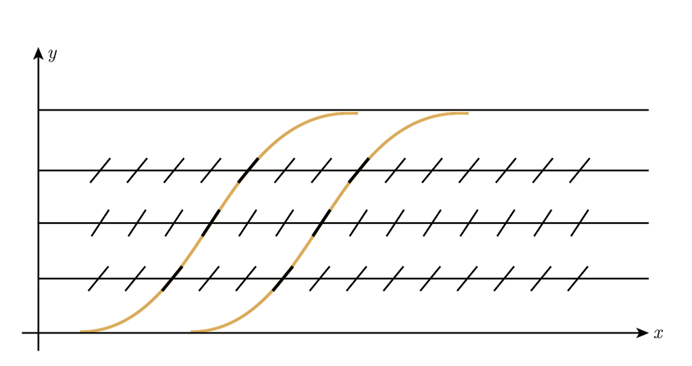
특수한 경우 a = b에서는 최대 기울기 = 2-2a이다. 이 경우 곡선은 z = 1/2인 점에 대해 기함수 대칭이다. 더 나아가 a = b = 1/2인 특수한 경우에는 해
를 얻는다. 여기서 해 곡선이 유한한 범위를 가짐을 볼 수 있다. 지수 a와 b가 더 크면 분명히 무한한 범위를 갖는다.
위 내용의 응용으로, 초당 컴퓨터 연산 수의 증가율이 수년 동안 상당히 일정했다는 점을 생각해 보자. 그러므로 우리는 S자 곡선의 거의 직선인 부분에 분명히 있다. (이에 대해서는 다음 장에서 더 다룬다.) 이 경우 폰 노이만 방식의 단일 프로세서 컴퓨터의 포화 지점을 어느 정도 알 수 있다. 우리는 (1) 세상이 분자로 이루어져 있다고 믿고 (2) 특수 상대성과 일반 상대성이라는 두 상대성 이론의 증거를 이용하면 유용한 신호 전송의 최대 속도가 주어지므로, 단일 프로세서로 할 수 있는 일에는 분명한 한계가 있다. 고도로 병렬적인 프로세서로 가는 추세는 우리가 단일 프로세서 컴퓨터의 S자 곡선 상단 포화 한계를 느끼고 있다는 표시다. 발열이라는 골치 아픈 문제도 고려해야 한다. 이 문제는 다음 장에서 더 자세히 논의하겠다.
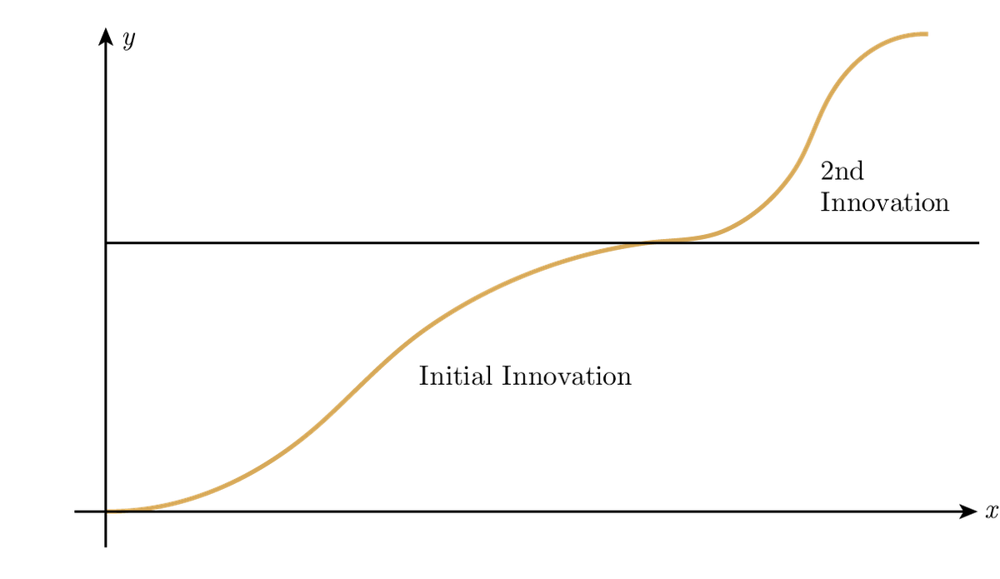
다시 한번 우리는 단순한 모델이, 세부적으로 그렇게 정확하지는 않지만 상황의 성질을 시사하는 모습을 본다. 병렬 처리가 이 그림에 들어맞는지, 아니면 독립적인 곡선인지는 이 시점에서는 분명하지 않다. 종종 새로운 혁신은 그 분야의 성장을, 옛 곡선의 포화 수준 부근에서 이륙하는 새로운 S자 곡선 위에 올려놓는다, 그림 2.2. 단단한 포화 상한이 없고 대신 결국 로그적으로 성장하는 모델을 탐구하고 싶을 수도 있다. 그러한 모델이 때로는 더 적절하다.
미래의 전기공학은 아마도 대체로 (1) 선반 위나 카탈로그에서 칩을 고르고, (2) 원하는 것을 얻도록 칩들을 적절한 방식으로 조립하고, (3) 그에 해당하는 프로그램을 작성하는 문제가 될 것이 분명하다. 현재 구할 수 있는 칩과 회로 기판에 대한 지식은 공학의 필수 요소가 될 것이다. 옛날의 《진공관 카탈로그(Vacuum Tube Catalog)》가 그랬던 것처럼 말이다.
이 영역에서 마지막 관찰 하나를 하자면, 특수 목적용 집적회로 칩에 대해 이야기해 보겠다. 당신의 특별한 작업을 위한 특수 목적 칩을 갖는 것은 자아를 엄청나게 충족시켜 주지만 거기에는 매우 높은 비용이 따른다. 첫째는 물론 설계 비용이다. 그다음은 칩의 ‘문제 해결(troubleshooting)’ 비용이다. 대신 값이 좀 더 비쌀 수도 있는 범용 칩을 찾아 쓴다면, 다음과 같은 이점을 얻는다.
- 칩의 다른 사용자들이, 오류나 다른 약점이 있다면, 그것을 찾는 데 도움을 줄 것이다.
- 다른 사용자들이 사용에 필요한 매뉴얼을 작성하는 데 도움을 줄 것이다.
- 제조사를 포함한 다른 사용자들이 칩의 업그레이드를 제안할 것이므로, 당신은 거의 또는 전혀 노력하지 않고도 꾸준히 개선된 칩을 기대할 수 있다.
- 재고가 심각한 문제가 되지 않을 것이다.
- 내가 거듭 말했듯이 기술 진보가 점점 더 빠른 속도로 진행되므로, 기술적 노후화는 미래에 지금보다 훨씬 더 빠를 것이다. 시스템을 설치해서 가동시키자마자 중요한 개선이 나타날 텐데, 만일 범용 칩과 좋은 프로그래밍 방법을 사용했다면 프로그램만 약간 바꿔서 그 개선을 받아들일 수 있다. 그러나 특수 목적 칩은 거의 확실히 당신을 처음 설계에 묶어 놓을 것이다.
그러므로 특수 목적 칩을 조심하라! 많은 경우에 그것들이 필수적이기는 하지만.
3 컴퓨터의 역사-하드웨어
컴퓨팅의 역사는 아마 원시인이 작은 돌멩이(pellet)로 두 양의 합을 계산하던 때부터 시작되었을 것이다. 하버드의 마샤크(Marshack)는 동굴인들이 남긴 뼈에 그어진 자국이 지금까지 그저 흠집일 뿐이라고 여겨졌지만 실은 달의 위상과 분명히 관련된, 정성껏 새겨진 선들이었음을 밝혀냈다. 영국 솔즈베리 평원의 유명한 스톤헨지(Stonehenge)는 기원전 1900-1700년, 1700-1500년, 1500-1400년의 세 시기에 걸쳐 세워졌으며 천문 관측과 밀접하게 연관되어 있었던 것으로 보인다. 이는 상당히 정교한 천문학적 지식이 있었음을 뜻한다. 고천문학(archeoastronomy) 연구 덕분에 많은 원시 민족이 천문 현상에 대해 상당한 지식을 갖고 있었음이 밝혀졌다. 중국, 인도, 멕시코가 특히 두드러졌고 오늘날 우리가 천문대라고 부르는 그들의 구조물이 아직도 남아 있다. 다만 그것들이 어떻게 쓰였는지에 대한 우리의 이해는 너무도 부족하다. 그리고 우리 서부 평원에는 인디언들이 쓰던 천문 관측대의 흔적이 많이 남아 있다.
모래판(sand pan)과 주판(abacus)은 컴퓨팅과 더 직접적으로 연결된 도구이며 인도에서 아라비아 숫자가 들어온 것은 순수 컴퓨팅 분야에서 큰 진전이었다. 아라비아 숫자(원래 아랍어 형태가 아닌)의 도입은 관료 사회의 막대한 반대에 부딪혔으며 심지어 불법으로 만들려는 시도까지 있었다. 하지만 결국 (1400년대에) 실용성과 경제적 이점이, 숫자를 나타내는 기호로 알파벳 글자를 쓰는 훨씬 불편한 로마식(그리고 더 이른 그리스식) 표기법을 이겨냈다.
다음으로 큰 진전은 네이피어(Napier, 1550-1617)가 로그를 발명한 것이었다. 여기서 계산자(slide rule)가 나왔다. 계산자는 숫자들을 그 숫자의 로그에 비례하는 길이로 부품 위에 새겨 놓아서 두 길이를 더하는 것이 곧 두 숫자를 곱하는 것이 된다. 이 아날로그 장치인 계산자는 또 하나의 중요한 진전이었지만 디지털 컴퓨터가 아니라 아날로그 컴퓨터 방면의 진전이었다. 나는 한때 아주 정교한 계산자를 사용한 적이 있다. 지름 6-8인치, 길이 약 2피트인 원통 모양으로, 바깥 원통과 안쪽 원통 양쪽에 온갖 눈금이 잔뜩 있었고 눈금을 더 정확히 읽기 위해 돋보기가 달려 있었다.
1930년대와 1940년대에 계산자는 공학자의 표준 장비였다. 보통 가죽 케이스에 넣어 벨트에 차고 다녔는데, 캠퍼스에서 자기 집단을 알리는 휘장 노릇을 했다. 표준 공학자용 계산자는 “10인치 로그로그 데시트리그(log log decitrig) 계산자”였다. 즉 눈금 길이가 10인치이고 로그로그 눈금, 제곱·세제곱 눈금뿐 아니라 도(degree)의 소수 단위로 된 수많은 삼각함수 눈금을 포함했다. 이제는 더 이상 생산되지 않는다!
아날로그의 길을 계속 따라가 보면, 다음으로 중요한 단계는 미분 해석기(differential analyzer)였다. 처음에는 아날로그 형태의 기계식 적분기가 장착되어 있었다. 가장 일찍 성공한 기계는 1930년경에 MIT의 배니바 부시(Vannevar Bush)가 만든 것이다. 이후의 RDA #2는 여전히 아날로그에 기계식이 바탕이기는 했지만 전자적인 상호 연결이 상당히 많았다. 나는 이 기계를 한동안(1947-1948) 사용해서 나이키 유도 미사일(Nike guided missile) 초기 설계 단계의 궤적을 계산했다.
제2차 세계대전(WWII) 중에는 전자식 아날로그 컴퓨터가 군사 분야에서 실전에 쓰이기 시작했다. 그들은 앞선 기계식 바퀴와 구슬(볼) 대신 콘덴서를 적분기로 사용했기 때문에(그래서 시간에 대해서만 적분할 수 있었다) 실용적으로 큰 진전이었다. 나는 벨 전화연구소(Bell Telephone Laboratories, 이하 벨 연구소)에서 그런 기계 하나를 여러 해 동안 사용했다. 그것은 낡은 M9 사격 지휘기(M9 gun director, 대공포에 사격 지시를 내리던 기계식 아날로그 컴퓨터)의 부품들로 만들어졌다. 사실 우리는 나중에 폐기된 M9의 부품들을 사용해서 두 번째 컴퓨터를 만들었는데, 단독으로 쓰거나 첫 번째 기계와 함께 써서 더 큰 문제를 풀 수 있는 용량을 늘리기도 했다.
디지털 컴퓨팅으로 돌아가서, 네이피어는 “네이피어의 뼈(Napier’s bones)”도 설계했다. 보통 상아 막대에 숫자가 새겨져 있어서 곱셈을 쉽게 해 주는 도구였다. 이것은 디지털 장치이므로 아날로그 계산자와 혼동해서는 안 된다.
네이피어의 뼈에서 보다 현대적인 탁상 계산기(desk calculator)가 나왔을 것으로 보인다. 시커드(Schickard)는 1623년 12월 20일, (천문학으로 유명한) 케플러에게 쓴 편지에서 자신의 실험실 화재로 케플러를 위해 만들던 기계가 불에 타 버렸다고 알렸다. 그의 기록과 설계도를 검토해 보면 그 기계는 사칙연산을 할 수 있었던 것으로 보인다 - 하지만 그런 기계에서 곱셈과 나눗셈이 정확히 무엇을 뜻하는지에 대해서는 관대하게 보아 줘야 한다. 같은 해에 태어난 파스칼(Pascal, 1623-1662)이 흔히 탁상 컴퓨터의 발명자로 여겨지지만 그의 기계는 덧셈과 뺄셈만 할 수 있었다 - 세금을 매기던 아버지를 돕는 데는 그 연산만 있으면 충분했다. (미적분학으로 유명한) 라이프니츠(Leibnitz)도 컴퓨터를 손보며 곱셈과 나눗셈까지 넣었지만 그의 기계는 신뢰할 만하지는 못했다.
디지털 분야의 다음 위대한 이름은 배비지(Babbage, 1791-1871)다. 그는 흔히 현대 컴퓨팅의 아버지로 여겨진다. 그의 첫 설계는 차분기관(difference engine)이었다. 이는 다항식(polynomial)을 등간격의 연속된 값들에서 덧셈과 뺄셈만으로 계산할 수 있다는 단순한 생각에 바탕을 둔 것이다. 국소적으로 보면 대부분의 함수가 적당한 다항식으로 근사할 수 있으므로, 이는 “기계가 만드는 수표(표)”를 만들어 낼 수 있었다. (배비지는 인쇄도 반드시 기계가 직접 하게 해서 인간의 오류가 끼어들 여지를 막으려고 했다.) 영국 정부는 그에게 재정 지원을 아끼지 않았지만 그는 끝내 완성하지 못했다. 노르웨이의 아버지와 아들(샤이츠, Scheutz)이 작동하는 기계를 여러 대 만들어 냈고 배비지는 이들의 성공을 축하해 주었다. 그들의 기계 중 하나는 뉴욕의 올버니 천문대(Albany observatory)에 팔려 천문 수표를 만드는 데 쓰였다.
컴퓨팅 분야에서 늘 그렇듯, 배비지는 차분기관을 끝내지도 못한 채 훨씬 강력한 해석기관(analytical engine)을 구상하고 있었다. 이 해석기관은 오늘날의 폰 노이만형 컴퓨터(von Neumann computer) 설계와 크게 다르지 않다. 그는 그것을 작동시키는 데는 끝내 실패했다. 그런데 영국의 한 팀이 1992년, 그의 작업 도면으로 기계를 재현해 그가 설계한 대로 성공적으로 작동시켜 보였다!
그다음 주요 실용 단계는 컴프토미터(comptometer)였다. 겉보기엔 그냥 덧셈 장치에 불과했지만 덧셈을 반복하면서 자리를 옮기면(shift) 곱셈과 같아지기 때문에 매우 오랜 세월 폭넓게 사용되었다.
여기서 밀리어네어(Millionaire), 그리고 이어서 마천트(Marchant), 프리든(Friden), 먼로(Monroe) 등 보다 현대적인 탁상 계산기들이 잇달아 나왔다. 처음에는 손으로 제어하고 손으로 돌리는 방식이었지만 점차 주로 기계식 레버에 의해 제어의 일부가 기계에 내장되었다. 1937년경부터 계산의 동력 부분을 담당할 전기 모터가 점차 장착되기 시작했다. 1944년 이전에 적어도 한 기종은 제곱근 연산까지 기계 안에 내장했다(여전히 정교하게 짜인 기계식 레버였다). 이런 수동 기계들은, 사람들이 돌려서 계산 능력을 제공하는, 소위 컴퓨팅 그룹들의 기반이었다. 예를 들어 내가 1946년에 벨 연구소에 왔을 때, 연구소에는 그런 그룹이 네 개 있었다. 보통 한 그룹에 여섯에서 열 명가량의 아가씨들이 있었다. 수학 부서에 작은 그룹 하나, 전송(네트워크) 부서에 더 큰 그룹 하나, 교환 부서에 하나, 품질 관리 부서에 하나였다.
펀치 카드(punched card) 컴퓨팅은 한 선견지명이 있는 사람이, 법에 따라 10년마다 실시해야 하는 연방 인구조사가 너무 오래 걸려서 기계적 방법으로 전환하지 않는 한 1890년 조사가 다음 조사가 시작되기 전에 끝나지 않을 것임을 알아챈 데서 시작되었다. 홀러리스(Hollerith)가 그 일을 맡아 최초의 펀치 카드 기계를 만들었다. 이후 인구조사가 거듭될 때마다 늘어나는 인구와 조사 항목 수를 따라잡기 위해 더 강력한 기계를 만들었다. 1928년에는 IBM이 구멍이 사각형인 카드를 쓰기 시작했는데, 전기 브러시가 카드의 특정 위치에 구멍이 있는지 없는지를 쉽게 감지할 수 있도록 하기 위해서였다. 역시 인구조사 조직을 떠난 파워스(Powers)는 둥근 구멍이 있는 카드 형태를 유지했다. 이는 “손가락(fingers)”이라 불리는 기계식 막대가 구멍을 감지하도록 설계된 것이었다.
1935년경에 IBM은 곱셈을 하고 곱셈 결과에 덧셈을 동시에 두 번 더해 넣을 수 있는 601 기계식 펀치를 만들었다. 이 기계는 컴퓨팅의 주력 가운데 하나가 되었다. 임대 약 1,500대가 쓰였고 평균 2~3초에 곱셈 하나를 수행했다. 이 기계들은 곱셈을 세 번 하는 특수 기계와 나눗셈 기계들과 함께 로스앨러모스(Los Alamos)에서 최초의 원자폭탄 설계를 계산하는 데 사용되었다.
기계식, 정확히는 릴레이(relay, 전기 신호로 열고 닫히는 스위치) 방식의 영역에서, 조지 스티비츠(Stibitz)가 1939년 복소수 컴퓨터(Complex Number Computer)를 만들었다. 1940년에는 본체가 뉴욕에 있는 채 다트머스(Dartmouth)에서 전시하는 데 성공해 초기의 원격 단말기(remote terminal) 기계가 되었다. 보통 서로 다른 장소에 입력 스테이션(station)이 세 개 있었기 때문에, 연구소 안에서는 너그럽게 말하면 “시분할 기계(time-shared machine)”라고 불렸다.
독일의 콘라트 추제(Konrad Zuse)와 하버드의 하워드 에이컨(Howard Aitken)은 스티비츠처럼 각자 점점 더 복잡해지는 일련의 릴레이 컴퓨터를 만들었다. 스티비츠의 Model 5는 한 기계에 컴퓨터 두 대가 들어 있어 필요할 때 작업을 나누어 처리할 수 있었다 - 말하자면 다중 프로세서(multiprocessor) 기계였다. 세 사람 가운데 추제가 아마 가장 위대했을 것이다. 그가 겪어야 했던 어려움과, 나중에 컴퓨팅의 소프트웨어 쪽에 기여한 것을 함께 고려한다면 말이다.
전자 컴퓨터의 시대는 미 육군을 위해 제작되어 1946년에 인도된 ENIAC에서 시작되었다는 것이 통설이다. ENIAC은 진공관(vacuum tube)이 약 18,000개나 들어 있을 만큼 물리적으로 거대했고 원래 설계대로면 IBM의 플러그보드와 비슷하게 배선하는 방식이었다. 그런데 특정 문제를 기술하기 위한 연결 배선이 기계실 전체를 한 바퀴 돌아갈 정도였다! 원래 의도대로 탄도 궤적을 계산하는 데만 쓰는 한 이 결함은 심각하지 않았다. 결국 나중의 IBM CPC처럼, 사용자들이 영리하게 재배선해서, 배선으로 프로그램하는 방식이 아니라 명령(탄도표에 적힌 숫자들)에서 프로그램을 읽는 기계처럼 동작하게 했다.
ENIAC을 만든 모클리(Mauchly)와 에커트(Eckert)는 배비지가 그랬듯이, 첫 번째 기계가 완성되기도 전에 더 큰 내부 프로그래밍 방식의 기계인 EDVAC을 이미 구상하고 있었다. 이 프로젝트의 컨설턴트였던 폰 노이만이 보고서를 작성했고 그 결과 내부 프로그래밍의 공로는 흔히 그에게 돌려진다. 다만 내가 아는 한 그는 그 평가를 주장한 적도, 부인한 적도 없다. 1946년 여름, 모클리와 에커트는 모두에게 개방된 전자 컴퓨터 설계·제작 강좌를 열었다. 그 결과 수강생들 가운데 많은 사람이 저마다 자기 컴퓨터를 만들러 떠났다. 영국 캠브리지의 윌크스(Wilkes)가 가장 먼저 실용적으로 가동되는 기계를 완성했는데, 그것이 EDSAC이었다.
처음에는 기계마다 모두 하나뿐인 유일한 기계였다. 다만 많은 기계가 폰 노이만의 지휘 아래 있는 기술연구소(Institute for Advanced Studies)의 기계를 복사했지만 (그리고 그 앞서 완성되는 경우가 많았는데, 이유는 그 기계의 엔지니어링이 아무래도 지연되었기 때문이다). 그 결과 소위 복사본이라 불리는 많은 기계들 - 예컨대 1952년의 MANIAC-I처럼 - 이 기술연구소 기계보다 먼저 완성되었다. MANIAC-I은 요란한 기계 이름 짓기 관행을 없애려고 붙인 이름이며 N.C. 메트로폴리스(Metropolis)의 지휘 아래 만들어졌다. MANIAC-I과 MANIAC-II(1955)는 로스앨러모스에서 만들어졌고 MANIAC-III(1959)은 시카고 대학교에서 만들어졌다. 초기 기계들의 대부분은 미 연방 정부, 특히 군부를 통한 지원으로 만들어졌다. 컴퓨터 혁명을 시작하는 데 도움을 준 그 공로는 크게 인정받아 마땅하다.
처음으로 전자 컴퓨터를 상업 생산한 것도 다시 모클리와 에커트였다. 그들이 세운 회사가 다른 회사와 합병되면서 그들의 기계는 결국 UNIVAC이라는 이름으로 불리게 되었다. 특히 인구조사국용으로 만들어진 기계가 유명했다. IBM은 조금 늦게 IBM 701을 18대(비밀 암호 사용자까지 세면 20대) 출시했다. 나는 잘 기억한다. 우리 일행은 IBM 701에 대한 발표를 듣고 제안된 18대면 수년간 시장이 포화될 것이라 모두 믿었다! 우리의 오류는 단순했다. 당시 우리가 하고 있던 종류의 일만 생각했고 기계의 전혀 새로운 응용 방향으로는 생각하지 않았다. 당시 최고의 전문가들도 완전히 틀렸다! 그리고 조금 틀린 정도가 아니라 크게 틀렸다! 그리고 이번이 마지막 실수도 아니다!
이제 몇 가지 비교를 해 보자:
손 계산기 초당 1/20 연산. 릴레이 기계 보통 초당 1 연산. 자기 드럼 컴퓨터(magnetic drum computer) 15-1,000 (고정소수점이냐 부동소수점이냐에 따라 다소 차이). 701형 초당 1,000 연산. 현재(1990) 109 (폰 노이만형 가운데 가장 빠른 수준).
내가 살아오며 겪어야 했던 속도 변화와 그에 따른 기억장치(storage) 용량 변화를 보면, 여러분이 경력에서 견뎌야 할 변화가 어떤 모습일지 어느 정도 짐작이 갈 것이다. 폰 노이만형 기계만 해도 포화 속도에 이르기까지 아마 100배쯤의 속도 향상 여지가 더 있을 것이다.
이런 숫자는 사실 대부분의 인간 경험을 훨씬 벗어난다. 그래서 여러분이 듣게 될 속도에 인간적인 눈금을 도입할 필요가 있다. 먼저 표기법부터(괄호 안이 표준 기호이다):
밀리(milli, m) 10-3 킬로(kilo, k) 103 마이크로(micro, µ) 10-6 메가(mega, M) 106 나노(nano, n) 10-9 기가(giga, G) 109 피코(pico, p) 10-12 테라(terra, T) 1012 펨토(femto, f) 10-15 아토(atto, a) 10-18
이제 인간적인 눈금으로 넘어가 보자. 하루는 60 × 60 × 24 = 86,400초이다. 1년은 약 3.15 × 107초이고 100년은 아마 여러분의 수명보다 길 텐데, 약 3.15 × 109초이다. 그러므로 초당 10^9회의 부동소수점 연산(플롭스, FLOPS)을 하는 기계는 3초 만에 여러분 일생의 초 수보다 더 많은 연산을 수행하며 그리고 거의 확실히 모두 틀리지 않고 옳게 계산한다!
인간적인 눈금의 또 다른 접근으로, 진공에서 빛의 속도는 약 3 × 1010 cm/초이다(전선 속에서는 그 7/10 정도로 느리다). 따라서 빛은 1나노초에 30cm, 즉 약 1피트를 간다. 1피코초면 당연히 약 1/100인치를 간다. 이는 신호가 집적회로(IC, integrated circuit) 안에서 (기껏해야) 갈 수 있는 거리를 뜻한다. 그래서 우리가 지금 쓰는 어떤 펄스 속도에서는 부품들이 서로 아주 가까이 - 인간의 눈금으로 아주 가까이 - 있어야 한다. 그렇지 않으면 잠재 속도의 상당 부분이 부품 사이를 지나는 데 허비된다. 그리고 이제는 우리가 사용하던 회로 해석(집중 정수 회로 해석)으로는 더 이상 할 수 없게 되었다.
인간의 눈금 대신 자연의 길이 눈금은 어떨까? 원자는 크기가 가지각색이다. 대체로 1~3옹스트롬(angstrom, 1옹스트롬은 10-8 cm) 범위이고 결정 속에서는 보통 10옹스트롬쯤 떨어져 배치된다. 물론 예외는 있다. 빛은 1펨토초에 약 300개의 원자를 가로지를 수 있다. 따라서 초고속 컴퓨터의 부품은 작아야 하고 서로 아주 가까이 있어야 한다!
트랜지스터(transistor)는 불순물을 사용하는데, 불순물의 비율은 보통 100만 분의 1쯤 된다고 생각해 보자. 그러면 불순물 원자가 하나뿐인 트랜지스터는 아마 믿기 어려울 것이다. 하지만 배경 잡음(노이즈)을 줄이려고 온도를 낮추면, 불순물 1,000개쯤이라면 상상 범위 안에 들어온다 - 그렇게 하면 한 변에 원자가 최소한 1,000개쯤 있는 고체소자(solid-state device)가 된다. 상호 연결이 때로는 기기 간 거리의 10배 이상을 차지하는 상황에서, 서로 연결된 기기 사이의 거리를 원자 100,000개 아래로 줄이는 것이 정말 한계까지 몰아붙이는 일(3피코초)이라는 느낌이 드는 이유를 알 수 있을 것이다.
다음으로 열 발산(heat dissipation) 문제가 있다. 열역학적으로 가역적인 컴퓨터에 대한 논의가 있어 왔지만 지금까지는 논의와 논문뿐이고 열은 여전히 문제이다. 단위 면적당 부품이 많을수록, 상태 변화 속도가 빠를수록 작은 면적에서 발생하는 열이 더 커지는데, 녹기 전에 그 열을 밖으로 빼내야 한다. 이를 부분적으로 보상하려고 우리는 점점 더 낮은 전압으로 내려가고 있으며 지금은 집적회로(IC)를 2 1/2볼트나 3볼트로 동작시키고 있다. 칩 바닥을 다이아몬드층으로 만드는 가능성이 현재 검토되고 있는데, 다이아몬드는 구리보다 훨씬 더 좋은 열 전도체이기 때문이다. 이제는 다이아몬드보다 아마 더 싸면서 열 전도성이 아주 좋은 비슷한 결정 구조가 실현될 그럴듯한 가능성도 있다.
컴퓨터를 빨리 만들기 위해 우리는 한 컴퓨터에 산술 장치를 2개, 4개, 그 이상 장착했고 또한 파이프라인(pipeline)과 캐시 메모리(cache memory)도 고안했다. 이 모든 것은 고도의 병렬 컴퓨터를 향한 작은 걸음들이다.
그러므로 단일 프로세서 기계의 앞날에 벽에 써진 글씨(writing on the wall)가 보일 것이다 - 우리는 포화에 다가가고 있다. 그래서 고도의 병렬 기계에 대한 매혹이 일어난다. 유감스럽게도 아직 병렬 기계에는 단일한 일반 구조가 없다. 그 대신 아주 많은 경쟁적 설계들이 있으며 저마다 일반적으로 잠재 속도를 활용하기 위해 서로 다른 전략을 요구하고 장점과 단점이 다르다. 표준 병렬 컴퓨터 구조로 하나의 설계가 우뚝 설 가능성은 낮다. 그러므로 유망해 보이는 여러 방향을 추구하는 일에는 어려움이 따르고 힘이 분산될 것이다.
오래전에 로스앨러모스(LANL, Los Alamos National Laboratory)가 그 시점 시장에서 가장 빠른 컴퓨터의 데이터로 그린 차트에서, 초당 연산 수에 대한 방정식을 구했는데
그것은 데이터를 꽤 잘 맞혔다. 여기서 시간은 1943년부터 시작한다. 1987년에는 그 값이 약 3 × 108로 외삽(약 20년이나 앞서!)되었고 정확히 맞아떨어졌다. 극한 점근선은 단일 프로세서의 폰 노이만형 컴퓨터에서 3.585 × 109이다.
여기, 컴퓨터 성장의 역사에서 여러분은 S자 곡선(S-shaped curve)의 실현을 보게 된다: 아주 느린 출발, 급격한 상승, 거의 직선에 가까운 긴 성장 구간, 그리고 피할 수 없는 포화와의 마주침이 그것이다.
다시 인간적인 크기로 줄여 보자. 내가 벨 연구소 안에서 디지털 컴퓨팅을 진짜로 시작하게 되었을 때, 나는 먼저 연구소 밖에서 컴퓨터를 시간 단위로 빌려 쓰기 시작했다. 그리하여 수학 부서장이 스스로 계산해 보니, 나에게 연구소 안에 컴퓨터를 한 대 마련해 주는 편이 더 쌀 것임을 알게 되었다. 이는 그와 논쟁하기를 피하려는 나의 고의적인 작전이었다. 논쟁은 소용없을 뿐만 아니라, 디지털 컴퓨터에 대한 그의 저항만 더 키울 것이라고 생각했기 때문이다. 상사가 한번 “안 된다!”고 말하면 다른 결정을 얻어내기는 아주 어렵다. 그러니 제안에 대해 처음부터 “안 된다!”는 말이 나오지 않게 해야 한다. 초창기에 나는 계산량이 약 15개월마다 두 배가 된다는 것을 발견했다. 몇 년 뒤에는 두 배가 되는 데 약 18개월이 걸리게 되었다. 부서장은 그런 속도로 영원히 늘릴 수는 없다고 계속 말했고 나의 정중한 대답은 언제나 똑같았다. “물론 말씀이 맞습니다. 그런데 저는 18-20개월마다 계산량이 두 배가 되는 것을 지켜보시기만 하세요.” 구할 수 있는 기계들이 그에 상응하는 속도로 따라와 주었기 때문에, 나와 내 후임자들은 여러 해 동안 계산량을 두 배로 늘릴 수 있었다. 우리는 그 세월 내내 S자 곡선의 거의 직선에 가까운 부분에서 살았다.
그런데 부서장에게 진실을 고백하자면, 중요한 것은 수행한 연산의 수가 아니라, 말하자면 내가 계산해 낸 ‘마이크로 노벨상’ 수준의 결과가 얼마나 되는지라는 사실을 깨닫게 해 준 것도 바로 그의 말이었다. 그래서 1961년에 내가 출판한 책의 좌우명은 이러했다:
계산의 목적은 통찰이지 숫자가 아니다.
내 좋은 친구 하나가 이렇게 고쳐 주었다:
숫자들을 계산하는 목적은 아직 보이지 않는다.
이제 수년간 컴퓨터가 어떻게 만들어졌는지 그 세부 사항을 살펴볼 필요가 있다. 우리가 살펴볼 가장 작은 부품은 정보의 비트를 저장하는 2상태 소자(two-state device)와, 신호를 통과시키거나 차단하는 게이트(gate, 논리소자)다. 둘 다 이진 소자이고 현재의 지식 상태에서 이들은 우리가 아는 컴퓨팅 방법 가운데 가장 쉽고 가장 빠른 방법을 제공한다.
이런 부품들로 우리는 더 긴 비트 배열을 저장할 수 있는 조합을 만든다. 이 배열을 흔히 숫자 레지스터(register)라고 부른다. 논리 제어부는 게이트를 포함한 기억장치 소자들의 조합에 지나지 않는다. 우리는 이런 소자들로 가산기(adder)를 만들고 컴퓨터의 모든 더 큰 단위도 만든다.
더 큰 단위로 올라가면 컴퓨터는 (1) 기억장치, (2) 중앙 제어부, (3) 산술논리연산장치(ALU, arithmetic and logic unit)로 이루어진다. 중앙 제어부에는 레지스터가 하나 있는데, 이를 현재 주소 레지스터(CAR, Current Address Register)라고 하겠다. 이 레지스터는 다음에 가져올 명령이 있는 주소를 담고 있다, 그림 3.1.
그림 3.1-컴퓨터 구조 (Computer structure)
컴퓨터의 사이클은 다음과 같다:
- CAR에서 다음 명령의 주소를 가져온다.
- 기억장치에서 그 주소로 가서 그 명령을 가져온다.
- 그 명령을 해독해서 수행한다.
- CAR 주소에 1을 더하고 다시 시작한다.
알 수 있겠지만 이 기계는 자기가 어디에 있었는지도, 어디로 가고 있는지도 모른다. 기껏해야 같은 사이클을 끝없이 반복한다는 근시안적인 시야만 있을 뿐이다. 그 아래 수준에서, 개별 게이트와 2상태 기억 소자들은 아무 의미도 모른다 - 그저 각자 맡은 대로 반응할 뿐이다. 그것들 역시 무슨 일이 일어나고 있는지에 대한 전체적인 지식이 없고 저장이든 게이팅이든 어느 비트에도 어떤 의미를 붙이지 못한다.
기계의 어떤 상태에 따라 자기 명령의 주소를 CAR에 넣는 명령들도 있다(이런 경우에는 1이 더해지지 않는다). 그러면 기계는 사이클을 시작하면서 기억장치에서 이전 명령의 바로 다음 주소를 찾는 게 아니라 CAR에 넣어진 위치를 찾게 된다.
이렇게 복습하는 이유는, 여러분이 다음 사실을 분명히 알도록 하기 위해서다. 기계는 다른 비트들에 따라서 정보의 비트들을 처리할 뿐이고 기계 자신으로서는 일어나는 어떤 것에도 의미가 없다 - 의미를 비트에 붙이는 것은 우리이며 그것뿐이다. 기계는 고전적인 의미의 ’기계’다. 그저 하는 일을 할 뿐, 그 이상 아무것도 하지 않는다(오작동하지 않는다면). 물론 실시간 인터럽트(interrupt)라든지 새로운 비트가 기계 속으로 들어오는 다른 방식들이 있지만 기계는 그것들을 비트로만 볼 뿐이다.
하지만 이 주제를 떠나기 전에, 고대 그리스에서 데모크리토스(Democritus, 기원전 460-362)가 “모든 것은 원자와 빈 공간이다”라고 말했던 것을 떠올려 보라. 그는 그리하여 오늘날 많은 물리학자의 견해를 표현한 셈이다. 당신과 나를 포함한 이 세계는 분자로 이루어져 있고 우리는 복사에너지 장(radiant energy field) 속에서 존재한다. 그 이상은 없다! 과연 우리도 기계일까? 여러분 가운데 많은 사람은 이 안에서 만족하고 싶지 않을 것이며, 지각 없이 서로 부딪히는 많은 분자들일 뿐이라는 미약한 존재로 여겨지고, 이는 컴퓨터에 대한 한 가지 관점이라고 앞에서 보았다. 이 점은 인공지능(Artificial Intelligence, 이하 AI)이라는 제목 아래 6~8장에서 다룰 것이다.
컴퓨터를 기계로 보는 관점 - 비트를 처리하는 기억장치와 게이트들의 모임에 지나지 않으며 그 이상 아무것도 아니다 - 에는 가치가 있다. 이 관점은 프로그램을 디버깅(디버깅, 오류 찾기)할 때 유용하다. 사실 디버깅을 시도할 때 반드시 가정해야 하는 관점이 그것이다. 당신은 기계가 명령을 하나씩 순서대로 따르며 그 이상 아무것도 하지 않는다고 가정한다 - 기계에게는 ’자유 의지’도 없고 인간에게 흔히 연관시키는 자기 인식이나 자의식 같은 어떤 속성도 없다.
그렇다면 실제로 우리는 기계와 얼마나 다른가? 우리 모두 기계와는 다르다고 생각하고 싶어 한다. 하지만 본질적으로도 다를까? 이것은 대부분의 사람에게 민감한 지점이며 감정적·종교적 측면이 거의 대부분의 논쟁을 지배한다. 충분한 배경을 갖고 합리적으로 논의할 수 있게 된 6~8장의 AI 부분에서 이 점으로 다시 돌아오겠다.
4 컴퓨터의 역사-소프트웨어
지난 장에서 말했듯이, 컴퓨팅 초기에는 제어 부분을 전부 손으로 했다. 느린 탁상 계산기들은 처음에는 손으로 제어되었다. 이를테면 곱셈은 승수의 각 자릿수를 처리할 때마다 자리를 옮기며 덧셈을 반복함으로써 했고 나눗셈도 비슷하게 뺄셈을 반복해서 했다. 시간이 지나면서 전기 모터가 적용되었는데, 처음에는 동력으로, 나중에는 곱셈·나눗셈의 제어를 더 자동화하는 데 쓰였다. 펀치 카드 기계는 플러그보드 배선(plug board wiring, 구멍에 플러그를 꽂아 배선하는 보드)으로 제어되어 기계에 정보를 어디서 찾을지, 그 정보로 무엇을 할지, 답을 카드(또는 탭뷸레이터의 인쇄된 시트) 어디에 놓을지를 알려 주었다. 하지만 제어의 일부는 카드 자체에서 오기도 했는데, 전형적으로 X 펀치와 Y 펀치였다(때로는 다른 숫자들도 무슨 일이 일어날지 제어할 수 있었다). 작업마다 플러그보드가 특별히 배선되었고 회계 사무실에서는 배선된 보드를 보통 보관해 두었다가 회계 주기에 따라 매주, 또는 매월 필요할 때마다 다시 사용했다.
릴레이 기계에 이르러서도, 스티비츠의 첫 복소수 컴퓨터 이후로는 주로 펀치된 종이 테이프로 제어되었다. 일회성 문제(one-shot problem)를 풀 때 종이 테이프는 저주다. 지저분하고 수정하려고 붙이거나 고리(루프)를 만들려고 붙이는 것도 성가시다(왜냐하면, 무엇보다도 접착제가 기계의 읽는 손가락 속으로 스며들기 때문이다!). 초기에는 내부 기억장치가 아주 적어서 프로그램을 기계 속에 경제적으로 저장할 수 없었다(다만 나는 설계자들이 그것을 고려하지 않았을까 싶다).
ENIAC은 처음(1945-1946)에는 마치 거대한 플러그보드처럼 배선으로 제어되었다. 하지만 나중에 닉 메트로폴리스(Nick Metropolis)와 딕 클리핑어(Dick Clippinger)가 ENIAC을, 탄도표(ballistic table)에서 프로그래밍되는 기계로 개조했다. 탄도표는 거대한 다이얼 선반들이었고 그 위에 10진 스위치의 손잡이를 돌려서 프로그램의 10진 숫자들을 설정할 수 있었다.
내부 프로그래밍은 기억장치가 어느 정도 넉넉해지면서 현실이 되었다. 보통 폰 노이만의 공로로 여겨지지만 그는 모클리와 에커트 팀의 컨설턴트에 불과했다. 해리 허스키(Harry Huskey)에 따르면, 내부 프로그래밍은 폰 노이만이 컨설팅을 시작하기 이전에 그들 사이에서 자주 논의되었다고 한다. 널리 알려지게 된 최초의 논의(러브레이스 부인(Lady Lovelace)이 제안된 배비지 해석기관용 프로그램을 몇 개 써서 출판한 이후의 이야기)는 폰 노이만의 육군 보고서들(Army reports)이었다. 이 보고서는 널리 회람되었지만 동료 심사를 거쳐 발표된 적은 없었다.
초기의 코드는 대부분 1주소(one-address) 방식이었다. 즉 각 명령이 명령부와, 숫자를 찾거나 보낼 주소를 담고 있었다. 2주소 방식도 있었다. 특히 회전 드럼 기계용이 그랬는데, 앞선 명령이 끝나는 즉시 다음 명령을 쓸 수 있도록 하기 위해서였다. 수은 지연선(mercury delay line)이나 그 밖에 직렬로 접근하는 기억장치에도 같은 원리가 적용되었다. 이런 코드 방식을 최소 지연 코딩(minimum-latency coding)이라고 불렀다. 프로그래머가 다음 명령과 숫자를 어디에 놓을지 계산하느라 겪은 고생(지연과 충돌을 되도록 피하려고)을 상상해 보라. 프로그래밍 오류(버그)를 찾는 일은 말할 것도 없다. 시간이 지나면서 IBM 650 기계 자체를 이용해 이런 최적화를 해 주는 SOAP(기호 최적화 어셈블리 프로그램, symbolic optimizing assembly program)라는 프로그램이 생겼다. 3주소, 4주소 코드도 있었지만 여기서는 무시하겠다.
SOAP에 관한 재미있는 이야기가 있다. SOAP 프로그램의 사본을 프로그램 A라고 하자. 이 A는 프로그램으로서 기계에 적재되는 동시에, 데이터로서도 처리되었다. 이 처리의 출력이 프로그램 B였다. 그러면 B가 IBM 650에 적재되고 A는 데이터로 실행되어 새로운 B 프로그램을 만들어 냈다. 프로그램 B를 만들어 내는 두 실행 시간의 차이는, SOAP 프로그램이 (SOAP 자신에 의해) 얼마나 최적화되었는지를 보여 주었다. 말하자면 자기 컴파일(self-compiling)의 초기 사례인 셈이다.
처음에는 절대 이진수(absolute binary)로 프로그래밍했다. 즉 실제 주소를 이진수로 쓰고 명령부도 이진수로 썼다! 여기서 벗어나려는 두 가지 흐름이 있었다. 8진법(octal)은 이진수를 세 자리씩 묶을 뿐인 방식이고 16진법(hexadecimal)은 네 자리씩 묶는 방식으로, 9를 넘는 수를 나타내려면 A, B, C, D, E, F를 써야 했다(그리고 당연히 15까지의 곱셈·덧셈표를 외워야 했다).
오류를 고치려고 빠진 명령들을 끼워 넣고 싶다면, 바로 앞의 명령을 가져와 그 위치를 어떤 빈 공간으로 점프하는 명령으로 바꿔치기했다. 빈 공간에는 방금 덮어버린 명령과, 끼워 넣고 싶었던 명령들을 넣고 뒤이어 주 프로그램으로 되돌아가는 점프를 붙였다. 그렇게 프로그램은 곧 제어가 이상한 곳들로 점프하는 연속이 되었다. 거의 언제나 일어나듯이 그 수정에도 오류가 있었다. 그러면 또 다른 쓸 만한 공간을 찾아 같은 꼼수를 다시 썼다. 그 결과 프로그램이 기억장치 안을 흐르는 제어 경로는 곧 통조림 스파게티 한 통 같은 모양이 되었다. 왜 그냥 명령 흐름 속에 끼워 넣지 않았을까? 그러려면 프로그램 전체를 훑으며 옮겨진 명령을 가리키는 모든 주소를 다 바꿔야 하기 때문이다! 그건 절대 싫다!
우리는 곧 재사용 가능한 소프트웨어(오늘날의 이름 그대로)라는 발상을 얻었다. 사실 배비지도 그 발상을 이미 가졌다. 우리는 코드 블록을 재사용할 수학 라이브러리들을 작성했다. 하지만 절대 주소 방식 라이브러리는, 라이브러리 루틴을 쓸 때마다 기억장치의 같은 위치에 있어야 한다는 뜻이었다. 라이브러리 전체가 너무 커지자 우리는 재배치 가능한 프로그램(relocatable program)으로 전환해야 했다. 필요한 프로그래밍 기법들은 폰 노이만의 보고서에 들어 있었는데, 그 보고서는 정식으로 출판된 적이 없었다.
프로그래밍을 다룬 최초의 출판된 책은 윌크스, 휠러(Wheeler), 길(Gill)이 쓴 것으로, 영국 캠브리지의 EDSAC(1951)을 대상으로 했다. 나를 포함한 많은 사람이 그 책에서 많이 배웠다. 몇 분 뒤면 여러분도 알게 될 것이다.
누군가 짧은 프로그램을 하나 짜면, 그 프로그램이 연산의 기호 이름(예컨대 add)을 읽어 그 기계 안에서 쓰는 이진 표현(가령 01100101)으로 입력 시점에 번역해 주겠다는 생각을 떠올렸습니다. 곧이어 기호 주소(symbolic addresses)를 쓰자는 아이디어도 나왔습니다. 옛날 프로그래머들 눈에는 참으로 이단적인 발상이었죠. 요즘은 옛날 그 ‘영웅적인’ 절대 이진수(absolute binary) 프로그래밍을 거의 볼 수 없습니다. 손에 쥐고 다니는 프로그램 가능한 계산기를 붙잡고 설계자와 제작자가 전혀 예상하지 못한 일을 시키려고 끙끙거리지 않는 한 말입니다.
한 번은 벨 전화연구소(Bell Telephone Laboratories)의 여성 프로그래머 한 분의 도움을 받아, 당시 쓸 수 있는 레지스터를 전부 사용하는 큰 문제 하나를 IBM 701용 절대 이진수로 코딩하는 데 꼬박 일 년을 보낸 적이 있습니다. 그 경험을 겪고 나서 저는 다시는 누구에게도 그런 노역을 시키지 않겠다고 다짐했습니다. IBM이 포킵시(Poughkeepsie)에서 기호 방식 시스템(symbolic system)을 만들었다는 이야기를 듣고서 그분에게 그것을 주문하고 다음 문제는 그걸로 풀어 보라고 부탁했습니다. 그러자 예상대로 그분은 훨씬 쉬웠다고 하더군요. 그래서 우리는 새 방법을 모든 사람에게 알렸습니다. 그 기계 근처 IBM 구내식당에서 밥을 먹던 백여 명에게 말입니다. 절반은 IBM 직원이었고 나머지 절반은 우리처럼 임대료를 내고 시간을 빌려 쓰는 외부인이었습니다. 제가 아는 바로는, 그 백 명 중 단 한 사람-네, 단 한 명뿐이었습니다-만이 관심을 보였습니다!
마침내 더 완전하고 더 유용한 기호 어셈블리 프로그램(Symbolic Assembly Program, SAP)이 만들어졌습니다. 여러분이 믿기 어려울 만큼 몇 년이 더 지나서였고 그동안 대부분의 프로그래머는 영웅적인 절대 이진수 프로그래밍을 계속하고 있었습니다. SAP가 처음 등장했을 당시, 옛 시절 프로그래머 중 관심을 보인 사람은 아마 1% 정도였을 겁니다. SAP를 쓰는 건 ’여자나 할 짓(sissy stuff)’이었고 진짜 프로그래머는 기계 용량을 낭비해 가면서 어셈블리 작업을 하도록 몸을 낮추지 않는다는 것이었죠. 그렇습니다! 프로그래머들은 도저히 손대려 하지 않았습니다. 하지만 다그치면, 자기네 옛 방식이 오류를 찾고 고치는 데 SAP보다 더 많은 기계 시간을 허비한다는 것만은 인정할 수밖에 없었습니다. 주요 불만 중 하나는 기호 방식을 쓰면 기억장치 안의 어떤 것이 어디에 있는지 알 수 없다는 것이었습니다. 물론 초기에는 기호 주소와 실제 기억장치 위치를 대응시켜 주는 표를 따로 제공했습니다. 믿기 어렵겠지만 그들은 시스템 안에서만 작업하면 그런 정보를 알 필요가 없다는 사실을 깨닫기보다는 나중에 그 표를 애정 어린 마음으로 뒤적였습니다. 아니요! 오류를 고칠 때는 절대 이진수 주소로 고치기를 선호했습니다.
FORTRAN(포트란: 수식 변환, formula translation)은 배커스(Backus)와 그 동료들이 제안했는데, 역시 거의 모든 프로그래머가 반대했습니다. 첫째, 불가능하다고 했습니다. 둘째, 설령 가능하다 해도 기계 시간과 용량을 너무 낭비할 것이라 했습니다. 셋째, 설령 동작한다 해도 품위 있는 프로그래머는 쓰지 않을 것이라 했습니다. 그건 여자나 쓰는 물건이라고요!
FORTRAN의 채택은 앞선 기호 프로그래밍과 마찬가지로 전문 프로그래머들 사이에서 아주 더디게 진행되었습니다. 그리고 이것은 거의 모든 전문 직업 집단에서 전형적으로 나타나는 현상입니다. 의사들은 정작 남에게 주는 조언을 자기 자신은 따르지 않는데, 마약 중독자 비율도 유난히 높습니다. 변호사들은 죽을 때 제대로 된 유언장조차 남기는 경우가 드물다고 합니다. 거의 모든 전문가들은 자기 일에는 자기 전문성을 적용하는 데 느립니다. 이런 상황은 옛말 하나로 잘 요약됩니다. “구두쇠의 아이들은 맨발로 다닌다(구두공의 아이들에겐 신발이 없다).” 앞으로 여러분이 뛰어난 전문가가 되었을 때, 이런 전형적인 실수를 어떻게 피할지 생각해 보십시오!
FORTRAN이 준비되어 돌아가기 시작하자, 저는 제 프로그래머에게 다음 문제는 FORTRAN으로 하라고 그리고 자기 오류를 다 잡아 내라고 제가 그 문제를 제대로 풀고 있는지 검사해 볼 테니 그러라고 말했습니다. 그리고 원한다면 그다음에 내부 루프를 기계어로 다시 짜서 속도를 높이고 기계 시간을 아껴도 좋다고 했습니다. 그 결과 우리는 비슷한 노력으로 다른 사람들이 만들어 내는 양의 거의 열 배에 달하는 결과물을 낼 수 있었습니다. 하지만 그들에게 FORTRAN 프로그래밍은 진짜 프로그래머가 할 일이 아니었습니다!
우리가 시간을 빌려 쓰던 뉴욕시 IBM 본사는, IBM 701을 실무적으로 운영하는 형편이 말이 아니었습니다. 기계 시간(당시 시간당 300달러면 거금이었습니다)도 사람 시간도 그냥 낭비되고 있었습니다. 그래서 저는 그 뒤로는 모니터 시스템을 어떻게 갖출지 궁리하기 전에는 대형 기계를 주문하지 않겠다고 마음먹었습니다（모니터란 컴퓨터가 프로그램을 자동으로 순서대로 처리해 가도록 관리하는 감시용 프로그램을 말합니다）. 그 시스템은 결국 다른 누군가가 우리 첫 IBM 709를 위해 만들어 주었고 나중에 IBM 7096용으로 변형했습니다.
이번에도 모니터 시스템-요즘 흔히 ’그 시스템(the system)’이라고 부르는 것-은 제가 앞서 말한 모든 초기 단계들과 마찬가지로, 매일 기계를 쓰는 사람이라면 누구나 당연히 알아차렸어야 할 것이었습니다. 하지만 대부분의 사용자들은 상황이 얼마나 나쁜지, 또 컴퓨터가 일을 얼마나 훨씬 쉽고 싸게 만들 수 있는지 생각하거나 관찰하기에는 너무 바빴던 것 같습니다. 당연한 것을 보려면 흔히 외부인이 필요합니다. 아니면 제가 그랬던 것처럼, 곰곰이 생각하고 자기가 무엇을 하고 있으며 왜 그 모든 것이 필요한지 의아해하는 사람이 필요하죠. 설령 그렇게 말해 주어도, 옛 사람들은 자기들이 배운 방식을 고수합니다. 아마도 과거에 대한 자부심과, 오랫동안 써 온 방식보다 더 나은 방법이 있다는 것을 인정하고 싶지 않은 마음 때문이겠지요.
소프트웨어의 역사에서 벌어진 일을 한마디로 설명하자면, 우리는 절대 방식에서 가상 머신(virtual machine) 으로 서서히 옮겨가고 있었다고 할 수 있습니다. 먼저 실제 코드 명령이 사라졌고 그다음 실제 주소가 사라졌으며 FORTRAN에 와서는 복잡한 기계의 내부 구조와 작동 방식을 배워야 할 필요성마저 사라졌습니다. 우리는 사용자를 기계 그 자체로부터 떼어 놓고 있었던 것입니다. 비교적 이른 시기에 벨 연구소에서도 자기 테이프 장치를 가상화해, 기계와 무관하게 만드는 장치를 몇 개 만들었습니다. 완전히 가상화된 머신이 있어야만-그리고 그때만-소프트웨어를 한 기계에서 다른 기계로 옮기는 일을 끝없는 고생과 오류 없이 할 수 있게 됩니다.
FORTRAN은 누구의 예상보다 훨씬 크게 성공했습니다. 심리적인 사실 덕분이었습니다. 이름이 암시하는 그대로, 학교에서 늘 해 오던 것들을 공식으로 옮기는 것(formula translation)이었으니까요. 새로운 사고 방식을 배울 필요가 없었습니다.
1958~1960년경에 등장한 Algol(알골)은 ACM을 비롯한 전 세계 많은 컴퓨터 관련 조직의 지원을 받았습니다. 이론가들이 FORTRAN을 크게 개선해 보려는 시도였죠. 그러나 논리학자였던 그들은 인간적인, 심리적으로 편안한 언어가 아니라 논리적인 언어를 만들어 냈고 아시다시피 결국 길게 보아 실패했습니다. 무엇보다 그 언어는 불(Boolean) 논리 형태로 서술되어 있어 평범한 인간은 이해할 수 없었습니다(논리학자들 자신조차도 흔히 이해하지 못했습니다!). 평범하기 짝이 없는 FORTRAN을 대체할 것이라 여겨졌던 논리적으로 설계된 언어들은 수없이 왔다 갔지만 FORTRAN은(물론 다소 변형되긴 했지만) 여전히 널리 쓰이는 언어로 남아 있습니다. 이는 심리적으로 설계된 언어가 논리적으로 설계된 언어보다 우월함을 분명히 보여 줍니다.
이것이 특수 언어에 대한 커다란 기대의 시작이었습니다. 그들은 POL(problem-oriented languages, 문제 지향 언어)이라고 불렸습니다. 이 아이디어에는 나름대로 장점이 있었지만 열기는 곧 사라졌습니다. 너무 많은 문제가 특수 분야 하나 이상을 걸치고 있었고 언어들끼리도 대개 서로 호환이 되지 않았기 때문입니다. 게다가 장기적으로 보면, 필요할지도 모를 여러 언어를 모두 익히는 학습 비용이 인간에게 너무 컸습니다.
약 1962년에 LISP(리스프) 언어가 시작되었습니다. 실제로 어떻게 탄생했는지에 대해서는 온갖 소문이 돌았죠. 가장 그럴듯한 진실은 대략 이렇습니다. 존 매카시(John McCarthy)가 이론적인 목적으로 언어의 요소들을 제안했고 그 제안을 다른 사람들이 받아들여 크게 다듬었습니다. 그러다 어느 학생이 자기 컴파일(셀프 컴파일링, self-compiling) 이라는 간단한 묘수를 써서 그 언어의 컴파일러(compiler)를 LISP 그 자체로 짤 수 있다는 사실을 알아챘는데, 다들 기절초풍했습니다. 매카시 자신조차도 말입니다. 그래도 그는 그 학생에게 시도해 보라고 격려했고 마법처럼 거의 하룻밤 사이에 이론은 실제로 돌아가는 LISP 컴파일러가 되었습니다!
잡담을 하나 하겠습니다. 제 IBM 650 경험담입니다. 이 기계는 2-주소 방식의 자기 드럼 컴퓨터였고 고정소수점(fixed point) 10진 방식으로 동작했습니다. 저는 연구 경험에서 부동소수점(floating point)이 반드시 필요하다는 것을 알고 있었습니다(폰 노이만은 그와 반대였지만요). 그리고 출고 상태의 그 기계에는 없던 인덱스 레지스터(index register)도 필요했습니다. IBM은 언젠가 부동소수점 서브루틴(subroutine)을 제공하겠다고 했지만 그 정도로는 부족했습니다. 저는 어느 학술지의 서평을 위해 EDSAC 프로그래밍 책을 검토한 적이 있는데, 거기 부록 D에 큰 프로그램을 작은 기억장치에 넣기 위해 짠 기묘한 프로그램이 하나 실려 있었습니다. 바로 인터프리터(interpreter) 였습니다. 하지만 그게 부록 D에 실려 있었다는 사실이, 그들이 그 중요성을 알아봤다는 뜻일까요? 저는 아니라고 봅니다! 게다가 2판에서도 그것은 여전히 부록 D에 있었는데, 그들이 그게 무엇인지 알아보지 못했던 게 분명해 보입니다.
여기서 저는 의도적으로, 어떤 것이 정말 ’이해’되는 때가 언제인지에 대한 불편한 지점을 꺼내고 싶습니다. 네, 그들은 인터프리터를 하나 작성했고 사용했습니다. 하지만 그들이 인터프리터와 컴파일러의 일반성을 이해했을까요? 저는 아니라고 믿습니다. 마찬가지로, 그 무렵 우리 몇몇이 컴퓨터는 단순한 대량 수치계산기(넘버 크런칭, number crunching)가 아니라 실제로는 기호를 조작하는 기계라는 것을 깨닫고 강연을 다녔습니다. 그 말을 하면 사람들이 그럴듯하게 고개를 끄덕이는 모습을 보았지만 대부분은 이해하지 못했다는 것도 깨달았습니다. 물론 튜링의 원래 논문(1937)이 컴퓨터가 기호를 조작하는 기계임을 분명히 보여 주었다고 말할 수 있습니다. 그러나 폰 노이만 보고서를 신중하게 다시 읽어 보면, 보고서 작성자들이 그걸 이해했으리라고는 짐작할 수 없습니다. 거기에 조합(combination) 계산 프로그램 하나와 정렬 루틴 하나가 있긴 하지만요.
역사는 이런 일에 자애롭습니다. 어떤 것을 처음 해냈을 때, 그 의미를 이해한 것으로 인정을 줍니다. 하지만 현명한 말이 있습니다. “새 분야를 연 사람은 거의 누구나 그 분야를 추종자들이 이해하는 방식으로 온전히 이해하지 못한다.” 불행히도 이 말을 뒷받침하는 증거는 너무나 많습니다. 물리학에서는 어떤 중요한 것을 창조한 사람이 자기가 한 일을 온전히 이해한 적이 없다는 말도 있습니다. 저는 특수 상대성 이론에 관한 아인슈타인의 설명이 나중에 나온 몇몇 해설자만큼 명확하다고 느낀 적이 없습니다. 그리고 제 친구 중 적어도 한 명은 제 등 뒤에서 이런 말을 했습니다. “해밍은 오류 정정 부호를 이해하지 못하는 것 같아!” 아마 정확한 지적입니다. 나는 내가 발명한 것을 그 친구만큼 명확하게 이해하지 못합니다. 이런 일이 그토록 흔한 이유는, 창조자들은 너무 많은 어두운 난관과 싸우고 너무 많은 오해와 혼란을 헤쳐 나와야 하기 때문입니다. 그래서 문이 열리고 길이 평탄해진 뒤에는 남들이 보는 만큼의 빛을 보지 못합니다. 기억해 주십시오. 발명가는 흔히 자기가 발명한 것에 대해 아주 제한된 시야를 가지며 다른 누군가(여러분?)는 훨씬 더 많이 볼 수 있습니다. 그리고 여러분이 훌륭한 새 무언가의 저자가 되었을 때도 이 점을 기억하십시오. 때가 되면 아마 여러분에게도 똑같은 일이 일어날 것입니다. 뉴턴이 근대의 첫 사람이 아니라 고대의 마지막 사람이었다는 말이 있습니다. 비록 우리의 현대 세계를 만드는 데 그는 대단히 중요한 역할을 했지만요.
IBM 650 이야기로 돌아옵시다. 저는 (1956년쯤) 언어 설계의 네 가지 원칙을 세우고 시작했습니다.
- 배우기 쉬울 것.
- 쓰기 쉬울 것.
- 디버깅(오류를 찾고 고치는 일)이 쉬울 것.
- 서브루틴을 쓰기 쉬울 것.
마지막 항목은 여러분이 신경 쓸 필요가 없습니다. 그 시절 우리는 ‘개방형(open)’ 서브루틴과 ‘폐쇄형(closed)’ 서브루틴을 구분했는데, 지금은 설명하기조차 어렵거든요!
여러분은 제가 하향식 프로그래밍(top-down programming) 을 했다고 말할지도 모릅니다. 하지만 저는 즉시 내부 루프의 세부 사항을 직접 풀어 써서 그것이 효율적으로 될 수 있는지 확인했습니다. 그것은 (상향식 프로그래밍, bottom-up programming) 입니다. 그런 다음에야 다시 하향식의, 철학적인 접근을 시작했습니다. 그래서 저는 좋은 접근 방식으로서 하향식 프로그래밍을 믿으면서도, 때로는 상향식 프로그래밍이 필요하다는 것을 분명히 인식하고 있습니다.
저는 그 2-주소 고정소수점 10진 기계를 3-주소 부동소수점 기계처럼 보이게 만들었습니다. 그것이 제 목표였습니다-A 연산. B = C. 그 기계의 10개의 10진 숫자(사용자가 보기에는 10진 기계였습니다)를 이런 형태로 사용했습니다:
A 주소 Op. B 주소 C 주소 xxx x xxx xxx
어떻게 했을까요? 간단합니다! 제 마음속에는 다음과 같은 루프가 그려져 있었습니다, 그림 4.1. 먼저 현재 주소 레지스터(Current Address Register, CAR)가 필요해서, IBM 650의 컴퓨터 레지스터 2,000개 중 하나를 그 임무에 배정했습니다. 그리고 지난 장의 네 단계를 실행하는 프로그램을 짰습니다. (1) CAR를 이용해 여러분이 짠 프로그램(물론 내 언어로 짠 프로그램입니다)의 다음 명령을 찾으러 갈 곳을 알아냅니다. (2) 그다음 명령을 분해해서 세 주소 A, B, C를 650 기억장치의 알맞은 자리에 저장합니다. (3) 그다음 명령의 연산부(op.)에 고정 상수를 더해서 그 주소로 갑니다. 거기에는 명령마다 해당 연산을 기술하는 서브루틴이 하나씩 있었습니다. 그렇다면 가능한 연산이 겨우 열 개뿐이라고 생각하실지도 모릅니다. 하지만 3-주소 연산은 덧셈, 뺄셈, 곱셈, 나눗셈 넷뿐이므로, 저는 0 명령을 ’B 주소로 가서 원하는 것의 추가적인 세부 사항을 찾으라’는 뜻으로 썼습니다. 각 서브루틴은 끝나면 제어를 루프 안의 지정된 지점으로 넘겼습니다. (4) 그런 다음 CAR 레지스터의 내용에 1을 더하고 몇 가지 세부 사항을 정리한 뒤 다시 시작합니다. 원래 기계가 자기 내부 동작에서 그러하듯이 말입니다. 물론 분기(transfer) 명령들-기억이 맞다면 일곱 개였습니다-은 모두 어떤 주소를 CAR에 넣은 뒤, CAR 레지스터 내용에 1을 더하는 단계 이후의 루프 위치로 제어를 넘겼습니다.
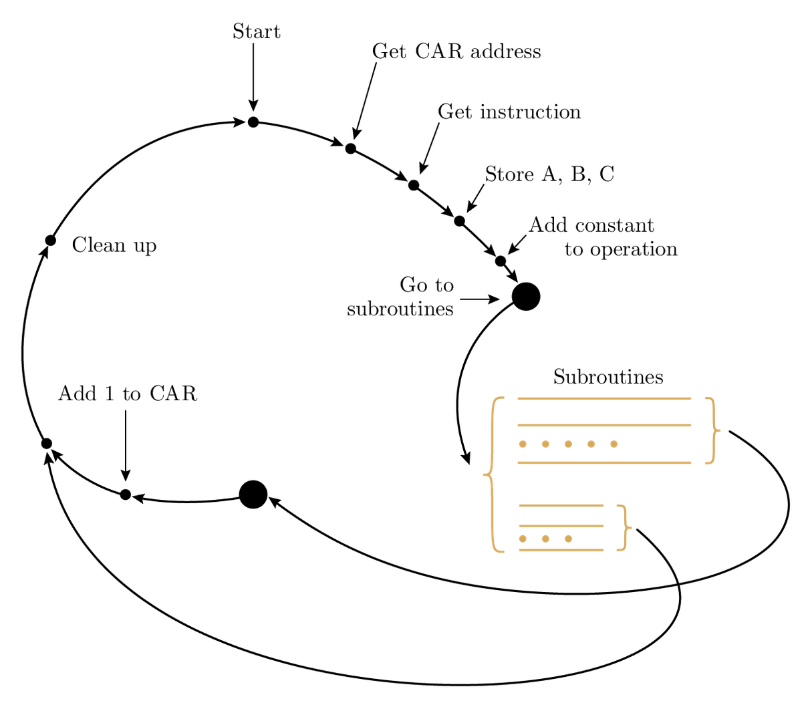
이 과정을 살펴보면, 명령에 붙이고 싶은 의미는 전부 그 명령 번호에 대응해 작성된 서브루틴에서 나와야 함을 알 수 있습니다. 바로 그 서브루틴들이 언어의 의미를 규정합니다. 이 단순한 경우에는 각 명령이 다른 명령과 무관하게 자기만의 의미를 가졌지만 어떤 명령이 스위치나 플래그, 기타 비트를 설정하도록 만들어서 뒤따르는 명령들이 그것들을 참조할 때 여러 방식 중 하나로 해석되게 하는 것은 얼마든지 쉽습니다. 그래서 여러분은 어떤 언어든 원하는 대로 만들 수 있다는 것을 알 수 있습니다. 그 언어를 어떤 명확한 방식으로 유일하게 정의할 수만 있다면 말입니다. 그 언어는 기계의 언어 위에 얹혀서, 그 기계를 여러분이 원하는 아무 기계나로 바꿔 줍니다. 물론 이것은 튜링이 그의 보편 튜링 기계(Universal Turing Machine) 로 증명한 바로 그 내용입니다. 하지만 앞서 말했듯이, 우리가 그런 일을 여러 차례 해본 뒤에야 온전히 이해되었습니다.
제가 만든 소프트웨어 시스템은 기억장치 레지스터 1,000~1,999번에 두었습니다. 그래서 그 합성 언어로 된 어떤 프로그램이든, 주소가 10진 세 자리뿐이므로 주소 000~999까지만 가리킬 수 있었고 소프트웨어 안의 어떤 레지스터를 가리키거나 변경해서 망가뜨릴 수 없었습니다. 소프트웨어 시스템을 사용자로부터 보호하도록, 설계 단계에서부터 넣어 둔 보안 장치였죠.
제가 이렇게 자세히 설명한 것은, 우리는 보통 기계어 위에 언어를 하나 쓰고 그 위에 더 높은 언어를 또 겹겹이 써서, 문제를 기계에 표현하는 데 쓰고 싶은 언어에 도달하기 때문입니다. 각 단계에서 인터프리터를 쓰면 물론 다소 비효율적입니다. 맨 위에서 컴파일러를 쓰면 최상위 언어가 하위 언어 중 하나로 단번에 번역됩니다. 그래도 어떤 단계에서는 여전히 인터프리터를 원할 수 있습니다. 또 이것은 EDSAC의 경우처럼, 흔히 프로그래밍 노력과 기억장치를 크게 압축해 주기도 합니다. 저는 논리적인 언어를 만드는 것과 심리적인 언어를 만드는 것의 차이를 다시 한번 지적하고 싶습니다.
불행히도 프로그래머들은 논리 지향적이고 인간 지향적인 경우가 드물어서 논리적인 언어를 만들고 칭송하는 경향이 있습니다. 아마 그 절정이 APL일 것입니다. 논리적으로 보면 APL은 위대한 언어이고 오늘날까지도 열렬한 지지자들이 있습니다. 하지만 보통 인간이 쓰기에는 도무지 맞지 않습니다. 이 언어에는 ‘한 줄짜리(one liner)’ 게임이 있습니다. 코드 한 줄을 제시하고 그 뜻이 무엇인지 맞히는 것인데, 이 언어의 전문가들조차 몇몇 문제에서 크게 헤매는 것으로 알려져 있습니다.
APL에서는 글자 하나만 바뀌어도 의미가 완전히 달라질 수 있습니다. 그래서 이 언어에는 잉여도(redundancy) 가 거의 없습니다. 하지만 인간은 불완전해서 잉여도가 필요합니다. 우리의 구어(말로 하는 언어)는 대략 60%, 문어(글로 쓰는 언어)는 대략 40%의 잉여도를 갖습니다. 여러분은 아마 말과 글이 똑같다고 생각하겠지만 틀렸습니다. 이 차이를 보려면 대화를 실제로 써 보고 그것이 어떻게 들리는지 소리 내어 읽어 보십시오. 거의 아무도 그럴듯하게 들리는 대화를 써 낼 수 없습니다. 그리고 설령 그럴듯하게 들린다 해도 그것은 여전히 구어가 아닙니다.
제가 줄곧 강조하듯 인간이라는 동물은 믿을 수가 없습니다. 그래서 잉여도가 낮으면 발견되지 않은 오류가 쌓이고 잉여도가 높으면 오류가 드러나기 쉽습니다. 구어는 온갖 잡음이 섞인 음향 채널을 지나면서 말해지는 즉시 잡아내야 합니다. 반면 문어는 인쇄되어 있으니 멈추고 다시 뒤로 읽어 보고 다른 방법을 동원해서라도 저자의 의미를 찾아낼 수 있습니다. 영어에서는 철자가 서로 다르지만 소리가 같은 단어(예컨대 ‘there’와 ’their’)가, 철자가 같은데 소리가 다른 단어(’record’가 명사냐 동사냐, 또는 ’tear’가 눈물이냐 옷의 찢김이냐)보다 더 흔하다는 점에 주목하십시오. 따라서 언어는 인간이라는 동물의 실제 모습에 얼마나 잘 맞는지로 판단해야 합니다. 그리고 ’인간’에는 그들이 학교에서 어떻게 훈련받았는지까지 포함된다는 점을 잊지 마십시오. 그렇지 않으면 여러분이 앞으로 쓰려는 새로운 형태의 언어를 감당하기 위해 대대적인 훈련을 감수해야 할 것입니다. 컴퓨터 전문가에게 쉬운 언어가 비전문가에게도 반드시 쉬운 것은 아닙니다. 그리고 가까운 미래에는 프로그래밍(코딩이라고 하고 싶다면)의 대부분을 비전문가들이 하게 될 가능성이 높습니다.
물론 장기적으로 바라는 것은, 문제를 가진 사람이 직접 코드를 작성하는 것입니다. 요즘 우리는 문제를 아는 사람과 프로그래밍 언어를 아는 사람 사이에 인간을 매개로 두는 일이 너무 흔하지 않습니까? 그날은 안타깝게도 너무 멀어서 당장 큰 도움이 되지는 않지만 2020년이 되면 응용 분야의 전문가가(컴퓨터 전문가가 아니라 응용 분야에 무지한 사람이 아니라서) 실제 프로그램을 직접 준비하는 것이 상당히 보편적인 관행이 되어 있으리라고 생각합니다.
불행히도, 적어도 제 생각에는, Ada(에이다) 언어는 전문가들이 설계했고 그들에게 기대할 수 있는 모든 비인간적인 특성이 그대로 드러나 있습니다. 제가 보기에 그것은 전형적인 컴퓨터과학 해킹(hacking) 작업입니다. 자기가 뭘 하고 있는지 이해하려 애쓰지 말고 그냥 돌아가는 수준으로 만들었다는 것이죠. 이렇게 심리적으로 형편없는 설계 때문에, 제가 유식한 사람들을 상대로 개인적으로 실시한 조사에 따르면, 정부 계약이 프로그래밍을 Ada로 할 것을 명시한다 해도 아마 90% 이상이 FORTRAN으로 작성되어 디버깅되고 시험된 다음, 고통스럽게 손수 형편없는 Ada 프로그램으로 변환될 것입니다. 오류 확률은 말할 것도 없이 높죠!
언어의 기본 원리는 오늘날까지도 제대로 이해되지 못하고 있습니다. 1950년대 초에 저는 당시 그 지역의 자연언어 전문가(여론의 주목을 받던 사람)를 데리고 IBM 701을 구경시키고 점심을 함께했습니다. 디저트를 먹을 즈음 제가 말했습니다. “페이(Pei) 교수님, 언어의 공학적 효율성에 대해 이야기해 주시겠습니까?” 그는 그 질문을 도무지 알아듣지 못하고 이러저러한 언어가 어떻게 복수를 단어 중간에 넣는지, 저 언어는 이런 특징이 있는데 저런 특징이 없는지 등을 계속 설명해 댔습니다. 제가 알고 싶었던 것은, 우리가 언어를 설계할 힘을 가졌을 때, 그리고 언어의 한쪽 끝은 온갖 결점을 가진 인간이고 다른 쪽 끝은 지시한 일 그것 말고는 아무것도 하지 않는 신뢰성 높은 기계일 때, 의사소통이라는 일을 어떻게 효율적으로 해낼 수 있는가였습니다. 그리고 그런 언어에 필요한 잉여도는 어느 정도인지, 불규칙 동사와 규칙 동사의 밀도, 동의어와 반의어의 비율, 우리가 왜 그 정도의 동의어와 반의어를 갖고 있는지, 통신 채널을 효율적으로 압축하면서도 인간에게 쓸모 있는 잉여도는 남겨 두려면 어떻게 해야 하는지 등을 알고 싶었습니다. 말했듯이 그는 언어의 공학적 효율성에 관한 질문을 전혀 듣지 못했고 그 후로도 그에 관한 연구가 많이 나오는 것을 저는 보지 못했습니다. 하지만 우리가 그런 것들을 진정으로 이해하기 전까지는-현재의 자연언어가 오랜 진화를 거쳐 인간을 위해 하는 일에 상당히 잘 맞는다고 보는 것이 합리적일 테니-인간과 기계의 의사소통을 위한 인공 언어를 어떻게 설계해야 할지 알지 못할 것입니다. 따라서 우리가 자연언어를 통한 인간의 의사소통을 이해하기 전까지는 많은 골칫거리가 생길 것이라고 예상합니다. 물론 인간-기계 의사소통의 문제는 인간-인간 의사소통과 크게 다릅니다. 그러나 어떤 점에서 얼마나 다른지는 알려져 있지 않을뿐더러 탐구조차 되고 있지 않은 것 같습니다.
인간을 있는 그대로(혹은 쉽게 훈련시킬 수 있는 상태로) 참여시키는 의사소통 언어를 더 잘 이해하기 전에는, 우리의 소프트웨어 문제 중 상당수가 사라지기는 어렵습니다.
얼마 전 일본은 유명한 ‘제5세대(fifth generation)’ 컴퓨터를 인공지능(Artificial Intelligence, 이하 AI)과 함께 이용해, 기계와 인간 문제 해결자 사이의 인터페이스를 개선하려고 했습니다. 기계와 언어 양쪽 모두에 대해 커다란 주장들이 오갔습니다. 지금까지의 결과를 보면, 기계는 광고한 대로 나왔지만 프로그래밍을 돕는 AI 활용에 관해서는 다시 설계 도면으로 돌아갔습니다. 이는 제가 그때(로스앨러모스에서) 예측한 대로 되었습니다. 저는 일본인들이 위에서 말한 공학적 의미의 언어 기초를 이해하려는 것을 보지 못했기 때문입니다. ’소프트웨어 문제’라고 불리는 그것을 줄이기 위해 우리가 할 수 있는 일은 많습니다. 하지만 이 값비싼 문제를 정말 그럴듯하게 해결하려면, 인간과 인간, 그리고 인간과 기계 사이에서 이해를 전달하는 데 쓰이는 언어에 대한 기본적인 이해가 필요합니다. 그 문제는 좀처럼 사라지지 않을 것입니다.
여러분은 ‘소프트웨어 생산의 공학화(engineering the production of software)’라는 말을 끊임없이 읽습니다. 생산의 효율성과 제품의 신뢰성을 위한 것이겠죠. 하지만 소설가가 ’소설 생산을 공학화’하리라고는 기대하지 않습니다. 그렇다면 질문이 생깁니다. “프로그래밍은 고전적 공학보다 소설 쓰기에 더 가깝지 않은가?” 저는 그렇다고 봅니다! 인간을 우주로 보내는 문제라면, 러시아와 미국은 모든 것을 감안하고 약간의 첩보 활동도 허용한다면 거의 같은 방식으로 해냈습니다. 둘 다 물리학이라는 확고한 법칙에 제약을 받았으니까요. 하지만 ’인간의 위대함과 비참함’이라는 주제를 두 소설가에게 주면, 아마 전혀 다른 소설 두 편을 얻게 될 것입니다(그 차이를 어떻게 측정하는지는 말하지 않아도요). 똑같은 복잡한 문제를 현대 프로그래머 두 명에게 주면, 저는 상당히 다른 프로그램 두 개를 얻게 된다고 단언합니다. 그래서 저는 현재의 프로그래밍 관행이 공학보다 소설 쓰기에 더 가깝다고 믿습니다. 소설가를 속박하는 것은 상상력뿐입니다. 프로그래머가 소프트웨어를 쓸 때도 비슷하죠. 두 활동 모두 창의성이 크게 작용합니다. 프로그래밍을 공학처럼 만들고 싶겠지만 거기까지 가려면 오랜 시간이 걸립니다. 그리고 어쩌면 장기적으로 보면 여러분은 정말 그걸 원하지 않을지도 모릅니다! 그냥 말이 그럴듯하게 들릴 뿐일 수도 있습니다. 앞으로 몇 년 동안 여러분은 이 문제를 여러 번 생각해야 할 것입니다. 지금부터 시작해서 여러분이 듣는 선전과, 이 분야에서 벌어지는 온갖 희망적인 사고를 잘 걸러 내는 것도 좋습니다! 컴퓨터의 유틸리티 프로그램 소프트웨어는 충분히 자주 만들어져 왔고 그 범위도 대단히 제한적이라, ’공학화’될 것이라고 합리적으로 기대할 수 있습니다. 그러나 일반적인 소프트웨어 작성이 ’공학적 통제’ 아래 들어가기는 아주아주 오랜 시간이 걸릴 것입니다.
개별 프로그래머의 생산성뿐 아니라 프로그래머 집단의 생산성을 높이기 위한 제안도 많습니다. 하향식과 상향식은 이미 언급했죠. 그 외에도 헤드 프로그래머(head programmer), 리드 프로그래머(lead programmer), 프로그램이 수학적 의미에서 옳다는 것을 증명하기, 폭포수 모델(waterfall model) 등이 있습니다. 각각 나름의 장점이 있지만 저는 거의 언급되지 않는 단 하나에만 신뢰를 둡니다. -프로그램을 쓰기 전에 생각하라,라고 부를 수 있는 그것입니다. 시작하기 전에 전체를 신중하게 생각하십시오. 그 프로그램이 옳은지 판정할 인수 검사(acceptance test)가 무엇이 될지, 나중에 현장 유지보수는 어떻게 할지까지 포함해서 말입니다. 처음에 제대로 만드는 것이 나중에 주워 고치는 것보다 훨씬 낫습니다!
프로그래밍의 많은 문제 중 하나는, 대개 명확히 정의된 작업이 없다는 점입니다. 오히려 프로그래밍 과정 자체가 그 문제가 무엇인지를 점차 발견해 나갑니다! 프로그래밍을 시작하기 전에 잘 정의된 문제가 주어지기를 바라는 그 바람은 현실과 어긋나는 경우가 많습니다. 그래서 ’프로그래밍 문제를 풀자’는 요즘의 많은 제안들도, 엄격하게 적용한다면 땅에 떨어지고 말 것입니다.
고급 언어의 사용은 큰 진전을 가져왔습니다. 다음 표는 30년간의 개선 정도에 대한 한 추정치를 보여 줍니다.
| 개선 유형 | 누적 개선 배수 | ||
|---|---|---|---|
| 어셈블러(assembler):기계어 코드 | = | 2:1 | ×2 |
| C 언어:어셈블러 | = | 3:1 | ×6 |
| 시분할:배치 | = | 1.5:1 | ×9 |
| UNIX:모니터 | = | 4:3 | ×12 |
| 시스템 QA:디버깅 | = | 2:1 | ×24 |
| 프로토타이핑:하향식 | = | 1.3:1 | ×30 |
| C++:C | = | 2:1 | ×60 |
| 재사용:재작성 | = | 1.5:1 | ×90 |
30년 동안 프로그래머의 총생산성은 대략 90배가 되었습니다(개선율은 고작 16%입니다!). 이는 한 사람의 추정치이지만 적어도 그럴듯합니다. 하지만 기계의 속도 향상과 비교하면 그것은 아무것도 아닙니다! 사람들은 인간도 비슷하게 빨라지기를 바라지만 근본적인 병목은 인간이라는 동물이 실제로 그러한 그대로라는 사실입니다. 우리가 바라는 모습이 아니라요.
많은 연구가 프로그래머들 사이의 생산성 차이가 최저와 최고 사이에서 10배를 훨씬 웃돈다는 것을 보여 줍니다. 저는 오래전에 여기서 결론을 내렸습니다. 좋은 프로그래머에게는 넉넉히 대가를 지불하고 못하는 프로그래머는 정기적으로 해고하는 것이 최선의 방침이라는 것-법에 걸리지만 않는다면 말입니다! 물론 그 방법 중 하나는 정규직으로 고용하는 대신 계약직으로 채용하는 것입니다. 하지만 그것도 점점 법에 저촉되어 가고 있습니다. 법은 가장 못하는 사람조차 어느 정도 고용을 보장받도록 하려는 것처럼 보입니다. 실무적으로 보자면, 아마 못하는 프로그래머에게 집에 있으라고 돈을 지불해서 더 유능한 사람을 방해하지 않게 하는 편이 오히려 나을 수도 있습니다(농담이 아닙니다)!
요즘 디지털 컴퓨터는 신경망(neural nets) 을 시뮬레이션하는 데 널리 쓰이고 있으며 비슷한 장치들이 컴퓨터 분야로 슬금슬금 들어오고 있습니다. 신경망에 익숙하지 않으시다면 미리 말씀드리는데, 입력과 그에 대한 합격할 만한 출력을 여러 개 주면-결과를 어떻게 만들어 내는지 전혀 말해 주지 않아도-신경망은 그 결과를 내는 법을 배웁니다. 어떤 부류(class)들을 쓰고 찾아야 하는지 역시 알려 주지 않아도, 물체를 그럴듯한 부류들로 분류할 수 있습니다. 신경망은, 입력에서 계산된 결과가 받아들일 수 없는 것임을 알려 주는 정보를 이용하는 단순한 피드백으로 배우는 것입니다. 어떤 의미에서 신경망은 ‘프로그래밍 문제’의 해결책을 대표합니다. 일단 구축되면 실제로는 전혀 프로그래밍되지 않지만 그래도 다양한 문제들을 만족스럽게 풀 수 있습니다. 신경망은 다가오는 분야라서 이 책에서는 생략할 수밖에 없지만 컴퓨터의 미래에 큰 역할을 할 가능성이 큽니다. 어떤 의미에서 그것은, 몇 가지 매개변수를 골라 잡고 많은 데이터를 공급했을 때 광범위한 문제 부류를 푸는 ’고정 배선(hard-wired)’ 컴퓨터(단지 프로그램일 수도 있지만)입니다.
신경망의 또 다른 관점은, 그것이 상당히 일반적인 안정 피드백 시스템의 한 부류를 대표한다는 것입니다. 적절하다고 생각되는 피드백의 종류와 양을 정하면, 신경망의 피드백 시스템은 원하는 해로 수렴합니다. 이것 역시 많은 세부 프로그래밍을 피해 갑니다. 적어도 컴퓨터에서 시뮬레이션되는 신경망에서는, 매우 일반적인 프로그램 하나를 한 번 써 두면 이미 프로그래밍된 광범위한 문제 부류가 준비되고 프로그래머는 호출 시퀀스(calling sequence)를 주는 것 외에는 거의 할 일이 없기 때문입니다.
이와 비슷하게 해낼 수 있는 다른 매우 일반적인 프로그램 덩어리가 무엇인지는 지금으로서는 알 수 없습니다. ’프로그래밍 문제’의 또 하나의 가능한 해결책으로 여러분이 스스로 생각해 볼 만한 주제입니다.
하드웨어 장에서 저는 몇 가지 한계-분자의 크기, 빛의 속도, 열의 제거-를 신중하게 논의했습니다. 소프트웨어의 덜 확고한 한계도 이에 대응해 요약해 볼 필요가 있겠습니다.
앞서 저는 소프트웨어를 쓰는 일을 문학 창작에 비유했습니다. 둘 다 기본적으로 명확한 사고에 달려 있는 것 같습니다. 좋은 프로그래밍을 가르칠 수 있을까요? 이에 대응하는 ’창작(creative writing) 수업’을 보면, 그런 수업을 들은 학생 대부분이 위대한 작가가 되지 못합니다. 그리고 과거의 위대한 작가 대부분은 창작 수업을 듣지 않았습니다! 따라서 위대한 프로그래머를 쉽게 훈련시킬 수 있을지는 의문입니다.
경험이 도움이 될까요? 수년간 보고서와 지침을 써 온 관료들은 실제로 더 나아질까요? 확실한 데이터는 없지만 저는 시간이 지날수록 오히려 더 나빠진다고 의심합니다! 해묵은 ’관료체(governmentese)’가 그들의 글쓰기 스타일에 서서히 스며들어 글을 더 나쁘게 만들 테니까요. 프로그래머에게도 마찬가지라고 저는 의심합니다! 수년의 경험도, 다뤄 본 프로그래밍 언어의 수도, 그 프로그래머가 그러한 경험을 통해 더 나아지고 있다고 믿을 아무 이유가 되지 못합니다. 프로그래밍에 관한 책들을 들여다보면 저자들 대부분이 훌륭한 프로그래머가 아니라는 것이 드러납니다!
제가 그려 보는 결과는 그다지 좋아 보이지 않습니다. 하지만 그에 맞설 수 있는 것이라곤 희망적인 생각뿐입니다-제 편에는 수년간 프로그래밍을 해 왔다는 증거가 있으니까요!
5 컴퓨터 응용의 역사
여러분도 눈치채셨겠지만 저는 기술적 내용을 방편으로 삼아 일화들을 엮고 있습니다. 그래서 이번에는, 방금 이 이야기와 앞선 두 장이 어떻게 해서 생겨나게 되었는지에 관한 일화부터 시작하겠습니다. 1950년대에 들어서 저는 큰 청중을 상대로 공개 강연을 할 때 두려움을 느낀다는 사실을 발견했습니다. 수년간 대학에서 강의를 해 왔음에도 불구하고 말입니다. 이 사실을 아주 진지하게 곱씹어 본 끝에, 저는 그런 장애를 안고서는 위대한 과학자가 될 수 없다는 결론에 도달했습니다. 과학자의 의무는 새로운 것을 발견하는 것뿐만 아니라, 그것을 적어도 세 가지 형태로 성공적으로 전달하는 일이기 때문입니다:
- 논문과 책 쓰기
- 준비된 공개 강연
- 즉흥 강연
셋 중 어느 하나라도 갖추지 못한다면 그것은 제 경력에 심각한 걸림돌이 되었을 것입니다. 두려움 없이 공개 강연을 하는 법을 어떻게 배울까가 바로 제 문제였습니다. 답은 당연히 연습이었습니다. 다른 무엇이 도움이 될 수 있을지 몰라도, 연습은 반드시 필요한 일이었습니다.
이 사실을 깨달은 직후, 마침 컴퓨터 기계 사용법의 어떤 측면을 배우는 IBM 고객들로 이루어진 모임에서 저녁 강연을 해 달라는 요청을 받게 되었습니다. 저도 한 사용자로서 그런 과정을 직접 이수해 본 사람으로서, 보통 그런 교육은 근무 시간 중에 일주일 동안 이루어진다는 것을 알고 있었습니다. 저녁에 즐길 거리를 제공하기 위해 IBM은 대개 첫날 밤에는 사교 모임을, 어느 다른 밤에는 극장 파티를, 또 어느 다른 밤에는 컴퓨터에 관한 일반 강연을 주선하곤 했습니다-제게 청탁된 것이 마지막 그 강연이라는 것은 명백했습니다.
저는 곧바로 수락했습니다. 방금 스스로에게 반드시 해야 한다고 다짐한 강연 연습의 기회가 거기 있었으니까요. 곧 나는 워낙 훌륭해서 다른 강연을 또 요청받고 그래서 더 많은 연습을 하게 될 만한 강연을 해야겠다고 마음먹었습니다. 처음에는 제 마음 깊이 품은 주제로 강연을 하려고 했습니다. 그러나 다시 초청받고 싶다면 청중이 듣고 싶어 하는 이야기를 하는 것이 최선이라는 것, 그리고 그 주제는 아주 아주 다른 것일 때가 많다는 것을 곧 깨달았습니다. 그들이 무엇을 듣고 싶어 할까요? 특히 그들이 어떤 과정을 수강 중인지 정확히 몰라 역량도 짐작할 수 없는 상황에서라면요. 제가 고른 것은 모두의 관심을 끄는 주제인 서기 2000년까지의 컴퓨팅 역사(The History of Computing to the Year 2000)였습니다-때는 대략 1960년 무렵이었지요. 나조차도 그 주제에 관심이 있었고 무슨 말을 하게 될지 궁금했습니다! 게다가, 그리고 이 점이 중요합니다, 그 강연을 준비함으로써 저는 미래를 위한 준비를 하고 있는 셈이었습니다. “그들이 무엇을 듣고 싶어 할까?”라고 말할 때, 저는 정치인처럼 말하는 것이 아니라, 자신이 보는 진실을 말해야 하는 과학자로서 말하는 것입니다. 과학자는 단지 즐겁게 하기 위한 강연을 해서는 안 됩니다. 강연의 목적은 대개 화자로부터 청중에게로 과학적 정보를 전달하는 것이니까요. 그렇다고 강연이 지루해야 한다는 뜻은 아닙니다. 과학적 소통과 오락 사이에는 미묘하지만 분명한 선이 있고 과학자는 언제나 그 선의 올바른 쪽에 머물러야 합니다.
제 첫 강연은 하드웨어에 집중했고 3장에서 언급했듯이 관련된 자연의 법칙 세 가지-분자의 크기, 빛의 속도, 열 발산의 문제-를 포함해 하드웨어의 한계를 다루었습니다. 양자역학적 한계와 불확정성 원리의 영향까지 겹쳐 보여 주는 오버레이가 있는 멋진 컬러 필름(Vugraph)（당시 강연장에서 오버헤드 프로젝터로 화면에 비추던 투명 필름）을 준비했습니다. 강연은 성공적이었습니다. 강연을 청탁했던 IBM 담당자가 나중에 청중이 얼마나 좋아했는지 말해 주었으니까요. 저도 덤덤히 즐거웠다고, 사전에 충분히 알려 주기만 하면 거의 어떤 저녁이라도 뉴욕에 와서 그 강연을 다시 해 드리겠다고 말했고, 그쪽도 수락했습니다. 그 강연은 수년간 이어진, 한 해에 대략 두세 번꼴인 일련의 강연의 처음이 되었습니다. 저는 많은 연습을 쌓았고 너무 겁먹지 않는 법을 배웠습니다. 여러분은 강연을 할 때 언제나 어느 정도는 긴장되는 것이 좋습니다. 최고의 배우들과 여배우들조차 보통 어느 정도의 무대 공포를 겪으니까요. 여러분의 긴장은 청중에게 전해지는 경향이 있습니다. 만약 여러분이 완벽하게 편안해 보인다면, 청중도 편안해져서 잠들어 버릴지도 모릅니다!
그 강연은 또한 저의 최신 정보를 유지시켜 주었고, 컴퓨팅의 흐름을 예의주시하게 만들었으며, 전반적으로 지적인 면에서 보람을 안겨 주었고, 저를 더 세련된 강연자로 만들어 주었습니다. 그것은 순전한 행운이 아니었습니다. 저는 표면 아래에서 무슨 일이 벌어지고 있는지 이해하려고 애씀으로써 그 운을 대부분 스스로 만들었습니다. 그때부터 어디서든 강연을 들으러 갈 때면, 저는 말해지는 내용뿐만 아니라 그것이 말해지는 스타일, 그리고 그 강연이 효과적인지 아닌지에도 주목하기 시작했습니다. 단지 재미있기만 한 강연들은 대개 무시했지만 농담을 하는 스타일은 면밀히 연구했습니다. 만찬 연설에는 대체로 좋은 농담 세 개가 필요합니다. 하나는 시작에, 하나는 중간에, 그리고 마지막 하나는 끝맺음에-그래야 청중이 적어도 농담 하나는 기억할 테니까요. 물론 모든 농담은 잘 던져져야 합니다. 저는 나만의 농담 스타일을 찾아야 했고 비서들에게 농담을 해 주며 그것을 연습했습니다.
강연을 몇 번 하고 나니, 당연한 일이지만 2000년을 향해 가면서 컴퓨팅의 진화를 제한하는 것은 하드웨어뿐 아니라 소프트웨어이기도 하다는 것을 깨달았습니다-그게 바로 방금 여러분께 들려 드린 4장입니다. 마침내, 아주 오랜 시간이 흐른 뒤, 컴퓨터의 진화를 지배하게 될 것은 아마 경제, 즉 응용 분야일 것이라는 깨닫기 시작했습니다. 앞으로 일어날 일의 많지만 결코 전부는 아닌 부분이 경제적으로 건전해야 했습니다. 그래서 이번 장이 나온 것입니다.
컴퓨팅은 단순한 산술로 시작해서, 수많은 천문학 응용을 거쳐 대량 수치계산(넘버 크런칭)에 이르렀습니다. 하지만 한 가지 짚어 둘 사실이 있습니다. 스페인의 신학자이자 철학자인 라이먼드 룰(Raymond Lull, 1235-1315)-때로 Lully라고도 씁니다-은 논리 기계를 만들었습니다! 스위프트가 『걸리버 여행기(Gulliver’s Travels)』에서 걸리버가 라퓨타 섬에 있을 때 풍자한 것이 바로 그 기계입니다. 그리고 제 느낌에 라퓨타는 룰이 활약했던 마요르카에 해당하는 듯합니다.
현대 컴퓨팅의 초기, 그러니까 대략 1940년대와 1950년대에는, 확실하고 단단한 숫자를 원하는 사람들만이 (그 당시 기준의) 컴퓨팅 비용을 감당할 충분한 돈을 가진 유일한 부류였기 때문에 ’대량 수치계산’이 주도했습니다. 컴퓨팅 비용이 내려가자 컴퓨터로 경제적으로 해낼 수 있는 일의 폭이 넓어져서, 대량 수치계산 말고도 많은 일들이 그 범위에 들어오게 되었습니다. 우리는 처음부터 그런 다른 활동들이 가능하다는 것을 알고 있었습니다. 다만 그 당시에는 경제성이 없었을 뿐입니다.
제 컴퓨팅 경험의 또 다른 측면도 전형적이었습니다. 로스앨러모스에서 우리는 원시적인 장비로 편미분방정식(원자폭탄의 거동)의 해를 계산했습니다. 벨 전화연구소(Bell Telephone Laboratories)에 있는 동안 처음에는 릴레이 컴퓨터（전자기 스위치인 릴레이의 개폐로 계산을 수행한 초기 컴퓨터）로 편미분방정식을 풀었습니다. 실은 편미분-적분 방정식도 풀었지요! 그 후 훨씬 더 좋은 기계가 주어지자, 나는 미사일 궤적이라는 형태의 상미분방정식으로 나아갔습니다. 그리고 더 나중에는 단순한 적분을 수행하는 방법에 관한 논문 몇 편을 발표했습니다. 그다음 함수값 계산에 관한 논문으로 나아갔고 마침내는 숫자가 어떻게 결합하는지에 관한 논문 한 편을 내게 되었습니다! 그렇습니다, 우리는 가장 원시적인 장비로 가장 어려운 문제 몇 개를 풀었습니다-기계가 아니면 도저히 해낼 수 없는 일들도 기계가 해낼 수 있다는 것을 증명하기 위해서 그런 일이 필요했습니다. 그 다음에야, 그리고 그때서야, 손으로는 힘겹게밖에 할 수 없는 문제들의 경제적인 해로 넘어갈 수 있었습니다! 그리고 그러기 위해서는 손으로 계산하는 것에 맞춘 이론이 아니라, 기계에 맞는 수치해석과 실용 컴퓨팅의 기본 이론들을 개발해야 했습니다.
이것은 많은 상황에서 전형적으로 나타나는 모습입니다. 새로운 것-장치든, 방법이든, 무엇이든-이 일상적이고 장기적으로는 더 유용한 일을 처리하는 시스템 안에 자리 잡으려면, 먼저 그것이 영웅적인 과업도 감당할 수 있다는 것을 의심의 여지없이 증명해야 합니다. 모든 혁신은 언제나 그런 장벽에 부딪힙니다. 그러니 여러분의 새로운 아이디어가 완강하게, 어쩌면 어리석게 거부당한다고 낙심하지 마십시오. 실제 과업의 규모를 깨달으면, 계속 밀어붙일 가치가 있는지, 아니면 이루어 낼 수 있는 다른 일을 하러 가서 관성과 어리석음이라는 힘을 상대로 노력을 헛되이 소진하지는 않을 것인지를 결정할 수 있습니다.
컴퓨터 초창기에 나는 곧 큰 기계에 많은 작은 문제를 싣는 문제로 관심을 돌렸습니다. 나는 아주 실질적인 의미에서, 가변 제품의 대량 생산(mass production of a variable product)의 한가운데 있다는 것을 깨달았습니다-구체적으로 무엇인지 모르는 채로지만 다음 한 해에 일어날 대부분의 문제에 대처하도록 일을 조직해야 한다는 것이었습니다. 바로 그때 나는 컴퓨터가 그 제품이 무엇이든-숫자든, 단어든, 문서 작성(워드 프로세싱)이든, 가구를 만들든, 직조든, 무엇이든-가변 제품의 대량 생산이라는 문을 훨씬 더 일반적으로 열어 주었다는 것을 깨달았습니다. 컴퓨터는 지나친 표준화 없이 다양성을 다룰 수 있게 해 주었고 그래서 우리는 원하는 미래를 향해 더 빨리 진화할 수 있게 되었습니다! 그 현상이 지금 컴퓨터 자체에 적용되고 있는 것을 여러분은 목격하고 있습니다! 컴퓨터가 인간의 지도를 받아 자기 자신의 칩을 설계하고 컴퓨터는 표준 부품으로부터 어느 정도 자동으로 조립됩니다. 여러분이 자신의 컴퓨터에 무엇을 넣고 싶은지 말하면, 그 특정한 컴퓨터가 만들어집니다. 어떤 컴퓨터 제조사들은 거의 인간의 개입이 없는 거의 완전한 기계 조립을 지금 사용하고 있습니다.
바로 제가 가변 제품의 대량 생산 속에 있다는, 그 모든 장점과 단점을 지닌 태도 때문에 지난 장에서 말씀드린 대로 IBM 650을 대하게 된 것입니다. 6개월이라는 기간에 걸쳐 대략 1인년(man-year)의 노력을 들였더니, 한 해가 끝났을 무렵에는 문제를 하나하나 따로 다루었을 때보다 더 많은 작업을 끝내 놓고 있음을 발견했습니다! 그 소프트웨어 도구를 만든 보상은 1년 안에 돌아왔습니다! 컴퓨터 소프트웨어처럼 그토록 빠르게 변하는 분야에서는, 보상이 가까운 미래에 오지 않는다면 결코 오지 않을 것이라고 의심하는 것이 옳습니다.
나는 과학과 공학 밖에서의 경험은 제쳐 두고 있습니다-예를 들어, 나는 뉴욕에서 AT&T를 위한 매우 큰 사업 문제 하나를 UNIVAC-I으로 처리했습니다. 그리고 언젠가 그때 배운 교훈에 대해 말씀드릴 기회가 있을 것입니다.
컴퓨터 응용에 대해 좀 더 정량적인 방식으로 논해 봅시다. 당연하게도, 나는 벨 연구소의 연구부에 있었으므로 처음에는 문제들이 주로 과학적인 것이었습니다. 하지만 벨 연구소에 있었던 탓에 곧 공학 문제도 접하게 되었습니다. 먼저, 그림 5.1을 보십시오. 순수한 과학적 문제들의 증가만 따라가 보면 지수적으로 상승하는 곡선이 나옵니다(세로 축이 로그 스케일임을 주목하십시오). 하지만 곧 여러분은 S자 곡선의 윗부분, 즉 보다 완만한 증가율로 펴지기 시작하는 부분을 보게 됩니다. 그 당시 내가 그들을 위해 풀어 주던 문제의 종류와 벨 전화연구소에 고용된 전체 과학자 수를 생각해 보면, 그들이 제안하고 소비할 수 있는 것에는 한계가 있을 수밖에 없었습니다. 아시다시피, 그들은 훨씬 더 큰 문제들을 더디게 제안하기 시작했습니다. 그래서 과학적 컴퓨팅은 여전히 컴퓨터 사용의 큰 축이지만 대부분의 기관에서 주류는 아니게 되었습니다.
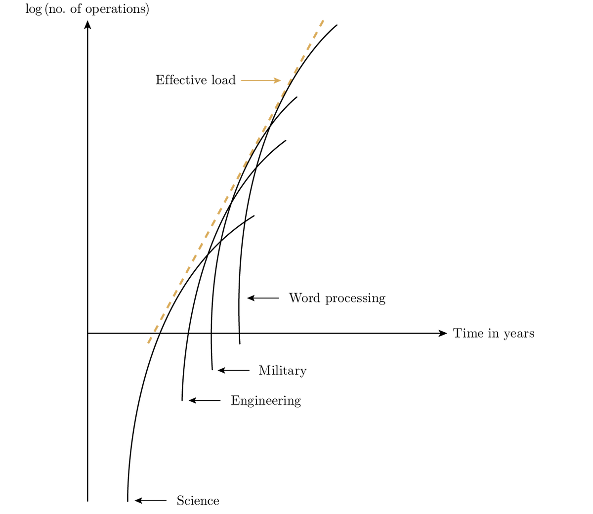
공학 컴퓨팅이 곧 뒤따랐습니다. 그것도 비슷한 모양으로 상승했지만 더 컸고 앞선 과학 곡선 위에 더해졌습니다. 그다음, 적어도 벨 연구소에서는, 이보다 더 큰 군사 작업 부담을 발견했습니다. 마지막으로 문서 작성이라는 형태의 기호 조작, 고급 언어의 컴파일 시간, 그 밖의 것들로 옮겨가면서 비슷한 증가가 있었습니다. 이렇게 각 종류의 작업 부하가 차례차례 포화에 천천히 다가가는 것처럼 보이는 동안에도, 이 모든 것을 합친 순효과는 상당히 일정한 증가율을 유지하는 것이었습니다.
이 직선으로 뻗어 가는 로그 증가 곡선을 지탱하고 응용의 S자 곡선이 필연적으로 펴져 버리는 것을 막아 줄 다음 큰 영역은 무엇일까요? 제 생각에 다음 큰 영역은 패턴 인식입니다. 가장 일반적인 형태의 패턴 인식 문제를 우리가 감당할 수 있을지는 의문입니다. 그것은 너무 많은 것을 함의하기 때문이지요. 하지만 음성 인식, 레이더 패턴 인식, 영상 분석과 재구성, 공장과 사무실의 작업 부하 스케줄링, 통계학자를 위한 데이터 분석, 가상 이미지 생성 같은 영역에서는 아주 많은 컴퓨터 성능을 소비할 수 있습니다. 가상현실 컴퓨팅은 컴퓨팅 성능의 큰 소비자가 될 것입니다. 그리고 실질적인 필요와 오락 영역 모두에서 그 경제적 가치가 명백하므로, 그렇게 될 것이라고 확신합니다. 그 너머에는, 제 생각으로, 인공지능이 있습니다. 인공지능은 마침내 그들이 제공할 수 있는 것을 전달하는 일이 컴퓨팅의 대가를 정당화하는 지점에 도달할 것이고 그래서 또 하나의 문제 해결 원천이 될 것입니다.
우리는 일찍부터 대화형 컴퓨팅을 시작했습니다. 저는 잭 케인(Jack Kane)이라는 과학자를 통해 처음 접했습니다. 그는 그때로서는 엉뚱한 생각으로, 우리가 많은 시간을 쓰던 브룩헤이븐의 사이클로트론（입자를 원형 궤도로 가속하는 입자 가속기의 일종）에 작은 Scientific Data Systems (SDS) 910 컴퓨터를 붙이자고 했습니다. 우리 부사장이 저에게 잭이 해 낼 수 있겠냐고 물었고 저는 그 질문(그리고 잭이라는 사람)을 면밀히 살펴본 뒤, 해 낼 수 있다고 말했습니다. 그러자 부사장이 “그 기계를 만드는 제조 회사가 사업을 계속할까요?”라고 물었습니다. 지원받지 못할 기계는 원하지 않았기 때문입니다. 그 질문 때문에 저는 다른 방향으로 훨씬 더 많은 수고를 들여야 했고 마침내 로스앤젤레스에 있는 SDS 사장의 사무실에서 직접 대면해 이야기하기로 약속을 잡았습니다. 나는 확신에 차서 돌아왔습니다-자세한 이야기는 다음에 하기로 하지요. 우리는 그 일을 해냈고 그때 그렇게 믿었듯이 지금도 그렇게 믿습니다. 값싸고 작은 SDS 910 컴퓨터 하나가 거대하고 비싼 사이클로트론의 실질 생산성을 적어도 두 배로 끌어올렸습니다! 그것은 확실히, 사이클로트론이 돌아가는 동안 수집된 데이터를 모으고, 가공하고, 작은 오실로스코프（전기 신호의 파형을 화면에 그려 보여 주는 측정 장치）의 화면에 띄워 보여 준 최초의 컴퓨터 중 하나였습니다. (그 오실로스코프는 잭이 며칠 만에 조립해서 움직이게 만들었습니다.) 덕분에 우리는 제대로 맞지 않는 많은 실험을 중간에 버릴 수 있었습니다. 이를테면 시료가 빔의 정중앙에 정확히 있지 않다든가, 스펙트럼 가장자리 근처에 어떤 효과가 있어서 실험을 다시 설계하는 편이 좋겠다든가, 무언가 이상한 일이 벌어지고 있다든가, 이쪽저쪽을 더 자세히 살펴볼 필요가 있다든가-이 모두가 끝까지 돌린 뒤에 문제를 발견할 것이 아니라, 멈추고 수정할 이유입니다.
이 한 경험이 우리 벨 연구소로 하여금 연구실에 작은 컴퓨터를 들여놓기 시작하게 했습니다. 처음에는 단지 데이터를 모으고, 가공하고, 표시하기 위해서였지만 곧 실험을 구동하게 되었습니다. 표준 디지털-아날로그 변환기를 거쳐 실험에 가하는 전기 구동 전압의 모양을 기계에 프로그램하게 하는 것은, 그 일을 위한 특수 회로를 만드는 것보다 흔히 더 쉽습니다. 이것은 가능한 실험의 범위를 엄청나게 넓혀 주었고 대화형 실험(interactive experiments)의 실용성을 도입했습니다. 다시 한번, 우리는 한 구실로 기계를 들여놓았지만 장기적으로 보면 그것의 존재가 문제 자체와 컴퓨터가 실제로 쓰이는 일을 둘 다 바꿔 놓았습니다. 컴퓨터를 성공적으로 사용하면 대개 동등한 새 일을 하게 되지, 똑같은 낡은 일은 아닙니다. 다시, 컴퓨터의 존재가 장기적으로 우리가 했던 실험의 성격을 얼마나 많이 바꾸었는지 보게 됩니다.
시애틀의 보잉(Boeing)이 나중에 비슷한 아이디어를 가졌습니다. 즉, 제안 중인 항공기 설계의 현재 상태를 테이프에 담아 두고 모두가 그 테이프를 쓰는 것입니다. 그러면 거대한 회사의 모든 부서가 설계 중인 어느 항공기에서든 서로의 작업에 맞춰질 것이라고 했습니다. 그 계획은 사장들이 생각한 대로는 되지 않았습니다. 그리고 그들이 아마 실제로 그렇게 되어 있다고 믿고 있는 그대로도 되지 않았습니다! 내가 아는 사실입니다. 나는 보잉 최고 경영진을 위한 일종의 2주간 상위급 정탐 작업을, 상위 경영진을 대신해서가 아니라 하위 조직을 위해 컴퓨터 센터를 일상 점검하는 것처럼 꾸며 수행하고 있었거든요!
그것이 계획대로 되지 않은 이유는 단순합니다. 설계의 현재 상태가 테이프(지금은 디스크)에 있다고 합시다. 그리고 여러분이 예컨대 날개 면적, 형상, 단면 프로파일을 연구하는 동안 그 데이터를 쓴다고 합시다. 매개 변수를 변경해 개선을 발견했을 때, 그것은 여러분이 만든 변경 때문이 아니라, 다른 누군가가 공통 설계에 넣은 변경 때문일 수 있습니다-여러분의 변경은 오히려 일을 더 나쁘게 만들었을지도 모릅니다! 그래서 실제로 일어난 것은, 각 그룹이 최적화 연구를 할 때 현재 테이프의 사본을 만들어, 다른 어느 영역의 갱신도 받지 않고 그것을 사용한 것이었습니다. 최종적으로 새 설계를 결정했을 때에만 변경분을 넣었습니다-물론 그때는 자기들의 새 설계가 다른 부서의 새 설계와 맞물리는지 확인해야 했지요. 계속 변하는 데이터베이스로는 최적화 연구를 할 수 없습니다.
이쯤에서 데이터베이스 이야기가 나옵니다. 컴퓨터는 이 영역의 구원자일 것이라고 여겨졌습니다. 그리고 지금도 가끔 그럴 것처럼 언급됩니다. 확실히, 예약 시스템을 갖춘 항공사들은 컴퓨터로 무엇을 할 수 있는지 보여 주는 좋은 예입니다-수많은 인간 실수와 어마어마한 혼란을 생각해 보면, 그것을 손으로 한다면 얼마나 지저분할지 상상해 보십시오. 항공사들은 지금 기상 정보를 포함해 많은 데이터베이스를 유지합니다. 기상과 현재 공항 지연 상황은 이륙 직전 각 항공편의 비행 프로파일을 설계하는 데 쓰이고 그 후의 새로운 정보에 따라 비행 중에 바꿔질 수도 있습니다.
회사 경영자들은 늘, 회사의 현재 상태를 속속들이 알기만 하면 더 잘 관리할 수 있을 것이라고 생각하는 것 같습니다. 그래서 회사의 모든 활동을, 항상 그 순간과 함께하는 데이터베이스가 없으면 안 된다고 여깁니다. 이것은 위에서 지적한 대로 어려움이 있습니다. 하지만 또 하나의 문제가 있습니다. 여러분과 제가 어떤 회사의 부사장 둘이라고 해 봅시다. 월요일 아침 회의를 위해 우리는 정확히 같은 수치를 원합니다. 여러분은 금요일 오후에 실행된 프로그램으로 여러분의 수치를 얻습니다. 한편, 더 지혜로운 저는, 주말 동안 외곽 지점들에서 많은 정보가 들어온다는 것을 알고 있으므로 일요일 밤까지 기다렸다가 제 수치를 준비합니다. 우리 둘 다 같은 프로그램을 써서 준비했더라도, 두 보고서 사이에 상당한 차이가 있을 수 있음은 명백합니다! 그것은 실제로 그저 견딜 수 없는 일입니다. 게다가 가장 중요한 보고서와 결정은, 매 순간 갱신되는 최신 데이터에 그리 민감해서는 안 됩니다!
과학적 데이터베이스는 어떨까요? 예를 들어, 누구의 측정값을 넣게 될까요? 물론 자신의 측정값을 넣는 데는 명성이 따릅니다. 그래서 그 영역에서는 뜨겁고, 비싸고, 짜증나는 이해 충돌이 일어날 것입니다. 그런 갈등은 어떻게 해결될까요? 오직 큰 비용을 들여서만 말입니다! 또, 최적화 연구를 할 때는 앞서 말한 문제에 부딪힙니다. 새 모델이 옛 모델보다 좋아진 것이, 여러분이 모르는 사이에 일어난 어떤 물리 상수의 변경 때문은 아닐까요? 변경 상태는 어떻게 모든 사용자가 확인 가능하게 유지될까요? 사용자가 컴퓨터를 쓸 때마다 여러분의 모든 발표물을 다 읽어야 한다고 하는 것만으로는 충분하지 않습니다. 그들은 최신으로 따라가지 않을 것이고 그래서 실수가 일어날 것입니다. 사용자를 탓한다고 실수가 되돌려지지는 않습니다!
나는 처음에는 주로 범용 컴퓨터 이야기를 했지만 점차 사이클로트론이나 연구실 장비 같은 것을 제어하는 특수 목적 장치로서의 범용 컴퓨터 사용에 관한 논의로 나아갔습니다. 주요한 단계 중 하나는, 고객들을 위해 집적회로(IC)를 만드는 일을 하던 누군가가, 여러 고객 각각을 위해 특수 칩을 만드는 대신 4비트 범용 컴퓨터를 만들어 각 특수 작업에 맞게 프로그래밍하면 된다는 것을 알아차렸을 때였습니다(Intel 4004). 그는 복잡한 제조 업무를 프로그래밍 업무로 바꾸어 놓았습니다. 물론 칩 자체는 여전히 만들어야 하지만 이제는 같은 4비트 칩을 대량으로 찍어 내면 되었습니다. 이것 역시 앞서 내가 지적한, 하드웨어에서 소프트웨어로 옮겨가며 언제나 같은 범용 컴퓨터를 써서 가변 제품의 대량 생산을 얻는 흐름입니다. 4비트 칩은 곧 8비트 칩으로, 그다음 16비트 등으로 확장되었고 그래서 지금 어떤 칩에는 64비트 컴퓨터가 들어 있습니다!
여러분은 하루 동안 접촉하는 컴퓨터의 수를 잘 깨닫지 못합니다. 신호등, 엘리베이터, 세탁기, 전화기-전화기에는 지금 많은 컴퓨터가 들어 있습니다. 내 젊었을 때는 매 회선 끝에 친절한 교환원이 앉아서 도움이 되려고 기다리며 여러분이 원하는 전화번호를 받아 주곤 했는데 말입니다. 자동 응답기, 그리고 보닛 아래 컴퓨터로 제어되는 자동차까지, 이 모두가 컴퓨터 응용 범위가 얼마나 넓어졌는지 보여 주는 예입니다. 여러분은 눈여겨보고 주목만 하면 됩니다. 여러분의 삶 곳곳에서 컴퓨터가 얼마나 보편화되었는지요. 물론, 시간이 갈수록 그것은 더 늘어날 것입니다-똑같은 단순한 범용 컴퓨터가 그토록 많은 특수 목적 작업을 해낼 수 있다 보니, 특수 목적 칩이 필요한 일은 드물어졌습니다.
여러분은 필요 이상으로 훨씬 많은 특수 목적 칩이 주변에 있는 것을 봅니다. 주된 이유 중 하나는, 평범한 무리에 속하지 않는 자기만의 특수 칩을 갖는 데서 큰 자아 만족을 얻기 때문입니다. (2장의 일부를 반복합니다.) 어떤 장비에 특수 목적 칩을 쓰고 싶다고 해서 실수를 저지르기 전에, 스스로에게 몇 가지 질문을 던져 보십시오. 앞선 논증을 반복하겠습니다. 자기 특수 칩과 함께 외톨이로 지내고 싶으십니까? 재고로 얼마나 큰 비축량이 필요할까요? 정말로 공개 시장에서 살 수 있기보다, 단 하나 또는 소수의 공급자와만 거래하기를 원하십니까? 장기적으로 전체 비용이 상당히 더 높아지지 않겠습니까?
범용 칩이 있다면, 모든 사용자가 결함을 찾아내는 데 기여할 경향이 있을 뿐만 아니라, 제조사가 그 결함을 고쳐 주기를 매우 기꺼이 하게 될 것입니다. 그렇지 않다면 여러분이 직접 사용 설명서, 진단 도구 등을 만들어야 하며 동시에 다른 사람들이 자기 칩에 대해 배우는 것은 특수 칩을 가진 여러분에게 거의 도움이 되지 않을 것입니다. 게다가 범용 칩에서는, 주로 다른 사람들이 알아서 처리해 줄 것이라고 기대할 수 있는 칩의 업그레이드가 여러분의 수고 없이 여러분에게 주어질 것입니다. 결국 여러분은 자기 칩을 업그레이드해야 할 필요가 반드시 생길 것입니다. 원래 계획이 요구했던 것보다 더 많은 것을 곧 하고 싶어질 테니까요. 이 새로운 필요에 대응할 때, 다가올 확장을 위한 약간의 여유 용량을 갖춘 범용 칩이 다루기 훨씬 쉽습니다.
여러분의 일터에서 컴퓨터 응용의 목록을 일일이 나열할 필요는 없겠습니다. 여러분은 저보다 더 잘 알고 있을 것입니다. 컴퓨터 사용이 현장에서뿐 아니라 조직 전체에서, 위에서 아래로, 실제 제조의 한참 뒤편에서 실제 생산 전선까지 급격히 늘어나고 있다는 것을요. 그리고 범용 기호 처리 장치가 조직 전체에 주는, 끊임없이 변화하는 운영 환경의 요구에 대응하게 해 주는 변화와 업그레이드와 유연성이 꾸준히 빨라지고 있다는 것도 여러분은 잘 알고 있어야 합니다. 가능한 응용의 범위는 이제 막 시작되었을 뿐이고 많은 새로운 응용이 이루어져야 합니다-어쩌면 여러분에 의해서 말입니다. 저는 기존의 것에 대한 10%의 개선에는 반대하지 않습니다. 하지만 저는 여러분에게 그런 것 말고 조직에 너무나 큰 차이를 만들어 적어도 수년간 역사가 기억하는 위대하고 새로운 것들도 기대합니다.
여러분이 경력을 이어 가는 동안, 성공하는 응용과 실패하는 응용을 검토해 보십시오. 그것들을 구별하는 법을 배우려고 애쓰고 성공을 낳는 상황과 실패를 거의 보장하는 상황을 이해하려고 노력하십시오. 일반적인 법칙으로서, 기계로 해야 할 일은 똑같은 일이 아니라 동등한 일이라는 것을 깨닫고 (성공한다면) 미래의 유연한 확장이 쉽게 더해질 수 있도록 그렇게 하십시오. 그리고 현장에서 실제로 행해질 유지보수-그것은 대개 여러분이 원하는 방식대로 되지 않습니다!-에 대해서도 진지하게 생각하는 것을 언제나 잊지 마십시오.
사회에서의 컴퓨터 사용은 끝나지 않았고 새롭고 중요한 응용을 위한 자리가 많이 남아 있습니다. 그것들은 대부분의 사람들이 생각하는 것보다 찾기 쉽습니다!
앞선 두 장에서는 하드웨어와 소프트웨어라는 그 주제들의 가능한 한계에 대한 몇 가지 언급으로 끝맺었습니다. 그래서 나는 응용 분야의 몇 가지 가능한 한계도 논의할 필요가 있습니다. 그것은 다음의 몇 장에서 인공지능 (Artificial Intelligence, 이하 AI)이라는 총괄 제목 아래 다루게 될 것입니다.
6 컴퓨터 응용의 한계-AI-I
컴퓨터 응용의 역사를 살펴본 우리는 자연스럽게 그 미래의 한계로 관심이 끌리게 된다. 컴퓨팅 용량의 한계가 아니라, 컴퓨터가 할 수 있는 일과 아마도 할 수 없을 일이 무엇인가 하는 한계 말이다. 너무 깊이 들어가기 전에 한 가지 상기시키고 싶다. 컴퓨터가 다루는 것은 정보가 아니라 기호라는 점이다. 우리는 “정보”라는 단어의 의미를 말로 표현할 수도 없고 하물며 프로그램으로 옮길 수도 없다. 누구나 그 단어의 뜻을 안다고 믿지만 곰곰이 생각해 보면 그것이 기껏해야 얼마나 모호한 개념인지 확신하게 될 것이다. 프로그램으로 바꿀 수 있는 정의 같은 것은 도저히 내릴 수 없다.
배비지와 러브레이스 부인(에이다)도 컴퓨터의 한계를 어느 정도 생각해 보기는 했지만 컴퓨터의 한계에 대한 탐구가 본격적으로 시작된 것은 1940년대 후반과 1950년대 초반이었다. 주역 가운데 한 사람은 RAND의 뉴얼과 사이먼이다. 예를 들어 그들은 퍼즐 풀이를 연구했다. 고전적인 식인종과 선교사 문제 같은 것 말이다. 기계가 이런 문제를 풀 수 있을까? 풀 수 있다면 어떻게 풀 것인가? 그들은 사람들이 그런 문제를 풀면서 쓰는 프로토콜(사고 과정의 기록)을 관찰하고 비슷한 결과를 내놓는 프로그램을 짜려고 했다. 정확히 똑같은 결과를 기대해서는 안 된다. 일반적으로 두 사람이 자신의 사고 과정을 똑같은 순서로 보고하지는 않으니까. 요컨대 프로그램은 비슷하게 보이는 추론의 패턴을 만들어 내면 되는 것이었다. 그리하여 그들은 사람들이 그런 퍼즐을 푸는 방식을 모델링하고 그 모델이 단순히 문제를 푸는 것을 넘어 인간의 결과를 닮은 결과를 얼마나 잘 만들어 내는지를 살펴보려 했던 것이다.
또한 그들은 일반 문제 해결기 (GPS)를 시작했다. 발상은 이러했다. 문제 해결을 위한 일반 규칙이 대략 다섯 개만 있으면, 그다음에는 그 특정 문제 영역의 세부 사항을 채워 주고 컴퓨터 프로그램이 문제를 풀 수 있게 하겠다는 것이다. 그 시도는 그리 잘 작동하지 않았다. 다만 그들의 작업에서 리스트 처리 같은 아주 값진 부산물이 나온 것은 사실이다. 이 문제 해결 접근 방식은 어떻게 흘러갔을까? 처음의 일반 문제 해결 공격(확실히 프로그래밍 문제를 상당 부분 덜어 주겠다고 약속했던)에 이어, 이 방향은 한 10년 정도 거의 방치되다시피 했다. 그리고 부활했을 때는 일반 규칙이 50개쯤 필요하다는 제안이 나왔다. 그것이 실패하자 또 10년이 지나 500개의 일반 규칙을 갖자는 제안이 나왔고 다시 10년이 지나서는 이제 규칙 기반 논리(rule-based logic)라는 이름으로, 때로는 5,000개까지, 어떤 분야에서는 50,000개의 규칙이라는 숫자를 듣기도 했다.
이제 전문가 시스템(expert systems)이라는 영역이 통째로 생겨났다. 발상은 이러하다. 어떤 분야의 전문가 몇 명과 대화하면서 그들의 규칙을 뽑아내고 그 규칙들을 프로그램에 넣으면, 그 순간 당신도 전문가가 된다는 것이다! 이 발상에는 여러 문제가 있다. 우선 많은 분야, 특히 의학에서는 세계적으로 유명한 전문가들이 사실 초보자보다 그다지 나을 게 없다! 이것은 수많은 연구에서 측정된 결과다. 또 다른 문제는, 전문가가 자신의 무의식을 사용한다는 점이다. 진단을 내릴 때 그들은 자신의 의식적인 경험만 보고할 수 있을 뿐이다. 한 분야에서 전문가가 되려면 대략 10년의 집중적인 노력이 필요하다고 추정된다. 그 기간 동안 수많은 패턴이 분명 마음속에 깔리며 전문가는 그 바탕 위에서 문제에 접근하는 첫 단계는 물론 그다음 단계들까지 무의식적으로 선택한다는 것이다.
어떤 영역에서는 규칙 기반 논리가 눈부신 성공을 거두었고 겉보기엔 비슷해 보이는 어떤 영역에서는 완전한 실패가 있었다. 이는 성공 여부가 상당 부분 운에 달려 있음을 보여 준다. 아직 규칙 기반 논리가 언제 통하고 언제 통하지 않는지, 또 얼마나 잘 통하는지에 대한 확고한 기본 이해는 없다.
1장에서 나는 이미 이런 화제를 꺼낸 적이 있다. 어쩌면 우리가 “아는” 모든 것을 말(지시 사항)로 옮길 수 없는지도 모른다. 여기서 “수 없다”는 것은 불가능하다는 뜻이며 우리가 멍청하거나 무지하다는 뜻이 아니다. 전문가 시스템에서 우리가 확인한 몇 가지 특징은 확실히 이 견해를 뒷받침한다.
수년이 지난 뒤, 기계의 지적 수행 능력의 한계에 대한 이 분야는 애매모호한 인공지능(Artificial Intelligence, 이하 AI)이라는 이름을 얻게 되었다. 이 이름은 단일한 의미를 갖지 못한다. 우선 그것은 이 질문의 한 변형이다.
기계는 생각할 수 있는가?
이 질문은 인공지능보다 더 좁은 정의지만 초점이 더 날카롭고 일반인의 마음속에서는 좋은 대체물이 된다. 이 질문은 여러분에게 중요하다. 컴퓨터가 생각할 수 없다고 믿는다면, 장차 지도자가 될 여러분은 컴퓨터를 써서 분야를 발전시키는 일에 몸을 사리게 될 것이기 때문이다. 반대로 컴퓨터가 당연히 생각할 수 있다고 믿는 사람이라면, 십중팔구 일류급 실패를 맛보게 될 것이다! 그러니 믿거나 말거나, 어느 쪽도 취해서는 안 된다. “기계는 어느 정도까지 생각할 수 있는가”라는 그 골치 아픈 문제에 대해 여러분 스스로의 답을 찾아야 한다.
먼저 짚어 둘 점은, 이 질문이 실제로는 잘못 표현되었다는 것이다. 정확히는 “폰 노이만형 컴퓨터에서 ’생각’을 만들어 내는 프로그램을 쓸 수 있는가?”가 더 본질적인 문제 같다. 이렇게 얼버무리는 이유는, 현대의 신경망이 디지털 컴퓨터에서 시뮬레이션되지 않을 때 어떤 디지털 컴퓨터도 할 수 없는 일을 해낼지도 모른다는 논쟁이 있기 때문이다. 물론 그럴 수도, 아닐 수도 있다. 이 문제는 기술적 사실이 좀 더 확보되는 때로 미뤄 두자.
AI 문제를 “인간이 하는 일 가운데 어느 것을 기계도 할 수 있는가?”라고 바라볼 수도 있다. 나는 이 질문을 다른 형태로 던지는 편을 선호한다. “삶의 무거운 짐 가운데, 기계가 우리를 위해 덜어 주거나 크게 가볍게 해 줄 수 있는 것은 무엇인가?” 사람들은 무심코 삶의 물질적인 측면을 떠올린다. 하지만 심장 박동 조절기(페이스메이커)는 인간의 신경계에 직접 연결되어 많은 사람의 목숨을 지탱해 주는 기계다. 자기 삶이 기계에 의존하는 것을 원하지 않는다고 말하는 사람들은 이 사실을 아주 편리하게 잊어 버리는 듯하다. 장기적으로 볼 때 기계가 삶의 질에 가장 크게 기여할 수 있는 분야는 지적인 측면이라고 나는 생각한다.
AI가 왜 중요한 주제일까? AI가 필요한 구체적인 예를 하나 들어 보자. 정의를 더 정밀하게 하지 않는 한, 그리고 생각이나 기계가 무엇인지 중 어느 쪽도 정의하지 않고서는 어느 방향으로든 진짜 증명은 있을 수 없다. 미래에는 화성 표면을 탐사하는 차량이 생길 것이라고 나는 확신한다. 지구와 화성의 거리는 때에 따라 매우 멀어서 신호의 왕복 시간이 20분 이상 걸릴 수도 있다. 따라서 탐사 과정에서 그 차량은 어느 정도의 자체 제어 능력을 가져야만 한다. 두 바위 사이를 지나 조금 방향을 틀고 나서 앞바퀴 아래 지면이 꺼져 버리는 것을 발견했을 때, 여러분은 차량이 신속하고 “이치에 맞는” 행동을 하기를 바랄 것이다. 후진 같은 단순하고 뻔한 조치는 차량을 파괴로부터 구하기엔 부족할 수 있고 지구에서 조언을 받을 시간도 없다. 그래서 어느 정도의 “지능”을 기계에 프로그래밍해 넣어야 하는 것이다.
이런 상황은 특수하지 않다. 컴퓨터로 구동되는 기계로 더 많고 더 빠른 일을 처리하게 되면서 점점 더 전형적인 상황이 되고 있다. 사람이 뒤에서 대기하지는 못한다. 흔히 인간이 겪는 지루함 때문이다. 비행기 조종은 몇 시간의 지루함과 몇 초의 공포라고들 한다. 인간이 감당하도록 설계된 일은 아니지만 그럭저럭 해내는 것도 사실이다. 반응 속도가 핵심인 경우가 많다. 아까도 말했지만 현대의 가장 빠른 비행기는 기본적으로 불안정하며 컴퓨터가 밀리초 단위로 안정화해 준다. 인간 조종사가 감당할 수 있는 일이 아니다. 인간은 큰 그림의 전략만 제공하고 작은 디테일은 기계에 맡길 수밖에 없다.
나는 앞서 “기계”와 “생각”이라는 말의 의미를 어느 정도는 이해할 필요가 있다고 말한 바 있다. 1940년대 후반, 벨 전화연구소에서 우리가 이런 이야기를 하고 있었을 때 누군가 기계에는 유기적인 부품이 있을 수 없다고 말했다. 그러자 나는 그 정의가 나무 부품도 배제한다고 받아쳤다! 처음 정의는 철회되었지만 나는 심술궂게 계속 물었다. 언젠가 우리는 개구리 신경계의 큰 부분을 떼어 내 살아 있게 유지하는 법을 배울지도 모른다. 그걸 기억장치로 쓰는 법을 알아낸다면, 그것은 기계일까 아닐까? 내용 주소화 기억장치（저장 위치가 아니라 내용으로 데이터를 찾는 기억장치）로 쓴다면, 그것을 “기계”라고 부르는 것에 대해 어떻게 생각할 것인가?
같은 토론에서, 생각이라는 측면에 관해 예수회 교육을 받은 한 엔지니어가 이런 정의를 내놓았다. “생각이란 인간은 할 수 있고 기계는 할 수 없는 일이다.” 음, 그것으로 문제는 한 방에 해결되는 듯하다. 하지만 그 정의가 마음에 드는가? 과연 공정한가? 우리가 그 자리에서 그에게 지적했듯이, 현재 뚜렷한 차이에서 출발한다고 해도 기계가 개선되고 프로그래밍이 좋아지면 그 차이는 줄어들 수 있고 장기적으로 무엇이 남아 있을지는 불명확하다.
분명 우리는 “생각”을 정의해야 한다. 대부분의 사람은 자신은 생각할 수 있지만 돌이나 나무 같은 것은 생각할 수 없다는 쪽으로 정의하기를 원한다. 그러나 동물의 상위 단계를 포함할지 말지에 대해서는 사람마다 견해가 갈린다. 사람들은 흔히 “생각이란 뉴턴과 아인슈타인이 한 일이다”라고 말하는 실수를 저지른다. 하지만 그런 정의에 따르면 우리 대부분은 생각을 할 수 없는 셈이 되고 대개 우리는 그 결론이 마음에 들지 않는다! 튜링은 이 질문에 대처하며 어떤 의미에서 그 질문을 피해 갔다. 그는 이렇게 주장했다. 텔레타이프 선 하나 끝에는 인간이 있고, 다른 쪽 끝에는 적절히 프로그래밍된 기계가 있으며, 평범한 인간이 그 차이를 구별하지 못한다면, 그것이 기계(프로그램)가 “생각”한다는 증거라는 것이다.
튜링 테스트는 널리 쓰이는 접근법이지만 어려운 문제를 먼저 맞닥뜨리기 전에 쉬운 문제부터 시작하는 표준적인 과학 방법과는 정면으로 배치된다. 그래서 나는 곧 스스로에게 이런 질문을 던졌다. “내가 ’생각한다’고 믿을 수 있는 프로그램의 최소 크기, 혹은 그에 준하는 크기는 얼마나 될까?” 분명 프로그램이 두 부분으로 나뉘어 있다면, 그 어느 조각도 생각할 수 없을 것이다. 나는 잠자리에 머리를 베개에 대는 매일 밤 그것을 생각해 보려고 했다. 1년 동안 그 문제를 고민한 끝에 아무 진전도 없자, 나는 결론을 내렸다. 이건 잘못된 질문이었다! 어쩌면 “생각”은 예/아니오로 갈리는 문제가 아니라 정도의 문제일지도 모른다.
잠깐 이야기를 돌려 화학의 역사를 좀 살펴보자. 오랫동안 유기 화합물은 오직 살아 있는 생명체만이 만들 수 있다고 믿어졌다. 살아 있는 것에는 활력론적 측면이 있지만 돌 같은 무생물에는 없다는 것이다. 그런데 1823년쯤, 뵐러라는 화학자가 인간의 표준적인 부산물인 요소(urea)를 합성해 냈다. 이것이 시험관에서 유기 화합물을 만드는 일의 시작이었다. 그런데도 1850년 무렵까지도 대부분의 화학자는 여전히 유기 화합물은 오직 생명체만이 만들 수 있다는 활력론을 고수하고 있었다. 그런 태도에서 우리가 정반대의 극단으로 갔다는 것은 여러분도 잘 알 것이다. 이제 대부분의 화학자는 원칙적으로 몸이 만들 수 있는 화합물은 어떤 것이든 실험실에서도 만들 수 있다고 믿는다. 물론 그것을 증명할 방법은 없으며 앞으로도 없을 것이다. 상황이 어떤가 하면, 그들은 유기 화합물을 만드는 능력을 점점 키워 가고 있으며 자연에 존재하는 화합물은 물론 자연에 존재하지 않는 많은 화합물까지도 못 만들 이유가 없다고 본다. 화학자들은 화학의 활력론에서 정반대 극단의 비활력론으로 넘어간 것이다.
유감스럽게도 기계의 사고 문제에 관한 논의에는 종교가 끼어든다. 그래서 “기계 대 인간”에도 활력론적 이론과 비활력론적 이론이 모두 존재한다. 기독교인들에게 성경은 “하나님이 제 형상대로 사람을 만들었다”고 말한다. 우리가 차례로 우리 형상대로 기계를 만들 수 있다면, 어떤 의미에서 우리는 신과 같아지는 셈이고 이는 다소 난처한 일이다! 대부분의 종교는 어떤 식으로든 인간을 단순한 분자 집합 이상의 존재로 만든다. 실제로 인간은 종종 영혼 같은 것 또는 어떤 다른 속성을 통해 동물 세계의 나머지와 구별된다. 영혼에 관해서 말하자면, 중세 후기에 어떤 사람들은 영혼이 언제 죽은 몸을 떠나는지 알고 싶어서 죽어 가는 사람을 저울 위에 올려놓고 갑작스러운 무게의 변화를 지켜봤다. 하지만 그들이 본 것은 몸이 부패하면서 서서히 줄어드는 무게뿐이었다. 분명 그 인간이 가지고 있다고 확신했던 영혼은 물질적인 무게가 없었던 것이다.
진화를 믿는 사람조차도, 신 또는 신들이 개입해 인간에게 생명체 나머지와 구별되는 특별한 속성을 부여한 순간이 있었다고 생각할 수 있다. 인간과 나머지 세계 사이에 본질적인 차이가 있다는 이 믿음이, 많은 사람으로 하여금 기계가 결코 인간과 같아질 수 없다고 믿게 만든다. 생각 같은 세부사항에서 말이다. 우리 자신이 신처럼 되지 않는 한 말이다. 그런 사람들은 앞서 말한 예수회 교육을 받은 엔지니어처럼, 생각의 정의를 “기계가 할 수 없는 것”으로 내릴 수밖에 없다. 대개는 그렇게 정직하게 말하지 않고 말 장막 뒤에 교묘하게 숨긴다. 하지만 의도는 똑같다!
물리학은 여러분을 복사 에너지장 안의 분자 집합으로 본다. 그리고 엄밀한 물리학에는 그 이외에는 아무것도 없다. 고대 그리스 시대의 데모크리토스(기원전 460년경 출생)는 “모든 것은 원자와 빈 공간이다”라고 말했다. 이것이 강한 인공지능(hard AI) 주장자들의 입장이다. 기계와 인간 사이에 본질적인 차이는 없으며 따라서 적절히 프로그래밍하기만 하면 기계도 인간이 하는 모든 일을 할 수 있다는 것이다. 그들이 의미 있는 수준의 사고를 만들어 내는 데 실패한 것은, 본질적인 한계가 아니라 프로그래머들이 자기들이 무엇을 하고 있는지 이해하지 못했기 때문이라고 그들은 믿는다.
AI 척도의 정반대쪽 극단에서, 우리 가운데 몇몇은 자기 자신의 감정을 생각할 때 우리에게 자기 인식과 자기의식이 있다고 믿는다. 비록 그것의 존재를 증명할 만족스러운 시험을 제시하지는 못하지만 말이다. 나는 기계에게 “나는 영혼을 가졌다” 또는 “나는 자기 인식이 있다”, “나는 자기의식이 있다”라고 출력하게 할 수 있다. 여러분은 기계가 그렇게 말해도 감동하지 않을 것이다. 그러나 인간이 그런 말을 하면 더 큰 신뢰를 보내는 경향이 있다. 내성(자기 성찰)을 통해 여러분 자신에게 그런 속성이 있다고 느끼고 오랜 인생 경험을 통해 다른 인간도 나와 비슷하다는 것을 배웠기 때문이다. 물론 인종 차별주의가 여전히 존재한다는 것은 분명하다. 차이가 있다고 주장하며 언제나 내가 더 나은 사람이라고 말이다!
이 시점에서 AI 논의는 교착 상태에 빠진다. 누구나 마음대로 주장할 수 있지만 대부분의 사람에게 그것은 아무것도 증명하지 못한다. 그러니 AI의 성공과 실패 기록으로 눈을 돌려 보자.
AI 분야 사람들은 언제나 과장된 주장을 해 왔으며 그 주장은 실현되지 않았다. 대부분의 경우 아슬아슬하게 근접하지도 못했다. 뉴얼과 사이먼은 1958년에 10년 안에 다음 세계 체스 챔피언은 컴퓨터 프로그램이 될 것이라고 예언했다. 유감스럽게도 대중의 주목을 받는 AI 지도자들 대부분이 아직 실현되지 않은 비슷한 주장을 해 왔다. 그럼에도 경이로운 결과들이 생산되긴 했다.
다시 이야기를 잠시 돌려, 왜 게임이 AI 연구에서 그토록 두드러진 자리를 차지하는지 지적해 두고 싶다. 게임의 규칙은 논란의 여지 없이 명확하고 성공과 실패도 마찬가지로 명확하다. 요컨대 문제가 어떤 합리적인 의미에서든 잘 정의되어 있다는 말이다. 우리가 굳이 기계가 게임을 하기를 원하는 것은 아니다. 다만 게임은 AI에 어떻게 출발할지에 대한 생각을 시험해 볼 아주 좋은 시험장이 되어 준다.
체스는 처음부터 아주 좋은 시험으로 여겨졌다. 당시에는 체스가 의심의 여지없이 사고를 요한다고 널리 믿어졌기 때문이다. 섀넌이 체스 프로그램을 짜는 방법 하나를 제안했다(우리는 체스를 두는 기계라고 부르지만 실제로는 주로 프로그래밍의 문제다). 로스앨러모스에서는 원시적인 MANIAC 컴퓨터로 6×6 체스를 시도했다. 양측의 비숍 두 개를 빼고 말이다. 그 결과는 그럭저럭이었다. 체스 프로그램의 역사에 대해서는 나중에 다시 돌아가겠다.
이제 훨씬 더 단순한 게임인 3차원 틱택토를 위한 프로그램을 어떻게 짜는지 살펴보자. 단순한 2차원 틱택토는 제쳐 두자. 거기에는 무승부를 이끄는 알려진 전략이 있고 신중한 상대를 상대로는 승리할 가능성이 없기 때문이다. 단순히 알려진 전략대로 두는 게임은 생각을 보여 주는 것이 아니다. 적어도 지금 우리는 그렇게 믿는다.
4×4×4 정육면체를 살펴보면 셀(cell)이 64개 있고 그 사이를 통과하는 직선이 76개 있다. 어떤 직선이든 네 개의 위치를 전부 내 말로 채울 수 있다면 그 줄은 승리가 된다. 이어서 여덟 개의 모서리 위치와 여덟 개의 중심 위치를 보면, 다른 위치들보다 더 많은 직선이 지나간다는 것을 알 수 있다. 실제로 중심점은 모서리로, 모서리는 중심으로 가면서 모든 직선을 보존하는 정육면체의 반전이 존재한다. 따라서 원한다면 활용할 수 있는 이중성이 하나 있다.
4×4×4 틱택토 프로그램을 만들려면 우선 합법적인 수를 골라야 한다. 초반 수에서는 이 “뜨거운” 자리에 말을 놓는 경향이 있고 무작위 전략을 쓴다. 그렇게 하지 않으면 표준적인 게임을 두는 동안 상대가 서서히 탐색하다가 약점을 발견해 체계적으로 파고들 수 있기 때문이다. 본질적으로 무차별적인 수들이 있는 상황에서 이렇게 무작위성을 쓰는 것은 모든 게임 프로그램의 핵심 요소다.
다음으로는 순서대로 적용할 규칙 몇 가지를 정식화해 보자.
- 어떤 직선에 내 말이 세 개 있고 그 줄이 여전히 “열려” 있다면, 거기에 두어 이긴다.
- 당장 이길 수 없고 상대가 한 직선에 세 개를 놓았다면, 반드시 막아야 한다.
- 포크(fork)（그림 6.1）를 만들 수 있다면 그것을 잡아라. 그러면 다음 수에서 승리하기 때문이다. 상대는 한 수로 이길 수 없다.
- 상대가 포크를 만들었다면 반드시 막아야 한다.
그림 6.1-포크(fork)
그 다음 수를 두는 데는 더 이상 뚜렷한 규칙이 없는 듯하다. 그래서 “강제적인 수(forcing move)”를 찾기 시작한다. 즉 승리 조합으로 이끌어 줄 수를 말한다. “열린” 직선에 말이 두 개 있다면 세 번째를 놓을 수 있고 상대는 그 줄을 막아야만 한다. 단, 조심해야 한다. 그 막는 수가 상대에게 한 직선에 세 개를 만들어 주면, 당신이 수세로 몰리게 될 테니까. 강제적인 수를 몇 번에 걸쳐 두다 보면 포크를 만들어 낼 수도 있고 그러면 승리한다! 하지만 이 규칙들은 모호하다. “뜨거운” 자리에 두는 강제 수와, 상대가 “차가운” 자리에서 방어해야 하는 상황은 유리해 보이지만 승리를 보장하지는 않는다. 강제적인 수의 연속을 시작할 때 주도권을 잃는다면, 거의 확실하게 상대가 당신에게 강제적인 수의 연속을 시작해서 이기고 말 것이다. 따라서 언제 공격에 나설지는 매우 까다로운 문제다. 너무 일러도 주도권을 잃고 너무 늦어도 상대가 먼저 시작해 이긴다. 내가 아는 한, 언제 해야 하는지에 대한 정확한 규칙을 주는 것은 불가능하다.
이것이 컴퓨터에서 게임을 두는 프로그램의 표준 구조다. 프로그램은 먼저, 다른 어떤 단계보다도 두는 수가 합법인지 확인하도록 요구한다. 하지만 이는 사소한 세부사항이다. 그다음에는 대개 준수해야 할 어느 정도 공식적인 규칙들이 있고 이어서 훨씬 모호한 규칙들이 따른다. 그래서 게임 프로그램에는 휴리스틱(heuristic, 발명하다 혹은 발견하다라는 뜻)이 많이 들어 있다. 그럴듯해서 승리로 이끄는 것처럼 보이지만 보장되지는 않는 수들 말이다.
AI 분야 초기에 당시 IBM에 있던 아서 새뮤얼은 체커 프로그램을 작성했다. 체커는 체스보다 쉽다고 여겨졌는데, 체스가 진짜 난관으로 판명났기 때문이다. 그가 체커를 두기 위해 작성한 공식에는 의사 결정용 가중치 함수에 비교적 임의의 매개변수들이 아주 많이 포함되어 있었다. 중앙 제어, 통과된 말, 킹, 기동성, 묶여 있는 말 등과 같은 항목들 말이다. 새뮤얼은 프로그램의 사본을 만들고 나서 그 매개변수 하나(혹은 그 이상)를 살짝 바꿨다. 그리고 한 공식이 다른 공식과, 가령 열 판을 두게 만들었다. 가장 많이 이긴 공식이 분명히(사실은 어쩌면) 더 나은 프로그램이었다. 기계는 같은 매개변수들을 계속 흔들다가 국소적 최적점에 도달하면 다른 매개변수들로 옮겨 갔다. 그렇게 빙글빙글 돌면서 같은 매개변수들을 반복해서 사용하고 점차 유의미하게 더 나은 체커 프로그램으로 다듬어져 갔다. 새뮤얼 자신보다 확실히 훨씬 나은 수준이었다. 그 프로그램은 코네티컷 주 체커 챔피언까지 이겼다!
“그 프로그램은 경험으로부터 배웠다”고 말하는 것이 공정하지 않은가? 여러분은 즉시 이렇게 이의를 제기할 것이다. 기계에게 배우는 방법을 알려 주는 프로그램이 있었잖아. 하지만 유클리드 기하학 수업을 들을 때, 선생님이 비슷한 학습 프로그램을 여러분에게 넣어 주는 것이 아닌가? 형편없기는 하지만 실질적으로 기하학 수업이란 바로 그것 아닌가? 수업에 들어갈 때는 문제를 풀 수 없다. 선생님이 프로그램을 넣어 주고 나면, 수업이 끝날 때는 그런 문제를 풀 수 있다. 곰곰이 생각해 보기 바란다. 프로그램(인간 프로그래머가)이 어떻게 성능을 개선할지 지시받았다는 이유로 기계가 경험에서 배운다는 것을 부정한다면, 당신의 처지도 크게 다르지 않은가? 당신이 기계가 제조사의 손을 떠날 때보다 조금 더 큰 초기 프로그램을 갖고 태어난 것뿐 아닌가? 인생에서 당신에게 닥친 우연한 사건들에 의해 당신이 그냥 “프로그래밍”되었다고 생각하지 않는다는 것이 확실한가?
우리는 이제 막 발견하기 시작했다. 지능만이 논쟁을 과학적으로 해결할 수 있게 정의되지 않은 것이 아니다. 컴퓨터, 학습, 정보, 아이디어, 결정(프로그램의 단순한 분기 이상이지만 분기점을 결정 지점이라고 부르면 프로그래머들이 더 중요하게 느끼므로 흔히 그렇게 부른다), 전문가적 행동 등등 많은 연관된 단어들이 모두, 컴퓨터의 프로그램으로 시험해 보는 수준까지 내려가면 우리 머릿속에서 조금씩 모호해진다. 과학은 전통적으로 빈말이 아니라 실험적 증거에 호소해 왔고 지금까지는 철학보다 우리 생활 방식을 개선하는 데 더 효과적이었던 듯하다. 물론 미래는 다를 수 있다.
이번 장에서 우리는 AI를 더 논의하기 위한 “무대를 마련”했다. 또한 AI가 무시해도 되는 주제가 아니라는 점도 주장했다. 딱딱하고 사실적인 결과가 없는 듯하고 아마 앞으로도 없을 것이다. 그 단어들 자체가 제대로 정의되어 있지 않고 수정과 다양한 해석에 열려 있기 때문이다. 그럼에도 여러분은 그 문제와 맞서야 한다. 특히 컴퓨터 학습, 독창성, 창의성, 지능에 대한 앞선 어떤 명세를 충족하는 프로그램이 작성될 때면, 많은 사람이 그 시험은 기계적으로 해결 가능했다고 즉시 판단한다. 난수가 개입되어 있고 같은 시험을 두 번 실시하면 기계가 앞선 것과는 조금 다른 해법을 얻는 경우조차 그렇다. 인간이 같은 체스 게임을 연달아 두 번 똑같이 두는 경우가 드문 것과 아주 비슷하다. 기계 학습에 대한 합리적이고 실용적인 시험은 무엇인가? 아니면 앞서 인용한 예수회 교육을 받은 엔지니어처럼, 정의상 학습, 창의성, 독창성, 지능은 기계가 할 수 없는 것이라고 주장할 것인가? 아니면 이 노골적인 주장을 숨기려고 어떤 교묘한 방식으로 감출 것인가? 어느 쪽이든 상황이 실제로 달라지지는 않는다.
어떤 의미에서 여러분은 그 안에 들어가 직접 시도해 보고 자기 자신이 무엇을 의미하는지와 기계가 무엇을 할 수 있는지 찾으려 노력하기 전에는 AI 문제 전체를 진짜로 파악하지 못할 것이다. 경험에서 배우는 체커 프로그램이 단순하고 자세하게 공개되기 전에는, 기계가 경험으로부터 배울 수 없다고 생각했을 것이다. 이제는 그게 학습이 아니라 교묘한 속임수라고 느낄지도 모른다. 그 프로그램이 경험에 따라 자기 행동을 수정한다는 사실은 분명하다 할지라도 말이다. 지적 영역에서 컴퓨터의 가능성과 한계를 이해하는 데 진전을 이루려면, 여러분은 자기 자신의 믿음과 싸워야 한다. 제대로 하려면 자신의 믿음을 공식화한 다음 그것을 가차 없이 비판해야 한다. 양쪽을 서로 겨루면서 양쪽의 강점과 약점에 대한 타당한 그림이 생길 때까지 말이다. 대부분의 학생은 AI에 반대하는 쪽에서 출발한다. 어떤 이는 찬성이다. 어느 쪽이든 간에, 이 중요한 문제에 대해 편견을 풀어야 한다. 다음 장에서는 기계가 해낸 일에 대한 더 놀라운 자료를 제공할 것이다. 그러나 이 중요한 주제에 대해 결론을 내리는 것은 여러분 몫이다. 잘못된 믿음을 가진 사람은, 조직과 사회 전반의 피할 수 없는 광범위한 컴퓨터화에 의미 있게 참여하지 못하게 될 것이다. 여러 가지 의미에서 컴퓨터 혁명은 이제 막 시작되었을 뿐이다!
7 컴퓨터 응용의 한계-AI-II
이 책에서 우리는 제조 같은 기계적인 영역보다는, 지적 영역에서 컴퓨터가 우리에게 줄 수 있는 도움에 더 관심이 있다. 기계적인 영역에서 컴퓨터는 더 좋고, 더 바람직하고, 더 값싼 제품을 만들 수 있게 해 주었다. 어떤 영역에서는 그것이 필수적이기도 했다. 달까지의 우주 여행이 그 예다. 컴퓨터의 도움 없이는 거의 불가능한 일이었을 것이다. AI는 로보틱스와 상보적인 관계로 볼 수 있다. AI는 인간의 신체적인 측면보다는 지적인 측면에 주로 관심을 둔다. 물론 대부분의 프로젝트에서 둘 다 밀접하게 연결되어 있다.
다시 처음으로 돌아가 기계와 인간의 구성 요소를 살펴보자. 둘 다 원자와 분자로 만들어진다. 둘 다 조직화된 기본 부품을 갖는다. 기계에는 무엇보다 저장용과 게이트(논리소자)용의 2상태 소자가 있고 인간은 세포로 만들어진다. 둘 다 더 큰 구조를 갖는다. 기계에는 산술 유닛, 기억장치, 제어, 입출력(I/O)이 있고 인간에게는 뼈, 근육, 장기, 혈관, 신경계 등이 있다.
하지만 몇 가지를 주의 깊게 집어 보자. 큰 조직에서는 새로운 효과가 생겨날 수 있다. 예를 들어 우리는 분자들 사이에는 마찰이 없다고 믿는다. 하지만 대부분의 큰 구조는 그 효과를 보여 준다. 그것은 그 효과를 보이지 않는 더 작은 부분들의 조직에서 생겨나는 효과이다.
또 한 가지 유의할 점은, 자연이 하는 것처럼 어떤 장치를 설계할 때 우리는 흔히 다른 방식으로 한다는 것이다. 예를 들어 우리의 비행기는 대개 고정 날개(또는 회전 날개)를 쓰는 반면, 새는 주로 날개를 퍼덕인다. 그리고 우리는 다른 것도 하나 한다. 새보다 훨씬 더 높이, 확실히 훨씬 더 빨리 난다. 자연은 바퀴를 발명하지 않았다. 그런데 우리는 수많은 방식으로 바퀴를 쓴다. 우리의 신경계는 비교적 느려서 초당 수백 미터 정도의 속도로 신호를 보내는 반면, 컴퓨터는 초당 186,000마일(약 30만 킬로미터) 정도의 속도로 신호를 보낸다.
AI가 무엇을 해냈는지 계속해서 보기 전에 짚어 둘 세 번째는, 인간의 뇌가 서로 연결된 신경의 형태로 이루어진 아주 많은 구성 요소를 갖고 있다는 점이다. 우리는 “생각”의 정의를 인간의 뇌가 할 수 있는 것으로 두기를 원한다. 기계가 생각하도록 프로그래밍하는 데 과거의 실패가 이어지면서 흔히 이런 변명이 나온다. 기계가 충분히 크지 않았고 충분히 빠르지 않았다, 등등. 어떤 사람들은 이것으로부터 결론을 내린다. 충분히 큰 기계를 만들면 그 기계는 자동적으로 생각할 수 있을 것이라고! 마찰의 경우처럼, 충분히 많은 작은 부품이 새로운 효과, 즉 생각하는 부분이 아닌 것들에서 나오는 생각이라는 효과를 만들어 낸다고 믿지 않는 한, 그것은 기계를 만드는 문제라기보다는 프로그램을 쓰는 문제처럼 보인다는 것을 기억하라. 어쩌면 그것이 생각의 전부일지도 모른다! 어쩌면 생각은 별개의 것이 아니라, 단지 큰 규모의 산물일지도 모른다. 우리가 생각이 정말 무엇인지 모른다는 것을 인정할 수밖에 없으니, 이것을 단정적으로 부정할 수는 없다.
다시 AI의 과거 성취로 돌아가 보자. 고전적인 학교 기하학으로 정리를 증명하는 루틴이 있었다. 여러분이 그 수업을 들으며 했던 것과 아주 비슷한 일을 하는 프로그램이었다. 유명한 정리 “삼각형의 두 변의 길이가 같으면 밑각도 같다”가 그 프로그램에 주어졌다（그림 7.1）. 여러분은 아마 꼭짓각을 이등분하고 두 삼각형이 합동이라는 것을 증명한 다음 대응각이 같다고 결론 내릴 것이다. 몇몇은 밑변을 이등분하고 그 반대편 꼭짓각으로 선을 그어 다시 두 개의 합동 삼각형을 얻을 것이다. 그러나 기계가 만들어 낸 증명은 보조선을 전혀 쓰지 않고 삼각형 abc와 삼각형 cba를 비교한 다음 자기 자신과의 합동을 증명했고 그래서 각이 같다고 결론 내렸다.
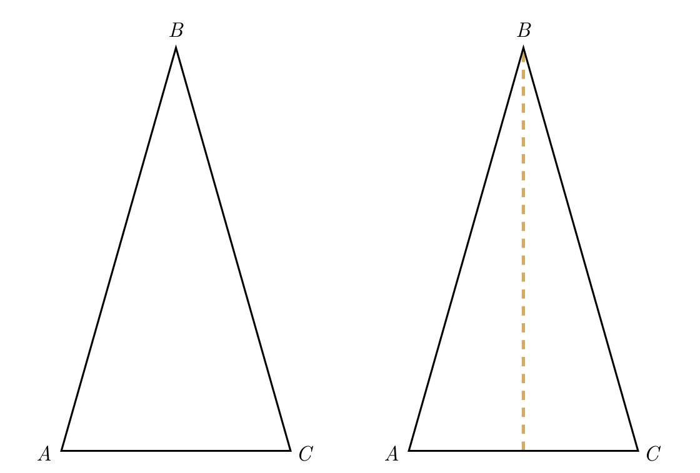
그 증명을 보는 사람은 누구나 그것이 우아하고, 정확하고, 놀랍다고 인정할 것이다. 사실 그 프로그램을 작성한 사람들조차 그 증명을 몰랐고 널리 알려진 것도 아니었는데, 다만 내가 가진 유클리드 책에 각주 하나로 실려 있을 뿐이었다. 누구든 그 프로그램이 “독창성”을 보여줬다고 말하고 싶을 것이다. 그 결과는 이렇다. 프로그램이 설계자들이 넣지 않은 “새로움”을 보여주는 듯 보였고 “창의성”이라든가 그런 좋은 것들을 보여줬다는 것이다.
조금만 생각해 보면 알 수 있겠지만 프로그래머들은 프로그램에 “먼저 주어진 정리를 증명해 보라, 그러다 막히면 보조선을 그려 보라”는 지시를 집어넣었다. 만약 여러분이 그런 방식으로 기하를 배웠다면, 여러분 중 더 많은 사람이 위의 우아한 증명을 찾아냈을 것이다. 그러니 어떤 의미에서 그것은 프로그램에 집어넣어진 것이었다. 하지만 내가 앞서 말했듯이, 여러분이 배운 기하 수업이란 당신 안에 프로그램을 집어넣으려는 시도가 아니고 무엇이었겠는가? 물론 비효율적으로 말이다. 인간은 원래 그런 존재다. 하지만 기계는 깔끔하다. 프로그램을 한 번에, 완전히 집어넣으면 되고 끝없이 반복하고 또 반복해도 여전히 잊어버리는 일을 겪지 않아도 된다!
새뮤얼의 체커 프로그램이 놀라운 수를 두어 주(州) 체커 챔피언을 이겼을 때, 그것이 독창성을 보여줬다고 할 수 있을까? 만약 아니라면, 여러분이 자신은 독창성이 있다는 것을 보일 수 있는가? 자신을 컴퓨터 프로그램과 구분 지을 시험은 도대체 무엇인가?
누군가는 체커 프로그램이 “학습”했다고 주장하고 정리 증명 프로그램이 “창의성”이나 “독창성”이나 무엇이라 부르든 그런 것을 보여줬다고 주장할 수 있다. 그것들은 지금까지 작성된 수많은 비슷한 프로그램 중 단지 두 가지 예에 불과하다. 프로그램이 그런 속성들을 갖고 있다는 확신을 여러분에게 주기 어려운 이유는 단순하다. 어떤 일을 하는 프로그램이 존재하기만 하면, 실세계에서 얻은 난수(random number)가 그 프로그램에 포함되어 있더라도, 여러분은 그 일이 기계적으로 반복되는 루틴(rote routine)에 불과하다고 즉시 생각해버린다. 그래서 우리는 역설에 부딪힌다. 프로그램이 존재한다는 사실 자체가, 그것이 루틴 과정이 아니라고 믿지 못하게 만든다. 이런 태도를 갖는 한, 기계는 고전적 의미의 “기계” 이상이라는 것을 결코 증명할 수 없다. 예를 들어 기계가 “생각”할 수 있다는 것을 증명할 방법은 없는 것이다.
강한 인공지능(Artificial Intelligence, 이하 AI)을 주장하는 사람들은 인간은 기계에 불과하고 그 이상도 이하도 아니므로, 인간이 지적 영역에서 할 수 있는 일은 무엇이든 기계가 흉내 낼 수 있다고 주장한다. 앞서 말했듯이, 대부분의 독자는 기계의 어떤 결과를 보여주면 그것이 주장된 인간적 특성일 수 없다고 자동적으로 믿는다. 그러면 두 가지 질문이 바로 떠오른다. 첫째, 이게 공정한가? 둘째, 여러분 자신이 복사 에너지장(radiant energy field) 속의 분자들의 집합에 불과하지 않다는 것, 그래서 온 세상이 분자와 분자의 충돌에 불과할지도 모른다는 것을 어느 정도 확신하는가? 만약 다른 (이름 없는, 신비한) 힘들을 믿는다면, 그것들은 어떻게 분자들의 운동에 영향을 미치는가? 그 힘들이 운동에 영향을 미칠 수 없다면, 어떻게 현실 세계에 영향을 미칠 수 있겠는가? 물리학이 우주에 대한 완전한 설명인가, 아니면 (물리학도 모르는) 미지의 힘들이 존재하는가? 어느 쪽을 선택하든 쉽지 않은 선택이다. (참고로, 현재 [1994년]에는 우주의 90%에서 99%가 소위 암흑 물질로 이루어져 있다고 여겨지는데, 물리학은 그것의 중력 인력 외에는 아무것도 모른다.)
이제 우리는 더 문화적인 상황에서 컴퓨터의 실제 응용 몇 가지로 시선을 옮겨 보자. 컴퓨터 혁명 초기에 나는 벨 전화연구소(Bell Telephone Laboratories)에서 맥스 매튜스와 존 R. 피어스가 컴퓨터로 음악을 다루는 모습을 지켜봤다. 지금 모르더라도 나중에 분명해지겠지만 재현하고 싶은 주파수 대역의 높이를 정하기만 하면 샘플링 속도(sampling rate)는 결정된다. 인간은 기껏해야 초당 약 18,000 사이클까지 들을 수 있고 그것도 젊었을 때만이다. 성인은 8,000 사이클 이하의 전화음으로도 대개 목소리를 거의 즉시 알아본다. 음악을 나타내는 소리의 양자화(quantization)는–악기가 몇 대가 있든 소리 트랙의 진폭은 하나라는 점을 기억하라–그다지 큰 왜곡을 더하지 않는다. 그래서 논리는 이렇게 이어진다. 컴퓨터가 각 시간 구간마다 소리의 높이를 계산하고, 그 숫자를 전압으로 내보내고, 평활 필터(smoothing filter)를 통과시키면, 그에 상응하는 “음악”이 만들어진다는 것이다. 순음(純音, pure tone)은 쉽다. 그냥 사인 곡선이다. 주파수들의 조합이 단일 악기의 소리를 결정하며 거기에는 “어택(attack)”(음이 시작될 때 주파수들의 진폭이 어떻게 커지는지, 그리고 나중에 어떻게 감쇠하는지를 뜻한다) 같은 특징들이 들어 있다. 여러 가지 악기가 프로그래밍되어 있으면 음표를 공급할 수 있고 음악의 소리를 테이프에 기록해 두었다가 나중에 재생할 수 있다. 숫자를 실시간으로 계산할 필요는 없다. 컴퓨터는 필요한 만큼 느리게, 심지어 일정하지 않은 속도로 계산해도 된다. 그러나 그 숫자들을 테이프에 넣고 균일한 속도로 재생하면, 그때 비로소 “음악”을 얻게 된다.
하지만 왜 인간이 음표를 공급하는가? 컴퓨터가 “작곡”도 하면 안 되는가? 결국 “작곡의 규칙”이란 많지 않은가. 그래서 그들은 그 규칙들을 이용해 작곡을 했고 선택을 해야 하는 지점에서는 난수를 사용해 다음 음표를 정했다. 현재 우리는 컴퓨터가 작곡하고 컴퓨터가 연주한 음악을 모두 갖고 있다. 라디오와 TV의 광고에서 그런 음악을 많이 듣는다. 더 싸고, 더 통제하기 쉬우며, 현재 어떤 악기도 만들 수 없는 소리를 만들어 낼 수 있다. 사실 녹음된 사운드에 나타날 수 있는 어떤 소리라도 컴퓨터는 만들어 낼 수 있다.
그러므로 어떤 의미에서 컴퓨터는 음악의 궁극이다. 사소한 세부 사항(샘플링 속도와 양자화 레벨 수–원한다면 비용을 치르고 늘릴 수 있다)을 제외하면, 작곡가들은 이제 존재할 수 있는 어떤 소리든, 원하는 속도로, 어떤 조합, 템포, 강도로든 사용할 수 있다. 실제로 현재 “최고 품질의 음악 녹음”은 디지털이다. 미래에 의미 있는 기술적 개선은 있을 수 없다. 이제는 분명히 어떤 소리가 만들어질 가치가 있는지의 문제이지, 무엇을 할 수 있는지의 문제가 아니다. 요즘 많은 사람이 디지털 녹음 재생기를 갖고 있는데, 그것들은 옛 아날로그 기기보다 훨씬 낫다고 여겨진다.
기계는 또한 작곡가에게 더 즉각적인 피드백을 제공해서 자기 작품을 직접 들어볼 수 있게 해 준다. 그전에는 명성이 도달할 때까지 작곡가가 몇 년이고 몇 년을 기다려야 했고 이전에 작곡한 음악은 상상 속에서만이 아니라 실제로 처음 연주되어야 했다. 그래서 작곡가는 이제 훨씬 더 빠른 속도로 자신의 스타일을 발전시킬 수 있다. 컴퓨터 음악 전문 저널을 한 호 읽어보면, 요즘 작곡가들에게 상당히 정교한 컴퓨터 설비가 일반 장비가 되었고, 쓸 수 있는 언어도 많으며, 인간과 기계가 결합된 노력으로 음악을 창조하는 매우 다양한 접근 방식이 쓰이고 있다는 인상을 받는다.
음악의 지휘자도 이제 훨씬 더 많은 통제권을 갖는다. 과거에 지휘자는 녹음을 할 때 연주자들에게서 최선을 끌어내려고 했고, 최상의 녹음을 얻기 위해 여러 테이크(take)를 이어붙이곤 했으며, 여기에는 여러 마이크 녹음의 “믹싱(mixing)”도 포함되었다. 이제 지휘자는 원하는 것을 정확히 얻을 수 있다. 밀리초 단위의 타이밍, 반음 이하로 잘게 쪼갠 미세한 음정, 그리고 시뮬레이션되는 각 개별 악기의 다른 특성까지도 말이다. 너무도 인간적인 연주자들이 한 패시지(passage) 동안 동시에 완벽할 필요가 없다.
여기서도 여러분은 컴퓨터의 영향력을 다시 보게 된다. 컴퓨터가 어떻게 우리를 사물의 세계에서 관념의 세계로 밀어내고 인간이 할 수 있는 일을 어떻게 보완하고 확장하는지를 말이다.
이런 종류의 AI가 내가 관심을 두는 인공지능이다. 인간과 기계가 함께 무엇을 할 수 있는가 하는 것이지, 생길 수 있는 경쟁이 아니다. 물론 로봇이 일상적인(routine) 일을 하는 많은 사람을 대체할 것이다. 아주 실질적인 의미에서 기계는 일상적인 일을 가장 잘 할 수 있어서 인간이 더 인간적인 일을 하도록 자유롭게 만들어 준다. 불행하게도 현재 많은 사람은 기계와 경쟁할 준비가 되어 있지 않다. 그들은 일상적인 일보다 훨씬 더 많은 것을 할 수 없다. 적절한 훈련만 받으면 인간이 경쟁할 수 있다는 믿음(희망?)이 널리 퍼져 있다. 하지만 나는 오랫동안 공개적으로 의구심을 표해 왔다. 많은 탄광 노동자를 데려다가 유능한 프로그래머로 만들 수 있느냐는 것에 대해서다. 나는 고전적인 의미에서 프로그래머가 될 수 있는 인구의 비율에 대해 유보적인 입장을 갖고 있다. 만약 은행 현금인출기에서 돈을 인출하는 일이나 전화번호를 거는 일(이 둘 모두 인간의 입력이 정교한 프로그램에 적용되어 실행되는 것으로, 마치 인터프리터가 여러분의 프로그램 입력에 따라 작동하는 것과 같다)을 “기계 프로그래밍”이라고 부르기만 한다면, 당연히 대부분의 사람이 프로그래머가 될 수 있다. 하지만 상황에 대한 신중한 분석과 그다음에 무엇을 할 것인가의 상세한 명세라는 더 고전적인 활동을 의미한다면, 멋진 대화형 안내 메뉴가 있다 해도 인구 중 얼마나 많은 비율이 컴퓨터와 경쟁할 수 있는지에 대해서는 의문이 있다고 나는 말한다.
컴퓨터는 수많은 사람을 일자리에서 몰아냈고 동시에 수많은 새 일자리도 만들었다. 어느 쪽이 더 큰 숫자인지 답하려는 시도는 가망이 없다. 하지만 분명한 것은, 평균적으로 사라지는 것은 하위 수준의 일자리이고 생겨나는 것은 상위 수준의 일자리라는 점이다. 다시 말하지만 대부분의 사람들이 미래에는 상위 수준의 일자리를 할 수 있도록 훈련될 수 있다고 믿고 싶다. 하지만 그것은 진짜 증거가 없는 희망일 뿐이다.
게임, 기하, 음악 말고도 대수식 변환(algebraic manipulation)을 위한 프로그램이 있다. 그것들은 “독립형(self-standing)” 프로그램이라기보다 “방향이 정해진” 프로그램인 경향이 있는데, 즉 변환의 여러 단계에서 인간의 안내에 의존한다는 뜻이다. 처음 보면 이상한 일이다. 우리는 독립형 기하 프로그램을 만들 수 있는데, 대수에서는 그렇게 하는 것이 쉽지 않은 것 같다. 단순화(simplification)가 골칫거리 중 하나다. 여러분이 대수 수업에서 “식을 간단히 하라”는 지시를 받았을 때, “단순화”에 대한 명시적 규칙을 받아 본 적이 없었다는 것을 알아차리지 못했을지도 모른다. 만약 규칙을 배웠다면, 그 규칙은 명백히 우스꽝스러운 것이었을 것이다. 예를 들어, 소위 “새 수학”의 어떤 판본에서는
는 단순화된 식이 아니지만
는 단순화된 식이라고 했다!
우리는 “단순화하다”라는 말을 끊임없이 쓰지만, 그 의미는 다음에 무엇을 할 것인지에 달려 있고, 균일한 정의는 없다. 예를 들어 미적분에서 다음에 적분을 할 것이라면 식을 작은 조각들로 쪼개려 하겠지만 다른 때에는 부분들을 멋진 곱(product)이나 몫(quotient) 표현으로 합치려 한다.
화학 화합물의 합성(synthesis of chemical compounds)을 위해서도 비슷한 “인간의 안내를 받는” 상호작용 프로그램이 개발되었다. 그것은 꽤 유용한데, (1) 합성의 가능한 경로들, (2) 비용, (3) 과정 중 반응에 걸리는 시간들, (4) 유효 수율(effective yield)을 알려 주기 때문이다. 그래서 그것을 사용하는 프로그래머는 새 화합물을 합성하는 여러 다양한 방법을 탐색할 수 있고 혹은 수년 전과 비교해 자재와 공정 비용이 바뀌었으므로 옛 합성법을 다시 조사해 새로운 방법을 찾을 수도 있다.
혈액 검체 등의 의학적 측정 상당 부분이, 현미경을 들여다보는 믿을 수 없는 인간 대신 기계 분석으로 옮겨 갔다. 대부분의 경우 더 빠르고, 더 믿을 수 있고, 비용 대비 더 효과적이다. 우리는 의학에서 더 나아가 기계로 의학적 진단을 내려 의사를 대체할 수도 있을 것이다. 실제로 이 경우에는 기계가 진단 중인 의사에게 재촉하며 지시하는 격이 되기 일쑤다! 어떤 질병들에 대한 자가 진단 키트는 오래전부터 시장에 나와 있었다. 그것은 새로울 것이 없다. 사람들을 괴롭히는 것은 단지 더 나아가 치료법까지 처방하자는 생각이다.
우리는 의사도 인간이고 그래서 믿을 수 없다는 것을 안다. 희귀병의 경우 의사가 그런 사례를 한 번도 본 적이 없을 때가 많지만 기계는 잊지 않으며 관련 질병을 모두 실어 둘 수 있다. 그래서 프로그램은 증상만으로 진단을 내리거나, 가능성이 있는 질병을 확정하기 위해 추가 검사를 요구할 수 있다. 발생 확률을 프로그래밍해 넣으면(그것은 현재 유행병에 맞춰 신속히 조정될 수 있다), 장기적으로 보면 기계는 평균적인 의사보다, 심지어 평균보다 나은 의사보다 더 잘할 수 있다. 그리고 대부분의 사람을 치료해야 하는 것은 바로 평균적인 의사들이다! 최고의 의사들도 (기계의 도움 없이) 전체 인구 중 극소수만 직접 치료할 수 있다.
무엇보다도 큰 문제 중 하나는 법적 문제다. 인간 의사의 경우, 그들이 “충분한 주의(due prudence)”를 기울였다고 (법적 용어로) 인정되는 한, 실수를 해도 법은 용서한다. 애초에 인간일 뿐이니까(인간은 실수하기 마련, to err is human). 하지만 기계의 오류라면 누구를 고소할 것인가? 기계를? 프로그래머를? 규칙을 만드는 데 동원된 전문가들을? 규칙을 더 상세히 공식화한 사람들을? 그것들을 어떤 순서로 조직한 사람들을? 아니면 그 규칙들을 프로그래밍한 사람들을? 기계의 경우, 인간 의사의 경우와 달리, 프로그램을 상세히 분석함으로써 실수, 즉 잘못된 진단이 있었다는 것을 증명할 수 있다. 그래서 나의 예측은 이렇다. 의사들이 수행하는 컴퓨터 보조 진단은 아주 많아지겠지만 오랫동안 여러분과 기계 사이에는 인간 의사가 자리를 지킬 것이다. 우리는 스스로 진단하는 방법을 훨씬 더 많이 알려 주는 개인용 프로그램을 서서히 갖게 되겠지만 그런 프로그램에는 법적 문제가 따를 것이다. 예를 들어, 인간 의사가 처방전에 서명하지 않으면 필요한 약을 처방할 권한을 갖게 되기는 어렵다고 나는 본다. 여러분도 이미 알아차렸을지도 모르지만 여러분이 사는 모든 컴퓨터 프로그램은 판매자가 자기 제품에 대한 어떤–말 그대로 어떠한–책임도 지지 않는다고 명시한다! 신규 응용의 법적 문제가 흔히 가장 큰 걸림돌이지, 공학 문제가 아니다!
현대 병원에 가 본 적이 있다면 컴퓨터의 침투를 보았을 것이다. 의학 분야는 컴퓨터를 사용해 점점 더 나은 일을 해내는 데 매우 적극적이었다. 비용 절감, 정확성, 속도 면에서 더 나은 일 말이다. 최근 몇 년 사이 의료 비용이 극적으로 올랐기 때문에 그렇게 생각하지 않을 수도 있지만, 비용이 많이 드는 효과를 가져온 것은 의료 분야의 정교화이며, 그것이 컴퓨터가 가져다주는 비용 절감의 이득을 압도한다. 컴퓨터는 청구(billing), 일정 관리(scheduling), 기록 관리 등 병원 운영의 기계적인 일을 처리하고 심지어 개인 의사들도 작업을 돕기 위해 컴퓨터로 눈을 돌리고 있다. 어느 정도는 연방 관료 체계가 그 분야를 감싸는 번잡한 행정 절차(red tape)에 대처하라고 그렇게 하도록 강요하고 있다.
많은 병원에서 컴퓨터는 응급실의 환자들을 감시하며 필요할 때는 다른 곳에서도 그렇게 한다. 기계는 지루함이 없고, 반응이 빠르며, 가까이 있는 간호사에게 즉시 무언가를 하라고 알려 줄 것이다. 컴퓨터의 도움 없이 전일제 간호사가 컴퓨터와 간호사의 결합에 맞먹을 수 있을지는 의문이다.
수학에서는 기호 조작을 수행한 가장 초기의 프로그램 중 하나(1953년)가 고계 도함수(higher derivative)를 찾는 형식적 미분(formal differentiation) 프로그램이었다. 그것은 복잡한 함수의 멱급수(power series) 첫 20항을 찾기 위해 작성되었다. 미적분 강좌에서 알겠지만 미분은 규칙이 비교적 적은 단순한 형식적 과정이다. 그 강좌를 들을 당시에는 훨씬 더 복잡한 것으로 보였겠지만 아마도 여러분은 미분과 그다음에 필요한 단순화 및 도함수의 다른 조작들을 혼동한 것이었다. 또 하나의 매우 초기의 추상 기호 조작 프로그램은 좌표 변환이었다. 유도 미사일, 레이다 등에 필요한 것이다. 모든 레이다에는 여분의 자유도가 하나 더 있어서 표적이 회전축의 끝을 넘어 날아가 레이다를 강제로 180° 회전시켜 추적하게 만들 필요가 없다. 그래서 좌표 변환은 생각보다 조금 지저분할 수 있다.
시각 장애인 과학자인 슬래글은 (1961년 MIT에서 쓴 논문에서) 미적분 강좌에서 여러분이 했던 것과 같은 방식으로 해석적 적분(analytical integration)을 수행하는 프로그램을 작성했다. 그 프로그램은 다룰 수 있는 적분의 범위와 그것을 구하는 비용 면에서 MIT의 평균 학부 공학도와 겨룰 수 있었다. 이후로 우리는 많은 개선을 보았다. 그리고 유명한 리시(Risch) 알고리즘에 기반해 닫힌 형태(closed form)로 표현되는 적분이라면 무엇이든 찾아낸다는 프로그램이 있다고 알려져 있다. 하지만 몇 년을 기다리고 또 기다렸어도 나는 그것을 보지 못했다. 내가 들은 바로는, 닫힌 형태의 답을 구하거나 그러한 답은 존재할 수 없다는 것을 증명해 주는 적분 프로그램들이 있다.
로봇의 형태로 컴퓨터는 내구재 생산 라인뿐 아니라 의약품 생산 라인에도 침투했다. 컴퓨터는 이제 컴퓨터가 구동하는 로봇에 의해 조립되고 컴퓨터를 만드는 집적회로(IC) 칩은 주로 컴퓨터가 인간의 약간의 지시를 받아 설계한다. 어떤 인간의 두뇌도 칩 위의 백만 개가 넘는 트랜지스터 배치를 안정적으로 수행할 수 없다. 그것은 가망 없는 작업일 것이다. 설계 프로그램들은 분명 어느 정도의 인공지능을 갖고 있다. 어떤 놀라움도 있을 수 없는 제한된 영역에서는 로봇이 꽤 효과적이지만 예상치 못한 일이 일어날 수 있는 곳에서는 단순한 로봇이 종종 심각한 곤경에 빠진다. 일상적이지 않은 상황에 대한 기계적인 대응은 재앙이 될 수 있다.
예를 들어 해군이라면 이런 것은 명백하다. 만약 배에서 이동형 로봇을 사용하려 한다면(모든 로봇이 이동형일 필요는 없다), 천장에 설치된 레일을 따라 다니게 하는 것이 좋다. 그러면 로봇과 배가 모두 격렬하게 움직일 때, 갑판에 떨어진 물건들이 꼭 문제를 일으키지는 않을 것이기 때문이다. 이것은 내가 반복해서 말해 온 것의 또 다른 예이다. 기계로 바꾸면 동등한 일(equivalent job)을 하는 것이지, 똑같은 일을 하는 것이 아니다. 사고로든, 부주의로든, 전투 피해로든 물건들은 갑판에 있어서는 안 될 곳에 떨어져 있게 마련이고 그것을 넘어가거나 피해 가는 것은 인간보다 로봇에게 결코 쉽지 않다.
이동형 로봇의 또 하나의 명백한 영역은 피해 통제(damage control)다. 로봇은 인간이 석면 보호복을 입고 있더라도 화재 같은 훨씬 더 가혹한 환경을 견딜 수 있다. 그 일을 빠르게 수행하는 동안 로봇 몇 대가 파괴된다 해도, 그것은 인간이 죽는 것과 같지 않다. 해군은 이제 원격 조종 기뢰 제거함을 갖고 있다. 선박을 잃어도 인간 승무원을 잃는 것은 아니니까 말이다. 우리는 심해 잠수에 로봇 제어를 정기적으로 사용하며 요즘에는 무인 폭격기도 있다.
기계가 두는 체스로 돌아가 보자. 프로그램은 꾸준히 더 효과적으로 되어 왔고 기계가 세계 체스 챔피언을 이길 수 있게 되는 것은 시간문제에 불과해 보인다. 하지만 과거에 더 나은 프로그램으로 가는 길은 주로 가능한 수들을 여러 단계 앞까지 상세히 조사하는 것이었지, 인간이 체스를 두는 방식을 이해하는 것이 아니었다. 컴퓨터가 이제 초당 수백만 개의 기보(局面, board position)를 조사한다. 반면 인간은 한 수를 두기 전에 전형적으로 아무리 많아야 50에서 100개만 조사한다고 심리학자들과 협력할 때면 인간들은 보고한다. 적어도 그것은 인간들이 자기 머리에서 일어난다고 여기는 일이다. 인간의 마음이 체스를 둘 때 실제로 무엇을 하는지는 별개의 문제다! 우리는 정말로 알지 못한다!
다른 게임에서는 기계가 더 성공적이었다. 예를 들어, 최근 이탈리아에서 열린 대회의 우승자 전부를 백개먼(backgammon) 프로그램이 이겼다고 들었다. 하지만 바둑(Go) 같은 몇몇 단순한 게임은–규칙만 단순할 뿐인–기계가 일류의 수준으로 두도록 프로그래밍하기가 여전히 어렵다.
요약하면, 많은 게임과 관련 활동에서 기계는 아주 잘 두도록 프로그래밍되었고 극소수 게임에서만 형편없이 둔다. 하지만 종종 기계가 두는 방식은 “통찰”이 아니라 “계산량(volume of computations)으로 문제를 푸는” 것이라고 말할 수 있다. “통찰”이 무엇을 의미하든 간에! 우리는 인간의 사고 과정을 연구하기 위해 컴퓨터로 게임을 시작했지, 게임에서 이기기 위해서가 아니었다. 그 목표는 이기는 것으로 변질되었고 인간의 마음과 그것이 어떻게 작동하는지에 대한 통찰은 개의치 않게 되었다.
스스로를 반복하겠다. 인공지능(AI)은 무시해도 되는 주제가 아니다. 여러분의 태도에 따라 여러분 분야의 기계 응용에서 앞장서게 될 수도, 뒷전에 머물게 될 수도 있다. 또한 그 태도가 여러분을 정말 큰 실패로 이끌 수도 있다!
여기서 논리적 새로움과 심리적 새로움의 멋진 구분을 소개하기 좋은 자리다. 기계는 제대로 작동할 때 논리적 새로움을 만들어 내지 않지만 확실히 심리적 새로움은 만들어 낸다. 프로그래머들은 자신이 작성한 프로그램이 실제로 하는 일에 끊임없이 놀라니까! 하지만 인간으로서 여러분은 논리적 새로움을 만들어 낼 수 있는가? 사람들이 위대한 발견에 대해 쓴 보고들을 주의 깊게 살펴보면, 그들이 과거의 경험에 이끌려 그 결과를 찾아냈음을 자주 보여 준다. 상황이 그들을 성공으로 이끌었다. 심리적으로는 새로운 것이지만 논리적으로는 새로운 것이 아닌 것이다. 여러분이 지금 하는 일을 하고 지금과 같은 발견을 하도록 과거의 경험이 여러분을 준비시키지 않았는가? 논리적 새로움은 실제로 가능하기는 한가?
심리적 새로움이 하찮다고 생각해서는 안 된다. 공리와 정의와 논리가 주어지기만 하면, 나머지 수학 전부는 단지 심리적으로 새로울 뿐이다. 그 수준에서는 수학 전체에 기술적으로 논리적 새로움이라는 것이 전혀 없다!
결정을 내리는 무작위 소스에 호소하면 분자가 분자와 부딪히는 악순환에서 벗어날 수 있다는 믿음이 널리 퍼져 있다. 하지만 분자의 물질 세계에서 온 것이 아니고서는, 이 외부의 무작위 소스는 대체 어디서 온단 말인가?
진정한 무작위 소스는 모든 지식을 포함한다는 흔한 주장도 있다. 이것은 원숭이와 타자기 이야기의 변형에 기반한다. 이상적으로 여러분은 타자기 앞에 원숭이 한 무리를 앉혀 두고 그것들이 무작위한 시각에 무작위한 키를 누르게 한다. 시간이 흐르면 그중 하나가 대영박물관(British Museum)의 책 전부를, 책장에 꽂힌 순서 그대로 쳐 낼 것이라고 주장된다! 근거는 이렇다. 조만간 어떤 원숭이가 우연히 바른 첫 번째 키를 누르게 되고 무한한 시간 안에는 그것이 무한히 자주 일어난다. 그 무한한 횟수 중에는 다음 키를 올바르게 누르는 경우(역시 무한히 많이)도 있을 것이다. 이런 식으로 계속된다. 무한한 시간이 충분히 흐르면, 정확한 키 입력의 순서가 나타날 것이다.
이것이 진정한 무작위 소스에는 모든 지식이 담겨 있고 “정보”를 인식하는 프로그램을 쓸 수만 있다면 그 지식을 쉽게 얻을 수 있다는 주장의 근거다. 예를 들어, 조만간 차기 물리 이론이 무작위 잡음의 흐름 속에 나타날 것이고 그것을 알아볼 수 있다면 무작위 수의 흐름에서 걸러낼 수 있을 것이다! 상황의 논리는 피할 수 없다. 현실은 좀처럼 믿기 어렵다! 기다려야 하는 시간이 너무나 길고 사실 여러분은 “정보”를 눈앞에서 보더라도 항상 인식할 수 있는 것은 아니다.
“자유 의지(free will)는 신화다”라는 오래된 주장이 있다. 주어진 상황에서, 지금 이 순간의 존재인 여러분은, 여러분이 하는 것밖에 할 수 없다. 이 논증은 그럴듯하게 들리지만 여러분이 자유 의지를 가졌다는 믿음과 정면으로 배치된다. 이 질문을 해결하려면 어떤 실험을 하겠는가? 실현 가능한 만족스러운 실험은 없는 것 같다. 진실은 우리가 행동에서 이 두 입장 사이를 끊임없이 오간다는 것이다. 교사는 올바른 말만 해 주었다면 학생이 이해하게 되었을 것이라고 믿어야만 한다. 아이를 키울 때 여러분도 비슷하게 행동한다. 그러나 자유 의지를 가졌다는 느낌은 우리 내부 깊숙이 있고 우리 자신에게는 그것을 포기하려 들지 않는다. 하지만 타인에게는 자주 부정하기를 마다하지 않는다!
타인에게 자유 의지가 없다는 암묵적 믿음의 또 다른 예를 보자. 도시의 어떤 동네에서 범죄율이 높을 때, 많은 사람은 그것을 치료할 방법이 환경을 바꾸는 것이라고 믿는다. 그러면 사람들이 변할 수밖에 없고 범죄율도 내려갈 것이라는 것이다!
이것들은 그저 “기계가 생각할 수 있는가?”라는 질문에 여러분을 끌어들이기 위한 예시일 뿐이다.
마지막으로, 어쩌면 생각은 무엇을 하느냐가 아니라 어떻게 하느냐로 측정되어야 할지도 모른다. 내가 아이가 두 자릿수, 아니 세 자릿수를 곱하는 법을 배우는 것을 지켜볼 때, 그 아이가 생각하고 있다는 느낌이 든다. 같은 곱셈을 내가 할 때 나는 좀 더 “조건반사(conditioned response)”를 하고 있다는 느낌이 든다. 컴퓨터가 같은 곱셈을 할 때 나는 그 기계가 전혀 생각하고 있다고 느끼지 않는다. 옛 노래 말대로, “중요한 것은 네가 무엇을 하느냐가 아니라, 어떻게 하느냐다(It ain’t what you do, it’s the way that you do it).” 생각의 영역에서 우리는 어쩌면 무엇을 하는지와 그것을 어떻게 하는지를 혼동해 왔고 이것이 AI에 관한 우리 혼란의 상당 부분의 원천일지도 모른다.
강한 인공지능을 주장하는 사람들은 성공의 척도로 오로지 무엇이 이루어졌는지만을 받아들인다. 그리고 이 생각은 사실을 신중히 검토하지 않은 채 다른 많은 사람들의 머릿속으로 퍼져 나갔다. “결과가 생각의 척도다”라는 이 믿음 덕분에 많은 사람이 자신은 “생각”할 수 있고 기계는 할 수 없다고 믿게 된다. 기계가 아직 요구되는 결과를 만들어 내지 못했으니까.
컴퓨터와 사고에 관한 상황은 난처하다. 우리는 기계가 “생각”할 수 있다고 믿고 싶으면서 동시에 믿고 싶지 않다. 믿고 싶은 이유는 기계가 우리의 정신 세계에서 그렇게 많이 도와줄 수 있으니까. 믿고 싶지 않은 이유는 우리의 자아 중요성(self-importance)이라는 느낌을 보존하고 싶으니까. 기계는 너무도 많은 방식으로 우리를 이길 수 있다. 속도, 정확성, 신뢰성, 비용, 제어의 신속함, 지루함으로부터의 자유, 입출력 대역폭, 옛것을 잊고 새것을 배우는 용이성, 가혹한 환경, 인사 문제 등. 그래서 우리는 어떤 면에서 그들보다 우월하다고 느끼고 싶다. 그들은 어쨌든 우리의 창조물이니까! 예를 들어, 기계 프로그램이 현역 의사들보다 현저히 더 나은 일을 한다면, 의사들은 어디에 서 있게 될까? 더 나아가 우리는 어디에 서 있게 될까?
주요 난점 둘은 이것이다. (1) 기계가 한다면 그것은 알고리즘일 수밖에 없고 생각일 수 없다는 것, (2) 다른 한편으로, 우리가 그런 것처럼 보이는 분자와 분자의 충돌에서 우리는 어떻게 벗어나는가 – 우리의 생각, 자기 인식(self-awareness), 자기의식(self-consciousness)이 분자들의 경로에 영향을 미친다는 것은 무슨 힘에 의한 것인가?
지난 두 장에서 나는 하드웨어와 소프트웨어 양쪽의 한계에 대한 추정치로 장을 마감했다. 하지만 AI에 관한 이 두 장에서는 내가 할 수 있는 것이 거의 없다. 우리는 도대체 무슨 말을 하고 있는지 모른다. 그 단어들 자체가 정의되지 않았고 가까운 장래에 정의될 수 있을 것 같지도 않다. 우리는 또한 컴퓨터에 의한 언어 처리를 논하기 위해 언어를 사용해야 했으며 이런 재귀성(recursiveness)이 일을 더 어렵고 덜 확실하게 만든다. 그래서 내가 AI의 일반적인 주제로 삼아 온 응용의 한계는 열린 질문으로 남아 있지만 여러분의 미래 경력에 중요한 질문이다. 따라서 AI는 여러분의 신중한 사고를 요구하며 많은 전문가가 명백히 거짓된 주장을 한다는 이유만으로 가볍게 무시되어서는 안 된다.
8 컴퓨터 응용의 한계-AI-III
여러분이 잠시 멈추고 “기계가 생각할 수 있는가?”라는 주제에 대해 스스로와 두 가지 토론을 해 보기를 권합니다. 그리고 앞으로 기계가 무엇을 할 수 있고 무엇을 할 수 없는지, 바로 그것에 관한 여러분 나름의 평가를 내리는 것이 왜 중요한지도 돌아보시기 바랍니다. 다음의 관찰 목록을 한번 살펴보세요:
컴퓨터가 아직 ‘생각하도록’ 프로그램 되지 않았다고 해서 생각할 수 없다는 뜻은 아니다. 어쩌면 그건 프로그래머들이 멍청하다는 뜻일지도 모른다!
기계가 생각할 수 있다고 믿고 싶다는 이유만으로 그게 가능하다는 뜻은 아니다. 그냥 희망사항(wishful thinking)일 뿐일 수도 있다!
아서 새뮤얼(Art Samuel)의 체커 프로그램은 경험에서 ’학습’했다. 그러니 기계는 겉보기에는 경험으로부터 배울 수 있다.
이등변삼각형 정리의 새로운 증명은 ’독창성’을 보여 주었다-어쩌면 여러분이 지금까지 해온 그 어떤 일만큼이나 대단한 독창성일지도 모른다!
여러분이 생각할 수 있다고 믿는, 가장 짧은(혹은 거의 가장 짧은) 프로그램을 상상해 보라. 정의상 그 어떤 하위 조각도 스스로 생각할 수는 없다.
‘논리적’ 새로움과 ‘심리적’ 새로움을 기억하라.
여러분의 의견이 무엇이든, 어떤 증거가 있다면 자신이 틀렸다는 것을 인정하겠는가?
생각한다는 것은 예/아니오의 문제가 아니라 정도의 문제일 수도 있다.
생각이 일어나느냐의 여부를 정하는 것은 ’무엇을 하는가’보다 ’어떻게 하는가’일 수도 있다는 점을 생각해 보라. 인공지능(Artificial Intelligence, 이하 AI)은 전통적으로 ’무엇을 하는가’에 집착해 왔고 ’어떻게 하는가’는 좀처럼 고려하지 않았다.
여러분이 어떤 입장을 취하든 그 반대편도 존재한다는 제 관찰로부터 토론을 시작해도 좋습니다. 그리고 좋은 이유가 있고 그것을 분명하게 설명할 수만 있다면, 여러분이 무엇을 믿든 저는 신경 쓰지 않습니다. 이 어색한 주제에 대해 여러분이 생각하도록 만드는 것, 바로 그것이 제 임무이고 답을 주는 것은 제 일이 아닙니다.
해마다 이런 토론은 대체로 기계에게 상당히 적대적입니다. 다만 그 정도는 해가 갈수록 점점 줄어들고 있습니다. 토론은 흔히 이런 말로 시작되곤 합니다. “나는 내 목숨이 기계에 달라붙는 걸 원하지 않아.” 그러면 반박이 돌아옵니다. “그럼 사람을 살리기 위한 심장박동기(페이스메이커) 사용에 반대하시는 겁니까?” 현대의 조종사들은 비행기를 직접 제어하지 못하고 안정화를 위해 기계에 의존해야만 합니다. 현대 병원의 응급실에서는 환자가 자동으로 컴퓨터에 연결되어 활력 징후를 감시받습니다. 그리고 많은 경우 인간 누구도 알아채고 무언가를 하기 훨씬 전에 컴퓨터가 간호사를 호출해 줍니다. 명백한 사실은, 여러분의 목숨은 종종 기계에 의해 통제되며 때로는 기계가 생명에 필수적이라는 것입니다-여러분은 단지 그것을 상기시키는 것을 싫어할 뿐입니다.
“내 삶을 기계가 통제하는 것은 싫어.” 그러면 교차로의 신호등도 원하지 않으시겠네요! 다른 답변들은 위를 보시기 바랍니다. 그리고 인간은 다른 인간과 협력하는 것보다 기계와의 협력에서 훨씬 더 잘하는 경우가 많습니다!
“기계는 인간이 하는 일을 절대 해낼 수 없다.” 그러면 그 반대도 있습니다. 기계는 인간은 절대 못 하는 일도 해낼 수 있다는 점을 관찰해 보세요. 그리고 어떤 경우든, 명확하게 미리 지정된 일-지금은 기계(프로그램)가 분명히 할 수 없어 보이는 일-을 언젠가는 여전히 인간보다 못할 것이라고 얼마나 확신하시나요? (아마 ’명확하게 지정된’이라는 것은 프로그램을 작성할 수 있다는 뜻일 겁니다!) 그리고 어쨌든, 그렇게 추정되는 차이들이 여러분의 경력과 얼마나 관련이 있나요?
사람들은 대체로 자신이 기계보다 ’더 낫다’고 확신하지만 왜 차이가 있는지에 대해서는 진짜 논거를 제시하지 못하는 경우가 많습니다. 종교에 호소하지 않는 한 말이죠. 그런데 주변에 아주 다른 신앙을 가진 외국 학생들이 있으면, 종교에 호소하기를 꺼립니다-비록 분명히 대부분의(전부는 아니지만) 종교가 인간은 지구상의 다른 생명체와 어떤 식으로든 다르다는 믿음을 공유하고 있음에도 말입니다.
컴퓨터 도입에 대한 반대는 또 다른 차원에서, 전문가의 영역에서도 나옵니다. 사람들은 기계가 절대 따라올 수 없을 것이라고 확신하지만 기계가 지닌 모든 장점들(1장 끝 참조)을 무시하고 있습니다. 그 장점들은 다음과 같습니다: 경제성, 속도, 정확도, 신뢰성, 제어의 신속함, 지루함으로부터의 자유, 입출력 대역폭, 재교육의 용이함, 열악한 환경, 그리고 인사 문제(personnel problems). 사람들은 기계가 일을 개선할 수 있는 곳을 찾으려 하기보다, 자신이 우월하다는 막연한 믿음에 집착하는 것 같습니다! 작동만 한다면 기계는 언제든 쓰면 좋은 것이라고 사람들이 바라보게 만드는 일은 어렵습니다. 사람들은 어딘가에서 인간이 우월하다는 느낌을 계속 간직하고 있습니다-물론 그런 영역은 존재합니다. 하지만 현재 그 영역은 여러분이 처음에 생각하는 바로 그 자리에 놓여 있는 경우는 드뭅니다. 중요한 것은 인간과 기계의 결합이지, 지나치게 인간적인 자아(ego)에서 비롯되는 상상 속의 갈등이 아닙니다.
두 번째로 유용한 토론의 주제는 다음과 같습니다.
자신의 전문 분야에 대한 컴퓨터의 미래 응용.
사람들은 아주 흔하게 과거와 현재의 응용을 보고합니다. 그것도 좋습니다. 하지만 이 주제의 목적은 여러분이 활용할 수 있는 미래의 가능성에 눈을 뜨게 하는 데 있습니다. 사람들은 자신의 분야에서 일이 어떻게 달라질 수 있을지 적극적으로 생각하기를 어려워합니다. 가끔 저는 스스로에게 이렇게 물어 보곤 했습니다. 사람들에게 자기 좁은 전문 분야가 아닌 다른 응용 분야에 컴퓨터를 적용해 보라고 하는 편이 더 나을까? 아마 거기서는 그들도 덜 얽매여 있을지도 모른다!
앞서 말했듯이 그 목적은 독자로 하여금 기계의 ’생각’이라는 어색한 주제와 자신의 개인적 미래에 대한 전망을 더 신중하게 생각하게 만드는 데 있으므로, 독자 여러분은 자신의 의견을 가져다가 우선 그것을 분명하게 표현해 보십시오. 그런 다음 반론으로 그 의견을 검증하며 이리저리 왔다 갔다 하다가, 자신이 무엇을 믿고 왜 믿는지가 상당히 명확해질 때까지 계속해 보십시오. 여러분이 무엇을 믿는지는 작가가 참견할 일이 아닙니다. 그러나 여러분이 생각하고 자신의 입장을 분명하게 말하도록 만드는 것은 작가의 일입니다. 이 책의 독자들에게 제안하건대, 다음 페이지를 읽는 대신 잠시 멈추어 이런 까다로운 문제들에 대해 스스로, 또는 가능하면 친구들과 토론해 보세요. 한쪽을 확신할수록 반대편을 논해 보는 편이 아마 더 좋을 것입니다!
9 n차원 공간
벨 전화연구소(Bell Telephone Laboratories)에서 주로 수학 연구부에서 활발한 연구를 30년간 한 뒤 교수가 되었을 때, 저는 교수라면 마땅히 생각하고 과거의 경험을 소화해야 한다는 말이 떠올랐습니다. 그래서 책상 위에 발을 얹고 과거를 되새기기 시작했습니다. 초기에는 주로 계산(컴퓨팅)에 몸담았으므로, 자연히 계산이 필요한 큰 프로젝트들을 많이 겪게 되었습니다. 제가 부분적으로 참여했던 몇몇 대형 엔지니어링 시스템이 어떻게 진행되었는지 생각해 보다 보니, 이제 어느 정도 거리를 두고 보게 되자 그들이 공통 요소를 지니고 있음이 보이기 시작했습니다. 저는 천천히 깨닫게 되었습니다. 설계 문제들은 모두 n차원 공간에서 일어나며 여기서 n은 독립 매개변수의 개수라는 것을. 그렇습니다. 우리는 3차원 물체를 만들지만 그 설계는 고차원 공간에서 이루어집니다. 설계 매개변수 하나마다 차원 하나가 대응되니까요.
또한 나중에 나올 증명들이 세부 사항을 엄밀하게 채우지 않아도 직관적으로 명백해 보이도록, 저는 고차원 공간이 필요합니다. 그래서 지금 n차원 공간을 다루어 보겠습니다.
여러분은 자신이 3차원 공간에 살고 있다고 생각하지만 사실 여러 면에서 여러분은 2차원 공간에 살고 있습니다. 예를 들어 삶이라는 랜덤 워크(random walk, 무작위 보행)에서, 한 사람을 일단 만나면 그 사람을 다시 만날 합리적인 확률이 있습니다. 하지만 3차원 세계라면 그렇지 않습니다! 잠재적으로 3차원에 살고 있을 바다의 물고기를 생각해 보세요. 물고기들은 수면을 따라 다니거나 바닥을 따라 다니면서 사실상 2차원으로 삶을 줄여 살아갑니다. 아니면 무리지어 다니거나 하구, 해변, 사르가소해 같은 특정 장소에 같은 시간에 모이기도 합니다. 3차원 그대로의 넓은 대양을 헤매고 다닌다면 짝을 찾을 수 없을 테니까요. 마찬가지로 비행기가 서로 충돌하게 하고 싶다면, 공항 근처로 모이게 하여 2차원적인 비행 고도 층에 나누어 넣거나 무리를 지어 보내야 합니다. 진짜 무작위 비행을 한다면 지금보다 사고가 훨씬 적을 것입니다!
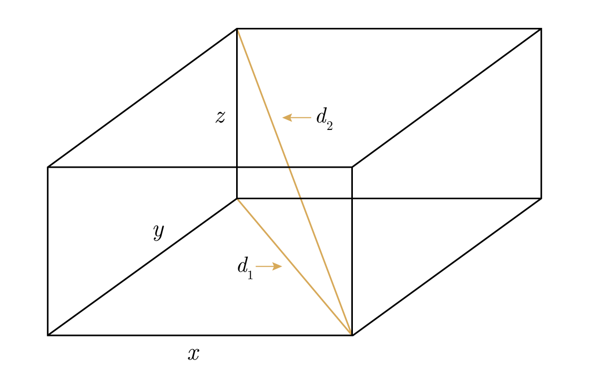
n차원 공간은 수학적 구성물(construct)로, 설계 문제를 풀다가 그 공간을 떠돌 때 우리에게 무슨 일이 일어나는지 이해하려면 반드시 살펴봐야 합니다. 2차원에는 피타고라스 정리가 있습니다. 직각삼각형에서 빗변의 제곱은 다른 두 변의 제곱의 합과 같다는 정리입니다. 3차원에서 직육면체(rectangular block)의 대각선 길이를 구한다고 해 봅시다, 그림 9.1. 그것을 구하려면 먼저 한 면 위에 대각선을 긋고 피타고라스 정리를 적용한 다음, 그 대각선을 한 변으로 삼고 나머지 변을 이와 직각을 이루는 세 번째 차원으로 삼아, 다시 피타고라스 정리를 적용합니다. 그러면 대각선의 제곱이 서로 수직인 세 변의 제곱의 합이 됩니다. 이 증명과 공식의 필연적인 대칭성으로부터, 차원이 점점 높아져도 여전히 대각선의 제곱은 서로 수직인 각 변들의 제곱의 합이라는 사실이 명백해집니다.
여기서 xi는 n차원에서 직육면체 각 변의 길이입니다.
기하학적 접근을 계속해 보면, 공간 안의 평면은 xi들의 단순한 선형결합이 되고 어떤 점을 중심으로 한 구면(sphere)은 주어진 점에서 고정된 거리(반지름)만큼 떨어진 모든 점이 됩니다.
제한된 공간의 한 조각 크기를 가늠하려면 n차원 구의 부피가 필요합니다. 하지만 그 전에 n!에 대한 스털링 근사(Stirling approximation)가 필요합니다. 나중에 나올 내용을 남의 말로만 듣고 믿지 않도록, 유도 과정의 대부분을 보여 드리기 위해 직접 유도해 보겠습니다.
n!처럼 곱으로 된 것은 다루기 어렵습니다. 그래서 n!의 로그를 취하면
물론 여기서 ln은 밑이 e인 로그입니다. 합(덧셈)은 그것이 적분과 관련되어 있음을 상기시켜 줍니다. 그래서 적분에서 출발합니다.
ln x가 대수함수의 적분에서 비롯되었다는 점을 알아보기 때문에 다음 단계에서 제거될 것입니다. 그래서 부분적분(integration by parts)을 적용합니다. u = ln x, dv = dx로 두면
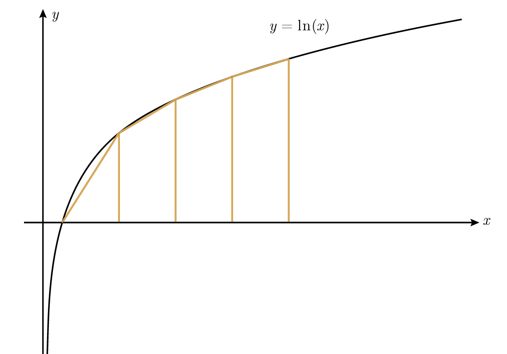
한편, ln x의 적분에 사다리꼴 공식(trapezoid rule)을 적용하면, 그림 9.2,
ln 1 = 0이므로, 양변에 (1/2) ln n을 더하면 마침내
양변에 지수(exponential)를 취해 로그를 풀면
여기서 C는 n과 무관한 어떤 상수입니다 (e에서 멀지 않은 값입니다). 적분을 사다리꼴 공식으로 근사하고 있기 때문입니다. 사다리꼴 근사의 오차는 n이 커질수록 점점 더 천천히 늘어나며 C는 그 극한값입니다. 이것이 스털링 공식의 첫 번째 형태입니다. 상수 C가 무한대에서 취하는 극한값을 유도하는 데 시간을 쓰지 않겠습니다. 그 값은 결국 2.5066… (e = 2.71828…)로 밝혀집니다. 이리하여 마침내 팩토리얼에 대한 익숙한 스털링 공식을 얻습니다:
다음 표는 스털링 근사로 구한 n!의 정확도를 보여 줍니다.
n Stirling True Stirling/True 1 0.92214 1 0.92214 2 1.91900 2 0.95950 3 5.83621 6 0.97270 4 23.50618 24 0.97942 5 118.01917 120 0.98349 6 710.07818 720 0.98622 7 4,980.3958 5,040 0.98817 8 39,902.3955 40,320 0.98964 9 359,536.87 362,880 0.99079 10 3,598,695.6 3,628,800 0.99170
주의할 점은 숫자가 점점 커질수록 비율은 1에 다가가지만 차이는 점점 더 커진다는 것입니다!
두 함수를 생각해 보면
n이 무한대로 갈 때 비율 f(n)/g(n)의 극한은 1입니다. 하지만 표에서 보듯이 그 차이는
n이 커질수록 점점 더 커집니다.
팩토리얼 함수를 모든 양의 실수로 확장할 필요가 있습니다. 이를 위해 적분 꼴의 감마 함수(gamma function)를 도입합니다.
이 적분은 모든 n > 0에 대해 수렴합니다. n > 1인 경우 다시 부분적분을 적용하는데, 이번에는 dv = e-x dx, u = xn-1로 둡니다. 두 극한에서 적분된 항은 0이 되어 다음과 같은 환원 공식(reduction formula)을 얻습니다.
여기서 Г (1) = 1입니다.
따라서 감마 함수는 양의 정수 n에서 (n - 1)! 값을 취합니다. 그리고 n > 0이면 항상 적분이 존재하므로, 감마 함수는 팩토리얼을 모든 양의 수로 자연스럽게 확장하는 방법을 제공합니다.
Γ(1/2)의 값이 필요합니다.
x = t2로 두면 dx = 2t dt가 되어 (마지막 단계에서는 대칭성을 이용하여)
이 적분을 평가할 때는 표준적인 요령을 사용합니다. 적분을 그 자신과 곱합니다. 하나는 x에 대해, 하나는 y에 대해서요.
x2 += y2 꼴은 극좌표(polar coordinates)를 암시합니다. 그래서 극좌표로 변환하면
각도 적분은 쉽고 지수함수 부분도 이제 쉽습니다. 마침내 우리는 다음을 얻습니다.
이제 n차원 구의 부피를 다루어 보겠습니다(원하시면 초구(hypersphere)라고도 합니다). 한 변의 길이가 x인 n차원 정육면체의 부피가 xn이라는 것은 명백합니다. 잠시만 생각해 보면, n차원 구의 부피 공식은 반드시 다음과 같은 꼴이어야 한다는 것을 믿게 될 것입니다.
여기서 Cn은 적절한 상수입니다. n = 2인 경우 그 상수는 π이고 n = 1인 경우에는 2입니다(생각하면 알 수 있습니다). 3차원에서는 C3 = 4π/3이 됩니다.
Γ(1/2)에서 썼던 것과 같은 요령에서 출발합니다. 단, 이번에는 각각 서로 다른 xi를 가진 적분 n개의 곱을 취합니다. 구의 부피를 생각해 보면 부피는 껍질들(shells)의 합임을 알 수 있습니다. 합의 각 요소는 껍질의 면적에 두께 dr를 곱한 부피입니다. 구의 경우 표면적 값은 구의 부피를 반지름 r에 대해 미분해서 얻을 수 있습니다. 이것은 다음을 의미합니다.
따라서 부피 요소들은
r2 = t로 두면, 다음을 얻습니다.
이로부터 다음을 얻습니다.
다음을 보는 것은 쉽습니다.
그리고 다음 표를 계산할 수 있습니다.
| 차원 n | 계수 Cn | |
|---|---|---|
| 1 | 2 | = 2.00000… |
| 2 | π | = 3.14159… |
| 3 | 4π/3 | = 4.18879… |
| 4 | π2/2 | = 4.93480… |
| 5 | 8π2/15 | = 5.26379… |
| 6 | π3/6 | = 5.16771… |
| 7 | 16π3/105 | = 4.72477… |
| 8 | π4/24 | = 4.05871… |
| 9 | 32π4/945 | = 3.29851… |
| 10 | π5/120 | = 2.55016… |
| 2k | πk/k! | → 0 |
이렇게 계수 Cn은 n = 5까지 증가하다가 그 후에는 0을 향해 감소하는 것을 볼 수 있습니다. 반지름이 1인 구의 경우, 이는 n이 커질수록 구의 부피가 0에 접근함을 의미합니다. 반지름이 r이라면 부피는 다음과 같으며, 편의상 n = 2k를 사용합니다(n이 커질수록 실제 수치가 매끄럽게 변하고, 홀수 차원은 계산이 더 지저분하기 때문입니다).
반지름 r이 아무리 크더라도, 차원 수 n을 늘리면 결국 부피가 임의로 작은 구가 만들어집니다.
다음으로 n차원 구의 표면 근처에 있는 부피의 상대적 비율을 살펴봅니다. 구의 반지름을 r, 껍질의 안쪽 반지름을 r(1 - ²)이라 합시다. 그러면 껍질의 상대 부피(relative volume)는
n이 크면 껍질이 (반지름에 비해) 아무리 얇아도 거의 모든 부피가 껍질 안에 있고 안쪽에는 거의 아무것도 없습니다. 한마디로 부피는 거의 다 표면에 있다고 말합니다. 3차원에서도 단위 구는 부피의 7/8이 표면으로부터 1/2 이내에 있습니다. n차원에서는 표면에서 반지름의 1/2 이내에 1 - 1/2n이 들어 있습니다.
이것은 설계에서 중요합니다. 미적분학 과목에서 최적화 문제를 풀면서 내린 직관과 달리, 거의 확실히 최적 설계는 표면에 있지 내부에 있지 않다는 뜻이기 때문입니다. 미적분 방법은 고차원 공간에서 최적점을 찾는 데 대체로 부적합합니다. 이는 전혀 이상한 일이 아닙니다. 일반적으로 최선의 설계는 매개변수 하나 또는 여럿을 극단으로 밀어붙이는 것입니다-당연히 그런 점은 설계 가능 영역의 표면에 있게 마련입니다!
다음으로 n차원 정육면체의 대각선을 살펴봅니다. 원점에서 점 (1, 1, …, 1)로 가는 벡터를 봅시다. 이 직선과 임의의 축이 이루는 각도의 코사인은 정의에 따라 축 방향의 성분(분명히 1)과 직선의 길이(√n)의 비율입니다. 따라서:
그러므로 n이 크면 대각선은 모든 좌표축과 거의 수직이 됩니다!
좌표가 (±1, ±1, …, ±1)인 점들을 쓰면 그러한 대각선이 2n개 있습니다. 그리고 그것들은 모두 좌표축들과 거의 수직입니다. 예를 들어 n = 10이면, 이런 거의 수직인 직선이 1,024개나 됩니다.
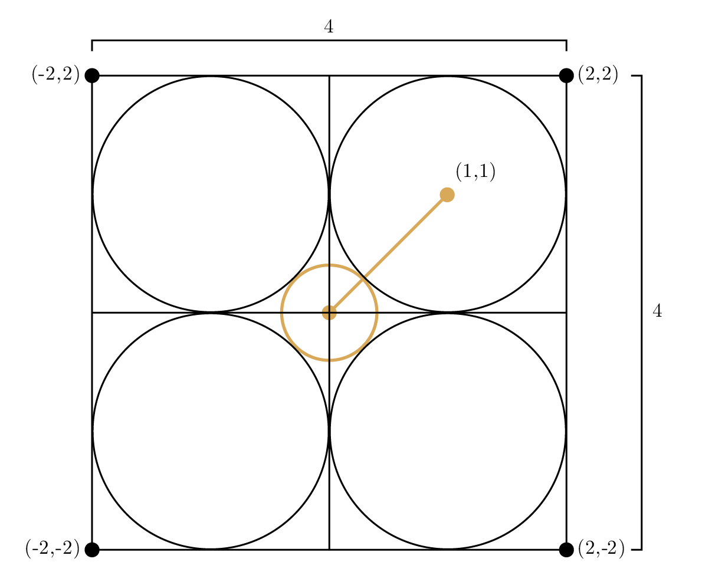
두 직선 사이의 각도가 필요합니다. 그것이 벡터 내적(스칼라곱, dot product)임을 기억하실지 모르지만 무슨 일이 벌어지는지 더 잘 이해되도록 다시 유도해 보겠습니다. (여담이지만 저는 중요한 상황에서 관련된 모든 기본 유도를 다시 훑어보는 것이 매우 가치 있음을 깨달았습니다. 그래야 무슨 일이 일어나고 있는지 확실한 감을 잡을 수 있기 때문입니다.) 두 점 x와 y를 그 대응 좌표 xi와 yi와 함께 잡습니다, 그림 9.3. 그러면 세 점 x, y, 원점이 이루는 평면에 코사인 법칙을 적용하여 다음을 얻습니다.
여기서 X와 Y는 점 x와 y로 가는 직선의 길이입니다. 한편, 쪽의 C는 각 방향의 좌표 차이를 이용해서 얻어집니다:
두 식을 비교하면 다음을 알 수 있습니다.
이제 이 공식을 원점에서 임의의 점들로 그린 두 직선에 적용합니다.
무작위로 취한 이 성분들의 내적은 역시 무작위적인 1과 −1이 되고 이것들을 n번 더하게 됩니다. 반면 각각의 길이는 다시 √n이므로(분모의 n에 주목하세요),
대수의 약법칙(weak law of large numbers)에 의해 이것은 n이 커질수록 거의 확실히 0에 접근합니다. 그런데 서로 다른 그러한 무작위 벡터가 2n개 있습니다. 그리고 어떤 하나의 고정된 벡터가 주어졌을 때, 이 2n개의 무작위 벡터 각각은 그것에 대해 거의 확실히 거의 수직입니다! n차원 공간은 참으로 방대합니다!
선형대수학과 다른 과목들에서 여러분은 서로 수직인 축들을 찾아낸 다음 모든 것을 그 좌표로 표현하는 법을 배웠습니다. 하지만 보십시오, n차원에서는 서로 수직인 n개의 좌표 방향을 찾은 다음에도, 그 찾은 방향들과 거의 수직인 방향이 2n개나 더 있습니다! 선형대수학의 이론과 실제는 상당히 다릅니다!
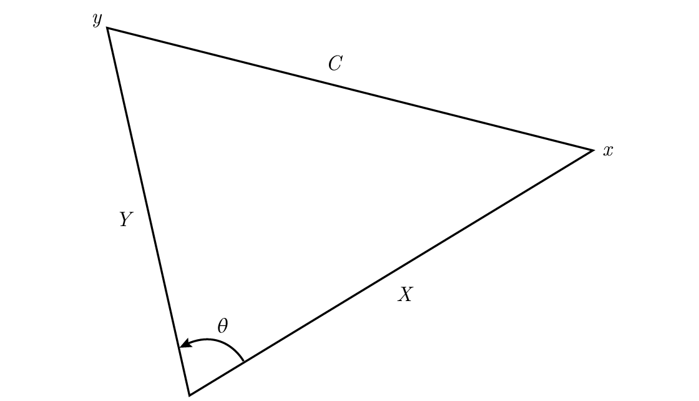
마지막으로, 고차원 공간에 대한 여러분의 직관이 그리 좋지 않다는 것을 한층 더 확신시키기 위해, 뒷장에서 필요할 또 하나의 역설을 제시하겠습니다. 4×4 정사각형에서 출발하여 그것을 네 개의 단위 정사각형들로 나누고 각각에 단위 원(반지름 1인 원)을 그립니다, 그림 9.4. 다음으로 정사각형의 중심을 중심으로, 네 원의 안쪽에 딱 닿는 반지름의 원을 그립니다. 그림 9.4에서 그 반지름은 분명히
이제 3차원으로 가면 4×4×4 정육면체가 있고 반지름 1인 구가 여덟 개 있습니다. 안쪽 구는 각 바깥 구와 구의 중심을 잇는 선을 따라 닿으며 그 반지름은
2차원에서보다 이것이 왜 더 커야 하는지 생각해 보십시오.
n차원으로 가면 4 × 4 × … × 4 정육면체가 있고 모서리마다 하나씩 2n개의 구가 있으며 각 구는 n개의 이웃 구에 닿습니다. 모든 구를 안쪽에서 닿고 있는 안쪽 구의 반지름은
이것을 주의 깊게 살펴보십시오! 확신하시나요? 확신하지 못한다면, 왜 그런가요? 논리에서 어느 지점에 이의를 제기하겠습니까?
그것이 옳다고 납득하게 되면, n = 10차원의 경우에 적용해 봅시다. 안쪽 구의 반지름은
10차원에서 안쪽 구는 바깥을 둘러싼 정육면체 밖으로 나갑니다! 그렇습니다, 구는 볼록합니다. 맞습니다, 1,024개의 빽빽이 채워진 구 각각의 안쪽에 닿습니다. 그럼에도 구는 정육면체 밖으로 나갑니다!
n차원 공간에 대한 여러분의 날것의 직관은 여기까지입니다. 하지만 기억하세요, 복잡한 물체의 설계는 대개 바로 그 n차원 공간에서 이루어집니다. 방금 제시한 것들에 대해 생각함으로써-그것들이 어떻게 참일 수 있는지, 아니 궁극적으로는 왜 반드시 참이어야 하는지 보이기 시작할 때까지-n차원 공간에 대한 더 나은 감각을 얻어 두는 편이 좋습니다. 그렇게 하지 않으면 다음에 복잡한 설계 문제에 부딪혔을 때 곤경에 처할 것입니다. 아마 여러분은 각 차원의 반지름들을 직접 계산해 보고 대각선과 축 사이의 각도로 돌아가 그 일이 어떻게 일어날 수 있는지 확인해 보는 편이 좋을 것입니다.
이 시점에서 조심스럽게 짚어 두어야 할 것은, 저는 지금까지 이 모든 것을 고전 유클리드 공간에서 피타고라스 거리를 사용해 다루었다는 점입니다. 피타고라스 거리에서는 좌표 차이의 제곱의 합이 두 점 사이 거리의 제곱입니다. 수학자들은 이 거리를 L2라고 부릅니다.
L1 공간은 제곱의 합이 아니라 거리의 합을 사용합니다. 격자 모양의 직사각형 도로망을 가진 도시를 여행할 때 걸어야 하는 것과 비슷합니다. 두 지점 사이에서 얼마나 가야 하는지를 알려 주는 것은 두 위치 사이의 차이의 합입니다. 컴퓨터 분야에서는 나중 장에서 이유가 밝혀질 해밍 거리(Hamming distance)라고 자주 부릅니다. 이 공간에서 2차원의 원은 꼭지점으로 서 있는 정사각형처럼 보입니다, 그림 9.5. 3차원에서는 꼭지점으로 서 있는 정육면체처럼 보입니다, 등등. 이제 위의 원 역설에서 안쪽 구가 정육면체 밖으로 나갈 수 있는 이유를 더 잘 볼 수 있을 것입니다.
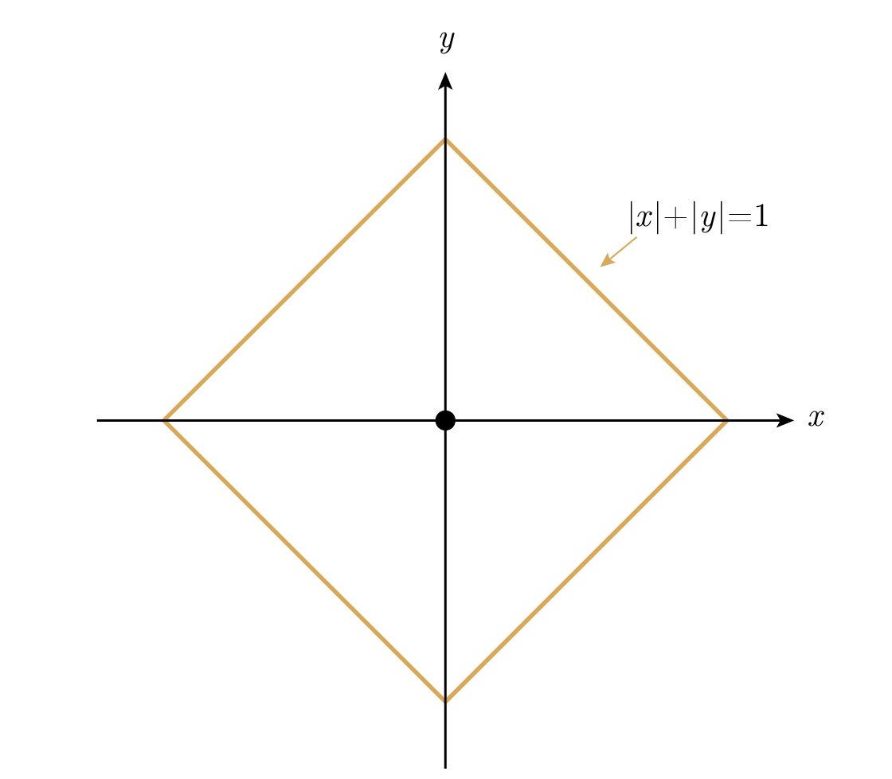
그림 9.6-L∞에서의 원 (Circle in L∞)
흔히 쓰이는 세 번째 메트릭(metric, 거리 함수를 뜻합니다)이 하나 있는데, L∞ 또는 체비쇼프 거리(Chebyshev distance)라고 부릅니다. 여기서 거리는 다른 차이들과 무관하게, 최대 좌표 차이입니다, 그림 9.6. 이 공간에서 원은 정사각형이고 3차원 구는 정육면체입니다. 그리고 이 경우, 앞서 본 원 역설의 안쪽 원이 모든 차원에서 반지름 0을 가진다는 것을 알 수 있습니다.
이들은 모두 메트릭, 즉 거리를 재는 척도의 예입니다. 두 점 x와 y 사이의 메트릭 D(x, y)가 만족하는 관례적인 조건들은 다음과 같습니다:
- D(x, y) ≥ 0 (비음성, non-negative),
- D(x, y) = 0일 필요충분조건은 x = y (동일성, identity),
- D(x, y) = D(y, x) (대칭성, symmetry), 그리고
- D(x, y) + D(y, z) ≥ D(x, z) (삼각부등식, triangle inequality).
세 메트릭 L∞, L2, L1(각각 체비쇼프, 피타고라스, 해밍)이 모두 이 조건들을 만족하는지 확인하는 것은 여러분에게 맡기겠습니다.
사실 복잡한 설계에서는 좌표마다 세 메트릭을 마음대로 섞어 쓸 수 있습니다. 그래서 설계 공간은 위에서 그린 것처럼 깔끔하지 않고 온갖 조각이 뒤섞인 난장판입니다. L2 메트릭은 분명히 최소제곱(least squares)과 연결되어 있고 나머지 둘 L∞와 L1은 비교에 더 가깝습니다. 현실에서 비교를 할 때, 여러분은 대체로 어떤 한 특징에서의 최대 차이 L∞ 하나만으로도 두 대상을 구별하기에 충분하다고 보거나, 때로는 비트 문자열의 경우처럼 차이의 개수가 중요해서 제곱의 합은 들어가지 않으므로 L1 거리를 사용합니다. 예를 들어 AI에서의 패턴 식별의 경우 점점 더 그렇습니다.
안타깝게도 위의 말은 모두 사실이고 여러분에게 그것을 지적해 주는 일은 드뭅니다. 저는 그것에 대해 아무것도 들은 적이 없습니다! 뒷장에서는 여기서 얻은 결과들을 많이 사용하게 될 것입니다. 하지만 전반적으로, 이렇게 한 번 겪고 나면 여러분은 복잡한 설계와, 설계가 일어나는 공간을 주의 깊게 살펴보는 일에 대해 예전보다 더 잘 준비되어 있을 것입니다, 제가 여기서 시도한 것처럼요. 난장판이긴 하지만, 근본적으로 설계는 바로 그곳에서 일어나며, 받아들일 수 있는 설계를 찾는 탐색도 그곳에서 해야 합니다.
L1과 L∞는 익숙하지 않으니, 세 메트릭에 대한 설명을 조금 더 늘려 보겠습니다. L2는 물리적·기하학적 상황에서 쓰기에 자연스러운 거리 함수입니다. 물리적 측정으로부터의 데이터 축소(data reduction)까지도 말이죠. 그래서 물리학 곳곳에서 L2, 즉 최소제곱을 발견하게 됩니다. 하지만 다루는 주제가 지적인 판단이라면, 일반적으로 다른 두 거리 함수가 더 적합합니다. 이런 사용은 서서히 늘어나고 있습니다. 다만 그럼에도 명백히 L2의 척도인 카이제곱 검정(chi-squared test)이, 다른 적절한 검정이 쓰여야 할 자리에서 여전히 널리 쓰이고 있는 것을 볼 수 있습니다.
10 부호 이론-I
컴퓨터와 그 작동 방식까지 살펴봤으니, 이제 정보의 표현이라는 문제로 넘어가죠-처리하고 싶은 정보를 어떻게 표현할까요? 기억하세요. 기호가 지닌 의미는 그것을 어떻게 처리하느냐에 따라 달라질 따름입니다. 기계가 쓰는 비트 그 자체에는 본질적인 의미가 없어요. 제4장 소프트웨어의 역사에서 언급했던 인공 언어에서, 명령어를 나누는 방식은 모든 코드 명령어에서 거의 동일했고 이는 대부분의 언어에서 마찬가지입니다. 어떤 명령어의 “의미”도 해당 서브루틴에 의해 정의되죠.
정보 표현의 문제를 단순하게 만들기 위해, 지금은 여기에서 저기로 정보를 전송하는 문제만 다뤄보겠습니다. 이것은 지금에서 그때로의 전송, 즉 저장과 정확히 똑같은 일입니다. 시간을 통한 전송이든 공간을 통한 전송이든 같은 문제입니다. 이 체계의 표준 모델은 그림 10.1에 나와 있습니다.
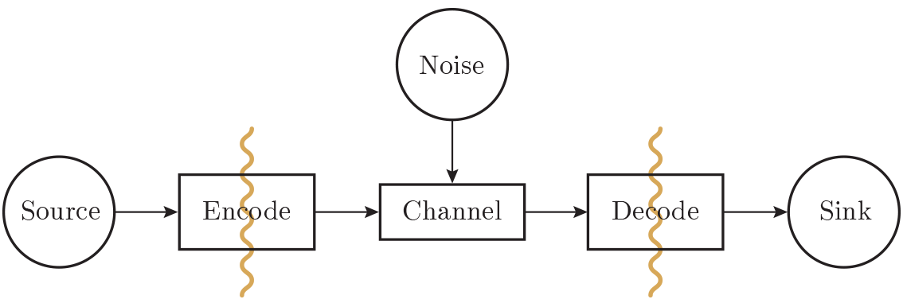
그림 10.1의 왼쪽 끝에서부터 시작하죠. 여기에는 정보의 소스(source, 원천)가 있습니다. 우리는 소스가 무엇인지 설명하지 않습니다. 그것이 알파벳 기호들의 나열이든, 숫자든, 수학 공식이든, 악보의 음표든, 오늘날 무용 동작을 나타내는 데 쓰이는 기호든-소스가 무엇이든, 기호와 결부된 “의미”가 무엇이든 그 자체는 이론에 들어가지 않습니다. 우리는 정보의 소스가 있다고만 가정할 뿐입니다. 그렇게만, 더 이상 하지 않고도, 아주 널리 적용될 수 있는 강력하고 일반적인 이론이 생깁니다. 넓은 적용 범위를 만들어주는 것은 바로 세부 사항으로부터의 추상화입니다.
1940년대 후반에 클로드 섀넌이 정보 이론(information theory)을 만들어냈을 때, 사람들은 그가 커뮤니케이션 이론이라고 불러야 한다고 생각하는 게 보편적이었습니다. 하지만 그는 “정보”라는 단어를 고집했죠. 그리고 바로 그 단어가 이 이론에서 지속적인 관심의 원천이자 실망의 원천이 되어 왔습니다. 사람들은 “정보”에 관한 이론을 원하지만 그것은 그저 기호 나열(strings of symbols)에 관한 이론일 뿐입니다. 다시 말해, 우리는 그런 소스가 존재한다고 가정할 뿐이며 그것을 전송을 위해 부호화(encode, 코딩)할 것입니다.
부호화기는 두 부분으로 나뉩니다. 전반부는 소스 부호화(source encoding)라고 불리며 이름이 말해주듯 소스에 맞게 조정됩니다. 서로 다른 소스는 서로 다른 종류의 부호화를 가질 수 있어요.
부호화 과정의 후반부는 채널 부호화(channel encoding)라고 불리며 부호화된 기호를 보낼 채널(channel, 전송로)에 맞춰져 있습니다. 따라서 부호화 과정의 후반부는 채널에 맞춰 조정되죠. 이렇게 공통 인터페이스(common interface)를 두면, 다양한 소스를 먼저 공통 인터페이스로 부호화한 다음, 그 메시지를 사용 중인 특정 채널에 맞추기 위해 다시 한번 더 부호화할 수 있습니다.
이어서 그림 10.1의 오른쪽으로 가보면, 채널에는 “무작위 잡음(random noise)이 더해진다”고 가정합니다. 체계 안의 모든 잡음은 여기에 집약되어 있습니다. 부호화기가 들어오는 기호를 오차 없이 유일하게 인식할 수 있고 복호기(decoder, 복호화기)도 마찬가지로 오차 없이 기능한다고 가정합니다. 이것들은 이상화(idealization)이지만 여러 실용적 목적에서는 현실에 꽤 가깝습니다.
다음으로, 복호화는 두 단계로 이루어집니다. 채널에서 표준 형식으로, 그리고 표준 형식에서 소스 부호로 말이죠. 마지막으로 그것은 싱크(sink, 수신처), 즉 목적지로 보내집니다. 여기서도 우리는 싱크가 그것으로 무엇을 하는지 묻지 않습니다.
앞서 말했듯 이 체계는 전송을 닮았습니다. 예를 들어 당신에게 보내는 나의 전화 메시지, 라디오나 TV 프로그램, 그리고 컴퓨터 레지스터의 어떤 숫자를 다른 곳으로 보내는 것 같은 것들 말이죠. 다시 기억하세요. 공간을 통한 전송은 시간을 통한 전송, 즉 저장과 같습니다. 당신이 정보를 갖고 있고 나중에 그걸 원한다면, 그것을 저장용으로 부호화해서 저장합니다. 나중에 필요할 때 복호화해서 꺼내 쓰죠. 부호화 체계 중에는 항등 부호화(identity, 표현을 바꾸지 않는 것)도 있습니다.
이런 종류의 이론과 물리학에서의 일반적인 이론 사이의 근본적인 차이는, 처음부터 “잡음”이 있다고 가정한다는 점입니다. 어떤 장비에서든 오류가 발생하기 마련이니까요. 양자역학에서조차 잡음은 불확정성 원리라는 형태로 나중 단계에 나타나지, 처음의 가정으로 나타나지 않습니다. 그리고 어쨌든 정보 이론의 “잡음”은 양자역학의 불확정성과 전혀 같은 것이 아닙니다.
우리는 단지 편의를 위해, 체계 안에서 표현에 이진 형태(binary form)를 쓴다고 가정하겠습니다. 다른 형태들도 비슷하게 다룰 수 있지만 그런 일반성을 얻기 위해 표기법을 더 늘릴 가치는 없습니다.
우리가 쓰는 부호화된 기호가 가변 길이(variable length)라고 가정하고 시작하죠. 흔한 글자는 짧고 드문 글자는 긴, 점과 선으로 된 고전적인 모스 부호와 비슷하게요. 이것은 부호에 효율성을 만들어내지만 주목할 점은 모스 부호가 이진 부호가 아니라 삼진 부호(ternary code)라는 것입니다. 점과 선뿐 아니라 공백(spaces)도 있으니까요. 모든 부호 기호가 같은 길이를 가진다면 그걸 블록 부호(block code)라고 부르겠습니다.
우리가 원하는 첫 번째 명백한 속성은, 잡음이 더해지지 않았을 때 메시지를 유일하게 복호화할 수 있는 능력입니다-적어도 바람직한 속성처럼 보이긴 하죠. 다만 어떤 상황에서는 이걸 조금 희생해도 될 수도 있습니다. 전송되는 것은 기호들의 흐름이고 수신자에게는 0과 1의 나열로 보입니다. 인접한 두 기호를 2차 확장(second extension), 세 개를 3차 확장이라고 부르고 일반적으로 n개의 기호를 보내면 수신자는 기본 부호 기호의 n차 확장을 보게 됩니다. n을 모른 채, 수신자인 당신은 그 흐름을 번역할 수 있는 단위들로 쪼개야 합니다. 그리고 앞서 말했듯 당신은 수신 쪽에서, 다시 말해 당신은, 원래의 메시지-송신 쪽에 있는 내가 당신에게 보낸 바로 그 메시지-를 복원하기 위해 그 흐름의 분해를 유일하게 만들어내기를 원합니다.
예시를 들기 위해 나는 부호화될 아주 작은 기호 알파벳을 사용하겠습니다. 보통 알파벳은 훨씬 더 큽니다. 전형적으로 자연 언어의 알파벳은 대문자와 소문자, 숫자, 그리고 수많은 문장 부호까지 더해 16에서 36개 글자에 이릅니다. 예를 들어 아스키(ascii)는 그 알파벳에 128 = 27개의 기호를 갖고 있죠.
네 개의 기호 s1, s2, s3, s4로 된 특별한 부호 하나를 살펴봅시다.
만약 당신이
를 수신한다면 어찌하시겠어요? 그것은 s1s1s4일까요, 아니면 s2s4일까요? 당신은 알 수 없습니다. 이 부호는 유일하게 복호화할 수 없으므로, 만족스럽지 못한 부호입니다.
반면에
라는 부호는 유일하게 복호화할 수 있습니다. 무작위 문자열 하나를 골라 그것을 어떻게 복호화할지 살펴봅시다. 당신은 그림 10.2에 보이는 형태의 복호 트리(decoding tree)를 만들어낼 것입니다. 그런데 그 문자열은
다음처럼 기호들로 쪼갤 수 있습니다.
그리고 이렇게 쪼개는 방법은, 복호 트리를 다음 규칙에 따라 따라가기만 하면 됩니다.
가지 지점(노드, node)에 올 때마다 다음 기호를 읽고 트리의 잎(leaf)에 도달하면 대응하는 기호를 내보낸 뒤 시작 지점으로 돌아간다.
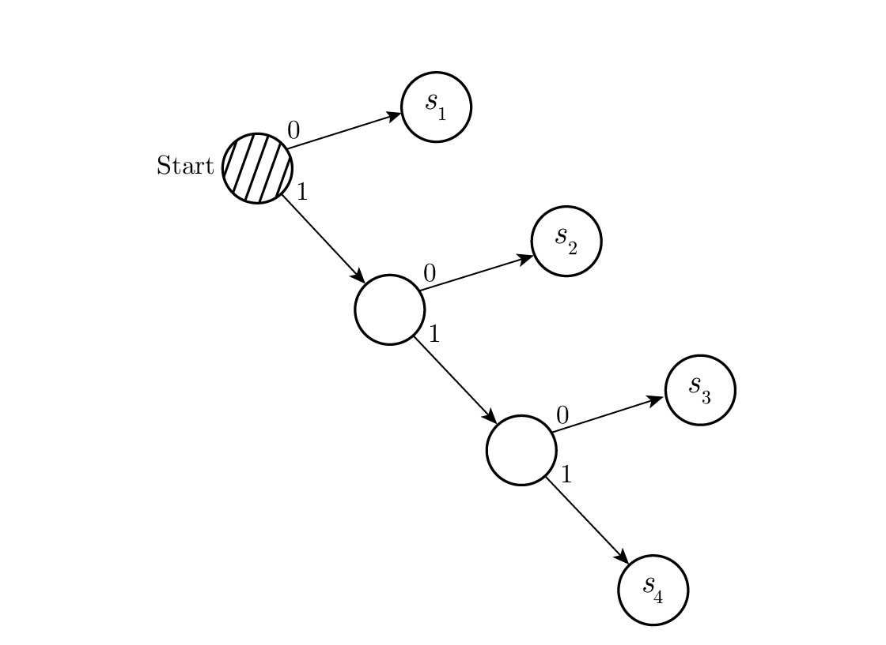
이 트리가 존재할 수 있는 이유는 어떤 기호도 다른 기호의 접두부(prefix, 앞부분)가 아니기 때문입니다. 그래서 당신은 현재 기호의 끝에 언제 도달했는지 항상 알 수 있죠.
여기서 몇 가지를 짚고 넘어갑시다. 첫째, 복호화는 각 숫자를 단 한 번만 검사하는 단순한 과정입니다. 둘째, 실제로는 보통 복호화 과정을 벗어나는 기호 하나를 넣는데, 그것은 메시지 끝에 필요합니다. 이탈 기호(escape symbol)를 마련하지 못하는 것은 부호 설계에서 흔한 오류입니다. 물론 복호화 모드를 벗어날 일이 전혀 없을 것이라 예상한다면, 이탈 기호는 필요 없습니다.
다음 주제는 즉시 복호화 가능한 부호(instantaneously decodable codes)입니다. 이것이 무엇인지 보려면, 위의 부호에서 숫자를 앞뒤로 뒤집어 봅시다.
이제 011111…111을 수신하는 경우를 생각해 보죠. 이것을 복호화할 수 있는 유일한 방법은 제일 끝에서 시작해 세 개씩 묶으며 첫 번째 0과 짝을 이루게 남은 1이 몇 개인지 알아내는 것입니다. 그래야만 비로소 첫 번째 기호를 복호화할 수 있죠. 그래요, 그것은 유일하게 복호화할 수 있습니다. 하지만 즉시는 아닙니다! 복호화 과정을 시작하기 전에 메시지의 끝에 도달할 때까지 기다려야 합니다! (맥밀런의 정리, McMillan’s theorem에 따르면) 즉시 복호화 가능함은 실용적으로 아무 대가도 치르지 않는 것으로 밝혀질 것입니다. 따라서 우리는 즉시 유일하게 복호화 가능한 부호만을 고수하겠습니다.
이제 같은 기호 si를 부호화하는 두 가지 예를 살펴봅시다. 첫 번째 부호화는
인데, 그 복호 트리는 그림 10.3에 보입니다.
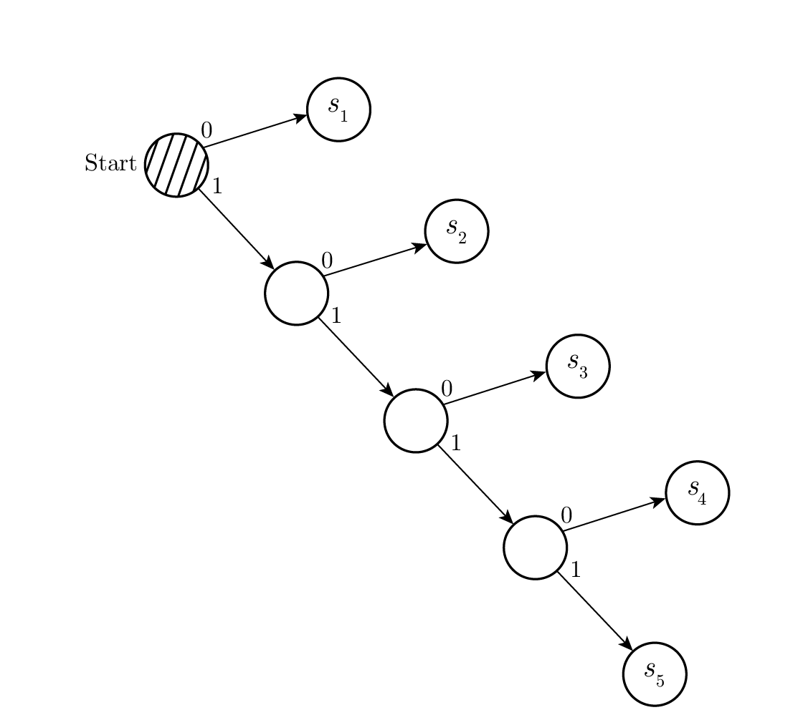
두 번째 부호화는 같은 소스를 사용하되,
의 트리를 갖고 있습니다. 그 트리는 그림 10.4에 보이죠.
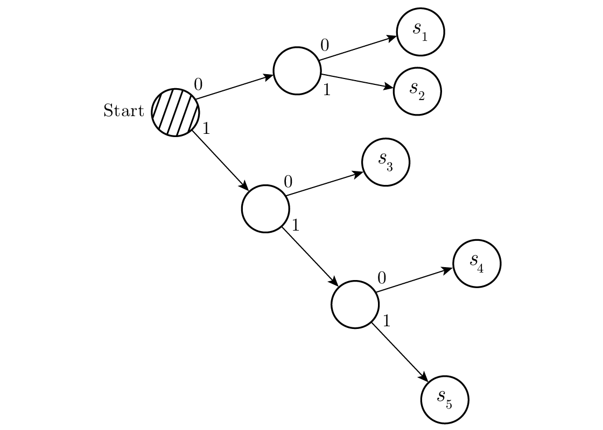
부호의 “좋음을” 재는 가장 명백한 척도는 어떤 메시지 앙상블(ensemble, 집합)에 대한 평균 길이입니다. 이를 위해서는 각 기호의 부호 길이 li에 그것이 발생할 대응 확률 pi를 곱하고 그 곱들을 부호 전체에 걸쳐 더해야 합니다. 따라서 q개의 기호로 된 알파벳에 대한 평균 부호 길이 L의 공식은
입니다. 여기서 pi는 기호 si의 확률이고 li는 부호화된 기호의 대응 길이입니다. 효율적인 부호의 경우 이 값 L은 가능한 한 작아야 합니다. 만약 p1 = 1/2, p2 = 1/4, p3 = 1/8, p4 = 1/16, p5 = 1/16이라면, 부호 #1은
을, 부호 #2는
을 얻게 됩니다. 따라서 주어진 확률들은 첫 번째 부호를 지지하겠네요.
만약 대부분의 부호어들이 거의 같은 확률로 발생한다면, 두 번째 부호화가 첫 번째 부호화보다 더 작은 평균 부호 길이를 갖게 됩니다. 모든 i에 대해 pi = 1/5이라 합시다. 그러면 부호 #1은
인 반면 부호 #2는
을 가집니다. 따라서 두 번째 부호가 유리하죠. 이와 같이 “좋은” 부호의 설계는 분명히 발생하는 기호들의 빈도에 의존해야 합니다.
이제 크래프트 부등식(Kraft inequality)으로 넘어갑시다. 이것은 부호의 기호 길이 li에 한계를 줍니다. 밑이 2일 때 크래프트 부등식은 다음과 같습니다.
자세히 들여다보면, 이 부등식은 너무 많은 짧은 기호가 있어선 안 된다는 말입니다. 그렇지 않으면 그 합이 너무 커지게 되니까요.
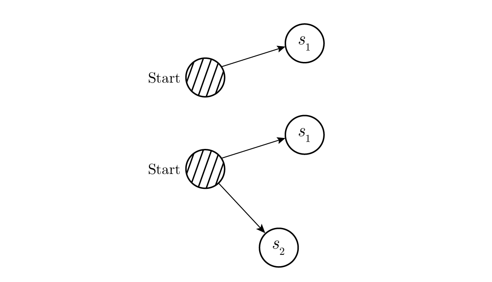
어떤 즉시 유일하게 복호화 가능한 부호에 대해 크래프트 부등식을 증명하기 위해, 우리는 그냥 복호 트리를 그려보면 됩니다. 물론 트리는 존재합니다. 그리고 수학적 귀납법(mathematical induction)을 적용하죠. 그림 10.5에 보이듯 트리가 잎을 한두 개 갖고 있다면, 그 부등식이 참임은 의심할 여지가 없습니다. 다음으로, 잎이 두 개보다 많다면 우리는 길이 m의 트리들(귀납 단계를 위해)을 두 개의 트리로 분해하고 귀납 가정에 따라 그 부등식이 길이 m - 1 이하의 각 가지에 적용된다고 가정합니다. 귀납법에 따라 부등식이 각 가지에 적용되어 그들의 합에 K’와 K”가 주어집니다. 이제 두 트리를 합칠 때 각 길이가 1씩 늘어나므로, 합의 각 항은 분모에 2라는 인자를 하나 더 얻게 되어 다음을 얻습니다.
그리고 정리가 증명됩니다.
크래프트 부등식은, 유일하게 복호화할 수 있기만 하면, 비-즉시 부호(non-instantaneous codes)에도 적용됩니다.
다음으로 맥밀런의 정리 증명을 생각해 보죠. 그 증명은 어떤 수 K > 1에 대해서도, n을 충분히 크게 하면 어떤 n차 거듭제곱이 n의 어떤 선형 함수보다 커진다는 사실에 의존합니다. 우리는 크래프트 부등식의 n차 거듭제곱으로 시작해서(그것은 n차 확장을 줍니다) 그 합을 전개합니다.
여기서 Nk는 길이가 k인 기호의 개수이고 그 합은 기호들의 n차 확장의 최소 길이인 n에서 시작해 최대 길이 nl에서 끝납니다. 여기서 l은 어떤 한 부호 기호의 최대 길이입니다. 하지만 유일한 복호화 가능성으로부터 Nk ≤ 2k여야 합니다. 그 합은 다음과 같이 됩니다.
만약 K가 1보다 크다면, 그 부등식이 거짓이 되게 할 만큼 아주 큰 n을 찾을 수 있을 것입니다. 따라서 K ≤ 1임을 얻게 되고 맥밀런의 정리가 증명됩니다.
이제 우리가 보여주기로 약속했듯, 즉시 복호화 가능함이 아무 대가도 치르지 않음을 알게 되었으니, 우리는 그것을 고수하고 그저 유일하게 복호화 가능하기만 한 부호들은 무시하겠습니다-그것들의 일반성은 우리에게 아무 이득도 주지 않죠.
크래프트 부등식을 예시할 예를 몇 가지 들어보죠. 길이가 1, 3, 3, 3인 유일하게 복호화 가능한 부호가 존재할 수 있을까요? 네, 그럴 수 있습니다. 크래프트 합을 계산해 보면
길이가 1, 2, 2, 3인 경우는 어떨까요? 역시 계산해 보면
따라서 그런 부호는 없습니다! 짧은 길이가 너무 많네요.
쉼표 부호(comma codes)는 각 기호가 0 하나가 뒤따르는 1들의 나열이고 마지막 기호만 1들로만 이루어진 부호입니다. 특별한 경우로 다음을 들 수 있죠.
크래프트 합은
이고 우리는 조건을 정확히 맞췄습니다. 일반적인 쉼표 부호가 크래프트 부등식에 정확한 등호로 부합함은 쉽게 알 수 있습니다.
크래프트 합이 1보다 작다면 신호 전송 용량이 남는다는 뜻입니다. 다른 기호를 추가하거나 기존 기호 중 하나를 짧게 만들 수 있으니까요. 그러면 평균 부호 길이도 더 작아지겠죠.
주의할 점은, 크래프트 부등식이 충족된다고 해서 그 부호가 유일하게 복호화 가능하다는 뜻이 아니라는 것입니다. 정확히는, 그런 기호 길이들을 가진 유일하게 복호화 가능한 부호가 존재한다는 뜻일 뿐입니다. 각각 올바른 길이 li(비트 단위)를 가진 이진수를 숫자 순서대로 배정하면, 유일하게 복호화 가능한 부호를 찾아낼 수 있습니다. 예를 들어 길이 2, 2, 3, 3, 4, 4, 4, 4가 주어졌다면, 크래프트 부등식에 대해 다음을 얻습니다.
따라서 즉시 복호화 가능한 부호가 존재할 수 있습니다. 이진 소수점을 왼쪽에 둔다고 상상하며 수치 크기가 커지는 순서대로 기호를 고르면 다음과 같습니다. 그리고 대응하는 길이 li를 주의 깊게 관찰하세요.
이 즈음에서, 우리가 아이디어를 소통할 때 실제로 어떻게 하는지 지적할 필요를 느낍니다. 그래서 지금 내 머리 속의 어떤 아이디어를 당신의 머리 속으로 옮기고 싶군요. 나는 어떤 단어들을 내뱉고 당신은 그로부터 아이디어를 얻기로 되어 있습니다. 하지만 당신이 나중에 이 아이디어를 친구에게 전하려 하면, 거의 확실히 다른 단어들을 내뱉을 것입니다. 실제로 보면, “의미”는 내가 쓰는 특정 단어들에 담겨 있지 않습니다. 당신은 같은 아이디어를 소통하기 위해 아마 다른 단어들을 쓰게 될 테니까요. 서로 다른 단어들이 같은 “정보”를 전달할 수 있는 것으로 보입니다. 그리고 만약 당신이 메시지를 이해하지 못했다고 말한다면, 보통 소스가 두 번째, 심지어 세 번째로 아이디어를 전할 때 다른 단어들을 사용합니다. 이런 의미에서도 “의미”는 실제로 내가 쓰는 단어들에 담겨 있지 않습니다. 오히려 당신이 내 단어들을 당신 머리 속의 ’내 말에 대한 당신의 아이디어’로 번역할 때 많은 주변 정보를 보충합니다.
우리는 수신 쪽에 있는 사람에 맞게 쓰는 단어를 “맞추는” 법을 배웠습니다. 우리는 부분적으로는 채널 잡음이 무엇이라고 생각하는지에 따라 단어를 고릅니다. 하지만 명확히 그것은 내가 위에서 쓰고 있는 모델과는 맞지 않습니다. 복호화 과정에도 꽤 상당한 잡음이 있기 때문이라는, 말하자면, 점이 있죠. 더 높은 관리 직위에 있는 사람의 “말하는 내용”을 듣지 못하고, 그저 자기들이 듣고 싶어 하는 것만 듣는 수신자들의 이런 무능력은, 물론, 모든 큰 조직에서 심각한 문제이고, 당신이 조직의 꼭대기로 올라갈수록 각별히 인식해야 할 것입니다. 그래서 우리가 제시한 형식적인 이론에서의 정보 표현은 우리가 살아가는 삶을 부분적으로만 반영합니다. 하지만 그것은 컴퓨터 사용이라는 공식적 경계 바깥에서도 상당한 관련성을 보여주며 그 경계 안에서는 매우 잘 적용되고요.
11 부호 이론-II
이전 장에서 두 가지가 분명해졌을 것이다. 첫째, 우리는 보내는 메시지의 평균 길이 L을 최대한 작게 만들고 싶다 (설비 사용을 아끼기 위해서다). 둘째, 그것은 통계적 이론이어야 한다. 왜냐하면 우리는 앞으로 보낼 메시지를 미리 알 수는 없지만 과거의 메시지를 사용하고 미래는 아마 과거와 비슷할 것이라는 가정을 더하면 통계의 일부는 알 수 있기 때문이다. 여기서 다룰 수 있는 가장 단순한 이론을 위해서는, 메시지 안에 각 기호가 나타날 확률이 필요하다. 이 확률을 어떻게 구할지는 이론의 일부가 아니라, 과거의 경험을 살펴보거나, 지금 설계 중인 시스템이 미래에 어떻게 쓰일지 상상력을 동원해 추측해서 얻을 수 있다.
그러므로 우리는 주어진 입력 기호들 si와 그 확률 pi에 대해, 순간적으로 복호 가능한(instantaneously decodable) 부호를 원한다. 어떤 길이 li를 배정해야 (크래프트 부등식(Kraft inequality)을 반드시 따라야 한다는 점을 인식하면서) 평균 부호 길이를 최소로 만들 수 있을까? 허프만이 이 부호 설계 문제를 풀었다.
허프만은 먼저 최소 길이 부호에는 다음의 연쇄 부등식이 반드시 성립해야 한다는 것을 보였다. pi가 내림차순이면, li는 오름차순이어야 한다:
만약 pi가 이 순서인데 li의 짝 중 적어도 하나가 순서대로가 아니라고 가정해 보자. 순서가 맞지 않는 두 기호에 붙어 있는 부호를 서로 바꾸는 효과를 생각해 보자. 바꾸기 전에는 두 항이 평균 부호 길이 L에 다음과 같은 만큼 기여하고 있었고,
바꾼 후에는 그 두 항이 다음과 같을 것이다.
합 L의 다른 모든 항들은 그대로다. 그 차이는 다음과 같이 쓸 수 있다.
이 두 인자 중 하나는 음수라고 가정했으므로, 두 기호를 서로 바꾸면 평균 부호 길이 L이 감소하는 것을 관찰할 수 있다. 따라서 최소 길이 부호에는 두 연쇄 부등식이 성립해야 한다.
다음으로 허프만은 순간 복호 가능한 부호는 결정 트리(decision tree)를 가지며 모든 결정 노드는 두 개의 출구를 가져야 한다는 점을 관찰했다. 출구가 하나뿐이면 낭비이기 때문이다. 따라서 같은 길이를 가진 가장 긴 기호가 두 개 존재한다.
허프만 부호화를 설명하기 위해 고전적인 예를 써 보자. p(s1) = 0.4, p(s2) = 0.2, p(s3) = 0.2, p(s4) = 0.1, p(s5) = 0.1이라고 하자. 이것을 그림 11.1에 나타내었다. 그런 다음 허프만은 위의 논의에 근거해 다음과 같이 주장했다. 가장 빈도가 낮은 두 기호 (반드시 같은 길이를 가진다)를, 공통 비트를 마지막 비트까지 유지하되 마지막 비트는 떼어버리고 합쳐진 확률을 가진 하나의 기호로 병합함으로써, 부호 기호를 하나 줄일 수 있다. 이 과정을 거듭 반복하면 결국 기호가 단 두 개뿐인 체계로 내려가게 되는데, 그 체계에는 부호 표현을 배정하는 방법을 이미 알고 있다. 즉 한 기호에는 0을, 다른 기호에는 1을 배정하면 된다.
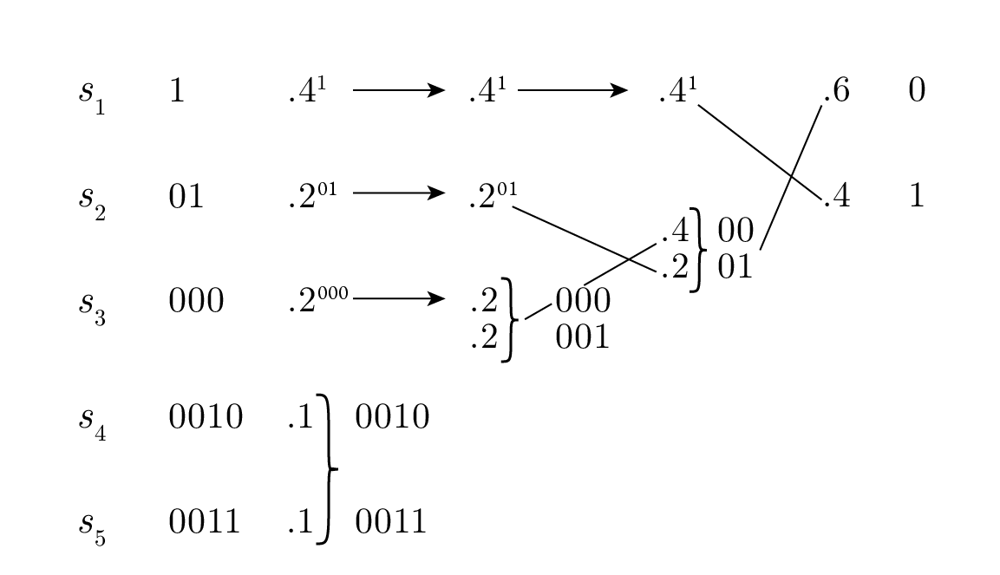
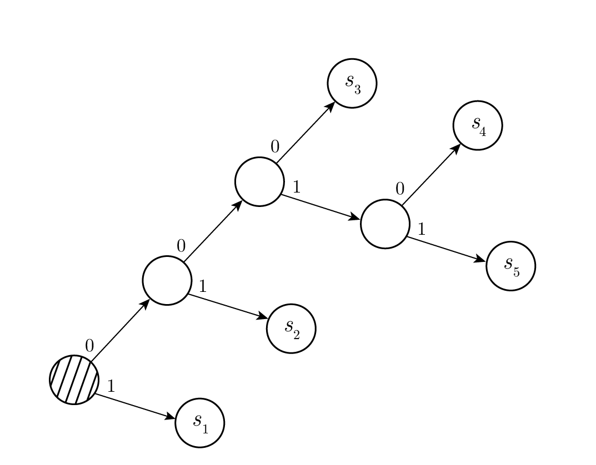
이제 병합 단계를 되돌려 역방향으로 진행하려면, 각 단계에서 두 기호의 병합으로 생긴 기호를 다시 분리해야 한다. 앞의 비트들은 그대로 유지하면서 한 기호에는 0을, 다른 기호에는 1을 더해 주는 식이다. 이렇게 하면 최소 L 부호에 도달한다. 그림 11.1을 다시 보라. 만약 더 작은 길이 L’을 가진 다른 부호가 존재한다면, 평균 부호 길이를 일정한 양만큼 바꾸는 정방향 단계들을 밟아 나가 결국 평균 부호 길이가 1보다 작은 두 기호에 도달하리라는 것인데, 그것은 불가능하다. 따라서 허프만 부호화는 최소 길이의 부호를 준다. 해당하는 복호 트리는 그림 11.2를 보라.
그 부호는 유일하지 않다. 우선, 되돌아가는 과정의 각 단계에서 어느 기호에 0을 줄지 1을 줄지는 임의적이다. 둘째, 어떤 단계에서 확률이 같은 두 기호가 생기면 어느 것을 위에 올릴지는 무관하다. 이 때문에 때로는 매우 다르게 보이지만 평균 부호 길이는 같은 부호들이 생길 수 있다.
병합된 항들을 최대한 높이 배치하면 그림 11.3을 얻게 되고 그에 대응하는 복호 트리는 그림 11.4이다. 두 부호의 평균 길이는 같지만 부호와 복호 트리는 서로 다르다. 첫 번째는 “길쭉하고” 두 번째는 “무성하고(우거지고)”, 두 번째가 첫 번째보다 변동성이 더 작다.
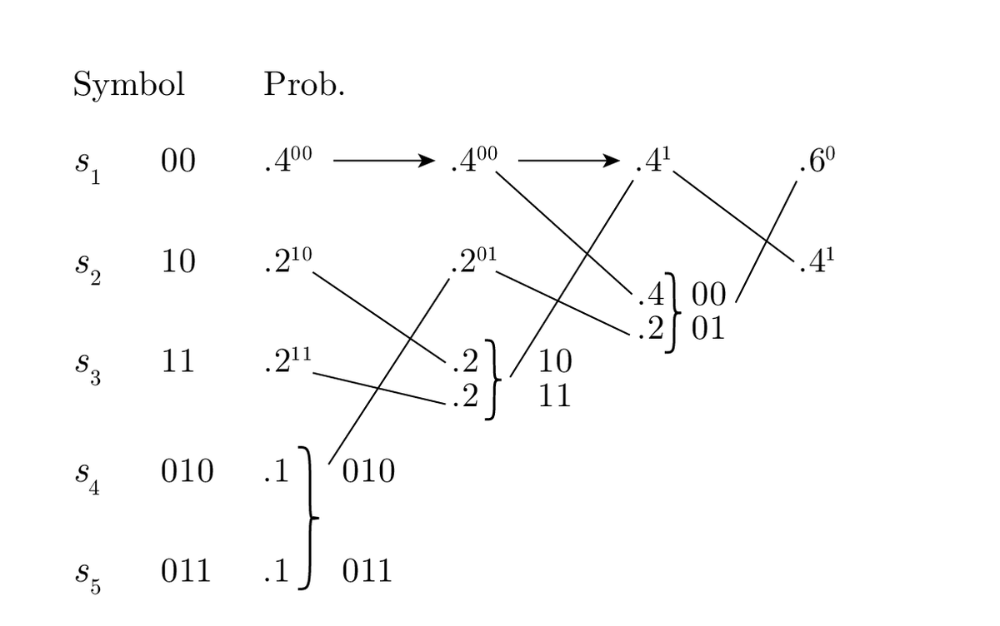
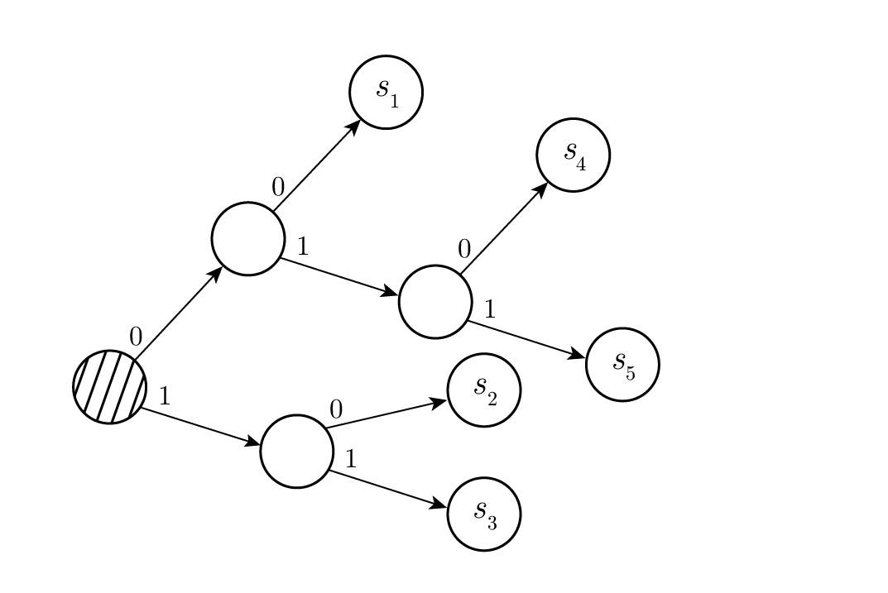
이제 두 번째 예를 하나 더 풀어 보겠다. 허프만 부호화가 어떻게 작동하는지 확실히 알게 하려는 것이다. 부호 체계를 설계할 때 최대한 짧은 평균 부호 길이를 쓰고 싶어 하는 것은 자연스러운 일이니까. 예를 들어 백업 저장 장치에 넣을 데이터가 아주 많다고 해 보자. 그 데이터를 적절한 허프만 부호로 부호화하면 예상 저장 공간의 절반 이상을 아끼는 경우가 실제로 알려져 있다! p(s1) = 1/3, p(s2) = 1/5, p(s3) = 1/6, p(s4) = 1/10, p(s5) = 1/12, p(s6) = 1/20, p(s7) = 1/30, p(s8) = 1/30이라고 하자. 먼저 전체 확률이 1인지 확인해 보자. 분수들의 공통 분모는 60이다. 따라서 전체 확률은 다음과 같다.
이 두 번째 예는 그림 11.5에 나타나 있는데, 상대적인 크기만 중요하므로 확률의 분모에 있는 60은 생략했다. 기호당 평균 부호 길이는 얼마일까? 계산해 보자:
8개 기호의 블록 부호라면 각 기호의 길이가 3이고 평균도 3이 되겠지만 그것은 2.58보다 크다.
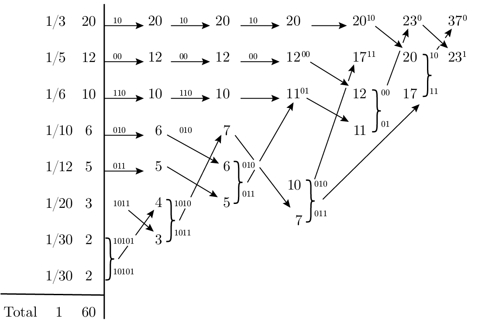
이 과정이 기계에게는 얼마나 기계적인 일인지 주목하라. 허프만 부호의 각 정방향 단계는 같은 과정의 반복이다. 가장 낮은 두 확률을 병합하고, 그 합을 배열의 제자리에 놓고, 표시를 해 둔다. 역방향 과정에서는 표시된 기호를 골라 분리한다. 이것들은 컴퓨터로 작성하기 쉬운 단순한 프로그램들이므로, 일단 si와 그 확률 pi가 주어지면 컴퓨터 프로그램이 허프만 부호를 찾아낼 수 있다. 실무에서는, 메시지가 끝났을 때 복호 과정에서 빠져나올 수 있도록 확률이 매우 작은 이스케이프 기호(escape symbol)를 배정하고 싶을 것임을 기억하라. 실제로, 다음과 같은 프로그램을 짤 수도 있다. 저장할 데이터를 표본 추출해서 확률의 추정치를 찾고(작은 오류는 L에 아주 작은 변화만 일으킨다), 허프만 부호를 찾고, 부호화를 수행하고, 먼저 복호 알고리즘(트리)을 보낸 다음 부호화된 데이터를 보내는 프로그램 말이다. 이 모든 것이 인간의 간섭이나 생각 없이 이루어진다! 복호하는 쪽에서는 이미 복호 트리를 받아 놓은 상태다. 따라서 한 번 라이브러리 프로그램으로 작성해 두면, 유용하다고 생각될 때마다 그것을 쓸 수 있다.
허프만 부호는 일부 컴퓨터에서 명령어의 일부에까지 사용된 적도 있다. 명령어들은 쓰일 확률이 아주 다르기 때문이다. 그러므로 우리는 모두 같은 길이의 기호들을 쓰는 단순한 블록 부호에 비해, 허프만 부호화에서 기대할 수 있는 평균 부호 길이 L의 이득을 살펴볼 필요가 있다.
모든 확률이 같고 기호가 정확히 2k개라면, 허프만 과정을 살펴보면 각 기호의 길이가 모두 같은 표준 블록 부호를 얻게 된다는 것을 알 수 있을 것이다. 기호가 정확히 2k개가 아니라면 일부 기호는 짧아진다. 다만 얼마나 많은 기호가 한 비트씩 짧아질지는 말하기 어렵다. 어떤 기호는 두 비트 이상 짧아질 수도 있다. 어쨌든 L의 값은 같고 그에 대응하는 블록 부호의 값보다 그리 작지는 않다.
한편, 각 pi가 마지막 것을 제외한 그 뒤에 오는 모든 확률의 합의 2/3보다 크다면, 콤마 부호(comma code)를 얻게 된다. 즉 길이 1짜리 기호 하나(0), 길이 2짜리 기호 하나(10), 이런 식으로 마지막까지 내려가는데, 끝에는 같은 길이 q - 1을 가진 두 기호, 1111…10과 1111…11이 있다. 이런 경우에는 L의 값이 그에 대응하는 블록 부호보다 훨씬 작을 수 있다.
규칙: 허프만 부호화는 기호들의 확률이 아주 다를 때 이득이 있고 모두 확률이 비슷할 때는 이득이 별로 없다.
허프만 과정에서 확률이 같은 두 값이 생기면 그들은 아무 순서로나 놓을 수 있고 따라서 부호는 아주 다르게 보일 수 있다. 다만 두 경우 모두 평균 부호 길이는 같은 L이다. 두 확률이 같을 때 어떤 순서를 골라야 할지 묻는 것은 자연스러운 일이다. 합리적인 기준은 부호의 분산을 최소화하는 것이다. 그래야 원래 기호에서 같은 길이를 가진 메시지들이 부호화된 메시지에서도 거의 비슷한 길이를 가지게 된다. 우연 때문에 짧은 원래 메시지가 아주 긴 부호화 메시지로 변하는 것을 원하지 않는다. 단순한 규칙은, 어떤 새 확률을 표에 삽입할 때 그것을 최대한 높이 올려 놓으라는 것이다. 실제로, 확률이 살짝 더 높은 기호 위에 그것을 놓으면 대개 분산은 크게 줄이고 동시에 L은 조금만 늘리게 된다. 그러므로 그것은 쓰기에 좋은 전략이다.
출발지 부호화에 대해 우리가 할 일을 다 했다(비록 이 주제를 결코 다 소진하지는 못했지만). 이제 채널 부호화로 넘어가자. 그곳에서는 잡음이 모델링된다. 가정에 따르면 채널에는 잡음이 있다. 즉 일부 비트는 전송(또는 저장) 중에 바뀐다는 뜻이다. 우리는 무엇을 할 수 있을까?
단일 오류의 검출은 쉽다. n - 1 비트의 블록에 n번째 비트를 붙인다. 그 비트는 전체 n 비트에 1의 개수가 짝수(원한다면 홀수여도 좋지만 우리는 이론에서는 짝수를 쓰기로 하자)가 되도록 설정한다. 이것을 짝수(홀수) 패리티 검사(even (odd) parity check), 더 간단히는 패리티 검사라고 부른다.
따라서 내가 여러분에게 보내는 모든 메시지가 이 성질을 가진다면, 받는 쪽에서 그 조건이 충족되는지 확인할 수 있다. 패리티 검사가 맞지 않으면 오류가 적어도 하나 발생했음을 알게 된다. 실제로, 홀수 개의 오류가 발생했다는 것도 안다. 패리티가 맞다면, 메시지가 정확하거나 짝수 개의 오류가 있는 것이다. 어느 위치에서든 오류가 발생할 확률이 낮은 시스템을 쓰는 것이 신중한 일이므로, 다중 오류의 확률은 훨씬 더 낮아야 한다.
수학적 다루기 쉬움을 위해 우리는 채널에 백색 잡음(white noise)이 있다고 가정한다. 즉 (1) n 비트 블록의 각 위치는 다른 어떤 위치와 같은 오류 확률을 가지며 (2) 여러 위치의 오류들은 서로 무상관(無相關), 즉 독립이라는 뜻이다. 이 가설들 아래에서 오류의 확률은 다음과 같다.
이로부터, 흔히 그렇듯이 p가 블록 길이 n에 비해 작다면(즉 곱 np가 작다면), 다중 오류는 단일 오류보다 훨씬 일어날 가능성이 낮다. 주어진 오류 확률 p에 대해 n을 얼마나 길게 할지는 공학적 판단의 문제다. n이 작으면 더 큰 n일 때보다 잉여도가 높지만(보내는 비트 수와 가능한 최소 비트 수와의 비율, 즉 n/(n - 1)), np가 크면 잉여도는 낮은 대신 검출되지 않는 오류의 확률이 더 높다. 이 두 효과의 균형을 어떻게 잡을지는 공학적 판단을 내려야 한다.
단일 오류를 발견하면 재전송을 요청할 수 있고, 두 번째에는 제대로 받을 것이라 기대하며, 그렇지 않으면 세 번째에 받을 것이라고 기대한다. 그러나 저장된 메시지가 잘못되었다면, 다시 오류가 발생할 때까지 재전송을 계속 요청하게 될 텐데, 그러면 이 단일 오류 검출 체계에서는 결국 검출되지 않고 넘어갈 두 개의 오류가 생길 가능성이 크다. 따라서 반복 재전송의 사용 여부는 오류의 예상되는 성질에 따라 달라져야 한다.
이런 부호들은 중계기(릴레이) 시대에도 널리 쓰였다. 전화 회사는 중앙 사무실에서도, 초기의 많은 릴레이 컴퓨터에서도 5-중-2 부호(2-out-of-5 code)를 사용했다. 즉 다섯 개의 릴레이 중 정확히 두 개만 “올라가 있는” 부호다. 이 부호는 십진 숫자를 나타내는 데 쓰였는데, C(5, 2) = 10이기 때문이다. 정확히 두 개의 릴레이가 올라가 있지 않으면 그것은 오류였고 재전송이 사용되었다. 7-중-3 부호도 사용되었는데, 당연히 홀수 패리티 검사 부호다.
나는 벨 연구소에서 Model 5 릴레이 컴퓨터를 쓰면서 처음 이 5-중-2 부호를 접했고 깊은 인상을 받았다. 그 부호가 올바른 답을 얻는 데 도움이 되었을 뿐 아니라, 더 중요한 것은 내 생각에는 유지보수 담당자들이 기계를 유지하는 데 도움이 되었다는 점이다. 어떤 오류든 그것이 저질러지는 바로 그 순간에 기계가 잡아냈고 따라서 고장 난 부품을 찾으려고 온갖 부품을 만지작거리며 좋은 부품마저 잘못 조정하면서 헤매는 대신, 유지보수 담당자들을 올바르게 안내해 주었다.
시간 순서에서는 벗어나지만 생각의 흐름에서는 이어진다. 나는 한때 at&t로부터 인간이 26개의 알파벳, 십진 숫자 열 개, 그리고 “공백(space)”을 쓰는 상황에서 사물을 어떻게 부호화할지에 대한 질문을 받은 적이 있다. 이것은 재고 명명, 부품 명명, 그리고 건물 명명을 포함한 많은 다른 사물의 명명에서 전형적인 문제다. 나는 전화 다이얼링 오류 데이터와 손으로 계산을 오래 해온 경험을 통해, 인간이 인접한 숫자를 서로 바꾸는 강한 경향이 있고(67은 76이 되기 쉽다), 단독 숫자를 바꾸는 경향도 있다는 것을 알고 있었다(보통은 틀린 자리를 두 배로 만든다. 예를 들어 556은 566이 되기 쉽다). 따라서 단일 오류 검출로는 충분하지 않다. 나는 두 명의 아주 뛰어난 사람을 회의실로 불러 함께 그 문제를 제기했다. 제안을 하나받고는 충분하지 않다고 거부하고 또 거부하기를 반복했다. 그러다 그들 중 한 명인 에드 길버트(Ed Gilbert)가 가중 부호(weighted code)를 제안했다. 특히 그는 기호들 0, 1, …, 9, A, B, …, Z, space에 숫자(값) 0, 1, 2, …, 36을 배정할 것을 제안했다. 다음으로 그는 값들의 합을 계산하는 대신, k번째 기호가 (편의상 표시한) 값 sk를 가진다면, n개 기호의 메시지에 대해 다음과 같이 계산한다
“모듈로(modulo)”라는 것은 이 가중 합을 37로 나누고 나머지만 취한다는 뜻이다. n개 기호의 메시지를 부호화하려면, 첫 번째 기호, 즉 k = 1을 비워 두고 나머지(37보다 작다)를 37에서 빼서 그에 대응하는 기호를 검사 기호로 써서 첫 위치에 놓는다. 따라서 첫 위치에 검사 기호가 있는 전체 메시지는 검사 합이 정확히 0이 된다. 서로 다른 두 기호의 교환과, 어떤 단일 기호의 변화를 검토해 보면, 그것들이 모듈로 37의 가중 패리티 검사를 깨뜨린다는 것을 알 수 있다(단, 교환되는 두 기호가 정확히 37만큼 떨어져 있지 않다면 말이다). 세부 사항으로 들어가지 않고 말하자면, 모듈러스(modulus)가 소수(prime number)여야 하는 것이 필수적이며 37은 소수다.
이런 기호(실제로는 그 값)의 가중 합을 얻으려면, 원한다면 곱셈을 피하고 덧셈과 뺄셈만 쓸 수도 있다. 숫자들을 순서대로 한 열에 놓고 누적 합을 계산한 다음, 그 누적 합의 누적 합을 모듈로 37로 계산하고 그것을 37에 대해 보수(complement)로 취하면 검사 기호가 나온다. 다음 표는 w, x, y, z를 사용한 예시를 보여준다.
| 기호 | 합 | 합의 합 |
|---|---|---|
| w | w | w |
| x | w + x | 2w + x |
| y | w + x + y | 3w + 2x + y |
| z | w + x + y + z | 4w + 3x + 2y + z = 가중 검사 합 |
받는 쪽에서는 0(올바른 기호)이나 음수(틀린 기호)가 나올 때까지 모듈러스를 반복해서 뺀다.
예를 들어 재고 부품명에 이 부호화를 쓴다면, 틀린 부품명이 컴퓨터에 도착하는 첫 번째 순간, 앞선 단계(아마 주문 준비 단계)에서가 아니었다면 어쨌든 전송 시점에, 그 오류가 잡힐 것이다. 주문이 본부 조달처까지 도착해서야 “그런 부품은 없다”는 말을 듣거나, 아니면 틀린 부품을 보냈다는 사실을 뒤늦게 알게 될 필요가 없다! 당신 위치를 떠나기 전에 잡히므로 그 시점에 아주 쉽게 고칠 수 있다. 하찮은 것인가? 그렇다! 인간의 오류(앞서의 백색 잡음과 대비되는)에 효과적인가? 그렇다!
실제로, 여러분은 요즘 책들에서 ISBN으로 그런 부호를 볼 수 있다. 그것은 같은 부호인데, 십진 숫자 열 개만 쓰고 10은 소수가 아니므로 열한 번째 기호를 도입해야 했다. 그 기호는 X로 표기하며 패리티 검사에서 때때로 등장한다. 실제로 열한 번째 책마다 그 ISBN의 마지막 기호로 검사 숫자가 X가 될 것이다. 대시들은 단지 장식용이며 부호에는 전혀 사용되지 않는다. 교과서에서 직접 확인해 보라. 다른 많은 대형 조직들도 노력을 기울이기만 하면 이런 부호를 유용하게 쓸 수 있다.
나는 여러 번, 미래는 점점 더 기호 형태의 정보에 관심을 가지게 되고 물질적인 것에는 덜 관심을 가지게 될 것이라고 믿는다고 말해 왔다. 따라서 정보를 편리한 부호로 부호화(표현)하는 이론은 사소하지 않은 주제다. 위의 내용은 기계적인 상황에 대한 단순한 오류 검출 부호와, 인간의 사용을 위한 가중 부호를 제공했다. 그것들은 기계와 인간의 오류가 발생할 수 있는 곳에서 부호 이론이 조직에 기여할 수 있는 것의 두 예에 불과하다.
인간-기계 인터페이스(man-machine interface)를 생각할 때, 여러분이 원하는 것 중 하나는 인간이 상대적으로 적은 키 입력(keystroke)을 하게 하는 것이다. 그것은 변장한 허프만 부호화다! 분명히, 프로그램 메뉴에서 여러분이 각 갈래를 선택할 확률이 주어진다면, 원한다면 전체 키 입력을 최소화하는 방식을 설계할 수 있다. 따라서 같은 메뉴 세트를 모든 사람에게 같은 얼굴을 보여주는 대신, 사람마다 다른 작업 습관에 맞게 조정할 수 있다. 이것보다 더 넓은 의미에서, 고급 언어에서의 “자동 프로그래밍(automatic programming)”은 허프만 부호화와 비슷한 무엇인가를 이루려는 시도다. 그래서 풀고 싶은 문제들에는 상대적으로 적은 키 입력이 필요하고 풀고 싶지 않은 문제들은 나머지가 되도록 하려는 것이다.
12 오류 정정 부호
이번 장에서 다룰 주제는 두 가지다. 첫째는 겉으로 드러난 주제인 오류 정정 부호(error-correcting codes)이고 둘째는 발견이라는 과정이 때로는 어떤 식으로 진행되느냐 하는 것이다. 여러분 모두가 알다시피 나는 해밍(Hamming) 오류 정정 부호의 공식적인 발견자다. 그러니 내가 이 부호가 어떻게 발견되었는지 설명할 수 있는 위치에 있다고 볼 수 있다. 하지만 이런 종류의 기록은 어떤 것이든 조심해서 봐야 한다. 사실 그 무렵 나는 이미 발견이라는 과정에 몹시 관심이 있었고 많은 경우에 발견의 방법이 발견된 것 자체보다 더 중요하다고 믿었다. 나는 연구를 하는 동안에는 발견 과정에 대해 생각하지 않는다는 것쯤은 알고 있었다. 운동선수들이 경기를 할 때 폼을 생각하지 않지만 어느 정도 자동으로 될 때까지 폼을 연습하는 것과 마찬가지다. 그래서 나는 크든 작든 무언가가 발견되면 그 뒤로 돌아가 그 일이 실제로 일어났던 과정을 되짚어 보려는 습관을 들여 놓았다. 하지만 속지 마라. 내가 말할 수 있는 것은 기껏해야 의식적인 부분과 그 위쪽 잠재의식의 일부일 뿐이다. 무의식이 어떻게 그 마법을 부리는지 우리는 도저히 알 수 없다.
나는 뉴욕 시에서 모델 5 릴레이 컴퓨터（설명: 에이컨(Aiken)이 계전기(릴레이)를 스위치로 사용해 만든 초기 전자기식 컴퓨터）를 사용하고 있었다. 애버딘 시험장(Aberdeen Proving Grounds)으로 인도하기 전에 필요한 소프트웨어 프로그램(주로 수학용 루틴)을 준비하는 중이었다. 2-out-of-5 블록 부호로 오류가 검출되면, 기계는 아무도 없을 때 그 단계를 최대 세 번까지 다시 시도한 뒤 그 문제를 버리고 다음 문제로 넘어갔다. 고장 난 장비가 새 문제에는 관여하지 않기를 바라면서 말이다. 당시 나는 말하자면 조직에서 맨 밑바닥인 하급자였기에 기계 시간은 주말에만 공짜로 쓸 수 있었다. 금요일 오후 5시쯤부터 월요일 아침 8시쯤까지 말이다. 엄청난 시간이다! 그래서 나는 입력 테이프에 문제를 잔뜩 넣어 두고 연구부가 있던 뉴저지주 머레이힐(Murray Hill)에 남아 있는 친구들에게 화요일이면 답을 전해 주겠다고 약속하곤 했다. 그런데 어느 주말, 금요일 저녁에 우리가 막 떠난 직후 기계가 완전히 고장 나는 바람에 월요일에 나는 사실상 아무것도 얻지 못했다. 친구들에게 사과하고 다음 주 화요일에 답을 주겠다고 다시 약속해야 했다. 아아! 그런데 또 똑같은 일이 벌어졌다! 솔직히 말하면 나는 화가 머리끝까지 났다. 그리고 이렇게 말했다. “기계가 오류가 있다는 것은 알아낼 수 있으면서 어째서 오류가 어디에 있는지는 알아내지 못하는 거지? 알아내기만 하면 비트를 반대 상태로 뒤집어 고치면 되는 것 아닌가?” (실제로 내가 쓴 말은 아마 좀 더 거친 표현이었을 것이다!)
무엇보다 먼저 주목할 점은, 이 결정적인 한 걸음이 그 순간 나에게 엄청난 정서적 압박이 걸려 있었기 때문에 가능했다는 것이다. 그리고 이것은 대부분의 위대한 발견에서 나타나는 특징이다. 마음을 편하게 두고 일하면 일을 다듬고 확장해 나갈 수는 있다. 하지만 돌파구는 대개 크나큰 좌절과 강한 정서적 몰입이 있을 때에만 나온다. 차분하고 냉정하며 무관심한 연구자가 정말로 위대한 새 전진을 만들어 내는 경우는 드물다.
자, 다시 이야기로 돌아가자. 나는 앞선 논의들에서 이런 것도 알고 있었다. 기계를 세 벌 만들어 비교 회로를 넣고 다수결로 결정하면 오류를 정정하는 기계도 존재할 수 있다는 것. 하지만 그 비용이 말이 아니었다! 분명 더 나은 방법이 있었을 것이다. 나는 지난 장에서 다룬 것처럼 패리티 검사(parity check)에 대해서도 아주 많이 알고 있었다. 그 기본 원리를 아주 세심하게 살펴보았기 때문이다.
잠시 이탈하자. 파스퇴르(Pasteur)는 이렇게 말했다. “우연은 준비된 마음에 미소 짓는다.” 알다시피 나는 바로 직전에 해 둔 작업 덕분에 준비가 되어 있었다. 나는 2-out-of-5 부호를 스쳐 지나갈 정도로만 아는 게 아니라 그 핵심을 이해하고 있었고 패리티 검사가 지니는 일반적인 함의까지 따져 보고 깨달은 상태였다.
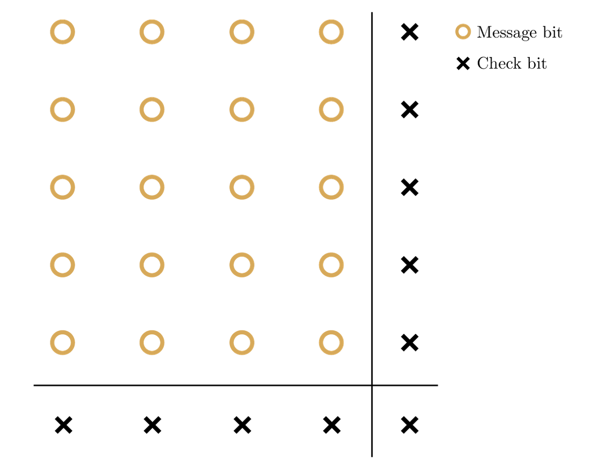
잠시 생각한 끝에 나는 이런 사실을 알아냈다. 어느 한 메시지 심볼의 정보 비트들을 직사각형으로 늘어놓고 각 행과 각 열에 패리티 검사를 하나씩 걸면, 실패하는 두 패리티 검사가 단일 오류의 좌표를 알려 준다는 것. 여기에는 모서리에 추가된 패리티 비트도 포함된다(짝수 패리티를 쓰면 일관되게 설정할 수 있다), 그림 12.1. 잉여도(redundancy), 다시 말해 실제로 쓰는 양과 필요한 최소량의 비율은
미적분학을 한 번이라도 배운 사람이라면 누구나 안다. 같은 양의 메시지라면 직사각형이 정사각형에 가까울수록 잉여도가 낮아진다는 것. 그리고 당연히 작은 m이나 n보다 큰 m’이나 n’가 더 낫다. 하지만 그렇게 하면 오류가 두 개 동시에 일어날 위험이 너무 커질 수도 있다. 이 역시 엔지니어링 판단의 문제다. 오류가 두 개 생기면 이렇게 된다는 점을 눈여겨보자. (1) 두 오류가 같은 열도 같은 행도 아니면 실패하는 행이 둘, 열이 둘 생긴다. 그러면 어느 대각선 쌍이 원인인지 알아낼 수 없다. (2) 두 오류가 같은 행(또는 같은 열)에 있으면 열(또는 행) 정보만 얻을 뿐 행(또는 열) 정보는 얻지 못한다.
이제 몇 주 뒤로 넘어가 보자. 뉴욕 시로 가려면 나는 일찌감치 근무지인 뉴저지주 머레이힐로 가서 회사 우편 배달 차에 올라타곤 했다. 그런데 이른 아침에 북부 뉴저지를 가로지르는 풍경은 그다지 볼만한 게 못 됐다. 그래서 나는 평소의 습관대로, 폼이 자동으로 나올 수 있도록 지난 성공들을 되짚곤 했다. 특히 그날은 마음속으로 직사각형 부호를 되뇌고 있었다. 그때 갑자기-이유는 도저히 말할 수 없다-내가 깨달은 것이 있었다. 비트들을 삼각형으로 늘어놓고 대각선을 따라 패리티 검사를 배치하되, 각 패리티 검사가 자기 자신이 놓인 행과 열을 동시에 검사하게 하면 잉여도가 더 유리해진다는 것, 그림 12.2였다.
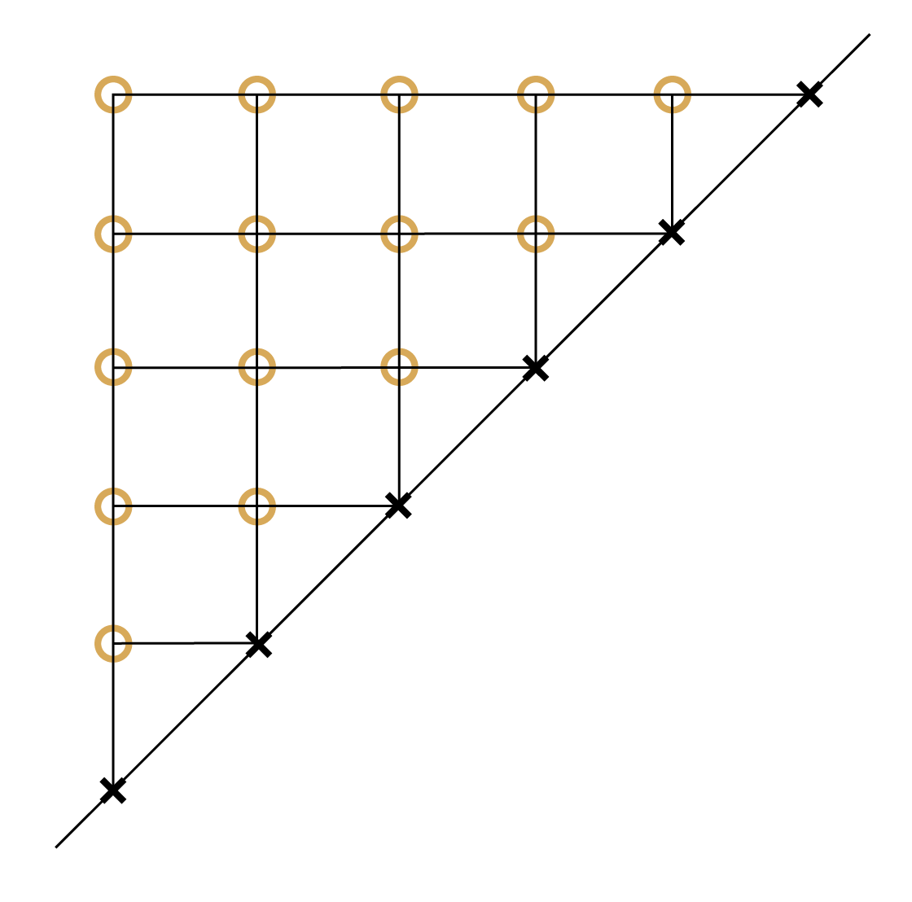
내 자만심은 그 자리에서 산산조각이 났다! 이번에는 정말 최고의 부호였을까? 몇 마일을 달리는 동안 그 문제를 생각했다(기억하라, 북부 뉴저지의 풍경에는 주의를 흩뜨릴 것이 하나도 없다). 그러다 나는 깨달았다. 정보 비트들을 정육면체로 배치하고 세 축 각각에 대해 그 축을 가로지르는 평면 전체에 패리티 검사를 걸면, 전체 n3 크기의 부호화된 메시지에 패리티 검사 3n - 2개만 써도 오류의 세 좌표를 얻을 수 있다. 더 좋다! 하지만 그것이 최고일까? 아니다! 수학자인 나는 곧바로 4차원 정육면체(굳이 그렇게 배열할 필요는 없다, 그렇게 배선만 하면 된다)가 더 낫다는 걸 알아차렸다. 그렇다면 차원이 더 높아질수록 더 나을 것이다. 얼마 안 가서(대략 다섯 마일쯤?) 2 × 2 × 2 × … × 2 정육면체에 패리티 검사 n + 1개를 쓰는 것이 최고라는 게 분명해 보였다. 적어도 겉으로는!
하지만 한 번 데인 적이 있는 나는 좋아 보이는 것에 그냥 만족할 생각이 없었다. 그런 실수는 전에도 해 봤다! 그것이 최고라는 것을 증명할 수 있을까? 증명은 어떻게 만들까? 가장 확실한 접근은 셈하기(counting argument)였을 것이다. 내가 가진 패리티 검사는 n + 1개이고 그 결과는 n + 1비트짜리 문자열, 즉 길이 n + 1비트의 이진수였다. 이 이진수는 2n + 1가지 중 어떤 것이든 표현할 수 있었다. 그런데 실제로 필요한 것은 2n + 1가지뿐이었다. 정육면체 안의 점 2n개에 “메시지가 맞다”는 결과 하나를 더한 것이다. 나는 거의 두 배 차이로 어긋나 있었다. 아아! 그때 마침 회사 문 앞에 도착해 출입 등록을 하고 회의에 가야 했다. 그래서 그 생각을 접어둘 수밖에 없었다.
며칠간 다른 일로 지난 후(사실 나는 애초에 회사의 팀 작업에 기여해야 하는 처지였다) 그 아이디어로 돌아가서, 나는 마침내 좋은 방법 하나를 정했다. 오류의 신드롬(syndrome)을 이진수로 사용해 그 숫자가 곧 오류의 위치를 가리키도록 하는 것이다. 물론 전부 0이면 정답을 뜻한다(대부분의 컴퓨터에서 전부 1인지 검사하는 것보다 전부 0인지 검사하는 쪽이 더 쉽다). 당시(1947~1948년)에는 흔하지 않았던 이진법에 대한 친숙함이 내 사고에서 여러 차례 중요한 역할을 했다는 것을 주목하기 바란다. 지금 당장 필요한 것보다 더 많이 아는 것이 결국 도움이 된다!
이 특별한 경우의 오류 정정 부호는 어떻게 설계할까? 쉽다! 위치들을 이진수로 적어 보자:
1 1 2 10 3 11 4 100 5 101 6 110 7 111 8 1000 9 1001 … …
이제 분명해진다. 신드롬의 맨 오른쪽 자리에 해당하는 패리티 검사는 이진수 표기에서 맨 오른쪽 자리에 1이 들어 있는 모든 위치를 포함해야 한다. 오른쪽에서 두 번째 자리가 맡는 검사는 두 번째 자리에 1이 있는 숫자들을 포함해야 한다. 이런 식으로 계속된다. 따라서 다음과 같다:
패리티 검사 #1 1, 3, 5, 7, 9, 11, 13, 15, … 패리티 검사 #2 2, 3, 6, 7, 10, 11, 14, 15, … 패리티 검사 #3 4, 5, 6, 7, 12, 13, 14, 15, … 패리티 검사 #4 8, 9, 10, 11, 12, 13, 14, 15, …
따라서 어느 위치에서든 오류가 하나 일어나면, 그 위치를 포함하는 패리티 검사만 정확히 실패해서 신드롬에 1을 만들어 낸다. 그 결과는 오류 위치의 이진수 표기와 정확히 일치한다. 그렇게 간단하다!
이 부호가 실제로 작동하는 모습을 보려면, 메시지 자리 네 개와 검사 자리 세 개만 쓴다고 해 보자. 이 숫자들은 조건을 만족한다.
이 조건은 명백히 필요 조건이고 등식이 성립하면 충분 조건이 된다. 패리티 검사의 설정이 쉬워지도록 검사 비트의 위치는 1, 2, 4로 고르자. 그러면 메시지 자리는 3, 5, 6, 7이 된다. 메시지가 다음과 같다고 하자.
우리는 (1) 맨 윗줄에 메시지를 쓰고 (2) 다음 줄에 부호화하고 (3) 그다음 줄에서 6번 위치에 오류를 하나 넣고 (4) 그다음 세 줄에서 세 개의 패리티 검사를 계산한다.
1 2 3 4 5 6 7 위치 1 0 0 1 메시지 0 0 1 1 0 0 1 부호화된 메시지 0 0 1 1 0 1 1 오류가 든 메시지
받은 메시지에 패리티 검사를 적용한다.
이진수 110은 십진수 6과 같으므로 6번 위치의 자리를 바꾼다. 그러고 나서 검사 자리 1, 2, 4를 떼어 내면 원래 메시지 1001을 얻는다.
신기해 보인다면, 전부 0인 메시지를 생각해 보자. 그러면 모든 검사 결과가 0이 된다. 그다음 어떤 한 자리가 바뀌는 것을 생각해 보면, 오류 위치를 이리저리 옮길 때마다 신드롬의 이진수가 그에 따라 바뀌어 언제나 오류의 위치와 정확히 일치한다는 것을 보게 될 것이다. 다음으로, 올바른 메시지 두 개의 합도 여전히 올바른 메시지라는 점을 눈여겨보자(패리티 검사는 모듈로 2 덧셈이므로 올바른 메시지들은 모듈로 2 덧셈군을 이룬다). 올바른 메시지는 전부 0이라는 결과를 주므로, 올바른 메시지에 한 위치의 오류를 더하면 보내는 메시지가 무엇이든 간에 오류의 위치가 나온다. 패리티 검사는 메시지는 무시하고 오류에만 집중하는 셈이다.
이제 확실히 알 수 있다. 채널의 양끝에서 사전에 합의만 되어 있다면 열들을 둘 이상 아무리 서로 바꿔도 본질적인 영향은 없다. 부호가 동등(equivalent)해질 뿐이다. 마찬가지로 어떤 열에서 0과 1을 바꾸는 것(그 특정 위치를 보수화하는 것)도 본질적으로 다른 부호가 되지는 않는다. 소위 해밍 부호는 요컨대 그저 그럴듯하게 꾸민 배치일 뿐이다. 실제 작업에서는 검사 비트들이 메시지 중간에 흩어져 있기보다는 전부 메시지 끝에 모여 있기를 원할 수도 있다.
오류가 두 개 있는 경우는 어떨까? 오류 둘을 잡아내되(고치지는 못하더라도) 검출만 하고 싶다면, 보내는 메시지 전체에 걸쳐 패리티 검사를 하나 새로 추가하기만 하면 된다. 그러면 수신 측에서 무슨 일이 일어나는지 보자.
| 기존 신드롬 | 새 패리티 검사 | 의미 |
|---|---|---|
| 000 | 0 | 정답 |
| 000 | 1 | 새 패리티 검사가 틀림 |
| xxx | 1 | 기존 패리티 검사가 오류를 잡아냄 |
| xxx | 0 | 반드시 오류 두 개 |
단일 오류 정정에 이중 오류 검출을 겸한 부호는 흔히 좋은 절충점이 된다. 물론 4비트짜리 짧은 메시지에 이제 검사 비트가 4개나 붙으면 잉여도가 나쁘다. 하지만 패리티 비트의 수는 대략 메시지 길이의 로그(log)에 비례해서 늘어난다. 메시지가 너무 길면 고칠 수 없는 오류 쌍의 위험을 안게 되고(단일 오류 정정 부호에서는 그걸 ‘고치려다’ 도리어 세 번째 오류를 만들어 낸다), 메시지가 너무 짧으면 잉여도의 비용이 지나치게 크다. 역시 상황에 따라 달라지는 엔지니어링 판단이다.
해석기하학에서 우리는 대수적 관점과 기하학적 관점을 오가는 것의 가치를 배웠다. 비트 문자열을 자연스럽게 표현하는 방법 하나는 n차원 정육면체를 쓰는 것이다. 각 문자열이 정육면체의 꼭짓점 하나에 해당한다. 이 그림을 머릿속에 그리고 나서, 오류 하나가 메시지를 한 변을 따라 이동시키고 오류 두 개가 두 변을 따라 이동시키는 식이라는 점을 마침내 깨닫고 보니, 나는 서서히 내가 L1 공간에서 작업하고 있다는 것을 알게 됐다. 기호 사이의 거리는 서로 다른 위치의 개수다. 따라서 우리는 공간에 거리(metric)를 가지게 되며 이 거리는 제10장에서 표준 L1 거리로 확인되듯이 네 가지 표준 조건을 만족한다:
- D(x, y) ≥ 0 (비음성),
- D(x, y) = 0 일 때 그리고 그럴 때만 x = y (동일성),
- D(x, y) = D(y, x) (대칭성),
- D(x, y) + D(y, z) ≥ D(x, z) (삼각 부등식).
그래서 나는 피타고라스 거리 함수의 추상화로서 배웠던 것을 진지하게 받아들여야 했다.
거리가 있으면 구(sphere)를 정의할 수 있다. 구란 중심으로부터 일정한 거리에 있는 모든 점의 집합이다(여기서는 점이 꼭짓점 전부이므로 꼭짓점이라 하자). 예를 들어 쉽게 그려 볼 수 있는 3차원 정육면체 그림 12.3에서, 점 (0,0,1), (0,1,0), (1,0,0)은 모두 원점 (0,0,0)에서 거리 1에 있다. 점 (1,1,0), (1,0,1), (0,1,1)은 모두 거리 2에 있고 마지막으로 (1,1,1)은 원점에서 거리 3에 있다.
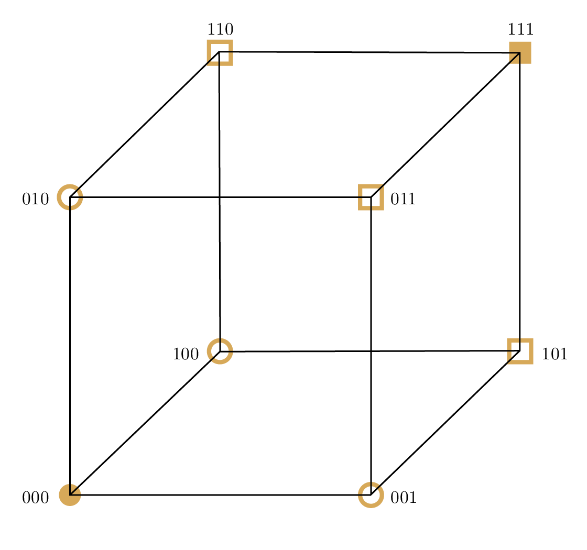
이제 n차원으로 가서 각 점을 중심으로 반지름 1인 구를 그리되, 그 구들이 겹치지 않는다고 가정해 보자. 이 구들의 중심, 그리고 오직 그 중심만이 부호점이라면, 수신 측에서는 메시지의 오류 하나가 반드시 부호점이 아닌 점으로 나타난다. 그 점은 내가 보낸 부호점 주변의 구 안에 있으므로, 아니 말을 바꾸면 받은 점 주변 반지름 1짜리 구 안에 있으므로 오류가 어디서 왔는지 알아볼 수 있다. 따라서 우리는 오류 정정 부호 하나를 얻는다. 부호점 사이의 최소 거리는 3이다. 반지름 2짜리의 겹치지 않는 구를 쓰면 이중 오류도 고칠 수 있다. 받은 점이 다른 어떤 점보다도 원래 부호점에 더 가까이 있기 때문이다. 이중 오류 정정, 최소 거리 5. 다음 표는 부호점 사이의 최소 거리와 오류 정정 능력이 어떻게 대응하는지 보여 준다.
| 최소 거리 | 의미 |
|---|---|
| 1 | 유일한 복호(디코딩) |
| 2 | 단일 오류 검출 |
| 3 | 단일 오류 정정 |
| 4 | 오류 1개 정정 + 오류 2개 검출 |
| 5 | 이중 오류 정정 |
| 2k+1 | k개 오류 정정 |
| 2k+2 | k개 오류 정정 + k + 1개 오류 검출 |
따라서 오류 정정 부호를 찾는 일은 n차원 공간에서 합법적인 메시지 사이에 필요한 최소 거리를 갖춘 부호점들의 집합을 찾는 일과 같다. 위의 조건들이 필요충분조건이기 때문이다. 오류 정정을 조금 포기하면 검출 능력을 더 얻을 수 있다는 것도 분명할 것이다. 오류 정정 하나를 포기하면 오류 검출 두 개를 얻는다.
나는 앞에서 최소 거리가 1, 2, 3, 4인 경우에 조건을 만족하는 부호를 설계하는 법을 보였다. 더 큰 최소 거리를 갖는 부호는 그만큼 쉽게 찾을 수 없고 우리는 그 방향으로 더 나아가지 않을 것이다. 다만 거리가 큰 부호가 얼마나 커질 수 있는지에 대한 상한은 쉽게 구할 수 있다. 반지름 k인 구 안의 점의 수가 다음과 같다는 것은 명백하다.
여기서 C(n,k)는 이항 계수다.
따라서 전체 공간의 부피 2n을 구 하나의 부피로 나누면, 그 몫이 곧 해당 공간에 들어갈 수 있는 겹치지 않는 구, 즉 부호점의 개수에 대한 상한이 된다. 검출 능력을 하나 더 얻으려면, 앞에서 했던 것처럼 전체에 걸친 패리티 검사를 하나 추가하기만 하면 된다. 그러면 최소 거리가 2k + 1에서 2k + 2로 늘어난다(최소 거리에 있는 임의의 두 점은 전체 패리티 검사의 설정이 서로 달라지므로 최소 거리가 1만큼 늘어난다).
지금까지의 상황을 정리해 보자. 부호를 제대로 설계하면 신뢰할 수 없는 부품들로 시스템을 만들어 훨씬 더 신뢰할 수 있는 기계를 얻을 수 있다는 것을 우리는 보았다. 그리고 장비로 얼마만큼을 더 치러야 하는지도 보았다. 다만 그만한 수준의 오류 정정을 컴퓨터에 내장한다면 계산 속도는 얼마나 희생되는지에 대해서는 살펴보지 못했다. 하지만 나는 앞에서도 다른 이득을 강조한 적이 있다. 바로 현장 정비(field maintenance)다. 나는 그것을 몇 번이고 다시 말하고 싶다. 장비가 정교해질수록-그리고 우리는 분명히 그 방향으로 가고 있다-현장 정비는 더욱 중요해진다. 오류 정정 부호는 현장에서 장비가 (아마도) 올바른 답을 낸다는 것만 뜻하지 않는다. 그 장비를 숙련도가 낮은 기술자라도 성공적으로 정비할 수 있게 해 준다.
우리 사회에서 오류 검출 부호(error-detecting codes)와 오류 정정 부호의 사용은 꾸준히 늘어나고 있다. 우리가 외곽 행성으로 보낸 우주선에서 메시지를 보낼 때는 전력이 기껏해야 20와트도 되지 않는 경우가 많다(어쩌면 5와트까지 낮을 수도 있다). 그래서 메시지 한 블록에서 오류 수백 개를 고쳐 주는 부호를 써야 한다. 물론 그 정정은 지구에서 이루어진다. 위 상황처럼 잡음(노이즈)을 극복할 준비가 되어 있지 않을 때, 또는 ’고의적 교란(재밍)’이 벌어지는 경우에, 그런 부호가 문제에 대한 유일한 알려진 해법이다.
1961년 늦여름, 나는 캘리포니아주 스탠퍼드에서의 안식년 일정을 마치고 뉴저지의 벨 전화연구소(Bell Telephone Laboratories, 이후 벨 연구소)까지 대륙을 가로질러 운전하고 있었다. 그 길에 일리노이주 모리스(Morris)에 들르기로 약속을 잡았다. 전화 회사가 그곳에서 실험용이 아닌 최초의 전자식 전화 교환국을 설치하고 있었기 때문이다. 나는 그 교환국이 해밍 부호를 광범위하게 쓴다는 것을 알고 있었고 당연히 환영받았다. 그들은 이번처럼 쉽게 진행된 현장 설치는 한 번도 없었다고 말해 주었다. 나는 속으로 이렇게 말했다. “당연하지, 지난 10년 동안 내가 줄곧 설교해 온 게 바로 그거야.” 초기 설치 중에 어떤 유닛을 설치해서 정상적으로 작동하게 만들고(자체 검사와 자체 정정 성질 덕분에 정상 작동한다는 것을 어렴듯이 알 수 있다), 다음 부분을 잡으러 등지고 떠났다고 하자. 등진 그 유닛에 결함이 생겼다면, 그 유닛이 직접 말해 준다! 초기 설치의 용이함, 그리고 그 뒤의 정비 수월성까지, 두 가지 모두 그들 눈앞에서 확인되어 가고 있었다. 나는 아무리 크게 말해도 부족하다. 오류 정정 부호는 가동 중일 때 올바른 답을 얻어 내기만 하는 게 아니다. 제대로 설계하면 현장 설치와 현장 정비에도 크게 기여할 수 있다. 그리고 장비가 정교해질수록 이 두 가지는 더욱 필수가 된다.
이제 이번 장의 나머지 부분으로 넘어가고 싶다. 나는 오류 정정 부호를 발견하면서 각 단계에서 어떤 일을 마주했고 무엇을 했는지, 상당히 많은 부분을 꼼꼼하게 여러분에게 말해 왔다. 그렇게 한 데는 이유가 두 가지 있다. 첫째, 나는 여러분에게 솔직해지고 싶었다. 파스퇴르의 격언 “우연은 준비된 마음에 미소 짓는다”를 따른다면, 그저 성공할 준비를 하는 것만으로 얼마나 쉽게 성공할 수 있는지 보여 주고 싶었다. 물론 그 발견에도 운의 요소가 있었다. 하지만 거의 같은 상황에 있던 다른 사람들은 많았다. 그리고 그들은 해내지 못했다! 왜 하필 나였을까? 물론 운도 있다. 하지만 동시에 나는 이 일이 어떻게 돌아가는지 이해하려고 애쓰면서 스스로를 준비하고 있었다. 그 표면 현상 뒤에 무엇이 있는지 깊이 생각하기보다, 그저 사건이 일어나는 대로 반응하기만 했던 내 주변의 다른 사람들보다 더 말이다.
이제 나는 여러분에게 도전한다. 내가 몇 페이지에 걸쳐 적어 둔 것들은, 회사에 대한 본업을 수행하면서 틈틈이 일해서 대략 3개월에서 6개월 정도의 기간에 이루어진 일이다. (특허권 때문에 출판은 1년 이상 미뤄졌다.) 내 처지에 있었더라면 자신은 해내지 못했을 것이라고 감히 말할 사람이 있는가? 아니다. 여러분도 나만큼은 해낼 능력이 있다. 그 자리에 있었고 그리고 그만큼 준비도 되어 있었다면 말이다!
물론 살아가다 보면 자신이 무엇을 위해 준비하고 있는지는 알 수 없다. 다만 확실한 것은 자신이 뜻있는 일을 하고 싶어 하고 ‘과학의 청소부’ 같은 것으로, 혹은 그런 식으로 자기 직업 전체를 살아 보내고 싶어 하지 않는다는 것이다. 당연히 운은 중요한 역할을 한다. 하지만 내가 보기에는, 인생은 위대한 일(그것을 어떻게 정의하든 간에)을 할 기회를 수도 없이 많이 제시한다. 준비된 사람은 대개 성공을 한 번이나 그 이상 맞이하고 준비되지 않은 사람은 거의 매번 그 기회를 놓친다.
위 의견은 이 한 가지 경험에 근거한 것도, 내 개인적 경험에만 근거한 것도 아니다. 그것은 수많은 위대한 과학자들의 삶을 연구한 결과다. 나는 과학자가 되고 싶었고 그래서 그들을 연구했다. 또 내가 있던 곳에서 일어난 발견들을 들여다보고 그것을 해낸 사람들에게 물어보았다. 이 의견은 상식에도 근거한다. 스스로에게 위대한 일을 해내는 스타일을 길러 놓으면, 기회가 오면 행동에서 위대함이 거의 자동으로 나온다. 여러분은 올바른 방식으로 생각하고 행동하도록 스스로를 훈련한 것이다.
다만 한 가지 껄끄러운 점을 꼽지 않을 수 없다. 어떤 시대에 위대해지기 위해 필요한 것은 다음 시대에 요구되는 것과 같지 않다는 것이다. 따라서 미래의 위대함을 준비하는 여러분은(위대함의 가능성은 여러분이 생각하는 것보다 훨씬 흔하고 이루기도 쉽다. 어떤 일이든 코앞에서 벌어질 때 그것이 위대함인지 알아보는 일이 흔치 않기 때문이다) 자신이 살게 될 미래의 성격을 생각해야 한다. 과거는 부분적인 길잡이다. 그리고 역사 말고 여러분이 가진 유일한 길잡이는 자기 상상력을 끊임없이 쓰는 것이다. 다시 말하지만 무작위한 결정들의 무작위 보행(random walk)은 미래가 어떠해야 한다는 자기 자신의 비전에 따른 결정들과는 비교가 안 될 정도로 한참 못 미친다.
나는 여러분에게 위대해지는 방법을 말로도 보여 주고 몸으로도 보여 주었다. 이제 하지 않을 변명거리는 없다!
13 정보 이론
정보 이론은 1940년대 후반 C.E. 섀넌이 만들어냈다. 벨 전화연구소(Bell Telephone Laboratories) 경영진은 그에게 이를 “통신 이론”이라고 부르기를 원했다. 그쪽이 훨씬 더 정확한 이름이기 때문이다. 하지만 분명한 홍보 효과 때문에 “정보 이론”이 훨씬 더 큰 파장을 불러일으킨다 - 섀넌은 후자를 선택했고 그래서 오늘날까지 그렇게 알려져 있다. 이 이름은 그 이론이 정보를 다룬다는 인상을 준다 - 따라서 중요해 보일 수밖에 없다. 우리가 점점 더 깊이 정보의 시대 속으로 들어가고 있으니 말이다. 그래서 나는 그 결과물 중 몇 가지 핵심만 훑어보려 한다. 완전한 일반성을 지닌 엄밀한 증명이 아니라, 특수한 경우에 대한 직관적인 증명으로 말이다. 그래야 여러분이 정보 이론이 무엇이고 무엇을 할 수 있고 할 수 없는지 이해하게 될 것이다.
우선, “정보”란 무엇인가? 섀넌은 정보를 놀라움과 동일시했다. 그는 어떤 사건의 확률의 로그에 마이너스를 붙인 값을, 확률 p인 사건이 일어났을 때 여러분이 얻게 되는 정보의 양으로 삼았다. 예를 들어 내가 여러분에게 로스앨러모스에 스모그가 낀다고 말하면, 그때 p는 거의 1에 가깝고 별로 정보가 되지 않는다. 하지만 내가 6월에 몬터레이에 비가 온다고 말하면, 그건 놀라운 일이고 더 많은 정보를 담고 있다. log 1 = 0이기 때문에, 확실한 사건은 정보를 전혀 담지 못한다.
좀 더 자세히 들여다보자. 섀넌은 정보량의 측도가 사건의 확률 p에 대한 연속 함수여야 한다고 믿었다. 그리고 서로 독립적인 사건들에 대해서는 가법적이어야 한다고 믿었다 - 각각의 독립적인 사건에서 얻는 것을 모두 더하면, 결합된 사건에서 얻는 양과 같아야 한다는 것이다. 예를 들면 주사위를 굴리는 결과와 동전을 던지는 결과는 일반적으로 독립적인 사건으로 여겨진다. 수학 기호로 쓰면, I(p)가 확률 p인 사건에서 얻는 정보량이라 할 때, 확률 p1의 사건 x와 독립적 사건인 확률 p2의 y에 대해, x와 y가 모두 일어나는 사건에서는
이것은 충족되는데, 모든 p1과 p2에 대해 성립하는 함수 방정식이다.
이 함수 방정식을 풀려면 이렇게 가정해보자:
그럼 다음과 같이 된다:
만일 p1 = p2이고 p2 = p라면,
등등. 이 과정을 확장하면, 지수(exponent)에 쓰는 표준적인 방법을 통해 모든 유리수 m/n에 대해 다음을 보일 수 있다.
정보 측도의 연속성이라는 가정에서, 로그가 앞서의 함수 방정식에 대한 유일한 연속 해라는 것이 따라나온다.
정보 이론에서는 로그의 밑(base)을 2로 취하는 것이 관례라서, 이진 선택은 정확히 1비트의 정보가 된다. 따라서 정보는 다음 공식으로 측정된다.
잠시 멈추고 지금까지 일어난 일을 검토해보자. 첫째, 우리는 “정보”를 정의하지 않았다. 단지 그 양을 측정하는 공식을 제시했을 뿐이다. 둘째, 그 측도는 놀라움에 의존한다. 그리고 그것이 전화 시스템, 라디오, 텔레비전, 컴퓨터 같은 기계들의 상황과는 상당한 정도로 일치하지만 인간이 정보에 대해 갖는 평범한 태도를 결코 대변하지는 않는다. 셋째, 그것은 여러분의 지식 상태에 의존하는 상대적인 측도다. 임의의 소스(source)에서 흘러나오는 “난수(랜덤 넘버)”의 흐름을 보고 있다면, 각 숫자가 놀라움으로 다가온다고 생각할 것이다. 하지만 그 “난수”를 계산하는 공식을 알고 있다면, 다음 숫자는 전혀 놀랍지 않고 따라서 정보도 전혀 담고 있지 않다! 그래서 섀넌이 만든 정보 정의는 여러 측면에서 기계에는 적합하지만 인간이 그 단어를 쓰는 방식에는 부합하지 않는 것처럼 보인다. 이것이 바로 그것을 “정보 이론”이 아니라 “통신 이론”이라고 불렀어야 하는 이유다. 그 정의를 되돌리기에는 너무 늦었다 (그 정의가 초기 인기를 크게 끌어올렸고 지금도 사람들로 하여금 그것이 “정보”를 다룬다고 생각하게 만든다). 그래서 우리는 그것을 안고 살아가야 한다. 하지만 여러분은 그것이 정보에 대한 일반적인 관점을 얼마나 왜곡하는지, 그리고 섀넌이 놀라움으로 간주한 다른 무엇인가를 다루는지 분명히 깨달아야 한다.
어떤 정의가든 제시될 때마다 검토해야 할 지점이 바로 이것이다. 예컨대 섀넌의 정보 정의 같은 제안된 정의가, 여러분이 원래 갖고 있던 개념과 어디까지 일치하고 어디까지 다르가? 초기의 직관적 개념과 정확히 일치하는 정의는 거의 없다. 그러나 결국에는 그 정의가 개념의 의미를 결정한다 - 따라서 날카로운 정의를 통해 무언가를 형식화하는 것은 언제나 어느 정도의 왜곡을 낳는다.
확률 pi를 가진 q개의 기호로 이루어진 알파벳이 있다고 하자. 그러면 그 시스템의 평균 정보량(기댓값)은
이것을 확률 분포 {pi}를 가진 시스템의 엔트로피라고 부른다. “엔트로피”라는 이름을 쓰는 이유는, 열역학과 통계역학에서도 같은 수학적 형태가 나타나기 때문이다. 그래서 “엔트로피”라는 단어는 장기적으로 볼 때 정당화되지 않는 중요성의 분위기를 풍긴다. 수학적 형태가 같다고 해서 기호의 해석까지 같은 것은 아니다!
확률 분포의 엔트로피는 부호 이론에서 중심적인 역할을 한다. 중요한 결과 중 하나는 서로 다른 두 확률 분포 pi와 qi에 대한 깁스 부등식이다. 우리는 다음을 증명해야 한다.
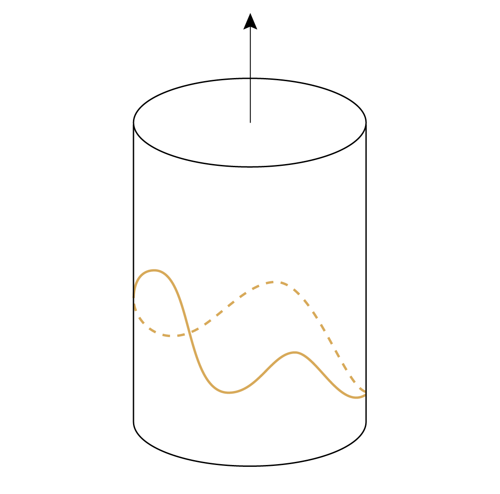
증명은 그림 13.1의 자명한 그림에 의존한다.
그리고 등호는 x = 1에서만 성립한다. 이 부등식을 앞서의 합에 적용하면 다음을 얻는다.
신호 시스템에 q개의 기호가 있다면, qi = 1/q로 잡아서 깁스 부등식에서 q 항들을 이항하면
이것이 말하는 바는, 확률 분포에서 q개의 기호가 모두 1/q의 동일한 확률을 가진다면, 최대 엔트로피가 정확히 ln q가 되고 그렇지 않으면 부등식이 성립한다는 것이다.
유일하게 복호가능한 부호가 주어지면, 크래프트 부등식(Kraft inequality)이 성립한다.
이제 의사확률(pseudo-probability)을 정의하면
물론 Σ[Qi] = 1이므로, 깁스 부등식으로부터 다음이 따라나온다.
그런 다음 약간의 대수 계산 끝에 (K ≤ 1이므로 log 항을 버릴 수 있고 어쩌면 부등식을 더 강화할 수도 있다):
따라서 엔트로피는 임의의 기호 대 기호 부호화에 대해 평균 부호 길이 L의 하한이 된다. 이것이 섀넌의 무잡음 부호화 정리다.
이제 신호 시스템의 경계에 관한 주요 정리로 넘어가자. 그것은 독립적인 비트들의 비트 스트림을 부호화해서 잡음이 존재하는 상황에서 기호 대 기호로 처리한다. 즉 정보 비트가 정확할 확률이 P > 1/2이고 전송 중에 변조될 확률이 대응되는 Q = 1 - P라는 뜻이다. 편의상 오류들은 독립적이고 전송되는 각 비트에 대해 동일하다고 가정하자. 이것을 “백색 잡음”이라고 부른다.
우리는 n비트 길이의 긴 스트림을 하나의 부호화된 메시지로 부호화할 것이다. 그것은 1비트 부호의 n차 확장(extension)으로, n은 이론이 진행됨에 따라 결정될 것이다. 우리는 n비트의 메시지를 n차원 공간 속의 한 점으로 본다. n차 확장이므로, 단순화를 위해 각 메시지가 나타날 확률이 모두 같다고 가정하고 M개의 메시지가 있다고 가정하자 (M 역시 나중에 결정될 것이다). 따라서 각 초기 메시지의 확률은 1/M이다.
다음으로 채널 용량이라는 개념을 살펴보자. 자세한 내용은 생략하고 채널 용량은 채널을 통해 안정적으로 보낼 수 있는 최대 정보량으로 정의된다. 모든 가능한 부호화에 대해 최대화한 값이므로, 채널 용량이 허용하는 것보다 더 많은 정보를 안정적으로 보낼 수 있다고 주장할 여지는 없다. (우리가 쓰고 있는) 이진 대칭 채널에 대해, 비트당 용량 C가 다음과 같이 주어진다는 것을 증명할 수 있다.
여기서 앞서와 마찬가지로 P는 어느 비트에서도 오류가 없을 확률이다. 보내는 n개의 독립적인 비트에 대해 채널 용량은 다음과 같을 것이다.
채널 용량에 가까이 가려면, 각 기호 ai(i = 1, …, M)에 대해 거의 그만큼의 정보량을 보내야 하고 모두 확률 1/M이어야 하며,
M개의 동일한 확률의 메시지 ai 중 하나를 보낼 때 다음이 성립해야 한다. 따라서 우리는 다음을 얻는다:
n비트에서 nQ개의 오류가 생길 것으로 기대한다. 실제로는 주어진 n비트 메시지를 보낼 때 수신된 메시지에서 대략 nQ개의 오류가 생길 것이다. n이 크면, 오류 수 분포의 상대적 퍼짐(퍼짐 = 폭, 분산의 제곱근)은 n이 커질수록 점점 더 좁아진다.
보내는 쪽의 관점에서 나는 보낼 메시지 ai를 잡아 그 주위에 반지름이 다음과 같은 구(sphere)를 그린다.
이 구는 기대 오류 수 Q보다 e2만큼 약간 크다, 그림 13.2. n이 충분히 크면, 이 구 밖으로 떨어지는 수신 메시지 점 bj가 발생할 확률은 임의로 작게 만들 수 있다. 보내는 쪽인 나의 관점에서 상황을 그려보면, 선택된 신호 ai에서 수신 메시지 bj로 이어지는 어떤 반지름 방향을 따라서도, 오류가 발생할 확률은 (거의) 정규 분포이고, nQ에서 정점을 이루며, 어떤 e2가 주어져도 수신 점 bj가 내 구 밖으로 떨어질 확률을 원하는 대로 작게 만드는 n이 존재한다.
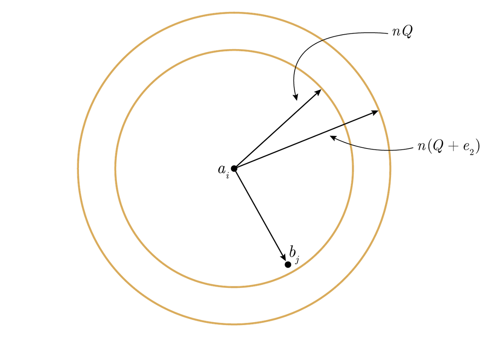
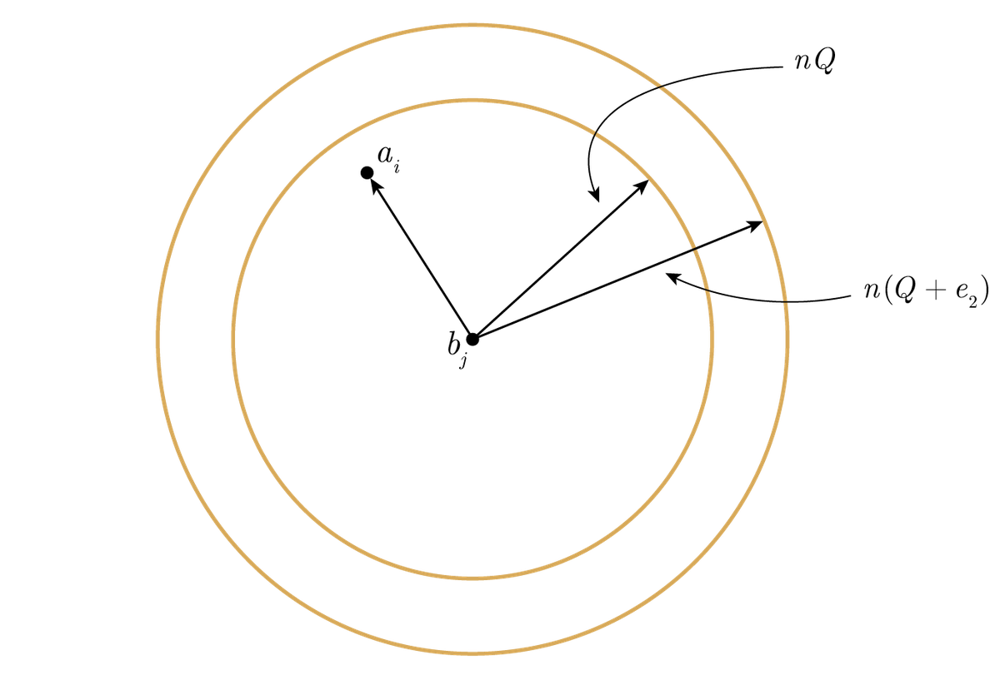
이제 받는 쪽인 여러분의 입장에서 보면, 그림 13.3, 공간 속 수신 점 bi 주위에 같은 반지름 r인 구 S(r)가 있어서 수신 메시지 bi가 내 구 안에 있다면, 내가 보낸 원래 메시지 ai는 여러분의 구 안에 있게 된다.
오류는 어떻게 생길 수 있는가? 오류는 다음 표와 같이 발생할 수 있다.
| 경우 | ai가 S(r) 안 | 다른 점이 S(r) 안 | 의미 |
|---|---|---|---|
| 1 | 예 | 예 | 오류 |
| 2 | 예 | 아니오 | 오류 아님 |
| 3 | 아니오 | 예 | |
| 4 | 아니오 | 아니오 | 오류 |
여기서 우리는, 수신 점 주위의 구 안에 다른 원래 메시지 점이 적어도 하나 있다면 그것이 오류임을 알 수 있다. 어느 것인지 결정할 수 없기 때문이다. 보낸 메시지가 올바르려면, 보낸 점이 그 구 안에 있고 그 안에 다른 부호점이 하나도 없어야만 한다.
따라서 보낸 메시지가 ai일 때 오류 확률 PE에 대한 수학적 방정식은 다음과 같다.
두 번째 항의 첫 인수를 1로 놓아 버릴 수 있으므로, 부등식을 얻는다.
그런데 자명한 사실을 쓰면
따라서 다음을 얻고
이것을 오른쪽의 마지막 항에 반복 적용하면
n을 충분히 크게 하면 첫 항을 원하는 만큼 작게, 예컨대 어떤 수 d보다 작게 만들 수 있다. 따라서 다음을 얻는다.
이제 M개의 메시지(각각 n비트)를 위한 부호책(code book)을 어떻게 만들지 살펴보자. 어떻게 부호화해야 할지 모르고 오류 정정 부호(error-correcting codes)가 아직 발명되지 않았기에, 섀넌은 무작위 부호화를 택했다. 부호책에 있는 메시지의 n비트 각각에 대해 동전을 던지고 그것을 M개의 메시지 모두에 반복한다. nM번의 던짐이 있으므로 2nM개의 가능한 부호책이 있고 모든 부호책의 확률은 동일하게 1/2nM이다. 물론 무작위 과정으로 부호책을 만들면 중복이 생길 가능성이 있고 서로 가까워서 오류의 원인이 될 수 있는 부호점이 있을 수도 있다. 우리가 증명해야 할 것은, n을 충분히 크게 하면 이것이 여러분이 고르고 싶은 어떤 양수 오류 수준보다 높은 확률로 발생하지 않는다는 것이다.
결정적인 단계는 섀넌이 모든 가능한 부호책에 대해 평균을 내서 평균 오류를 구했다는 것이다! 기호 Av[·]를 모든 가능한 무작위 부호책들의 집합에 대한 평균을 뜻한다고 쓰자. 상수 d에 대해 평균을 내면 당연히 상수이고 평균에서는 합의 각 항이 다른 항과 같으므로 우리는
이것은 (M - 1을 M으로 바꾸어) 증가시킬 수 있다:
특정 메시지에 대해 모든 부호책에 걸쳐 평균을 내면, 부호화는 모든 가능한 값을 훑고 지나가므로, 한 점이 구 안에 있을 평균 확률은 구의 부피 대 공간 전체 부피의 비율이 된다. 구의 부피는
여기서 s = Q + e2 < 1/2이고 ns는 정수라고 가정한다.
이 합에서 가장 큰 항은 (오른쪽의) 마지막 항이다. 우리는 먼저 계승들에 대한 스털링 공식으로 이 항의 크기를 추정한다. 그런 다음 바로 앞 항으로의 감소율을 살피고, 이 감소율이 왼쪽으로 갈수록 커진다는 점을 이용해 (1) 이 초기 감소율로 합을 기하급수로 지배시킨 다음, (2) 기하급수를 ns개의 항에서 무한대로 확장하고, (3) 무한 기하급수를 합한다 (모두 큰 중요성 없는 표준 대수다). 그리고 마지막으로 (n이 충분히 크면) 다음 경계를 얻는다.
엔트로피 H(s)가 이항 항등식에 어떻게 나타나는지 주목하라.
이제 부품들을 조립해야 한다. H(s) = H(Q + e2)의 테일러 급수 전개가, 첫 도함수 항만 취하고 나머지를 모두 무시할 때 경계를 제공한다는 점에 주목하여 최종 표현을 얻는다.
여기서
이제 우리가 할 일은 e3 < e1이 되도록 e2를 고르는 것뿐이다. 그러면 마지막 항이 n을 충분히 크게 함으로써 원하는 만큼 작아진다. 따라서 PE의 평균값을 원하는 만큼 작게 만들면서도, 동시에 채널 용량 C에 원하는 만큼 가까이 갈 수 있다.
모든 부호에 대한 평균이 적절히 작은 오류를 가진다면, 적어도 하나의 부호는 적합해야 한다 - 따라서 적어도 하나의 적합한 부호화 시스템이 존재한다. 이것이 섀넌의 중요한 결과, “잡음 부호화 정리”다. 단, 그가 내가 쓴 단순한 이진 대칭 채널보다 훨씬 더 큰 일반성으로 이를 증명했다는 점을 적어두자. 일반적인 경우의 수학은 더 어렵지만 아이디어는 그렇게 다르지 않다. 따라서 내가 쓴 아주 특수한 경우가 이 정리의 참된 본질을 여러분에게 보여주기에 충분하다.
이 결과를 비판적으로 평가해보자. 우리는 계속해서 “충분히 큰 n에 대해”라고 말했다. 이 n은 얼마나 큰가? 채널 용량에 가까이 가면서 동시에 정확하다고 합리적으로 확신하고 싶다면, 정말 정말 어마어마하게 크다! 사실 그렇게 크다 보면, 부호화하기 전에 그만큼 많은 비트의 메시지를 모으는 데 아주 오랜 시간을 기다려야 할 것이다. 무작위 부호책의 크기는 말할 것도 없다 (무작위이므로, M과 n이 모두 아주 크기 때문에, 부호책은 모든 Mn비트를 완전히 나열한 것보다 실질적으로 더 짧은 형태로는 표현될 수 없다).
오류 정정 부호는 이런 긴 메시지에 대한 기다림과, 그것을 매우 큰 부호책을 통해 부호화해야 하는 일, 그리고 그에 대응하는 큰 복호(decoding) 부호책을 피한다. 그것들이 부호책을 피하고 규칙적인 (계산 가능한) 방법을 채택하기 때문이다. 단순한 이론에서는 채널 용량에 아주 가까이 가면서도 임의로 낮은 오류율을 유지하는 능력을 잃는 경향이 있지만 부호가 많은 수의 오류를 정정할 때는 잘 해낼 수 있다. 다른 말로 하면, 어느 정도의 오류 정정 능력을 제공한다면, 효율을 위해서는 대부분의 시간 그 능력을 사용해야 한다. 그렇지 않으면 용량을 낭비하는 것이고 이는 보내는 각 메시지에서 정정되는 오류 수가 많다는 뜻이다.
하지만 이 정리가 쓸모없는 것은 아니다! 이 정리는, 관련된 범위 안에서, 효율적인 부호화 방식은 매우 긴 정보 비트 스트링을 아주 정교하게 부호화해야 한다는 것을 실제로 보여준다. 우리는 외행성들을 지나간 위성들에서 이것이 실현된 것을 본다. 그 위성들은 지구로부터, 그리고 태양으로부터 (일부 위성에게는 최대 약 5와트의 태양 에너지를 공급해준; 다른 것들은 비슷한 출력의 원자력 에너지원을 썼다) 점점 더 멀어질수록 블록당 오류를 점점 더 많이 정정했다. 그들은 에너지원의 낮은 출력, 작은 접시 크기, 우주 공간의 그 위치에서 보이는 지구의 수신 접시 크기가 제한적이라는 점, 그리고 신호가 이동해야 하는 엄청난 거리 때문에, 효과적이려면 높은 오류 정정 부호를 사용해야 했다.
우리는 증명에서 사용했던 n차원 공간으로 돌아간다. n차원 공간에 대한 논의에서 우리는 구의 부피가 거의 모두 바깥 표면 가까이 놓인다는 것을 보였다 - 따라서 수신 신호 주위의 (상대적으로) 아주 약간 확대된 구 안에 원래 보낸 신호가 놓일 것은 거의 확실하다. 그래서 임의로 많은 수의 오류 nQ를, 복호 후 오류가 없는 것에 임의로 가까운 수준으로 정정하는 것은 놀랍지 않다. 더 놀라운 것은 M개의 구가 거의 겹침 없이 (다시 말해, 겹침을 원하는 만큼 작게) 채워질 수 있다는 점이다. 이것이 왜 가능한지에 대한 통찰은 우리가 파고든 것보다 채널 용량을 더 자세히 들여다보면 나오지만 여러분은 해밍 오류 정정 부호(해밍 부호, Hamming code)에서 구들이 겹침이 없다는 것을 보았다. n차원 공간에 거의 직교하는 방향이 많이 존재한다는 사실이, 겹침이 거의 없는 M개의 구를 공간에 채울 수 있는 이유를 말해준다. 아주 약간의, 임의로 작은 겹침을 허용함으로써 - 그것은 복호에서 아주 적은 수의 오류만 만들어낼 수 있다 - 이 촘촘한 채움을 얻을 수 있다. 해밍은 일정 수준을 보장했고 섀넌은 그저 아마 작은 오류일 뿐이지만 채널 용량에는 원하는 만큼 가까운 오류를 보장했다. 해밍 부호는 그렇게 하지 못한다.
정보 이론은 설계하는 방법에 대해 많이 알려주지는 않지만 효율적인 설계를 향한 길을 가리켜 준다. 그것은 기계와 같은 것들 사이의 통신 시스템을 설계하는 데 귀중한 도구다. 하지만 앞서 언급했듯이 인간의 정보 통신에는 실제로 관련이 없다. 예컨대 생물학적 유전이 어느 정도 기계와 같아서 유전자에 정보 이론을 적용할 수 있는지, 또 어느 정도 그렇지 않아 그 적용이 무관한지는 현재로서는 그저 알려져 있지 않다. 그래서 우리는 시도해봐야 한다. 성공은 유전의 기계와 같은 성격을 보여줄 것이고 실패는 정보의 다른 중요한 측면들을 가리킬 것이다.
이제 우리가 배운 것을 추상화해보자. 우리는 모든 초기의 정의가 크든 작든 우리의 기존 신념의 본질을 담아야 하지만 항상 어느 정도의 왜곡을 지니고 따라서 우리가 생각했던 대로의 것들에는 적용되지 못한다는 것을 보았다. 장기적으로 보면, 우리가 쓰는 정의가 실제로 정의된 것을 정의한다고 받아들이는 것이 전통이다. 하지만 물론 그것은 단지 사물을 다루는 방법을 알려줄 뿐이고 실제 의미를 결코 알려주지 않는다. 수학계에서 그토록 강하게 선호되는 공준적(公準的, postulational) 접근 방식은 실천에서는 갈 길이 멀다.
이제 우리를 여전히 곤란하게 하는 정의 하나를 다루어보자. 바로 IQ다. 그것은 원하는 만큼 순환적이다. “지능”을 측정한다고 여겨지는 시험이 만들어지고 가능한 한 내부적으로 일관되게 다듬어진 다음, 단순한 방법으로 보정되면 “지능”을 측정한다고 선언된다. 이때 지능은 (보정 곡선을 통해) 정규 분포를 띠게 된다. 모든 정의는 처음 제안될 때뿐 아니라, 훨씬 나중에 그것이 어떤 결론 속으로 들어가게 될지 보게 될 때에도 검토되어야 한다. 정의들이 원하는 결과를 얻으려고 그렇게 짜여진 정도가 얼마인가? 한 조건에서 짜여진 정의가 지금은 전혀 다른 조건에서 적용된 경우가 얼마나 많은가? 너무나 자주 이것이 사실이다! 그리고 우리가 점점 더 소프트한(soft) 과학 속으로 들어갈수록, 이것은 아마 점점 더 사실이 될 것이다. 그것은 여러분의 일생 동안 불가피한 일이다.
따라서 이 정보 이론을 소개하는 한 가지 목적은, 그 유용성 말고도, 여러분을 이 위험에 민감하게 만들기 위해서다. 혹은, 더 좋다면, 원하는 것을 얻기 위해 그것을 어떻게 활용할지 알려주기 위해서다! 초기의 정의가 여러분이 발견하는 것을 결정한다는 사실은 오래전부터 인정되어 왔다. 대부분의 사람들이 믿고 싶어 하는 것보다 훨씬 더 크게 말이다. 초기의 정의는 어떤 새로운 상황에서든 여러분의 세심한 주의가 필요하다. 그리고 오랫동안 일해온 분야에서는 그 정의들을 다시 검토할 가치가 있다. 그래야 결과가 얼마나 동어반복(tautology)에 가깝고 전혀 실질적인 결과가 아닌지 이해할 수 있다.
에딩턴에 관한 유명한 이야기가 있다. 어떤 사람들이 바다에서 그물로 고기잡이를 했다는 것이다. 잡은 물고기들의 크기를 살펴보며 그들은 바다에는 물고기의 최소 크기가 존재한다고 결론지었다! 그들의 결론은 현실이 아니라 사용한 도구에서 비롯된 것이었다.
14 디지털 필터-I
이제 컴퓨터와 컴퓨터가 정보를 표현하는 방식을 살펴보았으니, 컴퓨터가 정보를 처리하는 방식으로 시선을 돌려봅시다. 물론 컴퓨터가 하는 수많은 일 중 극히 일부밖에 들여다볼 수 없기에, 언제나처럼 기본에 집중하겠습니다.
컴퓨터가 처리하는 것의 상당수는 여러 근원에서 오는 신호들인데, 우리는 이미 왜 그 신호들이 흔히 등간격(equally spaced) 샘플링으로 얻은 숫자들의 흐름 형태를 띠는지 이야기했습니다. 선형 처리는 이 책에서 다룰 시간이 있는 유일한 종류인데, 그것이 곧 디지털 필터(digital filters)입니다. “스타일”이 무엇이고 실제 생활에서 일이 실제로 어떻게 벌어지는지 설명하기 위해, 먼저 제가 어떻게 디지털 필터에 발을 들이게 되었는지, 그리고 그다음에 어떻게 나아갔는지를 들려드리겠습니다.
우선, 저는 부사장인 W.O. 베이커의 사무실엔 한 번도 가 본 적이 없습니다. 우리는 복도에서 우연히 마주치기만 했고 보통 잠깐, 아주 잠깐씩 말을 나누곤 했습니다. 그러던 어느 때, 대략 1973~1974년쯤, 복도에서 그를 만나서 말했죠. 1946년에 벨 전화연구소(Bell Telephone Laboratories)에 왔을 때 연구소가 계전기(릴레이) 방식에서 전자식 중앙 교환기로 서서히 옮겨가는 걸 보았는데, 상당수의 사람들이 오실로스코프와 더 새로운 전자 기술로 전향하지 않아서 방해가 되지 않도록 다른 장소로 옮겨졌다는 것을 말이죠. 그에게 그들은 심각한 경제적 손실이었지만 저에게는 사회적 손실이었습니다. 왜냐하면 그들은 말할 것도 없이 꽤 불만이 가득했기 때문인데, 시대에 뒤처졌기 때문입니다(물론 그들 자신의 잘못이었지만요). 저는 계속해서 말했습니다. 우리가 초기 아날로그 컴퓨터(제2차 세계대전 중 그 기술의 상당 부분을 개발했기에 벨 전화연구소에 전문가가 많았던)에서 더 현대적인 디지털 컴퓨터로 넘어갈 때도 똑같은 일이 벌어지는 걸 보았다고 말이죠-또다시 많은 수의 엔지니어들이 뒤처졌고 다시 그들은 경제적이면서도 사회적인 손실이었습니다. 그런 다음 제가 관찰한 것은, 우리 모두 전화 회사가 가능한 한 빠르게 완전한 디지털 전송으로 나아가고 있다는 것을 알고 있기에, 이번에는 훨씬 더 많은 수의 불만 가득한 엔지니어들을 뒤에 남기게 될 것이라는 점이었습니다. 그래서 결론적으로 지금 지금 이 상황에 대해 무언가를 해야 한다고 말했습니다. 예컨대 적절한 기초 교재와 다른 훈련 도구들을 마련해서 더 많은 사람들이 미래로 나아가기 쉽게 하고 뒤처지는 사람을 줄이자는 것이었습니다. 그는 똑바로 내 눈을 바라보며 말했습니다. “그래, 해밍, 당신이 해야 하지,” 그러고는 걸어가 버렸습니다! 게다가 그는 자주 대화하던 존 튜키를 통해 계속 저를 부추겼습니다. 그래서 저는 그가 제 노력을 지켜보고 있다는 걸 알았습니다.
무엇을 해야 할까? 우선 저는 디지털 필터에 대해 아는 것이 극히 적다고 생각했고 게다가 실제로 관심도 없었습니다. 하지만 부사장의 말과 제 자신의 경험의 타당성을 무시하는 게 현명한 일일까요? 아닙니다! 암시된 사회적 낭비가 저로 하여금 편하게 외면할 수 없게 만들었습니다.
그래서 저는 친구인 짐 카이저(J.F. KAISER)에게로 향했습니다. 그는 당시 세계 최고의 디지털 필터 전문가 중 한 명이었죠. 저는 그에게 현재 연구를 멈추고 디지털 필터에 관한 책을 쓰자고 제안했습니다-자신의 연구를 책으로 정리하는 것은 과학자로서 성장하는 데 자연스러운 단계이니까요. 얼마간의 압박 끝에 그는 책을 쓰기로 동의했고 그래서 저는 구원받았습니다-적어도 그렇게 생각했죠. 하지만 그가 하는 일을 지켜보니 그는 전혀 쓰고 있지 않았습니다. 제 계획을 살리기 위해 저는 제안했습니다. 그가 식당에서의 점심시간에(카페테리아보다 식당이 더 생각할 시간이 많습니다) 저를 가르쳐 준다면, 제가 책을 (주로 첫 부분을) 함께 써 주겠다고요. 그리고 우리 책 이름을 카이저와 해밍으로 하자고 했습니다. 동의했습니다!
시간이 지나면서 저는 그에게서 좋은 교육을 받고 있었고, 책의 첫 부분을 진행하고 있었지만, 그는 여전히 아무것도 쓰고 있지 않았습니다. 그래서 어느 날 제가 말했습니다. “당신이 더 쓰지 않으면 결국 책 이름을 해밍과 카이저로 해야겠어”라고요-그리고 그는 동의했습니다. 훨씬 나중에, 제가 거의 모든 원고를 다 썼는데도 그가 여전히 한 줄도 쓰지 않았을 때, 저는 서문에서 그에게 감사를 표할 수는 있지만 책 이름은 해밍으로 해야 한다고 말했습니다. 그러자 그가 동의했고-우리는 여전히 좋은 친구로 지내고 있습니다! 그렇게 해서 제가 쓴 디지털 필터 책이 생겨났고 결국 세 번의 판(版, edition)을 거치는 동안 항상 카이저의 좋은 조언을 받았습니다.
그 책은 저를 또한 흥미로운 여러 곳으로 데려가기도 했는데, 수년간 그 책으로 짧은 1주일짜리 강좌를 열었기 때문입니다. 그 단기 강좌는 제가 아직 책을 쓰는 중에 시작되었는데, 피드백이 필요했고 UCLA 연장교육부(Extension Division)에 단기 강좌로 열어도 되겠냐고 제안했고 그들이 동의했기 때문입니다. 그 뒤로 수년간 UCLA에서, 파리·런던·잉글랜드 케임브리지에서 각 한 번씩, 미국의 다른 여러 곳에서, 그리고 캐나다에서도 적어도 두 번 강좌를 열게 되었습니다. 하기 싫은 일이지만 해야 할 일을 하는 것이 장기적으로는 훌륭한 보답이 되었습니다.
이제 더 중요한 부분인, 제가 디지털 필터라는 새로운 주제를 어떻게 익혀 나갔는지로 갑시다. 새로운 주제를 공부하는 것은, 당신의 경력에서 리더가 되고자 한다면, 그리고 새로운 발전들에 밀려 추종자가 되어 뒤처지는 것을 원치 않는다면, 여러 번 해야 할 일입니다. 곧 내게 분명해진 것은 디지털 필터 이론이 푸리에 급수에 의해 지배된다는 점이었습니다. 이론적으로는 대학에서 배웠지만 실제로는 존 튜키를 위해 수행한 신호 처리 덕분에 추가 교육을 많이 받았습니다. 그는 프린스턴 출신의 교수이자 천재이며 일주일에 하루나 이틀 벨 전화연구소에서 일하는 사람이었죠. 약 10년 동안 저는 많은 시간을 그의 계산 팔로 소비했습니다.
수학자로서 저는, 여러분 모두가 알듯이, 어떤 완전한 함수 집합이든 임의의 함수를 표현할 때 다른 집합만큼 잘 해낸다는 것을 알았습니다. 그렇다면 왜 푸리에 급수만을 배타적으로 쓸까? 저는 여러 전기 엔지니어들에게 물어봤지만 만족스러운 답을 얻지 못했습니다. 한 엔지니어는 교류가 사인파 형태라서 사인파 함수를 쓴다고 말했는데, 저는 그 말이 나에게는 도무지 이해가 안 된다고 대답했습니다. 배움을 떠난 뒤 전형적인 전기 엔지니어가 갖는 그 나머지 잔여 교육이란, 딱 그 정도라는 이야기입니다!
그래서 저는 앞서 오류 검출 컴퓨터를 쓸 때처럼 기본기부터 생각해야 했습니다. 실제로 무슨 일이 벌어지는가? 여러분 중 많은 분이 알겠지만 우리가 원하는 것은 신호의 시간 불변(time-invariant) 표현입니다. 왜냐하면 보통 시간의 자연스러운 원점이 없기 때문이죠. 따라서 우리는 푸리에 급수와 푸리에 적분 양쪽의 형태로 나타나는 삼각 함수(이동(translation)의 고유 함수)를 사물을 표현하는 도구로 쓰게 됩니다.
둘째, 이 단계에서 우리가 원하는 것인 선형 시스템(linear systems)도 동일한 고유 함수를 가집니다-실수 삼각 함수와 동등한 복소 지수(complex exponentials) 말입니다. 따라서 간단한 규칙이 하나 나옵니다. 시간 불변 시스템이거나 선형 시스템이면, 복소 지수를 써야 합니다.
그 문제를 더 파고들면서 디지털 필터 분야에서 그것을 써야 하는 세 번째 이유도 찾아냈습니다. 흔히 나이퀴스트 샘플링 정리(Nyquist’s sampling theorem)라고 불리는 정리(사실 훨씬 이전에 알려졌고 위테이커(Whittaker)가, 나이퀴스트 정리를 알아도 무슨 말인지 거의 알아차릴 수 없는 형태로, 출판하기까지 했습니다)가 있는데, 이 정리는 만약 대역 제한(band-limited) 신호가 있고 최고 주파수에서 적어도 두 배 이상의 비율로 등간격 샘플링한다면, 원래 신호를 샘플들로부터 재구성할 수 있다고 말합니다. 따라서 신호의 샘플들이 전체 실수선을 덮는다면, 연속 신호를 등간격 샘플로 바꿔도 샘플링 과정은 정보를 전혀 잃지 않습니다. 이 샘플링 비율은 흔히 나이퀴스트 비율(Nyquist rate)이라 불리는데, 서보 안정성으로도 유명한 해리 나이퀴스트의 이름을 딴 것입니다. 만약 대역 제한이 아닌 함수를 샘플링하면, 더 높은 주파수들이 더 낮은 주파수로 “에일리어싱(aliased)”되는데, 이 단어는 단일 고주파수가 나중에 나이퀴스트 대역 안에서 단일 저주파수로 나타날 것이라는 사실을 묘사하기 위해 튜키가 만든 용어입니다. 다른 함수 집합, 예컨대 t의 거듭제곱의 경우에는 그렇지 않습니다. 등간격 샘플링과 재구성 하에서 t의 단일 고차 거듭제곱은 더 낮은 차수의 다항식(여러 항)으로 들어갑니다.
따라서 푸리에 함수를 써야 할 세 가지 좋은 이유가 있습니다: (1) 시간 불변성, (2) 선형성, 그리고 (3) 등간격 샘플로부터 원래 함수를 재구성하는 것이 단순하고 이해하기 쉽다는 것.
그러므로 우리는 푸리에 함수로 신호를 분석할 것입니다. 그리고 전기 엔지니어들에게 왜 보통 실수 삼각 함수 대신 복소 지수를 주파수로 쓰는지 설명할 필요는 없습니다. 우리는 선형 연산을 가지고 있는데, 신호(숫자들의 흐름)를 필터에 넣으면 다른 숫자들의 흐름이 나옵니다. 여러분의 선형대수학 강의가 아니라면 미분방정식 강의 같은 데서, 어떤 함수가 들어가서 크기(scale)를 제외하고는 정확히 똑같이 나오는지 묻는 것이 자연스럽습니다. 자, 위에서 언급했듯이 그것들은 복소 지수입니다. 그것들은 선형·시간 불변·등간격 샘플링 시스템의 고유 함수입니다.
보라, 그 유명한 전달 함수(transfer function)가 정확히 그 대응하는 고유 함수들의 고유값이라는 것을! 여러 전기 엔지니어들에게 전달 함수가 무엇인지 물어봤지만 그 사실을 말해 준 사람은 아무도 없었습니다! 그래, 그들이 같은 개념이라는 걸 지적하면 동의해야 하지만 같은 개념이라는 사실이 그들의 머리에 떠오른 적은 없어 보였습니다! 똑같고 단순한 아이디어가 그들의 마음속에 두 개 이상의 다른 모습으로 있었는데, 서로 아무 연관도 모른다는 것입니다! 매번 기본기까지 내려가야 합니다!
우리의 논의는 “신호란 무엇인가?”로 시작합니다. 자연은 많은 연속 신호를 공급하는데, 우리는 그래서 그것을 등간격으로 샘플링하고 추가로 디지털화(양자화, quantize)합니다. 보통 신호는 시간의 함수이지만 예컨대 등간격 전압을 사용하고 그에 대응하는 반응을 기록하는 실험실의 어떤 실험이든 그것도 디지털 신호입니다. 따라서 디지털 신호는 숫자 형태의 등간격 순차 측정이며 우리는 디지털 필터에서 또 다른 등간격의 숫자 집합을 얻습니다. 비등간격 데이터를 처리해야 하는 경우도 있고 때로는 그렇게 해야만 하지만 여기서는 그것들을 무시하겠습니다.
신호를 출력의 여러 준위 중 하나로 양자화하는 것은 종종 놀라울 정도로 작은 효과를 냅니다. 여러분 모두 두 개, 네 개, 여덟 개, 그 이상의 준위로 양자화된 사진을 본 적이 있을 텐데, 두 준위짜리 사진조차 보통 알아볼 수 있습니다. 여기서 양자화는 대개 작은 효과이므로 무시하겠습니다. 때로는 매우 중요하지만요.
등간격 샘플링의 결과는 에일리어싱입니다. 나이퀴스트 주파수(주기당 두 개의 샘플이 있는) 위의 주파수는 더 낮은 주파수로 에일리어싱됩니다. 이것은 삼각 항등식의 단순한 결과입니다.
여기서 a는 정수 회전 수인 k를 제거한 뒤 남는 양의 나머지이고(우리는 결과를 논할 때는 항상 회전을 쓰고 미적분을 적용할 때는 라디안을 씁니다. 마치 밑이 10인 로그와 밑이 e인 로그를 쓰는 것과 같습니다), n은 단계 번호입니다. 만약 a > 1/2이면, 위의 것을 다음과 같이 쓸 수 있습니다.
따라서 에일리어싱 대역은 반 회전보다 작습니다(플러스 마이너스). 사인과 코사인이라는 두 실수 삼각 함수를 쓰면 각 주파수마다 한 쌍의 고유 함수가 생기고 대역은 0에서 1/2 회전 사이지만 복소 지수 표기를 쓰면 각 주파수마다 하나의 고유 함수가 있고 대역은 -1/2에서 1/2 회전에 이릅니다. 이렇게 복수의 고유값을 피하는 것이 복소 주파수가 실수 사인·코사인 함수보다 훨씬 다루기 쉬운 이유 중 하나입니다. 에일리어싱이 일어나지 않는 최대 샘플링 비율은 주기당 두 샘플이며 나이퀴스트 비율이라고 불립니다. 샘플들로부터 원래 신호를 에일리어싱된 주파수까지 결정할 수는 없습니다. 에일리어싱되지 않은 주파수의 기본 구간(-1/2에서 1/2) 안에 들어가는 기본 주파수만 유일하게 결정할 수 있습니다. 다양한 에일리어싱된 주파수에서 온 신호들은 대역 안의 단일 주파수로 가서 대수적으로 더해집니다; 그것이 일단 샘플링이 끝나면 우리가 보는 것입니다. 따라서 에일리어싱 동안 덧셈이나 소거가 일어날 수 있으며 우리는 에일리어싱된 신호에서 원래 무엇을 가졌는지 알 수 없습니다. 최대 샘플링 비율에서는 1과 결과를 구분할 수 없으므로, 에일리어싱되지 않은 주파수는 그 대역 안에 있어야 합니다.
우리는 시간을 늘리거나(또는 줄여서) 샘플링 비율을 단위 시간당 하나로 잡을 수 있게 합니다. 왜냐하면 그것이 사물을 훨씬 쉽게 만들고 밀리·마이크로초 단위의 경험을 샘플 사이에 며칠이나 심지어 수년이 걸리는 것들로 가져오기 때문입니다. 서로 다른 여러 사물에 표준 표기와 사고의 틀을 채택하는 것은 언제나 현명합니다-한 적용 분야가 다른 분야에서 할 일을 제안할 수 있기 때문입니다. 가능할 때마다 그렇게 하는 것이 매우 가치 있다는 것을 저는 발견했습니다-외부적인 스케일 인자들을 제거하고 기본 식에 도달하는 것입니다. (하지만 저는 원래 수학자로 훈련받았죠.)
에일리어싱은 샘플링의 근본적인 효과이며 신호가 어떻게 처리되는지와는 무관합니다. 일단 샘플들이 취해지면 모든 주파수가 나이퀴스트 대역 안에 있다고 생각하는 것이 편리하다고 저는 발견했습니다. 따라서 우리는 어떤 것의 주기적 확장을 그릴 필요가 없습니다. 왜냐하면 다른 주파수들은 더 이상 신호에 존재하지 않기 때문입니다-일단 샘플링이 일어나면, 더 높은 주파수들은 더 낮은 대역으로 에일리어싱되었고 더 이상 그 위에는 존재하지 않습니다. 생각을 크게 줄여 주는 것입니다! 샘플링이라는 행위가 우리가 써야 할 에일리어싱된 신호를 만들어 낸다.
이제 샘플링과 에일리어싱이라는 아이디어만을 사용하는 세 가지 이야기로 넘어갑시다. 첫 번째 이야기에서 저는 28개의 상미분방정식 시스템의 수치 해를 계산하려고 했는데, 사용할 샘플링 비율을 알아야 했습니다(해의 스텝 크기가 곧 당신이 사용하는 샘플링 비율입니다). 왜냐하면 그것이 예상보다 절반 절반이라면 계산 대금이 약 두 배가 될 것이기 때문이죠. 가장 널리 쓰이고 실용적인 수치 해법에서는 수학 이론이 스텝 크기를 5차 도함수에 기반을 둡니다. 누가 그 상한을 알 수 있을까요? 아무도요! 하지만 샘플링으로 보면, 에일리어싱은 존재하는 최고 주파수의 두 샘플에서 시작됩니다. 데이터가 마이너스 무한대에서 플러스 무한대까지 있을 경우에 말이죠. 많아야 다섯 개 포인트의 짧은 범위의 데이터만 가진 상태에서, 저는 직관적으로 약 두 배의 비율, 즉 주기당 네 개의 샘플이 필요할 것이라고 계산했습니다. 그리고 끝으로, 한쪽에만 데이터가 있을 때는 아마 또 다른 2의 배수, 모두 합쳐 주기당 여덟 개의 샘플이 됩니다.
다음으로 저는 두 가지를 했습니다: (1) 이론을 전개했고 (2) 단순한 미분방정식에 대한 수치 테스트를 돌렸습니다.
두 가지 모두 주기당 약 일곱 개의 샘플에서 (스텝당) 정확도의 경계에 있고 열 개에서는 매우 안전함을 보여 주었습니다. 그래서 저는 그들에게 상황을 설명하고 예상되는 해에서의 최고 주파수를 물었습니다. 그들은 제 요청이 타당함을 인정했고, 며칠 뒤 그들은 초당 10회전까지의 주파수에 대해서는 제가 걱정하고, 그 이상은 그들이 걱정하겠다고 말했습니다. 그들은 옳았고 결과는 만족스러웠습니다. 샘플링 정리가 실제로 작동하는 것입니다!
두 번째 이야기는 벨 전화연구소 복도에서 한 누군가가 내게 건넨 느슨한 말과 관련이 있습니다. 서부 해안의 어떤 하청업체가 나이키 미사일 발사 시뮬레이션에 어려움을 겪고 있었는데 1/1,000에서 1/10,000초 간격을 사용하고 있다는 것입니다. 나는 즉시 웃으며 반드시 실수가 있을 거라고 말했습니다. 그들이 사용하는 모형에는 70에서 100개 샘플이면 충분할 것이니까요. 알고 보니 그들은 이진수 자리를 왼쪽 일곱 자리만큼-128배나 크게-틀리게 잡은 것이었습니다! 샘플링 정리에 기반해 대륙을 건너 대형 프로그램을 디버깅한 셈입니다!
세 번째 이야기는 미 해군대학원대학교(Naval Postgraduate School)의 한 그룹이 아주 높은 주파수 신호를, 그들이 이해한 샘플링 정리에 따라 샘플링할 수 있을 만큼 아래로 변조하고 있다는 것입니다. 하지만 나는 그들이 그 높은 주파수를 영리하게 샘플링한다면, 샘플링이라는 행위 자체가 그것을 아래로 변조(에일리어싱)시킬 것이라는 것을 깨달았습니다. 며칠의 논쟁 끝에 그들은 주파수를 낮추는 장비 랙을 제거했고 나머지 장비는 더 잘 작동했습니다! 다시 한번, 나는 샘플링으로 인한 에일리어싱 효과를 확고히 이해하기만 하면 되었습니다. 이것은 왜 기본기를 아주 잘 알아야 하는지를 보여 주는 또 하나의 예입니다. 화려한 부분들은 그러면 쉽게 따라오고 아무도 가르쳐 주지 않았던 일들을 당신이 할 수 있게 됩니다.
샘플링은 우리가 디지털 컴퓨터를 사용할 때 현재 데이터를 처리하는 방식의 핵심입니다. 이제 신호가 무엇인지, 샘플링이 신호에 무엇을 하는지 이해했으니, 신호 처리의 더 많은 세부 사항으로 안전하게 넘어갈 수 있습니다.
먼저 비재귀 필터(nonrecursive filters)를 논의하겠습니다. 그것의 목적은 일부 주파수는 통과시키고 다른 것들은 막는 것입니다. 이 문제는 전화 회사에서 처음 등장했는데, 한 음성 메시지의 모든 주파수를 다른 것의 범위 너머로 올린(변조한)다면, 두 신호를 더해 같은 전선으로 보내고 반대편에서 필터로 걸러 분리한 뒤, 더 높은 쪽을 원래 주파수로 낮추면(복조) 된다는 아이디어를 가졌을 때였습니다. 이 이동은 간단히 사인파 함수를 곱하는 것인데, 다음 삼각 항등식에 따라 나타나는 두 주파수 중 한 대역(단측파대 변조, single-sideband modulation)을 선택하는 것입니다(이번에는 실수 함수를 씁니다).
신호의 주파수 이동(변조)에는 신비로운 것이 없습니다. 기껏해야 삼각 항등식의 한 변형일 뿐입니다.
우리가 먼저 고려할 비재귀 필터는 주로 평활(smoothing) 유형인데, 입력은 값 u(t) = u(n) = un이고 출력은 다음과 같습니다.
여기서 cj = c-j (계수들은 중간값 c0에 대해 대칭입니다).
이제부터 할 일에서 최소제곱이 근본적인 역할을 하므로 최소제곱에 대해 상기시켜 드릴 필요가 있겠습니다. 그래서 평활 필터 하나를 설계해 필터가 어떻게 생겨날 수 있는지 보여 드리겠습니다. “잡음”이 더해진 신호가 있고 그것을 평활화해서 잡음을 제거하고 싶다고 가정해 봅시다. 데이터의 다섯 개 연속 포인트에 최소제곱 의미에서 직선을 맞추고 그 직선 위의 중간값을 그 지점에서의 “함수의 평활화된 값”으로 취하는 것이 그럴듯해 보인다고 가정하겠습니다.
그림 14.1-직선 맞추기
수학적 편의를 위해 우리는 t = -2,-1, 0, 1, 2에서 다섯 개 포인트를 골라 직선을 맞춥니다, 그림 14.1,
최소제곱은 데이터와 직선 위의 점 사이의 차이 제곱의 합을 최소화해야 한다고 말합니다. 즉 다음을 최소화하는 것입니다.
최소값을 찾기 위한 미분에 사용할 매개변수는 무엇일까요? 그것들은 a와 b이지, t(이제는 이산 변수 k)도 u도 아닙니다. 직선은 매개변수 a와 b에 의존합니다. 그리고 이것은 흔히 학생들이 걸려 넘어지는 지점입니다. 방정식의 매개변수가 바로 최소화의 변수인 것입니다! 따라서 a와 b에 대해 미분하고 도함수를 0으로 두어 최소값을 얻으면 다음을 얻습니다.
이 경우 우리는 직선이 중간점에서 갖는 값인 a만 필요하므로, 다음을 사용하면(일부 합은 나중을 위해 남겨 둡니다)
위 방정식에서 다음을 얻습니다.
이것은 단순히 인접한 다섯 값의 평균입니다. a, 즉 평활화된 값에 대한 계산을 어떻게 수행할지 생각할 때, 데이터를 세로 기둥으로, 그림 14.2, 계수들이 각각 1/5인, 데이터에 대한 이동 가중치로서 생각하십시오. 그러면 그것을 당신이 데이터를 들여다보는 창(윈도우)으로, 창의 “모양”이 필터의 계수인 것으로 생각할 수 있습니다. 이 평활의 경우 크기가 균일합니다.
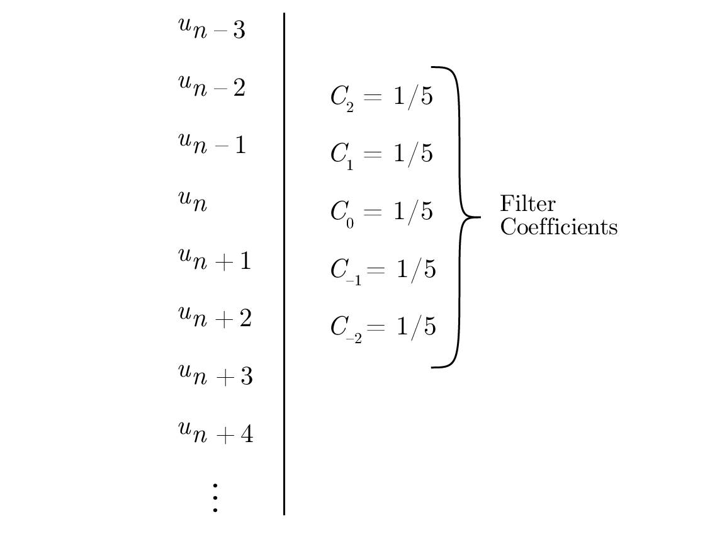
2k + 1개의 대칭적으로 배치된 포인트를 썼더라도 우리는 여전히 잡음을 제거하기로 되어 있는 평활화된 값으로 데이터 포인트들의 이동 평균을 얻었을 것입니다.
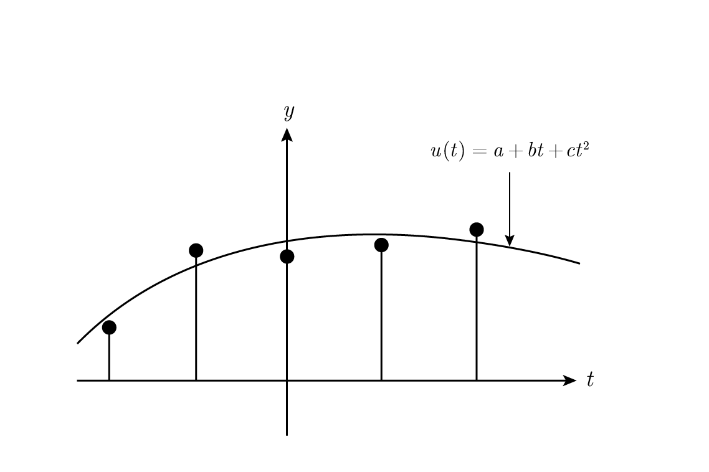
직선 대신 이차 곡선을 맞춰 평활화했다고 가정해 봅시다, 그림 14.3:
제곱의 차이를 세우고 이번에는 a, b, c에 대해 미분하면 다음을 얻습니다.
다시 우리는 a만 필요합니다. 첫 번째와 세 번째 방정식(중간 것은 a를 포함하지 않습니다)을 다시 쓰고 위의 알려진 합들을 넣으면 다음을 얻습니다.
필요 없는 c를 제거하기 위해 위 방정식에 17을 곱하고 아래 방정식에 -5를 곱해 더하면 다음을 얻습니다.
그리고 이번에는 우리의 “평활 창”이 균일한 계수를 갖지 않고 일부는 음수 값을 가집니다. 걱정하지 마십시오. 우리는 창을 은유적인 방식으로 말하고 있으므로 음의 투과도 가능합니다.
이제 이 두 최소제곱 유래 평활 공식을 n 포인트 주위의 적절한 위치로 옮기면 다음을 얻습니다.
이제 만약 순수 고유 함수를 넣으면 무엇이 나올지 묻습니다. 방정식들이 선형이므로 고유 함수를 되돌려 주되, 그 고유 함수의 주파수에 대응하는 고유값, 즉 그 주파수에서의 전달 함수 값을 곱해 줄 것임을 우리는 압니다. 두 평활 공식 중 위쪽 것을 취하면 다음을 얻습니다.
따라서 주파수 ω에서의 고유값(전달 함수)은, 기초 삼각법에 의해,
포물선 평활의 경우에는 다음을 얻을 것입니다.
이것들은 2k + 1 평활의 직선 곡선과 함께 쉽게 스케치됩니다, 그림 14.4와 14.5.
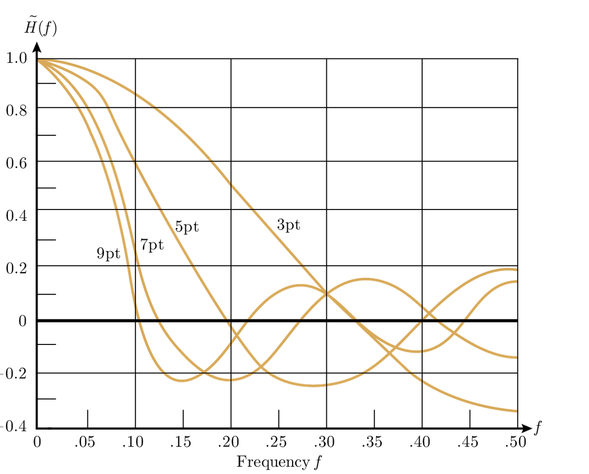
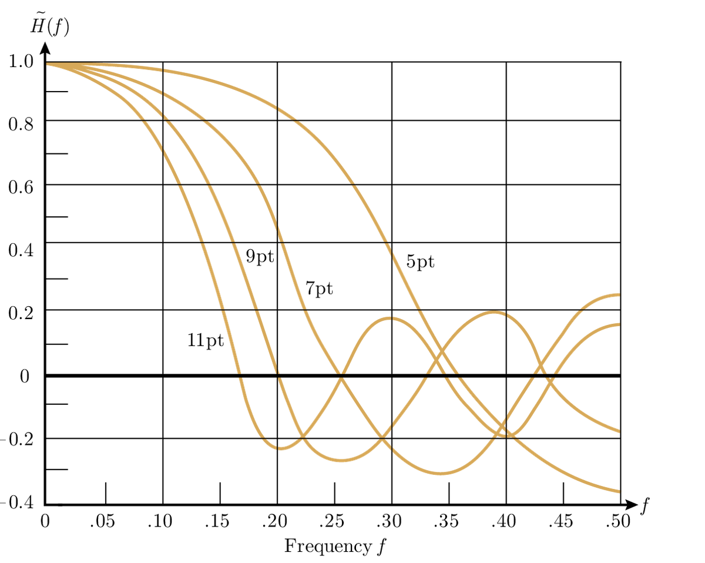
평활 공식은 계수에 중심 대칭을 가지는 반면, 미분 공식은 홀 대칭을 가집니다. 명백한 공식으로부터
우리는 어떤 공식이든 홀 함수와 짝 함수의 합임을 알 수 있으므로, 어떤 비재귀 디지털 필터든 평활 필터와 미분 필터의 합입니다. 이 두 특수 경우를 마스터하면 일반 경우를 손에 쥔 것입니다.
평활 공식에서는 고유값 곡선(전달 함수)이 코사인의 푸리에 전개임을 보는 반면, 미분 공식에서는 사인의 전개가 될 것입니다. 따라서 우리는, 달성하고자 하는 전달 함수가 주어지면, 주어진 함수의 푸리에 전개 문제로 이끌립니다.
이제 푸리에 급수의 짧은 요약으로 갑시다. 임의의 함수 f(t)가 다음과 같이 표현된다고 가정하면
우리는 직교성 조건(기초 삼각법과 단순 적분으로 찾을 수 있습니다)을 사용합니다.
다음을 얻기 위해서입니다.
그리고 첫 번째 계수에 a0/2를 썼기 때문에, ak에 대한 같은 공식이 k = 0의 경우에도 성립합니다. 복소 표기에서는 물론 훨씬 단순합니다.
다음으로 임의의 직교 함수 집합의 맞춤이 최소제곱 맞춤을 준다는 것을 증명해야 합니다. 직교 함수 집합을 가중 함수 w(t) ≥ 0를 가진 {fk(t)}라고 합시다. 직교성이란 다음을 의미합니다.
위와 같이, 형식적 전개가 계수들을 줄 것입니다.
여기서
함수들이 실수일 때이며 복소 함수의 경우에는 복소 켤레 함수로 곱해 줍니다.
이제 (대문자) 계수 Ck를 사용하는 완전한 직교 함수 집합의 최소제곱 맞춤을 고려합시다. 우리는
최소화할 것이 있습니다. Cm에 대해 미분하세요. 다음을 얻습니다.
그리고 재배열로부터 Ck = ck임을 봅니다. 따라서 사용된 직교 함수 집합이 무엇이든, 모든 직교 함수 맞춤은 최소제곱 맞춤입니다.
부등식을 추적하면, 일반적인 경우 베셀의 부등식(Bessel’s inequality)에 의해 다음을 갖게 됩니다.
합에서 취해진 계수의 수에 대해 말이죠. 그리고 이것은 유한 근사에서 충분한 항을 취했는지에 대한 이동 검증을 제공합니다. 실제로 이것은 푸리에 전개에서 얼마나 많은 항을 취할지에 대한 매우 유용한 지침임이 입증되었습니다.
15 디지털 필터-II
디지털 필터(digital filters)가 처음 등장했을 때 사람들은 이를 그저 고전적인 아날로그 필터(analog filters)의 한 변형으로만 보았다. 근본적으로 새롭고 다른 것이라는 사실을 알아보지 못한 것이다. 이는 컴퓨터 초기 시대에 사람들이 끝없이 저지르던 실수와 똑같다. 나는 “컴퓨터는 크고 빠른 책상 계산기에 지나지 않는다”는 말을 듣다 못해 귀에 못이 박이도록 들었다. “기계가 할 수 있는 일은 손으로도 할 수 있다”는 것이 그들의 말이었다. 이는 기계가 인간보다 빠르고, 정확하고, 신뢰할 수 있고, 비용이 덜 든다는 사실을 그저 무시하는 것이다. 대개 한 자릿수의 변화(10배의 차이)는 근본적으로 새로운 효과를 낳는다. 그런데 컴퓨터는 손으로 하는 계산보다 수없이 여러 배는 빠르다. 본질적인 차이가 없다고 주장한 사람들은 컴퓨터의 발전에 어떤 의미 있는 공헌도 하지 못했다. 반대로 의미 있는 공헌을 한 사람들은 컴퓨터를 새로운 무엇으로 보았고 옛 책상 계산기를 살짝 끌어올린 정도가 아니라 그 자체의 가치로 연구해야 할 대상으로 여겼다.
이것은 흔하고도 끊임없이 되풀이되는 실수다. 사람들은 언제나 새로운 것을 과거와 똑같은 것으로 생각하고 싶어 한다. 몸뿐 아니라 마음도 편안한 상태에 머물고 싶어 하기 때문이다. 그래서 자신의 코앞에서 탄생하고 있는 새 분야에 의미 있게 공헌할 기회를 스스로 막아버린다. 새롭다고 말해지는 것이 모두 진짜 새로운 것은 아니며 어떤 것이 언제부터 새로워졌는지 판단하기 어려운 경우도 있다. 하지만 “새것은 없다”는 너무나 흔한 반응은 어리석다. 어떤 것이 새롭다고 주장된다면, 그것이 과거를 약간 개선한 것에 지나지 않는다고 성급하게 단정하지 말라. 그것은 여러분에게 중요한 일을 해낼 큰 기회일지도 모른다. 물론 아무것도 아닐 수도 있다.
내가 처음 사용한 디지털 필터는 원시적인 컴퓨터 시대 초기에 쓰던 것으로, 먼저 세 개씩, 그다음 다섯 개씩 평활화(smoothing)하는 것이었다. 평활화 공식을 살펴보면, 세 개씩 평활화했을 때의 전달 함수(transfer function)는
그리기 쉽다. 다섯 개씩 평활화하는 것도 마찬가지인데, 다만 3/2가 5/2로 바뀔 뿐이고 역시 그리기 쉽다(그림 15.1). 한 필터 다음에 다른 필터를 거는 것은 분명히 그들의 곱이다(각 필터는 입력 고유함수에 그 주파수에서의 전달 함수를 곱한다). 그러면 구간 안에 영점이 세 개 생기고 끝값이 1/15이 됨을 알 수 있다. 검토해 보면, 세 개 숫자의 실행 합(running sum)을 계산한 다음 다섯 개 숫자의 실행 합을 계산하는 이 아주 단순한 프로그램 하나로 주파수의 위쪽 절반이 상당히 잘 제거된다. 컴퓨팅 실무에서 흔히 그렇듯이, 나눗셈은 맨 마지막으로 미루어져 끝에서 1/15를 한 번 곱하는 것으로 처리되었다.
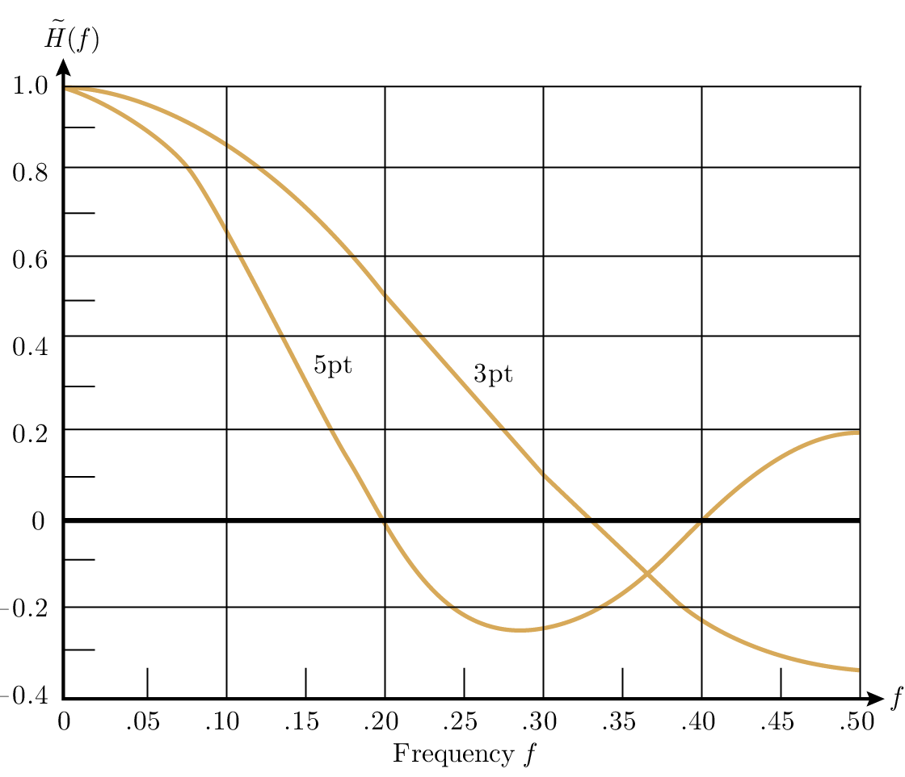
이제 여러분은, 모든 세부 사항에서, 디지털 필터가 어떻게 숫자의 흐름에서 주파수를 제거하는지 궁금할지도 모르겠다. 디지털 필터 강의를 들은 학생들조차 그 기적이 어떻게 일어나는지 전혀 명확하지 않은 경우가 많다. 그래서 나는 더 나아가기 전에 아주 단순한 디지털 필터 하나를 설계해 실제 숫자로 그 내부 작동을 보여주려고 한다.
계수가 딱 두 개인 단순한 필터를 설계하려 한다. 따라서 전달 함수에 대해 정확히 두 가지 조건을 만족시킬 수 있다. 이론에서는 각주파수 ω를 쓰지만, 실제로는 회전수 f를 쓰며, 그 관계는 다음과 같다.
디지털 필터에 대한 첫째 조건은 f = 1/6에서 전달 함수가 정확히 1이 되는 것이고(이 주파수는 필터를 그대로 통과시켜야 한다), 둘째 조건은 f = 1/3에서 0이 되는 것이다(이 주파수는 완전히 차단되어야 한다). 두 계수 a와 b를 가진 나의 단순한 필터는 다음과 같은 형태다.
고유함수 e2πifn를 대입하면 전달 함수를 얻을 수 있고 편의상 n = 0을 사용하면
해는 다음과 같다.
평활화 필터는 단순히 다음과 같다.
말로 표현하면, 필터의 출력은 세 개의 연속된 입력의 합을 2로 나눈 것이고 출력은 중간 입력 값의 반대 부호가 된다. (앞에서 본 세 개씩 평활화와 같은데 계수 1/2만 다르다.)
이제 필터 입력으로 쓸 표본 데이터를 만들어 보자. 주파수 f = 1/6에서는 그 주파수의 코사인을 사용하는데, 등간격 n = 0, 1, …에서 코사인 값들을 취한다. 두 번째 데이터 열에는 두 번째 주파수 f = 1/3을 사용하고 마지막으로 세 번째 열은 앞 두 열의 합이며 두 주파수가 같은 비율로 섞인 신호다.
n 1/6 1/3 합 0 1 1 2 1 1/2 -1/2 0 2 -1/2 -1/2 -1 3 -1 1 0 4 -1/2 -1/2 -1 5 1/2 -1/2 0 6 1 1 2 7 1/2 -1/2 0 8 -1/2 -1/2 -1 … … … …
이 데이터를 필터에 돌려 보자. 필터 공식에 따라 어느 열에서든 세 개의 연속된 숫자의 합을 계산한 다음 그 합을 2로 나눈다. 첫 번째 열에서 해보면, 필터가 한 줄씩 내려갈 때마다 입력 함수를 (1이라는 곱셈수로) 그대로 재생산하는 것을 볼 수 있다. 두 번째 열에서 필터를 시도하면, 입력 함수에 고유값 0이 곱해져 모든 출력이 정확히 0이 된다. 첫 두 열의 합인 세 번째 열은 첫 번째 주파수는 통과시키고 두 번째 주파수는 차단해야 하며 정확히 첫 번째 열이 출력으로 나온다. 주파수 0의 입력을 시도하면 모든 값이 정확히 3/2가 되어야 한다. f = 1/4를 시도하면 입력에 1/2가 곱해진 값을 얻어야 한다(f = 1/2에서의 전달 함수 값).
여러분은 방금 작동하는 디지털 필터를 보았다. 필터는 입력 신호를 모든 주파수로 분해하고 각 주파수에 대응하는 고유값(전달 함수)을 곱한 다음, 모든 항을 더해 출력을 낸다. 이 단순한 선형 공식이 이 모든 것을 해낸다!
이제 필터 설계 문제로 돌아가자. 이상적으로 우리가 바라는 것은, 정확히 통과시키는 주파수(고유값 1)와 차단하는 주파수(고유값 0) 사이에 날카로운 절단(cutoff)이 있는 전달 함수다. 아시다시피 푸리에 급수는 그러한 불연속 함수를 나타낼 수 있지만 무한히 많은 항이 필요하다. 그런데 실용적인 필터를 원한다면 쓸 수 있는 항이 얼마 없다. 평활화 필터에서 2k + 1개의 항은 자유 계수를 k + 1개만 주므로, 대응하는 코사인들의 합으로 만족시킬 수 있는 임의 조건도 k + 1개뿐이다.
원하는 전달 함수를 단순히 코사인들의 합으로 전개한 다음 절단(truncate)하면, 전달 함수에 대한 최소제곱 근사(least-squares approximation)를 얻게 된다. 그러나 불연속점에서의 최소제곱 적합(least-squares fit)은 여러분이 상상하는 것과 아마 다를 것이다.
불연속점에서 무엇이 나타나는지 이해하려면 깁스 현상(Gibbs phenomenon)을 조사해야 한다. 먼저 한 정리를 상기하자. 연속 함수들의 급수가 닫힌 구간에서 균등 수렴(uniform convergence)하면, 극한 함수는 연속이다. 그런데 우리가 근사하려는 극한 함수는 통과 대역과 차단 대역 사이에 점프(불연속)가 있어 연속이 아니다. 균등 수렴이 불가능하므로, 급수의 항을 아무리 많이 취해도 특이점 근처에서 상당한 초과(overshoot)가 나타날 것으로 예상할 수 있다. 항을 더 많이 취해도 초과의 크기는 0에 접근하지 않는다.
또 하나의 이야기. 마이컬슨-몰리 실험으로 유명한 마이컬슨(Michelson)은 푸리에 급수의 계수를 75항까지 구하는 아날로그 기계를 만들었다. 함수와 계수의 이중성 덕분에 그 기계는 계수에서 함수로 되돌아가는 것도 가능했다. 마이컬슨이 이를 시도하던 중 초과를 관찰하고 그것이 왜 생기는지 지역의 수학자들에게 물었다. 그들은 모두 그의 장비 문제라고 말했다. 그런데 그는 아주 신중한 실험자로 널리 알려진 사람이었다. 예일의 깁스(Gibbs)만이 귀를 기울여 그 문제를 조사했다.
가장 단순한 직접적 접근은 표준 불연속 함수, 이를테면 다음 함수를
유한 개 항의 푸리에 급수로 전개하고 항을 재배열한 다음, 첫 번째 극대점의 위치를 찾고 마지막으로 그곳에서 함수의 높이를 구하는 것이다. 푸리에 급수의 항 수가 무한대에 접근할 때의 극한에서 0.08949, 즉 8.949%의 초과가 나타난다는 것을 알 수 있다(그림 15.2). 깁스 현상을 발견할(정확히는 재발견할) 기회는 많은 사람에게 있었지만 그 노력을 기울인 것은 깁스였다. 이것은 내가 늘 주장하는 바, 즉 기회가 도처에 있지만 그 기회를 붙잡는 사람은 드물다는 것의 또 다른 예이다. 파스퇴르가 말했듯이, “우연은 준비된 마음에 미소 짓는다.” 이번에는 일류 과학자의 고민을 들을 준비가 되어 있고 그를 도와준 사람이 명성을 얻었다.
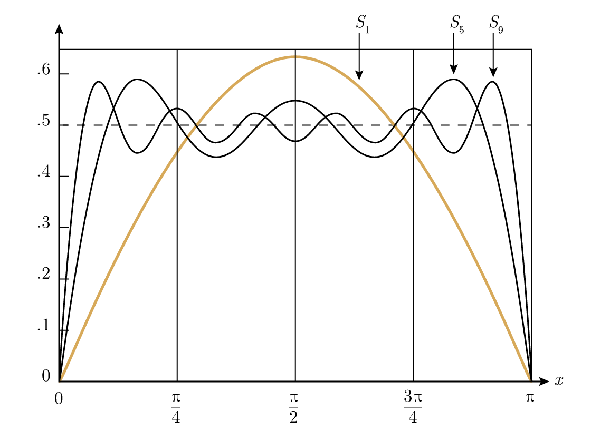
그것이 재발견된 것이라고 내가 말했다. 그렇다. 1850년대에 코시(Cauchy)의 교과서는 (1) 연속 함수들의 수렴 급수는 연속 함수로 수렴한다고 주장했고 (2) 불연속 함수의 푸리에 전개를 보여주었다. 이 둘은 정면으로 모순된다. 어떤 사람들은 그 문제를 조사하다가 균등 수렴이라는 개념이 필요하다는 것을 알게 되었다. 그래, 깁스 현상의 초과는 푸리에 급수뿐 아니라 어떤 연속 함수의 급수에서든 생기며 일부 사람에게는 알려져 있었지만 널리 퍼져 통용되지는 않았다. 일반적인 직교 함수 집합의 경우, 초과의 양은 불연속이 구간의 어디에 생기느냐에 달려 있다. 이는 초과의 양이 불연속의 위치와 무관한 푸리에 함수의 경우와 다르다.
푸리에 급수의 또 다른 특징을 다시 떠올려 드릴 필요가 있겠다. 함수가 (실용적인 의미에서) 존재하면 계수는 1/n 꼴로 감소한다. 함수가 연속이고(그림 15.3, 양 끝값이 같아야 한다) 도함수가 존재하면 계수는 1/n2 꼴로 감소하고 첫 도함수가 연속이고 두 번째 도함수가 존재하면 1/n3 꼴, 두 번째 도함수가 연속이고 세 번째 도함수가 존재하면 1/n4 꼴, 이런 식이다. 따라서 수렴 속도는 실수선 위의 함수에서 직접 관찰할 수 있다. 이는 수렴이 복소 평면에 있을 수 있는 특이점에 의해 좌우되는 테일러 급수와는 다르다.
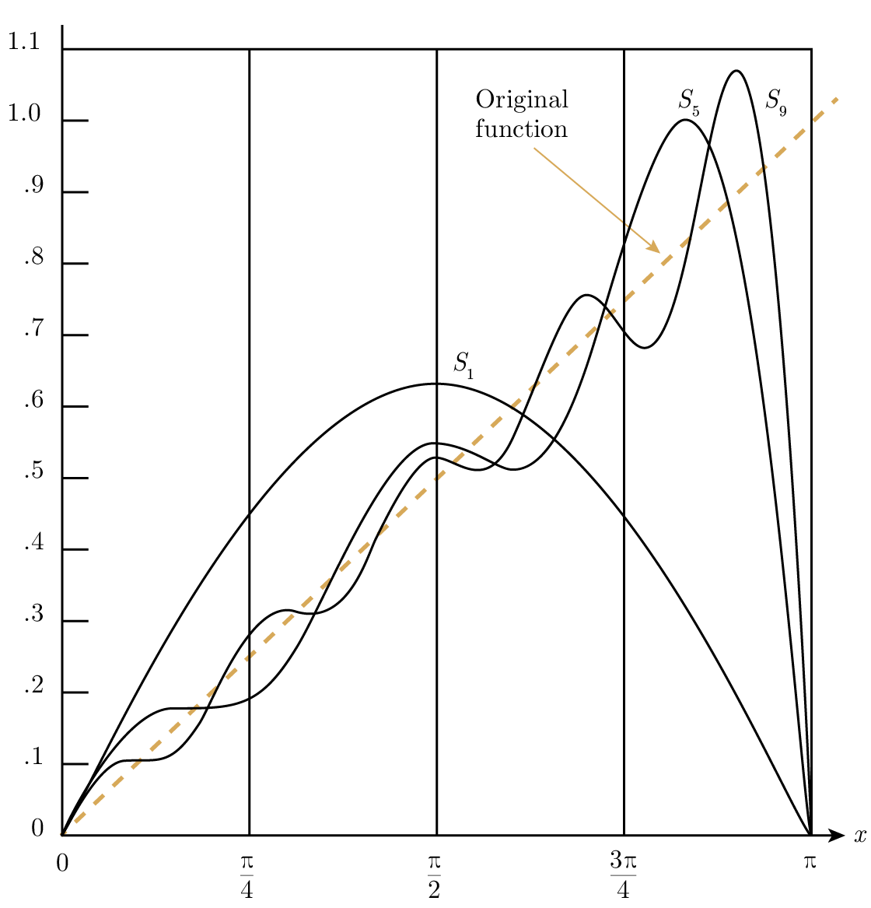
이제 푸리에 급수로 앞쪽 항을 얻는 평활화 디지털 필터 설계로 돌아가자. 최소제곱 적합은 어떤 불연속점에서도 문제가 있다는 것을 본다. 항을 아무리 먼 데까지 취해도, 유한 개 항의 전달 함수에는 성가신 초과가 어김없이 생긴다.
이 초과를 없애기 위해 먼저 란초스 창(Lanczos window, ‘박스카(box car)’ 또는 ‘직사각형(rectangular)’ 창이라고도 한다)을 살펴보자. 란초스가 추론한 바는 이렇다. 출력 함수를 그 안에 있는 최고 주파수의 한 주기 길이인 구간에 걸쳐 평균한다면, 이 평균화가 리플을 크게 줄여줄 것이다. 이를 자세히 보려면 N번째 고조파에서 절단된 푸리에 급수 전개를 취하고 전체 구간 중 길이 1/N의 대칭 구간에서 점 t 주변을 적분한다. 평균화를 위한 적분을 세우면,
적분하여 다음을 얻는다.
극한값을 대입하고 삼각법과 대수학을 조금 동원하면 다음이 얻어진다.
따라서 원래 계수에 소위 시그마 인자(sigma factors)가 곱해진 결과가 나온다.
이 숫자들을 k(푸리에 급수에서 유지하는 항의 수이며 N은 고정)의 함수로 살펴보면, k = 0에서 시그마 인자는 1이고 시그마 인자는 k = N에서 0이 될 때까지 감소한다. 따라서 이것들은 창의 또 다른 예이다. 란초스 창의 효과는 초과를 약 0.01189(약 7배쯤)로 줄이고 첫 번째 극소값을 0.00473(약 10배쯤)로 줄이는 것으로, 깁스 현상의 상당하나 완전하지는 않은 감소다.
하지만 이 문제에 관한 나의 모험으로 돌아가자. 여러분도 알다시피, 불연속점에서 절단된 푸리에 전개는 양쪽에서 온 두 극한값의 중간값을 취한다. 유한한 이산(discrete) 경우를 생각하면서 나는, 통과 대역에서 다 1 값을 취하고 차단 대역에서 0 값을 취하는 대신 전이(transition) 값에서는 1/2를 취해야 한다고 추론했다. 그런데 놀랍게도, 전달 함수가 다음과 같이 된다.
그리고 이제 (회전 표기법으로 되돌려) 추가 인자가 붙는다.
사인 항의 N + 1은 N이 되고 분모 N + 1도 N이 된다. 이 전달 함수는 나이퀴스트 주파수(Nyquist frequency)에서 0이 되고 더 높은 주파수들을 모두 추가로 감쇠시키므로, 저역 통과 필터로는 란초스 창보다 더 낫다. 나는 삼각급수 책들을 뒤져보았는데 오직 한 권, 그것도 지그문트(Zygmund)의 두 권짜리 저작에서만 그것을 찾을 수 있었고 거기서 수정 급수(modified series)라고 불렸다. 이번에는 ’준비되어 있음’이라는 것이 그렇게 큰 결과로 보답하지는 못했다. 하지만 스스로 찾아낸 이상, 나는 푸리에 급수 계수를 (얼마나, 어디서 변형할지는 찾아야 했지만) 더 변형하면 더 잘할 수 있을지도 모른다고 당연히 추론했다. 요컨대 나는 ’창’이 무엇인지 더 선명하게 보게 되었고 점점 그 창들의 가능성을 더 자세히 살펴보는 쪽으로 이끌렸다.
중요한 깁스 현상에 대한 또 세 번째 접근은 푸리에 급수를 결합하는 문제를 통해서다. g(x)를 다음과 같이 하고(좋은 이유로 중립 변수 x를 쓰고 있다)
다른 함수를 다음과 같이 하자.
g(x)와 h(x)의 합과 차는, 대응하는 계수의 합 또는 차를 가진 급수임이 분명하다.
곱은 별개의 문제다. 분명히 다시 지수(exponential)들의 합이 나올 것이고 n = k + m으로 놓으면 계수는 다음과 같이 될 것이다.
항들의 합인 einx의 계수를 원래 계수 배열의 컨볼루션(convolution)이라고 한다.
ck* 계수 배열에 0이 아닌 계수가 몇 개뿐인 경우, 이를테면 0 주위에 대칭으로 놓여 있다고 하면, 그 계수는 다음과 같을 것이다.
그리고 이것이 바로 디지털 필터의 원래 정의임을 알아본다! 따라서 필터는 한 배열과 다른 배열의 컨볼루션이며 이는 곧 그에 대응하는 함수들의 곱셈에 지나지 않는다! 한쪽에서의 곱셈은 방정식의 반대쪽에서의 컨볼루션이다.
이 관찰의 활용 예로, 아주 자주 있는 경우인데, 잠재적으로 무한한 데이터 배열이 있지만 유한한 개수만 기록할 수 있다고 해 보자(예: 별을 관측하는 동안 망원경을 켰다 껐다 하는 경우). 이 함수 un은 (2N* + 1)개의 1로 된 범위 밖이 모두 0인 직사각형 창을 통해 들여다보인다. 관측하는 곳은 1, 관측하지 않는 곳은 0이다. 관측된 데이터에서 원래 배열의 푸리에 전개를 계산하려면, 원래 계수와 창 배열의 계수를 반드시 컨볼루션해야 한다.
일반적으로 단위 면적의 창을 원하므로 마지막에 (2N + 1)로 나누어야 한다. 이 배열은 시작값 e−iNx이고 공비가 eix인 기하급수(geometric progression)다.
x = 0에서는 1 값을 취하고 그 외에는 분자의 사인 함수 때문에 급격히 진동하며 분모의 사인 증가 때문에 천천히 감쇠한다(x의 범위는 -π에서 π까지). 그래서 우리는 광학에서 전형적인 회절 패턴(diffraction pattern)을 얻게 된다.
표본 추출 전의 연속 경우에도 상황은 거의 같지만 우리가 들여다보는 직사각형 창의 변환은 (모든 세부 사항을 무시하면) 일반적인 형태를 가진다.
계단 함수(불연속)와 그것의 컨볼루션은, 살펴보면 깁스 현상이 된다(그림 15.2). 따라서 우리는 깁스 현상의 초과를 또 다른 관점에서 보게 된다.
다소 까다로운 삼각함수 조작 몇 가지를 거치면, 함수를 표본 추출한 다음 관측 범위를 제한하든 관측 범위를 제한한 다음 표본 추출하든 똑같은 결과에 도달한다는 것을 직접 확신하게 될 것이다. 이론도 같은 것을 알려준다.
이산 란초스 창을, 바깥쪽 두 계수만 1에서 1/2로 바꾸는 단순한 변형이 훨씬 더 좋은 창을 만들어냈다. 란초스 창은 그 시그마 인자로 모든 계수를 수정했지만 그 형태가 끝에서 모서리를 가졌다. 이는 주기성 때문에 창 형태의 첫 도함수에 불연속이 두 개 있다는 뜻이며 따라서 수렴이 느리다. 원래 푸리에 급수의 계수에 올린 코사인(raised cosine) 형태의 가중치를 준다고 추론하면
란초스 창과 비슷한 무언가를 얻겠지만 이제는 매끄러움이 더 크므로 수렴이 더 빠를 것이다.
이것을 지수 형태로 쓰면 지수에 대한 가중치는 다음과 같다.
이것이 폰 한 창(von Hann window)이다. 데이터 영역에서 이 가중치로 평활화하는 것은 주파수 영역에서 창을 씌우는(곱하는) 것과 동등하다. 사실 나는 전력 스펙트럼(power spectra) 연구 초기에 폰 한 창을 재발견했고 나중에 존 튜키(John Tukey)가 폰 한이 아주 오래전에 경제학과 관련해 그것을 썼다는 것을 알아냈다. 이 창이 신호에 끼치는 영향을 살펴보면, 꼬리 부분에서 빠르게 감소하지만 스펙트럼의 다른 부분이 ‘새어 들어오는’ 몇 개의 측엽(side lobes)을 가진다.
우리는 때때로 강한 선(line)을 가진 스펙트럼을 다루어야 했고 폰 한 창을 통해 스펙트럼의 다른 곳을 볼 때 그 측엽이 많은 전력을 들여보낼 수 있었다. 해밍 창(Hamming window)은 최대 측엽이 최소가 되도록 고안되었다. 그 대가로 평균제곱(mean square) 의미에서 총 누설이 훨씬 커지지만 단일한 강한 선은 통제 아래 유지된다. 폰 한 창을 가중치가 있는 ’올린 코사인’이라고 부른다면
해밍 창은 가중치가 있는 ’받침대 위의 올린 코사인(raised cosine on a platform)’이다.
(그림 15.4). 사실 가중치는 데이터 길이 N에 의존하지만 그 정도가 극히 미세해서 이 상수들이 모든 경우에 관례적으로 쓰인다. 해밍 창은 특이한 계수 덕분에 신비롭고 그래서 인기 있는 아우라를 지녔다. 하지만 그것은 특정한 일을 하도록 설계된 것이지, 모든 문제에 대한 보편적인 해법은 아니다. 대부분의 경우 폰 한 창이 더 낫다. 문헌에는 아마 100개쯤 되는 다양한 창들이 있고, 각각은 어떤 특별한 장점을 가지며, 어느 것도 여러분이 원하는 모든 이점을 다 가지지는 못한다.
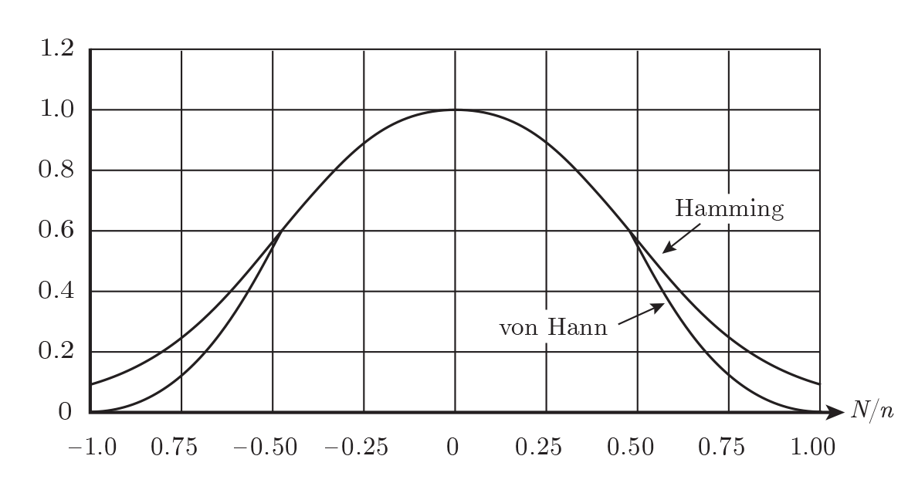
이 문제에 대해 여러분을 진짜 내부자로 만들어 드리려면 또 하나의 이야기를 해야겠다. 나는 존 튜키에게 농담을 하곤 했다. 여러분의 이름이 와트(watt), 암페어(ampere), 볼트(volt), 푸리에(fourier, 때때로)처럼 소문자로 적힐 때만 진짜 유명해진 거라고. （설명: 단위 이름은 사람 이름에서 따왔지만 관례상 소문자로 쓴다.） 튜키가 전력 스펙트럼 연구를 처음 논문으로 쓸 무렵, 그는 프린스턴에서 전화를 건 뒤 해밍 창에 내 이름을 써도 되겠냐고 물었다. 얼마간 반대하다가 나는 그의 요청을 받아들였다. 그 책은 ’hamming’이라는 이름이 적힌 채 나왔다! 거기에 내가 있다!
어떤 의미에서 여러분을 유명하게 만드는 것은 여러분을 인용하고 언급해 주는 친구들이다. 그리고 다른 사람들이 자기 일을 해낼 때 도움이 되어주는 것은 값진 일이라고 나는 주장한다. 그들은 시간이 지나 그 일의 공을 여러분에게 돌릴지도 모른다. 스스로 공을 차지하려 드는 것보다는 그편이 낫다. 오늘날처럼 복잡한 프로젝트의 시대에는 협력이 필수다. 홀로 일하는 사람의 시대는 빠르게 저물고 있다. 팀워크가 점점 더 필수가 되어가므로, 팀에서 일하는 법을 배우고 실은 남을 도울 수 있는 자리를 적극적으로 찾아보는 것도 좋은 생각이다. 어쨌든 중요한 문제를 좋은 사람들과 함께 푸는 즐거움은 결과적으로 얻는 명성보다 더 큰 기쁨이다. 그리고 중요한 문제를 고른다면, 대개 경영진은 필요한 지원이라면 얼마든지 기꺼이 제공해 줄 것이다.
벨 전화연구소(Bell Telephone Laboratories)에서 수년간 컴퓨팅에 종사하는 동안 나는 상황의 물리(physics)가 포함된 결과를 직접 논문으로 쓰는 일을 아주 조심스럽게 피했다. ’남의 아이디어를 훔치는 사람’이라는 평판을 얻지 않으려는 것이었다. 대신 그들이 결과를 쓰게 하고 내가 공동 저자가 되길 원한다면 좋다고 했다! 팀워크는 다른 사람과 그들의 기여에 대해 아주 세심하게 배려해야 한다는 뜻이며 그들은 자신의 기여를 여러분과는 다른 관점에서 볼 수도 있다!
16 디지털 필터-III
이제 비순환 필터(nonrecursive filter)의 체계적인 설계를 다룰 준비가 되었습니다. 설계 방법은 여섯 부분으로 이루어진 그림 16.1에 기반을 둡니다. 왼쪽 위에는 당신이 갖고 싶어 하는 이상적인 필터의 스케치가 있습니다. 그것은 저역 통과(low-pass), 고역 통과(high-pass), 대역 통과(band-pass), 대역 저지(band-stop), 노치 필터(notch filter), 혹은 미분기(differentiator)일 수도 있습니다. 미분기 필터를 제외한 어떤 것이든 대개 여러 구간에서 높이로 0 아니면 1을 원할 겁니다. 반면 미분기라면 iω를 원하죠. 고유함수(eigenfunction)의 도함수는
이므로, 원하는 고유값은 바로 그 계수 iω입니다. 미분기의 경우 어떤 주파수에서 잘라내기가 생길 가능성이 높습니다. 아시다시피 미분은 증폭시키기 때문이죠. ω를 곱하는 셈이라 고주파에서 더 커지는데, 바로 그 고주파에 잡음이 있는 경우가 보통입니다, 그림 16.2. 그림 15.2도 함께 보세요.
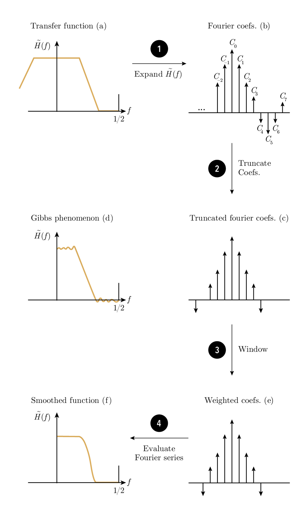
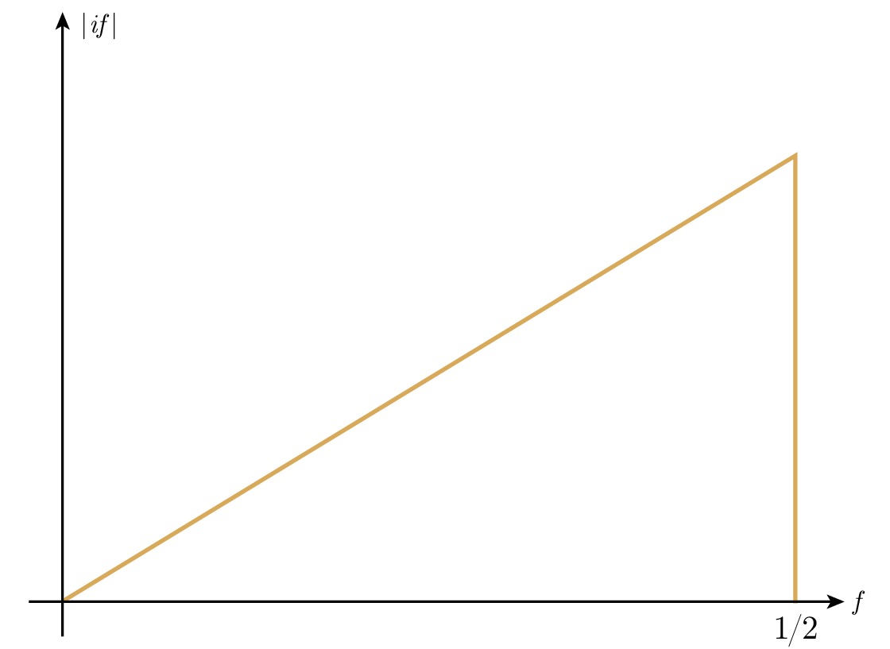
대응하는 형식적(formal) 푸리에 급수의 계수는 쉽게 계산됩니다. 그 표현식들의 피적분함수는 단순하니까요(도함수가 있을 때 부분 적분(integration by parts)을 쓰면 됩니다). 급수를 복소 지수 함수 형태로 나타낸다고 가정해 봅시다. 그러면 필터의 계수는 대응하는 지수 항들의 푸리에 계수에 불과합니다. 그림 16.1의 오른쪽 위에는 그 계수들을 상징적으로 스케치해 놓았습니다(물론 그것들은 복소수입니다).
다음으로, 우리는 무한 푸리에 급수를 2N+1 항으로 잘라내야 합니다(즉 사각 윈도우, rectangular window를 쓰는 셈이죠), 그림 16.1에 대응하는 푸리에 표현이 왼쪽에 있는데, 깁스 효과(Gibbs effect)를 보여줍니다.
셋째, 우리는 이 깁스 효과의 가장 심한 부분을 제거할 윈도우를 고릅니다. 윈도우가 적용된 계수는 오른쪽 아래에, 그에 대응하는 최종 디지털 필터(디지털 필터)는 왼쪽 아래에 나와 있습니다. 실제로는 전달 함수(transfer function)를 평가하기 전에 필터 계수를 반올림해서 그 효과가 드러나도록 해야 합니다.
위에 스케치한 방법에서는 N, 즉 유지할 항의 개수와 특정 윈도우 모양을 둘 다 골라야 합니다. 그리고 얻은 결과가 마음에 들지 않으면 새로 선택해야 하죠. 이것은 “시행착오” 설계 방법입니다.
J. F. 카이저(J. F. Kaiser)는 N과, 한 윈도우 계열 안에서 그 일을 해낼 원소를 둘 다 찾아내는 설계 방법을 제시했습니다. 모양 외에 두 가지를 지정해야 합니다. 하나는 이상적인 값에서 벗어나는 것을 용납할 수 있는 수직 거리로 δ라고 표기하고 다른 하나는 통과 대역(pass band)과 저지 대역(stop band) 사이의 전이 폭(transition width)으로 ΔF라고 표기합니다, 그림 16.3.
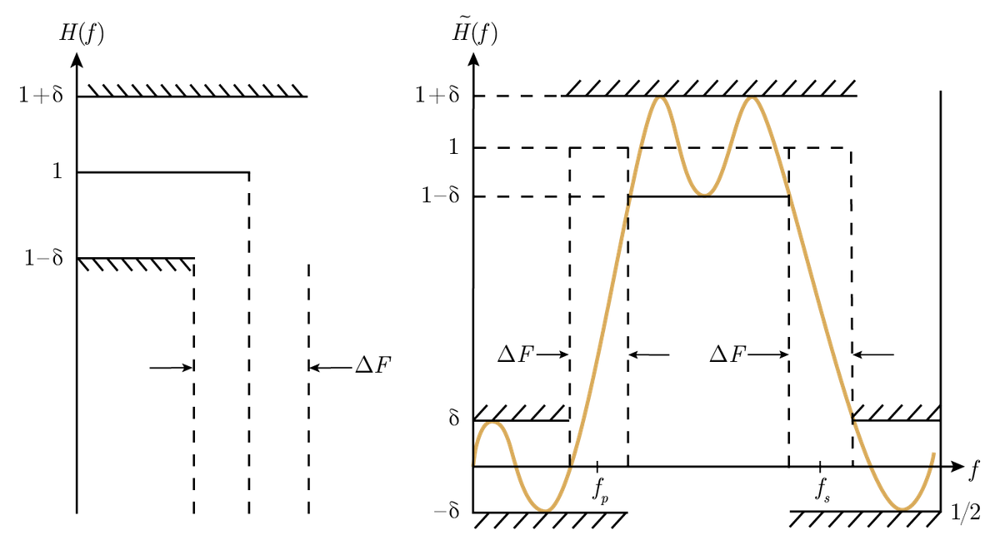
대역 통과 필터의 경우, fp는 대역 통과 주파수, fs는 대역 저지 주파수로 두면, 설계 공식의 순서는 다음과 같습니다.
N이 너무 크면 멈추고 설계를 다시 생각해 봐야 합니다. 그렇지 않으면 다음을 차례로 계산해 나갑니다.
(이것은 그림 16.4에 그려져 있습니다). 대역 통과 필터에 대한 원래의 푸리에 계수는 다음과 같이 주어집니다.
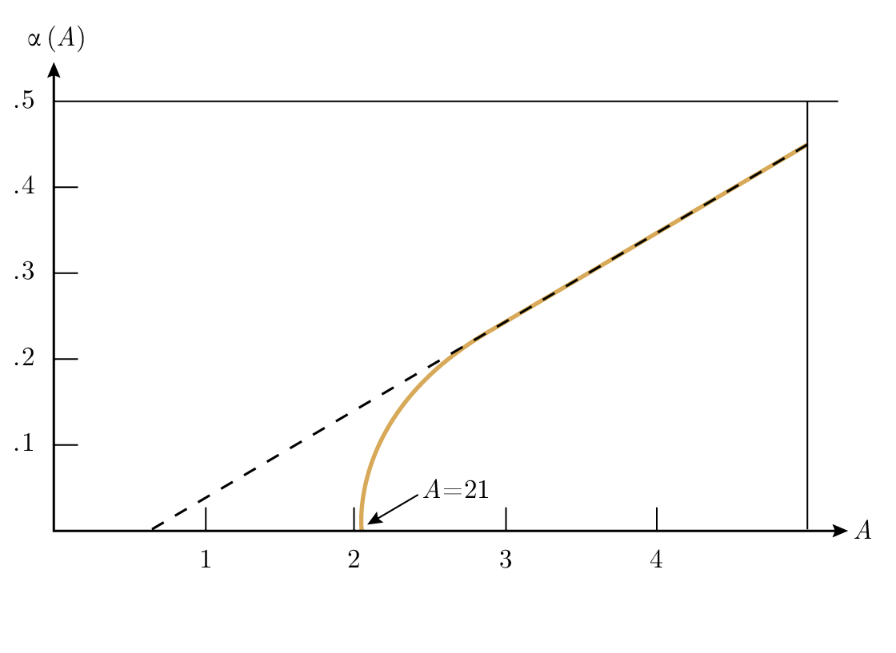
이 계수들은 윈도우의 대응하는 가중치 wk와 곱해져야 합니다.
여기서
I0(x)는 0차 순수 허수 베셀 함수(pure imaginary Bessel function)입니다. 이것을 계산하려면 비교적 적은 항만 필요합니다. 분모에 (n)!2이 있어서 급수가 빠르게 수렴하기 때문입니다.
I0(x)는 재귀적으로(recursively) 계산하는 것이 가장 좋습니다. 주어진 x에 대해 급수의 연속 항들은 다음과 같이 주어집니다.
저역 통과나 고역 통과의 경우, fp나 fs 중 하나의 주파수가 가능한 극한값을 갖습니다. 대역 저지 필터에서는 계수 ck에 대한 공식에 약간의 변화가 있습니다.
카이저 윈도우의 계수, 즉 wk를 살펴봅시다.
이 숫자들을 살펴보면, α > 0에 대해 올림 코사인(raised cosine)과 비슷한 모양을 하고 있음을 알 수 있습니다.
그리고 폰 한(von Hann) 윈도우나 해밍(Hamming) 윈도우와 닮았죠. A > 21일 때 “플랫폼(platform)”이 있습니다. A > 21이면 a = 0이 되고 모든 wk가 1이 되어 랭코스(Lanczos) 형태의 윈도우가 됩니다. A가 커질수록 플랫폼이 점차 나타납니다. 이처럼 카이저 윈도우는 더 널리 쓰이는 윈도우들 중 많은 것과 비슷한 속성을 지니고 있으며 당신이 쓰는 특정 윈도우는 추측이나 선입견이 아니라 그의 윈도우를 통해 당신의 설계 사양에서 결정됩니다.
카이저는 어떻게 그 공식을 찾아냈을까요? 어느 정도는 시행착오로 찾아냈습니다. 그는 먼저 단일 불연속점이 있다고 가정하고 상승 시간 ΔF와 리플 높이 δ를 둘 다 살펴보기 위해 컴퓨터에서 많은 사례를 돌렸습니다. 상당한 사고와 약간의 천재성, 그리고 A의 함수를 관찰하면서-A가 커질수록 랭코스 윈도우(A < 21)에서 높이가 점점 커지는 플랫폼 1/I0(α)로 넘어간다는 점을 알아차리면서-말이죠. 그는 이상적으로는 장타원체 함수(prolate spheroidal function)를 원했지만 자신이 다루는 값들에서는 그것들이 I0(x)로 정확하게 근사된다는 점을 알아챘습니다. 그는 결과를 도시하고 그 함수들을 근사했습니다. 그에게 지수 0.4를 어떻게 얻었는지 물어봤습니다. 그는 0.5를 시도해 보니 너무 컸고 그다음 자연스러운 선택인 0.4가 아주 잘 맞는 것 같았다고 대답했죠. 이론 연구에서조차 이론적 사고를 컴퓨터를 실험 도구로 써서 매우 유용한 결과를 얻는 방법의 좋은 예입니다.
카이저의 방법은 드물게 실패할 때가 있습니다. 가장자리(edge)가 두 개 이상 있기 때문이죠(실제로는 주파수 선의 음의 부분에 가장자리의 대칭 영상이 존재합니다). 서로 다른 가장자리에서 온 리플이 우연히 결합해 필터 리플이 지정된 양을 넘어설 수 있습니다. 이런 경우, 아주 드물게 생기지만 더 작은 허용 오차로 그저 설계를 반복하면 됩니다. 이 전체 프로그램은 ti-59 같은 원시적인 휴대용 프로그램 가능 계산기에도 쉽게 들어가며 현대적인 pc는 말할 것도 없습니다.
다음으로 유한 푸리에 급수로 넘어갑시다. 놀라운 사실은 푸리에 함수들이 선분 위에서뿐 아니라, 균등 간격의 이산 점 집합에서도 직교(orthogonal)한다는 것입니다. 따라서 이론은 거의 비슷하게 진행되겠지만 푸리에 급수에서 결정되는 계수는 점의 개수만큼만 존재할 수 있습니다. 흔한 경우인 2N개의 점에서는 계수가 가장 높은 주파수의 항이 하나뿐인데, 그것은 코사인 항입니다(사인 항은 표본 점들에서 동일하게 0이 되죠). 계수들은 적절한 푸리에 함수를 곱한 데이터 점들의 합으로 결정됩니다. 결과로 나온 표현은 반올림 오차 범위 안에서 원래 데이터를 재현합니다.
확장을 계산하려면 2N 항 각각에 2N 번의 곱셈과 덧셈이 필요해서 (2N)2 정도의 곱셈·덧셈 연산이 필요해 보입니다. 그러나 (1) 곱셈을 하기 전에 같은 승수를 가진 항들의 덧셈과 뺄셈을 먼저 수행하고 (2) 낮은 주파수를 곱해서 높은 주파수를 만들어내는 방식을 둘 다 쓰면서 고속 푸리에 변환(fft, fast Fourier transform)이 등장해 약 N log N 번의 연산만으로 충분해졌습니다. 이런 계산 노력의 감소는 과학과 공학의 여러 영역을 크게 바꿔놓았습니다-한때는 시간과 비용 양쪽에서 불가능했던 일이 이제는 일상적으로 이루어집니다.
이제 또 하나의 삶에서 온 이야기를 들려드리죠. 여러분은 모두 고속 푸리에 변환과 튜키-쿨리(Tukey-Cooley) 논문에 대해 들어보셨을 겁니다. 그것은 때때로 튜키-쿨리 변환이나 알고리즘으로 불립니다. 튜키는 나에게 fft의 기본 아이디어를, 그런대로, 제안해 주었습니다. 그 당시 나는 IBM 카드 프로그램 계산기(cpc, Card Programmed Calculator)를 갖고 있었는데, “버터플라이(butterfly)” 연산 때문에 내가 가진 장비로는 완전히 실행 불가능했죠. 몇 년 뒤 나는 내부 프로그램 방식의 IBM 650을 갖고 있었고 그가 다시 그것을 언급했습니다. 내가 기억한 것은 그것이 튜키의 드문 나쁜 아이디어 중 하나라는 것뿐이었습니다. 그리고 왜 나쁜지, 즉 당시 내 장비 때문이라는 이유를 완전히 잊어버렸죠. 그래서 나는 fft를 하지 않았습니다. 그런데 내가 이미 출판한 책(1961년)이, 내가 필요한 모든 사실을 알고 있었고 쉽게 해낼 수 있었음을 보여줍니다!
교훈: 어떤 일을 할 수 없다는 것을 알게 되면, 그 핵심 이유도 함께 기억하십시오. 그래야 나중에 상황이 바뀌었을 때 “그건 할 수 없어.”라고 말하지 않게 됩니다. 내 실수를 생각해 보세요! 사람이 그보다 더 어리석을 수 있을까요? 내 자존심을 위해 말하자면, 이것은 흔한 실수입니다(그리고 나는 한 번 이상 저질렀죠). 하지만 fft에 대한 나의 실수 덕분에 이제는 그것에 매우 민감해졌습니다. 나는 또한 다른 사람들이 그런 짓을 할 때도 알아차립니다-아주 흔하죠! 내가 얼마나 어리석었고 무엇을 놓쳤는지에 대한 이 이야기를 기억하고 당신 자신도 그런 실수를 하지 마십시오. 어떤 것이 불가능하다고 판단했다면, 나중에 여전히 불가능하다고 말하기 전에, 원래 “할 수 없다”고 말했던 모든 세부 사항을 먼저 다시 검토하지 않는 한 그렇게 말하지 마십시오.
이제 전력 스펙트럼(power spectra)이라는 민감한 주제로 넘어가야 합니다. 그것은 실수 영역에서 주어진 주파수의 두 계수의 제곱의 합, 혹은 복소 표기법에서는 절댓값의 제곱입니다. 이것을 살펴보면, 이 양이 계수들이 원점의 위치에 의존하는 것과는 달리, 시간의 원점에는 의존하지 않고 오직 신호 그 자체에만 의존한다는 것을 확신하게 될 것입니다. 스펙트럼은 과학과 공학의 역사에서 매우 중요한 역할을 해왔습니다. 원자의 검은 상자를 열어 보어(Bohr)가 그 안을 들여다볼 수 있게 해준 것은 바로 스펙트럼 선(spectral lines)이었습니다. 1925년 무렵 시작된 더 새로운 양자역학이 사물을 물론 약간 수정했지만 스펙트럼은 여전히 열쇠였습니다. 우리는 또한 입력의 스펙트럼과 출력의 스펙트럼, 그리고 상관 관계(correlations)를 조사해서 검은 상자의 내부를 이해하는 방식으로 상자를 정기적으로 분석합니다-항상 내부가 유일한 것은 아니지만 일반적으로 우리는 새 이론을 세울 만한 충분한 단서를 얻습니다.
우리가 하는 일과 그 함의를 신중하게 분석해 봅시다. 왜냐하면 우리가 하는 일이 우리가 볼 수 있는 것을 크게 좌우하기 때문입니다. 적어도 우리의 상상 속에는 대개 연속 신호가 있습니다. 이것은 보통 끝이 없는데, 우리는 길이 2L의 시간 표본을 취합니다. 이것은 신호에 랭코스 윈도우를 곱하는 것과 같으며 원한다면 상자 트레인(box car)이라고 부르죠. 이는 곧 원래 신호가 (sin x)/x 형태의 대응하는 함수와 합성곱(convolved)된다는 뜻입니다, 그림 16.5-신호가 길수록 (sin x)/x 루프는 더 좁아집니다. 각각의 순수한 스펙트럼 선은 그 (sin x)/x 모양으로 번져나갑니다.
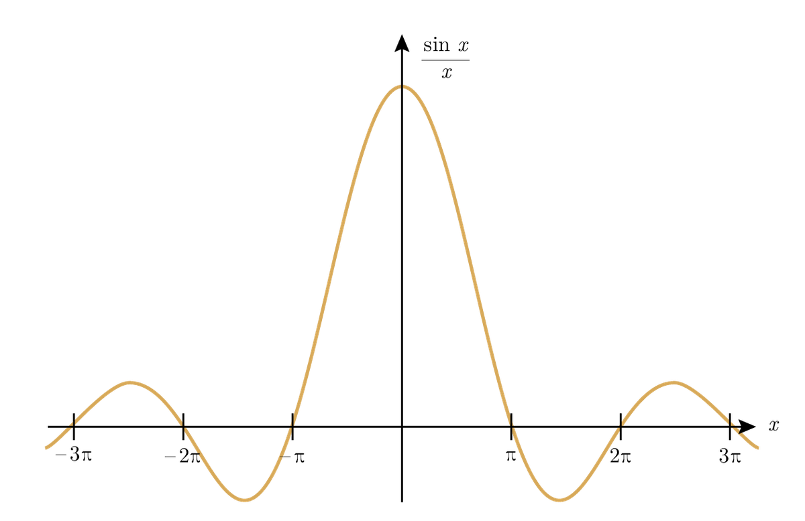
다음으로 우리는 시간상 균등 간격으로 표본을 취하고 모든 더 높은 주파수들은 더 낮은 주파수로 에일리어싱(aliasing)됩니다. 이 두 연산을 바꾸는 것, 즉 먼저 표본을 취하고 나서 범위를 제한하는 것이 같은 결과를 준다는 것은 명백합니다-그리고 앞서 말했듯, 나는 이론상 참이어야 한다고 생각했던 것이 실제로도 참임을 확신하기 위해 한때 모든 대수적 세부 사항을 신중히 계산해 본 적이 있습니다.
그런 다음 우리는 fft를 쓰는데, 그것은 유한 푸리에 급수의 계수를 얻는 영리하고 정확한 방법에 불과합니다. 하지만 유한 푸리에 급수 표현을 가정하면 우리는 함수를 주기적으로 만듭니다-그리고 그 주기는 정확히 표본 간격 크기에 우리가 취한 표본 수를 곱한 것과 같습니다! 이 주기는 원래 신호의 주기와 대개는 아무 상관이 없습니다. 우리는 모든 비고조(non-harmonic) 주파수를 강제로 고조 주파수로 밀어 넣습니다-연속 스펙트럼을 강제로 선 스펙트럼으로 만드는 것입니다! 이 강제 변환은 국소적 효과가 아닙니다. 쉽게 계산할 수 있듯이, 비고조 주파수는 다른 모든 주파수들로 흘러 들어가며 물론 인접한 주파수로 가장 강하게, 하지만 더 먼 주파수로도 무시할 수 없을 정도로 들어갑니다.
나는 평균을 제거하는 표준적인 통계적 꼼수에 대해 얼버무리고 지나왔습니다-편의상 또는 교정(calibration)상의 이유로 말이죠. 이것은 스펙트럼에서 0 주파수의 양을 0으로 줄이고 스펙트럼에 상당한 불연속을 만들어냅니다. 나중에 윈도우를 쓰면, 이것을 이웃 주파수들에 그저 번져나가게 할 뿐입니다. 튜키를 위해 데이터를 처리할 때 나는 비행기나 미사일의 비행에 대한 일부 데이터에서 정기적으로 선형 추세선, 심지어 추세 포물선까지 제거한 다음 나머지를 분석했습니다. 하지만 두 신호의 합의 스펙트럼은 스펙트럼들의 합이 아닙니다-전혀 아니죠! 두 함수를 더할 때 개별 주파수들은 대수적으로 더해지며 그들은 우연히 서로를 강화하거나 상쇄할 수 있어서 완전히 잘못된 결과를 낼 수 있습니다! 나의 이런 반박에 대해 합리적으로 대답할 수 있는 사람을 나는 아무도 모릅니다-우리는 다른 방법을 모르기 때문에 어쩔 수 없이 여전히 그렇게 합니다-하지만 추세선은 끝부분에 큰 불연속이 있고(기억하세요, 우리는 모든 함수가 주기적이라고 가정하고 있습니다), 따라서 그 계수들은 1/k처럼 떨어져 나가는데, 이는 전혀 빠르지 않습니다!
이제 이론으로 넘어갑시다. 실제 잡음의 모든 스펙트럼은 무한 주파수로 갈수록 상당히 빠르게 떨어져 나갑니다. 그렇지 않으면 무한한 에너지를 갖게 되니까요, 그림 16.6. 하지만 표본 추출 과정은 더 높은 주파수를 더 낮은 주파수로 에일리어싱하고 표시된 것처럼 접히는(folding) 동작은 평평한 스펙트럼을 만들어내는 경향이 있습니다-기억하세요, 에일리어싱될 때 주파수들은 대수적으로 더해집니다. 그래서 우리는 잡음에 대해 평평한 스펙트럼을 보는 경향이 있고 그것이 평평하다면 우리는 그것을 백색 잡음(white noise)이라고 부릅니다. 신호는, 보통, 주로 더 낮은 주파수에 있습니다. 이것은 “과도 표본 추출(over-sampling)”(나이퀴스트 정리, Nyquist theorem에서 요구되는 것보다 더 자주 표본을 취하는 것)을 포함한 여러 이유로 참이며 이는 계산 장비의 오차를 줄이기 위한 평균화를 얻을 수 있다는 뜻입니다. 따라서 전형적인 스펙트럼은 그림 16.6에 보이는 것처럼 보일 것입니다. 잡음을 제거하기 위해 저역 통과 필터가 널리 쓰이는 이유가 바로 여기 있습니다. 어떤 선형 방법도 신호와 잡음을 같은 주파수에서 분리할 수 없지만 신호를 넘어서는 주파수들은 저역 통과 필터로 제거할 수 있습니다. 따라서 우리가 “과도 표본 추출”을 할 때, 저역 통과 필터로 더 많은 잡음을 제거할 기회를 얻습니다.
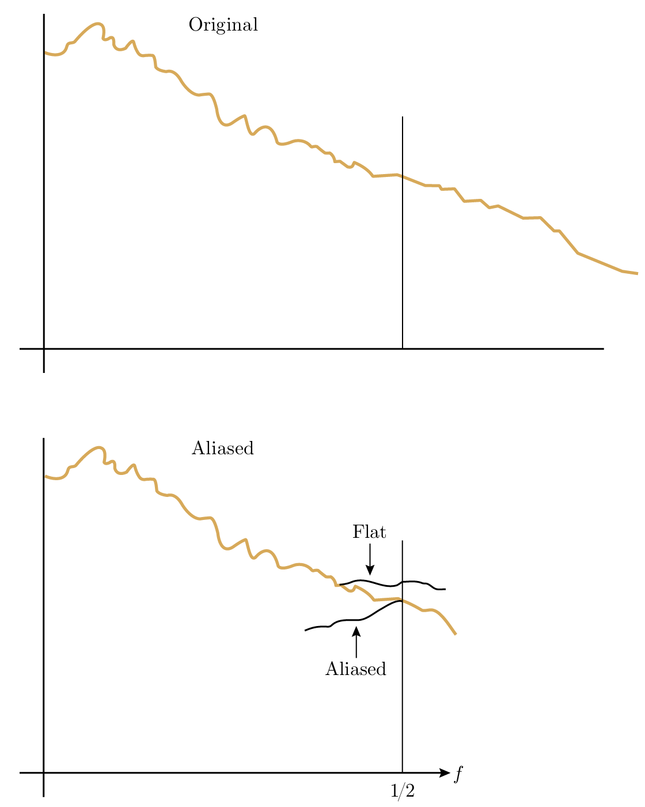
기억하세요, 우리가 선형 시스템을 처리하고 있다는 암묵적인 이해가 있습니다. 백색 잡음만 있다는 것을 드러낸 옛 주식 시장 푸리에 분석은 주식의 미래 가격을 예측할 방법이 없다는 뜻으로 해석되었습니다-그리고 이것은 단순한 선형 예측자를 쓰려는 경우에만 맞습니다. 하지만 그것은 비선형 예측자의 실용적 사용에 대해서는 아무것도 말해주지 않습니다. 이 또한 수학 도구 뒤에 있는 기초를 이해하지 못하고 도구 그 자체만 알기 때문에 결과를 널리 잘못 해석한 사례입니다. 조금 아는 것은 위험합니다-특히 기본 원리(펀더멘털)가 부족하다면 더더욱요!
디지털 필터에 대한 첫 강연에서 나는 당시 자신이 그것에 대해 아무것도 모른다고 생각했다고 조심스럽게 말했습니다. 내가 몰랐던 것은, 상미분방정식(미분방정식)을 수치적으로 푸는 예측자-교정자(predictor-corrector) 방법의 이론을 자세히 검토하면서 그때 재귀 디지털 필터 설계에 무지했기 때문에 사실상 그것을 스스로 창조해냈다는 점입니다. 교정자는 실질적으로 재귀 디지털 필터입니다!
연립 상미분방정식계를 수치적으로 적분하는 방법에 대한 연구를 하면서 나는 디지털 필터에 대한 어떤 선입견에도 방해받지 않았고, 곧 유계 입력(bounded input)이, 필터 전문가들의 말로는, 적분을 하고 있다면 비유계 출력(unbounded output)을 생산할 수 있다는 것을 깨달았습니다-그들은 그것을 불안정하다고 말했지만, 분명히 그것은 적분하려면 반드시 있어야 할 바로 그런 것에 불과합니다. 상수조차도 출력에 선형 성장을 만들어낼 것입니다. 실제로, 나중에 나는 공기가 없어서 항력도 없고 따라서 방정식에 1차 도함수가 명시적으로 없는, 달 표면까지의 궤적 적분을 맞닥뜨렸고 적절한 수치 적분 공식을 써서 이 점을 활용하고자 했습니다. 그때 나는 2차 오차 성장을 가져야 한다는 것을 발견했습니다. 가속도 계산에서의 작은 반올림 오차는 교정되지 않고 위치에 2차 오차를 낼 것입니다-가속도의 오차는 위치에 2차 성장을 만들어냅니다. 그것이 이 문제의 본질입니다. 지구에서는 공기 항력이 잘못된 가속도 값에 대한 일부 피드백 교정을, 따라서 위치 오차에 대한 일부 교정을 제공하지만 달에서는 그런 게 없죠.
그래서 나는 오늘날까지도 디지털 필터에서의 안정성(stability)이 유계 입력으로부터 “지수적 성장이 없음”을 뜻하며 다항식 성장은 허용한다는 태도를 지니고 있습니다. 그리고 이것은 고전적인 아날로그 필터(아날로그 필터)에서 유래한 표준 안정성 기준이 아닙니다-아날로그 필터에서는 유계가 아니면 물질이 녹아내릴 테니까요-또한 어쨌든 그들은 적분을 필터 과정으로서 진지하게 생각해 본 적이 없었습니다.
적분에 필요한 이 중요한 재귀 필터(recursive filter) 주제는 다음 장에서 다루겠습니다.
17 디지털 필터-IV
이제 재귀 필터(recursive filter)로 넘어가죠. 그 형태는 다음과 같습니다.
[수식]
이 공식에서 볼 수 있듯이, 값은 현재 값 n의 한쪽에만 있고 과거와 현재의 신호 값 un과 과거의 출력 값 yn을 모두 사용합니다. 이것은 고전적인 방식입니다. 왜냐하면 우리는 흔히 신호를 실시간으로 처리하며 신호의 미래 값에는 접근할 수 없기 때문입니다.
하지만 기본을 따져보면, 만약 “미래 값”을 갖고 있다면 양쪽을 사용하는 예측이 훨씬 더 정확할 것임을 알 수 있습니다. 그러면 yn 값을 계산할 때 연립 일차방정식(simultaneous linear equations)을 풀어야 하는데-값싼 계산이 흔한 요즘은 전혀 두려울 것이 없죠. 이 관찰은 잠시 접어두고 요즘에는 신호를 테이프나 다른 매체에 기록해 두었다가 나중에 실험실에서 처리하는 경우가 많다는 점만 짚겠습니다-즉 우리는 미래를 지금 이미 손에 쥐고 있다는 뜻입니다. 다시 말해, 영상 처리(picture processing)에서 처리 중인 점의 한쪽 데이터만 쓰는 재귀 필터는 어리석은 일입니다. 이용 가능한 관련 정보의 일부를 버리는 셈이니까요.
그다음으로 눈에 띄는 것은, 과거의 출력을 새 입력으로 쓴다는 것, 즉 피드백(feedback)이 있다는 뜻이며 이는 자동으로 안정성(stability)의 문제를 가져옵니다. 이것은 재귀 필터를 설계할 때 우리가 항상 경계해야 할 조건이며 할 수 있는 일을 제약하기도 합니다. 여기서 안정성이라 함은 초기 조건의 영향이 결과를 지배하지 않는다는 뜻입니다.
선형 시스템이므로, 정상 상태(steady state)에서 필터에 넣는 순수한 주파수가 무엇이든 오직 그 주파수만 나올 수 있음을 알 수 있습니다. 다만 위상이 변할 수는 있죠. 하지만 과도 응답(transient)은 다른 주파수를 가질 수 있으며 그것은 동차(homogeneous) 차분방정식(difference equation)의 해에서 비롯됩니다. 사실 우리는 상수 계수를 가진 차분방정식을 푸는 중이고, un 항이 “강제 함수(forcing function)”를 이룹니다-재귀 필터가 바로 그것이고, 그 외의 것은 아무것도 아닙니다.*
따라서 우리는 정상 상태(과도 응답은 무시합니다)에 대해 다음을 가정합니다.
[수식]
(A가 복소수일 수 있는 것은 위상 이동을 허용하기 위해서입니다.) 이로부터 AO/AI의 비율을 풀면, 전달 함수(transfer function)가 나옵니다.
[수식]
이것은, 비재귀 필터에서처럼 z의 다항식이 아니라, 복소 변수 eiωt = z의 유리 함수(rational function)입니다. 함수를 푸리에 급수(Fourier series)로 나타내는 이론은 있지만 함수를 두 푸리에 급수의 비율로 나타내는 이론은 아직 없습니다(그런 이론이 있을 수 없을 이유는 없다고 보지만요). 따라서 설계 방법은 현재 체계적이지 않고(카이저가 비재귀 필터 설계 이론에서 했던 것처럼), 그보다는 온갖 요령(trick)의 모음입니다. 그래서 버터워스(Butterworth), 통과 대역이나 정지 대역 중 어디에 등맥동(ripple)이 오느냐에 따른 두 종류의 체비쇼프(Chebyshev), 그리고 타원형 필터(elliptic filter, 타원 함수를 쓴다는 데서 이름이 유래했고 등맥동을 가집니다)가 있는 것이죠.
나는 피드백이라는 주제만 다루겠습니다. 피드백 문제를 생생하게 만들기 위해, 내 이야기 하나를 하죠. 아주 오래전, 나는 주로 샌프란시스코에서 만든, 컴퓨터와 컴퓨팅에 관한 30분짜리 TV 프로그램 여섯 편을 진행한 적이 있습니다. 그곳에 자주 나가다 보니, 항상 같은 호텔의 같은 방에 묵는 습관이 들었죠-밤늦게 피곤할 때나 한밤중에 일어나야 할 때 방의 세세한 부분에 익숙한 건 좋은 일이니까요-그래서 같은 방을 선호하게 된 겁니다.
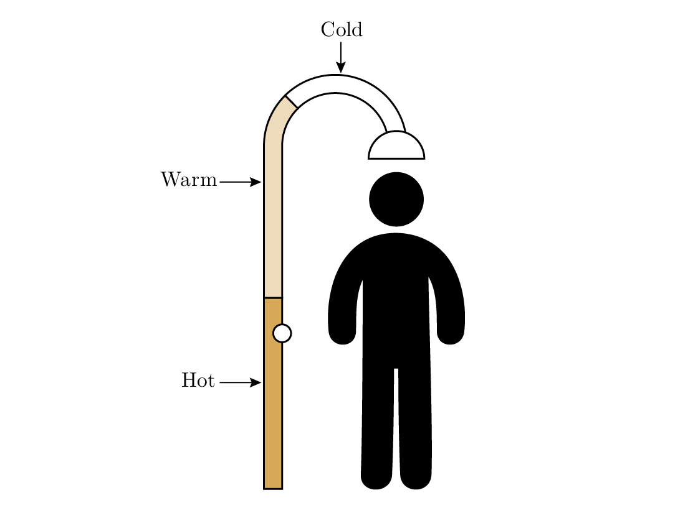
그런데 배관공이 샤워기에 지름이 큰 멋진 파이프를 달아 놓았더군요, 그림 17.1. 그래서 아침에 샤워를 시작하면 물이 너무 차서 뜨거운 물 손잡이를 돌렸습니다. 그래도 시원해서 더 돌리고, 여전히 시원해서 더 돌리고, 그러다 적당한 온도가 되면 들어가죠. 하지만 당연히 물은 점점 더 뜨거워졌습니다. 일찍 넣은 물이 마침내 파이프를 타고 올라왔으니까요. 그래서 나는 나가서 다시 손잡이를 맞춰보려고 해야만 했습니다. 문제는 뜨거운 물이 나에게 도달하는 지연(delay)이었습니다. 많은 경험을 겪었음에도 불구하고 나는 고전적인 헌팅(hunting, 진동 수렴) 상황, 즉 불안정성에 빠지곤 했습니다. 내 반응이 너무 강했다고(내가 너무 급하게 행동했다고) 볼 수도 있고 신호를 감지하는 것이 너무 지연됐다고(나는 욕조에 너무 성급하게 들어갔다고) 볼 수도 있습니다. 결과는 장기적으로 똑같습니다! 불안정성! 나는 감당해야 했던 큰 지연을 제대로 받아들이지 못해, 매일 아침 첫번째 일로 작은 골치거리를 겪었습니다! 이 생생한 예에서 당신은 불안정성의 본질을 볼 수 있습니다.
여기서 재귀 디지털 필터의 설계까지는 다루지 않겠지만 다만 상미분방정식(ordinary differential equation)을 수치적으로 풀 때 보정 공식(corrector formula)을 다루면서 그 이론을 사실상 내가 직접 개발했었다는 점만 짚어두겠습니다. 예측-보정(predictor-corrector) 방법에서 보정부의 형태는 다음과 같습니다.
[수식]
재귀 필터의 uj가 이제 출력의 도함수 y’n이며 미분방정식에서 나온다는 것을 알 수 있습니다. 표준 비재귀 필터에는 피드백 경로가 없습니다-계산된 yn이 나중에 우변에 나타나지 않죠. 그런데 미분방정식 공식에서는 그것들이 이 피드백 경로에 나타나고 또한 도함수 항을 통해 보통 비선형인 또 다른 피드백 경로를 이룹니다. 그래서 미분방정식에서 안정성은 재귀 필터에서보다 더 까다로운 주제입니다.
이런 재귀 필터는 흔히 “무한 임펄스 응답 필터(infinite impulse response filter, IIR)”라고 불립니다. 단 한 번의 교란(disturbance)이 피드백 루프를 맴돌면서 필터가 안정적이라 해도 기하급수적으로만 사라지기 때문입니다. 나는 내 성격상 당연히, 모든 재귀 필터가 이 성질을 가져야 하는지 자문해 보았고 곧 반례(counterexample)를 찾아냈습니다. 물론 그것은 평범하게 설계하는 종류의 필터는 아니지만 그들의 주장이 피상적임을 보여줬죠. “내가 듣는 말이 정말로 참인가?”라고 스스로만 물어봐도, 아주 잘 정립된 분야에서조차 참이거나 참에 가까운 것이 얼마나 많은지, 또는 거짓에 가까운 것이 얼마나 많은지 깜짝 놀랄 것입니다!
제26장에서 전문가를 다루는 문제를 다루겠습니다. 여기서 당신은 너무나 자주 일어나는 일의 단순한 예를 봅니다. 전문가들은 학생 시절 처음 배울 때 수업에서 뭔가를 들었고 그때는 그것을 의심하지 않았습니다. 그것은 받아들여진 사실이 되어 그들은 특히 자신이 처한 현재 상황에서 자신이 말하는 것이 참인지 거짓인지 진짜로 검토하지도 않은 채 그것을 되풀이합니다.
이제 또 다른 이야기로 넘어가죠. 벨 전화연구소(Bell Telephone Laboratories, 이후 “벨 연구소”)의 수학과에 근무하던 어느 여성분이 주말 파티에서 물리학자와 스퀘어 댄스를 추고 있었습니다. 그러다 월요일 아침 복도에서 그녀가 나에게 그 물리학자가 가진 문제 하나를 우연히 언급했습니다. 그 물리학자는 방사능 실험에서의 카운트 수를, 기억하기로 256개의 에너지 준위 각각에서 측정하고 있었죠. 그것을 “그 과정의 스펙트럼(spectrum)”이라고 부릅니다. 그의 문제는 데이터의 도함수가 필요하다는 것이었습니다.
글쎄요, 당신도 알다시피 (a) 주어진 에너지에서의 핵 카운트 수는 어쩔 수 없이 들쭉날쭉한 곡선을 만들고 (b) 그것을 미분해 국소 기울기를 얻는 것은 매우 어려운 일입니다. 그녀의 무심한 한마디를 생각하면 생각할수록, 그는 진짜 지도를-즉 나를!-필요로 한다고 느껴졌습니다. 나는 벨 전화연구소 전화번호부에서 그를 찾아, 내 관심과 그 관심을 갖게 된 경위를 설명했습니다. 그는 즉시 내 사무실로 올라오고 싶어 했지만 나는 완고하게 그의 실험실에서 만나자고 우겼습니다. 그는 자기 사무실을 쓰려 했지만 나는 실험실을 고집했습니다. 왜였을까요? 그의 능력을 가늠해보고 그의 문제가 내 시간과 노력을 들일 가치가 있다고 판단하고 싶었기 때문입니다. 깨기 어려운 단단한 견과류 같았으니까요. 그는 실험실 시험을 화려하게 통과했습니다-그는 분명 아주 유능한 실험가였죠. 그는 자기 능력의 한계 지점에 있었습니다-데이터를 얻는 데 일주일의 운전 시간이 들었고 방사능원 주위에는 많은 차폐가 둘러져 있어, 더 좋은 데이터를 얻기 위해 우리가 할 수 있는 일이 많지 않았습니다. 게다가 세부 사항에 대해 아는 게 거의 없었지만 그의 실험이 물리학은 물론 벨 전화연구소에도 중요하다는 확신이 곧 들었습니다. 그래서 나는 그 문제를 떠맡았습니다. 교훈: 선택할 수 있는 한, 당신이 중요하다고 생각하는 문제를 붙잡아라.
분명히 그것은 평활화(smoothing) 문제였고 마침 카이저(Kaiser)가 그 사실을 가르쳐주고 있던 참이라, 실험가를 카이저에게 데려가 카이저가 적절한 미분 필터를 설계하게 하는 것보다 더 좋은 일이 있겠습니까? 곧바로 문제가 생겼습니다! 카이저는 늘 신호를 시간의 함수로 생각했고 곡선 아래 면적의 제곱을 에너지로 생각했는데, 여기서는 에너지가 독립 변수였던 겁니다! 나는 이 점에서 카이저와 거듭 마찰을 겪다가 결국 단호하게 말했습니다. “좋아, 그의 에너지는 시간이고 측정값, 즉 카운트는 전압이다.” 그제서야 카이저는 할 수 있었습니다. 자신이 할 수 있는 것에 대해 좁은 시야를 가진 전문가의 저주입니다. 카이저는 아주 유능한 사람임을 다시 상기시킵니다. 하지만 그의 전문 지식은, 전문가에게 흔히 그렇듯, 그의 시야를 제한했습니다. 여러분은 그런 면에서 더 잘할 수 있을까요? 나는 이런 이야기들이 그 함정을 피하는 데 도움이 되기를 바랍니다.
앞서 관찰했듯이, 보통 신호는 스펙트럼의 나이퀴스트 구간(Nyquist interval) 아래쪽 부분에 있고 잡음은 나이퀴스트 구간 전체에 고루 퍼져 있습니다. 그래서 우리는 의미 있는 물리학자의 신호와 평평한 백색 잡음(white noise) 사이의 절단 경계(cutoff edge)를 찾아야 했습니다. 어떻게 찾을까요? 첫째, 나는 물리학자에게 그가 마음속에 갖고 있던 이론적 모형을 끄집어냈습니다. 그것은 넓은 가우스(Gaussian) 모양 위에 놓인, 가우스 모양의 좁은 스펙트럼 선들이 잔뜩 있는 것이었죠(나는 코시(Cauchy) 모양이 아닐까 의심했지만 우리가 가진 데이터로는 그 차이가 너무 작을 테니 그와 논쟁하지 않았습니다). 그래서 우리는 그것을 모형화했고 그는 그 모형으로 합성 데이터를 만들었습니다. 고속 푸리에 변환(fft, fast Fourier transform)을 통한 빠른 스펙트럼 분석은 신호가 나이퀴스트 구간의 가장 낮은 1/20에 국한되어 있음을 보여줬습니다. 둘째, 우리는 그의 실험 데이터 한 묶음을 처리했고 동일한 위치에서 그 경계를 찾아냈습니다! 운이 좋았죠! (아마 그 운은 실험가의 우수함 덕분이라고 돌려야 할 겁니다.) 이번만큼은 이론과 실제가 일치했습니다! 우리는 잡음의 약 95%를 제거할 수 있을 테였습니다.
카이저는 마침내 그를 위해 프로그램을 하나 써주었는데, 실험가가 원하는 곳에 절단 경계 위치를 주면 그에 상응하는 필터를 설계해주는 것이었습니다. 그 프로그램은 (1) 대응하는 미분 필터를 설계하고 (2) 평활화된 출력을 계산하는 프로그램을 작성한 다음, (3) 물리학자의 개입 없이 그 필터를 통해 데이터를 처리했습니다.
나는 나중에 그 물리학자가 같은 운전 데이터에서 에너지 구간에 따라 절단 경계를 조정하는 것을 발견했고 “자유도(degrees of freedom)”라는 것이 있다는 것과 그렇게 하는 것은 정직한 데이터 처리가 아니라는 점을 상기시켜야 했습니다. 일이 잘 풀려가고 나서는, 그는 값비싼 데이터를 최대한 활용하려면 (분산이 같으므로) 카운트의 제곱근으로 작업해야 한다는 점을 설득하는 데 훨씬 더 큰 어려움을 겪었습니다. 하지만 그는 마침내 깨닫고 그렇게 했죠. 그는 카이저와 함께 이 분야의 고전적인 논문을 썼습니다. 그것이 새롭게 할 수 있는 일들의 지평을 열었기 때문입니다.
내 기여는 무엇이었을까요? 주로, 먼저 문제를 식별하고, 다음으로 적절한 사람들을 한자리에 모으고, 그다음에 필터링이 반드시 시간 신호에 국한될 필요가 없다는 사실을 카이저가 계속 기억하도록 감독하며, 마지막으로 그들이 통계학에서 아는 것(또는 지금쯤 알았어야 하고 아마 몰랐을 것)을 상기시켜주는 것이었습니다.
내 경험상, 사람들이 점점 더 전문화되고 지식이 더욱 좁아질수록 이 역할이 점점 더 필요해지는 것 같습니다. 누군가는 더 큰 시야를 유지하고 일이 정직하게 이루어지도록 챙겨야 합니다. 나는 이 역할을 존 튜키(John Tukey) 밑에서의 오랜 교육과, 과학의 보편적인 도구, 즉 수학이라는 형태의 탄탄한 기초 덕분에 얻게 된 것 같습니다. 수학의 본질에 대해서는 제23장에서 이야기하겠습니다.
대부분의 신호 처리는 실제로 시간 신호에 대해 이루어집니다. 하지만 대부분의 디지털 필터는 아마도 반드시 시간 신호일 필요는 없는, 작고 특수한 목적의 연구를 위해 설계될 것입니다. 내가 여러분의 미래 관심을 요청하는 지점이 바로 여기입니다. 여러분이 조직의 최고 자리에서 일을 맡게 되었다고 가정해보죠. 여러분이 인력과 설비의 상대 비용에 대한 과거 기록을 보여주는 데이터에 관심이 있다고 합시다. 그것은 필연적으로 잡음이 많은 데이터이겠지만, 여러분은 기본적인 의미에서 조직에서 무슨 일이 일어나고 있는지 이해하고 싶을 것입니다-사람들이 그 일이 일어나는 순간에는 거의 감지하지 못할 만큼 느리게 진행되지만, 잘 관리하려면 반드시 이해해야만 하는 장기 추세 같은 것을요. 추세가 있다면 그것을 살짝 엿보기 위해 데이터를 평활화할 디지털 필터가 필요할 것입니다. 존재하지도 않는 추세를 찾아내고 싶지는 않을 테고, 존재한다면 그것이 지금까지 어땠는지 꽤 잘 알고 싶을 것이며, 그래야 가까운 미래에 어떻게 될지를 전망할 수 있으니까요. 나아가 데이터가 뒷받침한다면, 추세의 기울기에 어떤 변화가 있는지 살펴볼 수도 있을 것입니다. 화력 대 해당 함선 톤수의 비율 같은 일부 신호는 시간을 전혀 필요로 하지 않지만 해군의 현재 상태에 대해 뭔가를 알려줄 것입니다. 물론 그 관계를 시간의 함수로 연구할 수도 있습니다.
나는 강하게 제안합니다. 당신의 경력 정점에서는, 시간 신호이든 아니든, 잡음이 많은 신호에 대한 저수준 디지털 필터링을 많이 쓸 수 있을 테니, 그때 여러분이 사물을 더 잘 관리할 수 있을 것이라고요. 따라서 나는 주장합니다. 여러분은 레이더 데이터 축소나 그런 표준적인 일용보다 그런 별난 잡일용 필터를 훨씬 더 많이 설계하게 될 것입니다. 가장 큰 이득을 얻을 수 있는 곳은 대개 지식의 새로운 응용처입니다.
지적 도구의 남용에 대한 경고 몇 가지를 들겠습니다. 제27장에서는 지금 다룰 시간이 없는, 통계학에 더 가까운 주제를 이야기할 것입니다. 푸리에 분석(Fourier analysis)은 밑바탕 모형의 선형성을 전제합니다. 약간 비선형인 상황에서도 쓸 수는 있지만 종종 화려한 푸리에 분석은 밑바탕 현상이 너무 비선형이어서 실패했습니다. 나는 외부인이 보기에 비선형성이 그들이 푸리에 함수 방식으로 할 수 있는 모든 선형 분석을 무력화시킬 것이 뻔했던 곳에서 수백만 달러가 그 하수구로 흘러가는 것을 보았습니다. 그 사실을 지적하면, 그들은 다른 방법을 몰라서 잘못된 일을 계속했다는 답변을 하는 듯했습니다! 나는 여기서 과장하지 않습니다.
비선형 필터는 어떨까요? 가능성은 무궁무진하며 당연히 여러분이 당면한 특정 문제에 의존해야 합니다. 나는 단 하나만 다루겠습니다: 이동 중앙값 필터(running median filter)입니다. 데이터 집합이 주어지면 출력으로 이동 중앙값(running median)을 계산합니다. 실제로 어떻게 작동할지 생각해보죠. 첫째, 그것이 국소 잡음을 평활화하는 경향이 있음을 볼 수 있습니다-중앙값은 평균 근처에 있을 테고 평균은 국소 평활화에 쓰이는 직선 최소제곱 맞춤이니까요. 하지만 불연속점에서는, 그림 17.2, 평평한 수준의 곡선이 있다가 다른 평평한 곡선으로 떨어지는 경우를 상상해보면, 필터는 무엇을 할까요? 중앙값 필터에서 항의 개수가 홀수라면, 더 낮은 수준에 점의 절반 이상이 오기 전까지는 출력이 높은 자리에 있다가, 그 시점에 이르면 아래 수준으로 점프할 것을 볼 수 있습니다. 그것은 불연속점을 꽤 잘 따라가며 완전히 평활화하려 들지 않습니다! 어떤 상황에서는 그것이 바로 여러분이 원하는 종류의 필터링입니다. 잡음은 국소적으로 제거하되, 연구 대상 시스템 상태의 갑작스러운 변화는 놓치지 않는 것이죠.
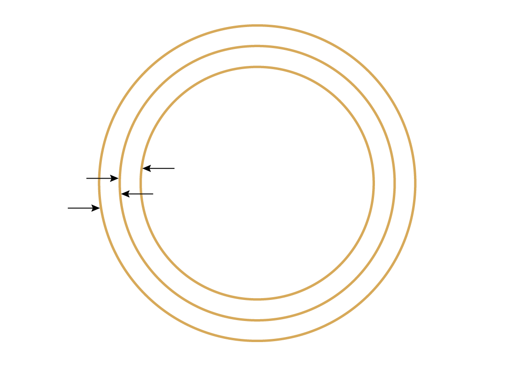
다시 반복합니다. 푸리에 분석은 선형이고, 많은 비선형 필터가 존재하지만, 이론은 이동 중앙값 너머로는 잘 발달되어 있지 않습니다. 칼만 필터(Kalman filter)도 부분적으로 비선형인 필터를 쓰는 또 다른 예이며 비선형 부분은 신호에 “스스로 적응”하는 데 있습니다.
내가 디지털 필터를 배우러 할 때 내린 마지막 근본적 관찰 하나를 말하겠습니다. 어느 날 푸리에 적분에 관한 책을 살펴보다가, 어떤 정리 하나를 발견했습니다. 함수의 변동성(variability)과 그 변환의 변동성을 곱한 것이 어떤 상수를 반드시 초과해야 한다는 정리였죠. 나는 스스로 말했습니다. “이게 양자역학의 그 유명한 불확정성 원리(uncertainty principle)가 아니고 무엇이란 말인가?” 그렇습니다. 모든 선형 이론은 켤레 변수(conjugate variables)를 수반하는 불확정성 원리를 가져야 합니다. 일단 선형 접근을 받아들이고 양자역학이 고유상태(eigenstate)의 절대 가산(additivity)을 주장한다면, 여러분은 반드시 불확정성 원리를 발견하게 될 것입니다. 선형 시간 불변성(linear time invariance)은 자동적으로 고유함수 eiωt를 낳습니다. 그것들은 곧바로 푸리에 적분으로 이어지고 푸리에 적분은 불확정성 원리를 갖습니다. 마치 푸른빛 안경을 쓴 것과 같습니다. 어디를 보든 모든 것을 푸른빛이 섞인 것으로 보아야 합니다! 따라서 여러분은 양자역학의 그 유명한 불확정성 원리가 정말로 존재하는지 확신할 수 없습니다. 어쩌면 그것은 가정된 선형성의 효과일 뿐일 수도 있습니다. 우리가 보는 것이 우리가 문제에 접근하는 방식에 달려 있다는 점은 대부분의 사람이 믿고 싶어 하는 것보다 더 큰 의미를 갖습니다! 우리는 너무 자주 보고 싶은 것만 봅니다. 그래서 여러분은 자신의 믿음을 의심하는 과학적 태도를 의식적으로 취할 필요가 있습니다.
이를 설명하기 위해 에딩턴(Eddington)의 어부 이야기를 반복하겠습니다. 그들은 그물로 고기를 잡았는데, 잡은 고기의 크기를 살펴본 뒤 바다에는 고기의 최소 크기가 있다고 결론을 내렸습니다.
마지막으로, 여러분이 이따금 받아들여진 규칙을 의심하지 않는다면, 새로운 영역으로의 지도자가 될 가능성은 낮습니다. 너무 많이 의심하면 마비되어 아무것도 하지 못할 것입니다. 언제 의심하고, 언제 기본을 검토하며, 언제 스스로 생각하고, 언제 그대로 받아들이며 나아갈지는 스타일의 문제이며, 나는 그것을 결정하는 간단한 공식을 줄 수 없습니다. 여러분은 삶에 대한 자신만의 연구에서 배워야 합니다. 큰 진보는 대개 한 분야의 밑바탕 신념에 대한 중대한 변화에서 비롯됩니다. 우리의 지식 상태가 발전함에 따라, 연구를 수행하는 여러 측면 사이의 균형도 변합니다. 마찬가지로, 젊을 때는 우연한 발견(serendipity)이 결실을 맺을 시간이 아마 길지만 늙으면 그것이 작동할 시간이 거의 없으므로 손에 있는 일에 더 집중해야 합니다.
18 시뮬레이션-I
요즘 컴퓨터의 주요 용도 중 하나, 글쓰기와 텍스트 편집, 그래픽, 프로그램 컴파일 같은 것들에 이어서 바로 시뮬레이션입니다.
시뮬레이션은 “만약 …이라면?”이라는 질문에 대한 답입니다.
이렇게 하면 어떨까? 이런 일이 일어났다면 어떨까?
요즘 실험 열 번 중 아홉 번 이상이 컴퓨터 위에서 이루어집니다. 저는 이미 여러분께 제 심각한 우려를 말씀드린 적이 있습니다-우리가 시뮬레이션에 점점 더 의존하고, 현실을 점점 덜 바라보게 되고, 그 결과 옛 스콜라 학자들처럼 교과서에 쓰인 것이 곧 현실이며 끊임없는 실험적 검증이 필요 없다고 여기는 태도에 다가가고 있는 것 같다는 걱정 말입니다. 이 점에 대해서는 지금 더 깊이 다루지 않겠습니다.
우리가 컴퓨터로 시뮬레이션을 하는 데는 이유가 있습니다.
- 더 싸고,
- 더 빠르고,
- 종종 더 좋고,
- 실험실에서 할 수 없는 일도 할 수 있기 때문입니다.
1번과 2번에 관해 말하면, 프로그래밍이 아무리 비싸고 느리고 온갖 오류와 결함으로 가득하다 해도, 대개는 실험실 장비를 작동하게 만드는 것보다 훨씬 싸고 빠릅니다. 게다가 근년에는 값비싼 최고급 실험 장비를 구입해 놓고도, 10년도 안 되어서 구식이라는 이유로 폐기 처분해야 하는 경우가 적지 않았습니다. 물론 아주 흔하게 반복되는 상황이라 실험 장비가 늘 가동되고 있다면, 위의 모든 말은 적용되지 않습니다. 하지만 실험 장비를 한동안 그대로 놔두면, 어느 순간 갑자기 제대로 작동하지 않게 됩니다! 이것을 “보관 수명(shelf life)”이라고 부릅니다. 그런데 때로는 장비 자체의 수명이 아니라 그것을 다루는 기술의 수명일 때도 있습니다! 저는 이런 일을 직접 겪으며 너무 자주 보았습니다. 지식의 보관 수명이 물리적인 보관 수명보다 훨씬 더 은근하게 파고드는 경우가 많습니다.
3번에 관해서는, 시뮬레이션을 통하면 실제 세계에서 직접 측정할 때보다 훨씬 정확한 수치를 얻는 경우가 아주 많습니다. 상황이 시시각각 변하는 동적 상태에서는 현장 측정은 말할 것도 없고 실험실 측정조차 정확히 얻기가 어려운 법입니다. 게다가 시뮬레이션에서는 어느 하나의 실험 장치로 돌려볼 수 있는 범위보다 훨씬 넓은 범위에 걸쳐 독립 변수들을 돌려볼 수 있는 경우가 많습니다.
4번-어쩌면 무엇보다 중요한 것이죠. 시뮬레이션은 어떤 실험도 할 수 없는 일을 해낼 수 있습니다.
이 점들을, 제가 직접 참여했던 시뮬레이션 이야기를 통해 구체적으로 보여드리겠습니다. 그래야 여러분이 시뮬레이션이 여러분을 위해 무엇을 해줄 수 있는지 이해할 수 있을 테니까요. 몇 가지 세부 사항도 함께 짚어드릴 테니, 시뮬레이션 경험이 별로 없는 분들도 시뮬레이션을 어떻게 진행해 나가는지 감을 잡는 데 도움이 될 겁니다. 큰 시뮬레이션은 완성되는 데 수년이 걸리는 일이 많아서 강의 시간에 실제로 수행해 보이는 것은 불가능합니다.
제가 참여한 첫 대규모 계산은 제2차 세계대전 중 로스앨러모스에서였습니다. 바로 최초의 원자폭탄을 설계할 때였죠. 축소 실험은 애초에 불가능합니다-임계 질량(critical mass, 핵연쇄반응을 스스로 유지하는 데 필요한 최소 질량)을 갖추었느냐, 아니냐 이외에는 방법이 없으니까요.
그림 18.1-내파 설계에서의 껍질들
기밀 사항까지 파고들지는 않겠습니다만, 기억하시겠지요. 두 설계안 중 하나는 구면대칭 구조로서 내파(implosion, 바깥에서 안쪽으로 폭발을 집중시키는 방식)에 기반했습니다, 그림 18.1처럼요. 그들은 물질과 공간을 수많은 동심 껍질(concentric shells)로 나누었습니다. 그다음 각 껍질에 작용하는 힘(양쪽 면의 힘)에 대한 방정식과 함께 상태 방정식(equation of state)을 세웠습니다-무엇보다도 압력으로부터 물질의 밀도를 알려주는 식입니다. 다음으로 시간을 10-8초 간격으로 쪼개었습니다(셰이크, shake-아마도 어미 양이 꼬리를 한 번 흔드는 데 걸리는 시간에서 딴 이름이겠죠). 그리고 각 시간 간격마다 우리는 컴퓨터로 계산했습니다-각 껍질이 그 힘을 받으면서 어디로 갈지, 그 시간 동안 무슨 일을 겪을지 말입니다. 물론 바깥쪽 폭발물에서 오는 충격파 전면(shock wave front)이 그 지역을 통과하는 동안에는 특별한 처리가 필요했습니다. 하지만 그 규칙들은 원리적으로 해당 분야의 전문가들에게 널리 알려진 것이었습니다. 압력이 워낙 극단적이라, 과거 실험의 영역 밖에서도 사정이 크게 다르지 않으리라고 짐작해야 할 부분이 많았지만 물리 이론 몇 가닥이 어느 정도 확신을 주었습니다.
이것만으로도 제가 하고 싶은 핵심 주장 하나가 드러납니다. 응용 분야에 대한 방대한 특수 지식이 반드시 필요하다는 것입니다. 사실 저는 여러분이 이미 들었거나 앞으로 들을 과목의 상당수를, 그에 해당하는 전문가적 지식을 공급하는 것에 불과하다고 여기는 편입니다. 이 당연해 보이는 전문 지식의 필요성을 강조하고 싶습니다-시뮬레이션 전문가들이 이런 기초적인 사실을 무시한 채, 혼자서 안전하게 시뮬레이션을 해낼 수 있다고 생각하는 것을 저는 너무 자주 보아 왔습니다. 여러분이 빠뜨린 것이 시뮬레이션의 정확성에 결정적인지, 아니면 안전하게 무시해도 되는지를 아는 것은 오직 응용 분야의 전문가뿐입니다.
또 하나의 핵심 주장은, 대부분의 시뮬레이션에는 아주 반복적인 부분이 있어서 같은 프로그램 조각으로 몇 번이고 되풀이해야 한다는 것입니다. 그렇지 않으면 초기의 프로그래밍 작업을 감당할 수 없으니까요! 각 껍질에 대해, 그리고 각 시간 간격에 대해 똑같은 계산이 되풀이되었습니다-반복이 엄청났죠! 많은 상황에서 컴퓨터의 계산 능력은 우리가 프로그래밍하는 능력을 훨씬 능가합니다. 그래서 시뮬레이션을 계획할 때는 반복될 부분을 일찍, 그리고 끊임없이 찾아내고 가능하면 시뮬레이션을 그에 맞는 형태로 짜는 것이 현명합니다.
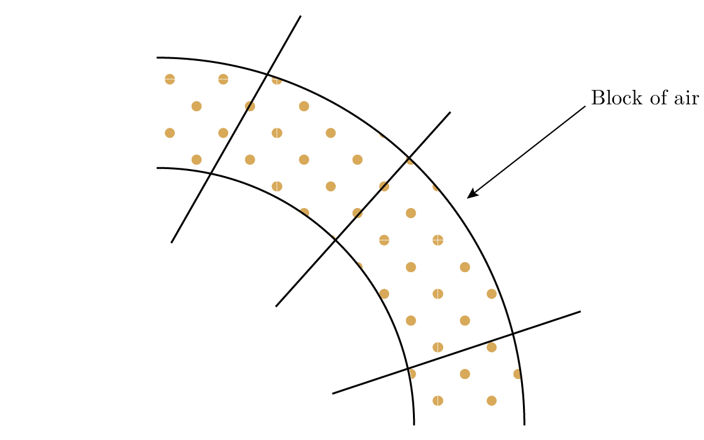
원자폭탄과 아주 비슷한 시뮬레이션이 일기 예보에서 나타납니다. 일기 예보에서는 대기를 커다란 공기 블록들로 쪼갠 다음, 구름의 양, 반사율(알베도), 온도, 압력, 습도, 속도 같은 관련 조건들을 각 블록에 처음부터 배정해 주어야 합니다, 그림 18.2처럼요. 그런 다음 대기에 대한 전통적인 물리를 적용하여 짧은 시간 간격 동안 각 블록이 어디로 갈지, 관련 조건들이 어떻게 변하는지를 추적합니다. 앞서 말한 것과 똑같은 종류의 단계별 전개입니다.
하지만 두 문제, 즉 폭탄과 일기 예보 사이에는 커다란 차이 하나가 있습니다. 폭탄의 경우 중간 과정에서 생긴 작은 차이가 전체 성능에 크게 영향을 주지 않았습니다. 그런데 여러분도 알다시피 날씨는 작은 변화에 아주 민감합니다. 실제로 일본에서 나비 한 마리가 날개를 퍼덕였는지 아닌지가, 이 나라에 폭풍이 덮칠지, 그리고 그 강도가 얼마나 될지를 결정할 수 있다고 주장되기도 합니다.
이것은 제가 반드시 짚고 넘어가야 할 근본적인 주제입니다. 시뮬레이션이 안정성(stability), 즉 전체적인 행동이 작은 변화에 흔들리지 않는 성질을 많이 지닐 때 시뮬레이션은 상당히 실현 가능합니다. 하지만 어떤 세부 사항의 작은 변화가 전혀 다른 결과를 낳을 수 있다면, 시뮬레이션을 정확하게 수행하는 것은 어려운 일이 됩니다. 물론 날씨에도 장기적인 안정성은 있습니다. 계절은 작은 세부 사항과 무관하게 정해진 차례대로 돌아옵니다. 따라서 날씨에는 단기적(하루 단위) 불안정성도 있고 장기적(해마다) 안정성도 있습니다. 그런데 빙하기가 보여주듯 날씨에는 매우 장기적인 불안정성도 존재하고 겉보기에는 훨씬 더 긴 안정성이 따라오기도 합니다!
저는 바로 이 마지막 종류의 문제를 무수히 많이 만났습니다. 어떤 문제에서 안정성과 불안정성 가운데 무엇이 우세할지, 그에 따라 원하는 답을 얻을 수 있을지 없을지를 미리 판가름하기는 몹시 어려운 경우가 많습니다. 시뮬레이션에 착수할 때는 문제에 너무 깊이 빠져들기 전에 이 측면을 예리하게 살펴보십시오. 그러지 않으면 막대한 노력과 돈, 시간을 쏟고 나서야 원하는 답을 얻을 수 없다는 사실을 발견하게 됩니다. 따라서 시뮬레이션하기 쉬운 상황이 있고, 실질적으로는 도저히 손대지 못할 상황이 있으며, 그 밖의 대부분은 두 극단 사이에 놓여 있습니다. 시뮬레이션으로 무엇을 해낼 수 있다고 약속할 때는 분별력을 가지십시오!
1946년에 벨 전화연구소(Bell Telephone Laboratories)에 들어가고 얼마 지나지 않아, 저는 초기 나이키(Nike) 유도 미사일 체계의 설계 초기 단계에 얽히게 되었습니다. 저는 MIT로 파견되어 그들의 미분 해석기(differential analyzer, 미분방정식을 기계적으로 풀던 아날로그 컴퓨터) RDA #2를 쓰게 되었죠. 해석기의 각 부분이 어떻게 연결되어 있는지에 대한 설명과 함께, 시뮬레이션을 돌리는 법에 관해 저보다 훨씬 많이 아는 사람들의 조언도 듬뿍 받았습니다.
원래 설계는 경사 발사(slant launch)였습니다. 거기에 변분 방정식(variational equations)이 딸려 있었는데, 그것은 날개 크기 같은 각 구성요소를 현명하게 조정할 수 있게 해주는 정보를 제공했습니다. 참고로 말씀드리면, 궤적 하나를 계산하는 데 걸리는 시간이 약 30분이었고 궤적 계산이 절반쯤 진행되면 저는 다음 시험 발사를 위한 결정에 이미 몰입해 있어야 했습니다. 그래서 저는 상황이 왜 그렇게 흘러갔는지 관찰하고 골똘히 생각할 시간이 아주 많았습니다. 며칠이 지나자 저는 미사일의 행동에 대한 “감”을 서서히 잡았습니다-제가 넣어 주어야 하는 서로 다른 지휘 규칙 아래에서 미사일이 왜 그런 행동을 하는지 말입니다. 시간이 흐르면서 저는 점차 어떤 경우든 수직 발사가 최선임을 깨달았습니다. 밀도 높은 저공 대기에서 벗어나 위쪽의 희박한 대기로 나아가는 것이 다른 어떤 전략보다 좋았습니다-나중에 궤적을 꺾으라고 지휘 명령을 내릴 때 감수해야 하는 유도 항력(induced drag)은 충분히 감당할 수 있었습니다. 그러면서 저는 날개를 크게 줄이고 있다는 것을 발견했고 적어도 상당히 확실하게 깨달은 것이 있었습니다. 미사일 구조의 변화에 따른 효과의 변화를 추정하라고 주어진 그 방정식과 상수들은, 그처럼 넓은 변화(섭동)의 범위에 걸쳐서는 정확할 리가 없다는 것이었습니다(방정식의 출처는 아무도 알려 준 적이 없었지만 저는 짐작했습니다). 그래서 저는 전화로 조언을 요청했고 제 생각이 옳았다는 것이 드러났습니다-돌아가서 새 방정식을 얻어야 할 지경이었습니다.
다른 사용자들도 RDA #2를 쓰고 싶어 한 탓에 잠시 지체되는 일은 있었지만 저는 곧 다시 계산을 돌렸습니다. 다만 훨씬 더 많은 지혜와 경험을 갖춘 채로 말이죠. 다시 한번 미사일의 행동에 대한 감을 키웠습니다-궤적 성형(trajectory shaping, 비행 경로를 의도대로 구부리는 일) 프로그램을 이것저것 시도하면서 미사일에 걸리는 힘을 “느끼게” 되었죠. 해가 서서히 나타나는 출력 플로터 위에 고개를 늘어뜨리고 서 있는 동안, 저는 무슨 일이 벌어지고 있는지를 온전히 흡수할 시간을 가졌습니다. 만약 제 손에 현대의 고속 컴퓨터가 있었다면 무슨 일이 일어났을까 하고 종종 생각해 봅니다. 최종 설계에서 그토록 큰 비중을 차지했던 미사일에 대한 그 감을, 내가 과연 얻을 수 있었을까요? 궤적을 수백 개 더 돌렸다고 해서 그만큼 가르쳐 주지는 못했을 거라는 의심이 자주 듭니다-정말로 알 수 없는 일이지만요. 그래서 저는 지금까지도, 너무 많은 답을 얻어 내면서 정작 본 것에 대해 충분히 신중하게 생각하지 않는 태도를 불신합니다. 결과의 양이, 시뮬레이션 대상인 상황에 대한 친밀한 감을 얻는 일의 빈약한 대용품일 뿐이라고 저는 생각합니다.
이 첫 시뮬레이션들의 결과는 이러했습니다. 우리는 수직 발사로 전환했습니다(덕분에 원형 레일 같은 지상 장비와 그 밖의 복잡함을 크게 줄였습니다). 다른 많은 부품들도 단순해졌고 날개는 처음에 제가 받은 크기의 약 1/3로 줄어든 듯했습니다. 저는 더 큰 날개가 원리상 더 나은 기동성을 주기는 하지만 실전에서는 궤적 초반에 너무 많은 항력을 일으켜 그 뒤 속도가 더 느려짐으로써, 목표물로 조여 들어가는 “마지막 국면(엔드게임)”에서는 오히려 기동성이 더 떨어진다는 것을 발견했습니다.
물론 이 초기 시뮬레이션들은 고도가 높아질수록 밀도가 지수적으로 감소하는 단순한 대기 모델과 그 밖의 단순화만을 사용했습니다. 그런 것들은 몇 년 뒤에 이루어진 시뮬레이션에서 전부 수정되었습니다. 여기서 제 또 하나의 신념이 나옵니다-초기 단계에서 단순한 시뮬레이션을 돌리는 것이, 규모를 꽉 채운 시뮬레이션에서는 가려져 버릴 통찰을 전체 체계로부터 얻을 수 있게 해준다는 것입니다. 가능하다면 단순한 시뮬레이션에서 시작해 나중에 더 완전하고 정확한 시뮬레이션으로 발전시켜 나가서, 통찰이 일찍 떠오르게 하라고 저는 강력히 권합니다. 물론 마지막에 최종 설계를 확정할 때는 최종 성능에 영향을 미칠 수 있는 모든 작은 효과를 다 넣어야 합니다. 하지만 (1) 모든 주된 효과를 포함하는 한 최대한 단순하게 시작하고 (2) 통찰을 얻은 다음, (3) 시뮬레이션을 완전한 디테일을 갖춘 것으로 발전시키십시오.
유도 미사일은 초음속 비행을 탐구한 가장 이른 분야 중 하나였습니다. 그리고 그 문제에는 또 하나의 커다란 미지수가 있었습니다. 우리가 쓸 수 있었던 두 개뿐인 초음속 풍동에서 나온 데이터가 서로 완전히 모순되었던 것입니다!
유도 미사일은 자연스럽게 우주 비행으로 이어졌습니다. 거기서 제가 맡은 역할은 시뮬레이션의 핵심은 아니었고 소위 임무 프로파일(mission profile, 비행 임무의 전체 경로 계획)의 초기 기획과 외부 자문 역할이 더 컸습니다.
제가 기억하는 또 다른 초기 시뮬레이션은 진행파관(travelling wave tube, 파동을 나선으로 느리게 해 증폭하는 진공관) 설계였습니다. 여기서도 원시적인 계전기(릴레이) 장비 위에서 일하게 되어 곰곰이 생각할 시간이 아주 많았습니다. 그러다 나는 계산이 진전되어 감에 따라, 언제나 가정되던 지름이 일정한 관 대신 어떤 모양을 주어야 할지 알 수 있겠다는 깨달음을 얻었습니다. 어떻게 그런 일이 가능한지 보려면 진행파관의 기본 설계를 생각해 봅시다. 핵심 아이디어는 속이 빈 관을 따라 빽빽하게 감긴 나선을 따라 입력 파동을 보내는 것입니다. 그러면 전자기파가 관 아래로 진행하는 유효 속도가 크게 줄어듭니다. 그런 다음 관의 중심축을 따라 전자빔을 쏘아 보냅니다. 전자빔은 처음에 나선을 따라 진행하는 파동보다 더 빠른 속도를 가집니다. 파동과 빔이 상호작용하면 빔은 감속됩니다-그 말은 에너지가 빔에서 파동으로 옮겨 간다는 뜻이고 파동이 증폭된다는 뜻입니다! 하지만 물론 관을 따라 가다 보면 둘의 속도가 거의 같아지는 지점에 도달하게 되고 그 이후의 상호작용은 일을 망칠 뿐입니다. 그래서 저는 이런 아이디어를 얻었습니다-관의 지름을 서서히 넓혀 나가면 다시 빔이 파동보다 빨라져서 더 많은 에너지가 빔에서 파동으로 전달될 것이라는 생각 말입니다. 실제로 계산이 반복될 때마다 신호에 이상적인 테이퍼(taper, 관이 점점 넓어지는 형태)를 계산하는 것도 가능했습니다.
저는 또 하나의 짓궂은 아이디어도 냈습니다. 그 방정식들이 사실은 더 복잡한 비선형 방정식들의 국소 선형화(local linearization)에 지나지 않는다는 사실을 발견했기 때문에, 대략 20번째에서 50번째 단계마다 비선형 성분을 추정할 수 있으리라는 생각이었습니다. 어떤 설계에서는, 주위 사람들을 어리둥절하게 하면서 제가 추정한 비선형 성분이 계산된 선형 성분보다 더 크다는 것을 발견했습니다-그래서 그 근사는 무효가 되었고 무의미한 계산은 멈추게 되었죠.
왜 이런 이야기를 하느냐고요? 제가 전하고 싶은 또 다른 요점을 보여주기 때문입니다-당신이 철저한 아마추어인 분야의 전문가들과 일할 때조차 능동적인 마음은 시뮬레이션에 기여할 수 있습니다. 모든 작은 세부 사항에 손을 대고 있는 당신은, 그들이 보지 못한 것을 볼 기회를 갖고 기계 시간을 아끼는 것은 물론 의미 있는 기여를 할 수도 있습니다! 다시 한번 말하지만 시뮬레이션을 돌리는 사람들이 그 과정에서 놓치는 일을 너무 자주 보았습니다. 그렇게 놓친 것들은 결과를 쓰는 사람들에게까지 닿을 가능성도 없었죠.
반드시 해야 할, 그리고 강조하고 싶은 주요 단계 하나는, 그들(전문가들)의 전문 용어(jargon)를 익히기 위해 노력하라는 것입니다. 모든 분야에는 제각각 특별한 전문 용어가 있는 것 같습니다. 그 용어는 외부인이 무슨 일이 벌어지고 있는지 알지 못하게 가리는 경향이 있죠-때로는 내부인들조차! 전문 용어를 경계하십시오-그것이 무엇인지 알아보도록 하십시오. 전문 용어는 제한된 영역의 사물이나 사건에 관한 의사소통을 원활하게 해주는 특별한 언어입니다. 하지만 동시에, 애초에 그것이 담당하도록 만들어진 영역 밖에서의 사고를 막아버리기도 합니다. 전문 용어는 필요한 것이면서도 저주입니다. 여러분 자신의 전문 분야에서조차, 전문 용어의 이점을 얻고 함정을 피하려면 지적으로 능동적이어야 할 필요가 있음을 깨달아야 합니다!
수천 년에 걸친 원시인의 진화 동안, 사람들은 대략 25명에서 100명 규모의 집단으로 살았던 것 같습니다. 집단 밖에서 온 사람은 대체로 환영받지 못했습니다. 다만 아내를 빼앗는 일이 상당히 많았다고 여겨지고 있습니다. 원시인 시절의 수천 년을, 겨우 1만 년도 안 되는 문명의 기간과 견주면, 우리는 외부인을 배척하도록 주로 진화에 의해 선택되었다는 것을 알 수 있습니다. 그리고 그 배척 방식 중 하나가 특별한 전문 용어를 쓰는 것입니다. 도둑들의 은어, 집단의 은어, 부부만 아는 단어와 몸짓, 심지어 눈썹 한 번 치켜올리기까지-이 모든 것이 외부인을 배제하는 사적 언어의 흔한 용법의 예입니다. 따라서 외부인이 다가왔을 때 이 본능적인 전문 용어 사용은 언제나 의식적으로 억제해야 합니다-우리는 이제 원시인 시절보다 훨씬 더 큰 단위로 일합니다. 그래서 우리는 조상으로부터 물려받은 이 옛 설계 특징을 끊임없이 덮어써야만 합니다.
수학이 당신이 바라는 그런 유일한 언어가 항상 되는 것은 아닙니다. 이 점을 예시하기 위해, 제가 앞서 28개의 연립 일계 상미분방정식에 해당하는 해군 요격 시뮬레이션을 언급했던 것을 기억해 보시기 바랍니다. 이야기를 하나 펼쳐 보겠습니다. 이야기의 본질적인 부분만 남기고 다 제쳐두고 일계 상미분방정식 하나를 푸는 문제를 생각해 봅시다.
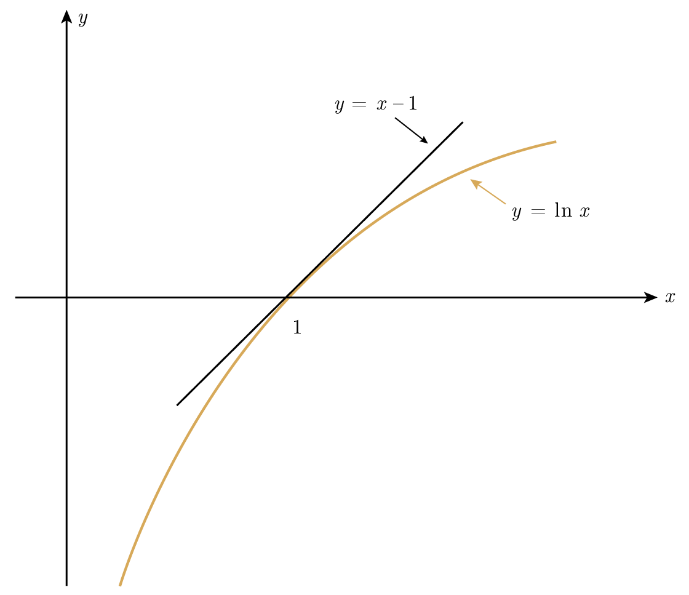
그림 18.3을 보십시오. 제가 실제 문제에 대해 이야기하는 동안 이 방정식을 마음에 새겨 두십시오. 저는 실제 문제, 즉 28개의 연립 미분방정식을 프로그램하여 해를 구한 다음, 전압 제한처럼 특정 값들을 1로 잘라 버렸습니다. 제기자의 반대에도 불구하고-그는 제 친구였는데-저는 그 친구가 나와 함께 문제의 날것 그대로의 절대 이진수 코딩(absolute binary coding)을 처음부터 끝까지 훑어 보게 할 것을 주장했습니다. 매 단계마다 무슨 일이 일어나고 있는지 그에게 설명해 주면서 말입니다. 그가 그렇게 하기 전에는 계산하지 않겠다고 버텼습니다-그러니 그에게는 선택의 여지가 없었죠! 프로그램에서 제한 단계에 다다르자 그가 말했습니다. “딕, 그건 전압 제한이 아니라 핀 제한(fin limiting, 조종 날개의 한계)이야.” 즉 그 제한값을 끝에 한 번이 아니라 매 단계마다 넣어야 한다는 뜻이었습니다. 이것은 제가 아는 한, 우리 둘 다 수학 기호가 무슨 뜻인지 정확히 이해하고 있었고-둘 다 의심의 여지가 없었지만-그 기호의 해석에서는 전혀 일치를 못 봤음을 보여주는 아주 좋은 예입니다! 만약 우리가 그 오류를 잡아내지 못했다면, 제 해석 때문에 생긴 기동성 저하를 항공기와 관련된 어떤 실제 실험에서도 드러내지 못했으리라 의심합니다. 그래서 저는 지금까지도, 시뮬레이션 대상이 무엇인지 속속들이 이해하는 사람이 세부 프로그래밍에 반드시 참여해야 한다고 주장합니다. 그렇게 하지 않으면, 제기자와 프로그래머 둘 다 정확히 무엇이 의미되는지 알지만 그들의 해석이 크게 달라질 수 있고 그래서 전혀 다른 결과가 나오는, 그런 상황을 여러분도 마주하게 될지도 모릅니다!
시뮬레이션이 언제나 시간 함수에 관한 것이라고 생각해서는 안 됩니다. 제가 맡았던 문제 하나를 소개하죠. 우리가 낡은 M9 포 제어기(gun director, 대공포 조준용 아날로그 계산기) 부품으로 만든 미분 해석기를 돌려서, 중앙 교환국(central office)에서의 차단(blocking) 확률 분포를 계산하는 것이었습니다. 그들이 준 것은 서로 연결된 무한 계의 선형 미분방정식이었습니다. 각 식은 그만큼의 통화가 중앙 교환국을 점유할 확률 분포를 전체 부하의 함수로 주는 것이었죠. 물론 유한한 기계에서는 무언가 처리를 해야 합니다. 기억이 맞다면 제게는 적분기 12개밖에 없었습니다. 저는 그 체계를 임피던스 선로(impedance line)로 보았습니다. 그리고 마지막 두 개의 계산된 확률값의 차를 이용하여 다음 두 확률값의 차가 그것에 비례한다고 가정했습니다(앞선 두 함수의 차로부터 이끌어 낸 합리적인 비례 상수를 사용했습니다). 그리하여 제가 계산하고 있는 것 너머의 다음 방정식에서 오는 항이 그럴듯하게 공급되도록 했습니다. 그 답들은 교환 부서에서 꽤 인기가 있었고 계산 기계에 대한 좋지 않은 평가를 여전히 갖고 있던 제 상사에게도, 제 생각에는, 인상을 남겼습니다.
수중 시뮬레이션도 있었습니다. 특히 제 친구가 바하마에 설치한 음향 배열(acoustic array, 해저 음향 센서 배열)에 관한 것이 있었죠. 겨울이 되면 그 친구는 물론 현장에 나가 점검하고 추가 측정을 해야 했습니다. 트랜지스터의 설계와 동작에 관한 시뮬레이션도 무수히 많았습니다. 마이크로파 “점프-점프(jump-jump)” 중계국들-수신 혼(receiver horn, 신호를 모으는 나팔 모양 안테나)을 단-의 시뮬레이션도 있었습니다. 그리고 한쪽 끝의 단일 신호 맥동(blip)이 저마다 분리된 중계국들을 거쳐 갈 때 나타나는 전체적인 안정성에 관한 시뮬레이션도 있었습니다. 각 중계국이 맥동으로부터 재빨리 회복한다 해도, 그럼에도 맥동의 크기가 대륙을 가로지르면서 커질 가능성은 충분히 있습니다. 각 중계국에는 펄스가 시간이 지나면 소멸한다는 의미의 안정성이 있었지만 공간에서의 안정성이라는 문제도 있었습니다-임의의 펄스가 대륙을 가로지를 때 끝없이 커질까요? 알록달록한 이유로 저는 이 문제를 “공간 안정화(space stabilization)”라고 이름 붙였습니다. 우리는 그것이 일어날 조건과 일어나지 않을 조건을 알아야 했습니다-그래서 시뮬레이션이 필요했죠. 무엇보다도 맥동의 모양이 대륙을 가로질러 가는 동안 변했기 때문입니다.
이제 여러분도 알아보았을 것이라 믿습니다. 어떤 방식으로든 수학적으로 기술할 수 있는 상황이라면, 원리적으로 거의 무엇이든 시뮬레이션할 수 있습니다. 실전에서 불안정한 상황을 시뮬레이션할 때는 아주 조심해야 합니다-다만 제20장에서, 연구소에 중요했기 때문에 제가 풀어야만 했던 극단적인 사례를 하나 이야기해 드리겠습니다. 그 말의 뜻은, 적어도 나에게는, 할 수 없다는 어떤 변명을 스스로에게 했다 해도 답을 얻어야만 한다는 것이었습니다. 중요한 문제에는, 그것을 얻어내려는 결심만 있다면 언제나 어떤 형태로든 답이 있습니다. 완벽하지는 않을지 몰라도, 궁지에 몰렸을 때는 무언가가 없는 것보다 낫습니다-그것이 신뢰할 만하기만 하면 말이죠!
결함 있는 시뮬레이션 때문에 사람들이 좋은 아이디어를 버리는 일이 있습니다. 그리고 그런 일은 너무 자주 일어납니다! 그런데 문헌에서는 좀처럼 보이지 않습니다. 아주 아주 드물게 보고되기 때문입니다. 널리 보고된 (물론 다른 사람들이 그 오류를 지적하기 전까지는) 유명한 결함 시뮬레이션 하나가 있습니다. 소위 “로마 클럽(Club of Rome)”이 수행한 전 세계 모의실험이 그것입니다. 알고 보니 그들이 고른 방정식들은, 시작점이나 대부분의 계수를 어떻게 잡든 간에 재앙을 보여 주도록 꾸며져 있었습니다! 그런데 나중에 다른 사람들이 마침내 그 방정식들을 입수해 계산을 재현하고자 했을 때, 그 계산에는 심각한 오류들이 있었음이 밝혀졌습니다! 이 시뮬레이션의 이런 측면은 다음 장에서 다루겠습니다. 사람들이 믿고 싶어 하는 것, 곧 사실이 아닌 것을 믿게 만드는 일을 보고하는 일이든, 아니면 사람들이 좋은 아이디어를 추구하지 못하게 만드는 그런 보고를 내놓는 일이든, 이는 아주 심각한 문제이기 때문입니다.
19 시뮬레이션-II
이제 시뮬레이션의 신뢰성이라는 문제를 다뤄 보겠습니다. 이 주제보다 더 잘 말해 주는 것은 없을 테니, 1975년 여름 컴퓨터 시뮬레이션 회의(Summer Computer Simulation Conference)에서 인용하겠습니다.
컴퓨터 기반 시뮬레이션은 이제 시스템 모델을 분석하고 관찰된 문제에 대한 이론적 해법을 평가하기 위해 널리 사용되고 있다. 중요한 결정들이 시뮬레이션에 의존해야 하므로, 그 타당성이 검증되어야 하고 시뮬레이션을 주장하는 사람들이 자신이 달성한 실제 재현(authentic representation) 수준을 설명할 수 있어야 하는 것은 필수적이다.
안타까운 사실은, 많은 시뮬레이션의 신뢰성을 묻는 질문을 던지면, 그 시뮬레이션에 얼마나 많은 인력을 투입했는지, 컴퓨터가 얼마나 크고 빠른지, 문제가 얼마나 중요한지 같은 소리를 듣게 되는 경우가 태반이라는 것입니다. 이런 것들은 결코 질문의 요지와는 무관한 얘기입니다.
나는 그 문제를 조금 다르게 놓고 싶습니다.
과연 누가 그 시뮬레이션이 타당하다고 믿어야 하는가?
시뮬레이션을 시작하기 전에, 이 질문에 대해 깊이 생각하고 적절한 답을 찾아내기 전까지는 아무것도 시작하지 마십시오. 왜 그 질문에 답하는 것을 미뤄야 하는지에 대한 온갖 이유가 대개 제시되곤 하지만 그 질문에 만족스러운 답이 나오지 않는 한 여러분이 하는 모든 일은 헛수고가 될 뿐입니다. 아니, 더 심하면 오해를 불러일으키거나 명백한 오류로 끝나 버릴 수도 있습니다. 이 질문은 모델링의 정확성과 계산의 정확성 양쪽 모두를 아우릅니다.
진짜로 있었던 이야기 하나를 끼워 넣겠습니다. 캘리포니아주 패서디나에서 열린 어느 기술 회의가 끝난 어느 저녁이었습니다. 우리는 모두 함께 저녁을 먹으러 갔는데, 우연히 제 옆자리에 한 사람이 앉았습니다. 그 사람은 초기 우주비행 시뮬레이션의 신뢰성에 대해 강연을 했고 그 일을 책임지던 사람이었습니다. 당시 우주 발사가 대략 여덟 번 이루어졌던 때였습니다. 그가 말하기를, 그들은 신뢰도가 99점 몇 프로, 예를 들어 99.44% 이상이 되기 전에는 발사를 절대 하지 않았다는 것입니다. 저는 제 성격대로 꼬집었습니다. 우주 발사가 대략 여덟 번 있었는데, 지상에서 우주비행사들을 죽인 실제 연습(one live simulation)이 한 번 있었고 명백한 실패가 한 번 있었으니, 그런데 어떻게 그 신뢰도가 그렇게 높을 수 있느냐고 말입니다. 그는 온갖 변명을 늘어놓았지만, 운 좋게도 그의 반대쪽 옆자리 사람이 추궁에 합류했고, 우리는 그에게 마지못해 인정받아 냈습니다. 그가 계산한 것은 비행의 신뢰도가 아니라 시뮬레이션 자체의 신뢰도뿐이었다는 것을요. 그는 나아가 모든 사람이 그걸 이해하고 있다고 주장했습니다. 제가 물었죠. “그 비행을 최종 승인하는 국장(director)도 포함해서 말인가요?” 그가 거듭된 요청에도 답변을 거부한 것 자체가, 제 말이 딱 들어맞았다는 명백한 인정이었습니다. 그 자신도 국장이 그 차이를 이해하지 못한다는 것, 즉 그 보고서를 실제 발사의 신뢰도로 알고 있다는 것을 잘 알고 있었습니다.
그는 나중에 “달리 어떻게 할 수 있었겠느냐” 같은 말로 자기 행동을 변명하려 했지만 나는 즉시 그가 시뮬레이션을 실제와 훨씬 가깝게 연결할 수 있는 방법이 많다는 것을 짚어 주었습니다. 그날은 토요일 밤이었는데, 나는 월요일 아침이 되면 그가 예전의 습관으로 돌아가 시뮬레이션을 실제로 착각하고 그가 충분히 할 수 있었을 독립적인 검증을 거의 혹은 전혀 하지 않을 것이라는 게 확실했습니다. 그게 바로 시뮬레이션 전문가들에게 기대할 수 있는 것이라는 걸 알아두십시오. 그들은 시뮬레이션에만 관심이 있고 실제, 심지어 “관찰된 실제”에 대해서는 거의 혹은 전혀 신경 쓰지 않습니다.
요즘 성행하는 방대한 규모의 경영 시뮬레이션과 전쟁 게임(war gaming)을 생각해 보십시오. 모든 필수 요소가 모델에 제대로 반영되어 있습니까, 아니면 우리가 사람들을 잘못된 일을 하도록 훈련시키고 있는 것은 아닙니까? 이런 게임 모델들이 실제와 얼마나 관련이 있습니까? 그리고 다른 많은 모델들은 어떻고요?
우리는 오랫동안 조종사 훈련 시뮬레이터를 갖고 있었습니다. 이 시뮬레이터는 많은 측면에서 실제 비행보다 훨씬 유용한 훈련을 제공합니다. 훈련기 안에서는 현실에서는 절대 감히 시도하지 못할 비상 상황을 조종사에게 안겨 줄 수 있고 훈련기가 만들어 낼 수 있는 그런 풍부한 다양성은 현실에서 절대 만들어 낼 수 없습니다. 이런 훈련기는 분명히 매우 귀중한 자산입니다. 상대적으로 저렴하고, 조종사의 시간을 효율적으로 쓰며, 매우 유연합니다. 요즘 용어로 말하면, 이런 것들이 바로 “가상현실(virtual reality)”의 사례입니다.
하지만 시간이 흐르고 다른 유형의 비행기가 개발됨에 따라, 사람들이 새 비행기의 모든 새로운 상호작용을 모델에 넣기 위해 충분히 조심할까요? 아니면 새 비행기의 작지만 결정적인 상호작용 중 일부가 실수로 빠져서, 조종사가 그런 상황에서 실패하도록 준비시키는 꼴이 될까요?
여기서 문제가 또렷이 보입니다. 문제는 현대나 가까운 미래에 시뮬레이션이 필수가 아니라는 것이 아니라, 실제에 대한 경험이 거의 없는 요즘 세대의 사람들이 시뮬레이션이 모든 필수 세부 사항을 포함하도록 충분히 알 필요가 있다는 것을 깨달아야 한다는 것입니다. 방대한 세부 사항들 속에서 어딘가 실수를 저지르지 않았다는 것을 어떻게 스스로 확신하겠습니까? 수년 동안 현장에서 사용되어 온 컴퓨터 프로그램들에도 아직 심각한 오류가 얼마나 많이 남아 있는지 기억해 보십시오! 많은 상황에서 그런 오류는 한 명 혹은 그 이상의 사람들의 생사를 가를 수 있습니다. 소중한 장비와 돈과 시간을 잃는 것은 말할 것도 없고요.
시뮬레이션의 관련성과 신뢰성은 심각한 문제입니다. 안타깝게도, 이 문제를 해결해 줄 마법의 총알, 즉 은탄환(silver bullet)도 없고, 외울 수 있는 신비한 주문도 없고, 만병통치약도 없습니다. 여러분에게는 여러분 자신만 있을 뿐입니다.
이번에는 제가 만든 가장 어설픈 시뮬레이션에 대해 이야기하겠습니다. 1955년 여름, 벨 전화연구소(Bell Telephone Laboratories, 이후 벨 연구소)는 주변 주민들과 직원들의 친척, 친구들이 그곳에서 일하는 사람들이 무엇을 하는지 조금이나마 알 수 있도록 공개 행사를 열기로 결정했습니다. 당시 저는 그 시절 기준으로는 큰 아날로그 미분해석기(analog differential analyzer)를 책임지고 있었고 토요일 종일 시연을 해야 했습니다. 그때 우리가 하고 있던 일의 대부분은 유도 미사일의 궤적이었는데, 보안 문제에 걸리기 싫어서 일부 내용을 검열해서 보여줄 생각은 없었습니다. 그래서 나는 테니스 게임이 공기역학과 궤적 등을 분명히 포함하니 우리가 하는 일을 정직하게 보여줄 수 있는 시연이라고 생각했습니다. 게다가 방문한 사람들에게 훨씬 더 매력적이고 재미있을 것 같아서였습니다.
나는 고전 역학을 이용해 방정식을 세우고 탄성 반발(elastic bounce)을 포함시켰으며 기계가 한쪽 베이스라인을 맡고 인간 플레이어는 반대쪽을 맡도록, 또 손에 닿기 좋게 배치한 두 개의 다이얼로 라켓 각도와 공을 치는 강도가 정해지도록 기계를 설정했습니다. 기억하십시오, 그 시절(1955년)에는 공공장소에 게임을 하는 기계가 없었기 때문에, 그 전시물은 방문객들에게 꽤 새로웠습니다. 그런 다음 나는 똑똑한 물리학자 친구이자 열렬한 테니스 애호가를 초대해 공의 반발(아스팔트 코트 기준)과 공기 저항에 대한 상수를 점검하고 조정하게 했습니다. 그가 만족했을 때, 나는 그의 등 뒤에서 다른 물리학자에게 상수를 건드리지 못하게 한 채 비슷한 의견을 달라고 부탁했습니다. 이렇게 해서 나는 공에 “회전(spin)”이 없는 테니스의 그럴듯한 시뮬레이션을 얻었습니다.
공공을 위한 오락이 아니라면 나는 훨씬 더 많은 일을 했을 것입니다. 풍속이 변하는 선풍기 앞에 테니스 공을 줄에 매달아 놓고, 바람 속도에 따라 공이 기울어지는 각도를 주의 깊게 관찰해 항력을 알아낼 수도 있었고, 다양한 마모 정도의 테니스 공들을 각각 포함시킬 수도 있었습니다. 공을 떨어뜨려 서로 다른 높이에서의 반발력을 기록해 탄성 상수의 선형성을 시험해 볼 수도 있었습니다. 그것이 중요한 문제였다면, 나는 몇 경기를 촬영해서 회전이 없는 샷들을 재현할 수 있는지 시험해 볼 수도 있었습니다. 나는 이런 것 중 어느 것도 하지 않았습니다! 그것은 비용을 들일 가치가 없었습니다. 그래서 그것은 제가 만든 가장 어설픈 시뮬레이션이었습니다.
하지만 이야기의 핵심은 그다음에 일어난 일입니다! 관람객들이 무리를 지어 지나갈 때 조수들이 무슨 일이 일어나고 있는지 설명하고 플로팅 보드(plotting board) 출력물에 펼쳐지는 게임 장면을 보여줬습니다. 그런 다음 우리는 그들이 기계와 대결해 게임을 하게 했는데, 나는 기계가 질 수 있도록 시뮬레이션을 프로그래밍해 두었습니다. 사람과 기계의 전체 과정을 뒤에서 지켜보면서, 나는 얼마 지나지 않아 성인 중 어떤 이도 무슨 일이 벌어지고 있는지를 제대로 파악해 게임을 성공시킨 사람이 없었고, 아이들은 거의 전부 그렇게 했다는 것을 발견했습니다! 그 점을 곰곰이 생각해 보십시오! 그것은 젊은 마음의 유연성과 나이 든 마음의 경직성에 대해 많은 것을 말해 줍니다! 요즘에는 대부분의 노인들이 VCR(비디오 재생기)을 다룰 줄 모르지만 아이들은 다룰 줄 안다고 여겨집니다!
이 사실을 기억하십시오. 나이 든 마음은 젊은 마음보다 새로운 아이디어에 적응하는 데 더 큰 어려움을 겪습니다. 여러분은 앞으로 경력의 상당 부분 동안 나이 든 사람들에게 새로운 아이디어를 보여주고 공식 발표를 하게 될 테니까요. 여러분의 자녀가 여러분이 보여주는 것을 이해할 수 있다는 사실은, 여러분이 시연을 하고 있는 그 청중이 이해할 수 있는지 여부와는 거의 무관합니다. 그것은 제가 배워야 할 쓰라린 교훈이었고 나는 그 실수를 다시 저지르지 않으려고 애써 왔습니다. 나이 든 사람들은 새로운 아이디어를 재빨리 파악하지 못합니다. 그들이 멍청하다거나 어리석다고 해서가 아니라, 그런 게 아니라, 단지 나이 든 마음은 근본적으로 새로운 아이디어에 적응하는 데 대개 느리기 때문입니다.
나는 여러분이 시뮬레이션하는 분야의 근본 법칙을 잘 장악하고 있어야 한다는 필요성을 강조해 왔습니다. 그런데 경제학에는 그런 법칙이 없습니다! 내가 믿는 경제학의 유일한 법칙은 해밍의 법칙, 즉 “생산되지 않은 것은 소비할 수 없다”입니다. 내가 아는 경제학의 모든 법칙 중에는, 수학적 동어반복이거나 아니면 때때로 거짓인 것 말고는, 단 하나의 신뢰할 만한 법칙도 없다고 나는 생각합니다. 그러니 여러분이 경제학에서 시뮬레이션을 할 때는 순수과학에서 얻는 것 같은 신뢰성을 얻을 수 없습니다.
또 하나의 이야기를 끼워 넣겠습니다. 몇 년 전 UC 버클리에서 이런 일이 있었습니다. 비슷한 수의 남녀가 대학원에 지원했는데, 남성이 여성보다 훨씬 많이 합격했습니다. 남성들이 평균적으로 여성들보다 더 잘 준비되어 있다고 가정할 이유는 없었습니다. 그러므로 이상적인 공정성 모델의 관점에서는 명백한 차별이 있었습니다. 대학 총장은 어떤 학과가 차별을 저질렀는지 알 것을 요구했습니다. 면밀히 조사해 보니 어떤 학과도 차별하지 않은 것으로 드러났습니다! 어떻게 그럴 수가 있습니까? 쉽습니다! 각 학과마다 신입 대학원생을 받는 자리 수가 다르고 지원하는 남녀 비율도 다릅니다. 자리가 많고 남성 지원자가 많은 학과는 수학을 포함한 순수과학 계열이었고 합격률이 낮고 여성 지원자가 많은 학과는 문학, 역사, 연극, 사회과학 같은 인문·사회과학 계열이었습니다. 그러므로 차별이 일어났다고 말할 수 있다면, 그건 남성들이 어린 나이에 순수과학의 준비 과정인 수학을 어쩔 수 없이 이수하게 된 반면, 여성들은 선택에 따라 수학을 들을 수도 안 들을 수도 있었기 때문입니다. 수학, 물리, 화학, 공학 같은 것을 피한 사람들은 자리가 넉넉한 곳에 지원할 자격이 없었고 거절될 확률이 높은 곳에 지원할 수밖에 없었습니다. 요즘 사람들은 그런 상황에 적응하는 데 어려움을 겪습니다!
여기서 여러분은 널리 알려지지 않았지만 통계학자들이 다양한 모습으로 광범위하게 연구해 온 현상을 보게 됩니다. 데이터를 합치는 것은 세부적으로 존재하지 않는 효과를 만들어 낼 수 있다는 것입니다. 여러분은 데이터를 합치면 어떤 것을 흐릿하게 만들 수 있다는 생각에는 익숙할 것입니다. 하지만 그것이 효과를 만들어 낼 수도 있다는 것은 덜 알려져 있습니다. 미래에 이런 일이 여러분에게 일어나지 않도록 조심해야 합니다. 합쳐진 데이터 때문에 여러분이 저지르지 않은 죄로 고발당할 수 있으니까요. 심슨의 역설(Simpson’s paradox)이 유명한 예로, 두 부분 표본 각각은 A가 B와 C보다 우월하다고 지지하지만 합쳐진 데이터는 B가 A보다 우월하다고 지지합니다.
여러분은 우주비행 시뮬레이션에서 우리가 데이터를 합쳤고 때로는 차량 전체를 한 점으로 만들었다고 말할지 모릅니다. 그렇습니다, 우리는 그랬습니다. 하지만 우리는 역학 법칙을 알고 있었고 언제 그렇게 해도 되고 언제 안 되는지 알았습니다. 그래서 중간궤도 수정(midcourse correction)에서는 차량을 정확히 올바른 방향으로 향하게 한 다음 역추진 로켓(retro rocket)이나 다른 로켓을 발사해 수정을 가합니다. 그리고 그런 동안 사람들이 차량 안에서 움직이는 것을 허용하지 않습니다. 움직이면 회전이 발생해 신중한 로켓 방향 설정을 망칠 수 있기 때문입니다. 우리는 배경 이론을 충분히 안다고 생각했고 그 문제에 대해 수년간의 경험이 있었기 때문에, 모든 세부 사항을 하나의 점 질량(point mass)으로 합치는 것이 여전히 신뢰할 수 있는 시뮬레이션 결과를 주었습니다.
제안되는 시뮬레이션 영역 중 상당수에는 그런 알려진 경험도 이론도 없습니다. 그래서 나는 가끔 생태계 시뮬레이션을 해 달라는 요청을 받으면, 조용히 수학적으로 표현된 모든 가능한 상호작용의 규칙을 요구했습니다. 예를 들어 강우량이 주어졌을 때 나무가 얼마나 자랄지, 상수가 정확히 무엇인지, 그리고 몇 번의 시험 실행을 비교할 실제 살아 있는 데이터를 어디서 구할 수 있는지 등을요. 그들은 곧 알아채고 자신들이 원하는 결과를 주고 선전에 써먹을 수 있는 매우 의심스러운 시뮬레이션을 기꺼이 돌릴 다른 사람을 찾아가곤 했습니다. 나는 여러분이 자신의 청렴함을 지키고 타인의 선전에 이용당하지 않도록 하라고 권합니다. 시뮬레이션을 하기로 할 때는 경계해야 합니다!
이런 인문·사회과학적 상황들이 큰 신뢰성으로 시뮬레이션하기 어렵다면, 인간이 시뮬레이션에 대한 지식으로 자신의 행동을 바꿔 시뮬레이션을 무효화시킬 수 있는 경우를 생각해 보십시오. 보험 사업에서 보험사는 여러분이 오래 살 것이라고 내기를 걸고 여러분은 일찍 죽을 것이라고 내기를 겁니다. 연금(annuity)의 경우에는 그 반대입니다. 이 점을 생각해 보지 못했다면 말이죠. 원칙적으로 보험사를 속이고 자살할 수는 있지만 흔한 일은 아니며 보험사들은 확실히 이 점에 주의를 기울입니다.
주식 시장에서는, 만약 돈을 많이 버는 널리 알려진 전략이 존재한다면, 그 전략을 아는 것 자체가 전략을 망쳐 버릴 것입니다! 이 경우 사람들은 여러분이 한 예측을 무효화하도록 행동을 바꿀 것입니다. 법적으로 허용되는 전략이 존재할 수 없다는 말이 아닙니다(다만 정상적인 주가 상승 이상의 효과를 내려면 상당히 비선형적인 이론이어야 할 것이라고 나는 꽤 확신합니다). 하지만 그것은 아주 은밀하게 유지되어야 할 것입니다. 근본적인 문제는 주식 시장이 부정직하다는 것입니다. 내부자들은 명시된 법률에 따르면 행사할 수 없는 정보를 갖고 있고 그러나 그들은 항상 그렇게 행동합니다! 내부 정보를 쓰지 않으면, 쓰는 사람들에 맞서 이길 기회가 거의 없고 내부 정보에 따라 행동한다면 불법 행위를 하는 것입니다! 어느 쪽이든 나쁜 일이고 내부자들은 그들이 지금 이익을 얻고 있는 일부 내부 거래를 제거할 기계에 의한 거래 자동화 시도를 모두 거부하고 있습니다. 그들이 그렇게 한다는 것은 알려져 있지만 법정에서 증명할 수는 없는 것으로 보입니다! 게다가 허위의 “내부 정보”가 끊임없이 유포되어 외부자들이 자신이 내부자라고 착각하고 그것에 따라 행동함으로써 소문을 만든 사람들에게 이익이 돌아가기를 바라고 있습니다.
그러므로 인간이 그 출력을 이용해 자신의 이익을 위해 행동 패턴을 바꿀 수 있는 상황의 시뮬레이션에는 어떤 것이든 조심하십시오. 그들은 가능하다고 생각되는 때마다 그렇게 할 테니까요.
하지만 모든 것이 손실된 것은 아닙니다. 우리는 많은 어려운 상황에 대처하기 위해 시나리오 방법(method of scenarios)을 고안했습니다. 이 방법에서는 실제로 일어날 일을 예측하려 하지 않고 단지 여러 개의 가능한 전망만 제시합니다. 이는 정확히 스포크(Spock)가 그의 육아 책에서 한 일입니다. 과거에 많은 아이들을 관찰한 것에서 그는 아이들의 (초기) 행동이 그 관찰 결과와 근본적으로 다르지 않을 것이라고 가정했고, 여러분의 특정 아이가 무엇을 할 것인지를 예측하는 대신, 아기가 언제 기어가기 시작하고, 말을 시작하고, 모든 것에 “싫어”라고 말하는 것 같은 것들에 대해 행동 범위를 가진 전형적인 패턴만 제시했습니다. 스포크는 주로 아이의 생물학적 행동을 예측했고 문화적 행동은 가능한 한 피했습니다. 어떤 시뮬레이션에서는 시나리오 방법이 우리가 할 수 있는 최선입니다. 실제로, 바로 그게 제가 이 일련의 장들에서 하고 있는 일입니다. 제가 예측하는 미래는 세세한 부분까지는 알 수 없고 단지 제 생각에 일어날 법한 몇 가지 종류의 시나리오로만 알 수 있습니다. 이 주제에 대해서는 다음 장에서 더 이야기하겠습니다.
여러분이 자신의 시뮬레이션, 혹은 미래에 여러분에게 제시될 시뮬레이션의 신뢰성을 현실적으로 평가하는 방법을 결정하는 문제로 돌아가겠습니다. 첫째, 배경 분야가 가정된 법칙을 높은 정도로 뒷받침합니까? 작지만 결정적인 효과 하나가 빠져 있지 않다는 것을 얼마나 확신합니까? 입력 데이터는 신뢰할 만합니까? 시뮬레이션은 안정적인가 불안정한가? 과거의 알려진 경험에 대비해 어떤 교차검증(cross-check)을 할 수 있습니까? 질량, 에너지, 각운동량 보존 같은 내부 검증을 만들어 낼 수 있습니까? 오류 정정 부호(error-correcting codes)에 대한 강의에서 아시다시피, 잉여도(redundancy)가 없으면 신뢰성에 대한 어떤 검증도 있을 수 없습니다.
나는 지금까지 언뜻 사소해 보일 점을 말하지 않았습니다. 문제를 기술한 종이 위의 표시들이 기계에 정확히 들어갑니까? 프로그래밍 오류는 너무 흔한 것으로 알려져 있습니다.
이 문제에 대해 사람들이 할 수 있는 일이 있다는 것을 보여주는 또 다른 이야기를 하겠습니다. 한 번은 화학과에서 연방정부를 위해 원자폭탄 폭발 직후 상층 대기의 화학 반응을 조사하는 계약을 검토하고 있었습니다. 나는 조언과 지도를 제공해 달라는 요청만 받았습니다. 그 문제를 들여다보니, 계산해야 할 각 경우마다, 그들이 기대하는 특정 화학 반응에 따라, 대략 100개의 상미분방정식(常微分方程式)을 풀어야 한다는 것을 알게 되었습니다.
나는 그들이 이 다양한 방정식 집합을 매번 정확하게 기계에 넣을 수 있다고 생각하지 않았습니다. 그래서 우리는 먼저 프로그램을 작성하자고 했습니다. 그 프로그램은 각 특정 반응을 하나의 카드로 기술하고 그 상호작용의 관련 상수들을 모두 포함하는 천공카드(punched card)에서 시작해 방정식 자체를 만들어 내는 프로그램이었습니다. 이로써 모든 항이 존재하는 것이 보장되고 같은 반응이 다른 방정식에 나타날 때 계수가 서로 다르지 않도록 하는 등의 오류가 없도록 했습니다. 되돌아보면 지극히 당연한 일이었지만 그 당시 그들에게는 놀라운 일이었고 그들의 노력에 큰 보람을 안겨 주었습니다. 그들은 앞으로 돌릴 특정 시뮬레이션에 포함하고 싶은 카드를 파일에서 골라내기만 하면 되었고 기계가 적분 간격 배치를 포함한 나머지 모든 것을 자동화했습니다. 편의성과 정확성 말고도 나의 주요 생각은, 그들이 가장 잘하는 일-화학-에 마음을 집중하게 하고 그들이 전문가가 아닌 기계를 만져서 끙끙대는 일을 막으려는 것이었습니다. 게다가 그들은 실제 컴퓨팅을 책임지고 있었습니다. 나는 회계 처리와 컴퓨터의 기계적 일을 쉽게 만들어 주었지만 생각해야 할 부분에서 그들을 덜어 주기를 거부했습니다.
요약하면, 시뮬레이션의 신뢰성은 그 어느 때보다 중요해지고 있으므로 여러분이 앞으로 경력에서 많이 보게 될 그 문제는, 무시할 수 없는 중요한 문제입니다. 큰 기계가 멋지게 인쇄된 종이를 내어놓거나 예쁘고 화려한 그림을 보여준다는 이유만으로 당연시할 수 있는 것이 아닙니다. 여러분은 여러분의 결정에 책임이 있으며 아무리 그러고 싶어도 그 책임을 시뮬레이션을 하는 사람들에게 돌릴 수는 없습니다. 신뢰성은 쉬운 답이 없는 핵심적인 질문입니다.
아날로그 컴퓨터와 디지털 컴퓨터의 관계로 돌아가 보겠습니다. 요즘에는 신경망(neural nets)이라는 주제가 가끔 등장합니다. 아날로그 기계가 디지털 기계가 계산할 수 없는 것들도 계산할 수 있다는 주장이 제기됩니다. 우리는 이 점을 더 자세히 살펴봐야 합니다. 이것은 사실 수년 전 아날로그 컴퓨터가 디지털 컴퓨터로 대체되던 때 제기되던 주장과 똑같습니다. 이제 우리는 이 주제를 주의 깊게 다룰 관련 지식을 이 장들에서 갖추게 되었습니다.
기본 사실은, 나이퀴스트 표본화 정리(Nyquist sampling theorem)에 따르면, 신호에 존재하는 최고 주파수마다 두 개의 표본(whole real line 전체에 균등하게 배치된 점들 기준)이면 원래 신호를 (반올림 오차 내에서) 재현하기에 충분하다는 것입니다. 실제로 대부분의 신호는 주파수 대역에서 상당히 급격한 차단(cutoff)을 가지며 차단이 없으면 신호에 무한한 에너지가 있을 것입니다!
실제로 우리는 디지털 해법에서 비교적 적은 수의 표본만 사용하므로, 나이퀴스트가 요구하는 개수의 두 배 정도가 필요합니다. 게다가 대개 한쪽에만 표본이 있고 이것은 또 다른 두 배의 요소를 만들어 냅니다. 따라서 최고 주파수에 대해 일곱에서 열 개 정도의 표본이 필요합니다. 그리고 다루는 대역에 더 높은 주파수들이 조금 섞여 들어오는 앨리어싱(aliasing)이 여전히 조금 있습니다(하지만 이는 신호에서 정보가 있는 곳에는 거의 없습니다). 이것은 이론적으로도 실험적으로도 검증할 수 있습니다.
때로는 수학자(아마도 계산 중인 답에서)가 신호의 주파수 함량을 정확히 추정할 수 있지만 대개는 설계자에게 가서 그들의 최선의 추정치를 받아야 합니다. 유능한 설계자는 그런 추정치를 제시할 수 있어야 하며 그럴 수 없다면 이를테면 디지털 해법의 표본 추출률(sampling rate)인 이 중요한 수를 추정하기 위해 해법을 많이 탐색해야 합니다. 문제를 단계별로 푸는 것은 사실상 함수를 표본화하는 것이며 원한다면 적응형(adaptive) 단계별 해법 방법을 쓸 수 있습니다. 여러분 편에는 많은 이론과 어느 정도의 실천이 있습니다.
정확성 측면에서 디지털 기계는 많은 자릿수를 다룰 수 있는 반면, 아날로그 기계는 구성요소 하나당 10,000분의 1 정도를 넘기기 어렵습니다. 그래서 아날로그 기계는 매우 정확한 답을 주거나 “깊은 계산(deep computation)”을 수행할 수 없습니다. 하지만 여러분이 시뮬레이션하는 상황에는 종종 그와 비슷한 크기의 불확실성이 있으며 조심하면 정확성 문제를 다룰 수 있습니다.
시간이 지나면서 우리는 더 넓은 대역폭의 아날로그 컴퓨터를 개발했지만 우리는 회로가 함의하는 대역폭을 정확성을 위해 쓰는 대신 계산 속도를 높이는 데 사용했습니다. 어쨌든 아날로그 부품의 근본적인 정확성은 아날로그 기계로 할 수 있는 것을 제한합니다. RDA #2 같은 옛 기계식 컴퓨터는 해법 하나당 대략 30분이 걸렸습니다. 포병 사격 통제 장치(gun director)에서 파생된 전기식 컴퓨터는 아직 기계적인 부품이 조금 남아 있었는데 수 분이 걸렸고, 나중에 완전 전자식은 몇 초가 걸렸으며, 이제 일부는 입력을 공급하는 속도만큼 빠르게 화면에 해법을 번쩍이고 보여줄 수 있습니다.
상대적으로 낮은 정확성에도 불구하고 아날로그 컴퓨터는 여전히 때때로 유용합니다. 특히 제안된 장치의 일부를 회로에 통합해서 그에 대한 적절한 수학적 설명을 찾지 않아도 되는 경우에 그렇습니다. 더 빠른 아날로그 컴퓨터 중 일부는 초기 조건이나 방정식 자체의 매개변수 변화에 반응할 수 있고 화면에서 그 효과를 즉시 볼 수 있습니다. 그래서 해법당 시간이 더 걸리고 완전한 수학적 설명을 요구하는 디지털 기계보다 문제에 대한 “느낌”을 더 쉽게 얻을 수 있습니다. 아날로그 기계는 요즘 대체로 무시되고 있습니다. 그래서 나는 그것들이 과학자와 엔지니어의 도구 상자라는 무기고에 자리가 있다는 것을 여러분께 상기시켜 드릴 필요가 있다고 느낍니다.
20 시뮬레이션-III
지난 장에서 이어온 큰 흐름을 계속 따라가 볼게요. 다만 이번에는 “쓰레기가 들어가면 쓰레기가 나온다(garbage in, garbage out)”라는 옛말에 초점을 맞추겠습니다. 흔히 줄여서 gigo라고도 부르죠. 핵심은 이겁니다. 제대로 정해지지 않은 숫자와 방정식(쓰레기)을 넣었다면, 그 결과물 또한 제대로 정해지지 않은 결과(쓰레기)일 수밖에 없다는 거예요. 그리고 이 말은 암묵적으로 반대 명제까지 깔고 있죠. 즉 들어가는 것이 정확하다면 나오는 것도 정확해야 한다는 것입니다. 저는 이 두 가정이 모두 거짓이 될 수 있음을 보여드리겠습니다.
많은 시뮬레이션이 여전히 미분방정식(differential equation, 常微分)을 다루고 있으니, 가장 단순한 1계 상미분방정식의 형태부터 다뤄보죠.
여러분은 방향장(direction field)이 곧 xy-평면의 각 점에다가 그 미분방정식이 주는 기울기를 가진 선분을 그려 넣은 것에 불과하다는 걸 기억하실 겁니다. 그림 20.1을 보세요. 예를 들어 미분방정식
은 지시된 방향장을 갖습니다, 그림 20.2. 동심원들 x2 + y2 = k 위의 각 점에서 기울기는 항상 같습니다. 기울기가 k의 값에 따라 달라지기 때문이죠. 이것들을 등경선(isoclines)이라고 부릅니다.
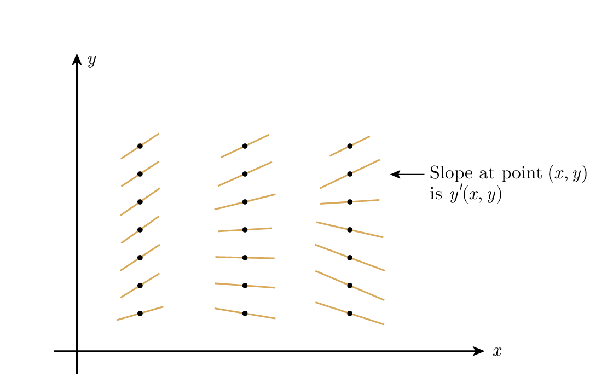
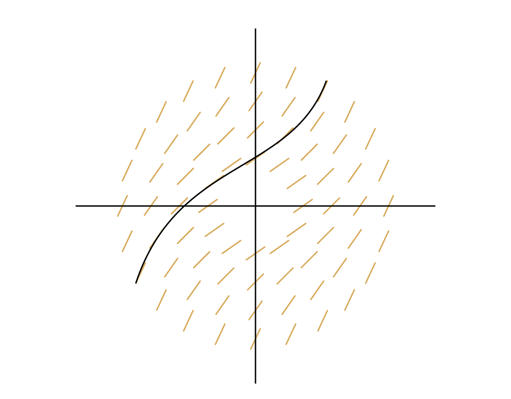
다음 그림, 그림 20.3을 보면 다른 미분방정식의 방향장이 나옵니다. 왼쪽에는 발산하는 방향장이 보이는데, 이는 초기 시작값의 작은 변화나 계산상의 작은 오차가, 궤적 중간 지점의 값들에는 곧 큰 차이를 만들어낸다는 뜻입니다. 하지만 오른쪽의 방향장은 수렴하고 있어요. 중간에서 큰 차이를 보여도 오른쪽 끝에서는 작은 차이로 이어진다는 뜻이죠. 이 단 하나의 예시를 통해서 여러분은 작은 오차가 커질 수도, 큰 오차가 작아질 수도 있음을 봅니다. 게다가 작은 오차가 커졌다가 다시 작아질 수도 있습니다. 따라서 해의 정확도는, 전 구간에 걸친 어떤 절대적인 정확한 값이 아니라, 여러분이 어느 지점에서 그걸 이야기하느냐에 달려 있어요. 이 모든 것 뒤에 있는 함수는
이고 이를 미분하면 그 미분방정식은
이 됩니다.
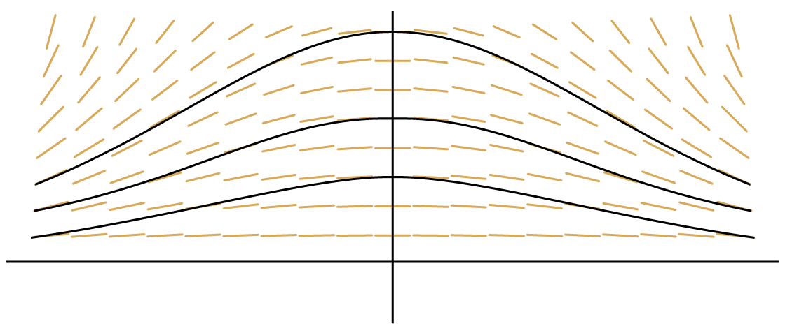
아마 여러분 머릿속에는 그 방정식의 “참값의 정확한 해(solution)”를 감싸는 “튜브(tube, 관)”를 그려 넣었을 테고 그 튜브가 처음에는 팽창하다가 나중에는 수축하는 모습을 봤을 겁니다. 2차원에서는 괜찮아요. 하지만 n개의 그러한 미분방정식으로 된 계, 이를테면 아까 언급한 해군 요격 문제에서의 28개 같은 경우라면, 참값의 해를 감싸는 이런 튜브들은 여러분이 생각하는 것과 정확히 똑같지 않게 됩니다. 2차원의 네 원(circle) 그림이 제9장의 10차원까지 확장되면 n차원 역설로 이어지는데, 그걸 보면 이런 상상이 얼마나 교묘하게 잘못될 수 있는지 알 수 있어요. 이것은 앞선 장들에서 안정 문제와 불안정 문제에 대해 말한 내용을 다른 방식으로 바라본 것에 불과합니다. 다만 이번에는 미분방정식을 써서 이야기를 좀 더 구체적으로 하고 있을 뿐이죠.
미분방정식을 수치적으로 어떻게 풀까요? 하나의 일계 선형 상미분방정식만을 놓고 시작하면서 우리는 그 방향장을 상상해 봅니다. 문제는 우리가 갖고 있는 초기값에서 출발해, 그다음 인접한 점에 도달하는 것입니다. 만약 미분방정식에서 주어지는 국소 기울기(local slope, 그 지점에서의 순간 기울기)를 취해 접선 방향으로 아주 작은 한 걸음을 내딛는다면, 작은 오차만 생길 뿐입니다, 그림 20.4. 그 점을 이용해 다음 점으로 나아가지만 그림에서 보이는 것처럼 우리는 점차 진짜 곡선에서 벗어납니다. 왜냐하면 계속 “그 시점의 기울기”를 사용하지, 구간에서 대표적인 기울기를 쓰는 게 아니기 때문이죠. 이를 피하기 위해 값을 “예측”하고 그 값을 써서 (미분방정식을 이용해) 그 지점의 기울기를 평가한 다음, 양 끝의 기울기를 평균 내어 그 구간에 쓸 평균 기울기를 추정합니다, 그림 20.5. 그리고 이 평균 기울기를 이용해 다시 한 걸음 나아가는데, 이번에는 “수정자(corrector, 보정식)” 공식을 사용합니다. 예측된 값과 수정된 값이 “가깝다면” 우리가 충분히 정확하다고 가정하지만 둘이 많이 벌어져 있다면 걸음 크기를 줄여야 합니다. 차이가 너무 작다면 걸음 크기를 늘려야 하겠고요. 이렇게 전통적인 예측자-수정자(predictor-corrector) 방법에는 단계마다의 오차를 점검하는 자동 메커니즘이 내장돼 있습니다-하지만 이 단계별 오차는 물론 결코 전체 누적 오차가 아닙니다! 누적 오차는 명백히 방향장이 수렴하는지 발산하는지에 달려 있어요.
그림 20.4-대략적인 방법
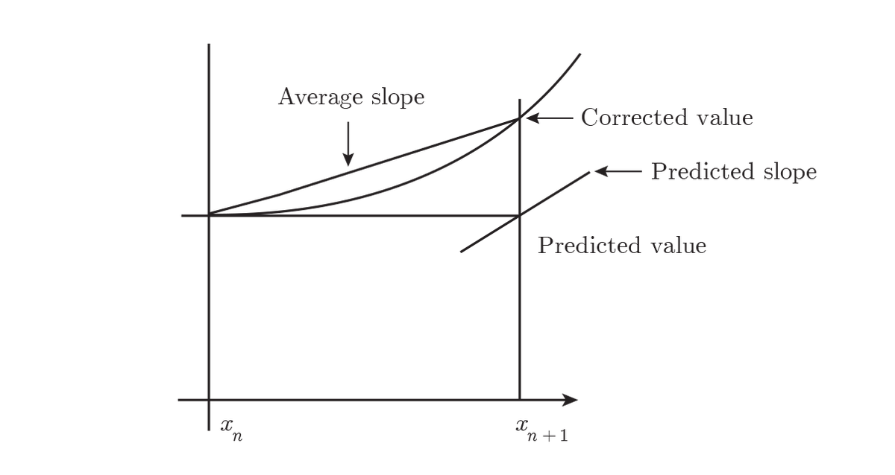
우리는 예측과 수정 양쪽에 단순한 직선을 사용했습니다. 하지만 차수가 더 높은 다항식을 쓰는 것이 경제적이기도 하고 정확하기도 합니다. 전형적인 경우 4차 정도의 다항식이죠(밀른, Milne, 아담스-배시포트, Adams-Bashforth, 해밍, Hamming 등). 그래서 다음 값을 예측하려면 함수와 도함수의 이전 값 몇 개를 써야 하고 이 값을 미분방정식에 넣어 추정된 새 기울기를 얻은 다음, 그 기울기와 함수·기울기의 이전 값들을 이용해 그 값을 수정합니다. 잠깐만 생각해 보면 수정자는 곧 재귀 디지털 필터(recursive digital filter, 이전 출력값을 다시 입력으로 되먹이는 필터)임을 알 수 있는데, 입력 데이터가 도함수이고 출력값이 위치인 셈이죠. 안정성이라든지 우리가 앞서 논의한 모든 것이 여기서도 관련됩니다. 앞서 말했듯, 미분방정식을 통해 예측된 값이 수정된 기울기로 들어가는 추가적인 피드백(되먹임)도 있습니다. 하지만 둘 다 단순히 차분방정식(difference equation, 이산적인 값들 사이의 관계식)을 푸는 것일 뿐입니다-재귀 디지털 필터는 바로 이 공식 그 이상도 이하도 아니에요. 여러분의 디지털 필터 수업이 그렇게 생각하게 만들었을지 모르겠지만 그것들은 전달 함수만을 다루는 게 아닙니다. 명확하고 단순하게 말해서, 여러분은 차분방정식에서 나오는 숫자들을 계산하고 있는 거예요. 다만 차이가 하나 있죠. 필터에서는 엄격히 선형 공식으로 처리하지만 미분방정식에서는 도함수 항을 평가하면서 생기는 비선형성이 존재하기 때문에, 디지털 필터와 정확히 동일하지는 않습니다.
n개의 미분방정식이 있다면, 여러분은 n개의 성분을 가진 벡터를 다루는 겁니다. 각 성분을 앞으로 예측하고, 각각의 n개 도함수를 평가하며, 예측된 각 값을 수정하고, 마지막으로 그 걸음을 취하거나-국소 오차를 공정하게 재는 방식으로 봤을 때 오차가 너무 크다면-그 걸음을 거부합니다. 여러분은 작은 오차들을 실제로 계산된 궤적을 감싸는 “튜브”처럼 생각하곤 하는데, 다시 말하지만 네 원의 역설을 기억해야 합니다. 고차원에서는 그 “튜브”들이 여러분이 원하는 것과는 전혀 딴판이거든요.
이제 수치해석과 필터 이론, 이 두 접근 방식 사이의 아주 중요한 차이를 짚어보겠습니다. 수치해석의 고전적 방법-아직도 공인된 교과서에서 찾아볼 수 있는 거의 유일한 방법-은 함수를 근사하는 데 다항식을 사용합니다. 하지만 재귀 필터는 공식을 평가하는 기본 축으로 주파수를 사용했어요! 이것은 완전히 다른 일입니다!
이 차이를 확인하려면, 인간이 화성에 착륙하는 상황을 시뮬레이션한다고 가정해 봅시다. 고전적인 공식들은 국소 다항식으로 궤적의 모양에 집중할 것이고 그 경로는 구간에서 구간으로 넘어갈 때 가속도에 작은 불연속이 생기게 됩니다. 주파수 접근 방식에서는 주파수를 정확히 맞추는 데 집중하고 실제 위치는 그냥 그렇게 되도록 내버려 둡니다. 이상적으로는 궤적이 같아야 하겠지만 실제로는 꽤 다를 수 있어요.
어느 쪽 해를 원하시나요? 생각하면 할수록, 훈련기 안의 조종사는 착륙 장치의 “감각”을 얻고 싶어 한다는 걸 깨닫게 됩니다. 그리고 이는 시뮬레이터의 주파수 응답(frequency response)이 조종사에게 자연스럽게 느껴져야 한다는 뜻으로 보입니다. 위치가 조금 어긋나면 착륙 중의 피드백 제어가 이를 보완할 수 있습니다. 하지만 실제 비행에서 뭔가 감각이 어긋난다면, 조종사는 훈련기에는 없었던 새로운 경험 때문에 방해받게 될 겁니다. 저는 항상 시뮬레이터가 실제 경험을 최대한 미리 준비시켜 줘야 한다고 생각해 왔습니다(화성의 낮은 중력은 오래 속일 수 없으니), 그래서 훈련기에서 바로 그 경험을 여러 번 겪어 봄으로써 실제 사건이 일어날 때 편안함을 느끼게 해야 한다는 것이죠. 아쉽게도, 조종사가 무엇을 “느끼는지”(감각하는지)에 대해 우리가 아는 것은 너무나 적습니다. 조종사는 푸리에의 실수 주파수만 느낄까요, 아니면 붕괴하는 라플라스의 복소 주파수(complex frequencies)도 느낄까요(아니면 웨이블릿(wavelet)을 써야 할까요)? 서로 다른 조종사들이 같은 종류의 것을 느낄까요? 이 중요한 설계 기준에 대해 우리는 지금 아는 것보다 훨씬 더 많이 알아야 합니다.
위 내용은 수학자와 공학자의 접근 방식 사이에 있는 전형적인 갈등입니다. 양쪽은 미분방정식(그리고 다른 많은 문제)을 푸는 목적이 서로 달라요, 그래서 계산에서 내놓는 결과도 달라집니다. 여러분이 시뮬레이션에 참여하고 있다면, 실제로는 중요하지만 수학자들이 전혀 인식하지 못하고 그래서 그 효과가 무시해도 된다고 부정할 만한, 매우 잘 숨겨진 문제들이 존재할 수 있음을 알게 됩니다. 그러나 내가 대충 그려 놓은 두 궤적, 그림 20.6을 보세요. 위쪽 곡선은 위치는 정확하지만 모서리 때문에 현실과는 아주 다른 “감각”을 줄 것입니다. 아래쪽 곡선은 위치는 더 틀리지만 “감각”은 더 맞습니다. 그 방법 앞에서 여러분은 다시 이유를 알게 됩니다. 문제에 대한 통찰력을 가진 사람이라면 해법 방법의 깊은 곳까지 들어가야 하며 전통적인 해법을 무턱대고 받아들이지 말아야 한다는 것이 제 생각입니다.
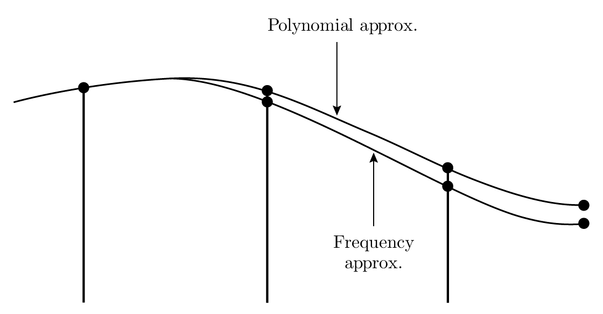
이제 나이키 유도 미사일(Nike guided missile) 시험 초기의 또 다른 이야기로 넘어가죠. 당시 그들은 화이트샌즈(White Sands)에서 “전신주 시험(telephone pole tests)”이라고 부르는 야외 시험을 하고 있었습니다. 그것은 그저 미사일이 미리 배정된 궤적을 따라가다가, 마지막 순간에 폭발해서 미사일 전체가 사거리 밖으로 떨어져 큰 피해를 주지 않도록 하고 대신 파편들이 사거리 안에 비교적 순하게 떨어져 피해가 덜하도록 하는 발사 시험이었습니다. 이 시험의 목적은 설계의 세부를 확정하고 설계를 개선하기 위해, 항력, 양력, 그리고 다른 여러 성질들을 고도와 속도의 함수로 실측하는 것이었습니다.
저는 연구소에 있는 친구가 복도에서 몹시 불만스러운 표정으로 배회하는 것을 발견했습니다. 왜 그랬을까요? 대여섯 번 정도 되는 시험 발사 중 처음 두 번이 비행 도중에 산산조각이 났는데, 아무도 이유를 몰랐기 때문입니다. 그 지연 때문에 다음 설계 단계로 나아가는 데 필요한 데이터가 없는 상태였고 그래서 프로젝트 전체가 심각한 위기에 빠져 있었어요. 나는 그에게 말했습니다. 비행을 기술하는 미분방정식을 내게 주면, 내가 어떤 여자 사원을 시켜 해를 손으로 계산하게 하겠다고요(1940년대 후반에는 큰 컴퓨터를 쉽게 쓸 수 없었습니다). 약 일주일 만에 그들은 1계 미분방정식 일곱 개를 가져왔고 그 여자 사원은 시작할 준비를 마쳤죠. 그런데 문제가 생기기 직전의 시작 조건은 무엇일까요? (그 당시 저는 전체 궤적을 빠르게 계산할 만한 계산 능력이 없었습니다.) 그들은 몰랐어요! 고장 직전의 원격 계측(telemetered, 텔레메트리로 전송된) 데이터는 명확하지 않았습니다. 나는 그게 당연하다고 생각했고 별로 신경 쓰이지도 않았죠. 그래서 우리는 추정된 고도, 기울기, 속도, 받음각(angle of attack, 날개가 기울어지는 각) 등을 궤적의 일곱 변수마다 하나씩, 방정식마다 조건 하나씩 넣어 썼습니다. 즉 나는 쓰레기를 넣은 셈이었죠. 하지만 나는 그 시뮬레이션 대상인 야외 시험의 성격을 일찌감치 알아차렸습니다. 제안된 궤적에서의 작은 이탈은 유도 시스템이 자동으로 보정한다는 것, 그래서 내가 다루는 것은 강하게 수렴하는 방향장이라는 사실이었어요.
우리는 피칭(pitch, 상하 운동)과 요잉(yaw, 좌우 운동)이 각자 안정적임을 발견했습니다. 하지만 각각이 안정에 이르자 그 에너지를 상대 쪽으로 밀어 넣었습니다. 그래서 전통적인 피칭·요잉의 안정 진동뿐 아니라, 미사일이 세로축을 중심으로 회전하기 때문에, 그 둘 사이에서 에너지가 점점 커지며 주기적으로 전달되는 현상도 있었죠. 궤적의 짧은 구간만큼이라도 컴퓨터 곡선이 한 번 보이자, 모두가 즉시 자신이 교차 연결 안정성(cross-connection stability, 서로 주고받는 연결의 안정성)을 놓쳐 왔음을 깨달았고 그것을 어떻게 고칠지도 알게 됐습니다. 이제 해가 나왔으니, 그들은 시험에서 나온 뒤엉킨 원격 계측 데이터를 다시 읽어 에너지 전달 주기가 거의 정확한지 확인할 수 있었습니다- 즉 그들이 계산하도록 제공한 미분방정식이 올바르다는 뜻이었죠. 나는 그 여자 사원이 탁상 계산기에서 정직하게 제대로 일을 하도록 지켜보는 것 말고는 할 일이 거의 없었습니다. 내 실제 기여는 두 가지였죠. (1) 무슨 일이 벌어졌는지를 시뮬레이션할 수 있다는 깨달음-지금은 모든 사고 조사에서 일상적인 일이지만 그 당시에는 새로웠습니다-그리고 (2) 수렴하는 방향장이 있어서 초기 조건을 정확히 알 필요가 없다는 인식이었습니다.
이 이야기를 하는 이유는 gigo가 꼭 옳은 것만은 아니라는 걸 보여주기 위해서입니다. 또 다른 예는 로스앨러모스에서 내 최초 경험이었던 폭탄 시뮬레이션에서 나옵니다. 나는 점차 그 계산 뒤에는 상태 방정식(equation of state, 압력과 밀도를 관계짓는 식)을 계산하기 위한 꽤 부정확한 데이터가 놓여 있음을 깨닫게 됐죠-(온도도 관련되지만 잠시 무시하겠습니다). 고압 실험실에서 얻은 데이터, 지진으로부터의 추정, 항성의 중심 밀도로부터의 추정, 그리고 마지막으로 무한 압력의 점근 이론(asymptotic theory)으로부터 나온 데이터들은 아주 큰 그래프 용지 위에 점들의 집합으로 찍혀 있었습니다, 그림 20.7. 그런 다음 큰 프렌치 커브(french curve, 곡선자)를 이용해 듬성듬성 흩어진 점들을 잇는 곡선을 그렸죠. 우리는 그 곡선을 읽어 3과 1/3자리까지 확정하고 네 번째 자리는 5나 0을 추측했습니다. 그 숫자들로 다섯 자리 표를 세분하고, 표의 일부 지점은 여섯 자리 숫자까지 만들어서, 그것들이 실제로 돌린 계산의 공식 데이터가 됐어요. 그 당시 나는, 앞서 말했듯, 일종의 계산부 청소부였고 물리학자들이 자기 일을 하도록 풀어 주기 위해 일이 굴러가게 하는 것이 내 일이었죠.
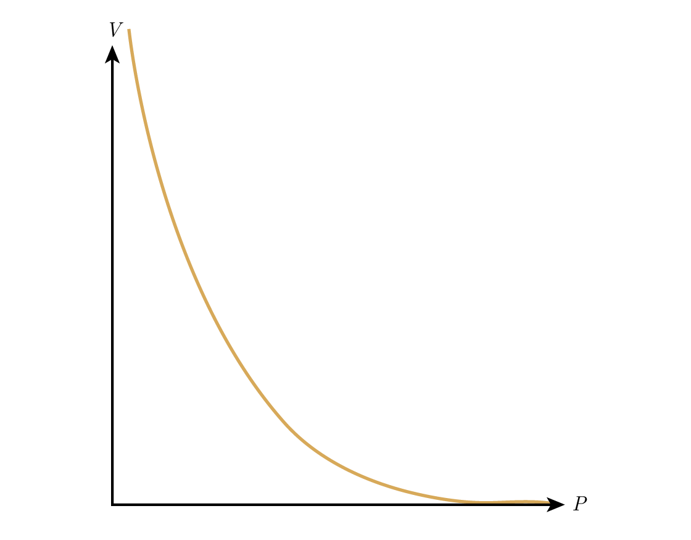
전쟁이 끝나고 나는 로스앨러모스에 여섯 달을 더 남았습니다. 그 이유 중 하나는, 그렇게 부정확한 데이터가 어떻게 최종 설계에 대한 그렇게 정확한 예측을 낳을 수 있었는지 알고 싶었기 때문입니다. 마침내 오랜 시간 생각할 여유가 생기자, 나는 답을 찾았죠. 계산 도중 우리는 사실상 2차 차분(second differences)을 사용하고 있었습니다. 일차 차분은 각 껍질(shell, 구형의 얇은 층)에 작용하는 힘을 한쪽에서 주고 양쪽에서 인접한 껍질들의 차분이 그 껍질을 움직이는 합력을 줬죠. 우리는 아주 얇은 껍질을 다뤄야 했기 때문에, 서로 아주 가까운 값들을 차분하고 있었고 그래서 숫자에 많은 자릿수가 필요했던 겁니다. 하지만 더 살펴보니, “가젯(gadget, 장치·폭탄)”이 터져 나갈 때 어느 껍질이든 그 곡선을 따라 올라갔다가 어쩌면 일부는 다시 내려오므로, 상태 방정식의 어떤 국소 오차든 그 전 과정에 걸쳐 거의 평균적으로 상쇄되었습니다. 상태 방정식에서 얻어야 할 중요한 것은 곡률(curvature)이었고 이미 지적했듯 그마저도 평균적으로만 맞으면 됐죠. 그래서 쓰레기가 들어갔음에도 정확한 결과가 나왔던 겁니다!
이 예들은 앞서 느슨하게 말한 것을 보여줍니다. 문제 안에 사용되는 숫자 자체가 피드백을 겪는다면, 그것들을 반드시 정확히 알아야 할 필요는 없다는 거죠. H.S. 블랙(H.S. Black)이 피드백 증폭기를 만드는 방법에 대해 내놓은 위대한 통찰과 마찬가지로, 그림 20.8, 이득(gain, 증폭도)이 매우 높은 한 피드백 루프 안의 저항 하나만 정확히 선택하면 되고 나머지 부품들은 모두 정확도가 낮아도 됩니다. 그림 20.8에서 다음 식을 얻습니다
거의 모든 불확실성이 크기 1/10의 저항 하나에 몰려 있고 증폭기의 이득(-10-9)은 정확할 필요가 없음을 볼 수 있어요. 이처럼 H.S. 블랙의 피드백 덕분에 우리는 대부분 부정확한 부품들로 정확한 것을 만들 수 있습니다.
이제 여러분은 왜 제가 모든 상황에 맞는 깔끔한 공식을 드릴 수 없는지 알겠죠. 그것은 특정한 양들이 계산 전체를 어떻게 통과하느냐에 달려 있어야 합니다; 전체 계산은 하나의 전체로서 이해되어야 합니다. 그 부정확한 숫자들이 피드백 상황을 겪어 오차가 보상될까요, 아니면 피드백 보호 없이 완전히 드러난 채로 있어 결과적으로 치명적으로 중요한가요? “치명적으로”라는 단어를 쓴 이유는, 그 숫자들이 어떤 피드백 위치에 있지 않다면 그것들을 정확히 만들어야 하는 것이 계산에 있어 결정적이기 때문입니다.
이 사실은 한번 이해하고 나면 설계(design)에 영향을 미칩니다! 좋은 설계는 시스템 안에 고도의 정확한 부품이 너무 많이 필요하지 않도록 여러분을 보호해 줍니다. 하지만 이런 설계 원리는 오늘날까지도 제대로 이해되지 못하고 있으며 폭넓게 연구될 필요가 있습니다. 좋은 설계자들이 직관적으로 이를 이해하지 못한다는 뜻이 아닙니다. 단지 그것이 학교에서 배운 설계 방법 안에 쉽게 반영되지 않는다는 것뿐이죠. 우리가 만들어 낸 모든 계산 도구에도 불구하고 훌륭한 머리는 여전히 필요합니다. 하지만 가장 훌륭한 머리는 이 원리를 가르쳐지는 설계 방법 속에 넣어서 덜 뛰어난 사람들이 자동으로 쓸 수 있게 만드는 사람일 것입니다!
이제 다른 예와, 제가 중요한 문제 하나의 해를 얻을 수 있게 해 준 그 원리를 살펴보겠습니다. 나는 미분방정식
을 받았습니다. 여러분은 무한대에서의 조건이 실은 미분방정식의 우변을 0이라고 놓은 것임을 즉시 알 수 있죠, 그림 20.9.
그림 20.9-y” = sinh y - kx
하지만 안정성을 생각해 봅시다. 꽤 먼 지점 x에서 y가 조금이라도 너무 커지면, sinh y가 훨씬 너무 커져, 이계 도함수가 매우 양수가 되고 곡선은 플러스 무한대로 치솟아 오릅니다. 마찬가지로 y가 너무 작으면 곡선은 마이너스 무한대로 치솟아 내려가죠. 그리고 어느 방향으로 가는지는 상관없어요, 왼쪽에서 오른쪽으로든, 오른쪽에서 왼쪽으로든 말입니다. 과거에 나는 발산하는 방향장을 마주할 때 반대 방향으로 적분해서 정확한 해를 얻는, 뻔한 꼼수를 써 왔습니다. 하지만 위 문제에서는, 말하자면 모래 언덕의 능선 위를 걷는 것과 같아서 일단 두 발이 능선의 어느 한쪽에 놓이면 미끄러져 내려갈 수밖에 없습니다.
아마 여러분은 믿기 어렵겠지만, 나는 원점 주변의 괜찮은 멱급수 전개를 찾을 수 있었고, 심지어 더 나은, 멱급수가 아닌 근사 전개도 찾을 수 있었지만, 해 곡선을 따라 상당히 진행해 나가면서는, 특히 k가 클 때, 문제에 봉착할 거라는 걸 알 수 있었죠. 나나 내 친구들이 내놓을 수 있는 모든 분석은 부족했습니다. 그래서 나는 문제를 제안한 이들에게 가서, 먼저 무한대에서의 조건에 이의를 제기했습니다. 하지만 알고 보니 그 거리는 분자 층 단위로 재고 있었고 (그 당시) 현실적인 트랜지스터라면 실질적으로 무한한 층의 수를 갖게 될 것이었죠. 그다음 나는 방정식 자체에 이의를 제기했습니다. 그것이 어떻게 현실을 나타낼 수 있겠냐고요. 그들은 또 이겼고 어쩔 수 없이 사무실로 물러나 생각해야 했습니다.
그것은 당시 개발 중이던 트랜지스터의 설계와 이해에서 중요한 문제였습니다. 나는 늘 주장해 왔습니다. 문제가 중요하고 제대로 제기되었다면, 나는 어떤 식으로든 해를 얻을 수 있다고요. 따라서 나는 반드시 해를 찾아야 했습니다. 내 자존심을 지키려면 도망칠 길이 없었죠.
며칠 동안 곱씹다 보니, 바로 그 불안정성 자체가 써야 할 방법의 실마리임을 깨달았습니다. 나는 그때 갖고 있던 미분 분석기(differential analyzer)를 이용해 해의 한 조각을 추적했습니다. 해가 치솟아 오르면 대응하는 기울기에 대한 내 추측이 조금 너무 높았던 것이고 아래로 쳐지면 조금 너무 낮았던 것이죠. 이렇게 조각조각 모래 언덕의 능선을 걸어갔고 해가 어느 한쪽으로 미끄러질 때마다 나는 다시 궤도로 복귀하기 위해 무엇을 해야 할지 알았습니다. 그렇습니다. 필요한 것을 해낼 수 있다는 능력에 대한 자존심이 있다는 것은, 어려운 조건 아래서 중요한 결과를 얻는 데 큰 도움이 됩니다. 그 문제를 풀 수 없다거나 잘못 제기되었다거나 다른 어떤 변명으로 치부해 버리기는 너무나 쉬웠을 텐데도, 나는 여전히 중요하게 제대로 제기된 문제는 필요한 유용한 지식을 뽑아내는 데 쓰일 수 있다고 믿습니다. 내가 계산했던 공간 전하(space charge) 문제들은 어느 방향에서든 똑같은 어려운 불안정성을 보여 주었습니다.
다음 이야기를 위해 로르샤흐 테스트(Rorschach test)라는 것을 소개해야겠습니다. 내 젊은 시절에 유행했던 것이죠. 종이 한 장에 잉크를 한 방울 쭉 떨어뜨리고 접은 자국을 따라 누른 다음, 다시 펼치면 본질적으로 무작위 모양을 한 대칭 얼룩이 생깁니다. 이런 얼룩들을 차례로 피험자에게 보여 주며 무엇이 보이는지 말하라고 요구합니다. 그 답변으로 그 사람의 “성격”을 분석했죠. 얼룩이 본질적으로 무작위 모양이니, 사람이 보고하는 것은 분명 그들의 상상의 산물입니다. 하늘의 구름을 보며 닮은 모양이 뭔지 이야기하는 것과 같아요. 여러분이 논하는 것은 현실이 아니라 자신의 상상이며 그런 점에서 그것은 어느 정도 구름이 아니라 자신에 대해 드러내 주는 것입니다. 그 잉크 얼룩 방법은 더 이상 쓰이지 않는 걸로 알고 있습니다.
이제 다음 이야기로 넘어갑니다. 벨 전화연구소(Bell Telephone Laboratories)의 심리학자 친구가 한때 열두 개쯤 되는 스위치와 빨간 등, 초록 등이 달린 기계를 만들었습니다. 스위치를 설정하고 버튼을 누르면 빨간 등이나 초록 등이 켜집니다. 첫 번째 사람이 스무 번 시도한 뒤, 초록 등이 켜지게 하는 방법에 대한 이론을 한 편 써 냈습니다. 그 이론은 다음 희생자에게 주어졌고, 그들은 또 스무 번 시도한 뒤 자기 이론을 써 냈으며, 이렇게 끝없이 이어졌죠. 이 테스트의 명시된 목적은 이론이 어떻게 진화하는지 연구하는 것이었습니다.
하지만 내 그 친구가 그런 성격의 사람이라서, 그는 등들을 난수 발생원(random source)에 연결해 버렸습니다! 어느 날 그가 내게 말했습니다. 전체 테스트를 통틀어 어떤 사람도(그리고 그것들은 모두 우수한 벨 연구소 과학자들이었다) 메시지가 없다고 말한 적이 없었다고요. 나는 즉시 그에게 지적했습니다. 그 중 통계학자도 정보 이론가(information theorist)도 하나도 없었다고 말이죠-무작위성에 가장 익숙한 두 부류의 사람들 말입니다. 확인해 보니 내 말이 맞았습니다!
이것은 여러분의 교육에 대한 슬픈 논평입니다. 여러분은 한 이론이 어떻게 다른 이론에 의해 교체되었는지는 정성껏 배우지만 멋진 이론을 그냥 무작위성으로 대체하는 법은 거의 배우지 못합니다! 그리고 바로 그것이 필요했던 것입니다. 방금 읽은 이론이 쓸모없고 데이터 안에 확실한 패턴은 없고 무작위성만 있었다고 말할 수 있는 능력 말이죠.
나는 이 점을 깊이 짚고 넘어가야겠습니다. 통계학자들은 늘 스스로 묻습니다. “내가 보고 있는 것이 정말로 거기 있는 것일까, 아니면 그저 무작위 잡음일까?” 그들은 이 질문에 답하려는 검정(테스트)을 갖고 있습니다. 그들의 답은 예/아니오가 아니라, 다만 일정한 신뢰 수준을 가지고 예/아니오일 뿐입니다. 90% 신뢰 구간(confidence limit)은, 보통 열 번 시도하면 다른 모든 가설이 맞다고 가정했을 때 한 번쯤은 잘못된 결정을 내리게 된다는 뜻입니다! 여러분은 참인 것을 기각할 수도 있고(1종 오류) 거짓인 것을 기각하지 못할 수도 있습니다(2종 오류). 95% 신뢰 구간에 도달하려면 훨씬 더 많은 데이터가 필요하며 요즘 데이터 수집은 매우 비쌀 때가 많습니다. 데이터를 더 모으는 것은 시간도 오래 걸리므로, 결정은 더 지연됩니다-자기 위치의 책임을 지고 싶어 하지 않는 책임자들이 즐겨 쓰는 꼼수죠. “데이터를 더 모읍시다.” 그들이 이렇게 말합니다.
이제 저는 여러분에게 꽤 진지하게 제안합니다. 많은 시뮬레이션이 로르샤흐 테스트에 지나지 않는다고요. 경영 의사 결정 이론의 저명한 실무자(실천가)인 제이 포레스터(Jay Forrester)의 말을 인용하죠. “계의 행동으로부터 의문이 생기고 그 의문은 원래 가정들을 재검토하도록 요구하게 됩니다. 부분들에 대한 가정과 전체의 관찰된 행동 사이를 오가며 작업하는 과정을 통해 우리는 계의 구조와 동역학에 대한 이해를 향상시킵니다. 이 책은 저자가 여러 번의 재검토와 수정을 거듭한 결과입니다.”
외부인이 이것을 로르샤흐 테스트와 어떻게 구별할 수 있을까요? 그는 그저 자기가 원하던 것을 찾은 것일까요, 아니면 “현실”을 파고든 것일까요? 유감스럽게도, 아주 많은 시뮬레이션에 이런 요소가 크게 들어 있습니다. 원하는 것을 얻기 위해 이것저것 조정하는 것이죠. 그건 참으로 따르기 쉬운 길입니다. 전통적인 과학이 이 때문에 많은 안전장치를 갖고 있는데, 요즘 그것들은 흔히 그냥 무시되고 있습니다.
여러분은 안전하게 일할 수 있다고 자기들이 더 잘 안다고 생각하시나요? 의료 실무에서 흔한 유명한 이중 맹검(double-blind) 실험을 생각해 보세요. 의사들은 먼저 이런 사실을 발견했습니다. 환자들이 새 치료를 받고 있다고 생각하면 더 나은 건강으로 반응했고 대조군(control group, 비교 집단)에 속한다고 생각한 사람들은 그 치료를 받지 못한다고 느껴 호전되지 않았다고요. 그러자 의사들은 치료를 무작위로 배정하고 일부 환자에게 위약(placebo, 약효 없는 가짜 약)을 주어, 환자들이 그 방식으로 반응하며 의사들을 속이지 못하게 했습니다. 하지만 몹시 놀랍게도, 의사들은 또한 이런 사실을 발견했습니다. 누가 치료를 받고 누가 받지 않는지 아는 의사 자신들도, 자기들이 기대하는 곳에서는 호전을 발견하고 기대하지 않는 곳에서는 호전을 발견하지 못한다는 것이었죠. 최후의 수단으로, 의사들은 이중 맹검 실험을 널리 받아들이게 되었습니다-모든 데이터가 모일 때까지 환자도 의사도 누가 치료를 받고 받지 않는지 모르게 하는 방식으로요. 그러면 통계학자가 봉인된 봉투를 열고 분석을 수행합니다. 정직해지고 싶어 했던 의사들은, 자신들이 그럴 수 없음을 발견했던 것입니다! 여러분은 시뮬레이션을 수행할 때 정말 그렇게나 더 나아서 자기가 찾고 싶은 것을 찾지 않으리라 믿을 만하신가요? 자기기만(self-delusion, 스스로를 속이는 일)은 인간의 아주 흔한 특성입니다.
나는 제19장을 이런 문제로 시작했습니다. 누군가가 수행한 시뮬레이션을 왜 믿어야 하는지에 대해 말이죠. 이제 여러분은 그 문제를 더 명확히 보게 됩니다. 보통 하던 것보다 훨씬 많은 예방 조치를 취하지 않는다면, 그 질문에 답하기는 쉽지 않습니다. 또한 기억하세요. 여러분은 아마 고도로 기술적인 미래에 떠오를 수많은 문제들을 결정할 아주 많은 시뮬레이션을 넘겨받는 쪽이 될 것입니다. 그런데 “만약 …한다면?”이라는 질문에 답할 방법은 시뮬레이션 말고는 없습니다. 제18장에서 나는 조직이 빈둥거리며 끝없이 표류하지 않으려면 결정을 내려야 하고 영원히 미뤄서는 안 된다고 말했습니다-그리고 나는 여러분이 그 결정을 내려야 하는 사람들 중 하나가 될 거라고 가정하고 있죠. 시뮬레이션은 “만약 …한다면?”에 답하는 데 필수적입니다. 하지만 그것은 위험으로 가득하며 큰 기계와 많은 시간을 들여 멋지게 인쇄된 페이지나 오실로스코프(oscilloscope, 파형 표시 장치) 위의 알록달록한 그림을 만들어 냈다는 이유만으로 믿어서는 안 됩니다. 최종 결정을 내리는 사람이 바로 여러분이라면, 실질적인 의미에서 여러분이 책임을 집니다. 책임을 분산시키는 경향이 있는 위원회 결정은 실무에서 거의 최선이 아닙니다-대부분의 경우 그것은 어느 길의 장점도 가지지 못한 절충안일 뿐이고 평범함으로 끝나기 마련이죠. 경험이 저에게 가르쳐 준 것은, 일반적으로 우유부단한 상사보다 결단력 있는 상사가 낫다는 것입니다-그러면 어디에 서 있는지 알 수 있고 해야 할 일을 계속 진행할 수 있으니까요!
“만약 …한다면?”이라는 질문은 여러분의 미래에 자주 떠오를 것입니다. 그래서 여러분은 시뮬레이션의 개념과 가능성을 숙달하고, 그 결과에 의문을 제기할 준비가 되어 있으며, 필요할 때는 세부까지 파고들 준비가 되어 있을 필요가 있습니다.
21 광섬유
광섬유(Fiber optics)라는 주제를 꺼내는 이유 중 하나는, 그 뜻깊은 역사가 내가 과학자로 살아온 시기 안에서 일어났기 때문이다. 그래서 그 일이 진행되던 당시에 그 주제가 나에게 어떻게 보였는지를 여러분에게 들려줄 수 있다. 다시 말해, 잠재적으로 엄청난 중요성을 지닌 새로 발전해 가는 분야를 마주했을 때 내가 채택한 스타일을 보여 주는 사례가 된다. 물론 광섬유라는 분야 자체도 그 자체로 중요하다. 마지막으로, 여러분은 앞으로 살아가는 동안 이 분야가 더 발전해 나감에 따라 반드시 다뤄야 할 주제이기도 하다.
벨 전화연구소(Bell Telephone Laboratories)에서 광섬유라는 주제의 세미나가 열린다는 이야기를 처음 들었을 때, 나는 갈까 말까를 고민했다. 무엇보다도 자기 일은 스스로 해야지 강의에 시간을 다 쏟을 수는 없는 노릇이니까. 먼저 나는 이렇게 생각했다. 광학 주파수는 당시 쓰이던 전기 주파수보다 훨씬 높아서 광섬유는 훨씬 더 큰 대역폭(bandwidth)을 갖게 될 것이다. 그리고 대역폭은 전송의 실효 속도(초당 비트 수)이며 당시 나의 고용주인 전화회사의 가장 중요한 관심사다. 둘째로 나는 알렉산더 그레이엄 벨(Alexander Graham Bell)이 한때 전화 대화를 광선으로 보낸 적이 있다는 사실을 떠올렸다. 물론 그는 평생 조금은 발명마니아 같은 면이 있었다. 그러니 그런 일이 가능했고 사실 오래전에 이미 이루어진 일이었다. 셋째로, 굴절률이 큰 매질에서 굴절률이 작은 매질로 진행할 때 내부 반사가 일어난다는 것도 알고 있었다. 잔잔한 물을 아래에서 올려다보면, 빛이 다시 물속으로 완전히 반사되는 각도가 있는데, 그림 21.1이 바로 그것이다. 그래서 나는 광섬유가 무엇인지 꽤 잘 이해할 수 있었다. 그때는 참신한 아이디어였다. 대학 실험실에서 유리를 섬유로 뽑아내는 일을 충분히 해 본 경험이 있었기에, 표면장력 덕분에 지름이 꽤 균일한 원형 섬유를 만드는 것이 얼마나 쉬울지, 그리고 액체 유리에서 표면장력이 얼마나 그런 역할을 하는지도 어느 정도 짐작할 수 있었다. 그리하여 나는 시간을 내어 이 유망한 새 발전을 배우러 갔다.
강연 초반에 발표자가 이런 말을 했다. “신은 모래를 사랑해서, 이렇게나 많은 모래를 만드셨다.” 나는 그 말을 들으며 속으로 생각했다. 우리는 이미 질이 낮은 구리 광산까지 이용해야 하는 처지이고 세월이 흐를수록 좋은 구리의 값은 점점 오를 수밖에 없을 것이다. 하지만 유리의 원료는 널리 구할 수 있고 부족해질 일이 없을 것 같다.
강연 중이거나 그 직후에 나는 이런 말을 들었다. “맨해튼의 전화선 덕트(배관) 공간이 바닥을 드러내고 있다. 도시가 지금처럼 계속 성장한다면 덕트를 훨씬 더 많이 깔아야 하고 그러려면 도로와 보도를 파헤쳐야 한다. 하지만 지름이 더 작은 유리섬유를 쓴다면 구리선을 뽑아내고 그 자리에 유리섬유를 넣으면 된다.” 그 말만으로도 나는 연구소가 유리섬유를 빨리 개발하기 위해 할 수 있는 모든 것을 해야만 하고 그것은 앞으로 계속 쏟아질 계산 문제의 원천이 될 것이므로, 나는 발전 상황을 계속 눈여겨봐야겠다고 판단했다.
그보다 훨씬 이전에, 내가 연구소에 남기로 결심하고 실용 전자 공학에 대한 지식이 빈약하다는 것을 깨달았을 때, 나는 Heathkit(히스키트) 제품 몇 개를 사서 경험삼아 조립했다. 물론 그 결과물들도 쓸모가 있었지만 그건 순전히 경험을 위한 것이었다. 그래서 나는 배선 납땜이 얼마나 많이 필요한지 잘 알고 있었고 곧바로 주의해서 지켜봐야 할 어려운 지점을 짚어냈다. 바로 이 가늘고 머리카락 굵기의 유리섬유를 어떻게 이어 붙여서 좋은 전송을 유지하느냐는 것이다. 그냥 융착해서 붙인다고 해서 괜찮은 전송을 기대할 수는 없다.
왜 그들은 그렇게 가느다란 지름을 제안했을까? 유리섬유가 어떻게 작동하는지 그림 하나만 봐도 분명해진다. 그림 21.2. 지름이 가늘수록, 빛이 새어 나가지 않으면서도 섬유를 더 많이 구부릴 수 있다. 제안된 지름이 점점 더 작아지는 데는 그런 좋은 이유가 있는데, 그것은 재료의 비용이나 지름이 큰 섬유의 추가 무게 때문이 아니다. 게다가 여러 전송 방식에서, 주어진 거리를 진행할 때 지름이 작은 섬유가 신호 왜곡이 분명히 더 적다.
내가 곧 깨달은 또 하나의 큰 추가 이득이 있었다. 섬유는 그렇게 효율적이라서, 다시 말해 잃는 광자(photon)가 너무 적어서 회선을 “도청”하는 일이 까다로운 작업이 될 것이다. 불가능한 일은 아니지만 어려운 일이다. 비슷한 시기에 나는(화학 분야의 한 그룹과 함께 수행하던 몇 가지 계산 덕분에) 광섬유가 전자기적 교란에 강하다는 것도 깨닫게 되었다. 특히 상층 대기나 전장에서의 원자폭탄 폭발, 심지어 낙뢰에도 강하다. 그렇다. 광섬유는 연구소의 직접 지원뿐만 아니라 군대로부터도 추가 연구를 위한 대규모 지원을 반드시 받게 될 것이다.
곧 생겨난, 그리고 내가 예상했던 그대로의 문제 하나는, 가느다란 머리카락 굵기의 섬유에 씌우는 바깥 피복이 국부적인 굴절률 비율을 바꾸어 일부 빛이 새어 나가게 할 수 있다는 점이었다. 물론 섬유 표면에 거울을 입히면 해결될 일이었다. 그들은 곧 굴절률이 더 큰 코어 주위에 굴절률이 더 작은 유리 슬리브를 꽂는 아이디어를 떠올렸다. 사람이 다루기 쉬운 크기에서는 그렇게 하기 쉬우니, 그런 다음 그 모양을 그대로 잡아당겨 필요한 아주 가는 섬유로 뽑아내는 것이다.
훨씬 나중에 나는 한 층이 아니라 굴절률이 매끄럽게 점진적으로 변하는 방식을 들었고 그것이 수년 전 사이클로트론을 위해 개발됐던 강한 집속(strong focusing) 과 같은 것임을 알아보았다. 그 점진적 변화는 화학 처리나 방사선 처리 중 어느 것으로도 만들 수 있다. 뚜렷한 반사를 일으키는 대신, 빛이 섬유의 중심에서 멀어지면 빛을 점차 중심으로 다시 굽히게 할 수 있다. 그림 21.3.
나는 다중 모드(multi-mode) 방식과 단일 모드(single-mode) 방식의 신호 전송 논쟁을 모두 쫓아가려고 하지는 않았고-그 논쟁의 양쪽에 대해 컴퓨터 시뮬레이션을 여러 번 수행하긴 했다-우리가 컴퓨터에서 2진법을 더 높은 진법의 수 체계보다 지지했던 것과 같은 이유로 단일 모드 쪽을 지지하는 편이었다. 어차피 이것은 검출기(detector)와 방출기(emitter)의 세부 사항을 포함하는 기술적 디테일이지, 광 신호 전송의 근본적인 특징은 아니다.
그러는 사이 나는 줄곧 그들이 섬유를 어떻게 이어 붙일지 지켜보고 있었다. 시간이 지나면서 꽤 영리한 여러 방식이 제안되고 시험되었다. 그 대안들이 정말 많았기 때문에, 처음에 내 관심을 끌었던 그 부분은 아마도 꽤 쉽게 해결될 것이라고 나는 판단했다. 적어도 실전 현장에서는 그 문제가 치명적이 되지는 않을 것이다. 그런 일은 통제된 조건에서 전문가들이 할 수 있는 실험실이 아니라, 현장에서 기술자들이 해야 하니까. 나는 여러 프로젝트(주로 다른 회사들의)가 이런 처참한 사실 때문에 망가지는 것을 지켜보며 그 차이를 아주 잘 알고 있었다. 실험실에서 전문가가 안정적으로 해낼 수 있는 일이, 서두르고 게다가 열악한 조건에서 자주 일하는 기술자들이 현장에서 해낼 수 있는 일과 항상 같지는 않다는 것이다.
기억에 따르면 그들은 조지아주 애틀랜타의 두 중앙 전화국을 연결하며 처음으로 광섬유를 현장 시험했다. 그것은 성공이었다(그 시험은 완료까지 수년이 걸렸다). 게다가 유리 업계의 외부인들이 우리가 쓰고 싶어 하는 주파수에서 놀랄 만큼 투명한 유리를 만들기 시작했다. 다시 말해, 안정적인 레이저(Laser)가 존재하는 그 주파수에서 말이다. 그들은 바닷물이 그 유리들 중 일부처럼 투명하다면 태평양 바닥까지 보일 수 있을 것이라고 말했다!
나는 곧 섬유 케이블에서 우리가 (1) 광 신호를 검출하고, (2) 전자 형태로 변환하며, (3) 증폭하고, (4) 다시 광 형태로 변환한다는 것을 알아차렸다. 이보다 나쁜 시스템 설계는 상상하기 어렵다. 그래서 연구소와 그 밖의 많은 곳들이 광 증폭을 집중적으로 연구해야만 할 것임이 나에게는 즉시 분명했다. 멀리서 지켜보니, 광 증폭기에는 여러 후보가 있었고 그래서 아마도 그중 하나 이상이 표준 현장 장비로 자리 잡을 것이다. 솔리톤(Soliton)의 장점 중 하나는 모양을 바꾸지 않으면서(섬유를 따라 진행하는 동안 모양이 열화되지 않는) 증폭될 수 있다는 점인 반면, 펄스는 재생된다는 점이다(그것은 효과적으로 펄스를 다시 형태를 잡는 것이며 단순 증폭보다 약간 더 복잡한 동작처럼 보인다).
모든 실용적 요소가 놀랍게 잘 맞물리는 듯했고 아시다시피 우리는 이제 광섬유를 널리 사용한다. 나는 내가 새 기술에 어떻게 접근했는지, 무엇을 찾았는지, 무엇을 관찰했는지, 무엇을 무시했는지, 무엇을 살펴보았는지, 무엇을 곰곰이 생각했는지를 최선을 다해 여러분에게 말했다. 나는 그 분야의 전문가가 되고 싶은 마음이 전혀 없었다. 나는 컴퓨터와 하드웨어·소프트웨어 양쪽의 급속한 발전, 그리고 그 적용 범위가 계속 넓어지는 것에 이미 손이 꽉 차 있었다. 여러분의 미래에 떠오르는 모든 새 분야는 여러분에게 비슷한 질문을 던질 것이고 여러분은 그에 대한 답을 훗날 당신의 행동으로 효과적으로 내놓게 될 것이다.
광섬유의 현재 적용 분야는 매우 광범위하다. 나는 시간이 지나면서 위성 사업이 골치 아파질 것이라는 사실을 오래전부터 이미 깨달았다. 통신용 정지 위성은 적도 위에 떠 있어야만 한다. 그 외에는 둘 곳이 없다. 적도를 끼고 있는 여러 나라들은 아주 이른 시절부터 우리가 그들의 영공을 침범했으며 그 사용료를 지불해야 한다고 주장해 왔다. 지금까지 그들은 자기 주장을 관철하지 못했다. 선진국들이 그저 사용료를 내지 않고 우주 공간을 계속 사용했기 때문이다. 그 상황의 정당성은 여러분 판단에 맡기겠다. (1) 그들의 주장을 뻔뻔하게 무시한 일, (2) 그들의 입장이 타당한지 아닌지, (3) 그들이 그 공간을 쓸 수 없으니 그러면 이제 다른 모든 사람들도 그들이 쓸 수 있을 때까지 기다려야 하는지-만약 언젠가 그럴 수 있다면 말이다! 이것은 국제 관계에서 결코 사소한 문제가 아니며 모든 쪽에 일리가 있다.
위성들은 이제 약 4° 간격쯤으로 떠 있다. 더 가까이, 예를 들어 2° 간격으로 띄울 수도 있겠지만 그러려면 신호가 옆 위성으로 새어 들어가지 않게 쏘아 올리기 위해 훨씬 더 정밀한(지름이 더 큰?) 안테나를 지상에 써야 할 것이다. 우리는 신호의 대역폭을 어느 정도 넓혀 한동안 그들이 운반할 수 있는 트래픽 양을 늘릴 수 있지만 신호가 통과해야 하는 대기 때문에 한계가 있다. 반면 광섬유는 지상에 원하는 어떤 밀도로든 깔 수 있다. 섬유 케이블은 쉽게 만들 수 있고 가능한 총 대역폭은 상상을 초월한다. 위성을 쓰는 것은 신호를 방송(broadcast) 한다는 뜻이다. 케이블은 어느 정도의 사생활(privacy) 및 사용자가 무임승차하지 않고 요금을 내게 하는 능력을 준다. 위성과 케이블은 각각 장단점이 있다. 현재 위성은 본질적으로 사적인 통신, 즉 방송이 아닌 상황에서 자주 쓰이고 있다. 시간이 흐르면 각각 최선의 방식으로 쓰이도록 상황이 재조정될 것이다.
우리는 지금 어디에 있는가? 우리는 이미 동축 도파관(waveguide) 대신 섬유를 쓰는 대륙 횡단 해저 케이블을 훨씬 적은 비용과 훨씬 더 큰 대역폭으로 갖고 있다. 우리는 지금(1993년) 태평양을 건너 일본까지 연결할 때 가장 최근의 개발된 솔리톤 신호 체계를 쓸지, 아니면 고전적인 펄스 체계를 쓸지를 두고 고심하고 있다. 내 생각에 그것은 공학적 개발의 문제다. 장기적으로 보면 나는 펄스가 아니라 솔리톤이 지배적인 방식이 될 것이라 믿는다. 기술에 의미 있는 변화가 있는지 지켜보라고 권한다. 확실히, 솔리톤을 통한 정보 전송이 현재의 펄스 신호 방식보다 우세해진다면, 그것은 미래에 근본적으로 새로운 신호 분석 방법을 낳아야 할 것이고 그렇게 된다면 여러분은 그 흐름을 잘 따라가야 한다. 그렇지 않으면 많은 다른 사람들처럼 여러분도 뒤처질 테니까.
내가 읽은 바로는, 해군 그리고 명백히 공군과 민간 항공의 응용 분야에서 중량 감소는 큰 절약을 의미하고 그 절약은 다른 곳에 쓸 수 있다. 약 14년 전 항공모함 엔터프라이즈(Enterprise) 시찰에서, 나는 그때도 이미 광섬유로 향하는 추세를 잘 알고 있었기에 특히 덕트 배선을 살펴보았고 광섬유가 정보를 다루는 배선인 한 그 모든 배선을 대체할 것이라고 판단했다. 전력(power) 분배는 전적으로 별개의 문제다. 하지만 그렇다면 중앙집중식 전력 분배가 주된 방식으로 남을까, 아니면 전투 상황 때문에 선박 내 분산형 전력 체계가 선호되는 방식이 될까? 분산형은 분명 안전 관행으로 설치될, 명백히 중복되는 광섬유 체계와 더 잘 어울릴 것이다. 그리고 전함은 세계무역센터 같은 초고층 사무실 빌딩과 크게 다를 것이 없다!
우리는 이제 트럭이 그 위를 안전하게 지나갈 만큼 장갑을 갖춘 광섬유 케이블을 보유하고 있다. 그리고 발사 뒤 비행 내내 풀려 나오는 섬유가 연결된 채로 발사되는, 그렇게 가벼운 미사일도 있다. 이것은 미사일을 목표로 유도하는 것과 미사일이 비행하며 보는 것을 되돌려 받는 것 양방향 통신을 뜻한다.
컴퓨터 분야에 몸담고 있던 나는, 당연하게도 이것이 컴퓨터 설계에 어떻게, 그리고 어떻게든 영향을 미칠지 스스로 질문했다. 여러분은 아마 지금(1993년) 우리가 컴퓨터의 큰 유닛들을 종종 광섬유로 상호 연결한다는 것을 알 것이다. 내부 배선의 주요 부분이 광(光)이 되는 것은 시간 문제일 뿐인 것 같다. 언젠가 집적회로(integrated circuit, IC) 칩들을 광섬유로 상호 연결하는 “마더보드(motherboard)”를 만들 수 없을까? 재료 과학이 발달한 이 시대에 그것은 터무니없는 일 같지는 않다. 광섬유 기술이 칩 수준까지 내려오는 것은 얼마나 빠를까? 무엇보다도 광학의 대역폭은 추론컨대 더 높은 펄스 속도를 뜻한다! 언젠가 우리는 광학 칩을 만들어, 어떤 휴대용 계산기들에서처럼 칩 위의 광전지(photocell)에 일반 광원을 비춰 칩에 전력을 공급하고 칩까지의 전력 분배 배선을 모두 피할 수 없을까 (그림 21.4)?
칩 배선을 광선으로 대체할 수 있을까? 광선은 (강도가 너무 높지만 않다면) 서로 간섭 없이 통과할 수 있다. 배선으로는 못 하는 일이다. 그림 21.5.
이것은 스위칭(switching)으로 이어진다. 크로스바 스위치(crossbar switch)를 전자식이 아니라 광학식으로 만들 수 있을까? 벨 전화연구소나 그 밖의 곳들이 그걸 집중적으로 연구해야 하지 않겠는가? 만약 그들이 성공한다면, 전통적으로 컴퓨터에서 가장 비싼 부품 중 하나였던 스위칭이 어쩌면 가장 싼 것 중 하나가 되지 않겠는가? 처음에는 기억장치가 컴퓨터의 비싼 부분이었다. 하지만 자기 코어(magnetic core)를 거쳐, 이제는 엄청나게 싼 가격의 전자식 기억장치가 나오면서 컴퓨터의 설계와 사용은 크게 바뀌었다. 만약 스위칭 비용이 크게 떨어진다면, 여러분은 컴퓨터를 어떻게 설계하겠는가? 폰 노이만형 기본 설계는 과연 살아남을까? 이러한 새 비용 구조 아래에서 적절한 컴퓨터 설계는 무엇일까? 내가 위에서 말했듯이, 여러분은 사물과 아이디어가 어떻게 흘러갈지 능동적으로 예상한 다음 실제로 무슨 일이 일어나는지 보는 방식으로 합리적으로 따라가려고 시도할 수 있다. 여러분의 예상은, 가만히 앉아 그저 진전을 따라가는 것보다, 새것이 떠오를 때 훨씬 잘 흡수하도록 여러분을 준비시킨다. “우연은 준비된 마음에 미소 짓는다.”
그것이 바로 이 강연의 이유다. 당신의 연구와 일에 영향을 미칠 기술의 급속한 변화를 누군가 어떻게 예상하고 준비하려 했는지 보여 주기 위해서다. 이처럼 기술이 고도로 발달한 사회에서 여러분이 모든 분야를 이끌 수는 없다. 하지만 실질적으로 많은 사람들이 그렇듯 모든 새 발전마다 뒤처질 필요도 없다.
나는 이 책에서 거듭 말했듯, 교수로서의 나의 의무는 여러분이 우리 사회에 의미 있는 기여자가 될 확률을 높이는 것이다. 그리고 그보다 더 좋은 방법은 수동적으로 따라가는 대신 사물을 예상하고 이끄는 습관을 여러분에게 세워 주는 일이라고 생각한다. 여러분과 이 기관에 대한 나의 의무를 다하려면, 가능한 한 많은 사람을 수동적인 역할에서 더 능동적이고 예상하는 역할로 옮겨야 하는 것 같다.
오늘 장에서 여러분은 내가 의미 있는 기여를 한 것은 없다고 주장하는 것을 본다. 하지만 적어도 나는 더 깊이 관련된 다른 사람들의 일을 도우려고 준비되어 있었는데, 그것은 대충 잘못 잡힌 계산이 아니라 올바른 종류의 계산을 제공함으로써였다. 그런 계산은 너무나 자주 잘못된다. 나는 은퇴 전 벨 전화연구소에서 보낸 30년 동안 그런 일을 자주 해 왔다고 믿는다. 광섬유 분야에서 나는 내가 무엇을, 어떻게 했는지에 대한 세부 사항 몇 가지를 여러분에게 말했다.
이제 곧 다가올 미래에 대한 예측으로 넘어가 보자. 시간이 지나면 도로에서 가정집까지 들어오는 “드롭 라인(drop line, 인입선)”(실제로는 매설될 수도 있지만 어쨌든 아마 여전히 “드롭 라인”이라고 불릴 것이다!)이 광섬유가 될 것은 꽤 분명하다. 광섬유 배선이 한 번 설치되면, 여러분은 원할 수 있는 거의 모든 정보를 잠재적으로 이용할 수 있게 된다. TV와 라디오, 그리고 관심 프로필에 따라 선별된 신문 기사까지 포함해서(인쇄 비용은 여러분 집에서 발생하니 여러분이 지불한다). 대부분의 경우 별도의 정보 채널은 필요 없게 될 것이다. 섬유의 여러분 쪽 끝에는 디지털 필터(digital filter)가 하나 이상 있다. 전화인지, 라디오인지, TV인지 어떤 채널을 원하는지는 지금 하는 것과 비슷하게 여러분이 골라 정할 수 있고 채널은 디지털 필터에 입력되는 숫자에 따라 결정된다. 그리하여 원한다면 같은 필터를 다목적으로 쓸 수 있다. 동시에 쓰고 싶은 채널마다 필터가 하나씩 필요하고(다만 시분할(時間分割) 방식으로 하나만 쓰는 필터도 가능할 수 있다), 각 필터는 같은 표준 설계일 것이다. 아니면 필터가 여러분이 사는 특정 장비에 딸려 올 수도 있다.
하지만 이런 일이 실제로 일어날까? 기술적으로 가능한 일이 실제로 일어날 것이라고 말하려면 먼저 정치적, 경제적, 사회적 조건을 살펴볼 필요가 있다. 정부가 그토록 많은 정보 유통을 한 회사의 손에 맡기고 싶어 할까? 현재의 케이블 회사들은 전화회사와 공유해서 그로 인해 이윤의 일부를 잃고 확실히 정부 규제를 더 받는 것을 기꺼이 수용할까? 정말로, 우리 사회 구성원으로서 우리는 그런 일이 일어나기를 원하는가?
이 책에서 반복적으로 등장하는 주제 중 하나는, 기술적으로 실현 가능하고 심지어 경제적으로 더 나은 일이 법적, 사회적, 경제적 조건 때문에 자주 저지된다는 점이다. 경제적으로 된다는 이유만으로 해야 한다는 뜻은 아니다. 여러분이 이런 측면들을 단단히 파악하지 못한다면, 여러분의 전공 분야에서 무슨 일이 일어날지 예측하는 실전 예언가로서 많은 잘못된 예측을 하게 될 것이고 그것들이 틀렸음이 드러났을 때 최선을 다해 설명해야 할 것이다.
22 컴퓨터 보조 교육(CAI)
컴퓨터가 이른 시기에 많은 대학에 설치되었기 때문에, 컴퓨터 보조 교육(computer-aided instruction, CAI)이라는 물음이 제기되고 상당히 깊이 탐구되는 것은 자연스러운 일이었습니다. 오늘날의 온갖 주장들에 귀를 기울이기 전에, 이 문제에 대해 약간의 시각을 얻어 두는 것이 현명하겠습니다.
고대 그리스 시대에, 한 수학자가 왕에게 이런 말을 했다는 이야기가 있습니다. 왕이 다닐 왕도(王道)와 왕의 편지를 나르는 왕실 전령은 있지만 기하학에는 왕도가 없다는 것이었지요. 마찬가지로 여러분도 인정하시겠지만 1마일을 4분에 주파하려 한다면 돈과 코치가 해줄 수 있는 일은 아주 적습니다. 그것을 해내는 데에는 쉬운 길이 없습니다. 4분 마일은 누구에게나 거의 똑같은 도전입니다.
쉽게 배우는 길을 바라는 사람들의 역사는 깁니다. 올더스 헉슬리(Aldous Huxley)는 자신의 책 『멋진 신세계』에서, 베개 밑에 놓인 마이크가 잠든 사이에 말을 걸어 학습시키는 아이디어를 다루면서 그 방식의 심각한 한계를 폭로합니다. 벨 전화연구소(Bell Telephone Laboratories)에서 지내던 시절에는 다이어네틱스(Dianetics) 운동이 떠올라, 뇌에 쌓인 오류를 전부 “청소”해 주면 완벽하게 추론할 수 있게 된다고 약속했습니다. 오늘날에도 다이어네틱스 연구소는 남아 있지만 여론은 이들에게 달갑지 않습니다. 특히 그들이 길러 낸 사람들이 인간 활동의 어느 한 분야에서도 주도권을 잡은 적이 없어 보이기 때문입니다. 모든 분야는 말할 것도 없지요. 또 다른 단체는 고대인들(어쩌다 그렇게도 지금의 우리보다 훨씬 똑똑했을까 싶은 그분들)의 비밀을 밝혀 주겠다고 약속합니다. 속독, 속성 학습 등을 광고하는 것도 끝없이 봅니다. 그것들은 모두 어떤 식으로든, 성공하려면 우리 대부분이 들여야 하는 고된 노력 없이도 마음을 크게 향상시켜 주겠다고 약속합니다. 앞서 나온 그 모든 제안들을 시험대에 놓아 보면 결론은 하나같이 같습니다. 지금까지 그중 어느 것도 (우리가 현재 아는 한) 눈에 띄는 수준의 뛰어난 사람들을 상당수 배출하지 못했습니다. 페르미(Fermi)가 외계 지적 생명체와 UFO에 대해 말한 그 유명한 말이 떠오르지요. “그들은 대체 어디에 있으며 왜 우리는 아직 만나지 못한 것일까?”
그러니 쉽게 배운다는 수많은 주장들로 가득한 과거의 모든 역사는, 지금 우후죽순 격으로 쏟아지는 약속들에 대해 매우 설득력 있게 반대 증언을 합니다. 물론 그것으로 어떤 새로운 꼼수가 성공하지 못하리라고 증명할 수는 없습니다. 그런 제안은 하나같이 크게 걸러서 받아들여야 합니다. 하지만 과거가 몰랐던 새로운 것들이 있을 수 있고 그때는 없던 값싼 컴퓨터 같은 새로운 도구들이 흐름을 바꿀 수도 있습니다. 나는 늘 이런 말을 읽거나 듣습니다. 요즘은 대개 컴퓨터인 그 새로운 꼼수가 큰 차이를 만들어 낼 것이라고 겉보기에는 참혹하게 실패해 온 과거의 모든 약속들에도 불구하고 그렇게 믿어야 한다는 것입니다. 여러분 자신의 희망적 사고가 얼마나 강한지 경계하십시오. 여러분은 그것이 사실이기를 바라니, 그래서 그것이 사실이라고 가정해 버리니까요!
설명할 필요가 있는 또 하나의 중요한 요소, 이른바 호손 효과(Hawthorne effect)가 있습니다. 아주 오래전, 웨스턴 일렉트릭(Western Electric)의 호손 공장에서 심리학자들이 환경을 이것저것 바꿔 가며 생산성을 높이려 했습니다. 벽을 보기 좋은 색으로 칠하자 생산성이 올랐습니다. 조명을 부드럽게 하자 생산성이 올랐습니다. 바꿀 때마다 생산성이 올랐습니다. 그중 한 사람이 수상쩍게 여겨 몰래 원래 상태로 되돌려 놓았는데, 생산성이 또 올랐습니다! 왜일까요? 당신이 신경을 쓰고 있음을 보여 주면, 상대방은 당신이 무관심해 보일 때보다 호의적으로 반응하는 것 같습니다. 근로자들은 그 모든 변화가 자신들을 위해 이루어지는 것이라고 생각했고 그래서 그에 걸맞게 반응한 것입니다.
교육 분야도 마찬가지입니다. 학생들에게 새로운 교수법을 쓰고 있다고 알려 주면 학생들은 더 좋은 성적으로 반응하고 덩달아 교수도 그러합니다. 새 방법이 더 나을 수도, 아닐 수도 있습니다. 사실 더 나쁠 수도 있지요. 그런데 교육 분야에서 결코 작지 않은 호손 효과는 “여기 새로운, 중요한, 개선된 교수법이 있다”라고 시사해 버릴 가능성이 큽니다. 새 방법이 무엇이든 사실 별로 중요하지 않습니다. 만약 학생들이 그 방법이 자신들을 위해 시행된다고 느끼기만 하면, 그 시행은 개선을 낳을 테니까요. 그래서 호손 효과는 대부분의 교육 실험이라는 실험을 다 무력화시켜 버립니다. 제가 앞서 20장에서 의학에서 이중맹검 실험(double-blind experiment)이 얼마나 필요한지 논의했던 것을 기억하실 겁니다. 반응하는 쪽이 특별한 대우와 특별한 보살핌을 받고 있다고 감지하는 모든 상황에 똑같은 원리가 적용됩니다. 나중에 그 효과를 측정하는 사람들도, 누가 특별 대우를 받았고 누가 받지 않았는지 모르는 상태로 남겨야 합니다! 이런 모든 실험에서 그것은 냉정한 현실이지만 대개 무시됩니다. 그러므로 인간이 관련된 실험이라면, 엉성하게 진행된 실험의 결과는 절대 믿지 마십시오. 실험자의 명성, 장비의 정교함, 데이터 처리를 교묘하게 해낸 솜씨, 그리고 특히 여러분 자신이 믿고 싶어 하는 마음이 여러분을 흔들게 놔두면 안 됩니다. 다시 말하지만 그것이 아무것도 없다는 뜻은 아닙니다. 다만 그런 실험 결과에 행동을 옮기기 전에 아주, 아주 신중해야 한다는 뜻입니다.
호손 효과는, 적절한 교수법은 언제나 실험적 변화의 상태에 놓여 있을 수밖에 없다는 것을 강력히 시사합니다. 무엇을 하느냐는 사실 별로 중요하지 않습니다. 중요한 것은 교수와 학생이 그 변화를 모두 믿는 일뿐입니다.
이제 컴퓨터가 학습을 크게 돕도록 쓰였던 과거의 사례 몇 가지를 살펴보겠습니다. 1960년, 안식년으로 스탠퍼드에 있을 때였습니다. 거기에 “채점 프로그램”(grader program)이 있었습니다. 프로그래밍 수업에서 교수가 반에 내고 싶은 과제라면 무엇이든, 교수는 그것을 풀기 위한 올바르게 실행되는 프로그램과, 입력 변수의 이름, 입력 숫자가 취할 수 있는 범위, 그리고 출력 숫자가 받아들여질 수 있는 반올림 오차의 한계까지 제공해야 했습니다. 학생들은 자신의 프로그램이 제출할 준비가 되었다고 생각하면 채점 프로그램을 호출하고 자신의 신분을 알렸습니다. 그러면 기계가 무작위로 적법한 입력을 생성해, 학생의 프로그램과 교수의 프로그램을 둘 다 실행하고 결과를 비교했습니다. 출력 숫자는 하나하나 맞거나 틀리는 식이었습니다. 이런 채점 프로그램은 컴파일 시간과 실행 시간 같은 단순한 숫자들을 쉽게 포함할 수 있고 그런데도 코드 스타일에 대한 판단은 전혀 하지 않아도 됩니다.
이 방식은 유연해서, 수업 내용이 바뀌거나 해마다 다른 구체적인 과제가 나와도 쉽게 맞출 수 있습니다. 프로그램은 교수의 개인 데이터베이스에 기록을 남기고 교수가 요청하면 날것 그대로의 사실을 제공합니다. 평가에 대한 판단은 모두 교수의 몫으로 남겨 둡니다. 물론 원하면 학급 평균, 분산, 성적 분포 같은 것도 그 데이터베이스에서 교수에게 모두 제공할 수 있습니다.
몇 년 뒤 스탠퍼드를 다시 방문했을 때 채점 프로그램에 대해 물어봤습니다. 알고 보니 더 이상 쓰이지 않고 있었습니다. 왜일까요? 그들이 말하길, 첫 번째로 그 프로그램을 구동시킨 교수가 떠났고 운영 체제 역할을 하던 모니터 프로그램에 변경이 생겨서 채점 프로그램도 몇 군데 고쳐야 했는데 그러지 않았다는 것이었습니다. 꾸준히 지켜보고 물어보면, 이런 일이 많은 캠퍼스에서 아주 흔함을 알게 됩니다. 분명히 교수를 크게 돕도록 프로그래밍되었던 그 프로그램은, 곧 잊히고 말았습니다.
이번에는 제 친구가 일리노이 대학교(University of Illinois)에서 진행한 프로젝트 PLATO 이야기를 하겠습니다. 나는 여러 학회에서 그를 자주 만났고 한 번은 긴 비행기 여행 중에도 만났는데, 만날 때마다 그는 PLATO가 얼마나 대단한지 말해 주었습니다. 예를 들어, 어느 날 그는 PLATO가 동시에 스코틀랜드, 캐나다, 켄터키에 학생을 한 명씩 두고 있다고 말했습니다. 나는 그런 일은 이미 전화회사도 할 수 있다고 그런 이야기는 PLATO가 인간 교사보다 더 잘 가르치는지 아닌지와 전혀 무관한 말이라고 했습니다. 내가 아는 한, 그는 PLATO가 호손 효과만으로 기대할 수 있는 것 이상으로 교육을 실질적으로 개선했다는 진지한 증거를 한 번도 제시하지 못했습니다.
그가 내세운 주장 중 하나는, 그 시스템을 이용하는 학생은 이용하지 않는 학생보다 교육 경로상 약 10% 앞서 간다는 것이었습니다. 그것이 교육 체계 전체에 걸쳐 같은 10%의 우위를 뜻하는지, 아니면 과목마다 10%씩이라 복리처럼 이자가 붙는 것을 뜻하는지 물어봤더니, 그 자신이 몰랐습니다! 호손 효과에 대해서는 뭘 했을까요? 아무것도 안 했습니다! 그래서 나는 수백만, 수백만 달러에 달하는 연방 정부 자금을 쏟아부은 뒤에도 무엇이 이루어졌는지, 이루어지지 않았는지 알 수가 없습니다.
내가 컴퓨팅 기계 협회(ACM, Association for Computing Machinery)의 출판물 편집장이던 시절, 컴퓨팅에 관한 프로그램 학습서(programmed book) 한 권이 출판 심사로 들어온 적이 있습니다. 프로그램 학습서는 정기적으로 독자에게 질문을 던지고 그 답에 따라 독자를 여러 분기 지점(페이지) 중 하나로 보냅니다. 원칙적으로는 틀린 답이 걸리면 오류를 짚어 다시 설명하고 맞은 답이면 독자를 새 내용으로 보내는 것이지요. 그럴듯합니다! 학생마다 자기 속도로 진행할 수 있고요. 하지만 생각해 보십시오. 몇 페이지 전에 읽었던 내용을 다시 찾으려고 뒤로 돌아가는 일은 불가능합니다. 지금 내가 어디서 와서 어떻게 여기까지 왔는지조차 흐릿한 순간에 말입니다. 책을 체계적으로 훑어보는 것도 불가능합니다. 겉보기에는 책처럼 보여도, 사실은 책이 아닙니다. 또 하나 지독한 사실이 있습니다. 실제로 학생들을 자세히 관찰해 보면, 우수한 학생이 그저 심심해서, 혹은 책이 뭐라고 할지 궁금해서 재미 삼아 일부러 틀린답을 고르는 일이 자주 있습니다. 따라서 이 방식이 원래 생각했던 대로 굴러가지 않는 경우가 있습니다. 우수한 학생이 부진한 학생보다 반드시 훨씬 빨리 나아가지도 않습니다!
나는 내 개인적인 의견만으로 프로그램 학습서를 거절하고 싶지 않았습니다. 그래서 벨 연구소의 심리학과에 가서 그쪽 전문가를 만났습니다. 그는 이러저러한 이야기를 해 주었는데, 그중 하나가 다음 주에 프로그램 학습서에 관한 큰 학회가 열리니 가 보지 않겠냐는 것이었습니다. 그래서 갔습니다. 개막일에 우리는 나란히 앉았습니다. 그가 내 옆구리를 슬쩍 찌르며 말했습니다. “잘 봐요, 아무도 구체적인 증거를 내놓지 않을 겁니다. 프로그램 텍스트가 더 낫다는 주장만 할 거예요.” 그는 정확히 맞았습니다. 어떤 발표자도 단단한 실험적 증거라고 할 만한 것은 아무것도 내놓지 못했습니다. 오직 자기 의견뿐이었습니다. 나는 그 책의 출판을 거절했고 돌이켜 보면 잘한 일이었다고 생각합니다. 요즘은 똑같은 일을 한다고 주장하는 컴퓨터 디스크가 있습니다. 디스크는 지금까지 거쳐 온 경로를 되짚어 갈 수는 있겠지만 그 형식이 큰 차이를 만든다고 의심할 이유는 별로 없습니다.
방금 CAI의 부정적인 측면 몇 가지를 말했습니다. 이제 긍정적인 측면을 다루겠습니다. 지루한 산수를 가르치는 일, 예를 들어 덧셈 구구단이나 곱셈 구구단을 가르치는 일이라면, 기계가 교사보다 더 잘 해낼 수 있다는 데 나는 의심의 여지가 거의 없습니다. 오류를 기록하고 예컨대 7의 곱셈처럼 그 지점을 다루는 연습문제를 그 부분을 완전히 익힐 때까지 계속 생성하는 아주 단순한 프로그램만 넣어 주면 말입니다. 이런 기계적 암기 학습에 관해서라면, 여러분 중 누구도 내 의견에 반대하지 않으리라 생각합니다. 아쉽게도 미래에는 기업과 그 밖의 대형 조직들이 바로 그런 기계적 암기의 필요성을 상당 부분 없애 버릴 것입니다(컴퓨터가 더 잘, 더 싸게 해내는 경우가 많으니까요). 그러면 취업 자리에는 대개 여러분 자신의 판단력이 요구될 것입니다.
이제 현행 훈련기에서의 항공 조종사 훈련을 보겠습니다. 그 훈련기들은 어떤 실제 체험보다도 훨씬 더 훌륭한 훈련을 해 줍니다. 그리고 일반적으로 조종사들은 훈련 과정 내내 다른 인간과의 대면 훈련을 꽤 적게 받습니다. 내가 지적하건대, 비행은 상당 부분 인간에게 조건 반응(conditioned response)을 훈련시키는 일입니다. 그다지 많은 사고를 요구하지는 않지만 때로는 사고가 필요할 때도 있습니다. 오히려 예상치 못한 비상 상황에 정신적으로도 신체적으로도 신속하고 정확하게 반응하도록 훈련하는 일에 가깝습니다.
배워야 할 것이 조건 반응인 이런 부류의 훈련에서는 기계가 아주 훌륭한 일을 해낼 수 있다고 생각합니다. 마침 나는 어린 시절 펜싱을 배웠습니다. 결투에서는 국지적으로 생각할 시간이 없습니다. 재빠른 조건 반응을 해야 합니다. 물론 결투에는 전반적인 큰 계획이 있습니다. 하지만 순간순간의 반응은 생각이라는 지체를 끼지 않는 반응이어야 합니다.
1976년에 미 해군대학원대학교(U.S. Naval Postgraduate School)에 처음 왔을 때, 원격 교육부(extension division) 학장님이 계셨는데, 교육을 걱정하는 참 좋은 분이셨습니다. 교육을 두고 여러 차례 뜨거운 논쟁을 하며 우리는 서로 의견이 엇갈렸습니다. 어느 날 나는 그의 사무실에 들어가 “역도 수업을 가르치고 있다”고 말했습니다(그는 내가 그러고 있지 않다는 것을 알고 있었습니다). 나는 이어서 말했습니다. 졸업 요건이 250파운드를 드는 것인데, 조사해 보니 많은 학생이 좌절해서 중도에 그만두고, 일부는 과정을 반복하며, 아주 소수만 졸업한다는 것이었습니다. 그리고 어젯밤에 곰곰이 생각해 보니 그 문제는 단순히 무게를 절반으로 자르면 쉽게 해결된다고 했습니다. 졸업하려는 학생은 125파운드를 들어 내려놓고 다시 나머지 125파운드를 들어 올리면, 그렇게 250파운드를 드는 셈이 된다는 것이었습니다.
그가 (아마 여러분이 지금 그랬듯이) 미소를 짓는 동안 나는 잠시 기다렸습니다. 그리고 나는 지적했습니다. 수학에서 어떤 정리에 대해 더 간단한 증명을 찾아 그것을 수업에서 쓰는 것은, 무게를 절반으로 자르는 짓입니까, 아는 아닙니까? 여러분의 답은 무엇입니까? 학생이 배우기 쉽게 만들어 줄수록 우리는 그만큼 무게를 절반으로 자르게 된다는 지적에는 진실의 요소가 없는 것입니까? 내가 학생들이 더 열심히 일해야 한다는 이유로 형편없는 강의를 해야 한다고 말하는 것이라고 성급하게 결론 내리지 마십시오. 하지만 사람들이 큰 업적을 이루는 데 무엇이 힘이 되었는지에 대한 많은 증거는 한 가지 결론을 가리킵니다. 그 유명한 교수는 지독하게 형편없는 강사였고 학생들은 스스로 배우기 위해 열심히 노력해야만 했다는 것입니다! 나는 다시 한번 이런 규칙을 제안합니다.
남에게서 배운 것은 남을 따라가는 데 쓸 수 있다;
스스로 배운 것은 남을 이끄는 데 쓸 수 있다.
문제에 좀 더 가까이 다가가 보면, 신체적 근육을 “정신적 근육”에 비유하는 것이 어느 정도까지 타당할까요? 아마 정확히 동등하지는 않을 테지만 그 비유가 얼마나 멀리까지 합리적일까요? 그 점은 여러분이 곰곰이 생각해 볼 일로 남겨 두겠습니다.
같은 학장님과 나누었던 또 한 번의 논쟁이 있었습니다. 그는 자신이 관장하는 원격 교육 과정을 학생들이 자기 속도로 들을 수 있게 해야 한다고 믿었습니다. 나는 학습 속도가 조직에게는 중요한 문제라고 주장했습니다. (다른 조건이 같다면) 빠른 학습자는 느린 학습자보다 훨씬 더 가치 있으니까요. 학습 속도를 높이고 어느 쪽이 더 나은 사람인지를 사회에 표시해 주는 것이 우리 일의 일부라는 주장이었습니다. 이것도 물론 의견입니다. 하지만 여러분도 정말 느린 학습자가 여러분의 상관이 되기를 바라지는 않을 테지요. 새로운 것을 배우는 속도가 전부는 아닙니다, 확실히. 하지만 그것은 중요한 요소라고 생각합니다.
CAI의 가치를 평가할 때의 근본적인 어려움은, 교양 있는 사람(educated person)이 무엇인지, 그리고 현재 우리가 그것을 어떻게 이루고 있는지(정말 이루고 있다면 말이지요!)를 우리가 말할 준비가 되어 있지 않다는 점입니다. 우리는 자신이 무엇을 하는지는 말할 수 있습니다. 하지만 그것은 무엇을 해야 하는지와는 다른 이야기입니다. 그래서 나는 일화들을 더 늘어놓을 수밖에 없습니다.
잘 만들어진 그래픽이 기본 개념을 익히는 데 큰 도움이 될 것이라는 주장을 생각해 보십시오. 그럴듯합니다. 하지만 내가 여러분에게 들려준 친구 카이저(Kaiser) 이야기를 생각해 보세요. 그는 필터 이론을 시간과 전압의 관점에서 배웠기 때문에, 아무리 지시를 받아도 독립 변수가 에너지인 경우에는 대처하지 못했습니다. 카이저는 아주 똑똑한 사람입니다. 하지만 그의 교육은 그가 배운 것을 활용하는 시야를 제한해 버렸습니다. 교수가 그린 그림으로 기본 아이디어를 더 잘 주입할수록, 우리는 학생이 나중에 그 아이디어를 교수가 생각하지 못했고(그래서 그래픽 화면에도 넣지 않았을) 완전히 새로운 영역으로 확장하는 것을 더 많이 막아 버립니다.
또 하나의 이야기를 들려드리겠습니다. 이른바 학습 전이(transfer of training)에 관한 이야기, 즉 한 곳에서 얻은 아이디어를 다른 곳에서 그대로 쓰는 것을 말합니다. 제2차 세계대전(WWII)이 막 시작됐을 무렵, 나는 루이빌(Louisville)에 있는 공과대학에서 미적분학을 가르치고 있었습니다. 학생들이 공대 학장이 가르치는 열역학 수업에서 고전을 하고 있었습니다. 그 학장은 잠수함 함장 출신으로, 학생들을 겁에 질리게 하는 분이었습니다. 학장의 허락을 받아 나는 무슨 일이 벌어지고 있는지 보려고 그 수업에 들어갔습니다. 그는 어느 순간 칠판에 이것을 적었습니다.
그리고 그것이 무엇이냐고 물었지만 아는 학생이 아무도 없었습니다. 바로 다음 시간, 복도 건너편에 있던 내 수업에서 나는 이것을 적었습니다.
그러자 그들은 모두 그것이 ln x 더하기 상수임을 즉시 알았습니다. 내가 이것을 적자,
그들 역시 알았습니다. “왜 그랬지?” 하고 나는 물었습니다. “지난 시간 학장님 수업에서는 왜 그렇게 대답하지 못했나?” 사실은 이렇습니다. 어떤 교수와 함께한 어떤 시간의 수업에서 알고 있던 것이, 복도 건너편 방에서 다른 교수와 함께한 또 다른 시간에는 전이되지 않았던 것입니다. 이상하게 들리겠지만 이것이 바로 학습 전이로 알려진 것입니다. 같은 아이디어를 새로운 상황에서 사용하는 능력 말입니다. 학습 전이는 내가 벨 연구소에 기여한 것 중 큰 부분을 차지합니다. 나는 그것을 꽤 자주 해냈습니다. 물론 얼마나 많은 기회를 놓쳤는지는 알 수 없지만요!
이제 내가 미 해군대학원대학교에서 자주 가르친 미적분학 수업으로 넘어가겠습니다. 다만 그 의견을 품은 것은 몇 년 전부터였습니다. 학생들은 놀랍도록 능숙하게 암기로 많은 수학 수업을 통과하며 실제로 많은 학생이 그렇게 합니다. 하지만 해석적 적분(analytic integration)에 이르면-내가 함수를 주고 부정적분을 구해 보라고 하는 단계-그들이 내가 가르치는 방식으로 이 수업을 암기로 통과할 방법은 없습니다. 그들은 거의 무한에 가까운 위장 속에서 이것을 알아보는 법을 익혀야 합니다.
그들의 학업 경력에서 처음으로, 특정한 표현 방식과 무관하게 형태를 알아보는 법을 억지로 배우게 됩니다. 이것은 수학의 기본 성질이자 일반적인 지능의 기본 성질이기도 합니다. 내 생각에 해석적 적분을 과정에서 빼내거나 컴퓨터의 루틴으로 넘겨 버리는 것은, 필수적인 무엇인가를 배우는 한 단계의 목적을 무너뜨리는 것입니다. 그에 맞먹는 어려움의 무언가가 그 자리에 들어가지 않는 한 말입니다. 학생들이 앞으로 나아가고 나중에 경력에서 수학을 활용하려 한다면, 추상적인 패턴 인식을 마스터해야 합니다.
여러 해 전, 내가 시카고 대학교(University of Chicago) 학생이던 시절에도 아주 비슷한 실수가 저질러졌습니다. 교육학과는 연구 목적으로 초등학교 하나를 운영하고 있었습니다. 그들은 학생들이 낱자가 아니라 음절로 읽기를 익힌다는 것을 발견했습니다. 그래서 알파벳 가르치기를 건너뛰고 본격적인 읽기로 바로 들어가기로 했습니다. 그리고 실제로 그리 했습니다. 일은 고등학교 후반까지 아주 순조로이 진행되었습니다. 그러던 중 알파벳을 제대로 알지 못하는 탓에 학생들이 사전이나 전화번호부 같은 것을 효과적으로 쓸 수 없다는 사실이 드러났습니다. 그 나이가 되면 알파벳을 과잉 학습(overlearn)시켜 그러한 정보 자료를 쉽게 쓰게 만드는 것은 사실상 불가능했습니다. 그래서 나는 제안되는 변화에 조심스럽습니다. 지금 생략하려는 내용에 필요한 모든 필요를 장기적으로 예측해 그 결과를 철저히 따져 보고 나서야 변화를 받아들이는 것입니다.
가능한 한 요약해 보겠습니다. 대개 훈련과 연결되는 낮은 수준의 조건 반응 상황에서라면, 컴퓨터가 학습 과정을 크게 도울 수 있다고 나는 분명히 믿습니다. 하지만 반대편 끝, 높은 수준의 사고가 필요한 교육에 관해서는 매우 회의적입니다. 회의적인 주된 이유는 우리 자신이 무엇을 하려는지도, 지금 무엇을 하고 있는지도 이해하지 못하고 있기 때문입니다! 우리는 “교양 있는 사람”이 무엇을 의미하는지조차 모릅니다. 2020년에 그것이 무슨 의미가 될지는 말할 것도 없지요. 그 지식이 없는 상태에서, 시도되는 어떤 제안의 성공을 내가 어떻게 판단하겠습니까? 낮은 수준의 훈련과 높은 수준의 교육 사이에는, 대학 안은 물론 밖의 조직들도 탐구하고 활용할 커다란 영역이 있습니다. 한 분야의 전문가들은 좀처럼 의미 있는 전진을 이루지 못하며 위대한 진보는 대개 외부에서 온다는 점을 26장에서 아주 길게 논의하겠습니다. 진보가 끊임없이 옛 도구를 쓸모없게 만들고 대체로 기술적으로 더 복잡하게 쓰이는 새 도구를 조직에 들여놓으니, 앞으로 대규모 훈련 프로그램을 가진 조직에서 CAI의 역할은 커질 것입니다.
경영 관리 같은 것을 가르친다고 여겨지는 컴퓨터 프로그램, 아니 더 심각하게는 전쟁 게임(war game)을 가르친다고 여겨지는 프로그램들을 생각해 보십시오. 기계는 시뮬레이션 속의 산더미 같은 사소한 세부 사항들을 처리할 수 있습니다. 실은 플레이어를 그런 세부 사항에서 보호해 주고 좋은 고차원의 판단을 기대할 수 있게 해 줍니다. 높은 수준의 사고와 함께, 반드시 포함해야 할 낮은 수준의 훈련 요소도 있을 수 있습니다. 우리는 그것이 어느 정도까지 훈련이고 어느 정도까지 교육인지 물어야 합니다. 물론 시뮬레이션에 관한 세 장에서 언급했듯이, 그 시뮬레이션이 바로 그 훈련이 목표로 하는 미래와 관련이 있는지도 물어야 합니다. 게임 프로그램들이, 아주 널리 퍼진다면, 어쩌면 그 훈련을 무력화시키지 않을까요? 그런데 분명한 것은, 제안하는 사람들이 이런 질문에 답할 수 없더라도 여전히 그에 걸맞은 프로그램들을 만들어 광고할 것이라는 점입니다. 여러분은 잘못된 상황을 위해 훈련받는 희생자가 될 수도 있습니다!
몇백 년 전, 표준적인 고등 교육은 라틴어 읽기, 쓰기, 말하기에 그리스어를 조금, 그리고 고전(Classics)에 대한 지식을 익히는 것이었습니다. 예를 들어 영국인들은 바로 이 기본 교육을 갖고 세상에 나가 제국을 만들어 냈습니다. 우리 현재의 교육은 고전 교육과 공통점이 매우, 매우 적습니다. 나는 강하게 제안합니다. 미래의 교육이 현재의 교육과 무관한 정도는, 현재의 교육이 고전 교육과 무관한 정도만큼 클 것이라고. 현재 교육 시스템을 조금씩 손질하는 것만으로는, 2020년을 위한 학생 준비라는 우리가 직면한 과제를 감당할 수 없습니다. 그때가 되면 노트북 컴퓨터가 보편화되고 엄청난 정보 저장 용량과 데이터 처리 능력이 함께 따라올 테니까요. 그때 어떤 교육이 적절할지에 대한 비전 없이, 어떻게 제안된 CAI 프로젝트들을 평가할 수 있겠습니까? 무언가가 가능하다고 해서-특히 컴퓨터를 이용해서 가능하다고 해서-그것이 마땅히 이루어져야 한다는 뜻은 아닙니다. 우리는 미래 사회에서 교양 있는 사람이 어떤 존재일지에 대한 비전을 먼저 만들어야 합니다. 그래야만 비로소 CAI에서 제기되는 문제들에 자신 있게 접근할 수 있습니다.
23 수학
살면서 우리의 관심은 대개 전경(前景)에 있는 것들에 쏠리고 배경은 대개 당연한 것으로 여겨집니다. 우리는 대부분의 시간 동안 공기, 물, 그리고 언어와 수학 같은 많은 것들을 당연하게 여기고 삽니다. 어떤 조직에서 오래 근무하다 보면, 그 조직의 구조, 방식, 그리고 그 “조직 정신(ethos)”이라고 부를까요, 그것까지도 당연한 것으로 받아들이기 마련입니다.
이렇게 지금껏 한 번도 눈여겨보지 않았던 배경적인 것들을 이따금 들여다보는 것은 충분히 가치 있는 일입니다. 큰 진보는 대개 그런 노력에서 나오고 그 밖의 경우에는 좀처럼 나오지 않으니까요. 그래서 우리는 수학을 들여다보려 합니다. 물론 언어에 대한 비슷한 탐구도 충분히 성과가 있으리라 봅니다. 우리는 수학이 무엇인지 한 번도 논의 없이 줄곧 써 왔습니다. 여러분 대부분은 그걸 제대로 생각해 본 적도 없이 그냥 수학을 했을 뿐입니다. 하지만 수학은 과학과 공학에서 중심적인 역할을 합니다.
수학자들이 가장 좋아하는 수학의 정의는 아마 이럴 것입니다:
수학이란 수학자들이 하는 일이고 수학자란 수학을 하는 사람들이다.
수학자의 입에서 나온 것이니 이 순환 논리가 우스갯거리가 됩니다. 하지만 한편으로는 수학은 제대로 정의될 수 없다는 수학자들의 분명한 고백이기도 합니다. 유명한 책 수학이란 무엇인가(What Is Mathematics?) 도 저자들이 수학을 보여주기만 하고 정의를 시도하지 않습니다.
어느 칵테일 파티에서 벨 전화연구소(Bell Telephone Laboratories)의 수학 부서 책임자 한 분이 젊은 숙녀에게 세 번이나 이렇게 말했습니다:
수학은 명석한 사고(clear thinking)일 뿐이다.
그녀가 동의했을지는 의심스럽지만 그녀는 결국 화제를 돌려버렸습니다. 그 말은 제게 깊은 인상을 남겼습니다. 여러분은 이렇게 말할 수도 있을 것입니다:
수학은 명석한 사고의 언어다.
이것은 수학이 완벽하다는 뜻이 아닙니다. 전혀요. 다만 그보다 나은 수단이 있는 것 같지 않을 뿐입니다. 법률 체계나 국세청 사람들이 자기 뜻을 표현하기 위해 자연어를 쓰는 모습만 봐도, 영어가 명확한 사고를 담기에 얼마나 부적합한 언어인지 알 수 있습니다. “나는 거짓말을 하고 있다”라는 단순한 문장만 해도 자기 모순이잖아요!
지구상에는 수많은 자연어가 있지만 수학의 언어는 본질적으로 하나뿐입니다. 사실 로마인들은 VII라고 썼고 아라비아 표기법은 7이며(물론 그 7도 라틴 형태이지 아라비아 형태는 아닙니다), 이진 표기법은 111입니다. 하지만 이 모두는 표면적인 표기법 뒤에 똑같은 아이디어가 깔려 있습니다. 7은 어디서나 7이고 어떤 표기법에서든 소수(prime number)입니다. 숫자 7은 그것의 표현 방식과 혼동되어서는 안 됩니다.
이 문제를 진지하게 생각해 본 대부분의 사람들은, 우리가 언젠가 머나먼 별 주위의 문명과 교신하게 된다면 그들도 우리와 본질적으로 같은 수학을 가질 것이라는 데 동의했습니다. 기억하세요. 우리가 그들과 교신한다는 가설은 곧 그들이 맥스웰 방정식(Maxwell equations)에 필적하는 것을 터득할 만큼의 상태로 발전했다는 뜻입니다. 참고로 어떤 철학자들은 그들의 의사소통 체계가, 세부 내용은 둘째 치더라도, 우리 것과 조금이라도 닮았을지조차 의심했습니다. 하지만 항상 구름 속에 머리를 두고 사는 사람들은 뭐든 상상할 수 있고 정답에 가까운 경우는 아주 드뭅니다. 그 예로, 달 표면에는 수 미터의 먼지가 쌓여 있어서 우주선이 그 속에 처박혀 탑승자들이 질식하게 될 것이라는 추측들이 있었습니다.
그림 23.2-프톨레마이오스의 사인 (Ptolemy’s sine)
“본질적으로 동등하다(essentially equivalent)”라는 표현이 필요한 이유가 있습니다. 예를 들어 그들의 유클리드 기하학에는 방향(orientation)이 포함될 수 있고 그래서 그 외계인들에게 두 삼각형은 합동이거나 반합동일 수 있습니다. 그림 23.1. 마찬가지로 프톨레마이오스는 그의 천문학 저서 알마게스트(Almagest)에서 우리라면 2 sin(x/2)를 쓸 자리에 sin x를 썼습니다. 그림 23.2. 그러나 본질적으로 그 아이디어는 같습니다.
수년에 걸쳐 수학이란 무엇인가에 대한 다섯 가지 주요 학파가 생겨났지만 그중 어느 하나도 만족스러운 것으로 입증되지 못했습니다.
가장 오래된 학파로, 아마 대부분의 수학자들이 깊이 생각하지 않을 때 따르는 학파는 플라톤 학파(Platonic school)입니다. 플라톤(기원전 427-347)은 예를 들어 의자라는 이데아(idea)가 어느 특정한 하나의 의자보다 더 실재한다고 주장했습니다. 물리적인 의자는 닳고, 해지고, 썩고, 분실됩니다. 그러나 이상적인 의자는 불변이고 영원하다고 그는 말했습니다. 따라서 이데아의 세계가 물리적 세계보다 더 실재한다고 그가 주장했습니다. 수학의 정리들과 그 밖의 모든 그러한 결과들은 (플라톤의 주장대로) 7 같은 숫자들과 함께 이 이데아의 세계에 속하며 물리적 세계에는 존재하지 않습니다. 여러분은 추상적인 숫자 7을 본 적도, 들은 적도, 만진 적도, 맛본 적도, 냄새 맡은 적도 없습니다. 그렇습니다. 7마리의 말, 7마리의 소, 7개의 의자는 보았을지 몰라도, 숫자 7 그 자체, 즉 어떤 특정한 실현으로도 오염되지 않은 순수한 7은 보지 못했습니다. 플라톤이 사용한 비유에서 우리는 현실을 그것이 벽에 드리우는 그림자로만 봅니다. 진정한 실재는 결코 보이지 않고 진리의 그림자만이 우리 감각에 닿습니다. 그 한계를 초월해 진정한 실재인 이데아에 도달하는 것은 우리의 마음이라고 플라톤은 말합니다.
그래서 플라톤주의 수학자들은 어떤 결과를 “창조했다”가 아니라 “발견했다”고 말합니다. 내가 플라톤주의자라면, 오류 정정 부호를 “창조한” 것이 아니라 “발견한” 것일 것입니다. 그 결과들은 언제나 거기에 있었고 발견되기를 기다리고 있었습니다. 즉 언제나 가능했던 것입니다.
플라톤주의의 문제는 설득력이 그다지 없다는 점이고 무엇보다 수학이 확장되고 정교해지는 것과는 구별되는 방식으로 어떻게 진화하는지 설명하지 못한다는 점입니다. 수학의 기본 아이디어와 정의는 수 세기에 걸쳐 서서히 바뀌어 왔습니다. 이것은 불변한다는 플라톤의 이데아 관념과 잘 맞지 않습니다. 오일러(Euler, 1707-1783)의 연속성 개념은 여러분이 배운 것과는 상당히 다릅니다. 물론 시간이 지나면서 우리가 “이데아를 더 명확히 보게 되었기” 때문에 그런 변화가 생겼다고 주장할 수도 있습니다. 하지만 평행선 공준(parallel postulate) 하나만 건드려서 생겨난 비유클리드 기하학(non-Euclidean geometry)을 생각해 보고 이 플라톤적 공간에 존재해야 마땅한 그 밖의 수많은 잠재적 기하학들을 떠올려 보십시오. 가능한 모든 수학적 아이디어와 그것들의 모든 논리적 귀결이 하나도 빠짐없이 플라톤의 이데아 영역에 영원히 존재해야 한다는 뜻입니다. 그것들은 빅뱅(Big Bang) 때부터 전부 거기에 있었던 셈입니다!
두 번째 주요 학파는 형식주의자들(formalists)입니다. 그들에게 수학은 추상적인 기호들의 문자열에서 출발해 그 문자열에 허용된 형식적 변환을 가하는 격식을 갖춘 게임으로, 대수 문제를 풀 때 여러분이 하는 것과 비슷합니다. 그들에게 수학 전체는 순전히 기계적인 게임이며 기호의 의미를 해석하는 것은 허용되지 않습니다. 너무나 인간다운 실수를 저지르지 않도록 말이죠. 이 학파의 주역은 힐베르트(Hilbert)입니다. 이런 수학 접근은 인공지능(Artificial Intelligence, 이하 AI) 관계자들에게 인기가 있습니다. 기계가 바로 그런 일을 탁월하게 해내니까요!
그림 23.3-모든 삼각형이 이등변삼각형이라는 “증명” (Proof)
아마 중세 말기쯤(언제 처음 발견됐는지는 끝내 찾지 못했습니다) 유명한 증명이 하나 있었습니다. 고전 유클리드 기하학을 이용해 모든 삼각형이 이등변삼각형임을 보이는 증명이요. 삼각형 ABC에서 시작합니다. 그림 23.3. B의 각을 이등분하고 반대편 변의 수직이등분선을 점 D에서 그립니다. 이 두 직선은 점 E에서 만납니다. 점 E를 중심으로 주변을 둘러가며 대응하는 변이나 각이 같은 작은 삼각형들을 확립해 가고 마침내 이등분된 각의 두 변이 길이가 같다는 것까지 증명합니다! 분명히 이 정리의 증명은 틀렸습니다. 하지만 그 증명은 고전 유클리드 기하학자들이 쓰던 스타일을 그대로 따르고 있어서 뭔가 근본적으로 잘못된 점이 분명히 있습니다. (이번에는 수학적 추론이 잘못된 결론에 도달했다는 것을 오직 메타수학적 추론(metamathematical reasoning)으로만 판정할 수 있었다는 점을 눈여겨보십시오!)
이 결과(그리고 그 밖의 가능한 거짓 결과들)의 잘못된 추론이 어디서 생겨났는지 보여주기 위해, 힐베르트는 유클리드가 말하지 않고 넘어간 것을 살펴보았습니다. 바로 점 사이의 관계(betweenness)와 교점(intersections)입니다. 그리하여 힐베르트는 두 이등분선이 만나는 지점이 삼각형 안이 아니라 밖에 있음을 보여줄 수 있었습니다. 그림이 시사하듯 안이 아니라요. 이 과정에서 그는 유클리드가 원래 제시한 것보다 훨씬 많은 공준을 추가했습니다!
이 사실을 알게 된 것은 제가 수학 대학원생이었을 때였습니다. 관련 내용을 좀 조사해 보고 한참을 생각했습니다. 유클리드의 정리가 대략 467개라고 들었는데, 힐베르트가 공준을 추가한 뒤에도 그중 단 하나도 틀린 것으로 드러나지 않았습니다! 그런데도 이 새로운 공준 중 하나를 필요로 하던 정리는 유클리드가 엄밀하게 “증명”했을 수 없습니다! 그러한 정리에 기대어 따라나온 모든 정리도 유클리드가 “증명”한 것이 아닙니다. 그럼에도 개선된 체계 안의 결과들은 유클리드가 참이라고 여겼던 것들과 여전히 똑같았습니다. 어떻게 그럴 수 있었을까요? 유클리드가 자기 정리의 대부분을 실제로는 증명하지 못했는데도 단 한 번도 실수를 저지르지 않았다니요? 운이라고요? 그럴 리가 없습니다!
곧 이유 하나가 명확해졌습니다. 어떤 정리도 틀리지 않았던 이유 중 하나는 힐베르트가 유클리드의 정리들이 “옳다”는 것을 “알고” 있었고 그래서 그렇게 성립하도록 추가할 공준들을 골랐기 때문입니다. 하지만 이내 나는 유클리드도 똑같은 처지였음을 깨달았습니다. 유클리드는 피타고라스의 정리와 그 밖의 많은 정리들의 “참됨”을 알고 있었고 미리 알고 있던 결과들을 얻어내게 해줄 공준 체계를 찾아야 했습니다. 흔히 가르쳐지는 것처럼 유클리드가 공준들을 깔아놓고 그로부터 연역한 것이 아닙니다. 그는 “이미 알려진” 결과들로부터 소급해가며 자기에게 필요한 공준들을 찾아낸 것입니다!
힐베르트의 주장 하나를 빌려 말하자면, “엄밀함이 들어서면 의미는 떠나간다.” 형식주의자들은 수학에는 “의미”가 없다고 주장합니다. 그렇다면 사회는 왜 수학과 수학자들을 지원해야 할까요? 수학이 왜 그토록 유용하다는 것이 입증되었을까요? 수학 어디에도 의미가 없다면, 공준과 정의는 왜 시대에 따라 바뀌는 걸까요? 형식주의자들은 수학이 실제로는 체스의 수만큼이나 무의미한 한가한 게임 이상이라는 사실을 도저히 설명하지 못합니다.
형식주의자들과 밀접한 관련이 있는 학파는 논리 학파(logical school)인데, 수학 전체를 논리의 한 분야로 환원하려 했습니다. 그들도 다른 모든 학파처럼 그 계획을 수행하지 못했습니다. 그런데 그들에게는 다른 학파들보다 더 아픈 일입니다. 자기들이 논리학자라는 사람들이었으니까요! 화이트헤드와 러셀의 유명한 시도, 《수학 원리(Principia Mathematica)》라는 세 권짜리 대작은, 그 작업의 큰 부분이 보존되긴 했지만 대체로 포기되었습니다. 러셀의 유명한 말을 인용하자면:
순수수학은 전적으로 이런 취지의 명제들로 이루어져 있다. 즉 어떤 것에 대해 어떤 명제가 참이라면, 바로 그 것에 대해 또 다른 어떤 명제가 참이라는 것이다. 첫 번째 명제가 정말로 참인지를 논하지 않고 그것이 참이라고 간주되는 바로 그 것이 무엇인지 언급하지 않는 것이 본질적이다.
여기서 논리 학파와 형식주의 학파가 뒤섞여 있는 모습과 그들의 관점이 얼마나 불모인지를 볼 수 있습니다. 논리학자들은 자기들의 접근이 단지 논리의 쓸데없는 연습 이상이라는 것을 사람들에게 납득시키는 데 실패했습니다. 사실 저는 이렇게 강하게 주장하고 싶습니다. 흔히 수학의 기초(foundations of mathematics)라고 불리는 것은 고작 지붕 위의 펜트하우스일 뿐이라고요. 이를 보여주는 간단한 예가 있습니다. 저는 여러 해 동안 이렇게 말해 왔습니다. 여러분이 제 사무실에 와서 코시의 정리(Cauchy’s theorem)가 거짓이라고 즉 보통의 가정들로부터 유도될 수 없다고 보여준다면 저는 분명 흥미를 가질 것입니다. 하지만 결과적으로는 돌아가서 새로운 가정을 가져오라고 말할 것입니다. 저는 코시의 정리가 “참”임을 압니다. 그러니까 적어도 저에게는 수학이 가정들로부터만 따라나오지 않습니다. 오히려 아주 자주, 가정들이 우리가 “참이라고 믿는” 정리들로부터 따라나옵니다. 저도 다른 많은 사람들과 마찬가지로 형식주의자들과 논리학자들을 한데 묶어 보는 편입니다.
수학이 공준을 깔아놓고 그로부터 엄밀하게 연역하는 것이라는, 형식주의자들이 흉내 내는 그러한 학문이라는 것은 분명히 아닙니다. 실제로 거의 모든 수학 대학원생은 이 경험을 합니다. 과거 위대한 수학자들의 증명을 “덧대어 고쳐야(patch up)” 한다는 것이요. 그런데도 어쩐지 정리들은 크게 바뀌지 않습니다. 덧대어 고쳐지던 그 정리를 위대한 수학자가 실제로 “증명”하지는 못했음이 분명한데도 말입니다. 수학의 정의들은 시대가 지나면서 “미끄러져” 약간씩 바뀌는 경향이 있다는 것도 사실입니다(좀처럼 언급되지 않지만). 그러면 단어들을 아주 조금 다르게 이해하게 되면서 이전의 증명들은 더 이상 같은 내용의 정리 진술에 적용되지 않습니다.
네 번째 학파는 직관주의자들(intuitionists)인데, 이 딜레마를 대담하게 맞서며 엄밀함을 무시합니다. 절대적인 엄밀함을 원한다면, 엄밀함의 기준이 계속 높아져 온 상황에서 현재 증명된 어떤 정리도 진짜로 “증명된” 것이 아닐 것입니다. 오히려 미래가 우리 결과들을 덧대어 고쳐야 할 것이고 말하자면 우리는 아무것도 “증명”하지 못한 셈이 됩니다! 제 입장을 말씀드리자면, 저는 반쯤 직관주의자입니다. 위의 코시의 정리 예는 수학이 제가 원하는 대로 해야 한다는 제 태도를 보여줍니다. “우리는 수학의 주인이 아니라 종이다”라고 말한 에르미트(Hermite, 1822-1901)와 달리, 저는 (때때로) 우리가 주인이라고 믿는 편입니다. 수학의 공준들은 모세가 시나이 산에서 가져온 돌판에 쓰여 있지 않습니다. 그것들은 인간이 만든 것이므로 우리가 원하는 대로 인간이 바꿀 수 있습니다. 위에 제시된 제 관점도 에르미트의 관점도 정확히 옳지는 않습니다. 진실은 그 둘의 혼합입니다. 우리는 수학의 주인이자 동시에 종입니다.
우리 언어의 본성은 우리를 “예/아니오”로 몰아갑니다. 어떤 것은 있거나 없거나, 증명이 있거나 없거나입니다. 하지만 엄밀함의 기준이 변한다는 것을 한 번 인정하면, 어떤 증명은 다른 증명보다 더 설득력 있다는 것도 받아들여야 합니다. 증명들을 확률과 비슷한 0에서 1까지의 척도로 본다면, 모든 증명은 그 범위 안에 놓이며 아마 상한인 1, 즉 확실성에는 결코 도달하지 못할 것입니다.
마지막 주요 학파는 구성주의자들(constructivists)입니다. 이들은 말하는 것마다 명시적인 구성 방법을 요구합니다. 그리고 형식주의자들처럼, 공준 집합이 모순적이라고 증명되지 않기만 하면 그 공준들이 정의하는 대상이 “존재”한다고 여기는 식으로 나아가기를 거부합니다. 구성주의적 접근은 여러 가지로 큰 골칫거리에 휘말리게 합니다. 나머지 네 학파 중 어느 것도 수학에 정말로 엄밀한 토대를 주지 못합니다. 하지만 구성주의자들은 현실에서 가치 있게 쓰이는 것까지 너무 많이 배제하기에, 우리 대부분의 취향에는 너무 엄격합니다. 컴퓨터 과학자들은, AI 사람들을 제외하면, 만약 이 문제에 대해 생각을 해 본다면 대체로 구성주의 학파에 속하는 경향이 있습니다.
실제로 일부 수치 해석 학자들은 컴퓨터 속의 비트 패턴이 진짜 “실수 체계”라고 믿는 경향이 있습니다. 그들이 말하길 그것이 진정한 실재이고 수학자들이 상상 속에서 만든 수 체계는 정말로 그저 상상일 뿐이라고요. 대부분의 수학 사용자들은 수학을 그저 도구로 쓸 뿐, 자기 자신의 근본 철학에는 거의 혹은 전혀 신경 쓰지 않습니다.
소프트웨어 분야에는, 수학에서 정리가 옳다는 것을 증명하듯 “프로그램이 옳다는 것을 증명”해야 한다고 믿는 사람들이 있습니다. 그들이 저지르는 두 가지 오류는 이렇습니다:
- 우리는 사실 정리를 “증명”하지 않는다!
- 중요한 프로그래밍 문제 중 다수는 증명을 낼 수 있을 만큼 명확하게 정의될 수 없다. 오히려 그렇게 해서 나온 프로그램이 문제를 정의한다!
이것이 프로그램의 정확성을 증명하려는 그들의 접근에 가치 있는 것이 전혀 없다는 뜻은 아닙니다. 흔히 그러하듯 그저 그들의 주장이 지나치게 부풀려져 있을 뿐입니다.
대부분의 수학자들은 매일 수학을 할 때는 플라톤 학파에 속합니다. 하지만 자기들이 하는 일을 명확하게 설명하라고 다그치면, 대개 형식주의 학파로 도피합니다. 그리고 수학은 기호에 본질적으로 의미가 없는 한가한 게임이라고 주장합니다(그걸 믿어서가 아니라, 취하기 좋고 방어하기 좋은 입장이기 때문입니다). 그들은 위의 러셀 인용문을 믿는 척합니다.
수학 수업에서 여러분이 아시다시피, 철학적 차원에서 보면 여러분이 실제로 하는 일이 무엇인지는 거의 언급되지 않습니다. 교수들은 수학의 세부 사항을 다루느라 너무 바빠서 정작 자기들이 뭘 하는지 논할 겨를이 없습니다. 전형적인 기술자(technician)의 행동입니다!
하지만 여러분 모두 알다시피, 수학은 이 세상에서 놀랍도록 유용하며 우리는 생각 없이 줄곧 그걸 써 왔습니다. 그러니 생각의 혜택도 없이 사용해 온 이 배경적인 재료에 대해 더 많은 논의가 필요합니다.
고대 그리스인들은 수학이 “진리”라고 믿었습니다. 그들의 마음에는 이 문제에 대한 의심이 거의(혹은 전혀) 없었습니다. 1 + 1 = 2보다 더 확실한 것이 어디 있겠습니까? 하지만 오류 정정 부호를 논하며 우리가 1 + 1 = 0이라고 했던 것을 기억하십시오. 같은 기호의 이런 다중 사용은(원한다면 두 문장 속의 1은 서로 다른 것이라고 주장할 수 있습니다) 논리적 관용과 모순됩니다. 수학자들이 서로 다른 수학 체계가 존재할 수 있다는 이 문제와 정면으로 마주하게 된 것은 아마 최초의 비유클리드 기하학이 등장했을 무렵일 것입니다. 그들은 점, 직선, 평면이라는 같은 단어를 사용합니다. 사실입니다. 하지만 그 단어들에 부여되는 의미가 다릅니다. 이것은 여러분에게 새삼스러운 일이 아닙니다. 역학에서 힘을 배우고 힘의 합성을 다룰 때, 여러분은 스칼라 덧셈이 벡터 덧셈에 적합하지 않다는 것을 인정해야 했습니다. 그리고 물리학에서의 “일(work)”이라는 단어는 일상생활에서 우리가 흔히 의미하는 것과 같지 않습니다.
여러분이 쓰기로 택한 수학은 그 적용 분야에서 나와야 하는 것처럼 보입니다. 수학은 보편적이고 “참”이 아닙니다. 그렇다면 다양한 응용에 맞는 올바른 수학을 어떻게 고를까요? 수학의 기호들은 그 자체로 어떤 의미를 지닐까요? 신중한 분석이 시사하는 바는, 기호의 “의미”는 그것이 어떻게 사용되는지에서만 생기며 유클리드가(그리고 여러분도) 점, 직선, 평면을 정의할 때 생각했던 정의들로부터는 생기지 않는다는 것입니다. 우리는 이제 그의 정의가 순환적이면서도 무엇을 유일하게 규정하지 못한다는 것을 압니다. 의미는 기호들 사이의 관계에서 생겨나야 합니다. 제가 4장에서 대략 그려 보인 인터프리터 방식의 언어(interpretive language)와 똑같은 이치입니다. 명령어의 의미는 그것이 호출하는 서브루틴 안에, 즉 기호들이 어떻게 처리되는지에 들어 있었지, 그 이름 자체에 있는 것이 아니었습니다! 그 자체로 보면 그런 기호들은 기계 안의 비트 문자열일 뿐이며 사용되는 방식에 의하지 않고는 의미를 가질 수 없습니다.
이상한 나라의 앨리스(Alice in Wonderland)와 거울 나라의 앨리스(Through the Looking Glass)를 쓴 수학자 도지슨(Dodgson)(일명 루이스 캐럴/Lewis Carroll)은 논리를 전공했는데, 이 두 책은 의미가 바로 사용 속에 자리한다는 것을 광범위하게 보여줍니다. 그래서 험프티 덤프티는 자신이 어떤 단어를 쓰면 그 단어는 자신이 뜻하는 바를 뜻하며 그보다 많지도 적지도 않다고 단언했습니다. 앨리스는 단어들이 사용과 무관한 의미를 지니며 함부로 쓰여서는 안 된다고 느꼈습니다.
이쯤 되면 기호는 우리가 정하는 대로 뜻한다는 것이 분명해져야 합니다. 여러분은 서로 다른 자연어들에서 서로 다른 단어(라벨)들이 분명히 같은 아이디어에 배정되는 것에 익숙합니다. 다시 플라톤으로 돌아가 보겠습니다. 의자란 무엇일까요? 항상 같은 아이디어일까요, 아니면 맥락에 따라 달라질까요? 소풍 자리에서 돌멩이 하나가 의자가 될 수 있습니다. 하지만 누군가의 거실에서 돌멩이가 의자로 쓰일 것이라고 여러분은 기대하지 않습니다. 또한 어떤 사전이든 순환적일 수밖에 없다는 것도 깨달을 것입니다. 찾아보는 첫 단어는 반드시 다른 단어들로 정의되어야 합니다. 단어를 쓰지 않는 최초의 정의란 있을 수 없습니다.
그렇다면 어린아이는 어떻게 언어를 배울까 궁금할 것입니다. 제1언어를 이미 아는 상태에서 제2언어를 배우는 것은 별개로 치고 최초의 언어를 배우는 것은 또 다른 문제입니다. 의미를 호소할 수 있는 첫 출처가 없으니까요. 명사와 동사는 손짓으로 어느 정도 가능할지 모르지만 많은 단어는 분명 그런 식으로 가리킬 수 없습니다. 내가 한 마리의 말을 가리키며 “말”이라고 말하면, 나는 그 특정한 말의 이름을 가리키는 것일까요, 말이라는 일반적인 이름을 가리키는 것일까요? 아니면 네발짐승, 포유류, 생명체를 가리키는 것일까요, 그 말의 색깔을 가리키는 것일까요? 특정한 상황에서 어떤 의미가 의도된 것인지 상대방은 어떻게 알 수 있겠습니까? 게다가 어린아이는 구체적이고 물리적인 말과 더 추상적인 “말”이라는 부류를 어떻게 구별하는 법을 배울까요?
위에서 말했듯이, 분명 의미는 단어의 사용으로부터 생겨나며 다른 방식으로는 정의되지 않습니다. 몇 해 전 유명한 사전이 하나 출간되었는데, 그 사전은 용법을 규정할 수 없고 다만 단어들이 어떻게 쓰이는지 말할 수 있을 뿐임을 인정했습니다. “규정적(prescriptive)”이 아니라 “기술적(descriptive)”이어야 한다는 것이죠. 모든 단어에 절대적이고 적절한 의미가 있을 리 없다는 사실에 많은 사람들이 몹시 화가 났습니다. 예를 들어 뉴요커(New Yorker)의 서평가와 소설 속 탐정 네로 울프(Nero Wolfe)가 둘 다 그 사전 때문에 몹시 분개했습니다.
이제 우리는 수학에 깃들어 있다고 여겨지던 그 모든 “진리”가 신기루임을 알게 됩니다. 그것은 전부 임의적이고 인간적인 관례일 뿐입니다.
그런데 그러면 우리는 수학의 불합리할 정도로 놀라운 유용성(unreasonable effectiveness of mathematics)과 마주하게 됩니다. 수학 기호에는 “진리”도 “의미”도 없다고 주장해 놓고 보니, 이제 수학이 실제로 사용되고 있으며 특히 과학과 공학에서 우리 사회의 점점 더 중심적인 부분이 되고 있다는 단순한 사실을 설명해야 하는 곤경에 처했습니다. 우리는 수학에 절대적으로 확실한 진리가 있다는 상태에서, 기호에는 전혀 의미가 없다는 것을 보는 상태로 넘어왔습니다. 그런데도 여전히 그걸 사용합니다! 문제의 가정을 수학 기호로 변환할 때, 그리고 결과를 해석할 때 우리가 그 기호에 의미를 넣는 것입니다. 그래서 우리는 같은 공식을 아주 많은 다른 상황에 쓸 수 있습니다. 수학은 명석한 사고를 위한 일종의 보편적 정신 도구인 셈입니다.
아인슈타인이 잘 표현한 삶의 근본적인 역설은 세상이 논리적으로 구성되어 있는 것처럼 보인다는 것입니다. 이것은 존재하는 것 가운데 가장 놀라운 일입니다. 세상이 논리적으로, 그리고 수학적으로 이해될 수 있다는 사실 말입니다. 다만 경고하건대, 기초 물리학의 최근 발전이 그의 말에 의문을 제기하고 있으며 이는 다음 장에서 다룰 것입니다.
아인슈타인의 위 말이 옳다고 잠시 가정한다면, 수학을 적용하는 문제는 형식적인 수학 구조와 그에 대응하는 “현실” 부분 사이의 유비(analogy, 대응 관계)를 알아보는 문제일 뿐입니다. 예를 들어 오류 정정 부호의 경우, 부호의 기본 기호로 0과 1을 쓰고 오류가 발생한 위치에 1을 쓰기로 한다면(오류란 0들의 문자열에서 오류 위치에 1이 하나 있는 것에 불과합니다), 기본 산술로 1 + 1 = 0을 택했을 때에만 그 문자열들을 “더할” 수 있다는 것을 나는 알아야 했습니다. 같은 위치에서 오류가 두 번 겹치는 것은 오류가 없는 것과 같습니다. 나는 문제의 어떤 부분들과, 처음에는 거의 이해하지 못했던 어떤 수학 구조 사이의 유비를 보아야 했습니다.
따라서 수학의 유용성 중 일부는 그 유비를 알아본다는 데서 생겨납니다. 그리고 그 유비가 광범위하고 정확할 때에야 우리는 책상에서 기호를 조작하는 것만으로 실제 세상에서 무슨 일이 일어날지 예측하는 데 수학을 쓸 수 있습니다.
여러분은 수학 모형과 현실의 조각들 사이의 이런 동일시를 상당히 많이 배웠습니다. 하지만 그것들이 미래의 모든 전개를 다 덮을지는 의문입니다. 오히려 우리가 점점 더, 그런저런 기술적 진보 덕분에 이제 가능해진 새로운 일들을 하길 원하게 될수록 - 자기 자신을 더 잘 이해하는 것까지 포함해서 - 우리에게는 그 밖의 많은 수학 모형이 필요할 것입니다.
나는 증명은커녕 근거도 없이 이렇게 제안합니다. 과거에 우리가 찾아낸 것은 수학의 쉬운 적용들, 즉 수학 구조와 모형화 대상 사이에 밀접한 대응이 있는 상황들이었습니다. 미래에는 여러분이 둘 사이의 빈약한 유비로 만족해야 할 것입니다. 시간이 지나면, 나는 믿습니다, 우리가 원하게 될 수학 모형은 전체가 부분의 합이 아니라, 부분들 사이의 “시너지(synergism)” 때문에 전체가 훨씬 더 큰 모형일 것입니다. 여러분 모두 익숙한 사실입니다. 여러분이 속한 조직은 흔히 구성원 개개인의 총합 이상입니다. 사기, 통제 수단, 습관, 관습, 과거의 역사 등이 존재해서, 조직 안의 특정 개인들과는 정의할 수 없을 정도로 분리되어 있습니다. 하지만 내가 이 장의 시작에서 말했듯 수학이 명석한 사고라면, 미래에는 수학이 이런 종류의 문제들을 구하러 나서야 할 것입니다. 또는 다르게 말하면, 여러분이 행하는 어떤 명석한 사고든, 특히 기호를 사용한다면 그것이 바로 수학입니다!
나는 더욱 불편한 생각으로 이 장을 마무리하고 싶습니다. 모든 것은 무엇이든 간에 말로 옮길 수 있다는 것은 자명한 일이 아닙니다. 신, 진리, 아름다움, 정의를 무엇이든 말할 수 있다는 것이요. 그런데도 초기 그리스인 이래 많은 사람들은 마치 그것이 참인 양 암묵적으로 행동해 왔습니다. 하지만 음악 연주회에서 무슨 일이 일어나는지 생각해 보면, 청중에게 전달되는 것이 말로 옮겨질 수 없다는 것은 분명합니다. 만약 옮길 수 있다면 작곡가와 연주자들이 아마 말을 썼을 것입니다. 음악 평론가들이야 뭐라 하든, 음악이 전달하는 것은 (분명히) 말로 옮겨질 수 없습니다. 회화도 비슷하지만 정도는 덜합니다. 시는 흥미로운 영역입니다. 단어를 사용하지만 시의 진정한 내용은 그 단어들 속에 있지 않으니까요!
마찬가지로 고전 그리스의 세 가지, 진리, 아름다움, 정의는, 여러분 모두 그 의미를 안다고 생각하겠지만 (분명히) 말로 옮겨질 수 없습니다. 함무라비 시대로부터, 정의를 말로 담으려는 시도가 법을 낳았고 흔히 법은 여러분의 정의 관념과 다릅니다. 성경에는 유명한 질문이 있습니다. “진리가 무엇이냐?” 그리고 미인 대회 심사위원 말고 누가 감히 “아름다움”을 심판하겠습니까?
그래서 나는 괴델의 정리(Gödel’s theorem)의 한계 너머로 나아갔습니다. 괴델의 정리는 대략 이렇게 말합니다. 충분히 풍부한 이산 기호 체계(discrete symbol system)가 있다면(흔히 소개되는 방식과는 달리, 이 정리는 수학을 가리키는 것이 아닙니다), 그 체계 안에서 참도 거짓도 증명될 수 없는 명제들이 존재한다는 것입니다. 이어서 그런 명제들을 해결하려고 새로운 가정을 추가하면, 새롭게 확장된 체계 안에서 해결할 수 없는 새로운 명제들이 생겨납니다. 이것은 이산 기호 체계가 할 수 있는 일에 명확한 한계가 있음을 시사합니다.
언어는 언뜻 보면 그저 이산 기호 체계일 뿐입니다. 더 자세히 들여다보면, 괴델의 정리는 의미가 변하지 않는 확정된 기호 집합을 가정합니다(일부는 맥락에 민감할 수 있지만). 하지만 여러분 모두 알다시피 단어들은 여러 의미를 지니고 의미의 정도 차이도 있습니다. 예를 들어 높은 건물(a tall building), 키 큰 사람(a tall person), 터무니없는 이야기(a tall tale) 속의 “tall”이라는 단어는 나올 때마다 정확히 같은 의미가 아닙니다. 실제로 말투 하나, 눈썹을 치켜올림 한 번, 윙크 한 번, 미소 한 번만으로도 말해지는 내용의 의미가 바뀔 수 있습니다. 그래서 우리가 실제로 사용하는 언어는 괴델 정리의 가정에 맞지 않습니다. 그리고 어쩌면 그 점이야말로 언어가 그렇게 특이한 특징들을 지니는 이유일지도 모릅니다. 삶에서는 괴델 정리의 한계를 벗어나는 것이 필요하기 때문입니다. 우리는 언어의 진화에 대해 아는 것이 너무 적습니다. 또 언어의 적자생존에서 한 버전이 다른 버전보다 선택되게 한 힘에 대해서도 아는 것이 너무 적어서 지금 이 정도의 언어 지식과 언어가 발생하고 진화한 상황에 대한 이 단계에서 우리가 할 수 있는 일은 추측하는 것 이상이 아닙니다.
현재 표준 컴퓨터는 이산 기호를 처리할 수 있습니다(일부 신경망이 처리하는 것이 무엇인지는 별개의 문제일 수 있습니다). 따라서 그들이 처리하지 못하는 것도 분명히 많을 것입니다. 19장에서 언급했듯이, 신경망이 유한한 사용 가능한 대역폭(bandwidth)을 가진다고 가정하면, 표본화 정리(sampling theorem)가 대역폭과 표본 추출률(샘플링 속도)의 동등성을 알려줍니다.
나는 과거에 우리가 쉬운 문제들을 풀었고 미래에는 점점 더 남겨진 문제들, 즉 새로운 사고 방식과 새로운 접근을 요구하는 문제들을 마주하게 될 것이라고 생각합니다. 그 문제들은 사라지지 않을 것입니다. 그러므로 여러분이 그 문제들을 감당할 것으로 기대됩니다. 그리고 나는 제안합니다. 때로는 그 문제들을 다루기 위해 여러분이 새로운 수학을 발명해야 할 수도 있다고요. 도전에 상응하는 새로운 방식으로 응한다면 여러분의 미래는 흥미진진할 것입니다. 미래가 발견할 것은 우리가 과거의 전 역사를 통틀어 발견한 것보다 더 많음이 분명합니다!
24 양자역학
대부분의 물리학자들은 현재 우주에 대한 기본적인 기술(記述)을 갖고 있다고 믿습니다(물론 우주의 90%~99%가 “암흑 물질”의 형태이며 그에 대해 중력 인력을 지닌다는 것 외에는 아무것도 모른다는 점을 인정하면서 말이죠). 여러분이 깨달아야 할 점은, 과학 전체에서 우리가 다루는 것은 단지 사물이 어떻게 일어나는지에 대한 기술일 뿐, 그것이 왜 일어나는지에 대한 것은 전혀 없다는 사실입니다. 뉴턴은 중력이 어떻게 작용하는지에 대한 공식을 제시했지만 중력이 정말 무엇인지, 어떤 매개체를 통해 작용하는지, 하물며 왜 작용하는지에 대해서는 어떤 가설도 세우지 않았습니다. 사실 그는 ’원거리 작용(action at a distance)’을 믿지 않았습니다.
양자역학(quantum mechanics, 이하 qm)을 다루려는 이유는 다음과 같습니다. (1) 그것은 기초 물리학이고, (2) 지적으로 많은 파장을 불러일으키며, (3) 일을 처리하는 방식에 대한 많은 모델을 제공합니다.
1800년대 말과 1900년대 초에 물리학은 여러 골칫거리에 직면했습니다. 그중에는 다음과 같은 것들이 있었습니다.
- 고전 물리학은 연속적으로 변화하는 사물을 다루었는데, 원자의 스펙트럼은 분명히 불연속적인 선들로 나타났습니다.
- 전하는 직선이 아닌 경로로 움직일 때 에너지를 복사해야 합니다. 그렇다면 전자가 중심 주위를 도는 당시의 원자 그림대로라면 그 원자는 에너지를 빠르게 복사하다 핵 속으로 붕괴해야 하는데, 분명히 그것은 안정적이었습니다.
- 실험실에서 측정된 흑체 복사는 한 가지 모양을 지녔지만 이론들은 한쪽 끝에만 맞아떨어졌고 반대쪽 끝에는 무한한 에너지를 부여했습니다.
- 다른 많은 골칫거리들은 대개 연속과 불연속 사이의 모순에 집중되어 있었습니다.
막스 플랑크(1858-1947)는 흑체 복사의 실험 데이터를 경험적 곡선으로 맞추었는데, 그것이 너무나 잘 맞아떨어져서 그는 그것이 ‘바로 그 옳은 공식’이라고 ’알’ 수 있었습니다. 그는 그것을 유도하려 했지만 애를 먹었습니다. 결국 그는 에너지를 유한한 크기로 쪼갠 다음 극한으로 가는 표준적인 방법을 사용했습니다. 미적분학 수업에서도 우리는 비슷한 일을 합니다. 적분을 유한한 수의 작은 사각형들로 근사하고 그 사각형들을 합한 다음, 가장 큰 폭이 0으로 다가갈 때 극한을 취합니다. 운 좋게도 플랑크에게 그 공식은 극한을 피하는 동안에만 맞아떨어졌고 그가 어떤 방식으로든 극한을 취하자 공식은 사라져 버렸습니다. 그는 매우 훌륭하고 정직한 물리학자로서 결국 극한에 도달하기 전에 멈춰야 한다고 결심했고 바로 그것이 플랑크 상수를 정의하는 것입니다!
그 결과는 어떤 학회(1900년 12월)에서 발표되었고 나중에 논문으로 게재되었지만 상당히 무시당했습니다. 플랑크 자신조차 그것을 거의 믿지 않았습니다. 양자(quantum)라 불리는 유한한 에너지 조각들이 광전 효과(photoelectric effect)도 설명할 수 있음을 아인슈타인이 보여 주기 전까지는 말입니다. 이것이 양자역학이 출발하게 된 계기였습니다. 하지만 보어가 전자가 특정 궤도에 국한되고 궤도를 바꿀 때만 에너지를 방출하는 원자 모델을 고안했음에도 이론은 여전히 표류했습니다. 이 모델은 물리적 근거가 알려지지 않은 산술 공식 위에 세워진 스펙트럼 선 이론에서 나온 것이었습니다.
본격적으로 들어가기 전에, 이 역사적 장면이 과학을 대하는 나의 태도에 어떤 영향을 주었는지 이야기해 보겠습니다. 플랑크는 근사 곡선이 너무나 잘 맞고 올바른 형태를 지녔기 때문에 그 이론을 만들게 되었음이 분명합니다. 그래서 나는, 만약 누군가가 비슷한 일을 하는 데 내가 도움을 주어야 한다면, 표준적인 다항식보다는 그들이 자기 분야에 적합하다고 믿는 함수의 형태로 사물을 표현하는 편이 낫다고 생각했습니다. 그래서 나는 수치해석가와 통계학자들이 대부분의 경우 사용하는 표준 다항식 근사 접근법을 버리고 내가 사용해야 할 함수의 종류가 무엇인지 찾아내는 더 어려운 접근법을 택했습니다. 나는 문제를 가진 사람에게 물어봄으로써 사용할 함수의 종류를 알아내는 편이고 그들이 관련 있다고 느끼는 사실들을 이용합니다. 이는 모두 언젠가 그들에게 중대한 통찰을 안겨주고 싶다는 희망 때문입니다. 글쎄요, 나는 qm만큼이나 큰 기여를 찾도록 도운 적은 없었지만 그들의 믿음에 맞춰 문제를 맞추는 방식으로 그들에게 더 작은 통찰의 조각들을 안겨준 적은 자주 있었습니다.
1925년에 새로운 qm은 하이젠베르크와 슈뢰딩거 두 사람에 의해 시작되었습니다. 하이젠베르크는 측정 가능한 양들, 예를 들어 스펙트럼 선에만 의존하겠다는 입장을 취했고 그로부터 행렬 역학(matrix mechanics)에 도달했습니다. 슈뢰딩거는 드 브로이의 초기 작업에 기반한 파동 접근법을 채택했고 그에 상응하는 이론을 발견했습니다. 두 수학적 구조 모두, 여러분이 잘 알다시피, 스펙트럼 선의 불연속 에너지 준위와 동일시해야 할 불연속 고유값을 허용합니다. 슈뢰딩거, 에커트 등은 이 두 이론이 겉보기에는 전혀 달라 보이지만 여러 측면에서 서로 동등하다는 것을 곧 증명했습니다.
교훈: 관측 자료의 묶음을 설명하는 이론의 형태가 반드시 하나일 필요는 없습니다. 오히려 상당히 다르게 보이는 두 이론이 예측된 모든 세부 사항에 대해 일치할 수 있습니다. 데이터의 묶음에서 유일한 이론으로 갈 수는 없는 것입니다! 나는 지난 장에서 이 점을 언급한 바 있습니다.
또 다른 이야기가 이 점을 명확히 보여줄 것입니다. 몇 년 전, 나는 다른 교수에게서 박사학위 논문을 인계받았는데, 곧 그들이 무작위 입력 신호를 사용하고 그에 상응하는 출력을 측정하고 있음을 알게 되었습니다. 나는 또한 그것이 ‘널리 알려져 있다’-즉 알려져 있지만 거의 언급되지 않는다는 뜻입니다-는 사실을 발견했습니다. 그들이 연구하는 블랙박스들의 내부 구조가 상당히 달라도, 물론 동일한 입력이 주어지면 정확히 동일한 출력을 낼 수 있다는 것이었습니다. 그들이 사용하던 유형의 측정으로는 두 상당히 다른 구조를 구별할 방법이 없었습니다. 다시 말하지만 데이터의 집합에서 유일한 이론을 얻어낼 수는 없습니다.
새로운 qm은 대략 1925년부터 시작되었고 큰 성공을 거두었습니다. qm은 에너지와 물리학의 다른 많은 것들이 불연속적인 조각으로 존재한다고 가정합니다. 그러나 그 조각들은 너무 작아서 그 조각들에 비해 상대적으로 큰 물체인 우리는 정교한 실험이나 특이한 상황에서가 아니면 그것들을 도저히 지각할 수 없습니다.
따라서 상황은 이러했습니다. 여러 방식으로 아주 잘 검증되었고 심지어 미지의 행성들의 위치까지 성공적으로 예측했던 고전 뉴턴 역학이 두 이론으로 대체되고 있었습니다. 하나는 고속, 큰 질량, 높은 에너지에서의 상대성이론이고 다른 하나는 작은 크기에서의 qm입니다. 두 이론 모두 처음에는 직관에 반하는 것으로 여겨졌지만, 시간이 지나면서 널리 받아들여지게 되었고, 특수 상대성이론이 특히 그랬습니다. 여러분은 뉴턴 시대에 중력(원거리 작용)이 합리적인 것으로 여겨지지 않았다는 점을 기억할 것입니다.
뉴턴은 빛이 본질적으로 입자라고 추론했지만 그 역시 부분들의 ’작용(fits)’을 지니고 있었습니다. 처음에 빛은 직선으로 나아가는 입자들로 이루어져 있다고 생각되었지만 광학 수업에서 아마 배웠을 빛의 파동 그림인 영(Young)의 파동설이 입자 모델을 압도하게 되었습니다. 이제 우리는 빛이 분명히 양자로 나온다는 사실, 그리고 그 양자가 입자이자 동시에 파동으로 나타난다는 사실을 마주해야 합니다. 거의 모든 교수가 qm을 가르칠 때 어떤 식으로든 이렇게 말할 수밖에 없습니다. “나는 이 이중성을 설명할 수 없습니다. 여러분은 그냥 익숙해져야 할 것입니다!”
나는 다시 멈춰 서서 이 파동-입자 이중성에서 배워야 할 분명한 교훈을 여러분에게 지적하고 싶습니다. 거의 70년 동안 이 이중성에 대한 제대로 된 설명이 나오지 않았으니, “이것이 우리가 생각할 수 없는 것들 중 하나일 가능성이 있을까?”라고 물어야 합니다. 아니면 단지 그것이 말로 표현될 수 없기 때문일지도 모릅니다. 냄새 맡을 수 없는 냄새가 있고, 볼 수 없는 빛의 파장이 있고, 들을 수 없는 소리가 있습니다. 이 모두는 감각 기관의 한계에 기반합니다. 그렇다면, 여러분이 가진 뇌의 배선을 생각할 때, 생각할 수 없는 사유가 존재할 수 있다는 관측을 왜 반대합니까? qm이 그 가능한 예를 제공합니다. 거의 70년 동안, 그리고 qm을 가르쳐 온 그 모든 영리한 사람들 사이에서도, 아무도 qm의 근본적인 사실, 즉 파동-입자 이중성에 대해 널리 받아들여지는 설명을 찾아내지 못했습니다. 여러분은 그냥 익숙해져야 한다고 그들은 주장합니다.
이는 차례로, 그들이 이론을 발전시키는 동안 실은 맹목적으로 헤매고 있었으며 자신들이 무엇을 하고 있는지 진정으로 ‘알지’ 못했다는 것을 보여줍니다. 그들은 실세계에서 해석할 수 있는 어떤 효과를 기호들 속에서 발견하면, 그것을 한 걸음의 전진이라고 주장하곤 했습니다. qm을 창조하는 과정이 상당히 진행된 뒤, 보른은 슈뢰딩거 이론의 파동함수로부터 진폭의 제곱이 무언가를 관측할 확률로 해석되어야 한다는 점을 알아차렸습니다. 하이젠베르크의 행렬 역학도 마찬가지였습니다. 복소수는 처음부터 이론 전체를 지배했으므로, 실제 확률을 얻으려면 절댓값의 제곱을 취할 필요가 있었습니다. 디랙은 광자가 오직 자기 자신과만 간섭한다는 점을 관찰했습니다. 따라서 확률은 개별 광자들에 각각 부여되어야 하며 따라서 qm에서 확률은 데이비슨-거머 실험의 광자들(또는 전자들)의 집합에 대한 평균적인 속성이 아닙니다. 많은 확률 책들이 확률을 그렇게 정의하지만 말입니다.
하이젠베르크는 켤레 변수, 즉 푸리에 변환의 짝을 이루는 변수들이, 두 불확정성의 곱이 플랑크 상수를 포함하는 어떤 고정된 수를 초과해야 한다는 조건을 지킨다는 불확정성 원리를 유도했습니다. 나는 앞서 17장에서 언급했듯, 이것은 푸리에 변환에 관한 정리입니다. 어떤 선형 이론이든 그에 상응하는 불확정성 원리를 가져야 합니다. 하지만 물리학자들 사이에서는 여전히 그것이 모델의 수학적 효과라기보다 자연에서 오는 물리적 효과로 널리 여겨집니다.
사건의 확률만이 이론이 모두 제시하는 것이라는 점은, 자연의 이 부분들 이 아래 수준에 여전히 완전히 확정적인 구조가 있을지도 모르고 우리는 단지 그것의 통계 역학만을 보고 있는 것일지도 모른다는 의문을 많은 사람들에게 품게 했습니다(위 디랙의 관찰을 보라). 폰 노이만은 qm에 관한 그의 고전적 저작에서 숨은 변수(hidden variable)가 없음을, 즉 더 낮은 구조란 존재하지 않으며 자연은 본질적으로 확률적이라는 것을 증명했습니다. 이것은 아인슈타인이 결코 받아들이지 않을 요점이었습니다. 그러나 그 증명은 오류가 있음이 밝혀졌고, 새로운 증명들이 나왔고, 그것들 또한 차례로 오류가 있음이 밝혀졌습니다. 현재의 상황은 여러분이 무엇을 믿고 싶은지에 따라 판세가 엎치락뒤치락하는 상태입니다.
인간은 이성적인 동물이 아니라, 합리화하는 동물이다.
따라서 여러분은 종종 자신이 믿는 것이 신중한 사고의 결과라기보다 믿고 싶은 것임을 발견하게 될 것입니다.
아래에 확정적인 것이 없이 확률에 기반한 qm의 성격은 많은 철학자들의 관심을 끌었고 자유의지라는 일반 주제가 그들 사이에서 오가며 논의되었습니다. 자유의지에 반대하는 고전적 주장은 이런 말입니다. “당신이 당신인 그대로이고 상황이 상황인 그대로라면, 당신이 하는 대로 하는 것 외에 다른 선택을 할 수 있겠는가?” 이 질문은 실험적으로 해결될 방법이 없는 듯하므로 논쟁은 계속됩니다. 개인적으로, 그리고 이것은 단지 나의 믿음일 뿐이지만 나는 그 둘 사이에 어떤 연관도 보지 못합니다. 자연이 근본적으로 확률적일 수 있다는 것이 우리가 어떤 식으로든 그것에 영향을 미칠 수 있다는 뜻은 아니며 따라서 우리는 ’선택’할 수 없습니다. 즉 공식 물리학의 힘들이 전부라고 받아들인다면 말입니다. 고대 그리스 시대로 거슬러 올라가면, 데모크리토스(대략 기원전 460년)는 “모든 것은 원자와 빈 공간이다”라고 말했습니다. 이것은 여전히 대부분의 물리학자들의 기본 입장입니다. 그들은 자신들이 존재하는 모든 것(자신들이 탐지하지 못한 미지의 힘이 없다는 의미에서)을 안다고 믿습니다.
이 문제는 크게 보면 종교적 문제입니다. 이 일에 관해서는 여러분이 원하는 대로 믿어도 좋습니다. 만약 우리에게 자유의지가 없다면, 우리의 행위에 대해 신(또는 신들)이 벌을 내린다는 널리 퍼진 믿음은 조금 부당해 보입니다. 결정론적 접근을 받아들인다면 우리는 우리가 하는 대로 할 수밖에 없으니까요! 한편, 우리의 신(또는 신들)이 내리는 정의를 믿는 것이 이치에 맞다면, 어떤 종류의 자유의지가 있어야 할 것입니다. (칼뱅주의자들은 반대하겠지만.) 그리고 물론 ’무한한 자비’는 당신이 행하는 모든 것에 대해 용서받는 것을 의미합니다. 그러한 믿음의 극단적인 예로, 일본의 아미타불(아미다 부처) 종파를 보라. 대략 서기 1000년 무렵의 것입니다.
나는 qm에 기반해 그러한 문제들을 논쟁하는 것이 이치에 맞다고 믿지 않습니다. 내 생각에도(우리끼리만의 얘기지만) 물리학자들이 모든 것을 안다고는 의심스럽습니다. 나는 나이가 들면서 ‘원자와 빈 공간’ 이론들에서 무시되는 것처럼 무시될 수 없는 존재인 자기 인식과 자기 의식 같은 것들이 존재한다는 믿음에 이르렀습니다. 하지만 그러한 것들이 존재한다면(그리고 어떤 의미에서 존재한다면) 어떻게 원자의 실세계와 상호작용할 수 있는지 나에게는 조금도 명확하지 않습니다. 심리-물리 병행론(psycho physical parallelism theory, 정신 세계와 물리 세계가 상호 연결 없이 독립된 평행 궤도를 따라가되 항상 완벽하게 일치한다는 이론)은 내가 초기 심리학 수업에서 배웠는데, 그때마저도 터무니없이 어리석어 보였습니다. 그래서 여러분에게 이 문제들에 관해 내가 드릴 말씀은 없습니다. 단지 여러분의 믿음에 대한 많은 근거를 qm에 의존하지 말라는 것뿐입니다.
하지만 qm에는 더 나쁜 것들이 기다리고 있었습니다. 파리의 알랭 아스페가 걱정스럽기 그지없는 실험을 몇 가지 수행했습니다. 반대 스핀을 지닌 두 입자가 반대 방향으로 보내집니다. 그 편광은 알려져 있지 않지만 하나를 측정하면 다른 하나는 정확히 반대의 편광으로 발견될 것이라고 믿어집니다. 또한 측정이라는 행위만이 파동함수를 어떤 확정적인 상태로 만든다는 것도 qm의 기본적인 믿음입니다. 측정 전에는 오직 확률 분포만 있을 뿐입니다. 따라서 실험의 한쪽 끝에 있는 측정 장치 하나의 배향이 즉시-우리가 분명히 즉시라는 뜻으로 쓰는 그대로-약 12미터쯤 떨어진 실험의 다른 원격 끝에서 측정되는 것에 영향을 미칩니다! 그리고 이것은 언뜻 보기에 특수 상대성이론과 일반 상대성이론 양쪽을 모두 모순하는 것처럼 보일 수 있습니다! 내가 ’보이는 것처럼’이라고 말한 것은, 이론들이 빛의 속도보다 빠른 유용한 신호 전달은 불가능하다고 예측하기 때문입니다. 등대의 빛처럼 밝은 광선을 너무나 빨리 휘둘러서, 멀리 떨어진 한 점이 빛의 속도보다 빠르게 움직이게 할 수는 있습니다. 하지만 두 이론에 따르면 더 빠르게 신호를 보낼 수는 없습니다. 아스페 실험은 비국소적 효과(non-local effect)를 받아들이도록 여러분을 강제하는 듯합니다. 한 장소에서 일어나는 일이 원격의 것들에 영향을 받고 전달되는 효과는 실제 의미에서 그 사이의 국소적 영역을 통과하지 않으면서 그곳에 즉시 도달한다는 것입니다. 그러나 그 효과를 유용한 신호 전달에 쓸 수는 없는 듯합니다.
다른 사람들도 같은 종류의 효과를 보여주는 유사한 실험을 수행했습니다. qm에는 분명히 비국소적 효과가 있는 것 같습니다. 한때 ‘얽혀 있었던(entangled)’ 두 계는, 그들이 말하듯, 영원히 상호작용할 수 있습니다. 고전 실험에서 사용한다고 아무리 말해도, 고립된 물체라는 것은 존재하지 않습니다. 아인슈타인은 비국소적 효과를 받아들일 수 없었고 다른 많은 사람들도 마찬가지입니다. 그러나 그 실험들은 10년 넘게 존재해 왔고, 비국소적 효과라는 결론을 피하기 위해 많은 가설들이 고안되었지만, 그중 물리학자들 사이에서 많은 수용을 얻은 것은 거의 없습니다.
아인슈타인은 비국소적 효과라는 생각을 좋아하지 않았고 유명한 아인슈타인-포돌스키-로젠 논문(EPR)을 내놓았습니다. 그것은 비국소적 효과가 있다면 우리가 관측할 수 있는 것에 제약이 있다는 것을 보여주었습니다. 벨은 이것을 명백히 독립적인 확률 측정들 사이의 관계에 대한 유명한 ’벨 부등식’으로 다듬었고 이 결과는 이제 널리 받아들여지고 있습니다. 비국소적 효과는 어떤 것이 원인에서 결과까지 시간을 요구하지 않고 순간적으로 일어날 수 있음을 의미하는 듯합니다. 아스페 실험의 두 입자의 편광 상태와 비슷한 것입니다.
그래서 qm은 다시 한 번 우리의 믿음과 직관을 정면으로 반박했습니다. 그것들은 물론 인간의 규모에 기반한 것이지 원자의 미시적 규모에 기반한 것이 아닙니다. qm은 우리가 믿었던 그 어떤 것보다 낯설고 오래 연구할수록 더 낯설어지는 듯합니다.
내가 qm을 고전적인 의미의 ’이해’로는 결코 이해하지 못할지도 모른다고 시사했음에도, 우리가 매우 효과적으로 사용할 수 있는 형식적 수학 구조를 창조해 냈다는 점을 알아차리는 것이 중요합니다. 따라서 우리가 미래로 나아가며 아마 우리가 ’이해’할 수 없는 더 많은 것들을 만나게 된다 해도, 우리는 여전히 그 분야들에 대처할 수 있게 해 주는 형식적 수학 구조를 창조할 수 있을 것입니다. 불만족스럽습니까? 그렇습니다! 하지만 qm을 충분히 오래 다루다 보면 그에 익숙해지는 방식이 얼마나 놀라운 일인지 알게 됩니다. 그것은 여러분이 복소수를 다루던 이야기와 매우 흡사합니다. 복소수 산술이 곱셈에 대한 특이한 규칙을 지닌 실수들의 순서쌍과 동등하다는 교수의 모든 말은 여러분에게 거의 의미가 없었지만 복소수의 ’실재성’에 대한 여러분의 믿음은 오랫동안 그것을 사용하면서 그것들이 종종 합리적이고 유용한 예측을 준다는 것을 보면서 얻은 것입니다. 뉴턴의 중력(원거리 작용)에 대한 믿음도 같은 방식으로 생겨났습니다.
나는 미래가 구체적으로 무엇을 드러낼지 안다고 가장하지 않습니다. 그러나 모든 진보의 단계에서 우리는 더 쉬운 문제들부터 공격하는 경향이 있으므로, 미래에는 우리의 뇌가 그렇게 배선되어 있는 이상 고전적인 의미의 ’이해’로는 ’이해’할 수 없는 것들이 점점 더 많이 포함될 것이라고 나는 믿습니다. 그래도 미래가 절망적이지는 않습니다. 우리는 우리를 도울 수많은 다른 수학적 모델이 필요할 것이라고 나는 짐작하며 이것이 단지 한 수학자의 편견이라고는 생각하지 않습니다. 따라서 미래는 열심히 생각하고 ’이해’의 기초로 수학적 모델을 사용할 지적 용기를 가진 사람들에게 흥미로운 기회로 가득할 것입니다. 새롭고 다른 종류의 수학을 창조하고 사용하는 것은, 여러분이 원하는 ’이해’를 얻고자 한다면 반드시 해야 할 일 중 하나가 될 것이라고 나는 생각합니다. 과거의 수학은 명백한 상황에 맞도록 설계되었고 방금 언급했듯 우리는 그것들부터 살펴보는 경향이 있었습니다. 새로운 영역을 탐험하면서 우리는 새로운 종류의 수학이 필요할 것이라고 기대할 수 있습니다. 그리고 단순히 최전선을 따라가기 위해서라도 그것들이 생겨날 때 배워야 할 것입니다!
내가 ’이해’라는 단어를 따옴표로 묶은 것은, 그것이 무엇을 의미하는지조차 안다고 가장하지 않기 때문입니다. 우리 모두는 자신이 무엇을 의미하는지 명시적으로 말하려고 시도하기 전까지는 ’이해’의 뜻을 안다고 생각합니다. 그런데 막상 말하려 하면 그것은 그렇게 사라져 버립니다! 성 아우구스티누스(서기 604년 사망)는 자신이 ’시간’이 무엇인지 알고 있었다가 그것에 대해 묻는 사람을 만나자 더는 모르게 되었다고 말했습니다! 나는 미래의 여러분에게 맡깁니다. (나보다 더 잘) 여러분이 ’이해’라는 단어로 무엇을 의미하는지 설명하도록요.
이것은 이 책의 또 다른 주제로 이어집니다. 진보가 우리로 하여금 여러 방식으로 스스로를 마주하게 만들고 있으며 컴퓨터가 이 과정에서 매우 중심적인 역할을 한다는 것입니다. 컴퓨터는 결코 전에 묻지 않았던 질문을 우리에게 던질 뿐만 아니라, 그에 답하는 새로운 방식도 우리에게 제공합니다. 단지 수치적 답을 주는 것에서뿐 아니라, 미래에 대처하는 데 도움을 주는 모델, 원한다면 시뮬레이션을 창조할 도구를 제공함으로써 말입니다. 우리는 컴퓨터 혁명의 끝에 있지 않습니다. 우리는 그 시작에 있으며 어쩌면 중간쯤에 있을지도 모릅니다.
이 문제들에 정직하기 위해서라면 나는 단서를 달아야 합니다. 확률 분포가 입자에 속한다는 것은 전통적이며 양자역학에서 거의 항상 가정되는 바입니다. 오래전 란데(Landé)는 이중 슬릿 실험에서 확률 분포가 광자나 전자가 아니라 장치에 속한다고 제안했습니다. 이것은 파동-입자 이중성이 근본적으로 역설이라는 파인만의 주장을 포함한 마술적인 요소의 상당수가 사라지는 것처럼 보이게 합니다. 란데는 거의 예외 없이 무시되어 왔지만 지금 계획되었거나 이미 수행된 실험들이 그의 의견을 되살릴지도 모릅니다. 우리는 현재 단일 원자를 오랜 시간 동안 성공적으로 가두고 있어서 우리가 무엇을 갖고 있는지 안다고 생각합니다. 우리는 원자를 들뜬 상태로 만들어 한 원자에 ’꼬리표’를 달고 나중에 알아볼 수 있습니다. 따라서 입자가 구별 불가능하다고 가정했던 옛 통계는 심층 검토를 받게 되었습니다. 오래전 데이비슨과 거머는 전자도 간섭 패턴을 드러낸다는 것을 보여주었고 이 문제에 있어서 광자와 전자 사이에 근본적인 차이는 없습니다. 우리는 이제 더 가벼운 원자 몇 개로, 물론 훨씬 더 미세한 간섭 패턴으로 이중 슬릿 실험을 수행할 수 있습니다. 이중 슬릿 실험에서 원자에 ’꼬리표’를 달고 슬릿을 통과할 때 광자가 방출되도록 장치를 마련해 원자가 장치의 어느 경로를 거쳤는지 알게 하자는 제안도 있습니다. 그러한 실험들은 불확정성 원리를 단지 이론적 주장이 아니라 실험적 검증의 대상으로 만듭니다. 현대 기술이 이처럼 많은 실험적 개선을 가능하게 하고 있습니다. 따라서 넓게 보면 한때 순수 이론이던 것이 실험적 검증의 대상이 됩니다. 그 결과 우리는 아마 많은 믿음을 수정해야 할 것이라고 나는 생각합니다. 다만 qm의 상당 부분은 남을 것 같습니다.
나는 이 이론들에 대한 더 깊은 실험적 탐구가, 그 실험들 자체가 지극히 작은 입자들만을 다룬다 해도, 장기적으로 인간이 활용할 근본적으로 새로운 것들을 낳을 것이라고 추측할 수밖에 없습니다. 확실히 과거의 역사가 그렇다고 시사합니다. 따라서 여러분은 인간 지식의 이 흥미진진한 최전선에 완전히 무지한 채로 남아 있을 여유가 없습니다.
25 창의성 (Creativity)
창의성(creativity), 독창성(originality), 새로움(novelty) 같은 말들은 다들 “좋은 것”으로 여기지만 우리는 이 셋을 제대로 구분하지 못하는 경우가 많습니다. 사실 이 단어들 하나하나 정의하기도 쉽지 않습니다. 뜻이 정확히 같은 단어가 세 개나 있을 필요는 없을 테니, 정의를 내려 보면서 이 말들 사이의 차이를 어느 정도 구분해 보도록 하겠습니다. 정의의 중요성에 대해서는 전에도 강조한 적이 있는데, 이번 기회를 빌려 “정의를 내리는 하나의 방법”을 보여드릴 텐데, 완벽하게-아니 그럭저럭 잘 해내리라는 기대는 하지 마십시오.
가만히 생각해 보면, 원시 사회에서는 창의성이나 독창성, 새로움이 제대로 평가받지 못합니다. 조상들이 하던 대로 하는 것이 옳은 일로 여겨지기 때문입니다. 오늘날의 많은 대기업에서도 마찬가지입니다. 원로들은 미래를 어떻게 다뤄야 할지 자신들이 잘 안다고 확신하고 부족의 젊은 구성원들이 다른 방식으로 일을 처리하면 반갑지 않게 여깁니다.
오래전, 컴퓨터 분야의 친구 하나가 컴퓨터로 뭔가 독창적인 것, 아무도 해본 적이 없는 것을 해보고 싶다고 말한 적이 있습니다. 저는 곧바로 이렇게 답했습니다. “열 자리 난수(random ten-decimal-digit number)를 하나 골라 또 다른 열 자리 난수와 곱해 보세요. 그 곱은 거의 확실히 아무도 해본 적 없는 것입니다.” 봉투 뒷면 계산(back-of-the-envelope calculation)으로 따져 보면 그런 곱은 약 8.5×1018가지나 되고 1년이 대략 3×1016 나노초밖에 안 되니, 그 곱이 독창적인 결과일 확률은 직접 어림잡아 보실 수 있을 겁니다. 물론 그는 이 제안이 마음에 들지 않았습니다. 하지만 당시까지 알려진 가장 큰 소수(prime number)를 계산하는 일이라면 기꺼이 해냈을 것입니다! 왜 이런 차이가 날까요? 어째서 어떤 수는 (적어도 한동안은) 기록부에 오르는데 다른 수는 못 오를까요? 한 가지 이유는, 기록이 되려면 엄청난 노력을 들이거나 정말 놀라운 우연이 따라야 하는데, 일반인이 보기에 무작위 곱셈은 그 어느 것도 아니기 때문입니다. “전에 아무도 안 했다”는 것만으로는 어떤 일이 중요하거나 독창적인 것이 되기에 턱없이 부족하다는 것이 뻔해 보입니다. 독창성이란 단지 “이전에 해본 적 없음”보다 더 많은 것을 요구하는 것 같습니다.
예술계, 특히 회화 분야는 이번 세기의 대부분 동안 창의성과 독창성을 구분하는 일에 상당한 어려움을 겪었습니다. 현대 예술가들과 미술관 관장들은 분명히 새롭고 참신한 작품을 대중에게 내놓지만 돈을 내고 볼 수도 있는 잠재 관객 다수는 그 작품들을 종종 좋아하지 않습니다. 여러 형태의 예술이 지닌 “충격 가치”는 이미 많은 사람에게서 그 효력을 다했습니다. 평범한 사람은 이제 지금의 “현대 미술”에 더 이상 반응하지 않습니다. 사실 저도 그림 하나는 그릴 수 있고 그 그림은 새롭고 참신하겠죠. 하지만 그걸 “창의적인 예술 작품”이라고 부르기는 어렵습니다-그 말이 정확히 무엇을 의미하든 간에요.
분명 우리가 “창의적”이라는 단어를 쓸 때에는 가치라는 개념이 들어가 있습니다. 하지만 가치는 누구에게 있나요? 수학의 어느 한 분야에서 나온 새로운 정리(theorem)는 창의적인 행위일 수 있습니다. 하지만 그것의 가치를 알아볼 수 있는 사람은 정말 극소수일 테니, 창조된 것이 널리 인정받아야만 한다고 주장하지 않도록 조심해야 합니다. 또한 이런 사실도 있습니다. 지금 높게 평가받는 많은 예술 작품들이 작가가 살아 있는 동안에는 인정받지 못했다는 점입니다. 사실 이 현상은 너무 흔해서 오히려 낙담스러울 지경입니다. 그리고 이 뒤집힌 논리 덕분에 많은 사람들은 “내가 인정받지 못한다는 것은 곧 내가 위대한 예술가라는 뜻”이라고 믿게 됩니다!
위의 이야기가 창의성, 새로움, 독창성 사이의 혼란을 조금은 풀어드렸기를 바랍니다. 그런데도 우리 사회가 그토록 높이 평가하는 “창의성”이라는 단어가 실제로 무엇을 뜻하는지 저는 말씀드릴 수 없습니다. 여성 패션에서는 창의성이 “남과 다름”이되, “너무 다르지만 않은 것”을 뜻하는 것 같습니다!
그래서 일단은 여러분이 창의적인 행위가 무엇이고 어떻게 알아보는지에 대해 직관적으로 느끼는 바에 기대어 강의를 계속하겠습니다. 1838년에 토머스 딕(Thomas Dick)이 지금 우리가 “대륙 이동(continental drift)”이라 부르는 것을 분명히 언급한 책을 펴냈고 1900년대 초에는 베게너(Wegener)가 대륙 이동을 주제로 한 책을 출간했습니다. 그런데도 공식 학계에서 대륙 이동설을 받아들이기 시작한 것은 제2차 세계대전(WWII) 이후가 되어서였습니다. 즉, 창의성이 발휘되는 순간 알아보지 못하는 분야는 예술만이 아닙니다. 과학도 그런 잘못을 저지르기 마련입니다. 멘델(1822-1884)과 그의 완두콩 실험도 예로 들 수 있습니다. 멘델의 연구는 무시당하다가 1900년에 세 사람이 동시에 유전학을 재발견하고 그보다 한참 뒤에야 멘델의 논문을 찾아내게 됩니다! 유전학에서는 그 공로가 이제 일반적으로 멘델에게 돌아가지만 대륙 이동설은 흔히 2차 세계대전 이후의 창시자들의 공로로 여겨집니다.
창의성에 대한 어떤 토론 자리에서 누군가 제게 이런 말을 했습니다. “잘 발달된 세 분야의 일부를 골라 단순하게 결합한다면, 그 자체로 커다란 창의적 행위가 된다.” 나중 세대가 보기에 그 행위를 실제로 수행하기가 얼마나 힘든지에 창의성의 정도가 달려 있지는 않습니다. 저는 한때 자기(magnetics) 분야의 한 문제에 널리 알려진 최소 제곱법(least squares, 용어 설명: 오차의 제곱의 합이 최소가 되도록 값을 골라내는 방법)을 적용한 적이 있습니다. 그 상대가 저를 공동 저자로 올려 논문을 써서, 출판을 허락하는 서명을 받기 위해 저에게 보냈습니다. 저는 약삭빠른 물리학자 친구를 찾아가 “최소 제곱법을 단지 적용한 것뿐인 논문을 어떻게 출판할 수 있겠어”라고 말했습니다. 친구는 이렇게 말하더군요. 고체 물리학(solid-state physics)의 한 문제에 표준적인 회로 해석(circuit analysis)을 적용한 자기 논문에 사람들이 가장 많이 사본을 요청한다는 것이었습니다. 그러면서 서명을 기다리는 그 논문은 그 분야에서 처음 있는 일이니 서명하고 출판하도록 놔두라고 조언했습니다. 창의성이란 무엇보다도, 이전에는 서로 관련이 없다고 여겨지던 것들을 “유용하게” 결합하는 일인 것 같습니다. 그리고 무엇보다 중요한 것은, 두 대상 사이의 관계를 처음 보았을 때의 심리적 거리일지도 모릅니다. 비트 문자열 사이의 거리를 생각할 때 L2를 버리고 L1을 쓰는 것이 저에게는 얼마나 어려운 일이었을까요? 말할 수 있는 것은, 그게 이전에 분명히 행해진 적이 없었고 그렇게 함으로써 그 분야가 크게 진보했다는 것입니다. (한편 최대 가능도(maximum likelihood, 용어 설명: 관측된 데이터가 나올 확률을 가장 크게 만드는 값을 고르는 방법)는 이미 섀넌의 정보 이론 논문들에 등장했고 L1과 동등한 것이었습니다.)
창의적인 순간에 창의성이 실제로 발휘되게 만드는 것은 바로 그 순간의 “마음가짐(set of the mind)”인 것 같습니다. 그렇다면 창의성을 키우기 위해 우리가 할 수 있는 일은 없을까요? 이를 위해 훈련 과정도 있고 책도 있으며 이른바 “브레인스토밍(brainstorming) 세션”이라는 것도 있습니다. 브레인스토밍부터 말하자면, 한때 매우 유행했지만 제대로 격식을 갖춰-그러니까 정식으로 시간을 잡아 진행할 경우에는-대체로 별 효과가 없다는 것이 판명되었습니다. 하지만 우리 모두 겪어본 경험이 있습니다. 친구 한 명, 아니 몇 명과 가볍게 “아이디어를 던져 보며” 이야기하다 (보통 큰 무리를 상대로는 그러지 않죠), 통찰이든 창의성이든 뭐라고 부르든 간에 무언가가 떠오르면서 진전이 이루어지는 그런 경험이요. 다른 창의성 접근법들도 마찬가지입니다. 그 기록을 살펴보면, 과학을 비롯한 어떤 분야에서나 우뚝 솟은 인물을 다수 배출할 만큼 성공한 단 하나의 방법은 나타나지 않습니다.
이 주제에 무려 한 장(chapter)을 통째로 할애하고 있다는 사실에서 아시겠지만 저는 개인의 창의성이 아마도 개선될 수 있다고 생각합니다. 실제로 창의성은 이 강좌의 많은 부분에서 다뤄 온 주제이기도 합니다. 다만 저는 그것을 자주 “스타일”이라고 불러 왔습니다. 저는 미래가 과거보다도 더욱 새롭고 창의적인 아이디어를 필요로 할 것이라고 믿습니다. 그래서 여러분이 저마다의 효과적인 스타일을 만들어 “위대한 아이디어”를 가지게 될 가능성을 조금이라도 높이기 위해 제가 할 수 있는 일을 해야 합니다. 하지만 이 주제를 논의하고, 여러분이 그것을 의식하게 하고, 우리가 이에 대해 알고 있다고 생각하는 바를 알려 드리는 것 외에, 여러분의 경력에 마법처럼 창의성을 불어넣어 드릴 구체적인 조언으로 드릴 말씀은 없습니다. 창의적 행위를 제가 잘 이해하지 못한다 해도, 이 주제는 너무 중요해서 무시할 수 없습니다. 창의적 행위를 여러 번 경험해 본, 여러분이 아는 사람인 내가 시도해 보는 편이, 정작 자신은 한 번도 의미 있는 창의적 행위를 해본 적 없는 사람들로부터 그것을 듣는 것보다 나을 것입니다. 저는 종종 창의성이 섹스와 같다는 생각을 합니다. 젊은이는 그 주제에 대한 책을 모조리 읽을 수 있습니다. 하지만 직접 경험 없이는 섹스가 무엇인지 이해할 가능성이 거의 없습니다. 그런데 경험을 해도 무슨 일이 벌어지고 있는지 여전히 이해하지 못할 수도 있습니다! 그러니 무엇에 대해 말하고 있는지 전혀 장담할 수 없다 해도 우리는 계속해야 합니다.
자기 성찰(introspection)과 역사의 검토, 그리고 위대한 업적을 남긴 사람들의 기록을 살펴보면, 창의성의 과정은 전형적으로 다음과 같은 패턴을 띠는 것으로 보입니다. 먼저, 문제가 있음을 어렴풋하게나마 알아차리게 됩니다. 그 다음에는 문제를 다듬는 기간이 오는데, 길 수도 짧을 수도 있습니다. 이 단계에서 너무 서두르면 안 됩니다. 문제를 전통적인 틀에 맞춰 버리기 쉬워서 결국 전통적인 해법만 얻게 될 테니까요. 게다가 이 단계에서는 정서적 몰입이 필요합니다. 해법을 찾겠다는 결연한 마음이 필요하다는 뜻입니다. 깊은 정서적 몰입이 없다면 정말로 근본적이고 새로운 해법을 찾을 가능성이 크지 않기 때문입니다.
문제에 대해 집중적으로 생각하는 긴 잠복기(gestation period)는 해법으로 이어질 수도 있고 문제를 일시적으로 내려놓게 만들 수도 있습니다. 이 일시적 포기는 많은 위대한 창조적 행위에서 흔히 나타나는 특징입니다. 한 가지에만 사로잡힌 추구는 잘 통하지 않는 경우가 많습니다. 무의식이 새로운 접근을 찾도록 하기 위해 아이디어를 잠시 내려놓는 것이 오히려 필수적일 때도 있습니다.
그러다 마침내 “통찰(insight)”의 순간, 창의성의 순간이 옵니다. 뭐라고 부르든 간에, 그 순간 당신은 해법을 봅니다. 물론 자주 틀리기도 합니다. 문제를 더 자세히 들여다보면 그 해법에 결함이 있다는 게 드러나지만 적절히 수정하면 살릴 수도 있습니다. 하지만 어쩌면 문제 쪽을 바꿔서 해법에 맞춰야 할 수도 있습니다! 그런 일도 실제로 있었습니다! 다만 더 자주 겪는 일은, 흔히 말하듯 “도면판으로 돌아가서(back to the drawing board)” 곱씹기를 더 하는 일입니다.
실패한 시도들과 잘못된 해법들은 다음에 시도할 접근 방식을 오히려 예리하게 만들어 줍니다. 이제 당신은 “어떻게 하면 안 되는지”를 아는 것입니다! 시도해 볼 접근 방식이 그만큼 줄어든 것입니다. 무엇이 효과가 없을지, 그리고 왜 효과가 없을지에 대해서도 더 잘 알게 되었습니다.
막힐 때면 저는 스스로에게 자주 묻습니다. “만약 내가 해법을 갖고 있다면, 그것은 어떤 모습일까?” 이렇게 하면 접근 방식이 예리해지고 무의식적으로 무시해 왔지만 배제해선 안 된다는 걸 이제야 알게 되는 새로운 관점들이 드러나기도 합니다. 해법은 반드시 무엇을 포함해야 할까? 적용되어야 할 보존 법칙이 있지는 않을까? 어떤 대칭성은 없을까? 각 가정은 해법에 어떤 식으로 들어가며 정말로 꼭 필요한 것일까? 관련 요인을 모두 알아차렸는가?
이런 과정을 거쳐 때로는 해법이 나옵니다. 누구나 이해하는 바와 같이, 그 과정은 무의식에서 솟아오릅니다. 갑자기, 거기 있는 것입니다! 그 뒤에는 그 아이디어로 할 일이 많은 경우가 많습니다. 논리를 정리하고, 다른 사람들이 알아볼 수 있도록 체계를 잡고, 공개적으로 발표하는 일 말입니다. 이를 위해서는 문제와 당신의 해법을 새롭게 바라볼 필요가 있습니다. 처음 해법을 얻는 데 도움을 준, 오직 당신만의 독특한 방식으로는 부족합니다. 그리고 이렇게 해법을 다시 다듬어 보는 일은 종종 결국 당신에게 또렷한 이해를 가져다 줍니다!
해법이 정말 무의식에서 온다면, 우리는 무의식을 어떻게 다스릴 수 있을까요? 제 방법은, 위에서 이미 암시했듯이, 문제로 무의식을 흠뻑 적시는 것입니다. 몇 시간, 며칠, 심지어 몇 주 동안 다른 어떤 것도 진지하게 생각하지 않으려고 애쓰는 겁니다. 그러면 무의식은-우리가 아는 한, 무의식은 꿈을 이루는 데 살아있는 경험에 크게 의존합니다-오로지 문제만 곱씹을 수밖에 없게 됩니다. 그저 우리가 할 수 있는 최선을 다해 다른 것들을 무의식에서 빼앗아 버리는 겁니다! 그래서 어느 날 해법을 갖게 됩니다. 잠에서 깨어날 때일 수도, 우리가 아무런 준비도 하지 않았는데 머릿속에 툭 떠오를 때일 수도, 아니면 놓아두었던 문제를 다시 집어 들었는데 해법이 거기 있을 수도 있습니다! 어떤 의미에서 저는 파스퇴르의 말을 되풀이하고 있습니다. “우연은 준비된 마음에 미소 짓는다.” 당신은 성공할 마음을 준비합니다. 뉴턴이 말한 대로 “그것에 대해 끊임없이 생각하면서” 말이죠. 그러다 가끔은 운이 따라줍니다.
창의성에서 가장 중요한 도구는 아마 유추(analogy)일 것입니다. 무언가가 과거에 우리가 알았던 다른 무언가와 비슷해 보이는 것이지요. 그래서 여러 분야의 지식에 두루 정통한 것이 도움이 됩니다. 단, 전제가 있습니다. 지식이 필요할 때 꺼내 쓸 수 있도록 정리되어 있어야 한다는 것입니다. 직접 그쪽으로 안내받아야만 찾을 수 있는 상태가 아니라요. 이렇게 지식을 유연하게 꺼내 쓰는 능력은, 지식을 획득하는 바로 그 순간 여러 각도에서 바라보는 데서 생기는 것 같습니다. 새로운 아이디어를 접하면 곱씹어 생각하지 않고 그저 정리해 두기 전에, 여러 면을 살펴보는 것 말입니다. 즉, 손쉽고 당장 쓸모 있는 “내용을 외워 버리는” 길을 가는 대신 미래를 위해 마음을 준비하는 노력을 기울여야 한다는 뜻입니다. 바로 그 이유로 저는 여러 장에 걸쳐 여러분이 어떤 분야의 기본 원리(펀더멘털)까지 내려가기를 권해 왔습니다. 무엇이 근본이고 무엇이 장식인지를 판단하려면 먼저 사물을 여러 방식으로 살펴봐야 하기 때문입니다. 사실 어떤 이에게는 근본적인 것이 순서가 다른 이에게는 정반대의 순서로 놓일 수도 있습니다. 무엇이 근본적인지는 그 사람의 개성과 정신적 구성에 부분적으로 달려 있습니다. 새로운 상황에서 지식을 쓰려면 그 지식에 “갈고리(hooks)”가 많이 달려 있어야 한다는 것은 명백합니다.
우리는 주로 유추로 사고합니다. 그런데 재미있는 점은, 가치 있는 유추가 반드시 정밀할 필요가 없다는 것입니다. 다음에 무엇을 해야 할지 암시만 줄 수 있으면 충분합니다. 케쿨레(Kekule)가 서로의 꼬리를 물고 있는 뱀들의 꿈을 꾸었는데, 그 꿈이 그가 잠에서 깬 뒤 탄소 화합물의 고리 구조를 떠올리게 했다고 합니다! 보잘것없어 보이는 유추도 전문가의 손에서는 유용하게 쓰인 예가 많습니다. 이것이 뜻하는 바는, 당신이 쓰는 유추는 어디까지나 부분적이며 지나치게 밀어붙이다가 필요해지면 과감히 버릴 수 있어야 한다는 것입니다. 한 상황의 모든 세부 사항이 다른 상황의 그것과 정확히 맞아떨어질 만큼 완벽한 유추는 거의 없습니다. 그리고 우리는 무언가가 다른 무언가를 떠올리게 할 때 유추를 발견합니다. 그렇다면 이것은 단지 우리 머릿속의 “갈고리” 문제일까요?
수년간 존 튜키(John Tukey)와 함께 일하며 그의 작업을 지켜보면서 저는 여러 번 이런 경험을 했습니다. 그가 관련 정보를 기억해 내는 동안 나는 그러지 못했고 그가 짚어 준 다음에야 깨닫는 식이었습니다. 분명 그의 정보 검색 시스템에는 나보다 “갈고리”가 훨씬 많았습니다. 적어도 더 유용한 것들이요! 어떻게 그럴 수 있었을까요? 아마도 그가 새 정보를 나보다 훨씬 부지런히 이리저리 되새기는 습관이었기 때문일 겁니다. 그래서 검색용 “갈고리”가 나보다 훨씬 많고 훨씬 좋았던 것이지요. 그래서 나도 그처럼 할 수 있기를 바라면서 새 아이디어를 곱씹기 시작했습니다. 관련 정보에 의미 있는 “갈고리”를 만들어 두면, 나중에 아이디어를 찾으러 낚시에 나설 때 유추를 발견할 확률이 더 높아질 테니까요. 여러분께 드릴 수 있는 조언은 제가 애써 했던 것을 그대로 해 보라는 것입니다. 새로운 것을 배울 때, 그것의 다른 응용을 생각해 보라는 것입니다. 과거에는 떠오르지 않았지만 미래에는 필요할지 모를 응용 말입니다. 말하기는 쉬운데 실천하기는 어렵습니다! 하지만 필요할 때 유용한 것을 바로 떠올릴 수 있도록 마음을 조직화하는 법에 대해, 그 밖에 제가 더 드릴 말씀이 무엇이 있겠습니까?
요즘 창의성이라는 주제에 관한 책이 많습니다. 우리는 그것에 대해 자주 이야기하고 창의성만을 주제로 한 학회도 열립니다. 그런데 우리가 말할 수 있는 것은 참으로 적습니다! 주변 환경이 적절해야 한다는 말도 많습니다. 마치 그것이 정말 중요하기라도 한 것처럼요! 저는 가장 혹독한 상황에서도 창조적 행위가 이루어지는 것을 보아 왔습니다. 실제로 저는, 나중에 더 자세히 논의하겠지만, 개인이 창의성에 이상적이라고 여기는 조건이 사실 필요한 것이 아니며, 오히려 현실이 끊임없이 부딪쳐 오는 것이 큰 도움이 되는 경우가 많다고 종종 생각합니다.
나는 과거에 이 일에서 스스로를 의도적으로 다스렸습니다. 어떤 결과를 특정 날짜까지 내놓겠다고 약속해 버린 다음, 궁지에 몰린 쥐처럼 마지막 순간에 무언가를 찾아내야만 하는 상황을 만든 것입니다! 스스로를 다스리는 이 간단한 묘수가 나에게 얼마나 자주 효과를 냈는지, 나조차 놀랍습니다. 물론 거기에는 상당한 자존심과 자기 확신이 전제됩니다. 자기 확신이 없다면 위대한 새 것들을 만들어 낼 가능성은 희박합니다. 충분한 자기 확신과 지나친 자신감 사이에는 아주 얇은 선이 있습니다. 그 차이는, 내 생각에는, 성공하느냐 실패하느냐에 달려 있습니다. 이기면 “의지가 강한” 사람이고 지면 “고집 센” 사람이니까요!
그럼 창의성을 가르칠 수 있는지 없는지의 주제로 돌아가겠습니다. 이제까지의 이야기에서, 제가 창의성은 가르칠 수 있다고 믿는다는 것을 눈치채셨을 것입니다. 단순한 비책이나 쉬운 방법으로는 불가능합니다. 필요한 것은 바로 여러분 스스로를 바꾸어 더 창의적인 사람이 되는 것입니다. 과거에 이에 대해 생각해 보면서 나는 깨닫습니다. 내가 스스로를 바꾸려고 얼마나 자주 애썼는지를-있고 싶은 모습에 더 가까워지고 있었던 모습에서 더 멀어지기 위해서요. (그리고 자주 성공하지 못했습니다!) 자신을 바꾸는 일은 쉽지 않습니다. 체중 감량을 위해 다이어트를 해본 사람이라면 누구나 증언할 수 있을 것입니다. 하지만 정말로 자신을 바꿀 수 있다는 사실 역시 분명합니다. 다이어트에, 금연에, 그리고 다른 습관의 변화에 성공하는 몇몇 사람들이 그 증거입니다. 아주 현실적인 의미에서 우리는 우리 습관들의 총합이며 그 이상도 그 이하도 아닙니다. 그러므로 어떤 습관을 어떤 방향으로 바꿔야 하는지를 이해하고 스스로를 바꾸는 데 있어서 자신의 한계를 이해하기만 하면, 우리는 가고 싶어 하는 길 위에 서게 되는 것입니다.
자신을 바꾸려는 계획을 세울 때는 옛 그리스인들의 말이 그대로 들어맞습니다. “너 자신을 알라(Know thyself).” 그리고 거의 확실히 실패할 영웅적인 개혁은 시도하지 마십시오. 작은 것부터 연습해서 자신을 바꾸는 능력을 서서히 쌓아 올리십시오. 그래야 더 큰 일에서도 스스로를 바꿀 수 있습니다. 창의성이란 문제에서도 달리기 전에 걷기를 배워야 합니다. 하지만 그것은 가능하다고 저는 믿습니다. 나아가, (당신이 은근히 바라는 만큼) 성공하려면, 당신의 경력을 지배할 급변하는 기술 앞에서 창의적인 사람이 되어야 합니다. 사회는 당신을 위해 기다려 주지 않습니다. 기술이 조직의 모든 수준에서 점점 더 큰 역할을 차지함에 따라 사회는 더욱 빠르게 진화할 것입니다. 제 일은 여러분을 이 변화하는 세상에서 추종자가 아니라 지도자로 만드는 것입니다. 그래서 저는 여러분을 바꾸기 위해 최선을 다하고 있습니다. 특히 여러분 스스로를 책임지도록, 나 같은 다른 사람에게 도움을 기대하지 않도록 하는 데 말입니다. 제 자신에 대해 여러분께 들려준 그 많고 많은 작은 이야기들의 목적 중 하나는, 우리 사회를 가능성 있는 미래로 이끌 차례가 오면 여러분도 창의적일 수 있다는 것을 확신시켜 주는 것입니다. 또한 그 이야기들은 일을 처리하는 몇 가지 가능한 모델을 보여 주기 위한 것이기도 합니다.
저는 아직 문제를 내려놓는 것이라는 섬세한 주제를 다루지 않았습니다. 잘못된 문제를 내려놓을 줄 모른다면, 첫 번째 잘못된 문제를 만나는 순간부터 경력의 나머지 전체를 그 문제에 매달려 지내게 될 것입니다. 아인슈타인은 젊은 시절 엄청나게 창의적이었습니다. 하지만 중년에 통일장 이론(unified theory) 연구를 시작한 뒤로는 남은 인생을 그 문제에 다 쏟았고 그 모든 노력에도 불구하고 내놓은 것은 거의 아무것도 없었습니다. 과학이 실제로 어떻게 이루어지는지 지켜보는 동안 저는 이런 일을 여러 번 보았습니다. 이런 일은 아주 창의적인 사람들에게 가장 잘 일어납니다. 과거의 성공이 그들에게 어떤 문제든 풀 수 있다는 확신을 주기 때문입니다. 하지만 지나친 자신감 외에도, 수학뿐 아니라 많은 분야에서 나이가 들면서 창조력이 메말라 버리는 데는 다른 이유들도 있습니다. 창의적인 경력을 관리하는 일은 쉬운 일이 아닙니다. 쉬웠다면 흔히들 해냈겠지요. 수학, 이론 물리학, 천체 물리학의 경우 나이는 오히려 핸디캡이 되는 것 같습니다. (이 분야들은 모두 날것 그대로의 높은 창조력이 특징입니다.) 반면 음악 작곡, 문학, 정치술에서는 나이와 경험이 오히려 자산이 되는 것 같습니다. 벨 전화연구소(Bell Telephone Laboratories)가 1970년대 후반에 평가한 바에 따르면, 그들이 목록에 올린 것들은 모두 내 경력의 처음 15년에 포함되어 있었습니다. 그리고 두 번째 15년 동안에는 내가 깊이 관련된 것이 아무것도 목록에 없었습니다! 그렇습니다. 내 분야에서 정말 위대한 일들은 대개 젊을 때 이루어집니다. 운동 경기와 비슷하지요. 그리고 나이가 들면 지도(coaching), 곧 가르치는 일로 전향하면 됩니다. 내가 그렇게 했듯이요. 물론 여러분의 전문 분야가 무엇인지 알지 못하므로 나이가 어떤 영향을 미칠지 단언할 수는 없지만 정말 위대한 것들은 상당히 젊은 나이에 이루어진다고 생각합니다. 다만 그것을 실제로 적용하기까지는 수년이 걸릴 수도 있습니다. 제 조언은 이것입니다. 의미 있는 일을 하고 싶다면 (아직 시작하지 않았다면) 지금이 생각을 시작할 때입니다. 완벽한 때-결코 오지 않을지도 모르는 그 순간-를 기다리지 말고요!
마무리하며 저는 다시 한번 파스퇴르의 말씀을 상기시켜 드리고 싶습니다. “우연은 준비된 마음에 미소 짓는다.” 그렇습니다. 무엇을 하게 될지는 운의 문제입니다. 하지만 성공하도록 스스로를 준비하면, 무언가를 해낼지 말지가 운에 좌우되는 정도는 훨씬 줄어듭니다. “창의성”이란 단지 역사에 의미 있는 변화를 만드는 위대한 성공들을 부르는 또 하나의 이름일 뿐입니다.
26 전문가
앞선 장에서 언급했듯이, 우리의 지식이 기하급수적으로 늘어남에 따라 우리는 주로 전문화를 통해 그 성장에 대처해 왔다. 그리고 점점 더 이런 말이 사실이 되고 있다:
전문가는 모든 것에 대해 아무것도 모르는 사람이고 여러 방면에 통달한 사람은 모든 것에 대해 아는 게 없다.
전문가와 여러 분야를 두루 아는 사람 사이의 논쟁에서, 전문가는 보통 간단하게 (1) 알아들을 수 없는 전문 용어를 사용하고 (2) 흔히 그 논쟁과 전혀 무관한 자기 분야의 결과를 인용함으로써 이긴다. 따라서 전문가는 우리 사회에서 반드시 고려해야 할 강력한 존재다. 전문가는 필수적이면서도 중요한 진보를 막는 방향으로 큰 해를 끼치기도 하므로, 그들을 면밀히 들여다볼 필요가 있다. 전문가는 너무 자주 당면한 문제를 잘못 이해하지만 여러 분야를 아는 사람은 자기 편의 주장을 끝까지 관철시키지 못하는 경우가 많다. 문제를 이해한다고 생각하면서도 실제로는 이해하지 못한 사람은, 자신이 문제를 이해하지 못한다는 사실을 아는 사람보다 대개 더 큰 저주(방해물)가 된다.
쿤은 그의 저서 『과학 혁명의 구조(The Structure of Scientific Revolutions)』에서 과학적 진보의 구조를 살펴보고 과학의 정상 상태를 기술하는 패러다임(paradigm, 틀·모범)이라는 개념을 도입했다. 그는 특정 과학이 대부분의 시간 동안 받아들여진 가정들의 집합을 지니며, 그 가정들은 흔히 언급되거나 논의되지 않는데, 그 결과물만 학생들에게 가르쳐지고, 학생들은 그 가정들이 얼마나 광범위한지조차 모른 채 그것을 받아들인다고 관찰했다. 또한 받아들여진 문제들의 집합과 그것을 공략하는 방법들도 존재한다. 그 분야의 연구자들은 이렇게 진행하면서 그 분야를 끝없이 확장하고 정교하게 다듬으며 생겨나는 어떤 모순도 그냥 무시한다.
때때로, 대개는 그 분야의 대부분 사람들이 무시하거나 그냥 잊어버리기로 선택한 모순들 때문에, 패러다임에 갑작스러운 변화가 일어나며 그 결과 새로운 믿음의 틀이 지배하게 된다. 그리고 새로운 종류의 질문을 던지고 오래된 문제들에 대해 새로운 종류의 답을 얻을 수 있는 능력도 함께 오게 된다. 한 과학의 지배적 패러다임의 이런 변화는 대개 커다란 전진을 의미한다. 예를 들어 특수 상대성이론과 qm(양자역학) 둘 다 물리학 분야에서 그런 변화를 나타낸다.
처음에는 그 변화가, 옛 접근 방식에 자기 지난 노력의 많은 부분을 투자해 온 기성 체제에 의해 저항을 받지만 보통은-쿤이나 다른 사람들이 믿고 싶어 하듯이-새로운 것이 옛것을 이긴다. 시간을 충분히 주면 그 말이 맞다고 나는 생각한다. 하지만 그 해의 수는 창시자의 일생보다 더 길어질 수도 있다! 예를 들어, 나는 앞서 대륙 이동이 1838년 토머스 딕에 의해 논의되었고 나중에 1900년대 초 알프레트 베게너가 쓴 책에서 다루어졌다고 언급했다. 어린 시절에 아내와 나는(독립적으로, 그때 우리는 서로를 알지 못했으므로) 각자 베게너의 책을 읽었고 그래, 아프리카와 남아메리카의 모양이 아주 잘 맞는다는 것을 알아차렸다. 그러나 우리는 베게너가 두 해안의 특정 대응 부분을 따라 암석 지층의 배열이 세부적으로 일치한다는 것도 관찰하기 전까지는 확신하지 못했다! 어린아이의 훈련되지 않은 눈에도 명백한 일이었다는 것은 그렇다 치고, 전문가들은 그 주장을 조금도 받아들이려 하지 않았고, 지질학 전문가들에 의해 정기적으로 조롱을 받았다.
대륙 이동에는 또 다른 근원이 있다. 즉 오랜 역사의 시대(aeons)에 걸친 생명체 형태의 분포다. 서로 멀리 떨어진 곳들에서 발견되는 공통된 생명체 형태들은 “육교(land bridges)”의 존재를 필요로 했다. 그 육교는 솟아올랐다가 다시 가라앉았을 것으로 여겨졌다-그런데 그 육교들의 개수와 다양한 위치가 어린 시절의 나에게는 믿기 어려워 보였다. 특히 그들을 정당화해 줄 관찰된 흔적이 바다 깊은 곳에 없었기 때문이다. 과거를 연구하는 생물학자들은 자기들이 보는 것을 설명하려고 판게아(Pangaea)와 곤드와나(Gondwanaland)를 대륙의 연속적인 배열로서 가정하기도 했다. 그러다 보면 필연적으로 필요해 보이는 “육교”에 대해서는 별로 신경 쓰지 않는 듯했지만 지질학자들은 여전히 저항했다. 대륙 이동이라는 개념은 제2차 세계대전 이후에야 해양학자들에 의해 받아들여졌다. 그때 그들은 해저를 연구하면서 자력(磁力) 방법을 통해 실제 균열과 해저에서 육지가 확장되는 것을 발견했기 때문이다.
물론 지질학자들은 이제 자기가 항상 어쩌면 믿고 있었다고(그들이 써 오던 교과서는 그 반대였는데도) 주장하며 대륙 이동론을 받아들이기 전에 실제 메커니즘을 세부적으로 보여주기만 하면 되었다고 말한다. 대륙 이동론은 이제 “진실”이다. 이것이 한 분야의 패러다임 변화의 전형적인 패턴이다. 그것은 그것이 옳다고 받아들여지기 전까지 더 짧든 더 길든 저항을 받으며(그리고 나는 얼마나 많은 이론이 영원히 사라졌는지 모른다-내가 어떻게 알겠는가?), 그러면 관련자들은 자신이 그 변화에 적극적으로 반대하지 않았다고 말한다. 여러분은 아마도 과거의 많은 사례를 들어 본 적이 있을 것이다. 라이트 형제가 날기 직전에 항공 전문가가 비행기보다 무거운 물체의 비행은 불가능하다고 말한 일, 자동차나 기차로 너무 빨리 가면 숨을 잃고 죽는다는 오래된 주장, 소리보다 빠른 비행(초음속 비행)은 불가능하다는 주장, 등등. 전문가들이 어떤 일이 그것이 이루어지기 바로 직전에 불가능하다고 말한 기록은 놀랍다. 내가 가장 좋아하는 것 중 하나는 물을 33피트 이상 끌어올릴 수 없다는 것이었다. 그런데 특허청이 그 사람의 방법으로 할 수 있다고 주장한 특허를 거절했을 때, 그 사람은 물을 청사의 옥상까지-33피트보다 훨씬 높은 곳까지-끌어올려서 그것을 입증했다. 어떻게? 그는, 그림 26.1, 그들이 생각해내지 못한 정상파(stand wave) 방법을 사용했다. 정상파의 낮은 압력이 바닥에 나타날 때 물이 기둥 안으로 들어오고 높은 압력이 상단에 나타날 때 물이 나갔다. 설치된 밸브 덕분이었다. 특허청 전문가들이 아는 것이라고는 교과서가 그것은 될 수 없다고 말했다는 사실뿐이었고 그들은 그 말이 어떤 근거로 나온 것인지 조사해 보지 않았다.
모든 불가능 증명은 그 특정 상황에 적용될 수도 있고 적용되지 않을 수도 있는 여러 가정 위에 놓여 있어야 한다.
전문가는 새로운 것을 볼 때 항상 자기 전문성과 함께 자기만의 특정한 보는 방식을 지니고 온다. 그들의 준거 틀에 맞지 않는 것은 무엇이든 무시되거나, 보이지 않거나, 그들의 믿음에 억지로 맞춰진다. 따라서 진정으로 새로운 아이디어는 그 분야의 전문가들로부터 나오는 경우가 드물다. 그들을 너무 탓할 수는 없다. 새로운 보고 생각하는 방식을 찾으려고 애쓰기 전에 옛 성공적인 방식을 시도하는 것이 더 경제적이기 때문이다.
불가능하다고 입증된 모든 것들은 분명히 몇몇 가정 위에 놓여 있어야 하며 그 가정들 중 하나 이상이 참이 아닐 때 그 불가능 증명은 무너진다-하지만 전문가는 “불가능하다”는 말을 하기 전에 그 가정들을 주의 깊게 살펴보는 일을 좀처럼 기억하지 못한다. 전문가의 이런 측면을 다루는 오래된 말이 하나 있다. 그것은 다음과 같다:
전문가가 어떤 일을 할 수 있다고 말하면 그는 아마 옳다. 그러나 그가 불가능하다고 말한다면 다른 의견을 구하는 것을 고려하라.
쿤과 과학사학자들은 과학 패러다임의 큰 변화에 주목해 왔다. 나에게는 그러한 것의 대부분이 더 작은 변화에도 마찬가지로 적용되는 것 같다. 예를 들어, 벨 전화연구소(Bell Telephone Laboratories)에서 일하면서 내가 수치 해석에 주파수 접근법을 접하게 된 것은 아주 자연스러운 일이었고 그래서 내가 받은 여러 문제에 사용한 수치 방법에도 그것을 적용하게 되었다. 고객들이 익숙해하는 종류의 함수를 사용한다는 것은 해답에서 통찰이 생겨날 수 있다는 뜻이며 그 세부사항들이 그들이 원래 생각했던 것보다 다른 일을 하도록 암시한다는 의미다. 나는 주파수 접근법이 아주 유용하다고 생각했지만 벨 전화연구소에 있지 않던 몇몇 절친한 친구들은 우리가 여러 곳에서 만나던 수년 동안 만날 때마다 정기적으로 주파수 접근법에 대해 나를 비꼬았다. 그들은 그냥 다항식 접근법을 고수했는데, 물어보면 그렇게 하는 진짜 이유를 하나도 내놓지 못했다-그냥 일이 그렇게 해 왔으니 그렇게 하는 것이 옳은 방법이라는 것뿐이었다.
나는 단지 전문가들을 비웃는 재미로 이것을 꺼낸 것이 아니다. 그렇게 하는 데는 적어도 네 가지 다른 이유가 있다.
첫째, 앞으로 여러분은 전문가들과 여러 번 상대해야 할 것이고 그들의 특성을 이해해야 한다.
둘째, 시간이 지나면 여러분 중 많은 이가 전문가가 될 것이다. 그리고 나는 여러분 중 일부의 행동을 조금이라도 수정하고 싶다. 그래서 여러분이 자기 차례가 되었을 때, 많은 전문가들이 과거에 그랬던 것처럼 진보를 가로막는 장애물이 되지 않기를 바란다.
셋째, 내가 보기에는 진보의 속도, 혁신과 지배적 패러다임의 변화 속도가 점점 빨라지고 있다. 따라서 여러분은 내가 견뎌 낸 것보다 더 많은 변화를 견뎌야 할 것이다.
넷째, 내가 여러분에게 옳은 말을 할 수만 있다면, 패러다임 변화가 일어날 때 전문가에게 흔히 일어나는 것만큼 여러분 중 적은 수가 자기 경력에서 뒤처지게 될 것이다.
전문가를 논하면서 지금까지 거의 언급되지 않은 또 다른 측면을 하나 소개하자. 위대한 혁신들의 대부분은 그 분야의 내부가 아니라 외부에서 온다. 나는 위에서 대륙 이동을 인용했다. 고고학을 생각해 보라. 중심적인 문제는 발견된 유물의 연대 측정이다. 과거에는 이것이 정교하고 신뢰할 수 없는 층서학(지층 연대 측정 방법)을 통해, 또는 그 물질이 발견된 곳까지 묻히는 데 걸린 시간을 추정함으로써 이루어졌다. 이제는 탄소연대측정이 주된 도구로 사용된다. 그것은 어디에서 왔는가? 물리학이다! 고고학 전문가 중 누구도 결코 그것을 생각해 내지 못했을 것이다. 내가 알기로, 최초의 자동 전화기는 장의사에게서 나왔다. 그는 전화 회사로부터 공정한 대우를 받지 못한다고 생각했고 공정할 기계를 설계했다. 비슷한 예들이 대부분의 작업 분야에서 발생하지만 교과서들은 이 측면을 좀처럼 논의하지 않는다. 아인슈타인의 유명한 “일 년에 다섯 편의 논문” 시기에 그는 스위스 특허청에서 일하고 있었다! 그는 대학 물리학계 안에서 공식적인 자리를 찾지 못했던 것이다. 공정하게 말하면, 몇 년 안에 그는 인정을 받고 여러 명문 자리를 제안받았으며 결국 베를린에 정착했다. 나치는 나중에 그를 베를린에서 쫓아내 프린스턴의 고등연구소(Institute of Advanced Study)로 보냈다.
따라서 전문가는 다음과 같은 딜레마에 직면한다. 그 분야 밖에는 미친 아이디어를 가진 진짜 엉뚱한 사람(crackpot)들이 많이 있다. 하지만 그들 사이에 어쩌면 승리할 새롭고 혁신적인 아이디어를 가진 크랙팟이 있을 수도 있다. 전문가가 취할 합리적인 전략은 무엇인가? 대부분은 할 수 있는 한 모든 크랙팟을 무시하기로 결정하고 그렇게 함으로써 새로운 패러다임이 오면 그것의 일부가 되지 않도록 보장한다.
가능성이 있는 혁신적인 크랙팟을 찾아보는 전문가들은, 결국 중요해지는 유일한 아이디어, 즉 올바른 아이디어를 가진 잡기 어려운 희귀한 크랙팟을 쫓는 헛된 추구에 자기 인생을 쏟아부을 가능성이 높다. 당연히 여러분이 채택할 전략은, 단지 일을 앞으로 밀어내는 데 기여한 사람 중 하나가 되길 얼마나 원하는지, 대조적으로 오랜 시야로 볼 때 정말로 중요한 몇몇 중 한 명이 되고자 하는 욕망이 얼마나 큰지에 달려 있다. 어떤 것을 선택해야 하는지 나는 말해줄 수 없다. 그것은 여러분의 선택이다. 하지만 나는 여러분이 경력을 쫓아가는 동안 그 선택을 한다는 사실을 의식해야 한다고 말한다. 그냥 흘러가지 마라. 무엇이 되고 싶고 어떻게 거기에 도달할지 생각하라. 듣자마자 모든 미친 아이디어를 자동으로 거부하지 마라. 특히 그것이 내부자 공식 계층 밖에서 온 것이라면 더욱 그렇다-그것이 그 분야의 패러다임을 바꿀 위대한 새 접근법일 수도 있다! 하지만 여러분이 듣는 모든 “크랙팟” 아이디어를 쫓을 여유도 없다. 나는 과학의 패러다임에 대해 이야기해 왔지만 내가 아는 한 그것은 대부분의 인간 사고 영역에도 똑같이 적용된다. 비록 나는 그것들을 면밀히 조사해 보지는 않았지만. 그리고 그것은 대개 비슷한 이유들 때문에 일어난다. 내부인들은 자기 자신을 너무 확신하고, 받아들여진 접근 방식에 너무 많이 투자하며, 그저 정신적으로 게으르다. 여러분이 아는 현대 기술의 역사를 생각해 보라!
나는 전문가를 다루는 데 있어 두 가지 주요 문제를 다루었다. 그것들은 (1) 전문가는 자신이 옳다고 확신하며 (2) 자기 믿음의 근거와 그것이 새로운 상황에 적용되는 범위를 고려하지 않는다는 것이다. 나는 fft(고속 푸리에 변환)와 그것이 왜 터키-해밍 알고리즘이 아닌지에 대해 말해 주었다. 그것은 내가 그런 실수를 한 유일한 때가 아니었다. 내 초기의 추론을 무효화한 기술적 변화가 있었다는 것을 잊어버린 것, 그리고 그런 일이 일어나는 것을 내가 관찰한 다른 많은 경우들이 있었다. 나는 그 점을 여러분에게 생생하게 전달하기 위해 그 이야기를 한 것이 나에게는 당혹스러운 일이었다. 나는 실수를 저질렀다. 여러분의 차례가 되었을 때 여러분은 어떻게 그것을 피할 것인가? 아무도 나에게 그 문제에 대해 말해 준 적이 없다. 반면 나는 여러분에게 그것에 대해 말해 주었다. 그러니 어쩌면 여러분은 내가 때때로 저질렀던 것처럼 어리석지는 않을 것이다.
기술 사용이 빠르게 증가함에 따라 이런 종류의 오류는 더 자주 발생하게 될 것이다, 내가 보기에는. 전문가들은 이론이라는 닫힌 세계에 살면서 자신이 옳다고 확신하고 다른 의견에 관대하지 않다. 어떤 점에서 전문가는 우리 사회의 저주다. 그들이 모든 것을 안다고 자신하고 자신이 틀렸을 수도 있다는 것을 고려할 만한 제대로 된 겸손함이 없기 때문이다. 그 질문이 그토록 중요해 보일 때, 나는 여러분에게 오래전부터 논쟁에서 “당신이 틀렸다는 증거로 무엇을 받아들이시겠습니까?”라는 질문을 쓰라고 제안했다. 정기적으로 자신에게 물어보라. “내가 하는 어떤 믿음이든 왜 나는 그것을 믿는가?” 특히 자신이 안다고 아주 확신하는 영역에서, 즉 자기 분야의 패러다임 영역에서 말이다.
전문가의 반대는 위에서 지적한 것처럼 직접적이지 않은 경우가 많다. 컴퓨터가 등장하기 시작한 최초의 몇 년 동안 벨 전화연구소에서 있었던 내 경험을 생각해 보라. 내 직속 상관들은 모두 해석적(analytic) 방법을 사용하여 수학 분야에서 성공한 사람들이었고 그들의 전성기 동안 계산은 탁상용 계산기를 가진 고등학교 졸업 여학생들에게 맡겨져 있었다. 상관들은 수학을 하는 옳은 방법을 알고 있었다. 그들의 기본 가정에 대해 논쟁하는 것은 소용없었다-그들은 자기들이 그런 가정을 갖고 있다는 것조차 부인했을지도 모른다-왜냐하면 그들은 자기 경험에 근거하여 자신들이 옳다는 것을 알았기 때문이다! 그들 각자는 컴퓨터를 진짜 수학자의 고려 대상 아래 있는, 열등한 것, 그리고 궁극적으로는 어쩌면 자신들과 직접 경쟁하는 것으로 보았다-이것은 나중에 두려움과 증오를 낳았다. 그것은 그들과 논의할 수 있는 주제가 아니었다. 나는 그들의 (대개 언급되지 않는) 모든 반대에도 불구하고, 그들이 당시 내가 가진 기계로는 할 수 없다면서 자신들이 해냈다고 말하던 모든 경우에도 불구하고, 그리고 내가 직접 경쟁에는 관심이 없고 오히려 오직 그들이 할 수 없는 일을 하는 것에만 관심이 있으며, 인간과 기계의 팀이 함께 무엇을 할 수 있는지에 관심이 있다는 내 정중한 답변에도 불구하고 계산을 해야 했다. 초기에 컴퓨터에 대한 직접적이지 않은 은밀한 공격에 내가 그 답변을 몇 번 했는지 나는 감히 헤아리기 어렵다. 그리고 그것이 벨 전화연구소 같은 고도로 계몽된 곳에서 말이다.
내가 만들고 싶은 두 번째 요점은, 여러분 중 많은 이가 자기 차례가 되면 전문가가 될 것이고 나는 여러분에게 그 무엇이든 다 안다는(알고 있다고 우기는) 전문가의 최악의 측면을 고치고 싶다는 것이다. 내가 할 수 있는 일이라고는 여러분의 경력에서 위의 묘사들이 얼마나 자주 일어나는지 여러분 스스로 지켜보게 애원하는 것뿐이며 그렇게 함으로써 여러분이 전문가가 그토록 자주 가져다주는 진보의 걸림돌이 되지 않기를 바란다. 내 자신의 경우, 나는 거의 정상에 오를 때 조심하겠다고 맹세했고 그 결과 나는 현재의 컴퓨터 선택과 관련된 어떤 의사결정 과정에도 참여하기를 거부해 왔다. 요청을 받으면 내 의견을 말하겠지만 나는 과거 세대가 나에게 참아내게 했던 것과 같은 종류의, 다음 세대에 대한 걸림돌이 되고 싶지 않다. 겸손함이라고? 아니다, 자존심이다!
그 상황을 그림의 형태로 놓기 위해, 우리는 n차원 공간에 선을 그어 시간에 따른 진보의 경로를 상징적으로 나타낸다, 그림 26.2, 물론 2차원으로 그려진다. 그림의 시작 시점, 즉 1935년과 그 이전에, 방향은 접선 화살표가 가리키는 대로였고, (그때) 무엇을 어떻게 해야 할지 감지한 사람들이 성공한 사람들이었고, 따라서 내 상관들이었다. 그런 다음 컴퓨터가 들어왔고 나중 시점에 그 곡선은 이제 다른 방향-과거의 방향과 거의 수직인-을 가리킨다. 그들이 일찍이 자신들을 성공시켰던 바로 그 방법들이 현재에는 적절하지 않다는 것을 인정해 달라고 요구하는 것은 큰일이다! 하지만 이 그림이 현실과 조금이라도 닮았다면(기억하라, 그것은 n차원 공간에 있다) 그것은 사실이다. 진보가 기적적으로 현재에 멈추지 않고 오히려 아마도 진보의 속도가 가속되고 있다는 내 주장이 사실이라면, 여러분이 주도권을 잡았을 때 다음은 훨씬 더 사실이 될 것이다:
당신을 성공시킨 것이 나중 시점에 적용되면 역효과를 낼 가능성이 높다.
정상에 올라 주도권을 잡았을 때 이것을 기억하라. 내가 하려고 애쓴 것처럼, 다음 세대가 당신이 정상으로 올라가는 동안 당신의 경영진이 당신에게 부여했던 것보다 더 깨끗한 성공의 기회를 가지게 하라. 나는 몇 강의 전에 여러분에게, 어떤 친구가 내 뒤에서 내가 오류 정정 부호를 이해하는지 의심했다고 말한 적이 있으며-그리고 나는 그가 아마 옳았을 것이라고 인정했다! 나는 내가 여러분에게 말하는 것을 정말로 믿는다. 늙은 전문가는 너무나 자주 틀리며 진보의 걸림돌이다. 아인슈타인의 경우를 생각해 보라. 그는 광전효과 논문으로 qm에 그토록 큰 출발을 안겨 주었지만 그가 qm이 발전함에 따라 그렇게 공격적으로 반대했을 때 그는 차례로 qm에 명백한 걸림돌이 되었다. 물리학자들은 이 점에 대해 예의를 갖추는데, 그들의 우상 아인슈타인이 그토록 분명히 틀릴 수 있다는 것을 인정하기 싫어하기 때문이다. 그들은 이런저런 이유로 그를 변명하지만, 압박을 받으면 그들은 다시 한 번 그 분야를 열었던 사람이 자기가 한 일을 이해하지 못했으며, 나중에는 무시하는 것이 가장 좋다는 것을 인정해야 한다!
내가 여러분에게 이런 것들을 말하는 데는 마지막으로 압도적인 이유가 있다. 나는 그들의 분야가 진보하고 새로운 패러다임이 들어올 때 대부분의 전문가들이 뒤처지는 것을 거듭거듭 관찰했다. 내가 관찰한 컴퓨팅의 역사만 봐도, 나는 4장에서 (1) 기호 언어(여러분이 기계어라고 부르지만 절대 이진수가 아닌 것), (2) 고급 소프트웨어, (3) 처음 나왔을 때의 fortran에 대한 프로그래머들의 큰 반대에 대해 말해 주었다. 그들 중 많은 이에게 무슨 일이 일어났는가? 대부분은 점차 그 분야에서 물러나 사라져 버렸다! 그들은 따라갈 수 없었다.
아주 좋은 친구 하나가 위대한 아날로그 열렬한 지지자였고 내가 벨 전화연구소에 있는 아날로그 컴퓨터 중 하나의 관리를 맡았을 때 그에게서 아날로그 컴퓨터에 대한 많은 것을 배웠다. 디지털 방식이 들어왔을 때 그는 그 당시의 아날로그 컴퓨터의 장점을 끊임없이 강조했다. 글쎄, 그는 자기 자신의 행동에 의해 점차 밀려났고 자기에게 있던 다른 기술로 물러섰다. 하지만 내가 오래전부터 계획해 왔던 대로(나는 나이 든 연구자들이 주로 젊은이들에게 걸림돌이 된다고 느꼈기 때문에) 가르치러 일찍 은퇴했을 때, 그도 은퇴했다. 하지만 나는 벨 전화연구소에 대한 즐거운 기억을 안고 떠났고 나중에 그와 이야기하면서 나는 그의 기억이 그다지 즐겁지 않다는 것을 발견했다!
여러분이 자기 분야에서 뒤처지지 않는다면, 거의 확실히 그것이 여러분에게 일어날 일이다. 캘리포니아에 살면서 나는 대령 계급의 은퇴한 해군 장교 여러 명을 만나 이야기를 나누었고 그들이 말하는 이야기들은 종종 그들의 경력에 어느 정도의 불쾌감을 드러낸다. 어떻게 그럴 수 있겠는가? 어떤 조직에서 (당신에게 중요한) 승진에서 누락되면, 그것은 훌륭한 경력에 대한 모든 관련 기억에 영향을 미치고 그것들을 더 어둡게 물들일 경향이 있다. 내가 관심을 갖는 것은 이러한 사회적이면서도 경제적인 결과다, 그리고 그것이 내가 이 교훈을 설교하는 이유다-여러분은 따라가야 하며 그렇지 않으면 일들이 여러분을 따라잡아 여러분 경력의 기억을 망칠 수도 있다.
나는 이 강의들에서 여러 번 고립된 이야기들을 사용해 왔다. 그것들은 상황을 설명해 주는 것이며 나는 같은 점을 설명해 줄 다른 많은 이야기들을 알고 있다. 나는 이 많은 “이론들”을 오래전에 공식화하기 시작했고 시간이 지나면서 경험이 그 진리를 여러 번 입증했다. 비록 일부는 거짓으로 판명되어 버려야 했지만. 이것들은 절대적 진리가 아니다. 그것들은 지적된 점들을 “입증”하는 경향이 있는 많은 관찰들의 요약이다. 물론, 나는 확인만 찾았다고 말할 수 있다. 하지만 과학자로서 나는 또한 반증을 찾으려고 노력했고 반대 증거에 직면했을 때 어떤 이론들은 버려야 했다. 많은 이야기들을 곰곰이 생각해 보면, 그것들은 무엇보다도 인간의 특성에 근거한 “진실”의 요소를 종종 지닌다. 우리는 모두 인간이지만 그것이 오랜 역사에 걸쳐 진화해 온 우리의 본능을 수정하려고 노력하는 것을 막지는 않는다. 문명은 우리가 고대에서 유래한 본능 위에 얹어 놓은 얇은 겉칠일 뿐이다. 하지만 그 겉칠이 현대 사회가 작동하는 것을 가능하게 한다. 문명화되었다는 것은, 무엇보다도 상황에 대한 즉각적인 반응을 멈추고 그것이 하기에 적절한 일인지 여부를 생각하는 것을 의미한다. 나는 단지 여러분이 더 자기 인식적이 되게 하려는 것이며, 그래서 여러분의 반응이 더 “문명화”되고, 따라서 아마도-그래서 확실하지는 않지만-여러분이 원하는 것들에 도달하는 데 더 성공하게 하려는 것이다.
요약하면, 나는 전문가를 다루는 것에 대해 여러분에게 경고하는 것으로 시작했다. 그러나 마지막으로 가서는, 자기 차례가 되어 여러분이 전문가가 되었을 때 여러분 자신에 대해 경고하고 있다. 나처럼 어리석은 실수를 저지르지 말아 주길 바란다!
27 신뢰할 수 없는 데이터
내 경험뿐 아니라 깊이 들여다본 다른 많은 사람들의 경험으로 볼 때, 데이터는 대체로 홍보되는 것보다 훨씬 덜 정확합니다. 이것은 사소한 문제가 아닙니다. 우리는 많은 결정을 위한 초기 데이터에 의존하고 결정으로 이어지는 시뮬레이션의 입력 데이터에도 의존합니다. 오차의 종류가 워낙 많고 그 모든 것을 설명할 일관된 이론도 없기 때문에, 나는 결국 몇몇 고립된 사례들과 그로부터 나온 일반론에 의지할 수밖에 없습니다.
먼저 수명 시험(life testing) 이야기부터 시작하죠. 좋은 예가 있습니다. 첫 음성 해저 케이블에 들어갈 진공관의 수명 시험을 하던 때의 경험입니다. 희망 수명은 20년이었죠. (22년이 지나서 우리는 그냥 그 케이블을 서비스에서 빼버렸습니다. 그때는 이미 운영 비용이 너무 많이 들었거든요. 요즘 세상에서 기술 발전이 얼마나 빠른지를 보여주는 좋은 척도입니다.) 케이블용 진공관이 처음 나온 것은 케이블을 내려놓기 약 18개월 전이었습니다. 나는 그 당시에 중간 규모의 컴퓨터 시설을 갖고 있었는데, 특별한 IBM 101 통계 분류기(statistical sorter) 도 포함되어 있었습니다. 나는 그 시설을 데이터를 처리하는 사람들이 쓸 수 있게 해주었고 계산의 좀 더 전문적인 부분도 도와주었습니다. 다만 프로젝트의 직접적인 작업에는 전혀 관여하지 않았습니다. 그런데 어느 날 프로젝트의 상급자 한 명이 다락방에 있는 시험 장비를 보여주었습니다. 내 성격상 잠시 후에 물어봤죠. “왜 시험 장비가 시험대상보다 더 믿을 만하다고 생각하십니까?” 받은 답변으로 보니 그는 그 점을 진지하게 생각해본 적이 없는 것 같았습니다. 그 점을 계속 파고들어 봐야 소용없어 보였기에 나는 그냥 넘겼습니다. 하지만 그 질문을 잊지는 않았습니다!
점점 더 크고 커지는 전체 시스템에 더욱더 신뢰할 수 있는 부품을 원하게 되면서 수명 시험은 점점 더 중요해지고 점점 더 어려워지고 있습니다. 기본 원리 중 하나는 가속 수명 시험(accelerated life testing) 인데, 요컨대 온도를 17°C 올리면 대부분의 화학 반응이, 완전히는 아니더라도, 속도가 두 배로 빨라진다는 것입니다. 또 작동 전압을 높이면 약점을 좀 더 일찍 발견할 수 있다는 아이디어도 있습니다. 마지막으로 어떤 집적회로(IC)를 시험할 때는 클록 펄스의 주파수를 높이면 일부 약점을 더 빨리 발견할 수 있습니다. 솔직히 말해 이 세 가지를 모두 합쳐도 작업을 진행할 만한 탄탄한 기반이라 하긴 어렵습니다. 하지만 이런 비판에 전문가들은 이렇게 답합니다. “시간과 돈의 제약이 있는데 우리가 뭘 더 할 수 있겠습니까?” 과학적 창조와 공학적 개발 사이의 시간 간격이 점점 좁아져서, 새 장치가 현장에 널리 투입되기 전에 실제 수명 시험을 해볼 시간이 점점 줄어들고 있습니다. 확실하게 하려면 쇠퇴하거나 한물간 것이 될 가능성이 큽니다.
물론 위에서 언급한 것 외에도 다른 것들을 위한 다른 시험들이 있습니다. 내가 보기에는 수명 시험의 기반이 흔들리지만 달리 쓸 만한 것이 없습니다. 나는 오래전에 벨 전화연구소(Bell Telephone Laboratories)에서 수명 시험 부서를 만들어 앞으로 발명될 다음 장치의 시험을 미리 준비하는 일을 해야 한다고 주장한 적이 있습니다. 그때그때 필요가 생긴 뒤에 시험하기만 해서는 안 된다고요. 나는 시작 방법에 대해 몇 가지 제법 약한 제안을 하긴 했지만 아무 성과를 얻지 못했습니다. 수명 시험 분야에서는 기초 연구를 할 시간이 없었습니다. 그들은 내일 당장 필요한 결과를 내야 한다는 압박을 너무 크게 받고 있었거든요. 속담처럼,
제대로 할 시간은 결코 없지만 나중에 고칠 시간은 항상 있다,
특히 컴퓨터 소프트웨어에선 말이죠!
내가 여러분에게 남기고 가는 질문은 여전히 이것입니다. “매우 신뢰할 수 있어야 하는 장치나 장비 전체를, 신뢰성이 더 떨어지는 시험 장비만 갖고 있고 시험할 시간도 매우 제한된 상태에서, 게다가 그 장치가 현장에서 아주 오래 살아남아야 한다면, 어떻게 시험하겠습니까?” 이 문제는 앞으로 여러분의 삶을 괴롭힐 가능성이 높습니다. 그러니 지금부터 생각해보기 시작하고 여러분 차례가 되어 수명 시험을 받는 입장이 되었을 때 합리적으로 행동할 실마리를 미리 찾아두는 게 좋습니다. 이제 좀 더 단순한 측정의 측면으로 넘어가 보겠습니다. 예를 들어, 벨 연구소에 있던 제 친구 중에 아주 훌륭한 통계학자가 있었는데, 그는 자기가 분석 중이던 데이터가 정확하지 않다고 느꼈습니다. 데이터를 다시 측정해야 한다고 부서장에게 여러 번 주장했지만 전혀 먹혀들지 않았습니다. 부서장은 자기 부하들이 믿을 만하다고 확신하고 있었고 게다가 그 ’정확하다’는 표시가 된 황동 라벨이 장비에 붙어 있었기 때문입니다. 그런데 어느 월요일 아침, 제 친구가 들어와서 말했습니다. 지난주 금요일에 전철에 서류가방을 두고 내려서 모든 것을 잃어버렸다고요. 부서장으로서는 데이터를 다시 측정하라고 할 수밖에 없었습니다. 그러자 제 친구가 원본 기록을 꺼내 보여주며 그들이 얼마나 틀렸는지 드러냈습니다! 이 일로 그는 인기 없어졌지만 나중에 중요한 역할을 하게 될 측정의 부정확함을 폭로할 수는 있었습니다.
그 같은 통계학자 친구가 한 번은 외부 회사를 위해 그 본사의 전화 통화 패턴을 연구한 적이 있습니다. 데이터는 바로 그 통화를 연결하고 통화료 청구서를 발행하는 바로 그 중앙국 장비로 기록되고 있었습니다. 어느 날 그는 우연히 전화 한 통이 존재하지 않는 중앙국으로 걸려 간 것을 알아차렸습니다! 그래서 좀 더 자세히 살펴보니, 상당히 큰 비율의 통화가 몇 분 동안 존재하지 않는 중앙국으로 연결되고 있었던 것입니다! 데이터를 기록한 것은 통화를 연결한 바로 그 기계였는데, 그래도 나쁜 데이터가 나왔습니다. 심지어 자기 자신에 관한 데이터를 수집하는 기계도 믿을 수 없습니다!
로스앤젤레스 대기 오염 부서에서 오래 일한 제 형은 한번은 이렇게 말한 적이 있습니다. 사 온 모든 새 장비를 분해하고 다시 조립하고 재보정해야 한다는 걸 깨달았다고요. 그렇게 하지 않으면 정확도 관련 문제가 끝없이 생기고 판매자가 주장하는 말은 신경 쓸 가치도 없다고요!
나는 한 번 웨스턴 일렉트릭을 위해 대규모 재고 조사(인벤토리 스터디)를 한 적이 있습니다. 그들이 제공한 원시 데이터는 약 100개의 각기 다른 재고 품목에 대한 18개월간의 재고 기록이었습니다. 나는 자연스러운 질문을 던졌습니다. 이 데이터가 일관성이 있다고 왜 믿어야 하는지? 예를 들어, 재고가 없는데도 출고 기록이 보일 수도 있지 않겠습니까? 그들은 그 점을 고려했고 실제로 데이터를 살펴본 다음 그런 일이 벌어지지 않도록 가짜 거래 몇 건을 추가했다고 주장했습니다. 나는 바보처럼 그 말을 믿었고 프로젝트가 한참 진행된 뒤에야 데이터에 여전히 잔여 불일치가 남아 있다는 사실을 깨달았습니다. 그래서 나는 먼저 그것들을 찾아내고 없앤 다음, 데이터를 전부 다시 돌려야 했습니다. 그 경험을 통해 나는 데이터를 처리하기 전에 먼저 오류를 주의 깊게 살펴보지 않고는 절대 처리하지 않기로 배웠습니다. 내가 너무 오래 걸린다는 불평도 있었지만, 거의 언제나 나는 오류를 찾아냈고, 그들에게 오류를 보여주면 그들은 내가 그런 예방 조치를 취하는 것이 현명했다는 것을 인정할 수밖에 없었습니다. 데이터가 아무리 신성하고 답이 아무리 급해도, 나는 최소한 일관성과 이상치를 사전 검증하는 것을 배웠습니다.
나는 한때 조사자로, 그리고 나중에는 고문으로 참여한 큰 AT&T 인사(人事) 연구가 있었습니다. 뉴욕에서 이 작업을 위해 임대한 UNIVAC을 사용했습니다. 데이터는 서로 다른 여러 곳에서 온다고 되어 있었으니, 각 출처가 무슨 일이 벌어질지, 관련 데이터를 담은 IBM 카드를 어떻게 준비해야 하는지 제대로 이해했는지 확인하기 위해 먼저 파일럿 연구(pilot study)를 돌려보는 것이 현명하겠다고 생각했습니다. 우리는 그렇게 했습니다. 그런데 본 연구 데이터가 들어왔을 때, 일부 출처는 지시받은대로 카드를 천공하지 않았습니다. 잠시만 생각해보니 당연한 일이었죠. 파일럿 연구는 규모가 작았기 때문에 그들의 지역 천공 전문 그룹에 넘겨졌지만 본 연구는 중앙 그룹이 해야 했던 것입니다. 불행히도 그들은 파일럿 연구의 목적을 이해하지 못했습니다! 다시 한번 나는 내가 생각했던 것만큼 똑똑하지 않았습니다. 큰 조직의 내부 작동 방식을 제대로 헤아리지 못했던 것입니다.
그럼 기본적인 과학 데이터는 어떨까요? 물리학의 열 가지 기본 상수(빛의 속도, 아보가드로 수, 전자의 전하 등)에 관한 한 NBS(미국표준국) 출판물에 오차가 함께 적힌 두 세트의 데이터가 있었습니다. 나는 즉시 알아차렸습니다. 두 번째 데이터 세트를 옳다고 본다면(그 표의 요점은 두 편찬 시점 사이 24년 동안 정확도가 얼마나 향상되었는지를 보여주는 것이었습니다), 새 값들이 옛 오차 범위 밖으로 벗어난 평균 정도가 5.267배나 되었습니다. 마지막 열은 내가 추가한 것으로, 그림 27.1입니다. 여러분은 물리 상수의 값이 신중하게 계산되었을 거라고 생각하시겠지만 얼마나 틀렸는지 보세요! 다음 물리 상수 편찬에서는 평균 오차가 거의 절반으로 줄었습니다. 그림 27.2. 또 20여 년이 지나면 마지막으로 발표된 정확도에 대해 무엇이 드러날지 궁금할 따름입니다. 내기에 걸어 보시겠습니까?
이것은 특별한 일이 아닙니다. 나는 아주 최근에 허블 상수(적색 편이를 거리와 연결하는 직선의 기울기)의 측정값 표를 본 적이 있습니다. 허블 상수는 현대 우주론 대부분의 기초가 되는 값입니다. 대부분의 값들이 다른 값들에 대해 발표된 오차 범위 밖에 있었습니다.
따라서 직접적인 통계 측정으로 보면, 표에 있는 가장 좋은 물리 상수들조차 주장하는 것만큼 정확하지가 않습니다. 어떻게 이럴 수 있을까요? 부주의와 낙관주의가 두 가지 주요 요인입니다. 오랫동안 곰곰이 생각해보면, 여러분이 배우는 현재의 실험 기법 자체에도 잘못이 있으며 그것이 주장된 정확도에 오차를 기여한다는 생각이 듭니다. 여러분이 실제로, 이론과는 달리, 어떻게 실험을 하는지 생각해보세요. 장비를 조립하고 전원을 켜면, 물론 장비가 제대로 작동하지 않습니다. 그래서 며칠, 때로는 몇 주를 들여 장비가 제대로 돌아가게 만듭니다. 이제 데이터를 모을 준비가 되었지만 먼저 장비를 미세 조정합니다. 어떻게요? 일관된 결과가 나오도록 조정하는 것입니다! 쉽게 말해, 분산이 작아지도록 조정하는 것입니다. 달리 뭘 할 수 있겠습니까? 하지만 이렇게 분산이 작은 데이터를 통계학자에게 넘기고 그 데이터로 변동성을 추정하게 합니다. 여러분은 올바른 조정에서 나온 올바른 데이터를 제공하지 않습니다. 어떻게 해야 할지 모르니까요. 여러분은 분산이 작은 데이터를 제공하고 통계학자로부터 주장하고 싶은 높은 신뢰도를 받아냅니다! 그것이 흔한 실험실 관행입니다! 데이터가 주장하는 만큼 정확할 리가 없는 게 당연합니다.
여러분께 해밍의 법칙(Hamming’s rule)을 제안합니다:
90%의 경우, 다음 독립적인 측정값은 이전 90% 신뢰한계 밖으로 벗어나게 된다!
이 법칙은 사실 다소 과장된 말입니다. 하지만 그렇게 말하면 기억할 만한 법칙이 됩니다. 대부분의 출판된 측정 정확도는 주장하는 것과는 거리가 멉니다. 이는 평생의 경험에 기반한 것이며 주장된 정확도에 대한 나중의 실망을 나타냅니다. 나는 제대로 된 대규모 연구를 위한 연구비를 신청한 적은 없지만 그런 연구의 결과가 어떨지에 대해서는 거의 의심이 없습니다.
여러분이 만날 수 있는 또 다른 흥미로운 현상이 있습니다. 데이터를 모델에 맞출 때, 데이터와 모델 양쪽 모두에 오차가 있다는 점입니다. 예를 들어 정규분포를 가정할 수 있지만 실제 꼬리 부분은 모델이 예측하는 것보다 더 크거나 작을 수 있고 정규분포가 허용함에도 불구하고 음수 값이 발생하지 않을 수도 있습니다. 따라서 오차의 원인이 둘입니다. 더 정확한 측정을 할 수 있는 능력이 커질수록, 모델 때문에 생기는 오차가 전체 오차에서 차지하는 비중이 커집니다.
내가 컴퓨터 회사 이사회에 있을 때 겪은 일이 생각나네요. 우리는 새로운 컴퓨터 제품군으로 전환하는 중이었고 신형 모델의 모든 측면의 비용을 매우 신중하게 추정해두었습니다. 그런데 영업사원 하나가 추정하기를, 판매 가격이 이러하면 10대의 주문을 받을 수 있고 저 가격이면 15대, 또 다른 가격이면 20대를 팔 수 있다고 했습니다. 그의 추측(틀렸다고 말하는 것은 아닙니다)은 신중한 공학 데이터와 합쳐져서 신형 모델에 얼마를 매길지 결정하는 데 사용되었습니다! 공학적 추정의 신뢰성 상당 부분이 합계로 이전되었지만 영업사원 추측의 불확실성은 무시되었습니다. 이는 큰 조직에서 드문 일이 아닙니다. 신중한 추정과 야생적인 추측이 결합되고 전체의 신뢰성은 공학적 부분의 신뢰성이 된다고 여겨집니다. 이렇게 부정확한 다른 추측들과 합쳐질 거라면 대체 왜 정확한 공학적 추정을 귀찮게 만드는지 물어보는 것도 정당한 질문입니다. 하지만 그것이 많은 분야에서 널리 퍼진 관행입니다!
내가 먼저 과학과 공학에 대해 말한 것은, 경제 데이터에 대해 이야기할 때 여러분이 그걸 너무 비웃지 않도록 하기 위해서입니다. 내가 여러 번 읽은 책이 하나 있는데, 모르겐스턴(Morgenstern)의 경제 측정의 정확성에 관하여(On the Accuracy of Economic Measurements), 프린스턴 출판사, 2판입니다. 그는 매우 존경받는 경제학자였습니다.
그 책에서 내가 가장 좋아하는 예는, 한 나라에서 다른 나라로 흐르는 금의 공식 수치를 양쪽이 각각 보고한 경우입니다. 그 수치들은 때로는 두 배 이상 차이가 나기도 합니다! 금 흐름조차 제대로 잡지 못한다면, 여러분은 어떤 데이터가 정확하다고 생각하시겠습니까? 제3세계 국가로 보내는 전기 장비가 수입 관세가 달라서 의료 장비로 라벨이 붙는 경우는 이해할 수 있습니다. 하지만 금은 금이고 금을 쉽게 다른 것으로 부를 수는 없습니다.
모르겐스턴은 지적합니다. 한때 듀폰(DuPont) 화학이 제너럴 모터스 주식의 약 23%를 보유하고 있었다고요. 그런데 이것이 국민총생산(GNP) 수치를 계산할 때 어떻게 나타났다고 생각하시겠습니까? 당연히 두 번 계산되었습니다!
내가 직접 발견한 예도 있습니다. 얼마 전(그리 오래되지 않았습니다)에 재고 보유를 보고하는 세금 규정이 바뀌었고 그 결과 많은 회사들이 새 보고 규정을 활용하기 위해 재고 보고 방식을 바꾸었습니다. 즉, 이제는 더 작은 재고를 보여줄 수 있어서 더 적은 세금을 내게 되었다는 뜻입니다. 나는 이 점이 언급되는지 월스트리트 저널(Wall Street Journal) 을 지켜보았지만 헛수고였습니다. 아니, 내가 보기에는 절대 언급된 적이 없었습니다! 그런데 재고 보유는 제조업자들의 기대치를 추정하는 데 쓰이는 주요 지표 중 하나입니다. 경제가 오르고 있는지 내려가고 있는지를요. 논리는 이렇습니다. 제조업자들은 판매가 줄 것으로 예상되면 재고를 줄이고 판매가 늘 것으로 예상되면 놓치는 판매가 생기지 않도록 재고를 늘립니다. 그런데 재고 보고와 관련된 법적 규정이 바뀌었고 그것이 측정값 이면의 일부였다는 점은 내가 보기에는 절대 언급되지 않았습니다.
이것은 모든 시계열(time series) 데이터가 가진 문제입니다. 측정되는 것이 무엇인지에 대한 정의가 끊임없이 바뀝니다. 아마 가장 좋은 예는 빈곤(poverty)일 것입니다. 우리는 끊임없이 빈곤 기준선을 올리고 있습니다. 그래서 빈곤을 없애려는 것은 질 수밖에 없는 게임입니다. 그들은 자기들이 운영하는 프로젝트를 계속할 만큼 빈곤선 아래에 충분한 사람들이 있을 때까지 정의를 바꿀 테니까요! 지금 “빈곤”이라고 불리는 것은 여러 측면에서 얼마 전 잉글랜드의 국왕들이 누린 상황보다도 낫습니다!
해군에서 예전의 예오먼(yeoman, 의무병·사무원)과 지금의 예오먼은 다른 것이고 배도 예전의 배가 아닙니다. 그래서 여러분이 해군의 추세를 찾으려고 연구하는 어떤 시계열 데이터든, 해석을 혼란스럽게 만드는 이 추가 요소가 있게 됩니다. 과거 데이터로 상황을 이해하려고 시도해서는 안 된다는 뜻이 아닙니다(그리고 그 과정에서 14~17장의 정교한 신호 처리 기법을 적용하고요). 하지만 공식 기록에 명시된 적이 없을 수도 있는 바뀌는 정의 때문에 여러분을 기다리는 문제들이 여전히 있습니다! 정의는 시간이 지나면서 형식적인 공지 없이 바뀌는 버릇이 있습니다.
여러분이 정기적으로 보는 여러 경제 지표의 형식들, 여기에는 (실업자와 취업 불가능한 사람을 구분하지 않지만 내 생각에는 구분해야 마땅한) 실업률도 포함됩니다, 은 대개 오래전에 만들어졌습니다. 우리 사회는 최근 몇 년 사이 제조업 사회에서 서비스 사회로 빠르게 전환했지만 워싱턴 DC도 경제 지표도 이 점을 제대로 인식하지 못하고 있습니다. 경제 지표의 정의를 바꾸지 않으려는 그들의 태도는 이런 주장에 근거합니다. 위 문단에서 지적했듯이, 바꾸면 과거와 현재를 비교할 수 없게 된다는 것이죠. 그들은 일관성이 없는 지표보다는 무관한 지표가 낫다고 주장합니다. 우리 대부분의 제도(와 사람들)는 제조업에서 서비스로의 전환 같은 변화에 느리게 반응하고 어제 하던 일을 내일의 상황에 맞추려면 어떻게 바꿔야 하는지 자신에게 묻기까지는 더더욱 느립니다. 제도와 사람들은 시대에 제법 부합할 노력을 하기보다는 무난하게 진행되기를 더 좋아하고 그래서 훨씬 뒤처지게 됩니다. 제도는 사람들처럼, 강제로 움직여질 때만 움직이곤 합니다.
위에 덧붙여, 대부분의 경제 데이터는 다른 목적을 위해 수집되었고 우연히 경제 연구에 쓸 수 있게 된 것이라는 단순한 사실과, 보고되는 초기 데이터를 위조해야 할 강한 이유가 종종 있다는 점을 더하면, 경제 데이터가 왜 나쁜지 알 수 있습니다.
모르겐스턴이 언급한 또 다른 부정확성의 원인을 생각해보죠. 단골 고객에게 할인을 주는 것은 흔한 관행인데, 그것은 질투심 많게 지켜지는 비밀입니다. 그런데 경기 침체기에 회사는 더 큰 할인을 주고 상황이 좋아지면 줄입니다. 하지만 정부의 비용 수치는 공시 판매 가격에 기반해야 합니다. 할인은 알 수 없으니까요. 그래서 경기 하강기와 상승기는 수집된 데이터에서 서로 다른 방향으로 체계적인 편향을 갖게 됩니다.
정부 경제학자들은 이렇게 부정확하고 체계적으로 편향된 데이터 외에 기본 데이터로 무엇을 쓸 수 있겠습니까? 그래요, 그들은 편향을 어느 정도(더 크든 작든) 알고 있을 수 있습니다. 하지만 데이터가 얼마나 많은 오차를 갖고 있는지는 알 방법이 없습니다. 그래서 많은 경제 예측이 심각하게 틀린다고 해도 놀라지 않아야 합니다. 그들이 할 수 있는 일이 별로 없으므로, 여러분은 그들의 예측에 지나친 신뢰를 두지 말아야 합니다.
내 경험에 비추어 보면, 대부분의 경제학자들은 자기가 쓰는 경제 데이터의 근본적인 부정확성을 논의하기를 단순히 꺼려합니다. 그래서 나는 과학자로서 그들을 별로 신뢰하지 않습니다. 하지만 경제 과학이 과학이라고 말한 사람이 누구였죠? 경제학자들뿐입니다!
과학 및 공학 데이터가 주장하는 것만큼 정확하지 않고, 때로는 다섯 배 이상 벗어나며, 경제 데이터는 더 나쁠 수 있다면, 여러분은 사회 과학 데이터는 얼마나 할 것 같습니까? 나는 이 전체 분야에 대한 비교 연구는 없지만 나의 작고 제한된 경험만으로도 그 데이터가 별로 좋지 않다는 것을 암시합니다. 다시 말하지만 더 나은 것이 없을 수도 있습니다. 하지만 그렇다고 해서 이용 가능한 데이터를 사용하는 것이 안전하다는 뜻은 아닙니다.
내가 경력의 대부분 동안 데이터의 정확도 문제에 상당한 관심을 기울였다는 것은 분명할 것입니다. 전문가들의 태도 때문에 나는 앞으로 오랫동안 느린 개선 이상을 기대하지 않습니다.
데이터가 대개 나쁜데, 여러분이 직접 데이터를 모아야 한다면, 더 잘하려면 무엇을 할 수 있을까요? 첫째, 내가 여러분에게 반복해서 말했던 것을 인지하세요. 인간이라는 동물은 신뢰할 수 있도록 설계되지 않았습니다. 정확하게 셀 수도 없고 높은 정확도로 반복적인 일을 거의 아무것도 하지 못합니다. 예로 볼링 게임을 생각해보세요. 볼러가 해야 할 일은 매번 공을 레인에 안정적으로 굴리는 것뿐입니다. 그런데 최고의 전문가가 퍼펙트 게임을 굴리는 경우가 얼마나 드문지요! 시범 부대, 정밀 비행 같은 것들은 최고 수준의 훈련과 실행을 요구하기 때문에 감탄의 대상이 되지만 자세히 들여다보면 개선할 여지가 많이 남아 있습니다.
둘째, 여러분은 진짜로 많은 양의 데이터를 정확하게 모을 수 없습니다. 이것은 알려진 사실이면서도 끊임없이 무시됩니다. 항상 제한된 자원과 제한된 시간의 문제입니다. 경영진은 대개 100% 조사를 원하지만 훨씬 적은 것, 예를 들어 1%나 심지어 0.1%로 구성된 작은 조사가 더 정확한 결과를 낼 수 있습니다! 알려져 있다고 말하지만 무시됩니다. 전화 회사들은 한 건의 장거리 전화에 관련된 여러 회사에 수입을 배분하기 위해, 아주 작고 신중하게 선택된 표본을 사용하곤 했습니다. 이 표본을 기반으로 파트너들 사이에 돈을 배분했지요. 지금은 항공사들이 같은 일을 합니다. 그들은 오랫동안 듣지 않았지만 마침내 이런 진리를 깨달았습니다. 주의 깊게 취한 작은 표본이 형편없이 만든 큰 표본보다 낫다는 것입니다. 비용이 더 낮고 정확도도 더 높다는 점에서 말이죠.
셋째, 많은 사회 데이터는 설문지(questionnaire)를 통해 얻어집니다. 하지만 질문을 어떻게 표현하는지, 질문을 어떤 순서로 배열하는지, 누가 질문을 하거나 대기하면서 작성하게 하는지, 이 모든 것이 답변에 심각한 영향을 미친다는 것은 잘 문서화되어 있는 사실입니다. 물론 단순한 흑백 상황에서는 이것이 적용되지 않습니다. 하지만 조사를 할 때 상황은 대체로 모호합니다. 그렇지 않으면 조사를 할 필요도 없겠죠. 나는 미국수학회(American Mathematical Society)가 한때 회원들을 대상으로 한 조사를 보관하지 않은 것을 후회합니다. 나는 그 질문들에 분개했습니다. 정확히 자기들이 원하는 답을 얻도록 만들어진 질문들이었거든요. 그래서 나는 그런 비난과 함께 조사를 되돌려보냈습니다. 각 경우에 신중하게 유도된, “수학에 충분한 재정 지원이 있습니까, 출판에 대한 지원이 충분합니까, 대학원 장학금 요구에 대한 지원이 충분합니까?” 같은 질문에 직면한 수학자 중 몇 명이 돈이 넘쳐난다 말하겠습니까? 당연히 미국수학회는 그 결과를 이용해 모든 방면에서 수학에 더 많은 지원이 필요하다고 주장했습니다.
나는 최근에 길고 중요한 설문지하나를 작성했습니다(중요한 이유는 그 뒤에 이어질 관리적 조치 때문입니다). 나는 최대한 정직하게 작성했지만 내가 전형적인 응답자가 아니라는 것을 깨달았습니다. 더 생각해보니, 조사 대상 집단이 결코 동질적이지 않고 오히려 상당히 다른 여러 하위 집단의 모음이라는 것도 알게 되었습니다. 그래서 계산된 어떤 평균도 어느 집단에도 적용되지 않을 것입니다. 이는 유명한 말과 비슷합니다. 평균적인 미국 가정에는 아이가 2점 얼마 있다고 하지만 당연히 어느 가정도 분수 아이를 갖지 않습니다! 평균은 동질적인 집단(나중에 취할 조치에 관해 동질적인 집단)에는 의미가 있지만 다양한 집단에서는 종종 의미가 없습니다. 앞서 말했듯이, 평균적인 성인은 유방 하나와 고환 하나를 갖고 있지만 그것이 우리 사회의 평균적인 사람을 대표하지는 않습니다.
응답 범위가 심하게 왜곡되어 있다면, 우리는 최근에 공개적으로 지표로서 평균(mean)보다 중앙값(median)이 종종 더 낫다는 것을 인정했습니다. 그래서 요즘은 평균 소득이나 평균 주택 가격이 아니라, 중앙 소득과 중앙 주택 가격을 발표하는 경우가 많습니다.
넷째, 제가 주의를 기울이길 촉구하는 또 다른 측면이 있습니다. 나는 조직의 고위 간부가 그 자리에 있으면 그 순간 그 장소에서 조직에서 일어나는 일이 바뀐다는 것을 반복해서 말해왔습니다. 그러니 여러분이 아직 기회가 있을 만큼 낮은 위치에 있는 동안, 설문지가 어떻게 작성되는지 직접 관찰해보세요. 나는 컴퓨터 회사 이사회에 있을 때 이 효과를 분명하게 목격했습니다. 부하 직원들이 나를 기쁘게 할 것이라고 생각하는 일을 하는 것을 보았지만 사실 그 일들은 나를 상당히 화나게 했습니다. 하지만 나는 그들에게 아무 말도 할 수 없었습니다. 여러분 아래에 있는 사람들은 여러분이 원한다고 생각하는 것을 자주 합니다. 그리고 종종 그것은 여러분이 원하는 것과 전혀 다릅니다! 나는 여러분이 이것을 알게 될 거라고 제안합니다. 조직의 본부가 설문지를 보내면, 스스로 높게 평가받을 것이라고 생각하는 사람들은 대개 즉시 설문지를 작성할 것입니다. 그렇게 느끼지 못하는 사람들은 마감이 가까워질 때까지 미루다가, 그러면 낮은 직급의 누군가가 측정해야 할 측정도 제대로 하지 않은 채 짐작으로 설문지를 작성하게 될 것입니다. 제대로 하기에는 너무 늦었으니, 할 수 있는 대로 보내는 것이죠! 이런 “지어낸” 보고서가 전체의 신뢰성에 어떤 영향을 미치는지는 누구도 알 수 없습니다. 결과를 너무 높일 수도, 너무 낮출 수도, 결과를 그다지 바꾸지 않을 수도 있습니다. 하지만 최고 경영진은 바로 이런 조사들로부터 결정을 내려야 합니다. 그리고 데이터가 나쁘다면 결정도 나쁠 가능성이 높습니다.
내가 어떤 데이터를 읽거나 듣게 되면 즐겨 하는 놀이가 있습니다. 사람들이 어떻게 데이터를 모았을까, 그들의 결론이 어떻게 정당화될 수 있을까 하고 스스로에게 묻는 것입니다. 예를 들어, 수년 전 내가 저녁 파티에서 이 점에 대해 언급하고 있었을 때, 사랑스러운 미망인 한 분이 데이터를 어떤 주제에 대해서도 모을 수 없는 이유를 이해할 수 없다고 말했습니다. 잠시 생각한 뒤 나는 대답했습니다. “몬터레이 반도에서 연간 간통의 양을 어떻게 측정하시겠습니까?” 여러분이라면 어떻게 하시겠습니까? 설문지를 신뢰하시겠습니까? 사람들을 따라다녀 보시겠습니까? 연간 간통의 양을 합리적으로 정확하게 추정하기는 어렵고 어쩌면 불가능해 보입니다. 이와 비슷하게 측정하기 매우 어려워 보이는 것들이 많이 있습니다. 특히 사회적 관계에서 그렇습니다.
효과가 실전에서 검증되었는지는 알 수 없지만 교묘한 제안된 방법이 하나 있습니다. 검출되지 않는 살인의 양을 측정하고 싶다고 가정해보세요. 사람들을 인터뷰하면서, 아무도 보지 않는 곳에서 동전을 던지라고 하고, 앞면이 나오면 살인을 저질렀다고 주장하고, 뒷면이 나오면 진실을 말하라고 합니다. 이 방식에서는 그들 자신 외에는 아무도 동전 던진 결과를 알 수 없으므로, 그들이 살인을 저질렀다고 주장해도 살인자로 고발될 방법이 없습니다. 큰 표본에서 살인의 비율이 절반을 약간 초과하는 정도가 바로 측정하고자 하는 양을 줍니다. 하지만 그것은 질문을 받고 보호를 받은 사람들이 실제로 정확히 응답할 것이라는 전제가 필요합니다. 이 방법의 변형들은 널리 논의되었지만 효과를 알아보기 위한 진지한 연구는 내가 아는 한 여전히 빠져 있습니다.
마지막으로, 여러분은 유명한 선거 이야기를 들어보셨을 것입니다. 신문들이 한 후보에게 대통령 승리를 알렸지만 사실 다른 후보가 압승을 거둔 그 선거 말입니다. 또 유명한 리터러리 다이제스트(Literary Digest) 여론 조사도 있습니다. 전화로 실시된 이 조사는 놀라울 정도로 틀렸습니다. 너무 크게 틀려서 얼마 지나지 않아 리터러리 다이제스트는 문을 닫았고 어떤 사람들은 이 잘못된 조사 때문이라고 말합니다. 당시 전화 보유가 부와 상관관계가 있었고 부가 정치 정당과 상관관계가 있었기 때문에 오차가 생겼다고 주장되었습니다.
조사(survey)는 아마추어가 설계하고, 시행하고, 평가할 일이 아닙니다. 설문지에 관여할 때는 설문지에 대한 전문가의 조언이 필요합니다(평범한 통계학자 수준이 아니라요). 하지만 설문지를 피할 수 있을 것 같지는 않습니다. 우리는 점점 더 딱딱한 물질적 사물에 대한 단순한 사실이 아니라, 사회적·기타 태도에 대한 조사를 원합니다. 그리고 그것은 정말로 아주 위험한 영역입니다.
요약하면, 조직에서 승진할수록 과거보다 이런 종류의 정보가 점점 더 필요해질 것입니다. 우리 사회가 점점 더 사회 지향적이 되고 사소한 일로도 소송을 당하기 때문입니다. 여러분은 사람들의 개인 태도에 대한 조사를 계속 반복해서 해야 할 것입니다. 이런 이유 때문에 내가 신뢰할 수 없는 데이터라는 주제에 그렇게 많은 시간을 들인 것입니다. 신뢰할 수 있는 결정을 내리려면 신뢰할 수 있는 데이터가 필요합니다. 하지만 여러분이 그것을 신뢰할 수 있게 갖게 되는 일은 거의 없을 것입니다!
28 시스템 공학
우화(比喩)가 때때로 직설보다 더 효과적일 때가 있습니다. 그래서 우화 하나로 시작하죠. 한 남자가 대성당(cathedral) 공사 현장을 둘러보고 있었습니다. 그는 돌을 다듬고 있던 석공(stone mason)에게 무엇을 하고 있느냐고 물었고 석공은 “돌을 만들고 있습니다”라고 대답했습니다. 그는 돌 조각사에게도 무엇을 하고 있느냐고 물었죠. “가고일(gargoyle)을 조각하는 중입니다.” 그렇게 해서 질문은 계속됐습니다. 각자 저마다 자기가 하는 일을 상세히 이야기했습니다. 마지막으로 그는 마당을 쓸고 있던 한 할머니에게 다가갔습니다. 할머니가 말했습니다. “저는 대성당을 짓는 일을 돕고 있어요.”
흔한 캠퍼스라면, 교수 몇 명을 표본으로 뽑아 다음 시간에 무엇을 할 것인지 물어봤을 때, “부분분수(partial fractions)를 가르칠 거예요”, “정규분포(normal distribution)의 모멘트를 구하는 법을 보여줄 겁니다”, “영률(Young’s modulus, 재료의 탄성을 나타내는 계수)이 무엇이고 어떻게 측정하는지 설명하겠습니다” 하는 식의 대답을 들을 겁니다. “학생들을 교육하고 그들이 맞이할 미래의 직업에 대비시키려고요”라고 말하는 교수는 좀처럼 듣지 못하리라고 생각합니다.
여러분은 두 경우 모두 더 큰 목표가 너무 잘 알려져 있어서 굳이 언급할 필요가 없었다고 항변할지 모릅니다. 하지만 그것을 정말로 믿는 사람은 별로 없으리라 생각합니다. 대부분의 사람은 언제나 그 전체 가운데 특정 한 부분의 세부 사항에 파묻혀 살고 자신이 하는 일이 더 큰 그림과 어떻게 이어지는지는 생각하지 않습니다. 대부분의 사람이 자기 일을 근시안적으로만 바라보고 다그쳐 물어보면 그때야 시스템의 진정한 목표라고 시인하는 더 큰 목표들과 자기 일을 좀처럼-아니 거의 결코-연결짓지 않는 것은 전형적인 특징입니다. 이런 근시안이 곧 관료(bureaucrat)의 주된 특징입니다. 정상까지 오르려면 더 큰 시야를 가져야 합니다-최소한 정상에 오르고 나면요.
시스템 공학(systems engineering, 전체를 하나의 시스템으로 보고 설계·운용하는 공학)이란 항상 더 큰 목표를 머릿속에 담아 두고 국지적인 행동을 전체적인 결과로 옮기려는 시도입니다. 하지만 단 하나뿐인 ’더 큰 그림’이라는 것은 없습니다. 예를 들어, 제가 컴퓨터를 처음 완전히 내 통제 아래 두었을 때, 목표는 기계가 하루에 처리하는 산술 연산의 수를 최대화하는 것이라고 생각했습니다. 그런데 얼마 지나지 않아 중요한 것은 가공되지 않은 총량이 아니라 중요한 계산의 양이라는 생각을 깨우쳤습니다. 그다음에는 그것이 제가 속해 있던 수학부의 계산이 아니라 연구부의 계산이 중요하다는 것도 깨달았죠. 실제로 새 기계에서 최대의 가치를 뽑아내려면 과학자들이 스스로 그 기계를 직접 쓰도록 만들어야, 그들이 컴퓨터가 자기 작업에 제공할 가능성을 깨닫게 되고, 그래서 실제 대량 수치계산(넘버 크런칭·number crunching)은 덜 하게 되지만, 그 대신 행해지는 계산의 상당 부분이 벨 전화연구소(Bell Telephone Laboratories)에 가치 있는 것이 될 것임을 곧 알게 됐습니다. 그 후에는 연구부뿐 아니라 연구소의 모든 필요를 살펴야 한다는 것도 깨달았고요. 그다음에는 AT&T가 있었고 AT&T 밖에는 이 나라, 과학 및 공학 공동체, 나아가 온 세계가 고려될 게 있었습니다. 이처럼 나에게는 나 자신에 대한, 부서에 대한, 부문에 대한, 회사에 대한, 모회사에 대한, 국가에 대한, 과학자·공학자들의 세계에 대한, 그리고 모든 사람에 대한 의무가 있었습니다. 그냥 선을 그어 버리고 밖의 모든 것은 무시하자고 할 만한 뚜렷한 경계 따위는 존재하지 않았어요.
각 경우의 의무에는 (1) 당장의 중요성, (2) 좀더 먼 미래의 중요성, (3) 아주 장기적인 중요성이 있었습니다. 또한 (2)와 (3)처럼 긴 호흡이 필요한 일에서, 연구부에서의 나의 기능은 존재하는 문제를 푸는 것보다는 문제를 푸는 방법들을 개발하고, 할 수 있는 일의 범위를 넓히며, 내가 발견한 것을 다른 사람들에게 가르쳐 그들이 내 초기의 노력을 이어받아 확장하고 개선해 나갈 수 있게 하는 데 가깝다는 것도 깨달았습니다.
시스템 공학에서는 옳은 말을 하는 것은 쉽습니다. 그래서 시스템 공학에 대해 물어보면 옳은 말을 하는 법을 배운 사람이 많습니다. 하지만 테니스, 골프, 수영 같은 많은 스포츠가 그렇듯, 필요한 일들을 하나의 전체로서 해내는 것은 어렵습니다. 그 때문에 시스템 공학자는 말이 아니라 만들어 내는 것으로 평가받아야 합니다. 말빨로는 만점인데 경기는 제대로 못 하는 사람이 많습니다.
시스템 공학의 첫 번째 규칙은 다음과 같습니다.
부품 하나하나를 최적화하면, 아마도 시스템 전체의 성능을 망칠 것이다.
이 말을 납득시키는 건 정말 어렵습니다. 너무 그럴듯해 보이거든요. 고립된 부품 하나를 더 좋게 만들면 시스템 전체도 더 좋아질 것 같지만-사실이 아닙니다. 오히려 시스템 성능은 아마 떨어질 겁니다! 간단한 예를 들죠. 나는 미분 분석기(differential analyzer)를 돌리고 있었는데, 중요한 문제를 해결하는 데 너무 성공적이어서 더 큰 게 하나, 그리고 두 번째 것이 하나 더 필요해졌습니다. 그래서 우리는 두 번째 분석기를 주문했습니다. 그것은 첫 번째 분석기와 연결되어 둘이 따로따로 작동하거나 함께 작동할 수 있어야 했죠. 그들은 두 번째 모델을 만들면서 이것저것 개량하고 싶어 했습니다. 나는 그것이 기계 전체의 동작을 방해하지 않는 경우에 만 동의했습니다. 분해해서 우리 쪽으로 옮기기 전, 공장 바닥에서 인수 검사를 하는 날이 왔습니다. 나는 아마 시간 낭비라며 탐탁잖아 하던 친구의 도움을 받아 시험을 시작했습니다. 첫 시험인데, 처참하게 실패했어요! 그 시험은 미분방정식(differential equation, 常微分)
을 푸는 고전적인 것이었고 그 해는 물론 y = cos t입니다. 그런 다음 y(t)를 y’(t)에 대해 그리면 원이 나와야 합니다. 그 원이 고리 한 바퀴마다 얼마나 잘 스스로를 닫느냐가 곧 정확도의 척도가 됩니다.
그래서 우리는 다른 부품으로도 시험을 해봤는데, 똑같은 결과가 나왔습니다. 친구도 뭔가 심각하게 잘못됐다는 걸 인정할 수밖에 없었죠. 그래서 우리는 그 기계를 만든 사람들을 불러 결함을 지적했습니다. 결함이 워낙 간단히 드러났으니 그들도 뭔가 잘못됐다는 걸 인정할 수밖에 없었어요. 그들은 우리가 지켜보는 가운데 이리저리 만지작거렸고 마침내 나와 친구는 함께 점심을 먹으러 갔습니다. 돌아와 보니 그들은 원인을 찾아냈더군요. 그들은 증폭기들을 정말 크게 개량했지만 이제는 부적절한 접지(grounding)를 통하는 전류가 역회로 누설(back-circuit leakage)을 일으키고 있었던 것이죠! 더 두꺼운 구리 접지선 하나를 넣기만 하면 됐고 그러자 모든 게 정상이 됐습니다. 내가 말했듯, 이런 기계에서 부품 하나를 개량하는 일은-각 부품이 겉보기에는 제각각 독립적인 듯 보일지라도-여전히 시스템 전체의 성능을 망쳐 놓았습니다! 사소한 예시지만 이 규칙이 찍고 있는 지점을 잘 보여줍니다. 보통 부품 개량의 효과는 이처럼 극적이고 명확하게 드러나지는 않지만 시스템 전체의 성능에는 똑같이 해롭습니다.
여러분은 여전히 이 말을 믿지 않겠죠. 그래서 이 규칙을 여러분 자신에게 적용해 보겠습니다. 여러분 대부분은 학기 말에 벼락치기로 각 과목을 통과하려 합니다. 여러분도 잘 아시다시피, 이는 여러분이 쌓아야 할 총체적 교육에 상당 부분 역효과를 냅니다. 여러분은 자신의 문제를 과목 하나하나, 혹은 학기 하나하나 통과하는 것으로 바라보지만, 마음속으로는 중요한 것은 끝나고 나서 여러분이 어떤 사람으로 나오느냐이며, 각 단계에서 무슨 일이 일어나는지는 그렇게 중요하지 않다는 것을 압니다. 내가 마지막 학부 2년을 보낸 시카고 대학교(University of Chicago)에서는, 졸업할 때 전공 분야 과목 아홉 개를 바탕으로 한 단일 시험과 부전공 분야 과목 여섯 개를 바탕으로 한 또 하나의 시험을 치러 통과해야 한다는 규정이 있었고 그 시험들이 주된 평가 대상이었지 중간에 받은 성적들은 아니었습니다. 그때 나는 처음으로 교육에 대한 시스템적 접근이 무엇을 뜻하는지 이해하게 됐습니다. 어떤 과목을 듣든, 그것은 통과하고 교수님을 기쁘게 해 드리고 하는 문제가 아니라, 나중에-어쩌면 2년 후에-그 과목에 있어야 할 것들을 여전히 기억하고 있을 수 있도록 배우는 문제였습니다.
벼락치기가 명백히 시간 낭비라는 건, 여러분도 정말 잘 압니다. 하지만 여러분 대부분의 행동은 이 진리를 전면 부인하고 있습니다. 그래서 앞서 말했듯, 시스템 공학의 작업을 평가할 때 말은 거의 의미가 없습니다. 중요한 것은 무엇이 생산되느냐입니다. 교수들은, 그리고 여러분의 교육 비용을 대는 사람들도, 아마 여러분 중 일부도 그렇겠지만 가르치는 내용이 나중에 여러분의 직업에 아마 큰 도움이 될 것이라고 믿습니다. 그런데 여러분은 시스템의 부품을 최적화해서 전체를 해치고 있습니다! 시스템 공학은 따르기 힘든 기예입니다. 세부 사항 속에서 길을 잃기는 정말 쉬우니까요! 말하기는 쉽지만 실행하기는 어렵습니다. 이 예시를 통해서, 수많은 사람이 말은 알지만 진짜 세상에서 행동할 때가 오면 그 말을 실제로 실천할 수 있는 사람은 얼마 안 된다는 내 말이 실재한다는 것을 여러분이 보아야 합니다. 여러분 대부분은 못해요!
시스템의 부품들을 최적화한 결과의 또 다른 예로, 대학교의 기초 수학 과정을 생각해 보죠. 수년에 걸쳐 우리는 미적분학 과정과 선형대수학 과정을 둘 다 최적화하면서 각 과정에 당장 관련 없는 것은 전부 도려냈습니다. 그 결과, 수학 교육을 전체로 보면 큰 구멍들이 생겼습니다.
- 중요한 방법인 수학적 귀납법(mathematical induction)은 거의 언급조차 하지 않습니다.
- 대수학에서 이차방정식과 관련해 잠깐 언급한 뒤에는, 거의 신성모독이라도 될 듯 외면하면서, 선형대수학 과정 후반부의 어느 결정적인 날, 복소 고유값과 고유함수(complex eigenvalues and eigenfunctions)가 등장해 불쌍한 학생이 서로 다른 새롭고 어려운 개념 두 개를 한꺼번에 맞닥뜨리고, 당연히 무작정 헤매게 되는 그 순간까지 복소수(complex numbers)에 대한 언급을 아예 하지 않습니다.
- 중요하고 유용한 방법인 미정계수법(method of undetermined coefficients)은 대충 한 번 언급될 뿐입니다.
- 불가능성 증명(impossibility proof)은 거의 완전히 무시됩니다.
- 이산 수학(discrete mathematics)은 무시됩니다.
- 많은 학생에게 그저 “종이 위의 닭발자국(chicken tracks on paper)”일 뿐인 것을, 현실 세계에 적용할 수 있는 뜻이 있는 개념으로 바꿔 주려는 노력은 적거나 아예 없습니다.
이런 식으로, 개별 과목을 최적화하려는 욕구 속에서 그럴듯한 수학 교육의 큰 부분들이 계속 빠져 나갑니다. 보통 미적분학의 내부 구조와 극한(limit)의 중심적 역할은 필수적이지 않다는 듯 얼버무려 넘어갑니다.
내가 살펴본 표준 미적분학 과정에 대한 개혁 제안들-그리고 제안은 많습니다-을 보면, 시작할 때 결코 “총체적인 수학 교육이 무엇이고 그렇다면 미적분학 과정에는 무엇이 있어야 하는가?”라고 묻지 않습니다. 그들은 그저 컴퓨터를 넣자는 둥 하는 식의 발상을 덧붙일 뿐, 그 과정이 일부가 되어야 할 총체적인 수학 교육이라는 시스템을 검토하지 않습니다. 교육에 대한 시스템적 접근은 번성하지 못하고 있습니다. 오히려 각 분야의 열광가들이 제각기 자신의 국지적 열정에 맞춰 사물을 끼워 맞추려 합니다. 너무 많은 상황에서처럼, “이 부분이 들어맞아야 할 총체적인 문제는 무엇인가?”라는 질문은 그냥 너무 크다고 취급됩니다. 그래서 과목들의 하위 최적화(suboptimization)는 계속됩니다. 어떤 시스템을 개혁하려고 나서는 사람도 먼저 총체적인 시스템의 문제가 무엇인지 찾으려 하기보다는, 눈에 보이는 첫 증상을 공격하기 마련입니다. 그리고 당연히, 나오는 것은 그저 나온 것일 뿐, 필요한 것이 아닙니다.
최근에 나는 시스템 공학의 역사에 대해 생각해 보려 했습니다-그리고 시스템이 만들어졌다고 해서, 만든 사람이 부품이 아니라 시스템을 염두에 두었다는 뜻은 아닙니다. 내가 자세히 읽어 본 것 중 가장 이른 시스템은, 전성기였던 서기 1200~1400년경의 베네치아 조병창(Venetian arsenal, 함선과 무기를 만들던 조선·제조 시설)입니다. 그곳에는 생산 라인이 있었는데, 새 함선이 라인을 따라 내려오면서 밧줄, 돛대, 돛, 마지막으로 훈련된 승무원까지 필요할 때 거기에 있어서 함선은 그대로 항해해 나갔죠! 일정한 간격으로 또 다른 함선이 조병창 밖으로 나왔습니다. 장비가 지어졌을 뿐 아니라 제대로 훈련된 인력까지 갖춘, 이른바 “적시 생산(just-in-time)” 라인이었습니다.
초기의 철도들은 확실히 시스템이었습니다. 하지만 첫 건설자들이 각 부품을 최적화하는 일에 매달렸을 뿐, 부품들이 어떻게 서로 맞물려 제대로 돌아가는 운용 시스템을 이루어야 할지를-전체가 돌아가기 시작한 다음에야 “아, 이것이 고려해야 할 시스템이었구나” 하고-진짜로 생각하지 않았는지는 나로서는 분명하지 않습니다.
시스템 공학의 문제를 정면으로 처음 마주해야 했던 곳은 전화 회사였다고 나는 짐작합니다. 제대로 된 서비스를 공급해야 한다면, 모든 부품이 서로 연결되어 돌아가야 하고 부품 하나하나가 아주 높은 신뢰도로 작동해야 합니다. 전화 회사는 처음부터 장비만 파는 게 아니라 서비스를 제공했습니다. 그건 큰 차이입니다. 뭔가를 단지 지어 놓고 그것을 굴러가게 하는 것은 다른 이들의 몫으로 남겨 두는 것은 하나의 일이고 그것을 서비스로서 여러분이 직접 운영하기까지 하는 것은 완전히 다른 일입니다! 다른 데서도 작은 시스템을 전체로서 다룬 사람들이 분명 있었지만 전화 시스템은 그때까지 등장한 어떤 것보다 더 크고 더 복잡했습니다. 그리고 그들은 아마 처음으로, 확장할 때에는 규모의 경제(economy of scale)가 아니라 규모의 비경제(diseconomy)가 있다는 사실을 발견했습니다. 새 가입자는 기존의 모든 가입자와 연결되어야 하므로, 새 가입자 하나마다 비용이 더 커집니다. 그래서 시스템은 아주 영리하게 설계되어야 했죠.
고전적 순수수학 교육을 받은 내가 어떻게 시스템 공학자로 전환됐는지, 나는 그것을 이해한다고는 가장하지 않습니다. 하지만 나는 확실히 그렇게 됐습니다. 아마 대학 교육에서 조용히 시작됐을 거라 짐작하지만 정작 발화점은 로스앨러모스(Los Alamos)였습니다. 그곳에서는-전체가 해야 할 일을 해내려면, 그 당시 비행기의 폭탄창에 들어가야 한다는 것까지 포함해, 모든 부품이 제대로 조화되어야 하는 설계를 만들고 있다는 것이 우리 모두에게 명백했거든요. 그리고 우리는 적도 같은 일을 하고 있다는 것을 알고 있었으니, 적이 성공하기 전에 일을 서둘러 마쳐야 했습니다.
나이키 유도 미사일(Nike guided missile) 시스템과 내가 운영하던 컴퓨터 시스템, 그리고 벨 전화연구소에서의 작업의 다른 여러 측면들이 모두 나에게 시스템 공학의 사실(fact)을 가르쳐 줬습니다-추상적으로가 아니라, 전체를 전체로서가 아니라 부품으로만 이해하는 바보들에 의해 날마다 실물로 보여 주는 뼈아픈 교훈으로 말입니다. 내가 컴퓨터를 운영하면서 시스템적 접근을 즉시 깨우치지 못했다는 것은 앞서 말했습니다. 하지만 나는 적어도 점차, 컴퓨터가 연구·개발 조직의 한 부분에 지나지 않음을 깨달았습니다. 컴퓨터가 생명줄인 것은 분명하지만 길게 보면 중요한 것은 그 컴퓨터들이 시스템에게 얼마나 가치가 있느냐, 조직과 사회가 목표를 이루는 데 얼마나 잘 기여하느냐입니다. 컴퓨터를 운영하는 직원이 편한지 아닌지는 중요하지 않았어요.
여기서 다른 요점이 나옵니다. 지금은 컴퓨터 소프트웨어에서는 널리 인정받지만 하드웨어에도 똑같이 적용되는 점이죠. 사물이 너무 빨리 변하기 때문에, 시스템 설계 문제의 한 부분은, 시스템이 지금 여러분이 상세히 알지 못하는 방식으로 끊임없이 업그레이드될 것이라는 점입니다! 유연성은 현대의 사물과 공정 설계에 반드시 포함되어야 합니다. 설계에 유연성이 들어 있다면, 설치 후에 닥칠 변화들을 더 잘 다룰 수 있게 될 뿐 아니라, 설계 후반 단계와 현장 설치 과정에서 빼놓을 수 없이 생기는 작은 변경들에 대응하는 여러분 자신의 작업에도 도움이 됩니다. 콰잘레인 섬(Kwajalein Island, 태평양에 있는 미국령 산호초 섬)에서 나이키 미사일의 초기 실외 시험을 할 때까지 나는 그런 현장 변경이 얼마나 잦은지 깨닫지 못했습니다. 우리가 설치를 하고 있는데도, 여전히 현장 변경 사항들이 그쪽으로 끊임없이 쏟아져 나가고 있었으니까요!
그래서 규칙 둘,
시스템 공학 설계의 한 부분은, 변경을 우아하게 수용하면서도 다른 부분을 훼손하지 않도록 변화에 대비하는 것이다.
여러분의 교육 이야기로 돌아가서, 우리의 진짜 문제는 여러분을 우리의 과거, 아니면 현재에까지 대비시키는 것이 아니라, 여러분의 미래에 대비시키는 것입니다. 바로 이 때문에 나는 지금 각 분야의 기본 원리(펀더멘털)로 여겨지는 것들의 중요성을 강조해 왔고 수명이 짧을 게 분명한 최신의 세부 사항들은 일부러 소홀히 했습니다. 앞서 나는 공학 세부 사항의 반감기(half-life)를 15년이라고 말했습니다-지금 여러분이 배우는 세부 사항의 절반은 15년 후면 아마 쓸모없어질 것입니다.
규칙 셋,
규격(설계 사양)에 딱 맞게 들어맞을수록, 과부하 상태에서의 성능은 더 형편없어진다.
특정한 하중을 견디도록 다리를 지을 때 이 진실은 명백합니다. 규정된 하중에 맞추려고 설계를 날렵하게 할수록, 하중을 초과하는 순간 다리도 그만큼 빨리 무너집니다. 전화 교환국(telephone central office)에서도 이것을 볼 수 있습니다. 시스템을 최대 부하를 감당하도록 설계하면, 트래픽이 조금만 과부하되도 성능은 즉각 떨어집니다. 그래서 좋은 설계에는 보통, 규격을 초과할 때 성능이 우아하게(단계적으로) 저하되도록 하는 일이 포함됩니다.
이 장을 쓰기 위한 준비로 나는 에세이 한 묶음을 다시 한번 읽었습니다. 벨 전화연구소 출신이던 H.R. 웨스터만(H.R. Westerman)의 《한 사람의 시스템 공학》(One Man’s Systems Engineering, 1975)이 그것입니다. 그것들은 내가 아는 유일한, 시스템 공학의 “무엇을, 어떻게, 왜”에 대한 깊이 있는 철학적 논의입니다. 나는 여러 지점에서 그가 말하는 것과 조금씩 달라지겠지만 근본적으로는 그에게 동의합니다. 나는 그가 열 편의 에세이에서 말하는 것을 아주 간략하게나마 요약할 수 있을 뿐입니다. 에세이 제목들은,
- 한 사람의 시스템 공학
- 시스템 공학이란 무엇인가?
- 목적에 대하여
- 시스템 공학자는 무엇을 하는가?
- 시스템 공학의 틀
- 조직과 시스템 공학
- 목표와 정책 결정자들
- 시스템 공학의 방법론에 관하여
- 평가와 (비)상식 ((Un)Common Sense)
- 맺음말(Envoy)
이런 목록에서, 군사 프로젝트와 전화 시스템 문제에서 다년간 쌓인 그의 시야의 폭이 분명히 드러납니다.
그는 공격받는 개별 문제보다, 시스템 공학 문제를 공격하는 집단 자체를 더 믿습니다. 반면 나는, 컴퓨터의 올바른 사용에 대해 옆에서 상의할 사람이 아무도 없던 컴퓨팅이라는 한정된 경험 속에서, 일을 혼자서 하지 않을 수 없었습니다. 물론 그의 문제들은 내 것보다 훨씬 더 어려웠죠.
그는 팀을 이루도록 모인 전문가들이 시스템 공학의 토대라고 믿으며 프로젝트 사이사이에는 전문성을 유지하기 위해 그들이 자기 전문 분야로 돌아가야 한다고 봅니다. 집단을 너무 자주 불 끄기(진화)에 동원하는 것은 장기적으로 해롭습니다. 그러면 개인들이 제 분야에서 실력을 날카롭게 유지하지 못하니까요.
우리 둘 다, 시스템 공학의 작업이 끝나는 일은 없다는 점에 동의합니다. 한 이유는, 해가 존재하는 것 자체가 환경을 바꿔, 맞서야 할 새 문제들을 만들어 내기 때문입니다. 예를 들어, 초창기에 컴퓨터 센터를 운영하면서 나는 작은 문제들이 큰 문제들보다 상대적으로 더 중요하다고 믿게 됐습니다. 규칙적이고 믿을 수 있는 서비스가 바람직한 것이었죠. 그래서 나는 매일 오전·오후에 각각 한 시간씩, 3분(이하)짜리 문제들만 돌리는 시간대를 도입했습니다(주로 프로그램 테스트용). 그리고 5분을 넘기면-거의 다 끝났다고 아무리 주장해도-기계에서 내려오는 것이었습니다. 글쎄요, 10분짜리 문제를 가진 사람들은 자기 문제를 3분짜리 조각 셋으로 쪼개서, 조각마다 서로 다른 사람을 붙여 그 규칙 아래 돌렸습니다-그래서 입출력 설비의 부하가 늘어났죠. 내 해법이 존재한다는 것 자체가 시스템의 반응을 바꿔 놓은 겁니다. 개인에게 최적인 전략은 연구소 전체에 최적인 전략과 분명히 상충했는데, 시스템 안의 개인들이 저지르는 국지적 최적화를 대부분 차단하고 시스템의 전역적 최적화(global optimization)를 향해 나아가는 것이야말로 시스템 공학자의 기능 중 하나입니다.
시스템 공학자의 설계가 끝나지 않는 두 번째 이유는, 원래 문제에 제공된 해가 보통 공학자들 자신에게 더 깊은 통찰과 더불어 불만족까지 낳기 때문입니다. 게다가 설계 단계가 제안된 해에서 평가로, 그리고 또 다시 그 반대로 끝없이 왕복하는 가운데, 어느 순간 이 재정의의 과정을 멈추고 그 실제 문제를 다뤄야 하는 때가 옵니다-그래서 그들 스스로 장기적으로는 차선(次善)에 그친다고 깨닫는 해가 나오는 것이죠.
웨스터만은 나처럼, 의뢰인이 자기 증상에 대해 어느 정도 알지라도 그 증상들의 진짜 원인은 이해하지 못할 수 있고 증상만 고치려는 것은 어리석다고 믿습니다. 그래서 시스템 공학자는 의뢰인의 말을 들어야 하면서도, 의뢰인으로부터 그 현상에 대한 더 깊은 이해를 이끌어 내려 애써야 합니다. 따라서 시스템 공학자의 임무의 일부는, 더 깊은 의미에서 문제가 무엇인지를 정의하고 증상에서 원인으로 넘어가는 것입니다.
해를 찾아야 할 확정된 시스템이 존재하지 않고 문제의 경계는 탄력적이어서 해결이 한 바퀴 돌 때마다 늘어나기 마련인 것처럼, 종종 결정적인 최종 해라는 것도 없습니다. 그럼에도 입력과 해의 각 순환은 노력할 가치가 있습니다. 다음 순환에 대비해 어느 정도 더 깊어진 통찰을 준비해 주지 못하는 해는, 거의 해라고 할 수 없습니다.
시스템 공학의 핵심은, 확정된 고정 문제도 최종 해도 존재하지 않고 오히려 진화가 자연스러운 상태라는 것을 받아들이는 것이라고 나는 생각합니다. 물론 이것은 학교에서 배우는 것과는 다릅니다. 학교에서는 확정된 해가 있는 확정된 문제를 받으니까요.
그렇다면 학교는 어떻게 이 상황에 적응해서, 우리 사회의 정교화로 말미암아 그 어느 때보다 중요해지고 있는 시스템 공학을 가르칠 수 있을까요? 시스템 공학에 대한 실습실(laboratory) 접근이라는 발상은, 그 결과를 자세히 들여다보기 전까지는 매력적으로 보입니다. 위에서 기술한 시스템 공학은, 확정된 문제를 푸는 확정적인 기법을 가르치는 표준적인 학교 교육에 크게 의존합니다. 새로운 요소는, 우리 사회의 기반인 불확정성의 배경으로부터 확정된 문제를 정식화(formulation)하는 것입니다. 우리는 전통적인 훈련을 생략할 수 없고 학교는-특별한 경우가 아니라면-새 주제인 시스템 공학을 떠맡을 시간도 자원도 없습니다. 내 생각에 최선은, 우리가 가르치는 교실의 해법들이 현실의 시스템 공학과 어떻게 다른지를 수시로 언급하는 것입니다.
웨스터만은 시스템 공학이라는 기예가 몇몇 노련가와 몇몇 신참으로 이루어진 팀 안에서 배워져야 한다고 보는 듯합니다. 그는 노련가들을 서서히 물러나게 하고 새 사람들을 팀으로 들여야 한다는 것을 인정합니다. 나는 내 “외로운 늑대(lone wolf)” 경험을 어떻게 가르쳐야 할지에 대해, 내가 지금까지 해 온 것-주어진 상황에서 나에게 일어난 일에 대한 이야기들-외에는 답이 없습니다. 보통 실제 상황은 너무 복잡해서, 외부의 정책, 조직의 관행, 최종 시스템을 운영할 인력의 특성, 현장의 운용 조건, 전통 등을 전달하는 데 아주 아주 오랜 시간이 걸립니다. 그리고 이런 요소들이 시스템 문제에 제공될 해를 둘러싸서, 상당 부분 그 해를 제약합니다. 해는 보통 서로 충돌하는 목표들 사이의 큰 타협이며 학생은 답의 형태를 빚어내는 경계의 무형적인 부분들이 얼마나 중요한지 좀처럼 깨닫지 못합니다. 이처럼 진짜 시스템 공학 문제는 제대로 된 현실적인 세부 묘사로 드러내는 것이 거의 불가능합니다. 그래서 장난감 같은 상황과 이야기가 동원될 수밖에 없는데, 그것들은 세부의 많은 부분을 제거하면서도 사물을 너무 왜곡하지는 않습니다.
이 책의 앞 장들로 되돌아가 보면 바로 그런 것들이 아주 많이 있음을 볼 수 있습니다-이야기들은 종종 크게 단순화된 시스템 공학 상황에 관한 것이었습니다. 나는 정통파 시스템 공학자이고 언제나 그 방향으로 기울 수밖에 없는 것은 필연이라고 생각합니다. 하지만 다시 한번 말하겠습니다. 시스템 공학은 확정된 해가 있는 확정적인 문제로 단순화하는 고전적인 방법이라는 단단한 토대 위에 세워져야 합니다. 나는 그것이 처음부터(ab initio) 가르쳐질 수 있다고는 의심합니다.
한 가지 관찰로 마무리하겠습니다. 나는 문제를 틀리게 골라서 정확히 풀어 낸, 그러한 해법이 제시되는 것을 정말 많이, 정말 많이 보았습니다. 어떤 의미에서 시스템 공학이란 올바른 문제를-아마 조금은 어설프게-풀려는 시도이며, 다만 그 해는 임시적일 뿐이고, 나중에 다음 설계 순환에서-통찰이 얻어졌다면 이라는 전제 아래-그 인정된 결함들이 잡힐 수 있다는 것을 아는 것입니다. 전에도 말했지만 다시 말하죠. 시작할 때 가졌던 것보다 더 큰 통찰을 주지 못하는 해는 정말 궁색한 해입니다. 하지만 상황의 시간 제약 아래에서 그게 할 수 있는 전부일지도 모릅니다. 문제 본성에 대한 더 깊고 장기적인 이해가 시스템 공학자의 목표여야 합니다. 반면 의뢰인은 항상 현재 문제의 증상에서 즉각적인 안도를 원합니다. 또 하나의 갈등이지요, 그리고 그것은 메타 시스템 공학(meta-systems engineering, 시스템 공학을 그 자신에게 적용하는 상위의 접근)으로 이어집니다!
시스템과 그 문제들에 대한 우리의 이해가 깊어져 가는 것의 예로, 나이키 유도 미사일 프로젝트를 생각해 보세요. 처음에는 단일 표적을 격추할 미사일을 만드는 것이었습니다. 이것이 달성되자, 우리는 나이키 미사일 포대(battery)와, 적 항공기 함대의 공격을 받을 때 개별 미사일들을 어떻게 조율할지를 생각하기 시작했습니다. 그러다가 어느 날, 어떤 표적을 방어할 것인지, 어느 도시를 방어하고 어느 도시를 방어하지 않을 것인지를 생각하게 됐습니다. 우리는 답이 “모든 표적이 적에게 똑같이 비싸야 한다”는 것임을 깨닫기 시작했습니다. 지나치게 방비가 약한 표적도, 지나치게 방비가 강한 표적도 없어야 하며 각 표적은 적이 가할 수 있는 피해에 비례하여 방어되어야 한다는 것이었죠. 그래서 우리는 저렇게 나이키 미사일이란 단지 적이 자신이 가할 수 있는 피해에 대해 대가를 치르게 만드는 장치일 뿐이며 “싼” 표적이란 하나도 없어야 한다고 보기 시작했습니다. 우리가 처음 시작했던 관점과 이 관점이 얼마나 다른지요! 이것은, 각 해가 그 문제에 대한 더 깊은 이해를 가져다줘야 한다는 점을 보여줍니다. 한번 성공하기 시작하면 첫 증상들이란 오래가지 않습니다. 여러분과 고객 양쪽의 이해가 깊어짐에 따라 목표는 끊임없이 변할 것입니다.
시스템 공학은 정말 매혹적인 직업이지만 실행하기는 어려운 직업입니다. 진짜 시스템 공학자에 대한 수요가 크고 어쩌면 그보다도 더 큰 필요는, 이야기는 그럴듯하게 잘 하지만 경기는 제대로 할 줄 모르는 사람들을 없애는 일일지도 모릅니다.
29 측정하면 그대로 얻는다
여러분은 이 제목이 “정확하게 측정하면 정확한 측정값을 얻고 그렇지 않으면 얻지 못한다”는 뜻이라고 생각하실지 모르겠습니다. 하지만 이 제목이 가리키는 것은 훨씬 더 미묘한 것입니다. 바로, 어떤 것을 어떻게 측정하기로 선택하느냐가 실제로 일어나는 일의 상당 부분을 좌우한다는 겁니다. 에딩턴이 들려준 어부들의 이야기를 다시 해보겠습니다. 그물을 들고 고기 잡이를 나간 어부들이 잡힌 물고기들의 크기를 조사하고는 바다에 그보다 작은 물고기는 없다고 결론을 내렸습니다. 어떤 도구를 쓰느냐에 따라 보이는 것이 확실히 달라집니다.
이 효과에 대한 요즘 가장 흔한 예는, 회사가 얼마나 잘하고 있는지 평가하기 위해 분기마다 손익계산서의 맨 아래 줄, 그러니까 순이익을 보는 관행입니다. 그렇게 하면 회사는 주로 단기 이익에만 관심을 갖게 되고 장기 이익에는 거의 신경을 쓰지 않게 됩니다.
만약 어떤 평가 제도에서 처음부터 모두가 95%에서 출발한다면, 평가를 올릴 수 있는 방법은 거의 없지만 평가를 낮출 수 있는 방법은 아주 많습니다. 그래서 직원들이 취할 분명한 전략은 안전하게 행동하는 것이고 그렇게 해서 결국 꼭대기까지 올라가게 됩니다. 더 높은 단계에서는 여러분이 아무리 모험을 감수한 사람을 승진시키고 싶어 해도, 선택할 수 있는 사람들은 대부분 보수적인 부류일 수밖에 없습니다!
평가 제도의 초기 단계에서는, 정작 나중에 여러분이 원하게 될 바로 그 사람들을 제거해 버리기 십상이다.
만약 보통 사람이 50% 정도로 평가되는 평가 제도에서 시작한다면 좀 더 균형이 잡혔을 것입니다. 그리고 모험 감수를 강조하고 싶다면 처음 평가를 20% 이하로 시작해서, 사람들이 모험을 감수함으로써 평가를 높이려고 하도록 장려할 수도 있습니다. 실패하면 잃을 게 거의 없고 성공하면 얻을 게 아주 많으니까요. 조직에서 모험 감수를 바란다면 초기 단계에서 합리적인 수준의 모험 감수를, 승진과 함께 장려해야, 마침내 꼭대기에서 모험가들이 나올 수 있습니다.
측정할 대상 중에는 키나 몸무게처럼 딱딱하고 확실한 측정이 가능한 것도 있고 사회적 태도처럼 부드러운 것도 있습니다. 항상 딱딱하고 확실한 측정을 잡아채려는 경향이 있는데, 그런 측정이 부드러운 측정에 비해 아주 무관한 것일 수도 있습니다. 그리고 장기적으로는 부드러운 측정이 여러분의 목표와 훨씬 더 관련이 깊을 수 있습니다. 측정의 정확성과 측정의 적절성은, 대부분의 사람들이 생각하는 것보다 훨씬 더 자주 혼동됩니다. 어떤 측정이 정확하고 재현 가능하며 쉽게 수행할 수 있다고 해서 그 측정을 해야 한다는 뜻은 아닙니다. 오히려, 품질은 훨씬 떨어지지만 여러분의 목표와 더 밀접하게 연결된 측정이 훨씬 더 나을 수 있습니다. 예를 들어 학교에서는 훈련(training)을 측정하기는 쉽지만 교육(education)을 측정하기는 어렵습니다. 그래서 기말고사에서는 훈련 부분이 강조되고 교육 부분은 크게 무시되는 경향을 보게 됩니다.
이번에는 측정 체계의 또 다른 효과로 넘어가서, 그것을 IQ(intelligence quotient, 지능지수)의 정의와 사용을 통해 설명해 보겠습니다. 하는 일은 이렇습니다. 그럴듯한 질문 목록-과거 경험에서 볼 때 그럴듯한 문항들-을 만들고 그것을 소수의 사람들에게 시험 삼아 적용해 봅니다. 다른 문항들과 내적 상관관계를 보이는 문항들은 그대로 두고 상관이 잘 안 되는 문항들은 버립니다. 다음으로, 훨씬 더 큰 표본에 적용해서 수정된 시험을 보정(캘리브레이션)합니다. 어떻게요? 간단히 누적 점수(주어진 값보다 낮은 점수를 받은 사람의 수)를 계산해서, 그 수정된 숫자들을 확률지(probability paper)에 그려보면 됩니다. 여기서 확률지란 정규분포의 누적확률이 가로선으로 표시된 종이를 말합니다. 그리고 누적 실제 점수가 특정 백분율 지점에 떨어지는 지점들을, 보정표를 통해 누적 정규확률 곡선 위의 대응 지점들과 연결합니다. 그 결과, 관측된 지능이 모집단에서 정규분포를 따른다는 것이 밝혀졌습니다! 물론 그렇겠죠, 그렇게 만들어졌으니까요! 게다가 그들은 지능을 “보정된 시험이 측정하는 것”으로 정의해 버렸습니다. 만약 지능이 바로 그 정의라면, 당연히 지능은 정규분포를 따르는 것입니다. 하지만 지능이 정확히 보정된 시험이 측정하는 것이라고는 볼 수 없다고 생각한다면, 지능이 모집단에서 정규분포를 따른다는 것을 의심할 권리가 있습니다. 다시 말해, 여러분은 측정된 것을 그대로 얻게 되고 “정규분포다”라고 발표되는 것은 측정 방법의 산물(인공물)일 뿐 사실상 현실과는 거의 관계가 없습니다.
어떤 과목, 예컨대 미적분학에서 기말고사를 낼 때 저는 거의 원하는 어떤 성적 분포든 만들어낼 수 있습니다. 시험문제를 골고루 매우 어렵게 만들면, 각 학생은 모든 답을 다 맞히거나 아니면 다 틀리는 경향을 보일 것입니다. 그래서 양쪽 끝에 봉우리가 있는 분포, 즉 그림 29.1과 같은 성적 분포가 나옵니다. 반대로 쉬운 문제를 몇 개, 보통 난이도의 문제를 많이, 그리고 아주 어려운 문제를 몇 개 내면 전형적인 정규분포가 나옵니다. 양쪽 끝에 몇 명씩 있고 대부분은 중간에 몰려 있는 형태죠, 그림 29.2와 같이. 내가 그 학급을 안다면 거의 원하는 어떤 분포든 얻을 수 있다는 것은 명백합니다. 보통 기말고사 시점에 내가 가장 걱정하는 것은 합격-불합격의 기준점이고 그래서 어떻게 판단해야 할지 망설일 필요가 없도록, 그러면서도 누가 항의했을 때 쓸 확실한 증거도 갖도록 시험을 설계합니다.
평가 제도의 또 다른 측면은 동적 범위(dynamic range)입니다. 1부터 10까지의 척도가 주어졌고 5가 평균이라고 칩시다. 대부분의 사람들은 4, 5, 6 정도를 매기고 잘해 봐야 1이나 9 같은 극단까지는 좀처럼 내려가지도 올라가지도 않습니다. 만약 여러분이 마음에 드는 것에는 6을 주는데, 나는 동적 범위 전체를 사용해서 싫어하는 것에는 2를 준다면, 우리 둘의 효과는 이렇습니다. 우리 의견이 동등하게 다르다고 해도, 점수의 합은 6 + 2 = 8이 되고 평균은 4가 됩니다-내 의견 하나가 여러분의 의견을 완전히 잠식해 버리는 거죠! 평가 방식을 쓸 때는 동적 범위 전체를 사용하려고 노력해야 합니다. 그렇게 하면 최종 평균에 훨씬 더 큰 영향을 미치게 됩니다-물론 대부분의 경우처럼 평가 점수를 그냥 맹목적으로 평균 내는 방식이라면 말입니다. 기억하세요, 부호 이론에 따르면 분포가 균일할 때 엔트로피(평균 놀라움)가 최대가 됩니다. 모든 성적이 골고루 쓰일 때 정보가 가장 많으며 이 점은 제 13장 정보 이론에서 배운 내용입니다.
한 과목에서 성적을 매기는 것을 통신 채널로 본다면, 방금 지적했듯이 모든 성적이 골고루 자주 사용될 때 최대한의 정보가 전달됩니다. 반면 대학원에서 주로 가장 높은 두 성적인 A와 B만 주로 쓰는 전형적인 방식은 전송되는 정보량을 크게 줄여줍니다. 미 해군사관학교는 학급 내 석차를 사용한다고 들었습니다. 어떤 의미에서 그것이 “성적 인플레이션”과, 주어진 성적 문자 등급으로 최대한의 정보를 전달하려면 척도 전체를 균일하게 써야 하는데 그렇게 하지 않는 문제를 막는 유일한 방어책입니다. 석차를 성적으로 쓰는 주된 결점은, 우연히 특정 학급에 아주 우수한 사람들만 몰릴 수 있는데 그중 누군가는 반드시 꼴찌가 되어야 한다는 점입니다!
필드에 사람들을 처음 끌어들이는 방식도 따로 있습니다. 심리학에서는 그 분야에 들어오는 사람들이 대학의 평균적인 교수나 평균적인 학생보다 머리가 뒤섞여 있다는 것을 쉽게 볼 수 있습니다. 그렇게 만드는 것은 수업 때문이 아니라(그렇긴 한데 수업이 학생을 더더욱 뒤섞는 데 한몫한다고 의심합니다), 처음 선택하는 과정 때문입니다. 마찬가지로 자연과학과 인문사회과학은 처음에 인식되는 그 분야의 특성에 기반해 각각 매력을 끌기도 하고 거부감을 주기도 합니다. 반드시 그 분야의 실제 특성에 기반한 것은 아닙니다. 그래서 사람들은, 자신이 감지하는 대로 자신의 특이성을 받쳐 줄 필드로 진입하는 경향이 있고 한번 그 필드에 들어오면 그 특성이 더욱 강해지는 경우가 많습니다. 결과는? 균형은 나쁘지만 전문성은 아주 높은 사람들-현재 상황에서 성공하려면 그런 사람들이 필요한 경우가 많습니다.
수학과 컴퓨터 과학에서도 비슷한 초기 선택 효과가 일어납니다. 수학의 초기 단계(미적분학까지)와 컴퓨터 과학에서는, 성적이 세부 사항을 높은 신뢰도로 많이 처리할 수 있는 능력과 밀접하게 연결됩니다. 하지만 나중에는, 특히 수학에서는, 성공에 필요한 자질이 바뀌어서 중요한 것이 정리 증명, 추론 패턴, 그리고 새로운 결과·새로운 정리·새로운 정의를 추측하는 능력이 됩니다. 더 나중이 되면, 한 분야 전체를 하나의 통합체(fragment들의 집합이 아니라)로 볼 수 있는 능력이 중요해집니다. 그런데 그 전 단계의 성적 부여 과정이, 나중에 여러분이 원했고 또 실제로 필요한 사람들을 상당 부분 이미 쓸어내 버린 것입니다! 컴퓨터 과학도 아주 비슷합니다. 프로그래밍의 방대한 세부 사항을 처리하는 능력은 어떤 특정한 유형의 머리를 선호하는데, 그런 능력은 큰 그림을 보는 능력과 종종 음의 상관관계를 갖습니다.
인사부도 누가 조직으로 채용되느냐에 영향을 미칩니다. 연구 인력을 채용한다면, 큰 조직의 인사부 전형적인 직원은 옳은 사람을 원하지 않을 가능성이 높습니다. 훌륭한 연구자들은-좋은 연구자의 기준은 과학과 공학에서 독창성이 있다는 것이므로-대개 행동과 복장에서도 독특합니다. 다시 말해 전형적인 인사부 채용 담당자의 눈에는 잘 들어오지 않는다는 겁니다. 그래서 벨 연구소처럼, 연구 분야의 채용은 보통 연구자들이 직접 나가서 하고 인사부는 그걸 보고 몸서리를 칩니다! 이건 사소한 문제가 아닙니다. 한 세대의 채용이 조직의 다음 세대를 결정합니다.
또한 대부분의 체계에는 승진이라는 악순환적 특성도 있습니다. 더 높은 단계에서는 현재 구성원이 다음 세대를 선택합니다-그리고 그들은 강하게 자기 자신과 비슷한 사람, 함께 있으면 편안함을 느낄 사람을 고르는 경향이 있습니다. 회사의 이사회는 (승인 결과가 어느 정도 자동적인 경우가 많지만) 임원과 다음 이사회 멤버로 추천되는 사람들을 강하게 통제합니다. 근친교배(inbreeding, 자기 조직 출신끼리 고르는 것)가 생기기 쉽습니다-하지만 동시에 조직의 성격도 생겨납니다. 그래서 조직의 높은 단계에서 자기 선택에 의한 승진이라는 너무나 흔한 방식은 좋은 면과 나쁜 면을 모두 지니고 있습니다. 이것도 여전히 “측정하면 그대로 얻는다”는 주제에 속합니다. 명백한 평가 문제가 있고 사용되는 기준이 무의식적이긴 해도 분명히 존재하기 때문입니다.
먼 과거에는, 이 근친교배에 맞서기 위해 대부분의 수학과(다른 학과보다 제가 더 잘 아는 주제입니다)는 자기 과 출신 졸업생을 고용하지 않는 일반적인 규칙을 두었습니다. 제가 보기에 그 규칙은 이제 널리 적용되지 않는 것 같습니다. 오히려 그 반대로, 외부인보다 자기 과 졸업생을 선호해서 고용하는 경향이 있는 것처럼 보입니다. 경제학과가 너무 근친교배에 빠져 대학의 최고 경영진이 (말하자면) 교수들 시체를 밟고라도 직접 나서서 고용해야, 대학 안에 서로 다른 의견의 합리적인 균형을 확보할 수 있었던 경우가 여러 번 있었습니다. 심리학과, 법학과에서도 같은 일이 있었고 다른 학과에도 있었음에 틀림없습니다.
방금 언급했듯이 “안에 있는” 사람들이 다음 세대를 선택하게 하는 평가 제도는 좋은 면과 나쁜 면을 모두 지니며 너무 심한 근친교배가 되지 않도록 면밀히 지켜봐야 합니다. 어느 정도의 근친교배는 공통된 관점과 매일매일 더 조화로운 운영을 의미하지만 동시에 미래에 큰 혁신이 없을 가능성도 높습니다. 제 생각에, 변화가 정상적인 상태가 될 미래에는 이것이 과거보다 더 심각한 문제가 될 것 같습니다-그리고 확실히 이 문제는 과거에도 문제였습니다!
여러분이 아시겠지만 저는 이것들에 대해 지나치게 비판하려는 게 아니라, 이 장의 주제-“측정하면 그대로 얻는다”-를 설명하려는 것뿐입니다. 평가·측정·기록 체계를 만드는 사람들은 이 점을 좀처럼 생각하지 않습니다. 그런데 장기적으로 보면 그것은 전체 체계에 엄청난 영향을 미칩니다-대개 그들이 전혀 생각하지도 못했던 방향으로 말이죠!
측정을 잘못하면 확실히 나쁘지만 측정하고 평가하는 일, 사람과 사물을 매기는 일에서 벗어날 방법은 없습니다. 조직의 수장은 한 번에 한 사람뿐입니다. 선택 과정에서는 비교가 가능하도록 단순한 척도로 축소하는 일이 반드시 있어야 합니다. 인간은 벡터만큼이나 복잡하고 아마 숫자의 행렬이나 텐서보다도 더 복잡할 것이라는 점은 개의치 마세요. 복잡한 인간과, 그들이 활동하는 환경의 영향은 어떻게든 순서 있는 선택 배열을 만들어내는 단순한 측도로 축소되어야 합니다. 이것은 의식적인 사고의 도움 없이 마음속으로 이루어질 수도 있지만 여러분이 사람 평가를 믿든 안 믿든 반드시 이루어져야 합니다. 계급이나 관리 권한, 또는 여러분이 원하는 다른 어떤 특성이든 차이가 존재하는 모든 사회에서 벗어날 방법은 없습니다. 심지어 오락 프로그램에서도 첫 번째 연기자와 마지막 연기자는 있어야 합니다-모두가 똑같이 배치될 수는 없습니다. 여러분은 저처럼 사람을 평가하는 것을 싫어할지도 모릅니다. 하지만 우리 사회에서는, 어떤 지점에서도 완벽하게 평등하지 않은 모든 사회에서는, 그것이 정기적으로 반드시 행해져야 합니다. 이 사실을 깨닫고 대부분의 사람들보다 이 일을 더 효과적으로 하는 법을 배워야 마땅합니다. 대부분의 사람들은 그냥 선택을 하고 넘어갈 뿐, 전체 과정에 신중한 생각을 기울이거나, 다른 사람들이 하는 것을 지켜보며 배우지 않으니까요.
이제 여러분도 보셨겠지만 다양한 측정 척도가 실제로 일어나는 일에 어떤 영향을 주는지 알게 되었기를 바랍니다. 그것들은 근본적인 것들인데도 보통 아주 적은 주목만 받습니다. 제가 말해온 것을 보강하기 위해, 측정 척도가 체계에 어떻게 영향을 주는지 예를 몇 개 더 들겠습니다.
지진은 거의 항상 리히터 규모(Richter scale)로 측정됩니다. 이는 사실상 지진의 추정 에너지량의 로그를 사용하는 것입니다. 저는 이것이 틀린 측정 척도라고 말하는 게 아닙니다. 다만 그 효과는, 진도 7과 8 같은 정말 큰 지진은 몇 번 없고 1과 2 같은 작은 지진이 아주 많이 일어나는 식으로 나타난다는 것입니다. 한번 생각해 보세요. 저는 대자연(Mother Nature)이 쓰는 척도 위에서의 분포는 모르지만 그녀가 리히터 규모를 쓸 것 같지는 않습니다. 피트에서 미터로의 변환 같은 선형 변환은 심각하지 않습니다. 하지만 비선형 척도 변환은 다른 문제입니다. 대부분의 경우 인간에게 가해지는 자극(자극치)은 로그 척도로 측정하지만 몸무게와 키는 선형 척도를 씁니다. 선형 척도는 가산성(additivity, 더하기 가능)을 쉽게 허용하지만 비선형 척도에서는 그런 성질이 없습니다. 예를 들어 무리의 크기를 측정할 때 여러분은 무리 안에 있는 동물의 수를 세는 경향이 있습니다. 그래서 가산성이 있습니다-두 무리를 더하면 합쳐진 무리의 정확한 양이 됩니다. 무리가 3마리인데 3마리를 더하는 것은 하나의 일이지만 무리가 1,000마리인데 3마리를 더하는 것은 전혀 다른 일입니다-따라서 무리의 수에서의 가산성이 항상 적절한 측도인 것은 아닙니다. 이런 경우 백분율 변화가 더 유용한 정보일 수 있습니다.
그렇다면 사물을 측정할 때 어떤 척도를 사용할지 어떻게 결정할까요? 저에게도 쉬운 답은 없습니다. 사실 저는 이런 무시무시한 관찰을 합니다. 한 분야에서 한 종류의 결론에는 어떤 측정 척도가 적합한데, 정확히 같은 분야의 다른 종류의 결정에는 다른 측정 척도가 더 적절할 수 있다는 것입니다! 그런데 이런 사실이 인정되고 활용되는 경우가 얼마나 드물까요! 물론, 때로는 주어진 공식을 적용할 때 우리가 조용히 변환을 수행하기도 한다는 것을 보실 수 있습니다. 하지만 어떤 특정 경우에 어떤 측정 척도를 써야 할지는 결정하기 어려운 문제입니다. 그 분야와 기존 이론들, 그리고 여러분이 발견하길 바라는 새로운 이론들에 크게 달려 있습니다! 그런데 이 모든 것은 특정 상황에서 여러분에게 그다지 도움이 되지 않습니다.
앞의 어느 장에서 언급했고 지금 반드시 다시 돌아와야 할 문제가 하나 더 있습니다. 그것은 사람들이 평가 체계의 변화에 반응하는 신속함입니다. 저는 컴퓨터 사용자들과 저 사이에 끊임없는 싸움이 벌어졌다고 말씀드린 적이 있습니다. 저는 전체 시스템에 대한 성능을 최적화하려고 노력했고 그들은 자기 자신의 사용을 최적화하려고 했습니다. 여러분이 전체 시스템 성능을 개선할 것이라고 생각해서 만드는 평가 체계의 어떤 변화든, 그 변화에 대한 개인들의 반응을 충분히 생각해 보지 않는 한 잘 들어맞지 않을 가능성이 높습니다-그들은 분명히 자기 행동을 바꿀 테니까요. 여러분 자신의 경력 최적화를, 그리고 과거의 평가 체계 변화가 여러분의 계획과 전략 중 일부를 어떻게 바꾸어 왔는지를 생각해 보기만 하면 됩니다.
일부 측정 체계는 분명 나쁜 면이 있지만 전통과 그 밖의 좋은 점들이 그것을 계속 유지시킵니다. 군대의 한 부대의 대비 태세(state of readiness)가 한 예입니다. 해군에서는 함선을 정기적인 일정에 따라 한 가지씩 차례로 검사합니다. 함장은 검사가 올 때마다 그 검사에 맞춰 함선과 승조원을 준비시키고 자기 차례가 오기 전까지 다른 것은 거의 무시합니다. 함장은 당연히 높은 점수를 받습니다. 그런데 전쟁 시뮬레이션(war game)을 치를 때, 함대의 진정한 대비 태세는 어떠할까요? 보고서가 말하는 것과는 분명 다를 것입니다-여러분도 쉽게 상상할 수 있듯이요. 하지만 우리가 사용할 수 있는 것은 무엇일까요? 물론 보고된 수치를 사용해야 합니다-다른 데이터를 쓰면 아무도 믿지 않을 테니까요! 그래서 우리는 전쟁 게임에서 사람들을 이상화된 함대를 사용하도록 훈련하고 실제 함대를 사용하지 않도록 훈련합니다! 비즈니스 게임도 마찬가지입니다. 우리는 경영진을 시뮬레이션 게임에서 이기도록 훈련하지, 실제 세계에서 이기도록 훈련하지 않습니다. 여러분이 책임을 맡게 되어 조직의 진정한 대비 태세를 알고 싶을 때 무엇을 할지는 여러분 스스로 생각해 보시기 바랍니다. 무작위 검사가 모든 것을 해결할까요? 아닙니다! 하지만 사정이 조금은 나아질 것입니다.
모든 조직이 이 문제를 갖고 있습니다. 여러분은 지금 조직의 하위 단계에 있고 일이 어떻게 보고되는지, 보고서가 현실과 어떻게 다른지 직접 보실 수 있습니다-여러분이 책임을 맡았을 때 그 일을 과감하게 바꾸지 않는 한 앞으로도 그럴 것입니다. 공군은 무작위 검사를 한다고 되어 있습니다. 그런데 은퇴한 해군 대령인 제 친구가 한때 이렇게 말해 준 적이 있습니다. 모든 기지 지휘관은 레이더를 갖고 있고 공중에 무엇이 있는지 안다. 만약 검사단에게 기습을 당한다면 그 지휘관은 바보임에 틀림없다. 하지만 사전 통보된 검사보다는 준비할 시간이 적으니, 아마 검사 보고서는 사전에 한참 전에 예정된 검사만 있을 때보다는 현실에 더 가까울 것입니다. 그렇습니다, 검사는 측정이고 여러분은 측정한 것을 그대로 얻습니다. 다른 조직에서는 흔히 조금 다를 뿐입니다-다가오는 측정(검사)에 대한 소식이 여론의 입소문(gossip)을 타고 퍼지고 받는 쪽은 놀라는 척하면서도 종종 바로 그날 아침에 미리 준비를 해 두곤 하니까요.
분명하지만 언급할 필요가 있어 보이는 또 다른 것이 있습니다. 어떤 형태의 측정이 인기가 있다는 것은, 그 측정의 정확성이나 조직에 대한 적절성과는 거의 관계가 없습니다.
또 한 가지 언급할 것은, 조직의 위에서 아래까지 모든 사람이 자기 자신을 좋게 보이게 하려고 일을 비틀고 있다는 것입니다-적어도 그렇게 생각합니다! 최고 경영진을 구해 주는 거의 유일한 것은, 각 하위 단계가 조금씩만 비틀 수 있고, 종종 각 단계의 목표가 서로 다르다는 점이며, 따라서 수많은 진실 왜곡이 대수의 약한 법칙(weak law of large numbers) 덕분에 서로 어느 정도 상쇄되는 경향이 있다는 사실입니다. 만약 조직 전체가 힘을 합쳐 최고 경영진을 속이려 한다면, 최고 경영진이 할 수 있는 일은 거의 없습니다. 제가 이사회에 있을 때 저는 이 사실을 너무 의식해서 자주 하루 일찍 오거나 하루 늦게 남아서 그냥 돌아다니며 질문하고, 살펴보고, “일이 정말 보고된 대로인가” 하고 스스로에게 물어보곤 했습니다. 예를 들어, 우리가 생산하던 컴퓨터 라인을 바꾸면서 두 라인의 부품을 동시에 보유해야 해서 재고가 아주 높았던 적이 있었습니다. 그때 저는 걸어가다가 갑자기 보급 창고 쪽으로 방향을 돌려 그냥 들어갔습니다. 그리고 큰 불일치가 있는지, 보고된 수치가 합리적으로 정확한지를 제 마음속으로 판단해 보려고 물건들을 살폈습니다.
또, 우리가 출하하기로 되어 있던 컴퓨터들이 실제로 하역장(loading dock)에 있었는지, 아니면 수많은 회사에서 일어났듯이 신화 속의 존재였는지요? 온갖 곳을 뒤지다 보니, 분기마다 출하할 기계들은 정말로 출하되기는 했는데, 흔히 생산 라인의 나중 기계들을 가져다가(스캐빈징해서) 채우는 방식으로 처리되었고 그래서 그다음 몇 주는 가져온 기계들을 제대로 된 상태로 되돌리는 데 쓰였습니다. 저는 이사회에 있었는데도 직원들의 그 나쁜 습관을 결코 막지 못했습니다! 여러분도 조직 안을 한번 둘러보시면, 정말로 일어나지 말아야 하는데 직원들에게는 관례적인 관행으로 여겨지는 이상한 일들을 상당히 많이 발견하게 될 것입니다.
일어나는 또 다른 이상한 일은, 한 단계에서 하나의 것(한 가지 의미)으로 여겨지는 것이 더 높은 단계에서는 다르게 여겨진다는 것입니다. 예를 들어, 어떤 단계에서 조직의 능력 평가가 종종 더 높은 단계에서는 확률로 해석되는 일이 자주 일어납니다! 왜 이런 일이 일어날까요? 간단합니다. 하위 단계가 상위 단계가 원하는 것을 제공해 낼 수 없어서 할 수 있는 것을 제공하기 때문입니다. 그리고 상위 단계는 자기 숫자를 원하기 때문에 고의적으로 보고서의 의미를 바꾸어 버립니다.
내구수명 시험(수명 테스트) 문제는 이미 논의했습니다-할 수 있는 것과 필요한 것은 전혀 다릅니다! 현재 우리는 필요한 것을 제공하는 방법을 모릅니다. 바로 어제 우리에게 처음 인도된 부품이 수년간 높은 신뢰 수준으로 작동한다는 것을 보장하는 것 말입니다. 그 문제는 없어지지 않지만 필요한 신뢰성을 제품에 설계해 넣는 일에는 수많은 것을 할 수 있습니다. 제가 벨 연구소에서 맡은 첫 문제 중 하나는 구리와 세라믹으로 된 일련의 동심원 고리들을 설계하는 것이었습니다. 온도가 변할 때, 반지름의 선택에 따라, 세라믹이 인장(잡아당김)을 받지 않고 항상 압축을 받도록 하는 설계 말입니다-인장을 받으면 세라믹은 강도가 거의 없거든요. 그 설계에는 어느 정도의 신뢰성이 설계 안에 내장되어 있었습니다! 제 생각에는 이 방향으로 행해진 것이 너무 적습니다. 하지만 앞에서도 말했듯, “제대로 할 시간이 없다”고 할 때면, “제대로 일을 할 시간은 절대 없지만 나중에 고칠 시간은 항상 있습니다.”
어느 정도의 인간적 판단이 내장된 평가 체계도 있습니다-그리고 그것은 좋아 보입니다. 하지만 저에게 큰 인상을 남긴 이야기 하나를 들려드리겠습니다. 제가 신호의 다양한 주파수에서 측정된 이득으로부터 위상 변화를 평가하는 컴퓨터 계산기법을 개발했습니다. 그것은 인간의 수작업 방법을 대체하는 것이었습니다. 저는 그것이 더 낫다고 주장하는 게 아닙니다. 다만 음성 대역폭에서 TV 대역폭으로 넘어갈 때 수작업 방법은 새로운 작업을 수행할 수 없었다는 것뿐입니다. 어느 똑똑한 사람이 어느 날 저에게 말했습니다. “예전에는 사람이 일을 했으니, 무작위적인 인간의 변동 때문에 더 이상 개선할 수 없었습니다. 이제 무작위 요소를 제거했으니, 예전에는 보이지 않던 것들을 배울 수 있기를 바랄 수 있습니다.” 인간적 판단이 없는 평가 방법에는 몇 가지 장점이 있습니다-하지만 제가 인간적 판단 요소를 넣는 것에 반대한다고 단정하지는 마세요. 대부분의 공식적 방법은 필연적으로 유한하고 현실의 복잡성은 거의 무한합니다. 그래서 신중하게 적용된 인간적 판단은 종종 좋은 것입니다-물론 방금 지적했듯, 그 주관적 측면 때문에 어떤 면에서는 더 나아갈 수 있는 길을 막기도 합니다.
이 모든 것에서 측정이 불가능하다고 결론 내리지는 마세요-당연히 가능합니다. 하지만 어떤 형태의 측정의 적절성과 효과에 대한 질문은, 조직에 어떤 새로운 측정을 도입하기 전에 최선을 다해 숙고해 보아야 합니다. 미래에 피할 수 없이 일어날 변화와, 컴퓨터가 사물을 자동으로 감시하는 점점 더 강력해지는 힘은, 많은 새로운 측정 체계가 사용되게 될 것임을 의미합니다-여러분 스스로 설계하고 조직하고 설치해야 할 그런 체계들 말입니다. 그래서 측정 효과에 대한 또 하나의 이야기를 들려드리겠습니다.
컴퓨팅에서는 프로그래밍 노력을 종종 코드 줄 수로 측정합니다-이보다 더 쉬운 측정이 어디 있겠습니까? 코더의 관점에서 보면 코드를 다듬으려고 노력할 이유가 전혀 없습니다. 오히려 그 반대입니다. 생산성 척도에서 더 높은 평가를 받으려면 불필요한 명령어를 그대로 남겨 둘 이유가 있고 가능하면 “훈장과 휘파람”(겉치레 잔기술)을 몇 개 넣을 이유가 있습니다. 광범위하게 사용되는 그 소프트웨어 생산성 측정은, 요즘 우리가 이렇게 비대한 소프트웨어 시스템을 갖게 된 이유 중 하나입니다. 그것은 우리 모두가 원하는 깔끔하고 간결하며 신뢰할 수 있는 코딩의 생산에 역(逆)인센티브로 작용합니다. 다시 한번, 사용되는 측정이 전체 체계에 해로운 방식으로 결과에 영향을 줍니다! 그것은 또한 나중에 제거하기 어려운 습관을 만들어냅니다.
여러분 차례가 되어 측정 체계를 설치할 때, 아니면 다른 사람이 사용하는 것에 대해 의견을 말할 때조차, 조직에 닥칠 모든 숨은 결과를 끝까지 생각해 보려고 노력하세요. 물론 원칙적으로 측정은 좋은 것이지만 종종 득보다 실이 더 클 수 있습니다. 그 메시지가 여러분에게 크고 분명하게 전달되었기를 바랍니다:
측정하면 그대로 얻는다. (You get what you measure)
30 당신과 당신의 연구
이 제목으로 강연을 여러 번 했는데, 강연이 끝나고 나누는 이야기들을 들어 보면 이 제목을 “당신과 당신의 공학 경력”이라고 해도, 아니 “당신과 당신의 인생”이라고 해도 무방했을 것 같습니다. 그런데도 제목에 “연구”라는 단어를 남겨 둔 것은, 그것이 내가 가장 오래 살펴본 것이기 때문입니다.
지금까지의 장들로, 내가 그 연구를 어떻게 했는지를 알 만한 배경은 충분히 갖추었을 테니, 내가 가까이에서 살펴본 유명한 사람들의 이름을 다시 늘어놓을 필요는 없겠지요. 앞선 장들은 어떤 의미에서 원래 강연을 훨씬 더 많은 세부 사항을 써서 크게 확장한 것에 지나지 않습니다. 이번 장은 어떤 의미에서 앞선 29개 장의 요약입니다.
왜 내가 이 강연이 중요하다고 생각하는지 아시겠습니까? 중요하기 때문입니다. 내가 아는 한, 여러분 각자에게 주어진 인생은 단 하나뿐이고 그저 인생의 끝까지 어떻게든 살아가는 것보다는 뜻있는 일을 하는 편이 낫습니다. 물론 인생의 끝자락에 이르러 과거를 돌아볼 때, 그저 겨우 살아남아 스스로를 즐겁게 했을 뿐인 인생보다는 성취로 차 있는 인생이 보기 좋을 것입니다. 그래서 실상 나는 이렇게 두 가지를 설교하고 있는 셈입니다. (1) 스스로 세운 목표를 이루려고 애쓰는 것은 가치 있는 일이고 (2) 높은 목표를 세우는 것 자체가 가치 있다는 것을요.
다시, 여러분을 설득하기 위해 나는 주로 내 경험을 이야기하겠습니다. 다만 다른 사람들에 관한 것으로도 같은 것을 보여줄 수 있는 이야기들이 있습니다. 내가 바라는 것은 여러분이 스스로에게 이렇게 말하는 상태에 이르는 것입니다. “그래, 나도 일류 연구를 해 보고 싶다. 해밍이 해냈다면, 왜 나는 못 하겠어?” 우리 사회는 이런 말을 크게 내뱉는 사람을 못마땅하게 여기지만 나는 단지 여러분이 속으로만 말하라고 부탁할 뿐입니다! 어떤 것이 일류 연구인지는 여러분 나름입니다. 목표는 여러분이 골라야 합니다. 다만 높게 세우세요!
나는 심리학적인 순서로 시작하겠습니다. 위대한 일을 하려고 분투하는 것에 대해 사람들이 가장 자주 내세우는 반론은, 그 모든 것이 운의 문제일 뿐이라는 믿음입니다. 나는 앞서 거듭 파스퇴르의 말을 인용했습니다. “우연은 준비된 마음에 미소 짓는다.” 이 말은 운이라는 요소가 있음을 인정하면서도, 큰 부분은 여러분 자신에게 달려 있다고 주장합니다. 여러분은 성공할지 실패할지를, 순간순간 자신이 사는 방식에 따라, 스스로 선택하며 준비해 가는 것입니다.
“운”이라는 측면과 관련된 예를 하나 들죠. 내가 처음 벨 전화연구소(Bell Telephone Laboratories, 이후 벨 연구소)에 왔을 때, 나는 클로드 섀넌(Claude Shannon)과 방을 같이 썼습니다. 거의 같은 시기에 그는 정보 이론(information theory)을 만들었고 나는 부호 이론(coding theory)을 만들었습니다. “그것들은 공기 중에 떠 있었다”라고 말할 수 있고 여러분의 말이 맞습니다. 그런데 왜 하필 우리가 해냈고 그곳에 있던 다른 사람들은 해내지 못했을까요? 운? 아마 약간은 그럴 것입니다. 하지만 또한 우리가 바로 그런 사람들이었고 다른 사람들이 바로 그런 사람들이었기 때문이기도 합니다. 차이는, 우리가 그에 해당하는 이론을 찾고, 연구하고, 창조할 준비가 더 되어 있었다는 것입니다.
만약 그것이 주로 운이었다면, 위대한 일은 같은 사람에게 되풀이해서 일어나지 않는 게 정상일 것입니다. 섀넌은 정보 이론 말고도 중요한 일을 많이 했습니다-그의 석사 논문은 불 대수(Boolean algebra)를 스위칭 회로(switching circuit, 스위치의 개폐 조합으로 논리 연산을 수행하는 회로)에 적용한 것이었죠! 아인슈타인(Einstein)도 한두 개가 아니라 위대한 일을 많이 했습니다. 예를 들어 그가 열두 살에서 열네 살 무렵, 빛의 속도로 달리게 되면 빛이 어떻게 보일지 스스로에게 물었습니다. 그는 분명 파동의 국소적 봉우리(local peak)가 멈춰 있는 듯 보이게 될 텐데, 정작 그에 대응하는 수학적 방정식은 정지해 있는 극값(extremum)을 지지하지 못하는 것입니다! 명백한 모순이죠! 그가 훗날, 공기 중에 떠 있었고 당시 많은 사람이 매달리고 있던 특수 상대성이론을 발견한 것이 놀랍습니까? 그는 그 아주 이른 질문 덕분에, 무엇이 일어나고 있는지, 어떻게 접근해야 하는지를 다른 사람들보다 잘 이해하도록 오래전부터 스스로를 준비시켜 온 것입니다.
뉴턴(Newton)은 다른 사람들이 자기처럼 열심히 생각한다면 같은 일을 해낼 수 있을 것이라고 관찰한 적이 있습니다. 에디슨(Edison)은 천재란 땀 99%에 영감 1%라고 말했습니다. 창조적인 행위를 낳는 것은 오랜 세월 쏟은 힘든 일이지, 진지한 노력 없이 그냥 손에 쥐어지는 것이 아닙니다. 그렇습니다. 때로는 그냥 일어나기도 하는데, 그때는 순전한 운이죠. 이 단 하나의 인생의 결과를 오로지 운에만 맡기고 기대하는 것은 어리석은 일이라고 나는 생각합니다.
여러분이 보게 될 특징 중 하나는, 위대한 사람들은 젊었을 때 대체로 활발했다는 것입니다-물론 뉴턴은 케임브리지 학부 시절이 한참 지나서까지 특별해 보이지 않았고, 아인슈타인은 훌륭한 학생이 아니었으며, 위대한 사람들 중 상당수가 반에서 최고가 아니었습니다.
머리가 좋으면 좋은 일이죠. 하지만 그다지 높은 IQ처럼 보이지 않는 사람들도 위대한 일을 해냈습니다. 벨 연구소에서 빌 판(Bill Pfann)이 어느 날 내 사무실로, *존 용융(zone melting, 봉 형태의 재료 양끝에 전극을 대고 그 사이의 좁은 가열 구역을 천천히 이동시켜 불순물을 한쪽 끝으로 몰아내는 정제법) 문제 하나를 안고 들어왔습니다. 그때 내 눈에는 그가 수학을 많이 아는 것 같지도, 말을 잘하는 것 같지도, 재치 있는 머리를 가진 것 같지도 않았습니다. 하지만 나는 이미 머리(지능)는 여러 가지 모양과 맛으로 존재하며 좋은 사람과 일할 기회는 어떤 것도 놓치지 말아야 한다는 것을 배운 뒤였습니다. 나는 먼저 그의 방정식에 대해 분석적인 작업을 조금 해 보았고 곧 그가 필요한 것은 계산이라는 것을 깨달았습니다. 나는 그의 부서 사람들에게 물어 그를 확인해 보았는데, 그들은 그 사람과 그의 존 용융 아이디어를 낮게 평가하고 있었습니다. 하지만 사람이 자기 부근에서 인정받지 못하는 일이 처음인 것도 아니고 나는 위대한 아이디어-그의 부서 사람들은 몰라도 내게는 분명 위대해 보였던 그 존 용융-와 일할 기회를 놓칠 생각이 없었습니다. 옛말이 있습니다. “예언자는 고향에서 존경받지 못한다.” 무함마드(Mohammed)도 자기 도시를 떠나 인근의 다른 도시로 가서 비로소 처음으로 진정한 인정을 받았습니다!
그래서 나는 빌 판을 도왔습니다. 컴퓨터를 쓰는 법, 자기 문제의 수치해를 구하는 법을 가르쳐 주고 그가 필요한 만큼 기계 시간을 다 쓰게 했습니다. 알고 보니 존 용융은 예를 들어 트랜지스터에 쓸 재료를 정제하는 데 바로 필요한 것이었고 많은 작업 영역에서 필수적인 것이 되었습니다. 그는 그 분야의 상을 모두 거머쥐었고, 자신감이 자라면서 훨씬 유창해졌으며, 며칠 전에는 그의 옛 실험실이 지금은 국가 기념물의 일부가 되었다는 것을 알게 되었습니다! 능력은 여러 형태로 찾아오고, 겉으로 보기에는 그 다양함이 대단하지만, 겉을 한 겹 벗기면 공통된 요소가 많이 있습니다.
운과 높은 IQ형 머리가 없다는 심리적 반론을 물리쳤으니, 이제 위대한 일을 하는 법으로 넘어가죠. 갖추어야 할 중요한 성질 중 하나는, 여러분이 중요한 일을 해낼 수 있다는 믿음입니다. 중요한 문제를 붙잡고 일하지 않는데, 어떻게 중요한 일을 하기를 기대하겠습니까? 그런데 사람들을 직접 관찰하고 직접 물어 보면, 대부분의 과학자가 대부분의 시간을, 자기가 중요하지 않다고 믿고 중요해질 가능성도 없어 보이는 일에 쏟고 있음을 알 수 있습니다.
예를 들어, 나는 벨 전화연구소 식당에서 몇 년 동안 물리학자 식탁에서 식사를 했습니다. 그런데 유명세, 승진, 다른 회사의 스카우트가 그 자리의 평균적인 수준을 망쳐 놓자, 나는 식당 반대쪽 모퉁이에 있는 화학자 식탁으로 자리를 옮겼습니다. 나는 먼저 화학의 중요한 문제가 무엇인지 물어 보기 시작했고, 나중에는 그들이 어떤 중요한 문제를 연구하고 있는지 물었으며, 마지막에는 어느 날 이렇게 말했습니다. “지금 하고 있는 일이 중요하지 않고, 중요해질 가능성도 없어 보인다면, 왜 그 일을 하고 계십니까?” 그 후 나는 환영받지 못했고, 공학자들과 먹어야만 했습니다! 그때가 봄이었는데, 가을에 그 화학자 중 한 명이 복도에서 나를 붙잡고 말했습니다. “선생님 말씀 때문에 여름 내내 우리 분야의 중요한 문제가 무엇인지 곰곰이 생각했어요. 연구를 바꾸지는 않았지만 그렇게 생각해 본 것만으로 충분히 가치가 있었습니다.” 나는 고맙다고 말하고 지나갔습니다-그리고 몇 달 뒤 그가 그룹 책임자가 된 것을 보았습니다. 약 10년 전에는 그가 미국 공학한림원(National Academy of Engineering) 회원이 된 것을 보았습니다. 그 식탁에 있던 다른 누구의 소식은 들은 적이 없고 내가 던진 “왜 자기 분야의 중요한 문제를 연구하고 생각하지 않으십니까?”라는 질문에 응답할 수 있던 사람도 아무도 없었습니다. 중요한 문제를 연구하지 않는다면, 중요한 일을 해낼 가능성이 거의 없다는 것은 자명합니다.
그렇다면 자기 자신에 대한 확신이 필수적인 성질입니다. 원한다면 그것을 “용기”라고 불러도 좋습니다. 섀넌은 용기를 지녔습니다. 거의 무한한 용기를 가진 사람이 아니고서야, 모든 무작위 부호(random code)에 대해 평균을 내고 그 평균 부호가 좋기를 기대하는 생각을 하겠습니까? 그는 자기가 하는 일이 중요하다는 것을 알았고 그것을 열정적으로 추구했습니다. 용기, 혹은 확신은 스스로 길러야 할 성질입니다. 여러분의 성공을 눈여겨보고 “실수에서 배우라”는 말에서 흔히 권하듯 실패에 지나치게 신경을 쓰기보다는 실패에는 좀 덜 신경을 쓰세요. 체스를 둘 때 섀넌은 종종 퀸(Queen)을 대담하게 전장 한복판으로 전진시키며 “난 아무것도 안 무서워.”라고 말하곤 했습니다. 나는 막힐 때면 그 말을 속으로 되뇌는 법을 익혔고 때로는 그 덕분에 성공으로 나아갈 수 있었습니다. 나는 의도적으로 위대한 과학자의 스타일 일부를 따라 한 것입니다. 계속할 용기는 필수적입니다. 위대한 연구에는 성공 없는 긴 기간과 수많은 좌절이 따르기 때문입니다.
훌륭함에 대한 욕구는 위대한 일을 하는 데 필수적인 요소입니다. 그런 목표가 없다면 여러분은 취한 선원처럼 비틀거리게 됩니다. 선원은 한 방향으로 한 걸음, 다음에는 무관한 방향으로 한 걸음을 내딛죠. 그 결과 걸음들이 서로 상쇄되는 경향이 있어, 출발점에서 기대되는 거리는 걸음 수의 제곱근에 비례합니다. 훌륭함에 대한 비전과 뜻있는 일을 하겠다는 목표가 있으면, 걸음들이 같은 방향으로 나아가는 경향이 있어 걸음 수에 비례하는 거리를 갑니다. 인생 전체로 놓으면 그 수는 정말 큰 수입니다. 앞서 제1장에서 말했듯, 비전이 있고 없고의 차이는 거의 모든 것과 같습니다. 그리고 훌륭한 일을 하는 것은, 이 끊임없이 변하는 세상 속에서도 흔들리지 않는 목표를 제공해 줍니다.
나이라는 요소는 물리학자와 수학자가 걱정하는 것입니다. 이론 물리학자, 수학자, 천체물리학자의 최고의 작업은 대체로 아주 이른 나이에 이루어진다는 것을 쉽게 관찰할 수 있습니다. 그들은 평생 좋은 연구를 계속할 수도 있지만 사회가 최종적으로 가장 높이 평가하는 것은 거의 언제나 그들의 가장 이른 시절의 위대한 연구입니다. 예외는 정말 극히 드뭅니다. 그런데 문학, 작곡, 정치에서는 나이가 오히려 자산인 것 같습니다. 작곡가의 최고 작품은 대중의 판단으로 볼 때 보통 후기의 것입니다. 그 이유 중 하나는 과학에서의 명성이 질 높은 생산성에 저주가 되기 때문입니다-비록 명성이 위대한 일을 하는 데 필요한 도구와 자유를 온갖 것으로 공급해 주기는 하지만요. 또 다른 이유는, 유명한 사람들은 대부분 조만간 자기만 중요한 문제에 매달려야 한다고 생각하게 되어 거대한 참나무로 자라날 작은 도토리를 심지 못하기 때문입니다. 나는 트랜지스터로 유명해지고 노벨상까지 받은 브래튼(Brattain)에서부터 섀넌과 그의 정보 이론에 이르기까지, 그런 모습을 여러 번 보았습니다. 그렇다고 무작위한 일 아무거나 해야 한다는 뜻이 아닙니다. 앞으로 자랄 가능성이 있어 보이는 작은 일에 매달리라는 뜻입니다. 내 생각에 프린스턴 고등연구소(Institute for Advanced Study at Princeton)는 만들어 낸 것보다 더 많은 위대한 과학자를 망쳐 놓았습니다-그들이 가기 전에 한 일과 간 뒤에 한 일을 견주어 보면 말이죠. 폰 노이만(von Neumann) 같은 소수는 그곳의 폐쇄된 분위기, 모든 육체적 안락과 명성에서 빠져나와 과학 발전에 계속 기여했습니다. 하지만 대부분은 그곳에 남아, 자기들을 그곳에 데려다 준 바로 그 문제들을 계속 연구했지만 그것들은 대체로 더 이상 사회에 그다지 중요하지 않았습니다.
따라서 여러분이 좋은 근무 조건이라고 여기는 것이 실제로는 여러분에게 좋지 않을 수 있습니다! 이 점을 보여주는 예가 많습니다. 예를 들어, 문을 닫고 일하면 문을 열어 두고 일할 때보다 1년에 더 많은 일을 해낼 수 있습니다. 하지만 나는 거듭 관찰했습니다. 문을 닫고 일하는 사람들은, 다른 사람들과 똑같이 열심히 하면서도, 나중에 보면 아주 약간 빗나간 문제를 연구하는 것 같고 문을 열어 둔 사람들은 일은 덜 하지만 옳은 문제를 연구하는 경향이 있다는 것을요! 나는 원인과 결과의 관계를 증명할 수 없습니다. 상관관계를 관찰할 수 있을 뿐입니다. 내 생각에는 열린 마음이 열린 문으로 이어지고 열린 문이 열린 마음으로 이어지는 경향이 있어, 둘이 서로를 강화합니다.
내 경험에도 비슷한 이야기가 있습니다. 절대 이진수(absolute binary, 주소를 기호가 아니라 0과 1의 순수 이진 형식으로 직접 쓰는, 아주 번거로운 초창기 프로그래밍 방식)로 프로그래밍하던 초기에, 흔한 방식은 이른바 “프로그래머 한 에이커(acre of programmers, 이런 번거로운 작업을 감당할 프로그래머를 에이커 면적만큼, 그러니까 엄청나게 많이 두는 방식)”였습니다. 나는 곧 벨 전화연구소가 나에게 그런 에이커를 결코 주지 않을 것임을 알아차렸습니다. 어떻게 해야 할까? 서해안의 항공기 제조회사로 가서 일자리를 얻으면 그 고사성어대로 에이커를 가질 수 있었습니다. 하지만 벨 전화연구소에는 내가 배울 것이 많은 매혹적인 훌륭한 사람들이 모여 있었고 항공기 제조회사에는 그런 사람이 상대적으로 적었습니다. 몇 주를 어떻게 해야 할지 갈팡질팡하다가, 마침내 나는 스스로에게 말했습니다. “해밍, 너는 기계가 기호 조작을 할 수 있다고 믿잖아. 그렇다면 프로그래밍의 세부 사항도 기계가 하게 하면 어떨까?” 이렇게 나는 문제를 단순히 뒤집는 것만으로 컴퓨터 과학의 한 개척지로 곧장 이끌렸습니다. 결점처럼 보이던 것이 이제 자산이 되어 나를 올바른 방향으로 밀어 넣었습니다! 그레이스 호퍼(Grace Hopper)는 컴퓨터 과학에서 그와 비슷한 이야기를 여러 개 지녔고 같은 교훈을 주는 다른 이야기도 많습니다. 막히면 문제를 뒤집어 보고 새로 정식화한 것이 더 낫다는 깨달음이 상당한 진전을 나타내는 경우가 많습니다. 모든 막힘을 그렇게 재정렬할 수 있다고 주장하는 것은 아닙니다. 다만 처음 짐작하는 것보다 훨씬 더 많은 막힘이, 어느 정도 일상적인 반응에서 위대한 반응으로 바뀔 수 있다고 주장합니다.
이것은 문제를 바꾸는 것의 또 다른 측면과도 연결됩니다. 나는 한때 디지털 컴퓨터로 미분방정식 연립계(simultaneous differential equations)의 첫 번째 정말 대규모 시뮬레이션을 풀고 있었습니다. 그 당시 그것은 아날로그 컴퓨터가 다루는 자연스러운 문제였습니다-하지만 그들은 해내지 못했고 나는 IBM 701에서 풀고 있었습니다. 적분 방법은 고전적인 밀른(Milne)의 방법을 개조한 것이었고 솔직히 말해 추했습니다. 그런데 나는 문득 깨달았습니다. 당연히 군사 문제라서, 나는 어떻게 했는지에 대한 보고서를 제출해야 할 것이고 모든 아날로그 설치 업체가 그 보고서를 샅샅이 검토하며 “단지 답을 얻어 낸 것”에 대해서가 아니라 “실제로 증명된 것”에 반박을 시도할 것입니다-나는 몇몇 큰 문제에서 디지털 컴퓨터가 아날로그 컴퓨터를 그 아날로그의 안방에서 이길 수 있다는 것을 설득력 있게 보여 주고 있었습니다. 이 깨달음을 얻고 나니, 해법의 방법도 깔끔하게 정리되어야 한다는 생각이 들었습니다. 그래서 나는 근거 이론이 멋진 새 적분 방법을 개발했고 비교적 적은 수의 명령어만 바꿔 기계의 방법을 교체한 다음, 나머지 궤적들을 새 공식으로 계산했습니다. 나는 그 새 방법을 논문으로 발표했고 그것은 몇 년 동안 널리 쓰이면서 “해밍의 방법(Hamming’s method)”으로 알려졌습니다. 그 뒤로 더 진전이 있었고 컴퓨터도 달라졌으니, 지금 그 방법을 권하자는 것은 아닙니다. 내가 하는 말을 반복하자면, 나는 “그냥 답을 구하는 것”이라는 문제를 “당시의 아날로그 컴퓨터에 대한 디지털 컴퓨터의 우월성을 처음으로 분명하게 입증하는 것”이라는 깨달음으로 바꾸었고 그렇게 해서 답을 계산한다는 활동 뒤에 있는 과학에 상당한 기여를 한 것입니다.
이 모든 이야기는, 여러분이 갖고 싶어 하는 경향이 있는 조건이 자신에게 가장 좋은 조건이 되기를 드물다는 것을 보여줍니다. 거친 현실과의 상호작용은, 사적인 관심의 진공 속에서 순수 연구를 하고 있었다면 결코 생각조차 하지 못했을, 뜻있는 발견 쪽으로 여러분을 밀어 넣는 경향이 있습니다.
이제 추진력(drive)의 문제로 넘어갑시다. 주위를 둘러보면, 위대한 사람들은 일을 하려는 추진력이 대단하다는 것을 쉽게 관찰할 수 있습니다. 나는 존 튜키(John Tukey)와 몇 년을 함께 일한 뒤에야 그가 본질적으로 나와 같은 나이라는 것을 알았습니다. 그래서 우리 공통 상사에게 가서 물었습니다. “어떻게 저와 같은 나이의 사람이 존 튜키처럼 많은 것을 알 수 있죠?” 그는 몸을 뒤로 젖히고 씩 웃으며 말했습니다. “네가 그 사람이 일해 온 기간만큼, 그가 일한 만큼 열심히 일했더라면 네가 얼마나 많이 알게 될지, 너라면 놀랄걸.” 나는 그 사무실에서 슬그머니 나올 수밖에 없었고 그렇게 했습니다. 나는 그 말을 몇 주 동안 곱씹다가, 존처럼 열심히 일하지는 못할지라도 지금까지 해 온 것보다는 훨씬 잘할 수 있다고 결심했습니다.
어떤 의미에서 내 상사의 말은, 지적 투자는 복리(compound interest)와 같다는 뜻이었습니다. 더 많이 하면, 하는 법을 더 많이 배우고 그래서 더 많이 할 수 있게 된다는 식으로 말이죠. 그 복리 이율을 얼마로 잡아야 할지 나는 모르지만 반드시 6%를 훨씬 웃돌 것입니다-평생 하루 한 시간만 더 투자해도 총 생산량이 두 배를 훨씬 넘을 테니까요. 조금 더한 노력을 꾸준히 들이는 것은 전체적으로 큰 누적이 됩니다.
하지만 조심하세요-경주는 가장 열심히 일하는 사람에게 주어지지 않습니다! 올바른 시기에, 올바른 문제를, 올바른 방식으로 연구해야 합니다-내가 줄곧 “스타일”이라고 불러 온 그것입니다. 여러 사람의 권유로, 나는 몇 년 동안 금요일 오후를 “위대한 생각(great thoughts)”을 위해 비워 두었습니다. 물론 전화를 받고, 편지에 서명하고, 그런 사소한 일은 했지만, 본질적으로 점심이 시작되면 나는 위대한 생각만 했습니다-계산(컴퓨팅)의 본성은 무엇인가, 그것은 과학의 발전에 어떻게 영향을 미칠 것인가, 벨 전화연구소에서 컴퓨터의 자연스러운 역할은 무엇인가, 컴퓨터는 AT&T에, 그리고 과학 일반에 어떤 영향일 미칠 것인가? 나는 내 시간의 10%를 들여, 계산이 어디로 향하는지를 이렇게 꼼꼼히 살펴보는 것이 아주 값진 일임을 알았습니다. 그래야 우리가 어디로 가는지 알게 되고 그래야 올바른 방향으로 나아갈 수 있으니까요. 나는 취한 선원처럼 비틀거리며 무작위한 걸음들로 많은 걸음을 상쇄해 버리는 사람이 아니라, 어느 정도 직선으로 나아갈 수 있었습니다. 그리고 중요한 문제들을 예리하게 주시하면서 나의 주요 노력이 거기에 쏠리게 할 수도 있었습니다.
나는 강하게 권합니다. 정기적으로 시간을 내어 더 큰 질문을 던지고 거의 모든 사람이 거의 모든 시간을 빠져 있다시피 하는 세부 사항의 바다 속에 잠긴 채 지내지 말라고요. 이 책의 장들은 줄곧 더 큰 그림을 강조해 왔습니다. 그리고 만약 여러분이 남을 따라가는 추종자가 아니라 미래로 이끄는 지도자가 되려 한다면, 많은 해 동안 정기적으로, 자주 더 큰 그림을 바라보는 것이 필요하다고 지금 나는 말합니다.
이제 위대한 사람들의 또 다른 특징 하나를 말해야 합니다-이것은 나도 깨닫는 데 오랜 시간이 걸렸습니다. 위대한 사람들은 모호함을 견딜 수 있습니다. 그들은 동시에 믿고 또 믿지 않을 수 있습니다. 여러분은 자신의 조직과 연구 분야가 최고라고 믿을 수 있어야 하고 동시에 개선될 여지가 많다고도 믿을 수 있어야 합니다! 왜 이것이 필요한 특징인지 여러분은 대충 짐작할 수 있을 것입니다. 너무 많이 믿으면 중대한 개선의 기회가 보이지 않을 것입니다. 충분히 믿지 않으면 의심으로 가득 차 아주 조금밖에 해내지 못할 것입니다-아마 2%, 5%, 10%짜리 개선뿐이겠지요. 믿음과 불신을 동시에 품는, 모호함에 대한 관용을 어떻게 가르쳐야 할지 나는 전혀 모릅니다. 하지만 위대한 사람들은 언제나 그렇게 합니다.
대부분의 위대한 사람들은 또한 열 개에서 스무 개 사이의, 기본적이고 아주 중요하다고 여기면서도 당장 풀 방법을 모르는 문제들을 지니고 있습니다. 그들은 그 문제들을 머리에 담아 두고 풀 단서가 나타나기를 기대합니다. 단서가 나타나면 대개 다른 일을 내려놓고 즉시 그 중요한 문제에 착수합니다. 그래서 그들은 가장 먼저 도착하는 경향이 있고 나중에 도착하는 사람들은 곧 잊힙니다. 다만 경고할 것이 있습니다. 결과의 중요성이 문제의 중요성을 재는 척도는 아닙니다. 물리학의 세 문제-반중력(anti-gravity), 순간 이동(teleportation), 시간 여행(time travel)-은 어떻게 시작해야 할지에 대한 단서가 너무 없어서 좀처럼 연구되지 않습니다. 어떤 문제가 중요한 것은 부분적으로, 본질적인 중요성 때문만이 아니라 그것을 공격할 수 있는 길이 있기 때문입니다.
이 책에서 여러 번 나는, “무엇을 하느냐보다는 어떻게 하느냐가 중요하다”고 말하려는 지점까지 거의 다다랐습니다. 방금 여러분에게 아날로그 기계에서 주어진 미분방정식 연립계를 푸는 문제를 디지털 컴퓨터로 바꾼 이야기, 프로그래머 한 에이커에서 기계가 기계적인 부분을 대부분 맡도록 프로그래밍을 바꾼 이야기를 했습니다. 그리고 이와 비슷한 이야기는 많습니다. “스타일”로 일을 처리하는 것이 중요합니다. 옛 노래 말처럼, “무엇을 하느냐가 아니라, 그 방법이 중요하다.” 여러분이 한 일을 돌아보고 그것을 적절한 형태로 다시 빚어 보세요. 그것에 거짓된 중요성을 부여하라는 뜻도, 그것을 위해 선전하라는 뜻도, 본래의 모습이 아닌 척하라는 뜻도 아닙니다. 다만, 그것을 기본적이고 근원적인 형태로 제시함으로써 처음에 생각했던 것보다 더 넓게 적용될 수 있다는 뜻입니다.
다시, 여러분은 다른 사람이 그 위에 쌓아 올릴 수 있도록 일을 해야 합니다. 그 과정에서 스스로를 없어서는 안 될 존재로 만들려고 하지 마세요. 그렇게 하면 승진할 수 없습니다-지금 하고 있는 일을 해낼 수 있는 사람이 당신 혼자뿐이게 되니까요! 나는 어떤 아이디어에 대한 독점적 권리를 붙잡아 두는 것이 장기적으로 그 개인에게도 조직에도 큰 해를 끼치는 것을 여러 번 보았습니다. 인정을 받으려면 다른 사람들이 여러분의 결과를 쓰고, 받아들이고, 적용하고, 확장하고, 다듬어야 하며, 그 과정에서 여러분에게 공로를 돌려 주어야 합니다. 나는 오랫동안 내 아이디어를 누구에게나 거리낌 없이 이야기하는 태도를 취해 왔고 긴 경력 동안 다른 사람에게 “도둑맞은” 중요한 아이디어는 단 하나뿐이었습니다. 경험상, 여러분이 정직하면 사람들은 놀라울 만큼 정직합니다.
연장을 탓하는 것은 솜씨 없는 장인입니다. 나는 언제나 주어진 상황에서 최선을 다하며 다 끝나고 나면 다음에는 더 나아지도록 해 보겠다는, 그런 철학을 취하려고 애써 왔습니다. 이 학교도 완벽하지 않지만, 나는 각 수업에서 최선을 다하려고 노력하고, 시스템의 사소한 흠 하나하나를 고치려고 힘을 쏟지 않습니다. 나는 벨 전화연구소를 상당히 바꾼 적이 있지만 하찮은 세부 사항에는 많은 힘을 들이지 않았습니다. 그런 것이 하고 싶은 사람이 있다면 그들이 하도록 내버려 두었습니다-하지만 나는 내가 보기에 핵심 과업 앞으로 나아갔습니다. 여러분은 이전 조직의 사소한 것을 개혁하는 사람이 되고 싶습니까, 아니면 새 조직을 창조하는 사람이 되고 싶습니까? 선택하세요. 다만 자신이 어느 길로 가고 있는지는 분명히 하세요.
이제 “판매”의 주제로 넘어가야겠습니다. 새로운 아이디어를 파는 것이죠. 그러려면 세 가지를 익혀야 합니다(제5장):
- 공식 프레젠테이션을 할 것,
- 서면 보고서를 만들 것, 그리고
- 비공식적으로, 기회가 생길 때마다 발표하는 기술을 익힐 것.
이 세 가지 모두 필수입니다-여러분은 아이디어를 파는 법을 배워야 합니다. 선전이 아니라, 명확한 제시의 힘으로요. 이 점을 지적해야 한다는 것이 유감스럽습니다. 많은 과학자와 그 외 사람들은, 좋은 아이디어는 저절로 승리하므로 조심스럽게 제시할 필요가 없다고 생각합니다. 그들은 틀렸습니다. 좋은 아이디어가 수년 전에 처음 제대로 제시되지 못했기 때문에 다시 발견되어야만 한 일이 많았습니다! 새로운 아이디어는 기성 체제에 의해 자동으로 저항을 받으며 어느 정도는 그럴 만합니다. 조직이 계속 발효와 변화의 상태에 있을 수는 없지만 중대한 변화에는 응답해야 합니다.
변화가 곧 진보는 아니지만 진보에는 변화가 필요하다.
아이디어 제시를 익히기 위해, 그 주제에 관한 책이 어느 정도 도움이 될 수는 있겠지만 나는 참석하는 모든 발표를 사적으로 비평하고 다른 사람들의 의견도 묻는 습관을 들이기를 강력히 권합니다. 효과적이라고 생각되고 여러분의 스타일에 맞게 가져올 수 있는 부분을 찾아내도록 노력하세요. 그리고 이것에는 때로는 농담을 능숙하게 건네는 섬세한 기술도 포함됩니다. 확실히 좋은 만찬 연설에는 잘 만든 농담 세 개가 필요합니다. 하나는 처음에, 하나는 사람들의 정신을 다시 깨우는 중간에, 그리고 가장 좋은 것을 마지막에-그래야 사람들이 여러분이 말한 것 중 적어도 하나는 기억할 테니까요!
여러분은 아마 속으로, 원하는 때에 옳다고 믿는 연구를 할 자유가 없지 않느냐고 말할지 모릅니다. 나도 여러 해 동안 그랬습니다-나는 내 시간을 내어 중요한 일을 해낼 수 있다는 명성을 먼저 세워야 했고 그래야만 비로소 그것을 할 시간을 얻었습니다. 사람은 파이프 문제를 고치려고 배관공을 부르면서 배우는 중일 테니 기대하지 않습니다. 이미 전문가일 것을 기대합니다. 마찬가지로, 대체로 능력을 먼저 키운 다음에야 비로소-무엇을 전문으로 삼든, 내가 그랬듯 “보편성(universality)”이라는 전문 분야를 삼든-그 전문성을 발휘할 자유를 얻습니다. 나는 상사를 은근히 교육하는 그 기술을 이미 다루었으니 다시 가지 않고 넘어가겠습니다. 그것은 정상에 오르려는 사람들의 몫의 일부입니다. 가는 길에 여러분은 대체로 자기보다 능력이 떨어지는 상사를 만나게 될 것입니다. 그러니 불평하지 마세요. 여러분이 끝내 꼭대기에 오르고 그들이 오르지 못할 거라면, 어떻게 다르겠습니까?
마지막으로, 훌륭함에 필요한 노력이 그만한 가치가 있는지에 대한 주제를 다뤄야 하겠습니다. 나는 가치 있다고 믿습니다-주된 이득은 스스로를 바꾸려는 노력, 자기 자신과의 싸움 속에 있고 승리 자체는 여러분이 생각하는 것보다 작습니다. 그렇습니다. 원하던 자리에 오르게 되는 것은 좋은 일입니다. 하지만 그 자리에 도착했을 때의 “당신이라는 사람”이 훨씬 더 중요합니다. 나는 정기적으로 자신을 더 넓히려고 노력하지 않는 삶은 살 가치가 없다고 믿습니다-다만 노력할 가치가 있다고 믿는 목표를 고르는 것은 여러분의 몫입니다. 소크라테스(Socrates, BC 469-399)가 말했듯이,
반성 없는 삶은 살 가치가 없다.
요약하자면: 처음에 주장했듯, 이 책의 본질은 “스타일”이며 부호 이론, 필터 이론, 시뮬레이션 같은 예로 쓰인 주제들의 형식에는 진짜 내용이 없습니다. 나는 반복합니다. 이 장들의 내용은 사고의 “스타일”이며 나는 그것을 여러 형태로 보여 주려고 애썼습니다. 여러분이 계획하는 삶에 맞춰 적용할 수 있는 부분을 골라내는 것은 여러분의 과제입니다. 미래에 대한 계획은 성공에 필수적이라고 나는 믿습니다. 그렇지 않으면 여러분은 취한 선원처럼 인생을 표류하며 그럴 수 있었을 때보다 훨씬 덜 성취하게 될 테니까요.
어떤 의미에서 이것은 부흥 설교자(revivalist preacher)가 했을 법한 수업이었습니다-게으른 방식을 회개하고 앞으로는 여러분이 보기에 위대함을 향해 분투하라고요. 나는 주장합니다. 성공하는 것은 처음 보이는 것보다 일반적으로 더 쉽습니다! 거의 언제나 모든 사람 주위에는, 선택할 수 있는 기회의 후광(halo of opportunities)이 있다고 나는 생각합니다. 살아야 할 인생은 여러분 자신의 것이고 나는 여러분이 살아야 할 단 하나의 인생의 스타일을 선택하고 창조하는 데 도움이 될 수많은 안내자 중 하나에 지나지 않습니다. 내가 말한 것의 대부분은 아무도 나에게 말해 주지 않았습니다. 나는 스스로 발견해야 했습니다. 나는 이제 여러분에게 비교적 상세하게 성공하는 방법을 말해 주었으니, 여러분이 나보다 더 잘하지 못할 변명은 없습니다. 행운을 빕니다!